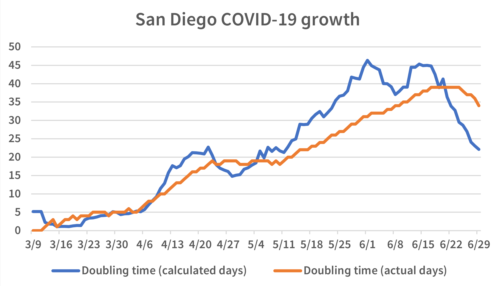
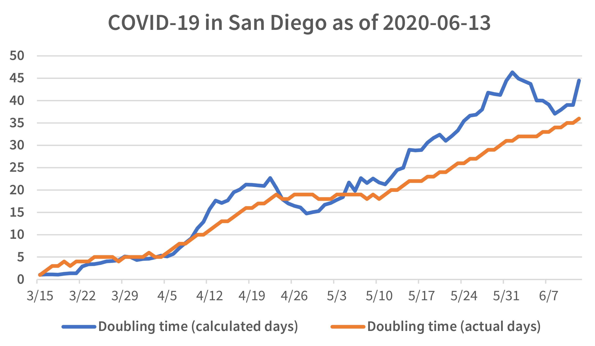
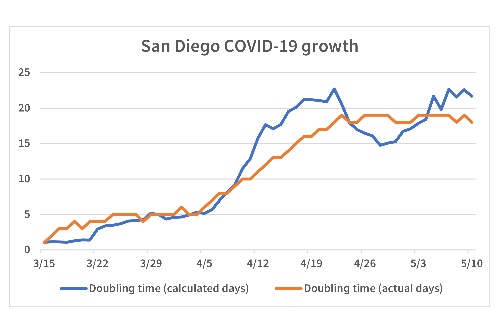

I use a hacked version of HTMLDOC
to process my blog entries. The entries are written in a
special version of Markdown which is then processed as follows:
Markdown → UTF-8 to Xascii converter → HTMLDOC → Lua script → HTML
webpage
The steps are as follows:
I write the blog in Markdown
Since HTMLDOC doesn’t like Unicode (in theory, it has the ability to
accept UTF-8 input. In practice, this is so buggy it’s simply better to
convert it in to a non-Unicode format first), I convert the Unicode in
to a special 7-bit format called Xascii.
I use a slightly hacked version of HTMLDOC 1.9.16 (the last version
which easily compiles in Cygwin) to convert the Markdown in to HTML
Since that HTML isn’t quite in a form suitable for my blog, I run it
through a Lua script which uses a bunch of regular expressions to
massage the HTML (real footnotes,1
pictures, split long words so there aren’t issues on a phone, etc.)
using Lua’s 8-bit regular expression engine (with some extensions to
support the unusual Xascii format I use). Here keeping things 8-bit is
good because then the regular expressions can process non-ASCII. Said
Lua engine outputs UTF-8 HTML suitable for putting on my blog.
I have a final script which takes those (mostly) HTML blog entries
and puts them on both of my blogs (inter-blog links are different
between the two blogs)
The Xascii format
Instead of using UTF-8, which HTMLDOC doesn’t really like, we use a
format called Xascii which I actually made up about seven years ago,
with no intention of using it in the real world. It was at the time a
“fantasy” encoding for an alternate universe where low end computers
would use this encoding to encode both English and Spanish, as well as
some limited non-ASCII punctuation.
Since both HTMLDOC and Lua prefer to get fix-width 8-bit input
(HTMLDOC is buggy with UTF-8 and Lua’s 8-bit regular expression engine
treats UTF-8 as multi character entities, so they can’t be part of
regular expression classes and what not), this fantasy format finally
became a reality since I had a real world use for it. The format is as
follows:
Here, “.” (except for 0x2e, the literal period) is a control
character. Note that “—” uses the slot for the very rarely used
“vertical tab”, so I have hacked HTMLDOC to not consider “vertical tab”
a whitespace character, and on the Lua side I have code which massages
regular expressions so that the custom class %b matches
all whitespace characters except “vertical tab”.
The fonts I use to render the webpage have essentially only the
characters that are present in Xascii; this allows the font files to be
really small and load very quickly, even on older networks (down here
in México, on my phone 4g is nearly universal and 5g is almost never
available).
This is perfect for my blog, since I only write in English and
Spanish. I have all of the non-ASCII control characters I need for my
blogs, and can use long term simple stable tools to build the blog.
A Lua function for factoring numbers. And some thoughts on Jimmy
Kimmel.
Factoring numbers in Lua
This is an extension of the code I posted yesterday,
and uses the primes() function from
yesterday to factor numbers.
This function takes a number to factor as its input, and returns the
list of prime factors in an array:
function factor(a)
local out={}
local prime=primes(a/2 + 1)
for b = 1,#prime do
while(a / prime[b] ==
math.floor(a/prime[b]))
do
out[#out + 1] = prime[b]
a = a / prime[b]
end
end
if #out == 0 then
out={a}
end
return out
end
This uses primes() from yesterday. The example usage of
the above function uses listArray(), also posted
yesterday:
print(listArray(factor(48)))
Jimmy Kimmel
Jimmy Kimmel was fired and his show cancelled because he said the following:
We hit some new lows over the weekend with the MAGA gang desperately
trying to characterize this kid who murdered Charlie Kirk as anything
other than one of them and doing everything they can to score political
points from it.1
Garry Kasparov is also upset
about the post-Kirk cancellations, but to be fair to him, he has always
opposed cancel culture and was one of the people to sign Harper’s Letter.
What is good for the goose is good for the gander. One cannot ignore
or cheer on cancel culture when people they disagree with get
cancelled, then turn around and bewail people cancelling people they
agree with. That’s tribal hypocrisy.
The world would be a better place if we had more people as principled
as Kasparov is. Kasparov knew the out of control cancellations
were an unsound gambit, and now the boomerang is coming back to get the
extreme left wing.
A Lua function for finding prime numbers. Also, some links about
Charlie Kirk.
Finding primes in Lua
This Lua function finds all primes between 2 and a, and
returns the list of primes in an array:
function primes(a)
local out = {2}
local inComposite = false
local c = 1
for b=3,a,2 do
isComposite = false
c = 1
while out[c]*out[c] <= b
do
if(b/out[c] ==
math.floor(b/out[c]))
then
isComposite = true
break
end
c = c + 1
end
if not isComposite then
out[#out + 1] = b
end
end
return out
end
Here’s a function for printing array elements:
function listArray(a)
local out = ""
for b=1,#a do
out = out ..
tostring(a[b])
.. " "
end
return out
end
Looking at this short YouTube video of Charlie Kirk,
he comes off as someone very
compassionate, even to people who have a very different standard of
morality than the morality he had—a morality which I myself have (I
have never had sex outside of a lifetime monogamous
commitment).
Picture attribution
The picture of Charlie Kirk was taken by Gage Skidmore, is
available under aCC 4.0 License, and it has been altered for this blog.
Let’s go over some of the more egregious examples of the cancel
culture we had in 2020.
2020’s Cancel Culture
There seems to be a collective amnesia among people who are left of
center about how egregious the cancel culture during the 2020 George
Floyd protests was. One left leaning publication pretends this kind of cancel culture started in 2023;
however, a lot of really bad cancel culture was going on
in 2020. I will only list examples that I blogged about at the time:
David Shor was fired
for tweeting that
“Post-MLK-assasination race riots reduced Democratic vote share in
surrounding counties by 2%, which was enough to tip the 1968 election
to Nixon. Non-violent protests increase Dem vote”.
Stephen Hsu was demoted
for linking to
research showing that police do not disproportionally shoot black
people.1
Cry me a river. Cancel culture was wrong back then, cancel culture is
wrong now, but it’s very unprincipled and tribalist to only be crying
fowl when it’s the people you oppose politically who are getting people
fired for expressing their views.
¡Viva México!
Today is Mexico’s
independence day
Today, September 16th, is Mexico’s independence day.
Since I now live here—I had to get away
from the toxic political environment in the US—I celebrated it last
night with my family.
2: I find it very ironic that this old article, supporting Bennet’s firing, links to a diary where a leftist is upset they got fired for their political views. While I have compassion that this person lost their job, did they have compassion when Bennet and Shor lost their jobs?
An update to the Lua Table sorter. Also, a website I like.
An updated Lua table sorter
Like what I posted yesterday,
here is a
Lua iterator which goes through elements in a table in sorted order.
This routine works like the pairs() function included with
Lua:
-- Like pairs() but sorted
function sPairs(inTable, sFunc)
if not sFunc then
sFunc = function(a, b)
local ta = type(a)
local tb = type(b)
if(ta == tb)
then return a < b
end
return tostring(ta) <
tostring(tb)
end
end
local keyList = {}
local index = 1
for k,_ in pairs(inTable) do
table.insert(keyList,k)
end
table.sort(keyList, sFunc)
return function()
key = keyList[index]
index = index + 1
return key, inTable[key]
end
end
Example usage of the above function:
a={z=1,y=2,c=3,w=4}
for k,v in sPairs(a) do
print(k,v)
end
With a sort function:
a={z=1,y=2,c=3,w=4}
function revS(a,b)
return a>b
end
for k,v in sPairs(a,revS) do
print(k,v)
end
revS (“Reverse sort”) is a reverse sorter. Note that revS
assumes the elements to be sorted are all of the same type.
More discussion
about 2025’s cancel culture
There is some good discussion about 2025’s cancel culture, albeit
with a right-of-center bias, over at The Motte.
In this week’s “Culture war” discussion,
some of the discussion is about left-wing
people who celebrated Charlie Kirk’s death and whether it’s OK for them
to lose their job or what not because of that behavior.
The Motte is a stand alone forum which started off on Reddit
but became stand alone because of concerns that Reddit was
stifling frank open discussion.
Let’s look at a Lua Table sorter. Also, thoughts on cancel culture in
2025.
A simple Lua table sorter
This routine works like the pairs() function included
with Lua, but the table keys are sorted:
-- Like pairs() but sorted
-- All table keys should be of
-- the same type unless a sort
-- function (“sFunc”) is used.
function sPairs(inTable, sFunc)
local keyList = {}
local index = 1
for k,_ in pairs(inTable) do
table.insert(keyList,k)
end
table.sort(keyList, sFunc)
return function()
key = keyList[index]
index = index + 1
return key, inTable[key]
end
end
If one wishes to mix strings and numbers, a sort function should be
used, for example:
function aSortFunction(a, b)
local t = tostring
return t(a) < t(b)
end
Example usage of the above two functions:
a={z=1,y=2,c=3,w=4}
for k,v in
sPairs(a, aSortFunction) do
print(k,v)
end
Cancelling people who celebrate Charlie Kirk’s death
This comes off as different than the cancel culture we had
in 2020. As I blogged about at the time, David Shor was cancelled for wanting to reduce violence.
This time
around, people are being cancelled (losing their jobs, being placed on
administrative leave, etc.) for encouraging violence.1
The problem is this: Both the left and the right have
elements which want to use violence to resolve our differences of
opinion. This will lead to a more violent and less safe society.
Footnote
1: When confronted with these accusations, the people who have encouraged violence respond by gaslighting—i.e. denying that what they say encourages violence.
I look at the escalation of political violence and how both the left
and right are in a place where they are losing empathy for people whose
views they disagree with.
Remembering Charlie Kirk
Charlie Kirk, a
conservative commentator, was murdered yesterday
For people who have been under a rock for the last 24 hours, one
Charlie Kirk was murdered yesterday. We have not caught the killer
(yet!) nor know their motives right now, but I do know that there are
people on the left who are either covertly
or overtly
celebrating his death.
We have lost basic decency and empathy in our culture. I think a
lot of it has to do with the online culture. I remember, in the
early days of online culture, there were these people I knew in real
life, and they were perfectly polite and decent people when we
interacted in the real world, but once they got behind a computer
screen, they lost all civility and would be very confrontational and
rude.
This online rudeness wasn’t considered, at the time, “real” behavior,
but now with multiple generations of people who see online interactions
as normal, the rudeness online is being reflected in the real world,
one example being the “Generation Z Stare”.
Someone has now been killed in cold blood, and people are celebrating
his death. This online rudeness is becoming deadly. I hope people can
learn respect, decency, and empathy for others sooner rather than
later, before we descend in to another civil war.
9/11 unified us as a nation. Online culture is dividing us in very
ugly ways. I yearn for the unity we had post-9/11 again.
Picture attribution
The picture of Charlie Kirk was taken by Gage Skidmore, is
available under aCC 4.0 License, and it has been altered for this blog.
The picture of the burning twin towers on 9/11 was taken by
Michael Foran, and is available under aCC 2.0 License, and has been altered for this blog.
As I type these words, right wing political activist Charlie Kirk
(pictured) has been shot dead in cold blood. We do not know who killed
him or what their motive was, but it appears to be a left-wing
motivated political killing.
We have come to the point where political killings of people we
disagree with is considered acceptable.
There is something wrong with the political
climate in the United States causing people to think that killing
someone is cold blood is somehow OK.
While it is true that the political right spreads lies, the left-wing
media has also been very dishonest, spreading misinformation.
I will list just two examples of how the political left either
ignores or downright has lied when confronted with inconvenient truths.
How the left
lied about Alcoholics Anonymous
Alcoholics Anonymous is one of the most effective treatments for alcoholism.
Since this goes against
the left-wing anti-God narrative, they have either ignored or spread
lies about this inconvenient truth.
Once the 2020 Cochrane Review of AA came out, proving beyond a shadow
of a doubt that AA is effective,1
both Salon and The Atlantic completely ignored the science showing
AA effectiveness. NPR, to their credit, did report on the 2020 Cochrane Review,
pointing out that AA has a
42% success rate compared to the 35% success rate the control treatment
reported.
Richard M. Stallman
As an open source developer,
I have had the privilege of meeting the legendary Richard M. Stallman
(RMS). He was a very kind and caring person.
The point being this: Yes, the right wing media takes liberties with
the truth, but the fact of the matter is that the left wing media does
the same thing, distorting the truth to promote their agenda. The
mainstream media plain simply cannot be trusted, and realizing
that both the left wing and the right wing can be loose with the facts
has done a lot to convert me from being left-wing to being politically
neutral.
When the mainstream media is more interested in spreading outrage
(“flamebait”, as we used to call it) then in spreading knowledge, it
helps cause America to become a more politically divided country, where
the level of anger is going up; this anger could very well had caused
Charlie Kirk to be killed today.
Picture attribution
The picture of Charlie Kirk was taken by Gage Skidmore, is
available under aCC 4.0 License, and it has been altered for this blog.
Footnote
1: I know Dr. Peele published a supposed refutation to the 2020 Cochrane Review that left-wing anti-AA critics bring up every time someone mentions said 2020 Cochrane review, but those criticisms were not published in a peer-reviewed journal and were refuted at https://archive.md/tT9fx
In this blog, I talk about life in México, and the font used for this
blog.
¡Viva México!
A view
of the skyline where I live
Mexico is going really well for my daughter and myself. She is having
a great time down here, making new friends at school.
I too am amking new friends and reestablishing connections with
people who have been my friends for years.
The webpage font
I have made some minor revisions to the font I use for the webpage:
I have made the number “1” slightly taller so it doesn’t look shorter
than other numbers
I have updated the italic “f” (e.g. f) to not have a long
descender.
To update the italic “f”, I had to keep in mind that a number of
ligatures with “f” in them exist, e.g. “ff”, “fi”, “fl”, “ffi”, “ffl”,
among others. While one version of the font has all of “f”, “fi”, “fl”,
“ffi”, and even “ffl” updated so that “f” doesn’t have a
descender, it was simpler for me to make the italic “f” the
non-italic “f” with a 10 degree oblique skew. Since the font I use on
my webpage and blog is size optimized, I dealt with the ligatures by
simply not having them; since Roboto Serif is essentially a slab serif
which invokes typewriters of the 20th century, the font looks fine
without ligatures.
I look at and refute a couple of incel myths in this blog.
Myth #1: 80% of
women sleep with 20% of women
80/20 is a myth
There is a myth that 80% of the women sleep with 20% of the men. This
myth has several forms; some claim 90% of women sleep with 10% of the
men or even that 99% of the women sleep with 1% of the men. All of
these variants are myths.
The science shows
that about
20%~30% of both men an women are very promiscuous. Yes, 20%~30% of men
have the majority of sexual partners, but those women they are having
sex with also have a lot of partners. A certain kind of man
has sex with a lot of women, but those women he gets with in turn have
sex with a lot of men.
In reality, about 20%~30% of both men and women are promiscuous,
about 50~60% of men and women only have sex in long term partnerships,
and about 20% of both men and women are virgins.
Myth #2: AF/BB is not true
AF/BB (short for “Alpha Fux, Beta Bux”) is a myth that women get
together with provider men who they are not sexually attracted to, and
cheat on those providers to have children with men they are physically
attracted to. This myth is based on some mistaken ideas evolutionary
psychologists had 20-30 years ago; more recent science shows that women
actually only very rarely cheat on their partners.
Marshall was a friend and father figure to me at a very key coming of
age time in my life. I remember my time with him.
==Being with Marshall==
When I first met Marshall, I immediately liked the guy; he was friendly and took an interest in me. I was 20 and he was about 40, and had an interest in fast cars and young women. None of this I paid attention to at the time; I just liked the fact he was very friendly to me.
Marshall had a small business that looked very successful. I remember us driving around in his Porsche, with him telling me, in an excited voice, that we were going to be millionaires. I was taken in by the dream. I felt, like he did, that great financial success was just around the corner. So I started working for him. There was one small issue: His company was temporarily having some minor financial problems, and he couldn’t pay me for the moment. But I knew that was going to change.
The computer I really wanted was this tiny sub-sub-laptop, in an era when tiny computers like that cost a lot of money.
I knew I was going to get one as soon as Marshall’s company started taking off and the money started coming in. His business consisted of writing a Beauty Salon scheduling program. I started improving the program so we could have the successful business Marshall kept talking about.
==My days “working” for Marshall==
I had a cat named Misty at the time
Every morning, I would wake up, shower, and get dressed. Marshall would soon arrive in his Porsche at my house and honk the horn, which told me to get out of the house and go in to his car to go to his office. After working for Marshall all day, I would socialize with him and his friends. This was my entire social life.
Marshall’s program was slow work; the program was nowhere near ready to ship and had a lot of bugs. Despite this, Marshall was trying to sell the application. He had one salon that he gave a computer with this application to; the owner of the salon didn’t need to pay Marshall for the computer, but instead gave Marshall some money every month.
We were regularly getting phone calls from him about how the program wasn’t working; he was getting more and more upset every time he had to call us. We kept putting band-aid fixes on it, but it wasn’t enough.
We were getting a lot of other calls. Indeed, Marshall made me the person answering all of the calls, and with good reason. Bill collectors were constantly calling us. Bill collectors for everything: Software not paid for; stuff bought with postdated and bouncing checks; computers he bought and never fully paid off; and so on.
==Marshall’s shattered dream==
One phone call in particular disturbed Marshall greatly. It was some loan company; Marshall took the call and was clearly upset. He demanded to talk to the person in charge; he told him he had the money; he mentioned something about a car. After the phone call, I could see a pained look on his face; he just said nothing and I said nothing too. There was nothing to say.
That evening, as he was driving home, I asked him what the phone call was about. He assured me: “Oh, just some spiritually sick people who have a lot of insecurities. Nothing to worry about.” I almost completely believed him.
The next day, someone came to repossess Marshall’s car. It would seem that Marshall hadn’t made a single car payment after getting the car three months before. He called up the financial company again, talking to their boss, assuring them he could afford the car; telling them that, if they would only give him a little more time, he would be making the payments. The car was in the garage and the man who came for the car was smoking heavily and called the police. He was waiting to get the garage door opened and take the car.
Finally, after about 30 minutes of Marshall talking to the financial loan company, the repossession man came in to the office where Marshall was, got on the phone, and said “OK, have you had enough of this guy’s bullshit? I’m taking the car.” As Marshall finally gave the car to them, I could see he was in a lot of pain, though he had too much pride to openly weep—not a very productive day for work.
When Marshall’s girlfriend came home from work that evening, we went to see a movie at the theater together that night.
The repossession of the car was what woke me up to seeing the downward spiral Marshall was actually in. After that, things were not the same. I still held on to the hope things would change, but they didn’t. Things got worse and worse; Marshall was now losing his house and every possible avenue for the company getting money was closing. Marshall was getting more and more desperate. He became verbally abusive, yelling at me for no reason. I became the sounding box for the frustrations he was having with his company falling apart.
==Relaxing days==
The neighborhood where I worked for Marshall
When I took work breaks, I would take this walk in the neighborhood Marshall lived in; the weather was beautiful sunny California weather. One day I brought my camera with me to work; one of the pictures I took was of that walk I took every day; it’s a picture looking out on a street in the neighborhood, with a red Volkswagen bug parked on the street. It was a beautiful day with hardly a cloud in the sky; I still have that picture today to bring back memories of that time in my life.
Desperate for money, one day Marshall got out his phone book and started calling up some local salons. All of them gave Marshall the same reply: They were not interested. His tone got more desperate and shill with each salon he called up; after the fourth one, he just gave up entirely and had a dejected look of despair on his face.
After getting all these rejections, Marshall then left the room and came back an hour or two later; I could see from his face that he had been crying. He still had his pride, so he didn’t cry in front of me. He never let go of his pride.
The writing was on the wall: There was no money stream for Marshall’s company.
==Ending things with Marshall==
Marshall was, when he could, using his girlfriend’s car to take me to work; sometimes he couldn’t and I would have to ride a bicycle to work. Things were not changing. One evening, as I was riding home, my bicycle broke down and I had to walk it home. It was then I decided I had enough of working and not getting paid. That was my last day working for Marshall. I was through.
I ended up going back to school and eventually got high paying jobs as a programmer in the computer industry.
I had mostly cut off all contact with Marshall. I would see him sometimes, and we even had the occasional conversation, but it was never the same. He was no longer a father figure to me, and no longer the center of my life.
Marshall eventually married, and later on divorced, his girlfriend. I talked to Marshall one last time many years later; we said a final “I love you” to each other. Marshall died a little over a decade after our final conversation.
==A time of spiritual growth==
The time I was with Marshall was a very key part of my spiritual growth.
We would have long discussions, sometimes arguments, about God. When I
started “working” for Marshall; I was an atheist. Just after I broke
contact with him, I had a conversion experience and became a Christian;
that experience was how I went from being a child to being an adult.
This experience would not had been possible had Marshall not been a part
of my life.
I have moved to México so that my daughter has a chance to learn Spanish
and become fully bilingual, and so that she can get to know the mother’s
side of her family better. To celebrate our move, I have upated the
font on my website.
==The font update==
I have moved the website from using Bitstream Charter/Charis SIL for
the body text to using Roboto Serif. This is a new font for the 2020s,
having been released in 2022. I have minimized its size by subsetting
the font to only have ASCII, some limited extended punctuation (smart
quotes, etc.), and Spanish language letters.
To my eyes, Roboto Serif invokes something from the mid 20th century.
It looks more like a slab serif than a traditional serif at the weight
and grading I use for the body text, and while a modern typeface,
has a look which feels like a rose tinted view of life in the 1950s or
1960s.
The website continues to use Source Sans for the headings; I have been using
Source Sans since 2012 so having this font on the webpage is
now a tradition I would like to keep, to honor the past while looking
forward towards the future.
In addition, Internet Explorer is no longer on Windows 11 at all,
so there is no need to continue using larger WOFF files for the fonts.
All fonts are in WOFF2 format; if someone (heaven forbid) comes to this
website with an ancient browser (IE, etc.) which only supports WOFF but
not WOFF2, they will use one of the fallback fonts in the font stacks
I have made.
The new combined CSS file with fonts is only 83,649 bytes in size.
The older combined CSS file for the fonts is 116,472 bytes long.
Let’s look at an interator which lists all of the keys of a Lua table
in sorted order. Both string and numeric keys are allowed, and all
string keys will be listed before all of the numeric keys.
==The code==
function sortedKeys(inTable) local keyList = {} local index = 1 for k,_ in pairs(inTable) do table.insert(keyList,k) end -- Allow numbers and strings; -- strings before numbers local sf = function(a,b) if(type(a) == 'number' and type(b) == 'string') then return false elseif (type(b) == 'number' and type(a) == 'string') then return true end return a < b end table.sort(keyList, sf) return function() rvalue = keyList[index] index = index + 1 return rvalue end end
To run:
a = {hi="there"} a[1] = "one" a["one"] = "1string" a["999"] = "three9s" a[2] = "two" for k in sortedKeys(a) do print(k,a[k]) end
This will output the following:
999 three9s hi there one 1string 1 one 2 two
Strings are lexically sorted and numbers are numerically sorted. All
strings come before all numbers. Unlike Javascript objects, in Lua, the
number 1 and the string "1" can both be in the same table and are
separate table keys.
Comments for blog entries can be seen in the
forum.
I have spent a month writing a free open content (public domain) e-book
about programming in Lua. While Lua’s terse reference manual is open
content, the official book for programming in Lua is proprietary. I
wrote this book as a guide to programming in Lua that is open content,
and that is geared towards Lua 5.1, the most commonly deployed version
of Lua out there.
The book is not an introduction to programming; in particular, it assumes
the reader is already familiar with other scripting languages such as AWK,
Perl, or Python. The book concentrates more on the parts of Lua which can
be difficult for people used to other scripting languages to understand,
such as function closures, how Lua uses function factories to run
for loops (and how one can have Lua iterate through items in a list
using the right function in a for loop), metatables, and Lua’s
prototypical class model.
This book uses a large number of code examples to illustrate how code
is written in Lua, and to provide public domain “battery” code
(such as a regular expression splitter and a function which makes regular
expressions case insensitive) people can use in their own Lua scripts.
This book is not a Lua reference; a very terse reference manual is
already included with Lua. This is a companion to the reference manual
to have code examples and longer explanations of the concepts expressed
in that manual.
In addition to the PDF e-book, the Open Document source, as well as all
fonts used in the book, is also available as part of my “Lunacy”
fork of Lua 5.1:
Just a minor update with my life. Right now, I haven’t been working
on open source too much since I have been concentrating on enjoying the
outdoors, physical fitness, and becoming healthy. I am making a lot
of progress there — it’s amazing what one can accomplish when one
goes to the effort to improve one’s body.
I am also concentrating on being the best father I can be for my
beautiful daughter, and that means volunteering at her school and
spending quality time with her.
The truth is this: The things going on in the Internet don’t really
matter to me any more. I don’t care about engaging in yet another
pointless political debate. I know that if I’m getting all worked
up over politics, there’s something wrong in my personal life I need
to work on. I know that Reddit is a fantasy world and does not
reflect reality. I have better things to do than to get all angry
about whatever it is that has gone viral on Twitter today. I only
use Instagram and Facebook to keep in touch with real world friends.
Today, I live in the real world, not the Internet fantasy world.
Comments for blog entries can be seen in the
forum.
I have deleted these songs because sharing my music with the public
is sharing a very private and vulnerable part of me. Since I only got
limited positive feedback, I have decided to make the songs private.
I have released a new single of my music. This is a two sided single,
where the “A side” is “Instagram Goddess”, and the “B side”
is the song “Flying Far Away”.
==Instagram Goddess==
“Instagram Goddess”, the first song, represents the illusion of
perfect beauty. It is an electronic dance song with a definite trance
music vibe to it. The song clocks in at 131 BPM and is 5:31 long.
It can be listened to on YouTube here:
The other song on this single is “Flying Far Away”, which is very
different from “Instagram Goddess”. Instead of being a song to dance
to, “Flying Far Away” is a song to relax and meditate to.
To end 2022, I have released MaraDNS 3.5.0035. This release adds
support for large block lists which use little memory.
==Blocking hosts==
For a couple of years now, MaraDNS has had support for block lists.
For example, let us suppose we want to block some domains. We have
been able to do it like this:
ip4 = {}
ip4["evil.example.com."] = "X"
ip4["phish.foo."] = "X"
ip4["privacy-violator.example.net."] = "X"
(As an aside, this will block both the IPv4 and IPv6 forms
of these names)
Once this is set up, it will not be possible to resolve, say,
evil.example.com using Deadwood.
This works, but there’s a problem: It uses too much memory per entry.
Over at https://github.com/StevenBlack/hosts there are a number of large
block lists. One of which, the one for blocking pornographic content,
has some 207,723 entries in it. Loading this in to Deadwood using the
ip4 method uses some 237 megabytes or so of memory. In
comparison, if we use a block hash (see below), the same list only takes
up 9.5 megabytes of memory.
==Block Hash support==
In otder to be able to block a large number of hosts while using
minimal memory, MaraDNS 3.5.0035 now has block hash support.
The process for adding a block hash to Deadwood is as follows:
We use a new program, blockHashMake, to create a “block
hash file”:
We place the block hash file in the Deadwood home directory (usually,
/etc/deadwood).
We then tell Deadwood to read the block hash file. Put this in
/etc/dwood3rc:
blocked_hosts_hash_file = "badHosts.bin"
Note that, for security reasons, every time a block hash file is made,
a different file is generated. If, for some reason, it is desirable
to have a block hash file be same for a given list of hosts every time,
one can generate a block hash file as follows:
There is a security risk if we allow a blocked hosts file to have a 0
key: An attacker with access to a recursive instance of Deadwood could
have Deadwood use more resources than necessary if they know the block
hash file being used. Since the block hash file is read only, hash
flooding attacks are not possible, but an attacker could form queries
which use more resources to resolve as not being present in the block
hash.
Deadwood should never be an open recursor and this attack is limited in
scope. But be aware of the risks before setting this parameter to 1.
Comments for blog entries can be seen in the
forum.
I have been making a lot of MaraDNS updates this last week. Let’s
go over them.
==Y2038==
A couple of years ago, I removed maradns.exe from MaraDNS’s
download files because it had some Y2038 issues. maradns.exe
is back because I finally got a chance to go over the source code and
clean up a few lingering Y2038 issues.
Some features which require underlying libraries to work past Y2038,
such as localized timestamps for SOA serial numbers and timestamps,
are simply disabled on systems with a 32-bit time_t. It’s
better for stuff like that to be disabled than to have it do
something broken at Y2038. Users with a 64-bit time_t are
not affected by these changes.
I have made other code Y2038 compliant on systems which still use a 32-bit
time_t by moving the 136-year long window from 1901 to 2038 to
another range of dates. Current timestamps should be good until sometime
in 2156; timestamps for when zone files have been changed (to generate
synthetic SOA serial numbers) should be good until sometime in 2136.
While localtime functions (log timestamps, localized time SOA serial
numbers) are disabled in the 32-bit Windows maradns.exe build,
it uses Y2038 compliant native Win32 calls to find a file timestamp to
generate a synthetic SOA serial number.
There is only a 136-year long window on systems with a 32-bit
time_t; the majority of current real-world systems which
use a 64-bit time_t will not have timestamp issues comes 2136, 2156,
or whatever. There is an issue with synthetic SOA serial numbers
wrapping back to 0 come 2841, so anyone using MaraDNS in the 2800s should
be sure that replica (“slave”) DNS servers do not expect a SOA serial
to increment, only change.
I should note that synthetic SOA serial numbers are not used in zone
files with a SOA record in them—that’s another solution come
2800 or so (mid-2136 if one insists on still having a 32-bit
time_t).
These fixes are important enough that I have backported them to the
3.4 branch of MaraDNS.
==RFC8482==
While MaraDNS generally does not follow RFCs which came out after
2010, there is one very useful RFC from 2019 with security implications:
RFC8482.
DNS has supported for a long time ANY records, but they are a moderate
pain to implement. I implemented ANY records back in 2001
since an RFC-compliant DNS server needed to support them.
The only real world use case for ANY records is from Qmail
supporting them because of a bug in Bind 4.9.3, released back in 1996.
RFC8482 has been carefully
designed to handle the Qmail corner case, and there is no other
real-world use case for ANY. On the other hand, ANY has been abused by
bad actors in denial of service attacks.
While the security implications for ANY are limited with MaraDNS (which
does not have large packet support), there are security issues
so I now consider having RFC8482 support essential. Indeed, it’s
important enough I have backported RFC8482 support to the 3.4 branch
of MaraDNS.
==Updating “make install”==
The Debian
port of MaraDNS has not been maintained for a while. That in mind,
since I use MaraDNS in Ubuntu 22.04 (note: Ubuntu is derived from Debian),
and since the RFC8482 issue is serious enough to merit updating MaraDNS,
it’s time for me to maintain MaraDNS for modern Linux distributions
again.
That in mind, I spent all weekend researching systemd and have
updated MaraDNS to have a proper unit file for systemd. Systemd is a
lot better than many other init systems because, not only does
it have full daemonization support (it does what duende did
back in the sysvinit days), it also allows old sysvinit
scripts to run.
Now, when running make install in MaraDNS, it will do the
right thing in Ubuntu 22.04: It will install systemd unit files
and enable the services with systemd.
In addition, “make install” will now install coLunacyDNS (a new
Lua-based DNS server which uses Lua scripts to make custom DNS replies)
as well as Lunacy (my personal fork of Lua 5.1 which I use for MaraDNS
testing and for converting MaraDNS’s documents in to HTML pages, man
pages, and plain text files).
Since I am a Ubuntu 22.04 user, I can only guarantee that “make
install” will work with Ubuntu 22.04. People using other distributions
are on their own, but I will keep duende and the old
sysvinit init files around. I have even hacked them to work
with OpenRC—note I am not actively supporting OpenRC because I
only use Alpine Linux for MaraDNS unit/regression testing.
While discussing distributions, a shout out to Tomasz Torcz who
maintains a
current port of MaraDNS for Fedora core; this is the only
distro-specific port of MaraDNS I know of which is still actively
maintained.
This blog is about the midterms. I also have made a new MaraDNS release.
==The midterms: 2010 versus 2022==
The Republicans got their butts kicked in the 2022 midterms.
What happened?
The closest midterm to compare 2022 to is 2010. Back in 2010, we
had a Democratic president, a Democratic senate, and a Democratic house.
We also had a weak economy.
It was a very red bloodbath: Republicans gained 63 seats in the house,
and six seats in the senate. They retained control of one or more
legislative house throughout the 2010s.
Compare this to 2022: We have a Democratic president. A Democratic
senate. A Democratic house. And a weak economy. Based on just the
fundamentals, the Democrats should had lost both legislative houses.
That didn’t happen.
While votes are still being counted, it looks like the Republicans will
have only a very small majority in the house.
Democrats are most likely going to gain a seat in the senate
when all is said and done.
==What happened?==
While there are a lot of factors which affects how people will vote,
If I had to pin the results down to one issue, it would be
abortion.
In 2018 we had the blue wave giving the house back to the Democrats.
The main issue which persuaded people was healthcare.
At the time, Republicans got very close to taking away healthcare from
millions of Americans. It was only the now-deceased John McCain who
saved the Affordable Care Act (ACA).
Republicans learned their lesson in 2018. They very quickly stopped
talking about “repealing Obamacare” (their then-name for the ACA)
once the 2018 results showed it didn’t resonate with voters.
I am not seeing the same kind of self-reflection the Republican party
had after their 2018 defeat here in 2022. This may change come next
year; we will see.
I have released MaraDNS 3.5.0028
this week. The updates I have been making this month have been, by
and large, to fix up a small number of
Y2038 issues which
were present in the code. MaraDNS has been Y2038 compliant for a while,
but there were a couple of non-critical things which would had broken
come Y2038 on systems with a 32-bit time_t.
MaraDNS is becoming a mature open source project, having been around
for over 21 years, and with stable releases since mid-2002. That in
mind, I am now thinking about how I can keep MaraDNS sustainable for
as long as possible with a minimum of forced maintenance.
One moving part which can break some components of MaraDNS is any
non-standard scripting language which MaraDNS uses. For example, MaraDNS
has had a Python script for converting BIND zone files in to MaraDNS
zone files which I wrote in 2006, ran fine in 2006, and which I had no
reason to update because it was running fine. Then, in 2019, I got some
annoying
messages from the Debian team about having a Python2 script which
would break in Python3.
I had made no changes to the script. It did not have any bugs. The
only thing that changed is that the non-standard scripting language
Python decided to change their syntax and stop supporting the older
version of Python. So, much to my annoyance, I had to perform unpaid
maintenance work for MaraDNS because I chose to include a Python
script.
That in mind, I have removed bind2csv2.py from MaraDNS,
placing it in a separate repository of unsupported programs.
Likewise, I have converted the Perl scripts MaraDNS has to handle
MaraDNS’ documentation in to Lua5.1 scripts. While Lua5.1 isn’t
standard per se, there are multiple independent implementations
of it (PUC Lua, LuaJIT, etc.) including one in the MaraDNS source tree
(lunacy, a fork of PUC Lua 5.1), and Lua5.1 will never change its syntax.
I understand that, right now, there are no plans to come out with a
Python4 that breaks Python3 scripts, nor a Perl7 which breaks Perl5
scripts (there’s a reason Perl6 was renamed Raku, so that the Perl
world would not have the same issues Python had with the Python3
update), but since both scripting languages are not included with
MaraDNS and are not set in stone with a standard like POSIX, in the
interests of long-term maintainability, MaraDNS now has no Perl nor
Python scripts in it.
For people who still want the Python scripts or the outdated Perl
versions of the the MaraDNS “EJ” (Easy Journal) documentation tools,
they are available here:
MaraDNS 3.5.0025 can be built and tested using multiple implementations
for each step of the process:
It can be built on top of a Linux kernel, or in Windows 10 with cygwin.
It can use the GNU utilities for the POSIX userspace (sh,
awk, etc.), or it can use Busybox.
It can use either PUC Lua 5.1 or Lunacy, my Lua 5.1 fork, to run the
Lua parts of the tests and the document-building Lua scripts.
No less than three make implementations can now run
MaraDNS’ makefiles.
MaraDNS compiles with no less than three different C compilers:
gcc, clang, and tcc.
==Make==
Make is a standard POSIX utility to determine dependencies and compile
programs.
I have updated all of MaraDNS’ makefiles to work with
an implementation
of the “make” development utility which is mostly POSIX compliant.
For real world use, the “make” utility needs to have an extension that
POSIX permits: The ability to have the / character in makefile
targets. This is supported by any real-world “make” implementation
(GNU make, bmake, even pdpmake with non-POSIX extensions enabled) but
does deviate from a strict reading of the
POSIX
standard for “make”.
If using a strictly POSIX version of make which has the extension of
allowing / in target names, one needs to type in these commands
to compile MaraDNS:
./configure CC=cc # Change this to gcc/clang/tcc as desired export CC make
This deviates from the standard ./configure ; make build
process.
While real-world implementations of “make” set CC to the
cc command by default, the POSIX make spec actually says
this should be c99 which won’t compile MaraDNS (since MaraDNS
uses POSIX calls not part of the ISO spec).
That in mind, I have created a fork of pdpmake which is
completely POSIX compliant with two exceptions:
Angela Lansbury, after having lived a full life, has died at the age of
96. While well known for her role in Murder, She Wrote,
my favorite role and song of hers is “Tale
As Old As Time” from the 1991 animated version of Beauty and the
Beast.
Angela was able to overcome the very unfortunate stereotype of a female
performer supposedly no longer being viable once she ages. The role she
is most famous for in my daughter’s world—the teapot in the animated
Beauty and the Beast—was one that she performed when she was
60 years old.
While the song “Tale As Old As Time” was re-performed for the 2017
live action version of Beauty and the Beast, I always have
preferred Lansbury’s version.
Rest in peace, Angela, and thank you for the wonderful acting
and music.
==MaraDNS update==
There is a long standing bug where Deadwood would incorrectly resolve
CNAMES under certain limited circumstances.
Deadwood has for a long time allowed out of bailiwick answers in a CNAME
chain, since:
They are not a security threat
They sometimes allow answers to be solved more quickly
Let us suppose we have this:
blog.foo. CNAME blog.new-isp.foo.
blog.new-isp.foo. A 10.1.2.3
If the real answer is 10.1.2.3, this allows Deadwood to solve
the query as soon as it sees this CNAME chain. It’s not a security
hole because Deadwood only stores the entry as the answer for
“blog.foo.”
But if the real answer for blog.new-isp.foo were something different,
say 10.9.8.7, then Deadwood would had returned the wrong IP for the blog.
This isn’t a security problem, but it’s an issue because most DNS
servers would discard the CNAME glue while Deadwood accepted it.
This bug was filed in 2015. I said, at the time, that I could
not fix it because I was a single parent working a
full time job. Now that I am semi-retired since it’s hard to find
an employer in the tech sector willing to work around the needs of a
now full time single parent, I finally had time to fix this tonight.
I have also created a test to verify this bug is fixed. Indeed,
I followed test driven development: I made the test, then updated
the code so the test would pass.
The code can be downloaded from the Git tree for MaraDNS:
While using Deadwood as a recursive resolver is generally
deprecated—recursive DNS here in 2022 is something best left to
large organizations which can pay programmers to maintain the
DNS server full time—this is a fairly small change which will make
things more bearable for people still using Deadwood 3.4 as a recursive
resolver.
Since the 3.4 branch of MaraDNS uses a system
of shell scripts and diff patches to update the code, I have
made a
script which will update Deadwood with this change when
it is time to make the MaraDNS 3.4.04 release.
As I was working on that code, I made this discovery that, on both
64-bit ARM and 64-bit x86 architectures, int32_t and
int_fast32_t are the same datatype. Since there still exist
some expensive mainframes out there which do not support
32-bit words (Unisys still has a mainframe which uses 36-bit words instead),
C code should ideally not use int32_t, since someone may end
up trying to compile the code on some exotic computer some day. Instead,
one should use int_fast32_t, which is required to be supported
if a compiler is C99 compliant (unlike int32_t), since this
data type might be bigger than 32 bits.
I didn’t know this when I did the lion’s share of Deadwood development
between 2007 and 2010; I used int32_t where most of the time
int_fast32_t would had made more sense for integers which do
not fit in 16 bits. The thinking when developing Deadwood is that
int could be 16-bit (but is 32-bit or 64-bit on anything Deadwood
compiles on), and to use exact lengths when more bits was needed
in a number.
There are places where the integer must be precisely 32-bits
(notably, the cryptographic random number generator), and since no one
is loaning me a Unisys mainframe to develop things on something without
32-bit support, there is no way for me to meaningfully test things on
a system,
which
has not even been confirmed to exist, which has
stdint.h support but doesn’t have int32_t,
uint32_t, or even int64_t.
Since I am aware of no one who has ever had an issue with this (and
people have compiled Deadwood on lots of stuff like MIPS and what not),
I will leave this bug, such as it is, open. If you want things to work on
your Unisys mainframe, if you’re rich enough to buy a Unisys, you’re
rich enough to pay me to refactor Deadwood to not need int32_t.
Comments for blog entries can be seen in the
forum.
This blog is an example of how outspoken, confrontational people have a hard
time doing actual productive work.
==The rise and fall of djbdns==
djbdns is (was, really, here in 2022) a DNS server which was very popular
back in 2001, when I started developing MaraDNS. It has not been updated
since 2001.
One of the things I find incredibly ironic is that, here, over 20
years after DJB’s final update to djbdns, I’m the only one who is
updating its code. And, I am
no djbdns advocate: I started MaraDNS
simply because, until 2007, djbdns didn’t have an open source license,
BIND had a lot of security issues, and there plain simply wasn’t any
other DNS server out there. The djbdns crowd was not happy; one of my
first emails I got after starting MaraDNS was a flame from a djbdns
user criticizing me for making MaraDNS because djbdns was good enough,
in his point of view.
And, indeed, there was a lot of noise 10-20 years ago about how djbdns
was the one true DNS server, better than all others because it had
no security holes. They made a lot of noise online, flooding online
discussion boards whenever the subject of a DNS server came up. A few
of them are still on ycombinator, still criticizing anything that’s
not djbdns—the excellent KnotDNS got a cold reception from them there.
Despite all of the noise these loudmouths made about djbdns, very few
stepped up to plate to actually maintain djbdns’s code. You would
think, with the number of poster loudly proclaiming the virtues of
djbdns, the number of people who made entire websites shrines to djbdns
(not to mention qmail), and so on, at least one of them would still be
up to plate, maintaining djbdns.
No. That didn’t happen. The only one still here, still maintaining
djbdns is me, and I made a competitor to djbdns (which has been flamed
by multiple djbdns “advocates”). Not one person who went to so much
effort to troll and flame other DNS servers had the basic competence
and persistence to actually make and maintain code.
Years after the BIND-and-djbdns flame wars have died out everywhere
except with the aging crowd of Ycombinator desperately trying to recreate
a rose-tinted vision of the past (and even here the djbdns advocates
are slowly conceding djbdns isn’t really usable here in the 2020s),
MaraDNS is still being maintained. I have given up on making her a general
purpose recursive DNS server (use BIND, Unbound, or Knot Resolver for
that), although it will still work as a recursor with over 99% of sites,
as long as min_ttl is used so amazon.com is usable. However, MaraDNS is
still a general-purpose authoritative nameserver, and it is (via Deadwood)
a usable caching resolver (useful for pi-hole type stuff).
Point being, people who make a lot of noise and spread a lot of
negative energy online seem to not be very good at actually creating
and maintaining something tangible like a software project.
I am taking a minor break from being actively involved in the online chess
community. People should not be making unfounded negative accusations
without evidence, and the current controversy, which I have discussed
enough in the last two blog entries, has not died down in the least.
Hopefully things will get back to normal again; until then, I need
some space from that kind of online negativity.
Comments for blog entries can be seen in the
forum.
On the 21st anniversary of September 11, I look at
how online discussion about Niemann is devolving.
==September 11==
I have discussed my memories of the September 11 attack in
2021, 2019, and
2012; I was in Mexico when it happened.
One additional memory that sticks out is that not only did all of the USA
TV channels we could watch in Mexico have non-stop coverage of the 9/11
attacks, but in addition all of the Mexican TV channels stopped showing
telenovelas (Spanish language soap operas) and other shows to
give Mexico non-stop coverage of the attacks in the days immediately
after the attack.
I remember going to a local coffee shop one afternoon a day or two after
the attacks and seeing two television screens where Mexican news anchors
were still discussing the attack in Spanish.
==The Niemann conspiracy theories==
I’m starting to see conspiracy theories about Hans Niemann, the player
who defeated Magnus Carlsen a week ago, fester on Reddit and Youtube,
so I will address what I have seen so far.
I’ve seen comparisons to Lance Armstrong’s story, where it took over
a decade for the doping allegations to finally end his career. A Lance
Armstrong comparison isn’t valid. Even back in 2004, there was a French
book,
L.A. Confidentiel,
which presented strong circumstantial evidence
of Armstrong’s doping. On the other hand, there have been no suspicions
of Niemann cheating over the board until Magnus left the Sinquefield Cup.
People are bringing up a theory that Niemann does better in tournaments
using DGT boards, but this data has not been replicated by others. See
this
tweet and
this
tweet.
To quote the
Wall
Street Journal, “game screening of Niemann’s play by one of the
world’s leading chess detectives, the University at Buffalo’s Kenneth
Regan, haven’t found anything untoward.” His win over Carlsen
has been scrutinized by others, including
apparently former world champion
Karpov; no one has found evidence of computer play in Niemann’s victory.
Allegations of Niemann using computer assistance in other over the board
tournaments have been made, but if Niemann is able to beat the reigning
world champion as Black without cheating, he can beat many other players
without having to resort to cheating.
Some claim maybe there’s an undetectable cheating technology out
there. If such a technology exists, it makes every single super
grandmaster, not just Niemann, suspect.
I understand Niemann has cheated online, but he claims to have not done
it since he was 16, and in our society, with the exception of the
most egregious crimes, anything someone does when they are under
18 is forgiven and forgotten on their 18th birthday.
While chess.com
claims
Niemann has cheated other times, they do not claim he cheated since
becoming 18. Regardless,
Niemann strongly denies ever engaging in over the board cheating.
I understand it can be very hard to accept that maybe Magnus Carlsen
left a tournament without playing all of his games because he lost,
which I believe is the most likely explanation of what happened. If
true, this is not behavior a world champion should engage in. I feel
a lot of compassion for Magnus Carlsen and his fans, but it does the chess
world no favor to drag Niemann through the mud with baseless accusations.
==Carlsen vs. Niemann, September 2022==
Here is the historic game where Niemann defeated Carlsen as black
in a very surprising upset a week ago today. I will simply leave the
game here without comment.
The picture of the twin towers burning on September 11 was taken
by Michael Foran and obtained from the
Wikimedia.
The picture is available from Wikimedia under a
CC-BY-2.0 license,
and has been altered (resized and cropped) for this blog entry.
Comments for blog entries can be seen in the
forum.
This blog is about the unfounded serious accusations being made
against super chess grandmaster Hans Niemann.
==The Sinquefield Cup==
Last week, the very prestigious
Sinquefield
cup was started. This is a tournament where 10 of the world’s best
players, including reigning world chess champion Magnus Carlsen, sit down
at the board and play each other chess for nine days, one game a day,
until everyone has played everyone else in the tournament once. This
kind of tournament is called a “round robin” tournament.
These kinds of tournaments are a lot of fun to watch. Some of the
world’s most elite players play each other, some very strong grandmasters
comment on the games, some beautiful chess is played, and I post
to my blog some of the more interesting positions which come up
in the games.
==Hans Niemann: The chess speaks for itself==
Hans Niemann is quite a character in the chess world. He made a big
splash when, after winning a rapid game against Magnus Carlsen a month
ago, when they interviewed him after the game, he got up to the mic,
quickly said “The chess speaks for itself”, and walked off.
There are other similar incidents in interviews which, to me, give Hans
a very entertaining and unfiltered personality. He would make
a great comedian if he ever gave up chess.
On Sunday, Hans beat Magnus Carlsen again. After a
fairly long game,
Hand had a won endgame against Magnus and Magnus resigned.
People were extremely happy with this victory. Hans’s
post-game
tweet has well over 4,500 likes as I type this.
==Magnus withdrawals from the tournament==
The next day, as the tournament is starting and the players enter the
hall after being scanned with a metal detector wand (a procedure
the St. Louis chess club has had for a while), people start to wonder
why Magnus hasn’t shown up for his game yet. Finally, Magnus,
in a
tweet
heard around the world withdrew from the tournament without giving
any reason why.
As someone who has been watching the tournament and has been enjoying
Magnus’s presence there, this was incredibly disheartening for me.
This is unheard of for Magnus; he has, as far as I know, never quit
in the middle of a tournament.
The chess world was very surprised.
==The accusations==
At this point, a number of completely unfounded accusations that
Hans somehow cheated were posted all over Twitter and Reddit.
I am not going to make any accusations whatsoever without clear and
convincing evidence. I know the St. Louis Chess Club which has been
hosting the Sinquefield Cup has strong security measures in place.
I know that young chess players have risen quickly in ratings and
ability before.
There are a number of possible reasons why Magnus left the tournament
early:
Hans had a clean win against Magnus which maybe put him off balance.
I know that Magnus has been pretty ambivalent about chess this last
year, and it’s very possible Sunday’s loss was the straw that broke the
camel’s back.
Maybe Magnus had a family emergency.
Maybe Magnus found Hans’s comments in the post-game interview
deeply offensive.
Maybe Magnus caught his girlfriend in bed with Hans—Hans, after all,
does have a bad boy vibe to him that some girls find really sexy.
Quite bluntly, it’s more likely to have Magnus find Hans in bed with his
girlfriend than Hans having some super James Bond technology whispering
in his ear computer chess move suggestions while playing his games, since
said technology would have to both be invisible to cameras and it would
have had to get through St. Louis Chess Club’s very tight security.
==A game==
One of the accusations is that, the day after Hans beat Magnus, Hans
got computer advice in his game against Alireza Firouzja, a game
that Hans ultimately drew. Let’s go to the position where people
accuse Hans of making a supercomputer non-human move:
The accusation being made here is that no grandmaster is going to play
Qg3 after 17...Nd7, since only a computer can see the knight sacrifice
is sound. Never mind that the sacrifice is not sound: According to
Stockfish, Black’s best move is to simply take the knight and fight
off the tactical complications to get a draw. This position
does not come off as one where the
knight sacrifice can only be seen by a strong computer; it’s the
kind of sacrifice one will make to get a strong kingside attack.
Indeed, Firouzja made a
very similar
knight sacrifice the day before and went on to win that game.
Point being, I haven’t seen any reliable evidence that Hans has been
cheating. This position, as just one example, is certainly not
evidence of foul play.
When I played the move queen to g3, I did not elaborate this during
[i.e. in the interview immediately after] the game, but it was a purely
psychological move. Clearly people don’t know anything about Firouzja,
his style, how to beat him. The way to beat him is to attack him.
He really really hates being attacked; the main way he loses is by
being attacked.
Now we had a game, in Miami, where I got an attack, and he completely
collapsed. I’ve studied previous games, knowing [how] to attack
[him]. So, when I see this position, and I see queen g3, and I think
to myself ‘OK, I highly doubt, based on my intuitive feeling, that I
am losing here.’ I don’t feel the need to calculate every single
variation because I’m confident that there’s no way, first [of all
that] is going to take [the knight] and [second of all], if he takes,
he’s going to be scared shitless. So that’s this game.
Edit 2 Grandmaster and FIDE director-general Emil Sutovsky says that
Qg3 isn’t a computer move in
a tweet:
Some of the accusations (like guessing opening line) are understandable,
but claiming Qf3-g3 is a computer move??? Guys, but what else?
Nd6? Ne5! Even if one can't calculate Qg3 dc Bh6, that is the only
move to play.
Comments for blog entries can be seen in the
forum.
This blog is about the importance of retaining America’s democracy.
Also, I go over a recent blitz chess game between Hikaru Nakamura and
Alireza Firouzja.
I’m glad to hear Biden plainly address the need for Americans to
wake up to the importance of institutions and the rule of law. Calling
out Trump and his followers is politics too, but it’s democratic
politics. Fomenting insurrection and denying elections is not.
Kasparov, of course, is referring to
Biden’s
speech where he warns that our democracy is in crisis.
==A conspiracy theory==
The people I interact with who support the
January 6 insurrection online claim the election
was “stolen”.
For the election to be faked by the “deep state” requires a large
number of people to be in on the conspiracy. It requires every single
judge, including Republican appointed and Trump appointed judges involved
in the many lawsuits about the election to be part of the conspiracy. It
requires thousands of election workers to be part of the conspiracy. It
requires the auditors doing recounts to be part of the conspiracy.
A conspiracy this extensive would also have to be airtight: No one
has come forward admitting they are part of the conspiracy. It’s a
conspiracy so perfectly executed, it results in an election which is
indistinguishable from an election where Biden legitimately won.
A conspiracy this big and with this many people involved would be so
hard to pull off, it would had been far simpler to just get all of the
people in on the conspiracy to vote for Biden, so that Biden would had
won the election by an unquestionable margin.
It is no surprise to me that a president who never got an approval rating
above 47% legitimately lost the election. But perhaps the people running
presidential approval polls are part of this vast “deep state”
conspiracy too.
There’s a point where we have to acknowledge that there is objective
truth—and it’s an objective fact is that Biden beat Trump in 2020,
fair and square.
==Nakamura vs. Firouzja==
On August 30, 2022, Nakamura as White played the following game
against Firouzja, who was Black.
In the position, Firouzja could had won on the spot by playing
23...Ne1+, winning the queen; if 24.Kf1 then 24...Nxd3 and if 24.Rxe1
then 24...Qxd3. Firouzja instead played 23...Rc2+ which still
ultimately won:
This will hopefully be the final nail in the coffin for the “false flag
operation” and “crisis actors” conspiracy theories being treated
as anything besides the delusions of mentally ill people. It was vile
to spread these falsehoods to further a political agenda.
If the intention is to allow mothers whose lives are in danger to have
abortions, that is how the laws should be written. The laws should
have wording in them like “abortion is always legal in cases where
the mother’s life and/or health is in danger, including but not
limited to stillbirths, miscarriages, ectopic pregnancies, or any other
circumstance where there can possibly be any danger to the mother’s
life or health”. Right now, they do not, and we get horror stories
like Elizabeth Weller’s story: Her life was put in danger because of
anti-abortion laws.
As the saying goes, the road to Hell is paved with good intentions. If it
is truly the intention of pro-life lawmakers to allow abortion to protect
the mother’s health, or allow abortions in case of rape or incest (so
10-year-old girls don’t have to cross state lines to get an abortion;
yes, that happened too), or to even allow abortions in the first 15 weeks,
that is how the laws should be written.
I judge the intentions of pro-life lawmakers not on what they claim in
speeches to try and win elections, but on what laws they actually put
in the books.
==Bwalya vs. Carlsen 2022==
At the now-over 2022 Chess Olympiad, regining world champion Magnus
Carlsen played one Gillan Bwalya. Bwalya was White, and Carlsen was
Black:
I have made a security update for a fairly minor security problem in
MaraDNS. Also, a discussion of dark mode and a chess game from the
currently running chess olympiad.
==MaraDNS security update==
Xiang Li from Network and Information Security Lab, Tsinghua University
discovered a clever way to keep names in Deadwood’s cache after a
rogue domain has been revoked. I have implemented measures to make
this attack no longer feasible. The only impact is that
sometimes a name can stay in the cache longer than desired. The issue
only affects people using Deadwood as a fully recursive DNS
server; if one uses upstream_servers and not root_servers,
one will not be affected by this bug.
This issue was fixed in Deadwood 3.5.0022 released on May 7, 2022. To
allow other DNS server developers ample time to fix and patch the issue,
I kept a 90-day embargo. I made the issue public on August 1, 2022,
after coordinating with other DNS implementors to ensure the issue has
been addressed across the board before making it public.
I have updated my web pages to have dark mode support in CSS. If
one is seeing this page with a light text on a dark background, this
means dark mode is enabled in the browser; people without dark mode
enabled will see no change to the web sites.
As an aside, for people who want to view websites without dark mode
support with light text and dark backgrounds,
Dark Reader looks to do
a really good job.
==Shirov v. Toczek 2022==
The international chess olympiad is ongoing, with well over 150 nations
playing each other chess in India every day. With over 600 games being
played every day, a number of interesting games have come up. Here’s
an interesting game between Shirov (White) and Toczek (Black) from the
second day of the olympiad.
Black resigned because he could not save his queen. For example, if
28... Qxa4 then 29.Rd8# delivers checkmate.
The code and graphics to make the chess game diagram come from a
variety of open source projects. There is a
list of contributors and copyrights for the hard working people
who made these chess diagrams possible. Also, the diagram code has a
GitHub page.
Comments for blog entries can be seen in the
forum.
This month, Judit Polgar played reigning World Chess Champion Magnus
Carlsen in a quick casual game of chess.
==The interactive diagrams==
The diagrams here, when viewed on the world wide web, are interactive
diagrams. Click on “>” below the diagram to advance the position
one move; click on “<” to go back one move. Click on “reset” to
return to the position being discussed in the notes.
==The Game==
On July 2nd, 2022 during the candidate’s chess tournament
in Spain, Grandmaster (and at one time world #8 player) Judit Polgar
sees reigning World Chess Champion Magnus Carlsen in the park and they
play a casual (“Skittles”) game of chess as a crowd and camera crew
watch and record the event. Polgar is White and Carlsen is Black
in this game. Both players had only three minutes to make all of
their moves.
1. e4 c5 2. Nf3 e6 3. d4 cxd4 4. Nxd4 Nc6
It’s unusual for Carlsen to play the Sicilian Taimanov
(For people familiar with ECO codes: B48), but he has played it
a couple of times in tournaments, both this year, one game as Black
against Grandelius and another game, again as Black, against
candidates winner Nepomniachtchi in a rapid game.
Judit Polgar is no stranger to the Sicilian Taimanov, having played
it with the Black pieces in a famous 1994 game against Shirov in
Argentina.
The usual moves to make here are Kb1 or g5, but Polgar played
the novelty move e5 which has not been seen in master level play
before.
12... Nxg4 13. Rg1 Nh6
White could not play 13. fxg3 because then Black’s bishop would
had taken the rook on h1.
While 13... Bxf3 is technically Black’s best move here, there
were a number of tactical complications Black would had been
exposed to, such as 14. Bg2 Bxg2? 15. Qxg2 and now both
Black’s a8 rook and g4 knight are under attack, causing
him to lose a piece.
14. Bd3 Bf8
Black is now forced to put his dark-squared bishop back on its
home square. Other moves are worse. For example, if Black
instead played 14... O-O?, Black would had been exposed
to a mating attack:
Black can make other moves after 14... O-O?, but they all lead to
checkmate.
Back to the game that was on the board, it continued as follows.
14... Bf8 15. Be4 Rc8?
Rc8 was a blunder; White can now move and win:
16. Bb6!
Black cannot save both his queen and king. For example, if
Black now plays 16... Qxb6??, White can mate with Qxd7#:
Since there is no move which both puts his queen on a safe square and
defends the d7 square, Magnus was forced to give up his queen. Magnus
and Grandmaster Anish Giri immediately saw that the position was lost
for Black and exclaimed “Oh my God!”; the crowd quickly caught on and
cheered for Judit’s 16. Bd6! move.
Magnus could had resigned at
this point, but, having a strong fighting spirit,
Magnus decided to continue on for a few more moves:
16... Bxe4 17. Bxc7 Bc6 18. Bd6 Nf5 19. Ne4 1-0
And this is how Judit Polgar beat Magnus in only 19 moves.
A one-page summary of this game is available as a
PDF file
The code and graphics to make the chess game diagram come from a
variety of open source projects. There is a
list of contributors and copyrights for the hard working people
who made these chess diagrams possible. Also, the diagram code has a
GitHub page.
Comments for blog entries can be seen in the
forum.
In this blog I explain that while I am, on a personal level, very deeply
pro-life, I am pro-choice at a government level.
While I respect
Marina’s privacy, and while Marina was a very private
person, I believe she would not object to having these very private
stories being made public in light of abortion being made illegal
this week for 40% of US citizens.
==Roe vs. Wade: Overturned==
You probably already know that the Supreme Court of the United States
has overturned Roe vs. Wade, which has, on the spot, made abortion
illegal for about 40% of women in the US.
==The miscarriage==
Before we had our child, Marina had a miscarriage. As part of the
procedure to handle the miscarriage, the doctor prescribed for
Marina mifepristone and misoprostol. Marina took
these medications so that the dead baby could leave her body and
she could be back to no longer being pregnant.
Those pills are standard treatment for a woman who has had a
miscarriage. Even though Marina was in Mexico, in a state where
abortion was and still is illegal, the pharmacist didn’t even think
twice about filling the prescription. There are many legitimate
reasons to take those pills which do not involve performing an
abortion, such as the miscarriage.
A couple of years later, Marina, after being diagnosed with cancer,
ended up pregnant again. While our oncologist strongly recommended
that we terminate the child so Marina could resume her cancer
treatments, Marina and I were very deeply pro-life, and felt that
the child was a miracle and Marina’s only chance to bring a child
in to the world. Marina would not perform assisted reproductive
treatments because they went against her pro-life values.
We got a very good OB/GYN doctor who supported our decision to
keep the baby, and excellent care who made sure the baby would come
to term as a healthy, normal child.
After the baby was born, we found out that Marina’s cancer had
spread. Her oncologist always felt the cancer would not had
spread like that if she had aborted our child. Marina succumbed
to the cancer within a year after having our child.
Despite this, Marina always made it clear to me that she completely
supported a woman’s right to choose, even in her final days on
this earth. She would had been—and perhaps is—mortified to see
Roe vs. Wade be overthrown.
==Sex: I’m very conservative==
I am extremely conservative about sex and family. I do not,
and have never had, sex outside of a lifetime monogamous commitment.
I also feel, as a man, I should be responsible for any life created
because of the sex act, and am very glad we kept the child and
that I get to be a parent today.
But, there is a difference between my personal views and what I feel
the government should make illegal.
Abortion is always a very difficult decision to make. It should be one
that is the mother’s decision, not the decision of the government to make.
Comments for blog entries can be seen in the
forum.
In light of the nonsense passed by the Supreme Court today taking
away a woman’s right to choose whether to remain pregnant, I will
discuss why this Republican nonsense will not last much longer.
==Republicans are getting older==
Republican voters are getting older. To wit:
In 1984, voters of all ages voted red across the board.
Ditto in 1988
Clinton was more popular with voters over 60 than young voters in 1992
Bush and Gore were equally as popular among then 18-24 year old voters
in 2000
In 2004, Kerry was more popular among 18-24 year old voters than Bush;
all older voters preferred Bush.
In 2012, voters 39 and younger all preferred Obama over Romney. Voters 40
and older all preferred Romney over Obama.
In 2016, it was voters 40 and older who gave Trump the White
house. Voters 39 and younger voted for Hillary.
By the 2020 election, those Republican voters have been getting even
older: Only voters 50 and older preferred Trump to Biden.
Point being, in the mid-1980s, all age groups were red voters. In
2004, voters 24 and under were blue. By 2012, voters 39 and under were
blue. Eight years later, voters 49 and younger are blue.
The Republican party only appeals to an aging demographic which is dying
off. I will probably live to see the court get packed, and I might even
live to see a national popular vote constitutional amendment.
==In the short term==
In the short term, I think abortion is going to be the new health care
law: Now that passing laws have real world consequences, it’s going
to be a lot harder for Republicans to pass those laws.
Today voting against abortion actually takes away a woman’s fundamental
right, so my prediction is that a lot of Republicans at the state level
are going to backpedal and pass laws making abortions legal in swing
states and even red states. I remember when Todd Akin was shown the
door in deep red Missouri because he said a woman could “shut down”
a pregnancy from rape. The same women in deep red states who voted against
Akin back in 2012 could very well now go to vote out Republicans who
try to keep abortion illegal.
==Why I am pro choice==
The reasons why I am pro choice are based on some very personal stories.
Now that abortion has become illegal in about half of the United States,
I think those stories need to be told, but I need to get clearance from
other people involved in the stories before I make them public.
I can tell you this much: On a personal level, I oppose adultery and I
oppose sex outside of a lifetime monogamous commitment. But what I
oppose on a personal level and what I think government should make
illegal are two different things.
Comments for blog entries can be seen in the
forum.
The legendary electronic musician Vangelis has died. I honor his
memory.
==Vangelis==
When my mother gave me rides when I was in high school, she had this
blue Honda Accord with a then high tech cassette player, which allowed
us to choose the music we listened to instead of merely choosing the
radio station.
It was always a challenge to find music both my mother and myself could
both enjoy listening to. One of the artists we found we both liked was
the legendary Vangelis.
My father discovered Vangelis and bought a number of his albums after
watching the movie “Chariots of Fire”, including “Albedo 0.39”, “Spiral”,
“Heaven and Hell”, and “Chariots of Fire”. I had taken his vinyl albums
and enjoyed the music so much that I made cassette tapes of them.
When I played one of those Vangelis tapes for my mother one day as she
was driving me somewhere, she immediately fell in love with his music.
We would listen to a music a lot, and talk about what an incredible
genius Vangelis was.
Her favorite album of his was “Heaven and Hell”; her favorite part
of that album was the movement which was very effectively used in the
TV series Cosmos; my favorite album of his was “Spiral”,
but I also really enjoyed “Albedo 0.39”, especially the ambient
soundscape in the song “Alpha” off of that album. We also listened
to and greatly enjoyed the soundtrack album for “Chariots of Fire”,
which my mother ended up buying.
Years later, when I watched Blade Runner with my mother, she
was still a big fan of Vangelis, and could not help but comment on how
Vangelis’ music sounded really good in the movie.
My mother died years ago, but I still cherish those memories of us
driving around in her car, listening to Vangelis.
R.I.P. Vangelis
The included picture of Vangelis is
CC BY-SA 3.0
licensed. Attribution: Kapetan Nikolios
Comments for blog entries can be seen in the
forum.
May the 4th be with you! Also, I go over a short chess
game.
==May the 4th be with you!==
Today is Star Wars day, because of the word play with the expression
“May the 4th be with you”.
I have enjoyed all of the Star Wars movies, but my favorite remains
Return of The Jedi, since it was the first movie I could fully
understand when I saw it during its original release in the theaters.
Of the prequel trilogy, I like Revenge of the Sith the most,
and of the Disney batch of movies, I like Rogue One the most.
==Legal’s mate==
Legall de Kermeur was the best chess player in the world from around 1730
to 1755. Since records of the moves played in chess games (game scores)
were not readily kept in that era, only one of his many games is still
extant, a very short and famous game, which I will describe here.
All chess diagrams are interactive. Click on “>” to see the next
move, “<” to go back a move. In the first diagram, it is
also possible to click on “<<” to go to the beginning of a game,
and “>>” to see how the game ends. “Reset” in the other
diagrams will move the game back to the position being illustrated.
Alegbraic
notation is used to describe the chess moves made.
Let’s look at this game.
1. e4 e5 2. Nf3 d6 3. Bc4 Bg4 4. Nc3 g6?
5. Nxe5! Bxd1
6. Bxf7+ Ke6. 7. Nd5#
The code and graphics to make the chess game diagram come from a
variety of open source projects. There is a
list of contributors and copyrights for the hard working people
who made these chess diagrams possible. Also, the diagram code has a
GitHub page.
Comments for blog entries can be seen in the
forum.
Happy Easter! This blog is about my current thoughts on Chess variants,
and about some free Chess diagram fonts I have made.
==Happy Easter!==
Happy Easter! Lent has been very successful this year: I have been
able to reduce my social media usage and am engaging in more live
social gatherings again. With the COVID pandemic no
longer a pressing concern I have been transitioning from online
socialization to live person social gatherings.
As just one of many examples, I am now going back to live church
services again.
==Public domain chess diagram fonts==
A chess diagram font is a font one uses to make a diagram of
a chess position. These are used to illustrate positions in
chess games, as well as for chess mating problems.
I have been annoyed that there isn’t an OFL licensed or public
domain chess diagram font out there. I finally took the bull
by the horns and both made my open public domain chess piece
diagrams, as well as finding two sources for public domain
vector chess piece diagrams, and now have three different
public domain chess diagram fonts.
The fonts are available for download at the following locations:
It’s an exciting time for chess variant enthusiasts:
With Chess960 now played in official FIDE tournaments, and with millions
of games of this variant played online, chess variants are finally
mainstream. Bobby Fischer’s lasting legacy will be, as much as his
chess, the increment chess clock and the Chess960 variant.
Fairy Stockfish is fully open source and can play many variants better
than any human.
I have, 28 years later, fully implemented an idea I had for a chess
variant back in 1994.
The idea I had in 1994 was to implement a chess variant on a particular
demi-regular tiling of squares and triangles that Wikipedia calls a
33344-33434 tiling.
I have finally formalized the rules for this variant, and have even made
a Zillions of Games rules file for it. While Zillions is closed source
and proprietary, it is the only chess variant engine I know of that is
flexible enough to be able to play chess on any arbitrary tiling.
The variant can be looked at and the Zillions rules downloaded here:
I discuss the Ukraine invasion, some minor updates I have been making
for MaraDNS, why I don’t like 5G, and Will Smith’s now world-famous
slap at the Oscars last night.
==The Ukraine invasion==
Putin’s invasion of Ukraine is a brazen power grab trying to use blunt
force to conquer a sovereign nation. I agree with Biden: It is a war
crime. This inhuman invasion must stop.
I have been following World Chess Champion #13 Kasparov’s Twitter feed,
because, as a Russian who lived under Soviet oppression, Kasparov has an
excellent perspective of Putin’s actions:
I have been, based on user feedback, making some minor updates
to MaraDNS:
An incomplete last line in the dwood3rc.txt file is no longer
fatal if running Deadwood in Windows (still fatal in *NIX clones).
Document how to have CAA records in MaraDNS.
Fix a minor issue with example SPF records in MaraDNS’s documentation.
These changes are all pretty minor, and do not merit an updated release,
but I have recompiled Deadwood for Windows with the incomplete last line
change and updated the web page with MaraDNS documentation.
I consider 5G harmful. Not because of the alleged health risks of
5G radio waves which I think is a bunch of bull. But because, in
the name of upgrading to 5G, US cell carriers are in the process
of decommissioning their 3G networks. I had multiple 3G cell
phones, including one only four years old, which is now a
paperweight because the cell phone carriers have decided they
can make more profit selling the “new improved 5G experience”
while forcing those of us who still have 3G cellphones to buy
a new cellphone I didn’t want to buy just so that I can have
the same functionality my previous cell phone had.
While it makes business sense to force people to buy phones
they really do not need, it makes no sense for the environment
to have a network upgrade convert perfectly good cell phones
in to landfill.
==Will Smith at the Oscars==
For context, this is about Will Smith slapping Chris Rock last night
at the Oscars. Since everyone is talking about it, I may as well
chime in with my two cents.
I think the best moment in this entire Will Smith affair at the Oscars
is how Denzel Washington and Tyler Perry walked up to Will Smith and
defused the situation with Smith. I don’t think they were enabling bad
behavior, but reacting to a very inappropriate action with empathy
and compassion.
Then again, Tyler Perry starred in and directed my favorite movie:
“Why did I get Married”. Yes, I love romcoms, especially realistic
romcoms where the characters actually believe in God.
Comments for blog entries can be seen in the
forum.
I
discuss Slackware’s new release and
finish up going over the top five 1980s songs on You Tube.
==Slackware 15.0==
Slackware, the very first version of Linux
I ever installed, is still around. Indeed, they have, this week, just
released
Slackware 15.0, which
keeps a lot of the feel of classic Slackware around while updating the
distribution for the 2020s.
I set up a virtual machine and installed Slackware. It feels, in
many ways, more like a “real *NIX” than the newer versions of mainstream
distributions like CentOS and Ubuntu. There is no Systemd here. Heck, there
is not even GRUB: Slackware still uses LILO to boot the operating
system.
My biggest surprise is how much disk space a full Slackware takes up.
The days of being able to fit Slackware on a stack of floppies are long
gone; a full install of Slackware is well over 15 gigabytes in size, and
installing all of just the base and networking packages for a web server
or what not is well over two gigabytes in size. At home, in an era of under
$30 240 gigabyte internal SSD drives, this is a drop in the bucket, but the
reason why CentOS and Ubuntu have much smaller base installs is because,
when renting a low-cost virtual machine in a datacenter,
$20 a year only gives you
10 gigabytes of storage, so having the underlying operating system
only take up a gigabyte or so of space is still useful.
There are probably ways to make Slackware take up less space.
/lib/firmware takes up hundreds of megabytes, and we can
probably safely remove this in a KVM virtual machine where none of the
virtual hardware should need a binary firmware blob.
Of all of the songs from the 1980s, it’s somewhat unusual that this
one is the overall most popular one. While the
original 1980s song
was a major hit, it did not hit #1 in the US (it only hit #3 here), nor
the UK (#2), or even the composer’s own West Germany (#2).
While some incorrectly consider Harold Faltermeyer a one hit wonder,
he has helped make a lot more hits than this one. He
helped make the music for the movie Midnight Express (the first
electronic score to win an Oscar), arranging its hit
The Chase.
He also arranged Laura Branigan’s hit
Self Control,
composed and produced the hit
Square Rooms,
produced the album Behavior by the Pet Shop Boys, which includes
their hit (and my favorite Pet Shop Boys song)
So Hard (as
an aside, there was a note with the album that So Hard told a
true story, a linear note one would not make today),
among many other credits.
My daughter immediately recognized the Crazy Frog version of Axel F and
feels it’s superior to Faltermeyer’s original; I prefer the original myself.
Comments for blog entries can be seen in the
forum.
While there are a number of free and open source first person shooter
games out there, Nexuiz is still my favorite one.
==Beer and Pretzels==
A “beer and pretzels” game is a game which can be played and enjoyed
by casual gamers without devoting too much time to learning the rules.
An example “Beer and pretzels” game is Axis and Allies, whose rules
were far simpler than most Avalon Hill or SSI games from the same era,
and is one of the few board wargames still published today.
Other “beer and pretzels” games include Risk and
Monopoly. Simple rules, not as deep as other games, but very
fun casual games.
Contrast “beer and pretzels” games with games which have very complex
rules, and significant cult followings. Back in the day, we bought
both Wizard’s Quest and Magic Realm to play. We
found Wizard’s Quest, a simple Risk-like game, a lot more
fun than Magic Realm, whose rules are far too complex for
a casual game. It is, however, Magic Realm which developed
a devoted following: Magic Realm games go for hundreds of dollars
on eBay, while Wizard’s Quest sets can be had for around $25.
==First person shooters==
A “first person shooter” game is a game using three dimensional
graphics where one is the hero of a game with the goal of shooting
as many enemies as possible.
Famous examples include Doom, Quake, and the
Call of Duty series of games.
==Open source first person shooters==
There have been a number of open source first person shooters
released over the years, including
Warsow,
Cube,
Open Arena,
Xonotic, a successor to Nexuiz,
and
Freedoom.
Some of these games come off as clones of other games: While both are
excellent games, Open Arena is a poor man’s Quake3, and Freedoom is a
poor man’s Doom. Other games are incredibly complicated games in the
vein of Magic Realm: While all very good games for their devoted
fans, Warsow and Xonotic are in this category, and Cube appears to be
there too based on what I have read online.
==Nexuiz==
This leads us to Nexuiz, pronounced (Nex-ee-is). Nexuiz was released
between 2005 and 2009 as a simple open-source first person shooter in
the vein of Unreal Tournament. It is a simple enough game to learn and
become good at, not having the complicated trick jumps and other complex
moves Xonotic and Warsow have. With the bots, it’s fairly quick to
become proficient at Nexuiz and have a fun casual game.
It’s a game simple enough to make for a fun LAN party game, where
people who have never played the game before can still have a lot of
fun playing it without having to overcome a steep learning curve.
Since the game is from the first 2000s decade, it plays well even on
low end hardware; I have no problem getting over 100 frames per second
on a $133 computer I got a couple of years ago.
The only issue with its game mechanics is that the rocket launcher
was an overpowered weapon.
I have made a tiny 50-megabyte remix of Nexuiz with seven quality
1-on-1 (Duel) maps, including an Xonotic map converted back in
to a fun Nexuiz map, a Nexuiz adaptation of the classic
Hubster Remix II of Aerowalk,
and five maps from Nexuiz 2.3. This version has a weaker rocket
launcher, and each map has been updated to include all weapons.
The second most popular 1980s song is A-Ha’s
Take On Me, with
1,357,424,242 views as I type this.
Take on Me was a song which only hit #1 for one week in the
US when it originally came out. While, in 1982, The Human League
could keep a synth pop song on top of the charts for three weeks, by
1985 synth pop was going out of style, being relegated to “alternative
rock” stations, and A-Ha was only able to stay on top of the charts
for one week.
What made A-Ha notable was that, like Duran Duran, they were very
attractive men who legions of teenage girls had crushes on. Long
after A-Ha stopped making hits, their pictures would grace
the cover of Bop magazine with stories about how cute the guys were
filling the magazine’s pages.
Perhaps it’s those teenage girls who had crushes on an A-Ha band member
who have propelled this song to #2 in terms of total You Tube views,
remembering fondly the innocent crushes of their childhood.
This series on 1980s hits popular with YouTube is concluded in
a future blog entry.
Comments for blog entries can be seen in the
forum.
I discuss a change in MaraDNS’s support policy in this blog. Also,
I discuss another of the top 5 1980s songs on YouTube.
==MaraDNS: Bug reports removed==
Back in the mid-2010s, GitHub bug reports were a gold mine of clueful
bug reports. The bug reports had full descriptions, sometimes
scripts to reproduce the bugs, and were very helpful with improving
MaraDNS. Something changed in 2019: Instead of getting useful bug
reports, I started getting support requests disguised as bug reports.
One user became so hostile with me after I made it clear bug reports
are not for support, I had to delete the entire support thread.
All of this, despite me telling users not to use support requests for
bug reports as a pinned bug report.
That in mind, since I haven’t gotten a useful bug report for
nearly three years, I have removed the “issue” tab from MaraDNS’s GitHub
repo. To file a bug report, go to the
bug report thread
on GitHub.
The third most popular 1980s song is Guns N’ Roses’s song
Sweet Child O’ Mine,
with 1,304,342,951 YouTube views as I type this.
Guns N’ Roses was the first really popular act in the 1980s which bucked
the trend of synth-heavy music which dominated the 1980s. The synth heavy
trend even affected traditional rock bands: As just one example, after
many years of floundering, the band Heart finally stopped making classic
rock and instead made the synth heavy album Heart in 1985, which
gave Heart their first #1 hit, “These Dreams”, and went 5x platinum.
The sound of Heart differs from their classic hits
to the point my daughter is convinced it is not the same band which
gave us both their 1975 classic rock song “Magic Man” and their mid-1980s
hits “These Dreams” and “Never”.
Guns N’ Roses, on the other hand, was convinced you could make a Rock
and Roll hit again without relying on synthesizers. And, indeed, there
is not a single synthesizer in this entire song, and yet it hit #1
back in 1988 and, to this day, is the third most popular 1980s song
on YouTube.
This song paved the way for Nirvana to start having mainstream hits,
followed by the entire 1990s “grunge” movement.
Comments for blog entries can be seen in the
forum.
The fourth most popular 1980s song is Michael Jackson’s
Billie Jean, with
1,072,965,297 views as I type this.
Michael Jackson was, at his peak, at least as popular as The Beatles were
in the 1960s. This resulted in a lot of jealousy and in petty people
attacking him. During his heyday in the 1980s, bullies would make
downright racist jokes about him, attacking him for his skin color.
These days, since racism is no longer socially acceptable, bullies instead
attack him using unproven allegations of pedophilia. Just like the racism
used against him in the 1980s, these kinds of allegations are usually
made in bad faith. The right to presumption of innocence is a fundamental
constitutional right and
he
was found not guilty by a jury of his peers.
==DEH-X1900UB: Setting the time==
This continues my series on my DEH-X1900UB car stereo which I previously
discussed here and here.
Today in the United States, we do “fall back”: We set all of the clocks
back one hour. I decided to reset the time on my DEH-X1900UB car stereo.
The process is as follows:
Turn on the car stereo
Press in the big knob on the left
Turn the big knob until it says “System”
Press in the big knob again
Turn the big knob until it says “Clock set”
Press in the big knob once again
Turn and press the big knob to set the time
==Winston Churchill==
There have been meritless accusations that Churchill was somehow, by
today’s standards, a racist or white supremacist. A man who was forward
and progressive enough to state, in 1906, that “We will endeavour [...] to
advance the principle of equal rights of civilized men irrespective
of colour” is someone who can not reasonably be called a racist.
I am not saying Churchill was a saint when looked at with 2021’s lens;
he died long before Jared Diamond’s book “Guns, Germs, and Steel”
discredited many delusions of white superiority. But I am saying he was
remarkably progressive for someone from the era of British colonialism.
Comments for blog entries can be seen in the
forum.
I talk about 1980s songs on YouTube. This is part
one of a series of articles I will publish about the five most popular
1980s songs on YouTube.
==Introduction==
As I type this, there are five songs from the 1980s on YouTube’s
“billion view” club: These songs have over a billion views.
Seven years ago, I made a list of my
five favorite songs from the 1980s; this
series of blog posts will instead cover the songs today’s COVID-19
era YouTube listeners like the most.
This is part one of what will be a multi-post series.
==#5: Never Gonna Give You Up==
The fifth most popular song on YouTube from the 1980s is
Rick Astley’s
Never Gonna Give You Up,
with 1,071,836,072 views as I type this.
“Never Gonna Give You Up” was written by a very popular 1980s production
team: Mike Stock, Matt Aitken, and Pete Waterman, more commonly known
as SAW. SAW gave us a lot of really great 1980s dance bops, including
Dead or Alive’s “You Spin me ’Round”, Bananarama’s version of “Venus”,
the nicely done Funky Sisters mix of Erasure’s “O L’amour”, and
Kylie Minogue’s version of “Locomotion”.
During the grunge movement of the 1990s, their sound went out of style and
the trio moved on in life. Waterman, for example, became a collector
of trains.
Their sound was so dated and out of style in the first 2000s decade,
pranksters started tricking people to listen to one of their songs, Rick
Astley’s “Never Gonna Give You Up”, as the punchline of a prank:
You would tell someone they could, for example, get the preview video
of a popular video game by clicking on a link; they click on the link
and get the video for “Never Gonna Give You Up” instead. This joke,
called Rickrolling, put SAW’s music on the map again.
By the 2010s, with 80s style music in vogue again, this very 80s song
is appreciated for its merits and not just as a punchline of a joke.
While other SAW productions have come back in to public consciousness
again, notably the revival of “You Spin Me ’Round” when Jimmy Fallon
and Paul Rudd recreated the video scene for scene, it is with “Never
Gonna Give You Up” that a new generation of music listeners become
familiar with SAW’s iconic (and, if you ask me, excellent) sound.
==To be continued==
I will continue this series of posts looking at the fourth most
popular 1980s YouTube video in my next blog post.
My sense was that it was a minority of the gay community and not
mainstream thinking.
There weren’t entire online communities of AIDS deniers at the time and
AIDS deniers weren’t spamming Usenet (the Internet’s primary form of
online communication at the time) with that nonsense;
getting online required enough intelligence that the kinds of people
who would be AIDS deniers tended not to be online.
With AIDS, it took years for someone to get symptoms and die from
it. Those people dying of AIDS in the mid-1980s had no idea that
promiscuous unprotected sex in the 1970s would give them a deadly,
incurable disease.
Even after people got aware, to protect oneself from AIDS, you either
had to stop being promiscuous or you had to always wear a condom when
having sex. This was a heck of a lot more of a lifestyle change than
getting a jab with a needle in the shoulder two times (what people
need to do here in 2021 to get the COVID-19 vaccine); despite this,
it was only a small minority of people in the gay community who denied
the reality of HIV and AIDS.
Even today, with antiretroviral drugs, getting HIV means that one will
be a carrier for the rest of their life, and will need to constantly
take expensive medicine. Maybe the technology which gave us a COVID-19
vaccine will finally give us a HIV vaccine, but we’re not there yet.
==COVID-19 vaccine hesitancy==
I take no joy in seeing people die from COVID-19, but it’s a very
different rodeo. It’s really easy to get a vaccine, but a significant
portion of people who lean right refuse to get it. With those
people, it’s only the pig headed pride and stubbornness they have
which is stopping them from being vaccinated.
It’s not a matter of winning. It’s a matter of wanting this wave of
deaths, and COVID-19 has killed nearly as many people in the US in just
two years as AIDS has killed in four decades, to end. Every person who
dies of COVID-19 is a tragic loss, especially since it is now, most of
the time, a preventable tragic loss.
This is an edited version of a posting I originally wrote
on Reddit.
Comments for blog entries can be seen in the
forum.
This blog is written in honor of Jerry Pournelle’s legacy. While there was
a lot I disagreed with Jerry Pournelle about, I enjoyed what he had
to write.
==Pournelle’s life==
Jerry Pournelle was a very prolific science fiction and science fact
writer. I got introduced to his writing in his classic non-fiction
work A Step Farther Out, where he discusses the possibility of
man exploring space, and what it will take to get us out there.
After the September 11 attacks, my favorite place to go to for insight
on the attack and how we should respond to it was
Jerry
Pournelle’s mail column, which culled out the more emotional responses
and gave me a good summary of how we, as a nation, felt about the attack
and how to respond to it.
I want people to realize that it costs to attack the US. Beyond that I
want OUT of those areas. This is not likely to happen. We are not likely
to choose Republic. We are likely to choose Empire.
He was right: Trying to build empire in Afghanistan did not work. When
we left Afghanistan, it was pretty much the same nation that we entered
in 2001, the only exception being that Bin Laden is no more.
==I miss Pournelle==
Pournelle was a very intelligent and kind man. While I did not agree with
him on everything, he came from an age where we could disagree on political
topics but still respect one another.
I enjoy his writing style and how he presented an alternate point of
view. I especially enjoy the letter section on his blog, where a lot
of people would send him email. He would cull the email, only publishing
the most intelligent and insightful commentary, while leaving the more
emotionally laden “flame bait” kinds of personal attacks unpublished.
I miss the days of greats like Jerry Pournelle.
Comments for blog entries can be seen in the
forum.
20 years ago today, September 11 happened. I remember this
tragedy. Also, some thoughts on the pandemic.
==September 11==
I was at a Spanish school in Puebla Mexico
when 9/11 happened. One fellow student there was this lovely young
New Yorker redhead (who was really embarrassed about her accent).
I remember the owner of the school allowed her to use the school’s phone
to make a long distance call to New York to find out if her uncle was OK,
and hearing from her family that he went in to one of the towers. Then,
as we watched the towers fall live on CNN, she knew he was in one of
those towers. Her uncle was one of 343 firefighters who died that day.
She couldn’t go home to be with her family or be at his funeral because
all of the planes were grounded. So, she just finished up her class
with the rest of us stuck in Mexico. Finally, at the end of the week,
when her session ended, she went on a bus and had to road trip all the
way back home.
I have previously posted in 2019 and
2012 my memories of this historic event.
==God’s wrath==
I’m looking at the current world, and I’m reading the ancient sacred
writings, and I’m thinking this:
We need to not be arrogant and haughty; i.e. I do not know more
than scientists just because I have done a single Google search.
We need to be loving towards all others, not just those in our “tribe”
We need to provide help and compassion to those less fortunate.
If we forget these things, and become too selfish and arrogant,
really really bad things can happen, such as a pandemic which has
killed over 4 million people so far.
The picture of the twin towers burning on September 11 was taken
by Michael Foran and obtained from the
Wikimedia.
The picture is available from Wikimedia under a
CC-BY-2.0 license,
and has been altered (resized and cropped) for this blog entry.
Comments for blog entries can be seen in the
forum.
In this blog, I briefly share my thoughts about Afghanistan, now that we
are leaving there after 20 years, and announce a new MaraDNS release.
==Afghanistan==
I think we made the right decision intervening in 2001 to try and get
rid of the Taliban. The Taliban has been a horrible theocratic government
which has a history of hideously oppressing women, and based on the fact
Afghanistan 25 years before our 2001 invasion was a free country adopting
western values, it was reasonable to think we could do that again.
Additionally, the government in Afghanistan was supporting
a militant group who flew planes in to buildings, causing massive destruction and the
deaths of thousands of Americans. So we needed a toe hold in Afghanistan
to ensure that those kinds of attacks would not happen again. Once we
eliminated the mastermind of that 9/11 attack, that is when we should
had left Afghanistan. Nation building works a lot better when the nation
in question has had a long history of being a free and prosperous nation
(e.g. Germany and Japan).
==MaraDNS 3.5.0021==
MaraDNS 3.5.0021 is a security update for MaraDNS.
This issue only affects the relatively new coLunacyDNS server (and
actually may not affect it); it does not affect MaraDNS and it
does not affect Deadwood. The coLunacyDNS server is a
separate server from MaraDNS that uses Lua for its configuration; the
majority of MaraDNS users are not using this relatively new program,
and there is no way to use coLunacyDNS just by using the MaraDNS
authoritative or Deadwood recursive services.
In other words, unless you know that you are using coLunacyDNS,
this security issue does not affect you.
I looked at the CVE database to see if there were any security issues with
my fork of Lua (named “Lunacy”) that I use in coLunacyDNS; after some research,
I determined that
only one issue affects the version of Luancy in question.
So, I applied a one-line patch to fix that issue, then made new releases
of Lunacy and
MaraDNS to update
the relevant code.
As it turns out, the Lunacy code is compiled such that the
exploit scripts which are supposed to crash the unpatched Lua code
actually do not crash Lunacy. So, there is a significant chance
this security issue could never be exploited. But since this issue
does have a CVE number, and since there is a patch to fix the
issue, I have made the update.
This blog is about the Delta surge of COVID-19, and why it can be
mitigated.
==The COVID-19 Delta surge==
The reason why COVID-19 cases are going up again is
because a mutation of COVID-19, the “Delta” mutation, spreads more
quickly than last year’s COVID-19 virus.
==Being vaccinated helps==
One thing I have been seeing in the news is some people getting really
excited about a study in Massachusetts where Delta COVID-19 spread from
person to person among fully vaccinated individuals. Some alarmist “the
sky is falling” nonsense has resulted because of this study.
Relax, everyone.
Massachusetts has, as I type this, a 71.7% percent vaccination rate
(one or more dose). This has resulted in COVID-19 growth (which, these
days in the US, is by and large Delta COVID-19 growth) being low there:
Only 9.5 new cases per 100,000 population per day. Compare
this to, say, Florida, which has a 55.7% vaccination rate and nearly
74 cases/day/100k population (see attached image). Here in California,
we’re in the middle: 63.3% vaccination rate, just over 21 cases/day/100k
population.
Point being, while I haven’t made one of those graphs
fivethirtyeight.com likes to make showing the correlation of COVID-19
new daily cases per capita to vaccination rates (much less calculate
the standard deviation and P value, except to note these are numbers
for the entire population, so we don’t have to worry about high P
value sampling error very much they way we would if only looking at,
say, 300 cases) there does seem to be a pretty strong correlation.
Simply put: The more people are vaccinated, the fewer COVID-19 new cases
we have. So, I think it’s safe bet that, while we do have breakthrough
infections (fully vaccinated people can still get COVID-19), and while
we still have breakthrough spreading of COVID-19 (some fully vaccinated
people can spread COVID-19 to others), getting vaccinated does reduce
the chance one will get infected with Delta COVID-19, and it does appear
to reduce the chance one will spread Delta COVID-19 to others.
I am a bit worried about the Beta COVID-19 variant (which some vaccines
appear to be much less effective against), but that particular strain hasn’t
spread as widely as the Delta variant dominating new COVID-19 cases.
==Vaccine hesitancy and mutations==
Since one trope I have read multiple times is that the vaccine hesitant
may cause a new mutation of COVID-19 in the US, let me address that:
The main COVID-19 mutations of concern right now are happening in other
countries where the vaccine is not widely available yet. The Delta variant
was first seen in India, the Beta variant was first seen in South Africa,
and the Gamma variant was first seen in Brazil.
We need to make sure the entire world is vaccinated to stop these
mutations from coming out of the woodwork.
==Vaccine hesitancy and freedom==
I believe, when push comes to shove, vaccine hesitant people should have
the freedom to not take the vaccine. I think it’s really dumb
to not take the vaccine, but I also think it’s foolish to smoke weed,
commit fortification or adultery, or do any of a number of silly things
people have the legal freedom to do.
This means a certain percentage of people who refuse to take the vaccine
will die. So be it. They are not children. They are adults. They
have freedom, and with freedom comes responsibility. When some of them
end up in the hospital and die from COVID-19, they will have no one but
themselves to blame.
Likewise, I have the freedom to avoid contact with vaccine hesitant
individuals or take other mitigation measures until the Delta surge
of COVID-19 cases eases. That’s why I have gone back to wearing a
mask when I go to indoor public places.
Is it a tragedy that these people needlessly die? Very much so.
I have the utmost of empathy and compassion for the families of people
who died from COVID-19because they refused the
vaccine.
To avoid more needless deaths, I wish for everyone who can get
vaccinated but hasn’t yet had the vaccine get vaccinated.
Comments for blog entries can be seen in the
forum.
I discuss a very technical issue for users of my MaraDNS server:
How to have DKIM records in MaraDNS.
==MaraDNS and DKIM: How it is done==
DKIM is a format used to store e-mail authentication data via DNS.
I have now used DKIM keys with MaraDNS. Even with the 512-byte limit
with classic DNS packers, MaraDNS can store a 2048-bit RSA DKIM key.
A DKIM record is a long “multi chunk” TXT record; DKIM records
are stored in a special _domainkey.example.com record (in my case,
x._domainkey.samiam.org). As per
RFC6376
section 3.6.2.2, “Strings in a TXT RR MUST be concatenated together
before use with no intervening whitespace”; in the
MaraDNS
man page on TXT records, it points out that a single TXT “chunk” can
only be up to 255 bytes in length, but we need more than 255 bytes to
store a 2048 bit RSA key (6 bits per character, so we need 342 characters
to store just the key) and a little more overhead to store the other
bits in our DKIM record. But, it doesn’t matter where we split the
chunks as long as each individual chunk is under 256 bytes in size.
Here is a real-world DKIM key stored in my MaraDNS zone file:
The man page
describes this record. The backslashes are used so that a single line is
not over 80 columns in width; in the line which begins 'ZuZyQi
(about halfway down), one can see this near the end: NJ';'y1Q'\.
The ';' bit tells MaraDNS to separate the TXT record in to a
separate chunk at this point in the record.
As we can see, MaraDNS can store and distribute 2048-bit RSA keys using
the DKIM format.
Comments for blog entries can be seen in the
forum.
Now that decades have passed, I can finally
tell my Karen story and its aftermath.
==My Karen story==
Long long ago, I worked in the service industry for a well known chain
of dine in restaurants as a host. My manager, who I will not name (so
many years have passed, I have long since forgiven him—a real man does
not hold on to grudges), was, to put it mildly, quite incompetent. None
of the workers liked him. To give you an example of his incompetence:
I asked, months ahead of time, to have two days off so I could go to a
Chess tournament. He kept telling me he would get back to me, and
finally told me I couldn’t take two days off, even though I had worked
there for nearly six months.
Needless to say, dealing with the public put a large number of Karens in
my path. One day, when we were crowded and understaffed—a day by day
story at that restaurant—a Karen (complete with a stereotypical “Karen”
haircut: Straight hair which ended above the shoulders) came in to
the restaurant.
“Hello, I would like to have a booth right now.”
“I’m very sorry, no booths are available. If you would like to wait, we
can give you a booth when one is available, or you may sit down at a
table right now.”
“But I want a booth right now.”
It was a stressful day and I was losing patience with this Karen. I
raised my voice and told her “Listen, I’m really sorry but there
are no booths available right now. Would you like to sit at a table
or wait for a booth?”
“I want to speak to the manager.”
Since this was a customer service job, and since my manager was
incompetent, my manager had zero sympathy and was not about to hear my
side of the story. After sending me home early that day, a couple of
days later he had me come in. This was Christmas Eve, mind you, and
my manager was too chickenshit to talk to me, so he had the assistant
manager do the dirty work. I got fired, on Christmas Eve, was
given the rest of my outstanding paycheck, and told I would not work
there again.
==The aftermath==
A week later, after the new year had passed and I had used the free time
to record a couple of songs, I went to the fast food restaurant across the
street from where I used to work and filled out a job application, being
honest and direct that I got fired because a Karen got mad at me.
I got a call from them the same day to come in.
I sat down at a table in the fast food place. The manager came down
and sat across the table from me.
The interview went like this:
“When can you start work?”
“Tomorrow.”
“OK, come in and 9am and training will start. You have experience on your
resume so I know you’ll do a good job.”
This was the first and only application I filled out after my encounter
with Karen.
Months later, I got a job at a gas station, also across the street from
the place where Karen got me fired, and was at this point making more
money than I ever did at that restaurant. I remember, one day, half a year
later, one of the district managers came in to the gas station.
I looked at him in the eyes and said “You guys fired me. On Christmas Eve.
Because you guys were unwilling to stick up for me when a customer
complained.”
He said nothing but the look in his eyes was priceless. He was angry at
me because he knew I was right and that their restaurant completely
dropped the ball. He knew the restaurant made a mistake because I was
able to hold down a job at a nearby gas station.
That incompetent manager? I never talked to him again after he unjustly
fired me, but heard from some co-workers what happened to him: They
finally had enough of the high turnover and constant under-staffing his
incompetent management was causing, and after a waitress pretended to be
an upset Karen and complained to the regional manager, they demoted him
with a reduction in pay to be only an assistant manager.
Me? I was only unemployed for a week and was making more money within six
months. Within a year of getting fired because of that Karen, I got a
job in Silicon Valley, making an order of magnitude more money and not
having to deal with Karens in my face all day any more.
The restaurant where I got fired? It closed down years ago, and is
now only an empty shell; the fast food place and the gas station where
I subsequently worked are still there, all these years later.
The world slowly turns towards justice.
Comments for blog entries can be seen in the
forum.
In celebration of pride month, I talk about how watching the gay
community struggling with AIDS, back before we had effective HIV
treatments, caused me to ultimately become a Lady Gaga fan.
==AIDS was a death sentence==
I was there when AIDS was a death sentence; I lived near and in San
Francisco, walking distance from the Castro (the gay district where most
of that movie Milk takes place). Indeed, I have a family member
who was there and saw Harvey Milk when he was still with us.
I was there hearing the stories of people who contacted HIV, who had
homophobic families who completely rejected them, who thought “safe
sex” was not getting caught by your family or a homophobic gang who
would beat you up for being gay. I was there back when it would had been
better to be caught in bed with a 15-year-old girl than a 21-year-old man.
I was there when a dear friend in San Francisco was dying of AIDS;
I was there to comfort him and he was an incredible mentor to me,
providing me invaluable advice which made my life better.
==Lady Gaga==
When I heard Lady Gaga for the first time, many years later when
effective HIV treatments were finally becoming widely available,
I was living in Mexico with my wife when her song “Bad Romance”
came on the radio. My wife told me this was a very talented singer, so I
intently listened to the song. Listening to Gaga’s singing brought me
back to being in the Gay district back when people were dying from AIDS,
when we didn’t have effective treatments for it and all you could do
was pray it wouldn’t kill you when you caught it.
Listening to Lady Gaga, I was taken back in time to that gay district,
in one of the gay record stores, listening to some incredible dance club
music which were only available as expensive imports I could only buy a
couple of at a time. I remember a man was hitting on me, but being really
nice to me about it; we were talking about a then-new rare German track
which I really loved, but the gay record store didn’t have it. He told
me another store had it in stock, so I went across town and was able to
get that really great song because of his advice.
Lady Gaga’s music took me there to San Francisco again, near the gay
district, with my friend who could only eat a couple of foods because AIDS
was killing him and he only had a little time left. I was there, around
those gay clubs, seeing people try to find a moment of joy when the gay
community was going through this incredible tragedy, and sharing that joy.
I don't think Gaga’s best moment is “Bad Romance” or “Born This
Way” or a song from Chromatica. I think her best moment was when she
was in New York, speaking at the 50th anniversary of Stonewall,
telling Gays that the stars and planets are there supporting gay equality
and gay rights.
This is why I stan for Lady Gaga and this is why I love what Lady Gaga
represents. She stands for equality for gay people. She stands for love,
not hate, not intolerance, and certainly not homophobia.
I am very proud to be a Lady Gaga fan because of the community we have
over at GGD—I interact with a lot
of people, by and large gay, there and we share music together and I
share with them what it was like to see the gay community decimated by
AIDS—and because of what Gaga and the
BTWF represent.
I review the Star Trek episode The Drumhead, and talk about why
it’s important to watch here in 2021. Also, another MaraDNS release.
==Star Trek==
I was reading
an
article claiming that The Inner Light is the best Star Trek
episode ever made. I disagree.
When my mother was still with us, one night we opened up Netflix and
she asked me to choose some episodes from Star Trek: The Next
Generation to watch together. I chose three: Remember Me, The
Inner Light, and The Drumhead.
Of the three episodes, the one which stood and which we both agreed was
the best episode was The Drumhead.
In this day and age of runaway cancel culture, The Drumhead deserves
to be looked at again.
==What’s wrong with “cancel culture”==
The problem with cancel culture is that there is no legal guard rails
controlling the process. There is nothing stopping injustice from
happening, and with little to no worker’s rights in the United States,
there is little to no protection from people having their jobs lost
when and if the “woke mob” comes after them.
Typical legal protections include:
Due process. We should make decisions of guilt based on hard facts,
not wishy washy feelings.
Presumption of innocence. We should not decide someone is guilty of
a crime without proof beyond a reasonable doubt.
Statute of limitations. We should not drag people through the mud for
things that happened years or decades ago.
No Ex Post Facto. In other words, we can not retroactively
decide someone is guilty for doing something which was reasonable and
acceptable at the time.
Adversarial system. Every story has two sides to it; we should hear
both sides before rushing to judgment.
Cancel culture has none of these protections, yet its consequences are
quite dire: Loss of job, loss of business, having a scarlet letter
affecting one’s job search for years, to name just a few.
==The Drumhead==
This review is spoiler free
That in mind, this story, from over 30 years ago, did an amazing job
of predicting today’s cancel culture. In the story, someone is falsely
accused of a crime, and the forces of justice have to fight back against
the cancel culture forces for fairness to prevail.
A number of typical cancel culture tropes come up in the story, notably
“offense archeology”, where, after our hero is accused of a crime,
Worf and his assistants look through their entire history, including
finding out who their friends and family are, to find out what other
misdeeds they can dig up, no matter how old or irrelevant they are.
As I have recently
Tweeted, anyone who goes through someone’s posting history to find
something then post it out of context to make someone look bad is someone
who is not acting in good faith. Usually, the motive is to be a bully.
I feel very strongly in human rights and constitutional protections,
and am disappointed that some proponents of today’s “cancel culture”
often times do not honor these protections. As this classic Star
Trek episode shows us, we need to be vigilant to make sure we remain
a free society that respects human rights.
==MaraDNS 3.5.0020 released==
Sometimes, it is desirable to have MaraDNS control the source IP used
when making upstream DNS queries. MaraDNS 3.5.0020 adds a new parameter,
source_ip4, which implements this feature. Downloads are
at the usual location.
Comments for blog entries can be seen in the
forum.
On April 23, Dan Kaminsky passed away. I write about how our lives
crossed paths.
==Making MaraDNS secure==
In the process of writing MaraDNS, I did a lot of online research about
DNS and how DNS worked, including reading Dan Bernstein’s then
excellent
notes about protecting DNS servers from spoofing attacks.
Indeed, I noted, back in 2001—the year I started implementing Mara—that
MaraDNS used cryptography to protect her from a “spoofing attack”.
This spoofing attack was only theoretical back in 2001. It did not
become a practical attack for over half a decade.
==Dan Kaminsky==
In 2008, Dan
Kaminsky finally found a way to implement the spoofing
attack I went to some effort to protect MaraDNS from back in 2001.
This attack got a lot of attention and press at the time. MaraDNS
was
not vulnerable to the attack, but other DNS servers were vulnerable.
This attack was very helpful in giving MaraDNS more press and attention
in an era when getting a job in the tech industry was very difficult.
Indeed, two years later, I was able to get two job offers in a very slow
economy because of my work on MaraDNS.
Writing a DNS server and making it secure is a lot of work behind the
scenes. The work I did protecting MaraDNS from the attack Kaminsky
implemented required adding an entire cryptographic library to MaraDNS’s
code so she would not be vulnerable to the attack. Since this code did not
add any shiny features to MaraDNS, it was not visible to users of the
software until Kaminsky’s attack.
I appreciate Kaminsky going to a lot of effort to make what was a
theoretical attack practical.
Rest in peace, Dan Kaminsky, and prayers for his family and friends. He
was a very good colleague and someone who I am honored to have interacted
with. It has been a very deep honor to interact with Kaminsky while he
was still with us.
==MaraDNS 3.5.0019==
Last month, I released MaraDNS 3.5.0019. This is MaraDNS 3.5.0018 with
a one line patch added
to allow the Zoneserver daemon to run better under systemd.
The picture is a self-portrait of Kaminsky that he released under
a Creative Commons
license. I have altered the work to make it a picutre I can include
in my blog.
Comments for blog entries can be seen in the
forum.
Lunacy is the one true programming language. April fools!
==Lunacy==
April fools, because the idea of the one true programming language is
a foolish idea. The best programming language to use is the one
your peers are using, or the one the project has already been written
in. The best tool for the job.
That said, I have finally found a programming language which
nicely fills the gap between Sed/AWK and the “big” languages like
Python/Perl/PHP/Java: Lunacy, which is my personal “Lua with batteries”
language. This is a fork of Lua 5.1 (to save some size) with a
number of useful third party libraries built in to the code.
== Lua: No batteries ==
Lua’s main issue is that it is a bare-bones language optimized to be
as small as possible.
That in mind, things like dictionary sorting, copy.deepcopy,
and even regular expression splitting take up more code. Let’s look
at what an AWK-like script looks like in Lua:
-- Code is public domain
function pStrSplit(s, splitOn)
if not splitOn then splitOn = "," end
local place = true
local out = {}
local mark
local last = 1
while place do
place, mark = string.find(s, splitOn, last, false)
if place then
table.insert(out,string.sub(s, last, place - 1))
last = mark + 1
end
end
table.insert(out,string.sub(s, last, -1))
return out
end
l = io.read()
while l do
f = pStrSplit(l,"%s+") -- AWK-style split: f[1] is $1, etc.
-- process as needed
print(l)
l = io.read()
end
-- END public domain code
Here, we needed to add a Lua function which does regular expression
string splitting, since while Lua has some regular expression
support, it doesn’t have a split() operation.
== Lunacy: Lua with batteries ==
Lunacy, my personal fork of Lua 5.1, does include a number of
batteries:
Secure hash compression
Strong random number generation
A subset of Luafilesystem
Most of bit32 for bitwise operations
Desktop calculator support
Better sub-process support (two-way pipes)
LUAstuff folder with other batteries implemented in Lua: Sorted
table iterators, regular expression splitting, copying files, etc.
Lunacy is available for download at
GitHub and
Sourcehut. It’s also possible
to download the
source code and
Windows binary
locally. Note that
7-zip is needed to unpack the Windows binary.
Comments for blog entries can be seen in the
forum.
Now that Fry’s is closed, I share some of my memories of this store.
==Fry’s Electronics==
Fry’s Electronics was a megastore that specialized in electronics and
computer parts.
As a long time geek, Fry’s has been an integral part of the culture
of Silicon Valley which gave us the mainstream Internet and
smartphones. When I was working in Silicon Valley for an Internet company,
it was an after-work bonding ritual for us to go to Fry’s after work
and see what they had on sale.
One time, I was talking to a buddy about romantic troubles. It being
Silicon Valley, he looked at me and said “Ouch! That’s harsh.
Let’s go to Fry’s!” So we shopped at Fry’s so I could forget
my problems.
It was the place that everyone loved to hate in Silicon Valley; complaining
about the service there was a given, but that didn’t stop anyone from
going there and waiting a long time in line to buy their goods.
Even after I moved out of Silicon Valley, going to Fry’s was something
I would do when I lived in Georgia, and, yes, in San Diego. In the
picture attached to this blog entry, my buddy Victor and I celebrating
finding Fry’s in Georgia and being able to continue a ritual we shared
in Silicon Valley and San Diego. Even Marina, when she was with us
and my wife, loved going to Fry’s with me.
The last time I went to Fry’s was about three months ago. I was hoping
they would be able to install an alarm in my car. Entering the store,
I found myself in a poorly lit half-empty warehouse with few items on
the shelves; the store was nearly deserted and they no longer performed
any car installations at all.
Considering how Fry’s had been in this downward spiral for a long time,
it was disappointing but not surprising to hear that they had finally
gone out of business and closed all of their stores.
So, with a whimper, a piece of the culture which created today’s
tech-obsessed world is has become just a memory.
Comments for blog entries can be seen in the
forum.
I list websites for playing Chess online. Also, MaraDNS 3.5.0018 was
released a couple of months ago.
==Online Chess==
There are a number of places where one can play free online Chess or Chess
variants. I will only list places which are free to play and support
correspondence Chess:
https://lichess.org/ Geared towards normal Chess, but it has a few 8x8
variants. The site is fully free and open source, and includes a
full featured opening explorer.
https://lidraughts.org/ While they do not support Chess, this site is
like Lichess, but for a number of Checkers variants.
https://greenchess.net/ This website is not open source,
but is free to play. It only supports variants of “normal” modern
western Chess, but it has a number of variants, including ones which
do not use a square board.
https://brainking.com/ Correspondence games; a number of Chess variants
are supported (Embassy Chess, Grand Chess, Chinese Chess, etc.). Not
open source, but free to play up to 20 games at once. Note that
the web design is dated looking, and the text includes a lot of SEO links
for online gambling sites.
http://www.gamerz.net/pbmserv/ Not open source, but a server
which has been around for a long time which supports a number of
Chess variants and other games. Games are played via email and use
ASCII graphics (I suggest owning a real board). The text, like Brainking,
has a lot of SEO links for online gaming; this might be needed to keep
the site online.
For anyone who wishes to play me online, my Lichess handle is
Goldrider. There currently
is a queue before I will start a new game; send me a message there
and I will gladly put you on my waiting list and play you once I
finish a game.
==MaraDNS 3.5.0018==
I released MaraDNS 3.5.0018 a couple of months ago. The main update
from 3.5.0017 is that this version is now using Ubuntu 20.04 instead
of CentOS 8 for testing and development.
Comments for blog entries can be seen in the
forum.
What Trump did on January 6 was an insurrection attempt. Its goal was
to overturn the democracy of the United States and replace it with a
dictatorship.
==On the January 6 coup attempt==
This “protest” and storming of the capitol is not based on any
reasonable, rational fact, but is instead based on baseless lies and
conspiracy theories. They are protesting and attempting a coup based on
facts which have no basis in objective reality. I never thought I would
see a coup attempt in the US; I was wrong.
The famous quote “you’re entitled to your opinions, but not to your
facts” comes to mind. The problem we have right now is that the right
wing is living in a world of lies.
No, Obama is not a Muslim born in Kenya. Yes, we actually landed on the
moon. No, there is not a pedophile ring going on at a pizza joint. Yes,
a number of children my daughter’s age were senselessly killed by a
madman at Sandy Hook. No, the election was not rigged. And so on.
This is not a policy debate about whether to lower taxes or the
government’s role in society. This is a question of whether we accept
and act on objective facts, or whether we choose to live in a world of
lies and fantasy.
George Orwell’s novel 1984 is not, by and large, about universal
surveillance. It is about fascists creating a world of lies so that they
can get and stay in power. Winston Smith was tortured because he did not
believe the lies of Big Brother. The world of 1984 would not had been
possible if there were not so many people unquestionably accepting those
lies as truth, even when they are self-contradictory.
Just like Orwell’s nightmare world, Trump’s attempts at fascism would
not have been accepted by so many if they critically examined facts and
learned to distinguish truth from fantasy.
The picture of Trump flags during the storming of the US Capitol was
taken by Tyler
Merbler and is available under an open
license. The picture has been modified from the original.
Comments for blog entries can be seen in the
forum.
This blog is about why I am changing the Linux distribution I use
from CentOS to Ubuntu LTS.
==CentOS broke a pinky promise==
I have been a RedHat user since 1996. While the RedHat → Fedora Core
change was annoying, I was able to get back on track with CentOS. CentOS,
in its community-operated days, had issues with taking
a long time making new releases available, but was a good stable
operating system which worked well for me: I had a number of OpenVZ
nodes running CentOS 6 from the early 2010s which were in operation,
and up to date with security patches, until I finally
moved on from OpenVZ this year. The long-term support policy made it
that much easier to keep running my own online servers while being both
a single parent and working full-time jobs in offices.
This year, I went to a lot of effort to get CentOS 8 up and running on
servers on my home network. After a lot of work, I got three machines
running CentOS; while it was challenging to get the particular setup I
like going, I figured it was something I could keep running until 2029,
since, when I installed those servers, CentOS made a pinky promise that
they would be updated with security patches until
May 31, 2029.
However,
CentOS
went back on their pinky promise, and will only support CentOS
8 until December 31, 2021, breaking a promise they made with the open
source community of CentOS users. I do not like broken promises; when
Sourceforge started putting adware on some of their Windows downloads,
I stopped using them to host MaraDNS releases for years, I only fairly
recently forgave Sourceforge (long after they both apologized and changed
management to one who promised to not ever do something like that again)
and started hosting Mara there again.
Yes, Rocky Linux shows a lot of promise,
and could very well become what CentOS was a decade ago, but the
annoyances I had with delayed releases back when CentOS was a community
operating system is an experience I would prefer to not go through again.
That in mind, I am moving over to Ubuntu. In my experience, most smaller
companies prefer using Ubuntu over CentOS/RHEL. While it does not have the
long-term support timelines CentOS has (five years instead of 10 years),
there are a lot more packages for it and it’s easier to find and install
something I want to use. With CentOS, I have to go to a lot of bother to
compile and install packages from random places on the Internet to get a
system which works for me. With Ubuntu, I should be able to spend a lot
less time doing that, using apt-get instead (Debian has a huge repo of
packages, including, yes, MaraDNS). I have been feeling like I am going
against the grain using CentOS instead of Ubuntu for a while now.
Canonical has, as far as I know, never gone back on a promise for extended
support the way Red Hat has. Unlike CentOS, there is an official Raspberry
Pi version of Ubuntu (I can even choose between 32-bit and 64-bit),
and a number of different versions for mainstream systems.
I am looking forward to being an Ubuntu user instead of a CentOS user.
Comments for blog entries can be seen in the
forum.
In this blog, I look at how well I predicted the election, how the
United States remains very conservative, and look at Big Finish’s
Blake’s 7 audio plays.
==How well I predicted the election==
How well I predicted the election. Green means I always correctly predicted the state. Grey means I sometimes correctly predicted the state. Orange means I always incorrectly predicted the state.
While I initially predicted Arizona would remain red (i.e. they would
vote for Trump), by my final two predictions, I correctly predicted
that it would flip blue.
In one prediction, I had doubts that Wisconsin would flip back blue
this election (i.e. they voted for Trump in 2016 and voted for
Biden here in 2020), but Biden ultimately prevailed in Wisconsin
by about 0.6%.
In one prediction, I said that Georgia, North Carolina, and Ohio
might flip blue. Ultimately, only Georgia flipped blue, and only
by 0.26%.
In all of my predictions, I thought that Florida would flip blue.
In the end, Trump handily won Florida by 3.36%.
I wished Biden could had won Florida: It would had ended the election
on Tuesday night, instead of having to be up all night watching
states flip blue at 1am and 5am.
It comes down to this: While the United States ultimately decided Trump
was a bridge too far, our electorate is not ready for truly progressive
ideas such as universal healthcare yet. Maybe in a decade or two.
==Blake’s 7: The audio series==
This summary is spoiler free.
Blake’s 7 is a low-budget British science fiction TV programme which
ran from 1978 until 1981, in four 13-episode seasons. The programme, which
has been one of my favorite TV shows for a very long time, acquired a
cult following, and discussions about reviving the series have happened
over the years, but a comeback TV series never came to fruition.
The series was finally brought back in 2013, 32 years after it was
canceled, but as an audio-only series using the very same actors the
original series had in the late 1970s. The series has been produced by
a radio show company called Big Finish productions, and they have
a section for Blake’s 7
shows, not to mention
bundle discounts
if one buys an entire series of episodes.
As someone who would pass the time on long flights by listening to
the audio of the original 1970s BBC TV production of Blake’s 7, it
is nice they made a number of new stories for passing the time on
road trips and long airplane flights. I also really appreciate that
Big Finish made it possible for the original actors to get paid to
revive this classic show while the leading actors were still with us.
Comments for blog entries can be seen on the
forum.
One way to see how likely an incumbent president will get re-elected
is to look at their approval rating. Historically:
In 2012, Obama had a 52% approval rating and got 51% of the vote.
In 2004, Bush had 48% approval and 51% of the vote.
In 1996, Clinton had 54% approval and 49% of the vote.
In 1992, Bush had 34% approval and 37% of the vote.
In 1984, Reagan had 58% approval and 59% of the vote.
In 1980, Carter had 37% approval and 41% of the vote.
Trump currently has a 44% approval, which means he’s going to,
at best got 48% of the vote. Then again, Bush beat Gore in
2000 with just under 48% of the vote, and Trump beat Clinton in 2016
with 46% of the vote. According to
Nate
Silver, a 2% popular vote victory for Biden means he only has a 41%
chance of winning, a 3% popular vote victory gives him a 67% chance
of winning, and a 4% popular vote victory gives Biden an 89%
chance of winning.
So, while the approval ratings indicate that Biden will get a popular
vote victory, it does not mean he will get the electoral vote
victory he needs to win, but, based on 2004 and 1992 (the last two
times a Republican incumbent has been up to reelection), it gives
Biden about a 67% of winning.
Here in 2020, with things as polarized as they are—I did not see street
picketing for candidates in previous elections like I have this year—there
is a chance that Trump will energize enough voters to give him a vote
closer to his approval rating. If Trump gets only 44% of the popular
vote, Biden has a 97% chance of winning.
==Polly Pollster the AI==
Here’s another prediction: An AI, called “Polly Pollster”, has been
observing social media and seeing how people vote based on social
media postings. While I have not been able to verify it, Polly
has supposedly predicted Clinton’s victory in 2016, some elections
in Canada, and Bernie Sanders’s winning of Iowa in the primaries.
Her prediction is
the same prediction
I made yesterday, but with the states I marked “purple” (could
go either way) blue: Biden gets 367 EVs compared to the 171 EVs it
says Trump will get.
FL, NC Trump, GA Biden: 22% Trump, 76% Biden, 2% tie
FL Trump, GA and NC Biden: 3% Trump, 97% Biden
FL Biden, GA and NC Trump: 3% Trump, 97% Biden
FL and NC Biden, GA Trump: < 1% Trump, > 99% Biden
FL and GA Biden, NC Trump: 1% Trump, 99% Biden
FL, GA, and NC Biden: < 1% Trump, > 99% Biden
FL Biden, GA/NC unknown: < 1% Trump, > 99% Biden
FL Trump, GA/NC unknown: 32% Trump, 66% Biden, 2% tie
GA Biden, FL/NC unknown: < 1% Trump, > 99% Biden
GA Trump, FL/NC unknown: 23% Trump, 76% Biden
NC Biden, FL/GA unknown: < 1% Trump, > 99% Biden
NC Trump, FL/GA unknown: 28% Trump, 71% Biden, 1% tie
NC and GA Trump, FL unknown: 33% Trump, 65% Biden, 2% tie
Point being, with these three states, we will be able to predict a
Biden victory, but not a Trump victory, because Biden may still
have the Rust Belt firewall.
Comments for blog entries can be seen on the
forum.
My final prediction for the November 3 presidential election
In this prediction, I predict that Biden will get Florida, and that
there’s a reasonable chance Biden will grab North Carolina, Georgia, and
Ohio: There has been a surge of voters, these three states are swing states,
and polls show things being either even or slightly favoring Biden in the
states marked purple above.
I predict Trump will get states marked red (although there’s a
reasonable, if not high, chance Biden will get Iowa or even Texas) and
that Biden will get states marked blue. This gives Biden a 319 or
higher electoral vote victory.
While polling is tight in Florida, I have put it in the blue column.
Let’s look at some recent Florida polls from high-quality polling
organizations:
New York Times: Biden 47%, Trump 44%, Other 3%, Undecided 6%
Washington Post: Biden 48%, Trump 50%, Other 1%, Undecided 1%
Monmouth: Biden 50%, Trump 45%, Other 2%, Undecided 3%
Marist: Biden 51%, Trump 47%, Undecided/other 2%
Averaging these polls, we get these numbers:
Biden 49.0%
Trump 46.5%
Other 1.75%
Undecided 2.75%
Here are the Clinton polling averages from 2016, again in Florida from
high quality polling organizations (Quinnipiac, SurveyUSA,
Siena, and Marist) compared to actual results:
Clinton 45.25% (Actual: 47.82%)
Trump 45.0% (Actual: 49.02%)
Other 3.25% (Actual: 3.15%)
Undecided 6.5%
Roughly two thirds of the “undecided” vote went to Trump, and one third
of the “undecided” vote went to Clinton in 2016. Using those numbers
in 2020, allocating 1.8% from 2020’s undecided voters to Trump, and .95%
from 2020’s undecided voters to Biden, we get just under 50% vote for Biden,
and somewhat over 48% of the vote for Trump. This is consistent with
538’s
prediction for Florida, which currently is 48.6% Trump and
50.7% Biden.
Point being, it looks like Biden is going to get Florida. If Biden
gets Florida this would mean that Trump has, for all intents
and purposes, no chance of winning the 2020 election.
==This will not be 2016 repeated==
A lot has changed since 2016; people saw that Clinton was ahead in the
polls, ignored all of the undecided voters, and stayed home (or voted
third party) instead of voting for her in 2016. It wasn’t many,
but it was just enough to let Trump get an upset win in a few key states.
2020 is different. Democrats are more motivated to vote than
they were in 2016; things will be more like 2018, when both the polls
were accurate and a blue wave of voters gave the House of Representatives
back to Democrats.
Comments for blog entries can be seen on the
forum.
I make another prediction of how the election will go, make an
observation about Doctor Who, and mention another MaraDNS
release. 402 words
==My fourth election prediction==
My fourth prediction for the November 3 presidential election
Now that Trump looks to be better, I will revise my prediction. I
predict that Biden will get 319 electoral votes (EVs), and Trump
only will get 219 EVs. I predict that Biden will get the sun belt
(Arizona and Florida) and the rust belt (Pennsylvania, Michigan,
Wisconsin, and Minnesota).
It’s important that Biden get the sun belt because Florida will be
counting its votes more quickly than key states in the rust belt.
If Biden gets Florida, we will know who won the presidential race on
election night; otherwise, it may take up to a week to know the
winner.
We were watching this British TV series called
Doctor Who on
Netflix. First, we watched a mid-1970s story,
Pyramids of Mars,
then we watched an aughts (first 2000s decade) story,
School
Reunion. Her observation: The 1970s one did not have any Black people
in it, but the 2000s one did.
I was shocked: This was something I never noticed, even as a long term
Doctor Who fan. White privilege was invisible to me: I did not even
notice when Black people were being excluded.
I do not think the BBC producers were consciously excluding Black
people when making this episode. Pyramids of Mars was made
in an era when the BBC was still openly homophobic (Pete Shelley’s
1981 song Homosapien was banned by the BBC for making
references to homosexuality) and produced at least one show
(It Ain’t Half Hot Mum) which is
considered racist today.
Times have changed: The BBC plans on having the next incarnation of the
lead character in Doctor Who be a Black woman.
==MaraDNS 3.5.0017 released==
I released MaraDNS 3.5.0017 earlier this month. The only program to
be updated is the Lua-based coLunacyDNS server; that server now allows
the Lua script to specify some flags (RA: Recursion available and AA:
Authoritative answer) and the TTL (time to live) in the DNS response
sent to the client.
Now that I am working again, this will probably be the last MaraDNS
release for a while.
Comments for blog entries can be seen on the
forum.
I make another prediction of how the election will go.
424 words
==What a week it has been!==
Last week, we have had three breaking events which significantly affect
the election:
Trump’s tax returns were given to The New York Times, and we learned
he only paid $750 in taxes a year in 2016 and 2017.
Trump lost his first debate to Joe Biden.
Trump has been diagnosed with COVID-19.
The third one (his COVID-19 diagnosis) is the most significant, because
there is a non-zero chance Trump will pass away before the election.
Since a number of people on the Internet have been acting very
inappropriately, wishing for Trump’s death, let me make something clear:
I wish Trump well. My daughter and I have been praying for Trump,
wishing him a quick recovery. To wish for Trump’s death is no better
than the blockheads who, during the worst of the AIDS pandemic, declared
AIDS a punishment from God (it is not). In both cases, it is not
appropriate to ask God for someone to die.
==My new election prediction==
My third prediction for the November 3 presidential election
In this map, I am actually making two predictions:
In the first prediction, where Trump survives COVID-19, I predict that
Biden will get both the states colored blue and colored purple in the
above map. In other words, in addition to all of the states Clinton got
in 2016, I predict that in a Biden vs. Trump race, Biden will pick up
Pennsylvania, Michigan, Wisconsin, Arizona, and Florida. This will
result in Biden winning with 319 electoral votes (EVs).
In the second prediction, where Trump passes away, I predict that Pence
will get both the red and purple states in this map, and that Biden will
only get the blue states. This means that, compared to 2016, Biden only
picks up the rust belt: Pennsylvania, Michigan, and Wisconsin, having
the Democrats win with 279 EVs.
==See also==
A couple of other notable predictions:
The
New York Times has an interesting model, because one of the models
they have is “What if the polls are as inaccurate as they were in 2016?”
Currently, in that model, Biden wins by 280 EVs (picking up, compared
to 2016, Pennsylvania, Michigan, and Arizona).
538,
naturally, has a model currently predicting an 81% chance of a
Biden victory. Compared to 2016, their model predicts that Biden
will pick up Michigan, Wisconsin, Pennsylvania, Florida, Arizona,
North Carolina, and Ohio. I think North Carolina and Ohio may be
a bit of a stretch, but if we have 2012’s polling error, we’ll
get both of them.
Comments for blog entries can be seen on the
forum.
This blog is about Ruth Bader Ginsburg’s passing, and the political
effects of it. 302 words
==RBG==
Ruth Bader Ginsburg, or RBG, was a justice of the Supreme Court of the
United States. She has passed away today. Which means that she will
need to be replaced.
==The effect of her passing away==
This can very well spell the end of the Affordable Care Act (ACA), the
closest thing the United States has to universal health care. There
has been a case, California vs. Texas, which is attempting to repeal the
entire Affordable Care Act ever since the Republican-controlled congress
removed the individual mandate (well, made its penalty $0).
The last time we had a case go to the Supremes to try and repeal the ACA
was in 2015 with King v. Burwell, when Roberts and Kennedy sided with
the liberal wing of the Supreme court to keep the ACA the law of the land.
Oral arguments in the Supreme court for California v. Texas are set for
November 10 this year (very conveniently after the election); I would
not put it past the Republican party to quickly confirm someone who will
vote to take away health care from millions of Americans in the middle
of the COVID-19 crisis.
Just when I thought 2020 would get no worse, this happened.
==How this affects the Senate==
Before Ruth Bader Ginsburg passed away, it was flip of the coin whether
the
Democrats or Republicans would get the Senate. Depending on how
the Senate handles selecting her replacement, this may tilt the balance
towards the Democrats. Since, in 2016, the Republican controlled
senate refused to even consider Obama’s pick for the Supreme Court,
one Merrick Garland, it will look downright hypocritical for them to ram
through a justice now, which can very well energize enough voters on
the fence to vote Democrat for the Senate on November 3rd.
I post a second prediction for the 2020 election, and mention a new
MaraDNS release.
==My second prediction==
My second prediction for the November 3 presidential election
This prediction is very similar to the prediction I made
two months ago, the only
difference being that I have some doubt that Wisconsin will flip to
Biden on November 3.
Let’s look at this prediction in more detail.
==Florida==
Without Florida, Trump will need to repeat his 2016 performance in the
Northern Rust Belt (PA/WI/MI/MN) to win, which looks unlikely.
So, let’s look at Florida’s polling. Right now, 538 claims that
Biden
has a 60% chance of getting Florida. I think they are being too
conservative; I claim Biden has about an 80% chance because:
Older voters in Florida have seen the results of Trump’s poor handling
of the Coronavirus epidemic throughout the summer, and the resulting
11,000+ deaths.
When I say “The Rust Belt”, I am talking about Pennsylvania, Michigan,
Wisconsin, and Minnesota. Biden, if he gets Florida, needs only
Pennsylvania to win the election; if he can not get Pennsylvania, he
can also win with Michigan and Minnesota.
Biden has a considerable advantage in the rust belt compared to Clinton
in 2016: He does not have the problem with losing voters who were
disappointed in Sanders’s defeat which Clinton had. 2016 Sanders
voters are behind Biden here in 2020, which is enough to win the entire
northern rust belt.
I have released MaraDNS 3.5.0016; in this release, coLunacyDNS now
has 100% test coverage.* I have fixed a couple of minor bugs; there
was some incorrect behavior if processQuery returned bad data
which I found and corrected in my testing.
I have released MaraDNS 3.5.0015, with coLunacyDNS declared stable.
523 words
==Making coLunacyDNS stable==
To declare coLunacyDNS stable, I first had to declare it feature
complete: I will add no more features to coLunacyDNS (for now).
Instead, I tested coLunacyDNS to make it stable.
So, I began testing coLunacyDNS, with a handful of informal tests
to make sure it ran correctly. It did. But, then, I asked myself
this: How can I see how many of coLunacyDNS’s lines we are running
to make sure we are testing all of the code?
==gcov==
The tool to use with C language programs to see which lines we are
testing against is gcov. There was no need for me to find
and install gcov; it was included when I installed GCC on my CentOS
8 development system.
Some points about gcov:
To run gcov, we need to add the flags -fprofile-arcs -ftest-coverage
when compiling our programs.
Only the files which we wish to measure test coverage for need to be
compiled with these special flags. gcov will still happily measure test
coverage, even if it uses libraries or routines not being measured.
We only need to run gcov once after running all of the tests,
unless we wish to see a running tally of test coverage.
If a program is terminated abnormally (yes, SIGTERM is abnormal
termination), then we will not get updated coverage results for the
program. I had to alter the coLunacyDNS program to, when compiled in
special test mode, have SIGALRM signal the coLunacyDNS service to
break its main loop and terminate normally.
The files which gcov uses to tally results have the names (in CentOS 8)
.gcda and .gcno. The process running the compiled
program needs to be able to write to those files for test coverage to
be updated.
If a line is not run, the .gcov file will have something that
looks like this:
#####: 123: foo = bar;
==coLunacyDNS’s test coverage==
As of the MaraDNS 3.5.0015 release, coLunacyDNS has 92.73% test
coverage. Some notes:
I compile coLunacyDNS in a special test mode when running the
coverage tests.
Certain sanity and security tests which should be in the production
code can not be readily run via a test (e.g. code which initializes
the random number generator if not initialized, but the C code has
already set it up), so I use #ifdef GCOV to hide those
sanity tests in test mode.
#ifdef GCOV also adds the ability to run some code which
can not be easily tested for (e.g. certain kinds of socket errors).
My goal is to get 100% test coverage, provided I #ifdef out
code which can not be readily tested.
==Getting MaraDNS==
MaraDNS is available, as always, on its download page:
I review the low-cost PNY CS900 SATA SSD. I also have a new MaraDNS
release. 452 words
==The PNY CS900: Cheap Storage==
The PNY CS900 is a low-cost SSD; the 240Gb (that’s decimal gigabytes,
as I will detail later) model was only $26 last week and is $27 this
week.
For $26, one should not expect a Samsung PRO series SSD. This particular
SSD uses a Phison PS3111
(S11) controller, and it doesn’t have any DRAM storage on
the SSD itself. This controller is the reason why the CS900 is only
available up to 1Tb in size—that’s the PS3111’s limit.
The 240Gb PNY CS900 has, as claimed, over 240Gb of storage. From the
output of fdisk -l:
Disk /dev/sda: 223.6 GiB, 240057409536 bytes, 468862128 sectors
One may observe it has a little over 240 decimal gigabytes, but
it has only 223.6 binary gigabytes. If an operating system
claims it only has 223 gigabytes of storage, this is simply because
PNY is using a different definition of “gigabyte” than the OS uses.
There are anecdotal reports that the PS3111 is prone to failing. Phison
themselves point out
the
chip has data reliability and data loss protection
features; PNY has a three-year warranty for these drives. I personally,
at $26, just got three of them for my two old laptops I wanted to
install Linux on, and have made sure any important data is on both
laptops. Should one of the drives fail, I can continue my work on the
other laptop, while using my third spare drive to reinstall Linux.
Regular backups are always a good idea, and it’s better to use
a low-cost drive and have a robust backup schedule than to use an
expensive drive and not perform any backups.
This is a budget
SSD which uses TLC NAND chips. It’s not the fastest, it’s not the
biggest, it’s not the most reliable, but it’s pretty cheap and has been
working quite nicely for me this last week.
==MaraDNS 3.5.0013 and 3.5.0014==
In MaraDNS 3.5.0013, I figured out how to have functioning IPv6 sockets
in the toolchain I use to build Windows services. So, coLunacyDNS now
can bind to IPv6 addresses; it can not contact DNS servers via IPv6,
but DNS clients can contact coLunacyDNS via IPv6, both in Windows
and Linux/*NIX.
In MaraDNS 3.5.0014, I have again updated coLunacyDNS. The example .lua
files now all correctly return “not there” over DNS when we ask
for a DNS record which does not exist; we also now handle all ANY
queries by sending an RFC8482 response.
I have released MaraDNS 3.5.0012 to address a minor security issue.
I also discuss the end of BuyVM’s OpenVZ servers. 692 words
==MaraDNS 3.5.0012==
The mmLunacyDNS program did not use a secure hash compression
scheme when hashing strings. As a result, it could had been, under
some unusual circumstances, vulnerable to denial of service attacks.
To fix this issue, I have updated Lunacy (the MaraDNS-specific fork
of Lua 5.1), mmLunacyDNS, and coLunacyDNS to use a
secure hash compression function called HalfSipHash-1-3.
The reason I am using this function is that it is secure enough for
our uses, while being rather fast with both 32-bit and 64-bit code.
One reason why MaraDNS has had, over the years, a pretty stong NIH
policy (Not invented here: Use MaraDNS with a minimum of external
third party code) is because, once I incorporate third party code
in to MaraDNS, I am responsible for any and all security issues
that code may have. So, since Lua 5.1 has a security issue with
string hash collisions, and since I use Lua 5.1 in MaraDNS, I
am now the one who has fixed this bug.
This issue does not affect MaraDNS nor Deadwood. This
issue only affects the new Lua-based nameservers, mmLunacyDNS
and coLunacyDNS, which, while included with MaraDNS releases,
are still undergoing active development and are currently not
stable.
Frantech (BuyVM) no longer sells OpenVZ plans, and their current
OpenVZ nodes will no longer be in service at the end of this year.
Back in the days of the housing mortgage crash recession of the early
2010s, FranTech revolutionized low-cost web hosting by providing OpenVZ
virtual servers with root access for only $15 a year. Sure, they only had
128 megs of memory and 15 gigs of space, and they could only run Linux,
but they could really nicely run a full web, DNS, and mail server if
one was careful about the software they used (nginx instead of Apache,
MaraDNS instead of Bind, etc.).
I was able to get one and use it for a few years as a server for my
domains; I was able to even run my MaraDNS mailing list from there, where
we had a small but vibrant community. As the years passed on, running
a mailing list on a tiny 128 megabyte virtual machine was no longer
viable—the number of spammers who send non-stop spam to any mailing
list increased to the point that it was overloading my mailing server.
Finally, in late 2019, with the end of life for CentOS 6 looming, and
with CentOS 8 being released, I looked into upgrading my BuyVM nodes
to run CentOS 8. I asked BuyVM if they would provide CentOS 8 support
for their OpenVZ nodes. They told me they didn’t think it would work;
finally, after waiting a few months, with CentOS 6’s end of life coming
closer, I gave up on BuyVM and moved my web sites over to Dreamhost,
using a low cost unlimited shared hosting plan.
My timing was good; it was just earlier this week that Frantech said
that they were ending OpenVZ hosting in December; fortunately, none
of my Frantech plans extended past this year when I canceled them
in May.
It is possible to have OpenVZ support CentOS 8, but it requires
updating the servers to use a newer version of OpenVZ to pull it off. A
step BuyVM was unwilling to do with their low cost $15/year nodes. Indeed,
RamNode offers OpenVZ with CentOS 8 support, but they do not have any
plans between a $15/year underpowered 128 megabyte plan (128 megabytes
is no longer viable, now that CentOS is 64-bit) and a $42/year high end
OpenVZ plan. So, I have moved on to shared hosting; I am at a place in
my life where it’s a lot more convenient to let someone else keep the
operating system up to date and secure, and where creating a new email
address (with webmail support) only takes a minute and about half a
dozen clicks.
Since my websites have always been static sites, moving to a new site was
a simple matter of updating my script to rsync to a different destination.
Edit: Let me make it clear that BuyVM is not deadpool; they are
still thriving, and continue to sell KVM virtual machines. But,
their lowest cost offering is now $24 instead of $15.
This blog is about my 3.5.0011 release of MaraDNS, and looks at
patching Lua to add SipHash support. 687 words
==MaraDNS 3.5.0011==
I have released MaraDNS 3.5.0011. The biggest change is that the
testing is more automated: I now have a cron tab which runs a
Podman (Docker-compatible) container every night and performs
a number of automated tests against MaraDNS and Deadwood.
Since this test battery takes nearly an hour to run, the tests
would only be run when making a new MaraDNS release. By running them
every night, this will make regressions easier to track down.
While it’s still quite unstable, I am in the process of making
a Lua-based DNS server called coLunacyDNS. This code is
an update to mmLunacyDNS; it adds IPv6 record support (IPv6
sockets aren’t present yet, but are being worked on), the ability
to read data in from a file, the ability to send out “not there”
replies, a strong random number generator, timestamp support,
and the ability to ask for either A (IPv4 IP) or AAAA (IPv6 IP)
records from other DNS servers.
I have fixed two serious bugs in coLunacyDNS over the last couple
of weeks, so this code is still unstable. The nice thing about
having a DNS server which can run Lua code while processing a
DNS query is that it allows one to implement features MaraDNS
does not have, such as split horizon DNS or the ability to
load DNS records from a file without having to restart the
server. Large block lists (lists of names we do not wish to
resolve) take up much less memory when stored using Lua tables
than as records in Deadwood’s speed optimized cache.
MaraDNS 3.5.0011 can be downloaded at the
usual place.
==Lua and SipHash==
One issue Lua has which has security implications is that Lua’s
hash compression algorithm is vulnerable to collisions, which can
result in certain kinds of denial of service attacks.
The standard way to solve these kinds of problems is to
use SipHash,
which I last looked at back in 2013. So, the first thing
I did, after realizing Lua had this issue, was to make
patches for both Lua 5.1 and Lua 5.4 which add SipHash support:
Look in the folder lua-patches/ for the SipHash
patches. Note that the patches do not attempt to seed the
key used by SipHash with random values, but do provide a Lua
script which can create random keys on any *NIX system with
/dev/urandom support. An example of seeding the SipHash
key can be seen in the file src/lua.c in Lunacy, my
personal fork of Lua 5.1:
In my benchmarks, adding SipHash support slows down 64-bit compiles
of Lua by about 3% in real world use, and by about 10-15% if using a
32-bit i386-based compile. I personally think this amount of slow down
is worth having a nice security margin, but there may be ways to
reduce this slow down without reducing security.
==SipHash 1-3==
The version of SipHash I looked at back in 2013 is called
“SipHash 2-4”: 2-4 because it applies two rounds of SipHash’s
“compression” function for every eight bytes in the input string,
and four rounds of the “compression” function after it finishes
receiving input. As it turns out, “SipHash 1-3”, while not
an officially sanctioned version of SipHash, is noticeably
faster: It only performs one round of the core compression
function for each eight bytes in the input string, and three
rounds of the compression function after the end of the string.
This is the version of SipHash used by Python, Ruby, and Rust:
Another option for 32-bit processors is HalfSipHash, which
is similar to a idea
I proposed back in 2013: Run SipHash against 32-bit, instead of
64-bit, words. The official proposal uses different rotation
constants than the ones I proposed back in 2013; like my 2013
proposal, this SipHash variant has a key which is only 64 bits
in size, which is small enough to be brute force cracked, but
that is a non-issue in the typical use case where one can not
see the numbers generated by HalfSipHash. HalfSipHash, along
with the official SipHash reference code, can be viewed here:
I have released MaraDNS 3.5.0008. This release adds a new program:
mmLunacyDNS. 767 words
==MaraDNS now includes Lua support==
Recently, someone expressed interest in having me compile microdns,
a simple DNS server which always returns the same IP, regardless of
the query sent to it, for Windows. While I did not do that—microdns
does not run as a Windows service, and it handles EDNS packets
poorly—I have been thinking about how to offer “always give out
the same IP” for Windows users.
As part of my work becoming familiar with Lua, after making a Lua
library which can be called from C, I thought of this request when
thinking of a C program which I could interface with Lua. And
that is how mmLunacyDNS was born.
The name is “mm” for “micro”; “Lunacy” is the name of my branch
of Lua 5.1 used, and “DNS” is “domain name system”, the network
protocol this program implements.
Fans of the Lua language are well aware that Lua 5.4 has recently
come out, so why are we using an eight-year-old version of Lua?
Lua 5.1 is the lingua franca of Lua versions; by forcing
Lua 5.1 syntax in the scripts used, this gives me more flexibility
to use other implementations of Lua.
Gopher Lua
for the Go programming language implements Lua 5.1.
Moonsharp, a C#
implementation of Lua, implements Lua 5.2. So, sticking with an older
Lua release allows one to implement this server in Go or C# without the
scripts the server uses having to be rewritten.
More to the point, enterprise users who may find Lua too slow can
use LuaJIT, which is almost as
fast as native C code while allowing one to quickly implement features
with Lua 5.1 code. If I were to move to LuaJIT, there would still be
no need for users to rewrite their scripts.
==What mmLunacyDNS can do==
mmLunacyDNS is an IPv4 only DNS server which, after reading its
Lua configuration file (the only configuration file it uses) to
determine its IP to bind to, listens for DNS requests. Once
mmLunacyDNS gets a DNS request, it calls a Lua function in the
configuration file, giving the function the name requested (with
hex escaping as needed to avoid injection type attacks), the IP
the request came from, and what type of DNS request it is (IPv4 IP,
email server, reverse DNS lookup request, IPv6 IP, etc.).
With this information, the Lua script can either tell mmLunacyDNS
to ignore the request, or to return an IP specified by the Lua
script.
To protect against malicious configuration files, Lua is sandboxed.
While the math, string, and bit32 libraries
are available, all other libraries and top level functions are not
available to the script. To make up for print being gone,
the Lua environment has mmDNS.log for logging information.
The Windows version of mmLunacyDNS can be started and stopped
as a service. The Linux/UNIX/BSD version of mmLunacyDNS does
not have daemonization support, but I have set up its interface
to allow one to be implemented in the future.
And, that’s all mmLunacyDNS can do. It has no IPv6 support.
It can only return a single IP per query. It can not set the
TTL of replies (they always have a 0 TTL). It will not do your
dishes for you either.
==Other changes==
The other change I have made is that Deadwood’s configuration
file can now accept multiline comments:
_rem={} _rem={ #_rem --[=[ """ We are now in a multi-line comment. This allows a long explanation to be in a Deadwood configuration file """ # ]=] }
The actual format is _rem={ at the start of a line,
which begins a multi-line comment. The comment continues
until a } is seen. The reason for this unusual format
is that it allows a Deadwood configuration file to have multi-line
comments in a form which are compatible with both Lua and Python,
as can be seen in the above example.
If one is getting the impression that I’m thinking about maybe adding
Lua support to Deadwood, there may be some truth to that. I will not
promise anything I do not deliver, but there is a possibility that Lua
would help with some use cases. For example, large block lists would
take up less memory if implemented in Lua instead of the current method
of placing them in Deadwood’s fast but memory inefficient DNS cache.
And, Lua would solve the request I sometimes get to allow DNS names
to match against regular expressions: Lua includes an entire regex
library.
The dashboard first shows a heat map of the United States; it shows
which states are experiencing the most COVID-19 growth, with red
indicating high growth and green indicating low growth.
Below this, I link to a graph showing the growth rate (doubling time,
actually) for the US as a whole. From
that page, it is
possible to go to a page for each state, such as
California
or
Florida. In
addition, we have a page for each and every county in the US, such
as
San
Diego county or
Miami-Dade
county.
In addition, while county-level graphs are not available, it is
possible to look at
overall deaths
in the US, as well as death rates for each state such as
California
or
Texas.
The entire site is very responsive (no Javascript is needed to load
this site), is compatible with every mainstream browser since Internet
Explorer 9, works on cell phones (just tap on a graph to view and
zoom the data), and uses a minimum of bandwidth.
==Making this site==
The script used to make this site is open source and available on GitHub:
The Lua language is used to generate this website;
the Lua used is compatible with Lua 5.1 and also works with the current
(5.4) version of Lua. I have a
fork of Lua 5.1 whose binary
is only 120k in size. Despite the binary being so small, the script
generates the site in 90 seconds, including directions for Gnuplot to
make each graph. Gnuplot makes the graphs in about five minutes.
The reason I am using Lua is because my daughter is obsessed with
Roblox right now, which uses Lua as its scripting language for
games. While I have been programming in Lua for 13 years, I
finally bought the Lua book and read it through to fully understand
Lua’s view of the world.
==My thoughts on Lua==
I am quite impressed with Lua. Not only is it tiny, but it is
very fast and memory efficient. It has most of the ability
of the much larger Python, with a big caveat: In order to make
the scripting engine as small as possible, things often times
require more code in Lua than Python. As one example,
Lua does not include copy.deepcopy, but one can
implement it in 17 lines of Lua code.
My workaround for Lua’s “batteries not included” design is making
a public
domain repository of LUA functions to cover common use cases
Lua itself does not cover (sorted tables, deep table copying,
printing a table’s contents, splitting a string, etc.)
Lua’s main advantage over Python is that it is an order of magnitude
smaller than Python—my own personal
fork of Lua is only 120,832 bytes in size—and it’s far easier
to embed Lua in a C or C++ program than Python.
On a subjective level, its syntax is Pascal-style, a style which is not
seen in many languages here in the 2020s. I prefer its
syntax over Python’s syntax: Whitespace is not significant in Lua.
There have been multiple forks to give Lua more C-like syntax
over the years, including
LJS, which is currently maintained.
==Footnote==
For the purposes of this data, Puerto Rico’s governor is
considered a Republican, even though she was a Democrat until 2019.
This blog is about A Letter on Justice and Open Debate which was
published this week in Harper’s Magazine. 334 words
==A Letter on Justice and Open Debate==
A Letter on Justice and Open Debate, which was
published in
Harper’s Magazine this week, is hopefully the “Have you no sense
of decency” moment for the new McCarthyism that is “cancel culture”.
The right wing is using the threat of “cancel culture” to mobilize
their base to try and get Trump re-elected. Trump talked about the
horrors of cancel culture in his July 4th speech.1
Republican Senator Judd Gregg rails against those who are “Searching
out and destroying unbelievers” in a recent op-ed he wrote.2
The correct response to speech we do not like is more speech: Refute the
points being made, to explain why they are wrong. The wrong response to
speech we do not like is to engage in a rehash of McCarthyism and the
cultural revolution, firing people without due process for—to use an
example from just last week—something they wrote in 1987 and
subsequently apologized for.3
For us to engage in this “cancel culture” is for us to descend in
to the same level of hate that the right wing was able to use to get
Trump elected in 2016.
I do not think anyone should ever be fired for posting the opinions of
a US Senator in a newspaper.4 Adding notes showing the factual
errors and racist dog whistles is OK; posting other opinion pieces
refuting the op ed is OK. But threatening people’s jobs is censorship,
plain and simple.
I find cancel culture reprehensible. It’s reprehensible because,
say, if someone said or did something racist 25 years ago and admits
to and apologizes for it, their job and livelihood is still at risk.
Cancel culture shuts out the honest conversations about racism we need
right now for our society to heal.
The cancel culture mob is out of control and dangerous. This
is why I fully support this letter which will be published in
the October issue of Harper’s Magazine.
This blog is about how someone in Chicago may see the police very
differently than how I do, and also has a MaraDNS update.
429 words
==Why someone in Chicago may see police differently==
I posted this comment over at The New York Times today,
in an article about
out
of control violence in Chicago. I am very honored it became a
New York Times pick:
In the wake of the George Floyd protests, because of my spiritual and
yes religious beliefs, I have been thinking a lot about what
progressives refer to as my “white privilege” and how being born and
raised white has resulted in my having a lot of implicit biases.
The world I live in and grew up in is one that the police are the good
guys who are there to protect me and keep my neighborhood safe. I am
coming to understand that many Black people see it differently, and feel
that not only do the police harass them and are very confrontational
with them, but also that the police fail to keep the streets safe in
many Black neighborhoods, as illustrated in a recent article at The
New York Times about Chicago’s violence.1
Based on my experiences with police, when someone says “defund the
police”, I think they’re being preposterous. However, I can also
empathize that someone from a world where the police are not keeping
neighborhoods safe and where interactions with police can be dangerous
would entertain that notion.
I don’t think we should defund the police, and I also believe we should
increase funding for Chicago’s “Project Safe Neighborhoods” program.
Studies show it is quite effective at reducing this kind of violence.
Being in a safe neighborhood where the police are the good guys and
where I can walk by myself at night is something I take for granted; I
want more Black people to be able to have the same experience.
==MaraDNS update: ip_blocklist==
I have added a new parameter to Deadwood, MaraDNS’s recursive component:
ip_blocklist. This parameter acts the same as
ip_blacklist, but does not have the
possible
negative connotations “blacklist” can have.
I have no plans to break the older ip_blacklist name in
existing dwood3rc files; while the newer ip_blocklist name
is preferable, both names continue to work.
A look through my blog makes it clear
I am
no fan
of what is called
“cancel culture”.
This is in no way an endorsement of cancel culture nor of out
of control “political correctness”. This is about having compassion
and empathy for people who have been born and raised in a very
different world than the world I was born in to.
July 7 2020 update: I have now released
MaraDNS 3.5.0007 with
this change.
In the blog, I discuss COVID-19 growth across the US, and discuss
why we should take down Confederate statues. 371 words
==COVID-19 growth by state==
COVID-19 growth over the last week. Red is high growth, blue is low growth.
Let’s take a look at COVID-19 growth in the United States over the last
seven days. In this map, dark red indicates a high percentage of growth
(as much as 5.8% per day); light blue indicates a low amount of growth.
In this map, Florida leads with a 5.8% daily growth of COVID-19 cases
over the last week. On the heels of Florida, we have Arizona (4.7%),
Idaho (4.6%), South Carolina (4.6%), Montana (4.4%), Nevada (4.2%),
and Texas (4.2%).
I support taking down Confederate statutes, mainly because they were by
and large put up in the 20th century to support Jim Crow laws.1
I do not support what extremists are doing, tearing down statues
of people like George Washington in places like Portland just because
he owned slaves.2
What these extremists fail to do is distinguish between someone being a
product of their time (George Washington owning slaves in the late 1700s,
back when that was still a normal acceptable practice) vs. someone being
malicious as per the values of their era (Confederates fighting a war to
continue owning slaves, and their statue being put up in the 20th century
to bolster Jim Crow). I saw this with some of the extremes of #MeToo
(e.g. Nolan Bushnell was attacked for being the president of a company
with was more openly sexual at work in the 1970s than would be acceptable
today),3 and I am now seeing it in the wake of the
George Floyd Protests.
In terms of southern culture: I lived in Georgia for two
years. I have a distinct southern drawl in my voice. I love southern
culture and southern hospitality and the people there. Southern culture
does not mean we need to celebrate the subjugation of Black people.
I make my first prediction for the presidential election this November.
Also, a MaraDNS release. 314 words
==My prediction==
My first prediction for the November 3 presidential election
In this prediction, which I made over at
270towin.com, I predict that
Biden will beat Trump with 308 electoral votes (270 electoral votes are
needed to win). I predict that Wisconsin, Michigan, Pennsylvania, and
Florida will flip blue this year. This map is very similar to my
2016 prediction, the only
difference being that I (correctly) predicted that Wisconsin would
go to Trump.
Comparing things to 2016, when Trump did briefly out-poll Hillary at
the national level in late May of 2016,1 Biden has been
consistently out polling Trump.2
Looking at just Florida, a key battleground state, Hillary was 3.7 points
ahead of Trump in polling four years ago today. Trump ultimately won
the state by 1.2 points, because of voters who made up their mind in
the final days before the election.3 Right now, Biden is
6.4 points ahead of Trump in Florida,4 a lead Clinton only
had briefly in April of 2016.
As it turns out, Biden is polling even better in Pennsylvania, Michigan, and
Wisconsin right now. For Trump to win come November, someone would need
to come up with a COVID-19 vaccine within the next three months—a very
long shot.5
This release mainly makes the Deadwood parser less strict with whitespace.
This is one more step in my process of making MaraDNS a little easier to use
with each release.
COVID-19 is undergoing exponential growth again. 362 words
==COVID-19’s growth is going up==

COVID-19’s doubling time in San Diego. Lower numbers mean faster growth.
The number of COVID-19 cases in San Diego is surging. More worrying,
the growth rate is surging, decreasing the doubling time.
At the current growth rate, we will have COVID-19 herd immunity (i.e.
pretty much everyone will be exposed to COVID-19) by mid-October.
It does not appear to be the George Floyd protests which have caused
growth to go up again; it looks like our re-opening of the economy is
causing growth to go up.
Bars are already starting to close in other parts of California.
The county with the most COVID-19 growth right now is Marin county,
just north of San Francisco; my data shows that they are projected
to have herd immunity in a month.
I am doing my best to stay at home, only leaving for a socially
distanced walk, to buy groceries, or to take my daughter to and
from school. I wear a mask if in an indoor public space; I maintain
a distance of six feet from other people when going on my daily walks.
I have decided that it’s worth the increased possible
exposure to the COVID-19 virus for my daughter to be back in
school and able to socialize with her peers. They are taking
a lot of measures to reduce spread at the school.
The New York Times recently published an opinion piece
on why it is important for kids to go back to school.1
==MaraDNS update==
I am in the process of getting MaraDNS 3.5.0006 out the door. I
have updated the Deadwood parser to no longer always be Python 2
compatible; leading whitespace is now allowed in Deadwood configuration
files. The reason for this change is because Python 2 is no longer
supported by the Python Software Foundation. Since Deadwood’s
configuration files are not always Python 3 compatible, I no
longer see a need for its configuration file be a full subset of
Python 2 syntax.
I should have the 3.5.0006 release out later this week.
This blog has an update on CHAZ, and discusses Stephen Hsu, Trump’s
failed rally, and Slate Star Codex being down. 333 words
==CHAZ: 11 days before lethal violence==
Larry Niven, in “Cloak of Anarchy”, predicted it would take nine
hours from a place being police free until we had deadly
violence.1 The CHAZ, make that CHOP, police-free zone
in Seattle which I blogged
about on June 13 needed 11 days before its first
murder.2
To say that police are horrible and should be abolished is easy. To
actually keep violence down in a neighborhood takes real work.
==Stephen Hsu resigned but is still a tenured professor==
As a follow-up to
my June 16 blog,
Stephen Hsu has been forced to resign from his position as
president of research and innovation at Michigan State University.
He still has his position as a tenured professor.3
==Trump’s failed rally==
Not many people attended Trump’s rally in Tulsa Oklahoma;4
the days of Trump being able to pack a stadium may be done with. There
are a number of possible reasons for this; I like to think it’s because
even former Trump voters are tired of blaming immigrants and, via thinly
veiled “dog whistle” language, minorities for the nation’s problems.
To say that immigrants and minorities (make that “thugs”) are horrible
is easy. To actually run a country, especially in wake of a pandemic
and the resulting economic collapse, takes real work.
==Slate Star Codex is down==
As I type this, Slate Star Codex is down.5 The reason is
because The New York Times apparently is threatening to
reveal Scott Alexander’s real identity, i.e. “doxx” him. Scott has
a legitimate reason to feel his job and livelihood is at stake if he is
doxxed; I hope the reporters have the decency to ultimately respect
Scott’s privacy.
Considering that an otherwise unknown woman was fired last week because
The Washington Post decided a Halloween costume she wore back in
2018 was not politically correct,6 Scott Alexander has good
reason to want to remain anonymous.7
==Footnotes==
“Cloak
of Anarchy” by Larry Niven. Originally published in the March
1972 issue of Analog Science Fiction and Fact.
In light of the George Floyd protests, I am celebrating Juneteenth
for the first time this year. 635 words
==What is Juneteenth?==
Juneteenth is the celebration of the final freeing of slaves in
a Confederate state during the US Civil War. On June 19, 1865,
one General Gordon Granger proclaimed all slaves in Texas free, ending
Confederate slavery once and for all.1
==How I am celebrating Juneteenth this year==
Because of the history of oppression against Black people by white people,
and because of the number of right wing “dog whistles” used by racists
to signal their racism while sounding perfectly innocent,2
as a white person I have to have some care in how I celebrate this holiday.
==Why Did I Get Married?==
That in mind, I am watching one of my favorite movies, Tyler Perry’s
excellent Why Did I Get Married which arrived by coincidence
early enough for me to watch it this evening (it was supposed to arrive
Sunday, but arrived yesterday instead).
Also, by coincidence, as I was in the grocery store this afternoon, I
saw a magazine with Tyler Perry’s photo on the cover and an article
from him about George Floyd’s death and what it means for him as a
Black person.
The movie is an excellent movie, one of my favorites. It starts off
a little slow—with some eight main characters, we need some time to meet
and get to know these people before we get to the meat of the story.
It’s a story about the struggles of marriage. But, it’s about so much
more. It brings to light the kinds of rationalizations men make when
they decide to commit adultery, and lets us see up close the
consequences. It’s a story about overcoming adversity.
And, it’s a story of faith. Unlike many movies, we see characters
openly proclaim their faith in God and we see people pray and talk
about praying. This is a movie where God is openly at work, helping
our characters in unexpected ways.
It ends with a beautiful scene where Janet Jackson says “love God,
yourself, and others”—which is a summary of my faith in God and how
I try to follow God.
==Tyler Perry on George Floyd==
Tyler Perry says he is “exhausted from all of the hate and the
division”. I feel the same way. I’m not happy with the way George
Floyd died. I am not happy that, for all the progress our society has
made in reducing racism, it is still a big part of our world.
And, yes, I am tired of all the cancel culture going on, trying to get
people fired who did things which were not intentionally, much less
maliciously, racist. That just results in more division, less
reconciliation.
In finding a solution, I reach for my faith in God. My solution is
this: Don’t blame anyone or look at anyone else’s sin except my
own. My solution is to look in the mirror and ask God to find
a way to have me be part of the solution, to be part of making a color
blind world.
Perry talks about his five year old child. In reply to that, I am
very proud to say that, when my daughter, at four, noticed one of her
friends had “brown” skin, she told me that she wished she had brown
skin like her. Whatever institutional racism I may have, my daughter
learned none of it; she just thought her Black friend had a
beautiful color of skin.
Seeing all of the young people protesting George Floyd’s tragic death
gives me hope. It gives me hope that Perry’s son and my daughter’s
Black friend will grow up in a world more color blind than the world I
grew up in, the world Perry grew up in.
One unfortunate side effect of the George Floyd protests is that the
“cancel culture” mob is out in force. 325 words
==David Shor has been fired==
One David Shor has been fired for linking, in a calm non-inflammatory
manner, to some academic research on how violence in protests makes
voters oppose the protests.1
David Shor did not advocate for anything that Martin Luther King would
not had supported under the same circumstances. Indeed, he made the
same point MLK’s daughter made in response to the George Floyd riots:
“The only way to get constructive change is through nonviolent
means”.2
==Steve Hsu is being attached==
One professor Steve Hsu is being attacked by a Twitter cancel culture
mob for, among other things, discussing peer-reviewed science.3
The accusations being made against him appear to be
baseless.4,5
To quote a letter written by four professors opposing this attempt at
cancel culture:6
The principles of free inquiry and free expression are the
cornerstones of enlightenment philosophy and the basis of a fully
democratic society. Without them, what is left is authoritarianism,
ideological tribalism, or mere traditionalism.
Objective facts are facts, and attacking or firing people who state
facts that make one uncomfortable do not change the facts, any more than
the Roman Catholic church threatening to torture Galileo because he said
the earth rotates around the sun made the sun decide to rotate around
the earth instead.
Fortunately, there is some sanity left in the world: The comments section
by and large explains why removing the police would be quite foolish,
something I
blogged about earlier this
month.
I can see why some people see the police as a hostile occupying force, but
eliminating them would be throwing out the baby (public safety) with the
bathwater (police brutality).
I discuss COVID-19 growth in San Diego and Seattle’s “CHAZ” experiment to
have an area downtown with no police. 396 words
==COVID-19: Update for 2020-06-13==

COVID-19’s doubling time in San Diego
Right now with the COVID-19 illness, we continue to not have exponential
growth of cases here in San Diego country, as shown in this
graph,1
but the protests appear to have had an effect.
Here, the higher the lines are, the better we are doing (the slower
COVID-19 is spreading). The blue (darker) line is “if we maintain the
growth we had on a given day (7-day average), how long would doubling
take?” and the orange (lighter) line is “how many days ago did we
have half the number of cases we had on this day?”.
As we can see, last week the blue line went down: Most likely, those
George Floyd protests did increase COVID-19 growth. However, with the
protests dying down the blue line is going up again.
Hair cut places are open again. School daycare is opening up again next
week. We will see how that affects growth.
==There is a police free area in Seattle==
There is now, in the heart of downtown Seattle, an area with no police
intervention being done. It’s called the “Capitol Hill Autonomous Zone”
or CHAZ.2 While the area has been police-free for a few days,
the place seems fairly peaceful and free of violence.3
The right wing has been claiming there have been attempts to extort
businesses in the police-free zone for money,4 but those
claims appear to be false;5 we know that the right wing media
has been manipulating evidence to make the area look worse than it actually
is.6
I can tell you this much: This police-free zone is doing a lot better than
Science Fiction authors predicted it would. Larry Niven’s classic 1972
story “Cloak
of Anarchy” had things descend in to senseless violence within nine
hours after police presence was removed.7 The movie
“Class of 1999”, which predicted a police-free zone in Seattle back in
1990, also has overwhelming violence.8
If this area were to remain police-free, my guess is that would eventually
end up like a third world country, with houses and businesses needing
to be barricaded with high fences to protect themselves. When I
lived in Mexico, each house was like a little fortress, with a high
wall surrounding it, and doors to the outside that locked whenever you
closed them. I am sure police will return to this CHAZ area
long before that would happen.
This blog is about empathy, in light of current events. 348 words.
==Defund the police: Another perspective==
One Pincess Weekes says that she actually would like to see the police
abolished.1 While I
disagree with her,
based on my experience living in a place without an effective police force,
I also have empathy for her point of view.
She writes that “When I see the police come onto the subway I am more
afraid of what they might do to someone than a crime”; while I do not
wish to put words in her mouth, I would surmise that she sees the police
as a hostile occupying force, and she wants to see them gone, just as
France wanted to see the Gestapo gone during World War II.
Yes, she comes to a different conclusion I have come to, but, based on
her experience of reality, I can have empathy for her point of view and
see why she feels that way.
==Empathy: Two other examples==
I have recently mentioned two other articles which look at empathy. In
a
blog entry from earlier this month, I look at Arnold Schwarzenegger
and how he is a true man, not for his excellent body work out program, but
for his empathy and compassion for a black colleague, one Erroll Southers,
who is afraid a police officer may kill a relative of his.
Another example of a lack of empathy are both the self-centered “Red Pill”
cultists, as well as “feminists” who have no empathy for men who do not
know how to get a date;
I blogged about both a few days ago.
It is telling that both the “Red Pill” groups are no where near as
prominent as they were just five years ago, and almost all of the articles
from “feminists” lacking empathy for men that Scott Alexander linked to
in his essay Radicalizing the Romanceless2 are no
longer online.
This blog is about the importance of having a police department to
reduce crime.
==“Defund the Police”?==
There has been a call among some hard-left protesters that we need
to “defund the police”1. This call is quite
controversial; the right wing is having a field day with this
slogan2,3 and the left wing
finds itself backpedaling from this position.4
I am no fan of “defund the police”, based on my experience living in
a third world country without an effective police force.
One night, back when
Marina
was still with us and was my wife, before she got her visa to be able
to enter the US, we were
watching a movie, in an era when getting a movie to watch was an entire
ritual of going to Blockbuster to get the movie to rent, making the movie
play on our old half-broken DVD player, and taking the movie back to
Blockbuster after watching it. As we were watching the movie, suddenly
we heard a very loud sound, like someone slamming a metal wall with a
battering ram. After about a minute of this horrible sound, we then
heard gun shots in the street in front of our house. Fortunately,
whoever they were, they were not interested in our place that evening,
and the sounds soon subsided.
One of the reasons I moved back to the US is because I like
living in a country with an effective police force, allowing me to be
in a neighborhood where I can take a walk at night without worrying that
someone will assault me.
Yes, the George Floyd protests have brought to light many much needed
police reforms.5 But we do not need to throw out the
baby with the bathwater; we can reduce police brutality without
having to compromise public safety.
This is not the only silly slogan which does not stand up to close
scrutiny. The “Believe all women” slogan was also problematic.6
Fortunately, here in San Diego, the city council will have none of
this “defund the police” nonsense.7
While I did and still do strongly disagree with what Tom Cotton wrote,
I also feel having the chief editor of The New York Times being
forced to resign over it being published is an over reaction. I don’t
think a reputable journalistic outfit should give every crank a soapbox,
but I also think publishing a US Senator’s opinion on a current event
should not ever be grounds for termination.
==Radicalizing the Romanceless: A 2020 perspective==
Six years ago, well-known blogger Scott Alexander published an essay called
Radicalizing the Romanceless.
In this long-winded nearly 7,500 word long essay, Scott Alexander
argues that feminists mock socially awkward men trying to get dates
with women, and that those socially awkward men will, as a result, go
to the then-prominent right-wing
“Red Pill”
online dating communities.
To support his arguments, he found a few pieces from “feminists” which
he used to claim feminists have no empathy for and mock men who have
a hard time getting a date. This is an example of what I consider to be
an important corollary of
Poe’s law: It’s trivial to find
an idiot somewhere on the Internet who espouses an otherwise straw man
argument we then tear down. For example, it’s possible to find a good
number of openly racist Republican voters on Twitter, but finding such
racists does not mean that supporting Republican positions makes one
a racist.
Likewise, just because Scott Alexander was able to, in 2014, find
four examples of “feminists” mocking socially awkward men does not mean
this is a position mainstream feminists espouse.
Let’s look at the four examples Scott used:
Two of the examples are from a website called Feminspire. Feminspire
has been offline for over four years.
One of the examples is from XOJane. XOJane is now a redirect, and all
of its articles have been offline since 2017.
Point being, the articles Scott Alexander used to argue that feminists
lack empathy for sexually frustrated men were either published by sites
which are now offline or written by someone who engaged in sexually
inappropriate conduct that got him fired. They do not represent the
attitudes of most feminists, even if it looked that way a few years
ago.
I discuss masculinity in light of Tom Cotton’s recent op-ed, announce
a new MaraDNS release, and now have “free beer” eBook versions of all
of my blog entries available to download.
One thing above all else will restore order to our streets: an
overwhelming show of force to disperse, detain and ultimately
deter lawbreakers.
This is toxic masculinity at its worst. The idea of using an
“overwhelming show of force” to handle “lawbreakers” is the language
used by despots to silence opposition.
This kind of toxic masculinity is not limited to Tom Cotton; a similar kind
of toxic masculinity can be seen with the
harmful “Red Pill” movement,
which sought to exploit women for men’s selfish sexual satisfaction.
This movement was very popular in the mid-2010s, but is fortunately waning
here in the 2020s.
76 years ago today, our brave troops landed at Normandy on D-Day to counter
the inevitable results of the out of control toxic masculine thinking which
dominated the Nazi movement. To not let that kind of fascist “masculine”
thinking take control of our society requires constant vigilance.
Healthy masculinity, as practiced by
the likes of Arnold Schwarzenegger and others,
is about compassion and care, about empathy. It is not about using force
to oppress and silence voices nor is it about exploiting others for our
selfish desires.
==MaraDNS 3.5.0005 released==
I have released MaraDNS 3.5.0005:
MaraDNS is now fully supported in Cygwin
Windows port of MaraDNS no longer includes maradns.exe; we instead
tell people how to compile MaraDNS in Cygwin. Note: We continue
to fully support Deadwood for Windows, which is a proper Windows
service (unlike the old maradns.exe).
Dockerfile now creates Docker image with working instance of
MaraDNS. This is still a work in progress; one currently needs to enter
the Docker container to change MaraDNS configuration files.
Version number fixed when compiling a MaraDNS release.
My plan now for MaraDNS 3.5.0006 is to flush out the Docker
support.
==My blog is now available as a free eBook==
It is now possible to download all of my blog entries as a free eBook,
either in Kindle (mobi) or ePub format. I have an automated process for
updating the eBook with the new entry every time I publish to my blog,
so this eBook will remain up to date.
For June, I post an update on the COVID-19 virus, discuss CentOS 8 support
for OpenVZ, touch on the protests we are having, and have a minor
MaraDNS update.
==COVID-19 update==
COVID-19’s doubling time in San Diego
We have finally stopped having exponential growth with COVID-19
cases in San Diego. Indeed, society is starting to open up again; I can
get my hair cut again (as long as I wear a mask and observe social
distancing) and childcare at my daughter’s school is scheduled to open
up again in a little over two weeks.
While there are still some shortages at stores, essential items are
readily available again. I may have to buy a different brand of toilet
paper, for example, but I can buy it again.
The important thing is to maintain social distance to keep the spread
of the virus down, as well as keeping one’s hands clean and wearing
a mask when shopping or otherwise interacting closely with strangers.
Large public gatherings should still be avoided. Which leads me to
the next topic.
When I think to myself “who are the most macho people out there”,
I think of Arnold Schwarzenegger and
Bill Phillips.
So, I made a point to read closely what they have to write, because they,
to me, define what it means to be a real man.
There is a notion out there that being “Macho” means oppressing the
weak. Which is why reading
this article from Arnie was so enjoyable;
it is the peak of masculinity: Having compassion for the oppressed
and desiring to overcome oppression.
I do not feel comfortable going in to the streets to protest because of
the COVID-19 crisis, but I do feel comfortable lifting some dumbbells
I am blessed to have at home as a sign of solidarity of those who have
been oppressed by our country’s prejudices and petty hatreds.
==OpenVZ: Yes, there is CentOS 8 support==
The OpenVZ nodes available at
RamNode, as it turns out, fully support CentOS 8.
However, since CentOS 8 is 64-bit, it requires more memory to run processes
than 32-bit CentOS 6, which means it really needs a larger node than a
128 megabyte one. While RamNode still offers $15/year 128 megabyte nodes,
their next step up is a $42/year 1 gigabyte node. It would be nice if
they offered something in between for $25 a year, such as a 256mb or 512mb
node.
Since I have already moved everything over to Dreamhost, I will
leave it to Dreamhost to make sure the underlying operating system is
up to date with security patches, and that things run smoothly.
==MaraDNS: Mailing list archive update==
As I was moving files to the new node, I was able to find the archives
for the third and final iteration of the MaraDNS mailing list. They
are available here:
The mailing list is down, and it’s more bother than it’s worth to bring
it up again one last time to send a “goodbye mailing list” message
to its subscribers.
I continue to work on MaraDNS; my current project is to make MaraDNS
supported in Cygwin so that Windows users without access to Hyper-V can
run both the authoritative and recursive parts of MaraDNS (not to mention
MicroDNS).
OpenVZ is the technology I have been using to host my websites starting
in 2011. It allowed me to be root in my own virtual container running
a full version of CentOS Linux for only $15 a year. At that price, I
got three of them.
While the technology has worked fairly well over the years, for me to
update to a new technology requires my hosting provider to have a
“template” for the OS in question. My hosting provider did not have
a template for CentOS 8, even though
one appears to exist.
When I asked them for CentOS 8 support, they said there might be
issues with the template. They never added CentOS 8 support.
For me to continue using OpenVZ, I need to use an OS which will continue
to be updated with security updates for the foreseeable future.
Since my OpenVZ providers are not adding CentOS 8 support, that meant
I needed to look elsewhere for hosting.
I decided to get Dreamhost, simply because a family member chose Dreamhost
for their hosting and it looked to be compatible with my workflow
(UNIX-compatible shell, rsync for file transfer). That in mind, I finally
pulled the trigger and ordered Dreamhost yesterday, and spent a couple of
hours moving everything over to my new hosting provider.
While Dreamhost is perceived as a “Wordpress” site, they work fine for
hosting (mostly) static files which are copied from a local Linux
“master” server via rsync.
The transition was very smooth, with very few issues. I started off
moving over a small domain, then moved over the rest of my domains.
Dreamhost has been around
since the dot-com boom of the 1990s
and are still around today; it looks like I will be able to use them
for hosting for the foreseeable future.
==Minor MaraDNS update==
I have discovered that Docker is not a real viable solution for telling
Windows uses “just run Docker” when they ask they I expand the Windows
port:
Docker requires a high end version of Windows 10 to run, since
it uses Hyper-V for the virtualization.
Docker and VMware do not play together very well on Windows 10,
unless one has both the latest version of Windows 10 and
the latest version of VMware player.
This in mind, I plan to add “star record” support for Deadwood’s
bogus IPs.
Note that the Windows port of the MaraDNS authoritative server is
being deprecated (it was never a real Windows port: it does not run as
a standalone service and has Y2038 issues); I will no longer update the
Windows 32-bit binary of the authoritative half of MaraDNS for Windows
(unless a security issue with a CVE number is discovered). The recursive
server (Deadwood) is still fully supported as a Windows service and I
have not plans to change that at this time.
==COVID-19 in San Diego==

COVID-19’s doubling time in San Diego
In San Diego, the lockdown has been fairly effective: We have decreased
the doubling time (the number of days it takes for the number of COVID-19
cases to double) from four days to 20 days. However, we still
have exponential growth in San Diego: The virus is still spreading,
and current growth figures means it will take between three to five
months for pretty much everyone in San Diego to be exposed to the
virus.
In the above chart, blue is calculated doubling time, based on the
average growth over the previous seven days (since there are weekly
fluctuations in growth, we need a seven-day average to show accurate
growth). Orange is the actual doubling time, based on how many days
ago we had half the current number of cases.
As we can see, the calculated and actual doubling time agree that
we’re seeing the number of cases double in just under 20 days.
Since we still don’t really know how many people actually have
COVID-19, we don’t know how long it will take for the number
of cases to saturate. We know, based on entire populations
which have been tested (the crew of the USS Theodore Roosevelt and
what not), that there is a high number of asymptomatic cases:
Cases where someone does not develop any symptoms at all, and is not
even aware they have the virus which cases COVID-19.
I estimate, based on antibody studies, that about 1.5% of the population
of San Diego already have the COVID-19 virus, so we will have full
exposure after six doublings, or in four months. I estimate that about
10,000 people will end up dying from COVID-19 in San Diego.
What the social isolation has given us is a little time to prepare
hospitals for the coming storm. A cure will take over a year; this
just lets us reduce fatalities by not overwhelming our medical
facilities.
Since COVID-19 is such a new disease, the amount of scientific
information we have about it is small, so these figures are very rough
guesses, and are probably quite inaccurate.
Speaking of the virus, toilet paper has finally come back to
store shelves down here in San Diego last weekend. Life is nowhere
near back to normal—there are still lines to enter stores, wearing a mask
is mandatory, and other social distancing measures are in place—but
almost all essential supplies are available again. And, yes, since I
buy TP in bulk at CostCo when it’s on sale, I was never close to
running out.
==Nexuiz Tiny updated==
I have been working on
Nexuiz Tiny. This is a small
version of an open source Unreal Tournament / Quake III Areana clone.
In this game, one is in an arena (there are thousands of different arenas
of various sizes out there that are compatible with or can be converted
in to an arena for this game), fighting one or more opponents to the
death with various weapons. Every time an opponent is killed, the
killer scores a “frag” and the vanquished player is resurrected.
After a few minutes (traditionally, 10 minutes, but I prefer a quick
3-minute match), the player with the most “frags” wins.
The game can be played over the network with other people, but the
game also includes bots which make for a satisfying single player
game.
This game is a minimalist version of an old open source game called
“Nexuiz”; this version only includes seven small arena maps which
run well on pretty much anything. The seven maps have even been tested
on a 2007 business laptop with very basic Intel graphics acceleration.
Nexuiz is no longer developed, but its direct successor,
Xonotic, is still actively
updated.
Indeed, my fork of Nexuiz includes a conversion of a popular third party
map made for Xonotic, as well as the corresponding textures and music.
Right now, I am working on making a proper Docker container for
MaraDNS,
so people can download and use MaraDNS without needing to set up
an operating system that can support it. While I have no plans to stop
making my Windows binary of MaraDNS, this will allow people to more
easily download and use this program.
2020-05-13 update: I have made an
ASCII version
of this graph for Lynx users
I am going over some recent MaraDNS releases in this blog.
==MaraDNS 3.5.0002==
In this release, I finally added a feature someone wanted a number of
years ago: The Windows port of MaraDNS no longer needs a “secret.txt”
file to start up. Instead, the Windows service directly calls
“CryptGenRandom()” to get entropy. This makes the Windows port
of Deadwood easier to install and use.
This release was made on February 3, 2020.
==MaraDNS 3.5.0003==
In this release, I added support for large blacklists (up to 500,000
entries). While I went to some effort to reduce memory usage of
large blacklists, in order to keep the code simple and fast, each
black list entry takes about a kilobyte of memory. Typical “Pi
Hole” anti spam blacklists have about 60,000 entries, so we need
about 60 megabytes of memory to run a blacklist of this size.
I personally find the black lists useful for keeping me away from
“time sink” websites like Twitter.
This release was made on April 16, 2020.
==MaraDNS 3.5.0004==
In this release, I made MaraDNS easier to use by no longer forcing
the use to change the value of “maximum_cache_elements”, and have made
some progress updating the documentation.
This release was made on April 18, 2020.
Comments for blog entries can be seen in the
forum.
The doubling rate in San Diego is now over ten days long. This means
the social isolation, as unpleasant as it is, has been very effective at
controlling the spread of the virus.
==San Diego’s growth rate==
COVID-19’s growth in San Diego
In this chart, we can see that, while the number of cases are still
going up, they are going up more slowly. In mid-March, before
the lockdown started, San Diego was doubling the number of COVID-19 cases
every day. Right now, it takes over 10 days for the number of cases
to double.
Since San Diego county has around 3,000,000 people, and since we currently
have 1,696 known cases (which means we probably have around 15,000 cases
total), we need seven or eight doublings before everyone gets infected,
which means we currently have about 75 days to expand testing and
treatment.
==How to end the stay-at-home order==
We can not end the stay-at-home order and restart the economy without
there being more widespread testing. Right now, we are flying blind: We do
not know the full spread of the virus, and we really do not know who has
and who does not have the virus. This is why, right now, everyone
has to stay at home except to get essential supplies, and why everyone
should be wearing a mask in public. Because we have to act as if
everyone has the virus.
Once we have widespread testing, the only people who will need to stay
at home will be people who test positive for the virus. Once that is
in place, we will be able to re-open schools and non-essential businesses.
I know it’s hard to stay at home all day, day after day, but that is
what we need to do to save millions of lives and give us enough time to
treat everyone who will need COVID-19 treatment, and to find better
treatments and more widespread testing.
Comments for blog entries can be seen in the
forum.
Some good news in San Diego: We are making progress controlling
the spread of the virus, and the full lockdown now in effect should control
its spread even more.
==COVID-19’s growth rate==
COVID-19’s growth in San Diego
The amount of growth we are currently seeing (which should go down)
would saturate San Diego’s population in about eight weeks. Previous
growth, before the quarantine was in effect, would had saturated our
population in five weeks.
The thing to keep in mind is that we can stop saturation with less
economic impact once we ramp up testing: We test large numbers of people
and only quarantine those who test positive. This way, we can hang out
with our friends and open up schools again, without the virus spreading
unchecked. But we need wide scale testing to pull it off.
If we can get the growth factor to be small enough, the virus will burn
out; I don’t think that’s achievable without testing, but, then again,
I’m a computer software developer, not an epidemiologist.
==Updates==
As of the afternoon of March 22, San Diego now has 205 cases, which is a
29% increase over the previous day. This is a higher increase than the
one we had the previous day (21%), so is hopefully just a blip and we will
see the increase go down again.
March 23, 2020 update: San Diego now has 230 cases, which is only
a 12% increase from yesterday. Taking in to account yesterday’s blip,
we are seeing the same 21% increase we saw two days ago; saturation
(everyone in San Diego being infected) remains about seven or eight
weeks away. If this 12% increase can be sustained, saturation will
take 12 weeks, probably longer.
March 24, 2020 update: San Diego has 242 cases, only a 5% growth
from yesterday. The quarantine is working! It would take over
six months to saturate at this point; we may have effective medicines
and possibly even a vaccine before then.
Final update: San Diego has 1696 cases and a doubling time of
over 11 days on April 11, 2020.
The COVID-19 virus is real.
Stay at home as much as possible.
This includes not going to the gym; I will explain how in this
blog.
==The COVID-19 virus is real==
With great shock, I discovered that
Bill Phillips, whose
Body for Life program I am
following, went through a bout of what must had been COVID-19 this
January. In his
new “Stay Strong” Facebook group, he described it as
starting off with pain all over, followed by a fever and a chronic cough
which bruised his ribs.
There are, of course, idiots on social media who still claim COVID-19
is a conspiracy theory. The one I saw in my feed was one implying the
media makes up a virus every election year, but that, with all due respect,
is bullshit.
The best way to handle this disease is to wash one’s hands for 30 seconds
(the trick I use to time my hand washing is to say the Lord’s Prayer while
washing my hands) and to engage in
social isolation. This means, obviously,
not going to the gym.
==Working out at home==
My work out set up at home is quite modest: I have an old elliptical
machine my buddy and I bought at CostCo a few years ago ($400) for cardio,
and a pair of adjustable weight dumbbells I use for all other workouts.
Since I am used to using machines at the gym, it has been an adjustment
using dumbbells. As it turns out Bill Phillips has an excellent
lower body workout and
upper body workout which can be
done at home with just dumbbells. Instead of doing the incline dumbbell
bench press, the one workout which requires a bench (which I do not have),
Bill Phillips told me on Facebook that I can substitute this with a
floor press or push ups.
This workout is actually harder than the one I have been doing
at the gym; I am using a pair of 27 pound dumbbells for the lower body
workout on Mondays and Thursdays; I will reduce the dumbbells down to
22 pounds for my upper body work on Tuesdays and Fridays. I perform
cardio on Mondays, Wednesdays, and Fridays.
One challenge is not reacting to the anxiety caused by the COVID-19
virus by eating unhealthy food; I have been struggling with this and
know I need to stop this to reach my fitness goals.
==Home schooling resources==
Since my daughter is out of school, I am in the position of needing to
provide her learning resources and be her teacher. Here is a list of
a couple of learning at home resources I have bookmarked:
In this blog, I explain why Sanders should had dropped out earlier today.
==Bernie made a mistake==
I watched the end of Sander’s live speech where he very foolishly did not concede. At the end of the speech, he stated that Donald Trump must be defeated. I agree with him.
If Sanders is devoted to defeating Trump, he needs to step down and do everything he can to make sure Biden is elected on November 3. The sooner he lets go of his doomed primary run and the sooner he concentrates on defeating Trump by aligning with Biden, the better chances we have for a democratic win in the general.
Winning an election requires building up a coalition. Progressive voices matter, but they need to stop discouraging people from voting for the Democratic candidate and they need to compromise if we are going to defeat Trump.
==Biden has better chances than Bernie==
The evidence we have is that Biden has a better chance of defeating Trump than Sanders ever had. Both were doing well in head-to-head-vs-Trump polls, but Biden has consistently had an edge over Sanders. Here are some snapshots from Real Clear Politics showing Biden being stronger than Sanders in the general:
I know there’s a lot of anger and there’s still a lot of denial among Sanders’s supporters. I know a lot of Sanders supporters are saying hateful things about Biden as part of their process of grieving Sanders not winning the primary again. I know that most Sanders supporters will vote for Biden in the general, just as they (mostly) voted for Hillary in the general in 2016.
There’s some things which I really don’t like about Biden myself; I will not get in to the specifics in the interests of party unity.
It’s time to forgive people saying those hateful things and it’s time for us to unify against Trump getting another four years. Biden is our best chance to do that.
The picture here was taken by Gage Skidmore and was obtained from
the Wikipedia commons under an
open license. I thank Skidmore for making this picture
freely available for reuse.
Both Sanders and Biden are beating Trump in Real Clear Politics’s summary of
head to head polls, but Biden has an edge over Sanders.
There have been only been two polls which show both Trump beating Biden and
Sanders beating Trump, both run by Emerson College. One was run in
mid-February; the other is from last November.
As a point of comparison, there have been three polls showing
Trump beating Sanders but show Biden beating Trump.
==Sanders supporters voted for Hillary in the General Election==
From another comment in The New York Times:
Bernie supporters voted Hillary to give her the popular vote
In addition, in the key swing states of Michigan, Pennsylvania, and
Wisconsin, if every voter who voted for Jill Stein (the left-wing third
party candidate) voted for Hillary instead, Trump would had lost the
2016 election.
It is true that many Sanders voters in the 2016 primary voted for
Hillary in the general, but not enough to stop Trump from winning.
I do not mean to discount the help Sanders provided Hillary at the end,
but it’s an open question whether Sanders’s 2016 campaign helped Trump
win that general election.
In this blog, I review the book Body for Life by
Bill Phillips.
==How I discovered this book==
Once upon a time, back when men were men, women were women, and MySpace was
the social media platform, I was rather young and foolish. I fell in love
with a girl who ultimately married someone else. In a futile attempt
to win her heart, I asked a friend what program I should follow to become
more fit and muscular. He told me to use Bill Phillips’s Body for
Life program.
==The program: An Overview==
The program consists of two parts:
A very strict diet of six small meals to eat every day.
A fairly intense regimen at the gym.
==The diet==
The diet, which is summarized on page 83 of my copy of the book, has one
eat six small meals every day. The meals consist of:
A portion of protein
A portion of carbohydrate
A portion of high-fiber vegetables, to be eaten in two or more meals
a day
The protein consists of one of: a lean meat, such as turkey or chicken,
some kinds of fish (tuna and salmon, among others), lean beef, egg whites,
or cottage cheese (which Phillips feels is the best source of protein).
The carbohydrate can consist of one of: Some kinds of high-carb vegetables,
such as potatoes, squash, beans, or corn. Some kinds of fruit, such
as melons, apples, or an orange. Fat-free yogurt is considered a “carb”
in this diet. Brown rice and plain oatmeal are allowed. Pasta, which
may come as a surprise to many people, is allowed, but the pasta must
have no sauce on it.
The vegetable has to be low-carb, high-fiber, such as carrots, lettuce,
green beans, peas, or spinach.
On pages 90 and 91 of the book, Phillips recommends using his
then-existing meal substitute, a brand that was called Myoplex.
Since
Myoplex no longer exists,
and since this was Phillips hawking his own house brand, I take this
part of the book as saying one could use protein supplements readily
available at CostCo inexpensively as the “protein” part of the
diet. I currently use either a “Premier Protein” chocolate shake or
a portion of Optimum Nutrition’s “Performance Whey Isolate” as one of the
allowed protein portions in my meals.
One only engages in this diet six days a week; every week one has a
“free day” where they can eat anything they want to (it doesn’t
matter when the free day is, but it’s one day out of the week).
The first time I used this diet, I would sometimes go to the 24-hour
convenience store at midnight on my free day to get some peanuts to eat.
These days, I use my free day to have socially acceptable meals with
family or friends, or to use up my CostCo stock of foods and juices
which are not compatible with the Body for Life diet. For example, I
got a lot of orange juice, which I use up on my free days since it’s
not compatible with the Body for Life diet.
The point of the free day is to make the diet sustainable over the long
term. It’s a good idea to not get carried away on this day.
==The exercise program==
The exercise program consists of:
Lifting weights at the gym for up to 45 minutes a day, three times a week
Doing 20 minutes of cardio exercise three times a week
One day a week every week is a day off from exercise
The weight and cardio exercises are on alternate days: If someone lifts
weights Monday, they will be performing cardio Tuesday.
The book has an entire exercise guide which shows how to do things like
develop triceps using just dumbbells (this is an exercise which I find
a lot easier to do using a machine where I pull down a bar which pulls
up some weights), along with a small handful of exercises which need
weight machines at a gym to perform. I do the majority of my exercises
using machines at the local gym, with only a small number of exercises
(such as bicep curls) done with free weights.
==What experts say==
The
general consensus among experts
is that the program works, but is not an easy program to follow. People
should consult a doctor before starting the program (especially if one
has kidney problems), and vitamin supplements are essential.
The program only has 60 minutes a week of aerobic activity. The American
Heart Assosciation recommends more: 150 minutes.
==The results==
The first time I did this program, even though my program was not exactly
like the one in the book, I lost a lot of weight; at the top of this
blog is a picture of how I looked on the diet. I did not get that girl,
of course. There is nothing a man can do to win one particular girl’s
heart, but there is a lot a man can do to become more attractive to girls:
I was able to date other cute girls, one of whom is still my friend today.
One fear I had was going to the gym as a “geek” and not as an obvious
“jock”. There was absolutely no basis for my fears: Everyone at
the gym was very supportive of me working out, and I became good friends
with a “jock” whose popularity with girls made me jealous. He, in turn,
was jealous of the amount of attention Bill Phillips must get from
girls.
The second time I did this program was when I was in Mexico. I did not
lose quite as much weight, but I was in fit, good condition, which made
me more confident. I even
met the woman who became my wife and mother of my child; my working Body for Life
undoubtedly made me more attractive to her.
The advantage of this program for me is that, not only do I know it
works, but since Body for Life has been around a while, used books
in like-new condition describing the program are available
for only a few dollars.
My young daughter enjoys looking at the before and after pictures in
the book, which I hope help inspire her to have a lifetime habit of
healthy eating and exercise.
I am now on the program for a third time. I have gained enough wisdom
to not do this program to attract women per se, but to become the
best person and father that I can be.
I have released MaraDNS 3.5.0001. This is a stable update to MaraDNS.
==One Source of Truth==
For a few years, we had multiple “sources of truth” for MaraDNS’s
files:
The Deadwood source code tarball
The Deadwood Windows zipfile
The MaraDNS source code tarball
The MaraDNS Windows zipfile
The Git tree of MaraDNS
It used to be, when I made a new release of MaraDNS, I had to change one
of the sources of truth (make a Git check in, or make a patch by hand)
the apply the change to the other sources of truth. There was also a
disconnect between the files in the Windows zipfiles and the same files
in the tarballs and Git tree.
That came from the fact that the MaraDNS code base was over 13 years old
before I added it to GitHub, and I used to use both Git and the pre-Git
way of updating files with MaraDNS’s releases.
This release has a more “continuous integration” approach to MaraDNS.
All of the files now come directly from the Git tree.
I have made three scripts to convert a given version of the Git tree
in to a release of MaraDNS:
I have one script which pulls MaraDNS from GitHub and runs a large
number of automated tests to reduce the chance a new release has
introduced a new bug.
I have another script which pulls MaraDNS from GitHub, allows me to
compile the code for Windows, then uploads to GitHub the updated
Windows binaries.
I have a third script which pulls MaraDNS from GitHub and makes both
the source code tarball (which now has the entire Git history going
back to 2014) and the Windows zipfile.
This process automates most of the process of making a new release of
MaraDNS, allowing me to more quickly test and release new MaraDNS versions.
MaraDNS 3.4.02 is a stable update. No security updates have been done
in this release; the last security issue was fixed in MaraDNS 2.0.16
from August of 2018.
The following updates have been done:
Tests updated to run and pass in CentOS 7
Fix typo in asktest.c
Deadwood: Issue building Deadwood from the GitHub tree in CentOS8 fixed
Deadwood: Issue building Deadwood from the GitHub tree in CentOS8 fixed
My plan now is to update MaraDNS’s build process for the 2020s.
Instead of using the old first-2000s-decade process of using a shell
script which applies all patches and updates, I plan on applying
continuous integration to MaraDNS’s build process. I plan to have the
Git version of MaraDNS be the
“one source of truth” for MaraDNS’s source code, and have scripts
which convert a Git checkout in to release tarballs and zipfiles (we
use zipfiles for the Windows binary release).
The version number will be determined from the most recent tag in
the master branch.
Since MaraDNS is open source and I am not getting paid for this work,
I have no timeline for when this update will be done.
My personal resolution for the 2020s is pretty standard: To be more fit.
I already took my brother to my local gym and we had a good workout there
earlier this week, and I have been taking walks every day, as well as
improving my diet.
==Camera technology==
With a huge decline in sales of traditional interchangeable lens
digital cameras throughout the 2010s, camera makers have been eliminating
or stopping development on their lower-cost cameras and concentrating on
higher end, larger cameras. Samsung completely exited the camera market
(except for their smart phone cameras).
Nikon proposed a small inexpensive mirror-less interchangeable lens format
in the early 2010s (the Nikon 1 mount); Nikon 1 cameras and lenses were
even available at CostCo in 2012. Pentax had their even
smaller Q mount.
Here in the early 2020s, the Nikon 1 mount and the Pentax Q mount are
no more. Nikon has made a new expensive large sensor Z mount, Canon
now has their RF big mount format, and Panasonic is making large
sensor Leica L mount cameras and lenses. Fuji has released their
even bigger and even more expensive GFX100 camera.
The only smaller interchangeable lens format to survive the bloodbath
of the 2010s is Micro Four Thirds. It would appear that Panasonic is
putting this format on the back burner; most of their new releases have
been for the bigger, more expensive full frame Leica L format, and Panasonic
has been giving their existing Micro Four Thirds cameras and lenses pretty
heavy discounts during the holiday season.
The only company who is 100% behind the Micro Four Thirds format is
Olympus. It is an open question whether this will remain an economically
sustainable business model in the 2020s.
One bit of good news for small camera users is that Sony
has a 47 megapixel Micro Four Thirds sensor
with over double the resolution (and four times the video resolution) of
current Micro Four Thirds cameras. It’s a pretty safe bet that Olympus and
probably Panasonic will make updated cameras using this higher
resolution sensor.
==Computers==
I predict that AI will become mainstream in the 2020s. Intel is already
starting to make chips with dedicated AI functionality, and GPUs are
concentrating more on AI-style computation and less on making even
higher resolution video game graphics.
The long standing trend of offering more per-core performance every year
is tapering off; improvements year to year in single core performance
are modest. What is changing is that chips are putting more and
more cores in to the same sized chip die with the same power usage for
portable computer chip-sets.
Laptops are being used mainly for business purposes; most recreational
Internet usage is being done with smartphones. Personally, I can not
understand how someone would rather experience the Internet on a tiny
phone screen instead of a full sized laptop, but that has been the
trend in the 2010s and should continue to be a trend in the 2020s.
In 2010, making a web page render in Internet Explorer 6
was still a thing.
This soon changed; these days, most web pages won’t even open in
Internet Explorer 6, Microsoft is no longer making their own web page
rendering engine, and making a web page render both as a desktop
sized page and phone screen sized page is standard practice.
By the mid-2010s,
even my
MaraDNS page was updated to look good
on a tiny phone screen.
New web page technologies get adopted by most browsers pretty quickly; just
as clueless web developers made Internet Explorer-only webpages in the
first 2000s decade, clueless web developers now make Chrome-only webpages
here in the 2020s.
As for myself, my web page renders even in early 2010s versions of
Internet Explorer, and renders nicely on desktop computers, cell phones,
and the web fonts have been carefully tuned to look nice across low
resolution displays (which, yes, are still around), high resolution
displays, phones, and across all mainstream web browsers.
==Society==
By and large, our society’s values are changing, becoming more secular
and ironically more tolerant (Biblical Christianity is a religion of love
and tolerence). I predict that, by the end of the 2020s, the Republican
party will no longer be a political force at the national level in the US.
Ever since the 2004 presidential election, young voters have been voting
for Democrats. As baby boomers die off during the 2020s and young people
are vote more regularly, Republicans are losing voters every year.
While there is a backlash against the witch-hunting extremists, #MeToo
will become a positive force, putting men in a position where they will
respect women as human beings more than was standard in previous decades.
I remember, in the mid-1990s, when a rather promiscuous lady I knew
about got a new job. Stories of her sexual escapades instantly became
office gossip, and she was quickly fired. None of the men who slept
with her suffered any consequences for their actions. With #MeToo,
those days are hopefully behind us.
I think the world my daughter will grow up in will be a better place
for women than the world that existed when I was growing up. I am looking
forward to the 2020s.
There have been a number of technological and cultural changes in the 2010s:
Video got a lot better. At the beginning of 2010, higher end still
cameras would have 720p video, with only a couple of under $10,000 models
with full HD video (notably, the Canon EOS 5D Mark II).
At the end of 2019, under $10,000 (and even under $1,000) 4K
is commonplace (starting with 2014’s Panasonic GH4), and 6K
with stills is now $4000 (The Panasonic S1H).
Mirrorless cameras, which are a good deal more compact than the DSLRs
they are replacing, have gotten a foothold. Before the 2010s decade ended,
even Nikon and Canon starting making mirrorless interchangeable lens
cameras.
The small portable low-cost digital camera is (for all intents and
purposes) no more, being replaced by cell phone cameras. When the
2010s started, cell phones either had no camera, or if it was a medium
to high end cell phone, a 2 megapixel basic camera. As the 2010s end,
cell phones cameras have zoom lenses (actually, multiple fixed distance
lenses) and between 12 and 24 megapixels of resolution. Like dedicated
cameras, most high end cell phones now have 4k video.
For electronic musicians, analog is back big time. Korg now has multiple
analog synthesizers in their line up; everything from $150 Volca analog
synths to the $1500 16-voice Prologue. Dave Smith has been making
high-end analog synths throughout the decade; Arturia has multiple analog
synths in their lineup; Behringer has entered the fray, making multiple
small monophonic synths (TD-3, etc.) as well as the polyphonic Deep Mind
12. Even Roland made two different synths with analog in the 2010s:
The JD-Xi and the JD-Xa.
Internet culture got a lot worse. We went from Obama being
president to Trump being president, because people without good
critical thinking skills finally
got Internet access in the 2010s. This lead to nonsense like
“gamergate”, the “Bernie Bro” phenomenon (which caused Hillary to
lose: You can’t win fighting both right wing and left wing
disinformation, with left wing people saying the same right-wing
anti-Hillary bullshit Fox News was spewing for years), the whole
misogynist “Red Pill” manosphere (Just because someone claims
they are sleeping with a lot of women on the Internet does not make
the claim true), etc. Don’t get me started on how
toxic the “cancel culture” of the 2010s is. In 2010, the big online
argument was whether one should use Windows or Linux as a desktop
computer. In 2020, the big online argument is over whether or not the
Earth is flat.
Smart phones have become ubiquitous, with teenage girls out there
who spend all their time on a smart phone. Just as our society got
addicted to alcohol and drugs in the mid-20th century, we
now have to cope with a smart phone addiction.
Speaking of drug addiction, addictions to strong opiates has become
more prevalent. Opiate overdoses are now a leading cause of death, with
over 1% of deaths directly caused by opioid drug abuse.
Income inequality continues to get worse in the United States. In 2009,
the Gini index for the US was 45.6; in 2017 (the most recent year we have
data available), it is 48.5, which is about the same as Mexico’s level of
income inequality.
AI got a lot better. We finally got a computer which defeated the
world Go champion in the 2010s. Using something called “GTA-2”, I am
able to play, as the 2010s come to a close, a text adventure where,
while a bit incoherent with plot details, was one where I could say or
do anything and the parser would play along.
In terms of my personal life, I lost both
my wife and my mother to cancer.
On the other hand, I became a parent in the 2010s, with a very smart, kind,
and friendly now six-year-old girl in my life. I have gone from working
mornings as a professional English teacher and translator for a company
in Mexico, getting paid in pesos, to being a remote worker in the United
States, then becoming a full time cubicle worker (getting paid in
dollars). Now, I am back to being a remote worker, getting paid in Yen.
I continue to work on
MaraDNS, but slowly, since there is no money on
the table for my hard work. I have also released two albums of
my music, and have gotten a mirrorless
interchangeable camera system to take better pictures than I was able
to take with the two-megapixel phone camera that I had at the beginning
of the 2010s.
Mostly, I am caring for my daughter when I am not working. This will
continue through the 2020s, but as she (knock on wood) gets older, she
will take less of my time to care for, and will probably end the 2020s
as a teenager who wants little to do with me. My girlfriends assure me
she will come back to love me after her rebellious teenage years as long
as I treat her well, and there’s even a chance she will skip over her
teenage rebellion altogether.
The 2010s had some sad losses for me, but it has been all in all a good
decade. I am looking forward to what the 2020s have to offer.
I was reading a recent
article in The New York Times about what swing voters think. One
sentence came to mind: “[Key swing] voters like these would say that
political correctness has gone too far”. When it comes to what some
people on the far left have to say about Richard Feynman, I am forced to
agree.
One year later, he ended up picking up girls at a nightclub.
While I myself have not reacted to the loss of
my wife the same way, having
experienced the same grief myself, I can understand why he went that
route. The story of how he learned to seduce women at that bar is one
of over three dozen stories in his
national bestseller, “Surely You’re Joking, Mr. Feynman!”
==Feynman learns seduction==
Feynman’s seduction lessons began when he met a husband-and-wife
team, Gloria and her husband who Feynman simply calls “the master”.
This husband taught him how to get women: He told Feynman to ask a woman
if she would sleep with him before buying her anything.
After learning this, Feynman tried changing his attitude towards women
at the bar. He spends a day thinking of women as “bitches” in his
internal dialog, and convinces himself to no longer buy ladies drinks at
the bar. That evening, he meets a pretty lady named Ann at the nightclub.
While Ann was being very gracious with Feynman, he pretty much ignored
her throughout the evening.
As Ann was leaving the bar, she announced to everyone that she wanted
someone to walk with her, which Feynman decided to do. After they
walked out of the bar together, Ann convinced Feynman to buy some
sandwiches and coffee for her, saying that they would eat them at
her place. After he bought her the sandwiches and coffee, for $1.10
(approximately $14 in 2019 dollars), Ann told him that they wouldn’t
be able to eat the sandwiches together after all because another man was
going to arrive at her place to visit her. Feynman, angry and frustrated
at Ann’s deception, flat out says “You are worse than a whore!”
Ann respected Feynman for his blunt honesty: Not only does she pays
back Feynman for the sandwiches, but also, later on that same evening,
Ann returned to the bar to take Feynman to her place.
After finding out he could bed girls by not buying them anything before
directly asking them if they wanted sex, Feynman decided he didn’t like
that approach, writing that “But no matter how effective the lesson was,
I never really used it after that. I didn’t enjoy doing it that way.”
==Reactions==
There are, as far as I can tell, no
contempoary reviews of the book that considered Feynman a “misogynist” or “sexist” for
this chapter in the book; the chapter on his seduction of women at bars
was, at the time, described as being “off-key”, which was my general
impression of that chapter when I read the book cover to cover many
years ago; I felt back then (and still feel now) that the book would
had been better if it had omitted the entire chapter.
The radical left, decades after the fact, finally discovered this
chapter and decided that Feynman was a horrible misogynist for writing
this story. These hateful people are either unable to understand the
context of the story or wish to discard the truth, implying that Feynman
called women “bitches” without clarifying he only did so in his thinking
without saying that word out loud, or that he called a woman a
“whore” without pointing out that said woman in fact ended up spending
the night with Feynman.
I should clarify here, for the kinds of radicals who would quote me out
of context, that I, like Feynman, have no problem with equality
for women. But I have no place for the kind of radical “feminism” which
wishes to slander a great man who has been dead for over three decades.
==Ann’s story==
The issue Feynman had with this lady, Ann, was not that she didn’t
“put out”
(which was, by the time the evening was over, a non-issue), but that
she was dishonest with him: She manipulated him to buy her sandwiches
by telling him they would eat them together when she had no intention
of eating the sandwiches with Feynman.
I wish we could know more about Ann. What kind of relationship did
she have with her father? Did she ever have any children and did she
ever get married? What did she do with her life after this encounter
with Feynman? Did she want to continue the relationship with Feynman,
or was she content with a one-night fling? Did she remember Feynman
fondly, or did she later on regret their encounter?
We will never know any of these things. Feynman went to a lot of effort
to respect Ann’s anonymity. He describes nothing about her except her
first name (a common name) and a note that she is “pretty”.
Knowing that the events happened in an era
when young women were locked up for being pregnant outside of wedlock, and
keeping in mind it was an era when a gentleman would never “kiss and tell”,
Feynman was right in keeping Ann anonymous.
Considering how much time has passed, it is unlikely that Ann is even
alive today.
I believe that Ann was a good woman. She did pay
Feynman back for the sandwiches when confronted about her behavior,
and she was friendly to Feynman throughout the evening.
==Addendum==
As I was researching this essay, I went to the trouble of finding out
when Feynman’s
night with Ann occurred. A careful reading of the chapter and looking over
Feynman’s biography places these events in the summer of 1946.
These events happened after his wife died but
before Feynman wrote the
letter to his deceased wife
saying he still loved her.
Point being, while Feynman slept with other women he met at that
nightclub a year after Arlene died, it did not take away the
pain he had from losing his wife.
I discuss my MaraDNS plans, getting good service at the local DMV,
politics, and debunk some “facts” about female sexuality making the
rounds in some places on the Internet.
==MaraDNS plans==
I have released MaraDNS 3.4.01. This is my planned final release for the
2010s; I plan on releasing MaraDNS 3.4.02 in early 2020:
Update Windows documentation in Deadwood source tarball.
Add Russian translation to MaraDNS tarball release.
Fix regression tests in MaraDNS 3.4.02. Some tests failed; I released
MaraDNS 3.4.01 after confirming the issues were with the tests and
not MaraDNS’s code.
Fix the unused asktest.c file so that it correctly closes the
comment on line 63.
After that, I will consider MaraDNS 3.5.01. I am thinking I may have
time to make a proper Docker container for MaraDNS, have it so
there is only one source of truth for MaraDNS’s files, and make the officially supported platforms
for MaraDNS Windows 10 and a CentOS 8 Docker container.
==California DMV: Good service==
Last night, I was telling a friend that I need to get my driver’s license
updated with one of the new “Real ID” licenses which can be used to board
airplanes. She told me she had to wait six hours at the local
DMV to get her Real ID license.
Last night I carefully prepared all of my paperwork as directed on
California’s Real ID web page, and made
sure to bring my computer with an extra battery as well as a lunch
to eat while waiting to be serviced. I arrived as early as I could in
the morning, getting there just before 8am.
As it turned out, I only had to wait about 10 minutes, and was out of
the DMV within 30 minutes of coming in the office with all of the
paperwork done.
I was so pleased with the service, I even gave the DMV a tip.
Personally, I support Warren and I support her policies. Income inequality
has been going up, and the moderate policies of Clinton and Obama have
not stopped that increasing disparity. But I would rather have Biden than
Trump in the White House, so would vote for him in the primary if I am
convinced he has a better shot at the White House than Warren.
While I think Nate Cohn does pretty good surveys for The New York Times,
he also felt Trump only had a 16% chance of winning. I want to see what
Nate Silver thinks of Biden’s chances vs.
Warren’s chances before making a decision.
Speaking of politics, I have recently been in touch with a couple of
college buddies from three decades ago. I was pretty fanatical about
Jesus at the time, and these people were believers. However, their
conversations were about who were “real” Christians and who were
members of “cults” (Read: Any other religion or belief system).
When I mentioned I was interested in the Catholic church, one of them
gave me a pamphlet about how Catholics commit idolatry by “worshiping
Mary”.
I found out that they are, in this day and age, Trump supporters. I was
not surprised, but I also unfriended them.
==The “hypergamy” lie==
“Hypergamy” has a special meaning among the misogynistic manosphere
part of the
Internet. It’s this belief that women don’t want long term commitment;
instead women want to only have sex with the most “Alpha” man they
can find, and don’t care if they have to share that man with other
women. If a woman marries a “beta” (a man who is not “alpha” and
not desirable to women)—keep in mind, in the delusions of the “red
pill” guys, women only marry “beta”s once they are in their 30s
and are losing their beauty—she really only wants to have sex with
“alpha” men, especially when she is fertile.
The manosphere even had a little bit of science to back this up: There
was a paper published a while ago showing that women preferred to have sex
with “alpha” men instead of their “beta” husbands when they were
ovulating. The misogynists took this one study and instantly concluded all
married women are secretly sleeping with “alpha” men on the side (even
though the study said no such thing). However,
the science was tenuous and was just refuted last year (they couldn’t replicate the results).
Another data point is a
New York Times article from 2016, which shows that women cheating on their
husbands and making the raise another father’s kids is essentially a
fiction. However, it’s interesting, looking at the comments of that
NYT story, the number of men who want to believe this lie.
It comes down to this: It is a common sexual fantasy among men to have
a large number of women at their sexual beck and call. Because of this
fantasy, men have created an imaginary world where this is what women
want, forget about facts.
I have released MaraDNS 3.4.01, discuss the updated search boxes, remember
Flash websites not-so-fondly, and go over issues with buying some
products on Amazon.
==MaraDNS 3.4.01 released==
I have released MaraDNS 3.4.01. This is just
MaraDNS 3.3.03 declared
“stable”. Compared to the last stable release of MaraDNS, I have
added the ability to specify which IP a given host name has to Deadwood,
MaraDNS’s recursive nameserver, and have updated the recursive nameserver
to use, by default, the
Quad9 recursive nameservers.
Using Quad9 is me throwing in the towel with trying to get Deadwood
to resolve every single misconfigured domain on the Internet bug-for-bug
the same way Bind does. While Deadwood resolves a correctly configured
RFC-1034/1035 compliant domain name without problem (probably about 99.9%
of the names out there), there are a
number of corner cases which
Deadwood resolves slowly or not at all (Amazon is a big offender here).
There was a time when even the smallest office connected to the Internet
had their own recursive DNS server. Those days are over; recursive DNS is
now handled by big companies with deep pockets who can afford expensive
servers and server space in highly connected Internet hubs. While
it still is possible to do recursive DNS from a computer on a home Internet
connection, and indeed still possible to use Deadwood as a fully recursive
DNS server, it’s sometimes slow and doesn’t always work.
==Google: Do lots of evil==
About a decade ago, I added some Google search boxes to help people
find content on my web pages. Those search boxes stopped working a
couple of years ago, and I have finally gotten around to updating
the HTML/Javascript to work with Google’s current search boxes.
The old search boxes were a lot better: They just added HTML where
I put the search box. The new search boxes overlay the entire page,
and the ads often time hide all of the legitimate search results: One
needs to scroll down to see the search results.
It amazes me the number of people
who actually miss Flash.
Flash was a one-vendor proprietary solution with questionable Linux
support and countless serious security holes. Back in the first 2000s
decade, a site which needed Flash for basic navigation was the sign of
a site of a small company or a company which did not care too much about
its web presence. Flash was used by obnoxious websites with poor user
design and obnoxious ads. Its only reasonable use was by sites for things
the cross browser HTML of the time could not handle: Web fonts, in-browser
games, and video.
I was, at the time, able to block all obnoxious ads by simply disabling
looping animated GIFs and use a “click to Flash” plugin in Firefox.
==Beware of grey market cameras on Amazon==
Grey market cameras are cameras that are from outside the United States
for foreign markets being sold in the United States. They are somewhat
cheaper, but do not have a warranty in the US. The buyer usually knows
this: Somewhere in the copy the words “import model” or words to that
effect appear.
The price for the USA version of cameras is fixed by the manufacturer, and
if a camera is significantly cheaper, make sure it is not a grey market
model. This information is usually available if one carefully checks
the product description; with Amazon, if one wants to avoid a grey market
(or even counterfeit) item, buy only products being sold directly by Amazon
or a reputable seller like Adorama.
==I do not buy food online==
When I want to get food, I go to the local grocery store.
I discuss a new MaraDNS release, RMS being fired, and installing CentOS 8
inside a VMware virtual machine.
==MaraDNS 3.3.03 released==
I have released MaraDNS 3.3.03. This is an unstable beta release of MaraDNS;
compared to MaraDNS 2.0.17:
Updated numbering system to give MaraDNS the same version number as Deadwood.
Deadwood updated to 3.3.03. Deadwood 3.3 adds “ip4” and “ip6”: The
ability to specify an IP for a given name (both IPv4 and IPv6).
Deadwood 3.3 now uses the Quad9 upstream DNS servers. Deadwood 3.3 has
a compile time flag to use RadioGatún[64] instead of RadioGatún[32].
The thing that upsets me about RMS’s forced resignation is that the
#MeToo witch hunt, which started off as something noble, is expanding
its reach to attacking people who have unusual opinions.
Note this: RMS has
not been credibly accused of sexually harassing anyone since 1985,
when he told a woman that he would kill himself if she didn’t go out
with him. The issue is not his behavior, but his opinions, which are
being quoted out of context by people who appear to have more interest
in destroying a good person than in a rational objective look at facts.
Note also that RMS does
not have racist or bigoted opinions. He does not
believe in marginalizing someone because of the race, sexual orientation,
nor gender.
He is quite left wing, from a culture a lot of young people these days
have never seen and can not understand.
He has some opinions about sexuality which seem shocking to young people,
but which were within the realm of acceptable among geeks in
the 1970s or 1980s. I emphatically do
not agree with all of his opinions (I, for the record, believe sex should
only be done inside of a lifetime monogamous commitment, but that’s
neither here nor there). But I don’t think having had those opinions
many years ago (the postings from his blog which everyone is up in arms
about are from at least a decade ago) is grounds for termination either.
RMS is the father of Linux and open source software which keeps the
internet (and, yes, this web site) running. It’s very ironic that the
very technology he made widely available is being used to ruin him with
accusations which are, at best, exaggerated.
See this: https://sterling-archermedes.github.io/ No, I did not write
that page, but I agree with its content. Clickbait journalists more
interested in generating outrage than in looking at objective facts have
ruined a good man.
I should also mention
https://twitter.com/thomas_lord/status/1174433656024092672 where Thomas
Lord, who worked very closely with RMS, says that RMS was always seeking
to be inclusive of women in technology, long before it became socially
acceptable to do so.
Wired magazine has a good piece on
the technology we had on September 11, 2001. To summarize, video
cameras were more rare, cell phones were uncommon, and the Internet was
not as widespread as it is today.
I would say that we were in the modern era when it happened. Sure,
HDTV was not a mainstream reality yet, TVs were still big CRT boxes,
but the Internet was around, digital cameras were starting to become
common, and there were even handheld PDA computers which could access
the Internet. Indeed, I was emailing family and updating my web page
(from a desktop computer, mind you) as the attacks were happening;
I was in the middle of writing an email when the North Tower collapsed.
==Jerry Pournelle==
One focal point where a lot of people discussed the attacks was
Jerry Pournelle’s mail column, where Dr. Pournelle
would publish letters sent to him. It gives a pretty good sense of how
people were reacting to the September 11 attacks as they were happening.
Jerry Pournelle passed away in 2017; while I did not see eye to eye with
him on a number of issues, he was a very intelligent and articulate writer
who was a key focal point in the aftermath of the September 11 attacks.
==Father James Martin==
Father James Martin posted
his memory of that day and how it affected him,
saying that it felt that he “was in hell” when he arrived at ground zero,
and that “Working at the World Trade Center was one of the most profound
experiences of the Holy Spirit I've ever had”.
==The aftermath for me==
I was in Mexico at an
immersion Spanish language school when the attack
happened. I was in an extended four-month program, and did not have to
leave yet, but I remember the graduation dinner we had together a few days
after the attacks, where a number of other students were figuring out
how they would get back home with all of the flights grounded; a number
of fellow students who were ending their classes had to take buses to
get back home.
I remember a couple of fellow students decided to go to New York to help
any way they could in the aftermath of the disaster.
Since I did not have to go back home until December, I was able to fly
back, as planned, but with an increased military presence in the
airports.
Desmond Morris, best known for “The Naked Ape”, in his 1978 book
“Manwatching”, made an observation that women skirt lengths were
affected by the economy: The more prosperous the economy was, the
shorter the skirts women wore. In other words, if women felt the economy
was strong, they would show off their sexuality more and felt more
comfortable having sex and making children.
A teacher once told me that David Buss’s book “The Evolution of Desire”
mentions that women in Scandinavian countries are more likely to be
promiscuous because that society pays for more child care expenses.
The point being, women are more likely to have sex if they feel any
resulting children will be well taken care of. Today’s shrinking middle
class means that women feel more insecure about their economic future;
less sex is the inevitable result.
==After the moon landing==
After we landed on the moon in July of 1969, 50 years ago this
month, we had very ambitious
plans for expanding our presence in space.
I remember, when I worked in Silicon Valley, during the first dot-com
boom, talking to an older man who remembered the Silicon Valley of the
early 1970s, before it became the technology hub of the world. He told
me that the government was planning on making this really fancy orbital
space station that was going to make Skylab look like a tiny rock. He
said Nixon canceled it; that people would come to Silicon Valley, buy a
house, move in, and be told on their first day of work to pack up and go
home because the project was canceled. He said the entire technology
explosion happened because there were all these really smart people who
suddenly found themselves without work.
It was Kennedy who got us to the moon. It was Nixon and Reagan who
killed the space program.
This blog is about my new album which is coming out.
==Wind and Spirit==
Wind and Spirit
is the name of a new album which I have been working on for over two
years in my (little bit of) spare time. I have finished recording all
of the music on the album; the tracks are being sent to the mastering
engineer and the album should be out sometime this summer.
The music is similar to the music on my previous
album; it is, as one friend described it, a combination of electro
and ambient. In other words, it is instrumental electronic music which
is suitable to listen to while one is working.
Like the last album, there are eight tracks on the album and about 35
minutes of music total (the last album had an 18-minute bonus track,
which will not be on this album). While some consider this an “EP”,
this is about how long a full length LP was back in the heyday of vinyl.
Like the last album, the first four tracks have a beat and can be
danced to; the second four tracks are more relaxing.
Deadwood default changed to use quad9.net upstream servers instead of
ICANN root servers.
Compile-time option to use RadioGatun[64] instead of RadioGatun[32] added
Tests for the ip4 and ip6 parameters added
Valgrind-found issues fixed
The biggest change is that Deadwood 3.3.03 is updated to use the
https://quad9.net upstream DNS servers as the default. If the old
behavior of using the ICANN name servers as root servers is desired,
add the following lines to one's dwoodrc file:
In this blog, I discuss DNS security and my open source work this month (both
with MaraDNS and with my Prosperity 7 Puzzles).
==DNS security thoughts==
There have been a few high-profile attacks which have been somewhat incorrectly called “DNS” attacks. The problem is not with DNS; the problem is with how some organizations handle their DNS.
The majority of attacks are
not a weakness with DNS
per se
as much as they are an attack against whatever web control panel controls DNS records. For institutions that still know how to edit a zone file [1] by hand, and who run their DNS from their own well protected servers (ideally, only port 53—that’s the DNS port—visible to the internet, and only port 22—that’s the SSH port—available behind the firewall), this is not a problem.
As long as companies do not use GoDaddy or some other web control panel to manage their DNS, they should be fine.
Now, in terms of the DNS server to use, if security is important, I would use either Knot DNS or NlLab’s NSD server.[2] They both support DNSsec and they both have good security histories.[3] While the majority of these “DNS” attacks would not had been helped by DNSsec, it does protect against the unusual case of a rogue router rewriting DNS answers for people not using HTTPS to connect to a web page.[4]
If a big institution has to use a web control panel for DNS record handling, please use non-SMS two factor authentication.[5]
Footnotes
[1] “zone file” is the file used by DNS servers to determine which IPs are associated with names. Here’s how one looks when using my particular DNS server: https://github.com/samboy/MaraDNS/issues/55 )
[2] Note that I did not list my own MaraDNS here; MaraDNS does not have DNSsec. Nor does DjbDNS, although there are
patches which add DNSsec support. Personally, instead of using patches from multiple third parties, it makes more sense to just use a DNS server with built-in DNSsec support.
[3] There is not a single DNS server out there without at least one security hole which has needed to be patched, but these two do not require constant updates.
[4] HTTPS, which the majority of internet traffic uses, has the same protections which DNSsec offers.
[5] SMS based two-factor authentication can be defeated with forged documents and a visit to one’s cell phone provider.
==My open source work this month==
I have made an update to MaraDNS’s documentation based on a
support request which I couldn’t answer with a simple “RTFM; here’s the relevant documentation”.
I am also updating how I number MaraDNS. Back in the 1990s, software
companies would update the version number of their program to look as
mature and stable as competitors. Microsoft Word for Windows jumped from
version 2.0 to version 6.0; Slackware Linux
jumped from version 4 to version 7.
This is not why I am jumping MaraDNS’s version number. MaraDNS has
two components, MaraDNS and Deadwood, with different version numbers.
MaraDNS is currently at 2.0.17; Deadwood is at 3.3.02. I will make the
next MaraDNS 3.3.03 so that both MaraDNS and Deadwood have the same version
number.
In addition to MaraDNS, I have gone back to my
Prosperity 7 Puzzles which I have not looked at since 2011. I have taken
the code I used to make these puzzles (both the original 2007 GPL Java
applet and my HTML and CSS to display the puzzle on a web page) and updated
it to include scripts for automatically generating puzzles (requiring me to
modify the old 2007 Java to be able to run in batch mode) and making PDFs
from those generated puzzles. The code is available on
GitHub as well
as
locally.
I have released Deadwood 3.3.02, a new development unstable update
to MaraDNS’s recursive resolver.
==Bogus IPv6 addresses==
Just as
Deadwood 3.3.01 added ip4,
Deadwood 3.3.01 adds ip6: The ability to set the IPv6 IPs for
a given domain name.
We don't use standard notation for IPv6 addresses. Instead, we
we use 32-character hex addresses (case insensitive); to make
it easier to count long strings of "0"s, the "_" acts like a 0:
With these lines, whenever we ask Deadwood for the IP for “maradns.foo”,
we get the ipv6 answer fd4d:6172:6144:4e53::1234, regardless of the IP
this domain may actually have. Likewise, when we ask for “kabah.foo”, we
get the ipv6 answer fd4d:6172:6144:4e53::2345.
==Limitations==
There are a number of limitations with this feature:
A given hostname can only have a single IP.
Since Deadwood uses a fairly large amount of memory to store these
entries, we can only store 20,000 entries.
The feature is currently unstable: I have not thoroughly tested this
code.
==Getting Deadwood 3.3.02==
Both the source code and Windows binaries of Deadwood 3.3.02 are available:
I have released Deadwood 3.3.01, which implements a feature users
have wanted for years.
==In more detail==
Deadwood 3.3.01 adds a new feature: The ability to set the IPs for
a given domain name. For example, let’s add these lines to a
dwood3rc Deadwood configuration file:
With these lines, whenever we ask Deadwood for the IP for “maradns.foo”,
we get the ip 10.10.10.10, regardless of the IP this domain may actually
have. Likewise, when we ask for “kabah.foo”, we get the IP 10.11.11.11.
==Limitations==
There are a number of limitations with this feature:
Only IPv4, not IPv6 is currently supported.
A given hostname can only have a single IP.
Since Deadwood uses a fairly large amount of memory to store these
entries, we can only store 20,000 entries. This is not enough to
use this feature for DNS blacklists.
The feature is currently unstable: I have not thoroughly tested this
code.
==Getting Deadwood 3.3.01==
Both the source code and Windows binaries of Deadwood 3.3.01 are available:
I have released Deadwood 3.2.14, discuss working on MaraDNS again, and
explain why Lenovo is not releasing a Thinkpad T490 laptop right now.
==I’m working on MaraDNS again==
There have been been some changes in my personal life which make it
possible for me to work on MaraDNS and Deadwood again for a couple of
hours each week.
I have released Deadwood 3.2.14. This is a five-line patch which took
about four hours of work to release: I have an extensive set of “smoke
tests” to make sure any change to the Deadwood code base does not
introduce regressions. In addition, I need to both prepare the
Deadwood source code release tarball and the Deadwood Windows binary
zipfile.
In Deadwood 3.2.14, I have fixed a bug where, in the Windows version of
Deadwood, it would sometimes not read all of the bytes in the binary
“secret.txt” file. The issue is that the Windows open() system call is
not 100% compatible with UNIX API; It needs to have non-UNIX O_BINARY
flag set to act the same way.
My plans for MaraDNS in 2019 is to fix at least one other open bug,
and to add at least one new feature to MaraDNS. While I now have a
little more time to look at non-critical bugs and to add small features,
I do not have enough free time for MaraDNS to do significant overhauls
(e.g. DNSSEC).
==Why the Thinkpad T490 is delayed==
The reason why Lenovo is not releasing a Thinkpad T490 laptop right now
is because there isn’t anything really new Lenovo can put in this
computer. The cycle has been, so far:
In the fall, Intel announces some new update to their mobile x86 chips
In the spring, Lenovo announces a new T4X0 computer using that new Intel
chipset
However, this year, Ice Lake has been delayed, so there is nothing new
Lenovo can put in the T490 to distinguish it from the T480—so we will
get another few months of the T480 until Intel has their Ice Lake chips
ready for Lenovo to put in the T490.
The ACA (Obamacare) has been ruled unconstitutional.
Keep in mind that the law is still valid;
there is still one day of open enrollment left as I type this.
==What this means==
There are two likely outcomes, and one unlikely outcome:
This gets struck down by the United States Court of Appeals for the Fifth Circuit in New Orleans, and the supreme court refuses to hear the case, keeping the ACA as the law of the land.
This gets struck down (or held up) by the 5th circuit, and the supreme court hears the case and decides yet again that the ACA is constitutional (like they did in 2012 and 2015).
And the unlikely outcome:
This gets struck down by the supreme court and people go back to the bad old days of losing health coverage when they lose their job.
I find it very unlikely the ACA will be killed in the courts because I do not think Roberts will allow thousands of Americans to die from not having health care, especially since not even a Republican-run senate and house was able to repeal the law.
Even if the ACA was killed in the courts, Republicans would be very foolish to not reinstate the individual mandate and/or make whatever changes are needed to make sure people with pre-existing conditions remain covered; to not do so would be political suicide (even deep red voters want pre-existing coverage protections here in late 2018).
Yesterday, the first George Bush president died. I share my memories
of that time in my life.
==The first Golf war==
One very significant memory from Bush being president is the first golf
war. When we were getting ready to invade Iraq, everyone in my circle
of friends did not want us going to war to stop Saddam Hussein. We were
worried it would become another Vietnam: Young people dying in an
endless war which could not be won. People I knew who were Vietnam Vets
were re-living the trauma of that unwinnable war as we were preparing to
invade Iraq.
As we started invading Iraq, everyone I knew was glued to their TV,
listening to Peter Arnett describing the air strikes against Iraq as it
was happening.
I remember Bush, in a live presidential address, saying that Iraq would
not become another Vietnam, since our soldiers would not “be asked to
fight with one hand tied behind their back”. I did not believe him.
I wrote a song linking the invasion of Iraq to the Vietnam vets still
suffering from what would later be called post traumatic stress
disorder (PTSD) as well as Agent Orange exposure.
Bush was able to stem the opposition to the war by ending things
quickly; within two months, Kuwait was no longer under Iraqi control and
the war was over.
==Read my lips: No new taxes==
Bush famously raised taxes after promising, during his campaign, that he
would not raise taxes, with the famous line “Read my lips: No new
taxes”. After raising taxes, Arsenio Hall made a joke about it,
pointing the camera at the audience and telling people who just paid
their “no new taxes” to wave.
The raising of taxes by Bush after explicitly promising not to do so
made me feel that politicians always break their campaign promises after
being elected.
==Buchanan ==
While Bush himself was a moderate, willing to compromise for the greater
good of the nation (e.g. raising taxes), what would become the Tea Party
and the modern Republican party was already forming.
Pat Buchanan, a candidate who threatened to defeat Bush in the
primaries, was given a national audience by Republicans at the 1992
convention. He ranted about “the amoral idea that gay and lesbian
couples should have the same standing in law as married men and women.”
I remember his speech, and the Republicans giving him a soapbox to make
it, infuriated me. Someone who was listening to the speech with me,
flat out called Buchanan a Nazi; Molly Ivins famously quipped that
Buchanan’s speech “probably sounded better in the original German”.
==Losing to Clinton==
His loss to Clinton was mainly because we had a struggling economy at
the time. To me, I was glad to see Clinton won, because I did not want
to see the kind of hateful rhetoric espoused by Buchanan (which, to me,
Bush endorsed) become part of our national dialog. He did not lose
because of the blatant homophobia (and, yes, thinly veiled racism) the
GOP espoused at the time; he lost because people were losing their jobs
and were frustrated with a president who they felt was not more
sympathetic.
==Looking back==
With the first Bush president passing away yesterday, an entire part of
my life from long ago has been firmly placed in to the past.
The culture war issues which upset me so much in 1992 resulted in the
Republicans losing California in the 2000s, after passing Proposition
187 and espousing anti-Hispanic prejudice; and finally in this year’s
wave election, with Democrats gaining some 40 seats in the house, even
though the economy is strong, because of voter frustration that the
Republican party is now run by the same kind of prejudice and extremism
that Buchanan espoused in 1992.
Bush was the last really moderate president; someone willing to
compromise like he did when raising taxes is sadly a quaint outdated
notion in today’s hyperpartisan environment.
There is a lot I did not agree with him on, but I honor his memory.
The picture (if visible) shows how I looked during the first Bush presidency.
I have released Deadwood 3.2.13. Nothing in the server has changed; only
the testing framework has been updated
==Deadwood 3.2.13==
In Deadwood 3.2.13, I have updated the SQA suite to run again. The main
issue is that Dig, when used to run DNS-over-TCP has changed and no longer
works with Deadwood; that in mind, I have updated the tests to no longer
use Dig, but use a tool I wrote myself instead for the DNS-over-TCP tests.
Only the SQA tests have been updated; no code changes to the
Deadwood daemon have been made.
That in mind, I am only releasing the source code to Deadwood 3.2.13,
and will not update MaraDNS to use the new version of Deadwood. The
Windows binaries will remain at 3.2.12.
==MaraDNS: Now under the Contributor Covenant Code of Conduct==
For too long, I have been a grousy old-school *NIX graybeard. I
strive to improve myself as a person; that means the days of replying
to support requests with dismissive RTFMs are over. In more detail,
I now strive to have all of my public interactions, especially with
regards to my open source development, follow the
Contributor Covenant Code of Conduct.
It’s pretty simple: I will respect others as human beings. I will be
kind and considerate. I will be empathetic towards others.
I think this change will make me a more happy person, and make my
online interactions more pleasant.
Yesterday’s election firmly establishes that politicians can no longer
try to take away health care in the USA.
==Obamacare will stay the law of the land==
This election is the final nail in the coffin of the 2010s mantra to
“Repeal Obamacare!” Democrats campaigned strongly on “the Republicans
tried to take you health care away in 2017”, and even Republicans
campaigned on “We never meant to take away insurance from people with
pre-existing conditions.”
It means that, as a contractor paying for insurance out of pocket, even
if my boss can’t get my contractor position converted in to a full hire
with benefits, I can still pay out of pocket for comprehensive health
insurance after my Cobra runs out next year. I don’t have to worry
about the company I get Cobra from going under. If the economy were to
go south and I were to lose my job, and was (heaven forbid) unable to
get a new one, because of the ACA (the proper name for “Obamacare”), I
would still be eligible for health insurance through Medicaid.
Even in deep red Utah (not to mention Idaho and Nebraska), voters
overwhelmingly voted to expand Medicaid health insurance for the poor
and unemployed.
There are only 14 states without the Medicaid expansion. That number
was 18 this spring, and it keeps going down. The days of “I have to
hold on to this job to have healthcare” is quickly becoming a thing of
the past.
It means that my daughter will never have to worry about becoming sick
and having her health insurance taken away from her. And that is a very
good thing.
==Minor MaraDNS update==
For some reason, I have been unable to recently run the automated
regression tests for MaraDNS and Deadwood. Hopefully I will have time
to get a setup to automatically test things again.
This is a continuation of my
list of my favorite 1980s songs.
There is no Seattle grunge on this list; the upbeat happy songs we had
in the 1980s are far more positive than the very dark 1990s grunge
music.
==#5: La Calle de las Sirenas==
In 1996, the before-unknown Mexican band
Kabah
became famous across the Spanish-speaking world with their hit
La Calle de las Sirenas.
This song, which talks about mermaids, giants, gnomes,
and all other kinds of mythical creatures, is a fun-loving mid-tempo
piece of music.
I had the pleasure of meeting Maria Jose, the Kabah band member who I
have always had a crush on, back in 2012 when she was signing her CD at
a local record store when I lived in Mexico; she was a very nice and
down to earth lady (fluent in English, to boot).
==#4: The Ancient of Days==
Jonn Serrie, in 1993, released the album
Midsummer Century. My favorite track is
The Ancient of Days, especially its first four minutes.
This song starts off with an amazing ambient texture, and then an
epic sounding slow melody comes in, which ends around the four
minute mark. A very nice intro to a good song.
==#3: Children==
Robert Miles is a musician who died far too young. When writing
my obituary for him,
I discussed how his 1996 up tempo dance club classic
Children brought me a lot of joy in a very dark time in my life.
Robert Miles may no longer be with us, but his music lives on.
==#2: Colour the World==
Colour the World by
Sash from 1999 has a very positive and upbeat message in a very happy
uptempo dance song. This song, about love, tolerance, and joy is a very
good message and mindset to have. The song explicitly is about loving
people of all skin colors, but the gay community adopted the song to be
a message about tolerance towards gay people long before gay marriage
became legal in the 2010s.
==#1: Closer==
In contrast to
Colour the World,
this 1994 song,
Closer by
Nine Inch Nails, is a very dark song about a very primitive sexual
attraction towards someone. Its chorus describes someone wanting sex
in the most explicit way possible, without there being any pretense
of desiring romance or a relationship.
Not to say this song encourages promiscuity. It doesn’t. The verses of
the song make it clear that the singer is unhappy being in this
dysfunctional purely sexual relationship.
==Honorable mentions==
A few great 1990s songs which did not make my top five list:
This blog is about why we landed on the moon in 1969, and why it is
many people who remember it are upset that the new Ryan Gosling
movie doesn’t show the US Flag on the moon.
==What motivated US to go to the moon==
I am writing this to give some historical context about how the United
States got on the moon (and, yes, how the Internet got invented), and
the attitudes we had as a country at the time.
In the 1950s, there was a very genuine and justified fear that the world
would stop being a free place and descend in to tyranny. While we were
able to stop the Nazis and the Imperialistic Japanese from taking over
the world, Russia became a empire called the USSR, and started taking
over adjacent countries, spreading like a cancer.
In the middle of this “cold war”, the USSR was able to, in 1957,
launch the world’s very first orbital satellite, the Sputnik. This
launch shocked us in the United States; here was an oppressive
dictatorship that was beating us in outer space. They quickly followed up
by launching the first animal then the first person in to space ahead of
us. We were, at the same time, having a heck of a time getting a rocket
to even take off.
We had to, in the name of defending freedom, catch up with the Soviet
Union (USSR). This started the space race. We established NASA and
started work getting in to space. It took us a few years (and, yes,
the tragic death of three astronauts on Apollo 1—this was an era when
people were willing to take risks and make sacrifices for the greater
good), but we ended up winning the space race by launching the moon
mission and bringing the first man to the moon. While this was done for
the betterment of humanity, this was also done so we could win the space
race and show the world that American values (Freedom, open elections,
open markets) were more effective at accomplishing things than controlled
economies without freedom.
We put a US flag on the moon to bring this point home.
Oh, the Internet? That was created by a US Government “advanced
research” agency which we formed in response to the Sputnik launch.
I have released MaraDNS 2.0.16. This is a very minor security update.
==The issue==
Security fix: There was a theoretical issue with the cryptographic
code in Deadwood, where a standards-compliant compiler might not
generate correct secure random numbers (used for the query ID and
query source port). I can not find a compiler which actually
generates insecure code (I tested against gcc 3.2.3, gcc 4.8.5, gcc
7.3.0, clang 3.4.2, and clang 5.0.1), but in the interest of caution,
I am making a security update, and have added tests to make sure this
bug does not manifest itself when run against multiple compilers and
compile flags (it's only an issue with -O2 and -O3 in clang using a
different implementation of RadioGatún[32]).
This blog is about making secure password for websites.
==The problem with website passwords==
Let me start up with a well-known webcomic about password security:
https://xkcd.com/936/
Making people have mixed case or punctuation in their password does
not increase password security that much. However, it makes password
management a pain. For example: While most sites accept the underscore
(_ symbol) as a “punctuation” character, allowing a suffix like _Aa9
to work with most password site rules, some do not. Southwest, for
example, does not even
allow a _ in a password, so we need special “for
Southwest, use : instead of _ for punctuation” rule.
The password hlrehcv5kn4o545v has (or had, until I posted this)
a good deal more security than Password1! (the first has 80 bits of
entropy; the largest attacks I have seen, requiring entire datacenters
filled with computers, can crack 64 bits; the second has at best 28 bits
of security), but many sites consider the first password insecure and
the second password secure.
==My solution: PassGen==
My solution to the issue of countless sites, each with their own
password rules, is to have a single password manager. This password
manager uses a secure hash and stream cipher to, based on the contents
of a secret master password, generate a unique password for each site
one has to log in to.
I have a GitHub repo of the code,
available for either browsing online or downloading. The entire system,
including the small (obfuscated) C program that runs the underlying
cryptographic algorithm, is in a single
two page shell script.
I have been using a form of this tool for well over a decade and it
has protected me from having my password compromised on one site (Hello,
LinkedIn!) affecting passwords on other sites.
The main problem with this system is that one needs to know how to write
a UNIX Shell script (Bash script, as it’s commonly called these days) to
edit the code to work with arbitrary password rules. But, for shell
script coders, it’s an simple standalone tool for password management.
I sometimes enjoy a Naked Juice Mango Smoothie. This particular
juice has a strong memory for me.
==2014==
The year was 2014. Marina, my wife, was sent, a day before, to the
hospital by the doctor who examined her. It was late at night and I was
sitting beside her bed; a TV was on playing a late night news or talk show.
Marina and I talked, and she asked me for a Mango Naked Juice.
I got in my car and proceeded to look for a place that sold Naked Juice.
It was late at night, so most places were already closed, and there was
not that much close to the hospital anyway. Finally, after over an hour
of looking, a 24-hour gas station only had a couple of flavors of Naked
Juice, but Mango was one of them. Delighted, I bought the juice and
proudly delivered it to my wife before retiring for the night.
The next day, when I went to the hospital again, my wife told me that,
while she enjoyed the juice, it left her feeling sick later on. Her body
was falling apart; she would die within two weeks. That Mango Naked Juice
was the last drink she was able to enjoy in her final days.
==O’Reilly Media==
In my years of working in the tech industry, my experience has been that
O’Reilly Media
makes the best books. I learned Bash and Perl using O’Reilly, and just
got a lot of dev ops related books on Chef, Terraform, Kubernetes, among
other technologies, to keep my skills up to date in my current job.
Their
website no longer has a catalog of their books,
so it took me a few clicks on Amazon to find the correct link to the
books they have available.
I discuss the format to have a résumé in, and the fonts to use.
==Use Word==
For résumés, I use Microsoft Word 2016, which cost me well over $200,
and which I use
only for résumés.
The reason for this investment is because most recruiters want to get
a résumé in .docx format, so, for working with recruiters, one pretty
much needs to use a recent version of Office. I got my last three jobs
with a Word résumé.
==Which fonts to use==
A résumé sent to an average recruiter, of course, is going to need to
use Windows system fonts (in theory, it’s possible to include fonts
in Word documents, but in practice this often times does not work). I
personally use Cambria (serif) for the body and Calibri (sans-serif) for
headings in my Word doc résumé. These fonts, while included in Windows,
are not as available for other operating systems.
==Core fonts for the web==
Windows does not include any of the excellent open-source fonts out there.
However, it still has all of the 1990s Core fonts,
which also come with MacOS, and can be legally downloaded for Linux:
http://corefonts.sourceforge.net/
For résumés, if using only Core fonts, I would use Arial or maybe
Trebuchet MS for sans-serif headings and Georgia for the serif body text.
==If I were still using Linux==
If I were working with a recruiter and still using Linux on the desktop,
I would use Open office, Core fonts, and send the résumé to them in
.docx or .rtf format, along with a PDF.
This blog is about some ways of formatting configuration files.
==The MaraDNS way==
The MaraDNS way to format a configuration file is a syntax based
on a subset of Python. It looks like this:
foo = 1 bar = "String" # This is a comment bar += ", and some more text" # bar is now "String, and some more text" bax = {} bax["something"] = "Something else"
Here, the name of a parameter at the top level is a bare string (and,
yes, MaraDNS and Deadwood will exit with a fatal error if the name is
not one that they recognize).
I designed this syntax back in 2000 and used it in both MaraDNS (2001)
and in Deadwood (2007)—I felt no need to change the syntax for
the MaraDNS 2.0 recursive resolver.
If I were designing something like MaraDNS today, I would do it
differently, since there is more standardization on how to convert
hierarchical data in to a text file.
In the mid-2000s, the trend was to use XML, which could look like
this:
<foo>1</foo> <bar>String, and some more text</bar> <!-- This is a comment --> <bax><something>Something else</something></bax>
Or like this:
<foo value=1 /> <bar text="String, and some more text" /> <bax><something data="Something else" /></bax>
Or even a combination of the above two:
<foo value=1 /> <bar>String, and some more text</bar> <bax somethingData="Something else" />
Needless to say, except in domains where people wanted marked up text
(web pages, word processing documents, etc.), XML was not the best
choice. So the next format which came out was
JSON:
{"foo": 1, "bar": "String, and some more text", "REM": "Since JSON doesn't have comments, let's fake them", "bax": { "something": "Something else" } }
Simple, direct, easy to parse. This is probably the
lingua franca
of transferring hierarchical data between programs right now.
However, JSON, while great for machines to read and write, is less
suitable for text files edited by humans. There are a couple of
formats which try to be a "JSON for humans".
One simple solution is to just have
comments in JSON. There
are proposals to allow both "//" and "#" to specify a comment; I
have written simple Comment JSON parsers which strip a file of
all lines beginning with the character "#" before processing the
file with a conventional JSON parser. The format is similar to
the JSON example above:
{"foo": 1, "bar": "String, and some more text", # This is a simple way to have comments in JSON "bax": { "something": "Something else" } }
The inventor of JSON
wrote that
a good way to have comments in JSON is to run a JSON-with-comments file
through his
JSMin processor, which
strips out '//' and '/* */' comments from a file. For example:
{"foo": 1, "bar": "String, and some more text", // This is another simple way to have comments in JSON "bax": { /* We can have comments which span multiple lines, if desired */ "something": "Something else" } }
If something with more features than JSON with comments is desired,
one popular option (used by, for example, Docker and Ansible), is
YAML:
foo: 1 bar: String, and some more text # YAML, naturally, supports comments bax: something: Something else
YAML can also parse JSON files; it is a superset of JSON and even a
superset of JSON with comments.
Some feel that while JSON is too simple, YAML is too complex. One
attempt at a middle ground between JSON and YAML is the language
Terraform uses,
HCL (HashiCorp configuration language):
foo = 1 bar = "String, and some more text" # Comments are supported bax = { "something": "Something else" }
I’m sure there are other mini-languages for representing hierarchical
data, but this covers the ones I have seen working in the software
industry.
I have a new job. I also look at how my old MaraDNS code is still
notable.
==My new job==
While I have been very happy at Midigator, and have indeed not been
looking for a job, another company contacted me and gave me an offer
I could not refuse. While Midigator required two phone screenings
and a in-person interview (albeit, the second to easiest in person
interview I have ever done), this job required only a single video
conference screening before they extended an offer to me, where I
mainly talked about my need for work-life balance because I am
a single parent.
Because of the amount of toxic hatred on the Internet,
I am keeping my current employer secret; just like I did with Midigator,
I will make this employer known once I am no longer working for them.
If some nutcase were to call up Midigator and tell them I should be
fired because, say, I no longer think Linux is a viable end-user desktop,
they will politely explain to them that I am already leaving and that
Friday is my last day there (yes, for the record, I gave them a full two
week notice).
==MaraDNS: Still notable after all these years==
MaraDNS is still getting mentioned in notable scholarly journals.
Point being: While I have not actively added new features to MaraDNS
since 2010, and while I now only fix security and other critical bugs
(including, yes, root server changes, though I will probably stop doing
those in a few years), MaraDNS is still considered a viable DNS server
and is still getting notable coverage.
I no longer have a link to my email address on my web page.
==Phasing out email==
For a very long time, I have had a link to my email address on my
web page. No more.
A lot has changed since I first had an email on my web
page. Email is no longer used the way it used to be; at my current
job, email is not even used for corporate communication: We use either
Slack or Skype. The majority of email I get these days is robot
generated email.
I have not gotten an email from someone using my web page email address
that was worth receiving for years.
That in mind, the email link on my web pages has now been replaced
with a link to my resume. People who wish to contact me can
become part of my LinkedIn network:
I have updated the font on my web page to use Charis SIL for the
non-italic body text instead of Bitstream Charter. Charis SIL is a
Bitstream Charter variant which has a slightly darker weight than
the original Charter; it looks a little nicer, especially on
“retina” displays and in Google Chrome.
I have been a fan of this font for a while; I used this very same font
for my English lessons back when I was a professional ESL teacher.
The spacing between letters for Charis SIL italic is a little too
tight; I am still using Bitstream Charter for italic text. This
results in the italic being somewhat lighter than the non-italic
text, but that’s normal for an italic.
Edit: Yes, it looks a little splotchy on low resolution displays when
using Firefox, Internet Explorer, or Edge in Windows; but it’s
still perfectly readable, and it looks better on high resolution
displays than the older font. It also looks better on Chrome, both
at low and high resolutions, both in Windows and on Android smart
phones.
The number of users in 2018 using a low resolution PC display is
decreasing, while the number of users with retina displays, Macintoshes
(even on a low resolution display, the new font looks better in
MacOS), and even Linux (yes, I checked, and the new font is an improvement
on a Linux desktop), or smart phone is increasing, so the technology
has advanced to the point that a nice-looking printing font that looked
bad on the screen in 2009 now looks really nice.
Edit #2: I was able to fix the splotchy problem on low resolution
displays by using ttfautohint 1.8.1; I had to set the maximum size to apply
hinting to a small value (24 PPEM) so that it both looks good on low
resolution Windows displays (it now looks like it looks in Linux when in
Windows, since ttfautohint uses Linux’s hinting) while looking the same
as it did before on anything with more than 75dpi or so.
As a family man, every time I take my daughter to Chuck E Cheese,
I remind her that it was Nolan Bushnell who created that restaurant
where she has so much fun. Being very young, my daughter can not say
Bushnell’s name correctly yet, but her heart is in the right place.
The fact that Bushnell create Chuck E Cheese is evidence he is a family
man with strong morals. Even better evidence is the fact that he, just
last year, celebrated 40 years of marriage:
I do not see in Bushnell a man who objectified women nor a man who would
encourage a culture where women were objectified. It is telling that no
one has been able to find a woman who worked in Atari while Bushnell
was president who said it was a hostile workplace. Keep in mind, what
people consider disrespectful of women in 2018 is not what women thought
was disrespectful in 1978. The closest is an interview with Dona Bailey
(MOS 6502 programmer for the classic “Centipede”), who says she felt
the culture was “rough” and that she “grew a thicker skin”,
but until she comes forward to clarify, we don’t know if that was
because of sexual harassment or because guys burped and farted more
than she would have liked. Note that this is not Bushnell’s Atari:
Dona Bailey joined Atari two years after he left.
For the record, I would be offended if a company did a hot tub party
and made a secretary deliver documents in a bikini here in 2018; but
it was a different culture in 1975. My issues with this witch hunt is
that I see a lack of cultural sensitivity among people who are more
interested in generating outrage than in respecting other people’s
cultures and traditions. Liberalism is supposed to be about respecting
people’s differences; I’m not seeing that among people trying to
demonize Nolan Bushnell.
I look at the new Lenovo ThinkPad T480 laptop computer.
==Lenovo’s new ThinkPads: An overview==
Before the opening of CES, Lenovo announced a number of
ThinkPad laptops this year:
They have completely revamped the small “X” series of ThinkPads; the
new X280 is a good deal thinner and lighter than the X270. To get this,
Lenovo had to make it less user-serviceable and have the battery not
last as long. I think this is a wise decision on Lenovo’s part; this
adds another very small and light computer to their lineup. They have
also added an X380 Yoga to the lineup.
The E series of lower cost laptops have already been updated late last
year, with the E480 and E580 already available in some markets.
The L series, another low-cost lineup from Lenovo, has a number of
models for 2018: L380, L380 Yoga, L480, and L580
Finally, Lenovo has introduced three new T series laptops: The T480,
the thinner T480s, and the T580. There will be no T480p; now that
Intel’s 15-watt chips have four cores, Lenovo does not feel the need
to have a separate line with 4-core chips.
Since I am typing this on a T470, I will go over its successor, the T480.
==Comparing the T470 and T480==
The 2017 T470 I currently own is not a computer for gamers: There are no
graphics acceleration options; the only GPU option is the limited one
included in Intel’s 2017 Kaby Lake line of microprocessors (Intel
HD Graphics 620). Only really good for older games. While the
GeForce 940MX was an option for the T470 in some markets, the only T470
with that chipset available here in the United States was the T25.
The T480 has the option to have a NVIDIA GeForce MX150, which can play
most 2017 games, albeit at lower resolution (1280x720 or 1920x1080) and
in-game graphics settings. While not a dedicated gaming computer, this
allows users to play recent games in a pinch.
Speaking of video, the T480 has more display options than the older T470;
the maximum resolution available for the T470 is 1920x1080; the T480 has
the option for a 2560x1440 display. It remains to be seen if the T480
display will be brighter and have better colors than the T470 display.
The ports on the right hand side are the same on both models: We have a
SD card slot in the back; in front of that is an RJ45 ethernet port (very
useful when I bring my computer to the office), then a USB3 A port,
an HDMI port, another USB3 A port, and finally a 1/8 inch headphone (or
microphone) port.
On the left hand side, the ports have changed. The T470 has a square
Lenovo “Slim Tip” power socket; in front of that is another USB3 A port;
and finally there is a combined USB-C and Thunderbolt 3 port, which can
also power the laptop. The T480 only has two left-hand ports: A USB-C
port which can power the machine, as well as a combination Thunderbolt
3/USB-C/Docker port. The T470 has its docking bay port on the bottom;
the T480 has no ports on the bottom. Neither laptop has ports in the
front or back.
The T470’s Thunderbolt 3 port has only two “PCI Lanes”, which means it
is only half as fast as a four-lane full speed Thunderbolt 3 port; I do
not know whether the T480’s Thunderbolt 3 port will be a 2-lane or 4-lane
port.
The new T480 is using Intel’s newer four-core “Kaby Lake R” 15-watt
processors, which, at the high end, can have almost twice the performance
as the older “Kaby Lake” CPU offerings available for the T470 line of
computers, while offering the same 15W TDP (average power used) as the
older, slower chips. Note that single threaded performance has not
significantly changed between the two models.
==More information==
More information about the new ThinkPad computers from Lenovo is available
here:
I have replaced the fonts on my websites with Caulixtla2017. This
is a bugfix update to Caulixtla007 (the 2016 version of the
website font fix, which is itself a minor update to the 2014 version
of this font mix); the changes are:
I have re-hinted the bold version of the font with TTFautohint
1.1 instead of TTFautohint 1.5. There is a bug with the newer
TTFautohint, where a page using the 1.5-hinted font will look
bad (the letters distort to the point of being almost unreadable)
when put in a PDF file and printed with an HP Color LaserJet Pro
MFP M277dw. By using the older 2014 version of TTFautohint, while
the fonts may look slightly worse on the screen in Windows, they
look a lot better with at least one embedded PDF rendering engine.
I have added one character to the fonts: → (right arrow), because this
is quite useful in technical docs (e.g. “Go to Start → Control Panel
→ Network → Adapter settings”).
Caulixtla2017 is a unified name for a combination for Source Sans Pro
Semibold (for the bold font), Bitstream Charter (for the regular and
italic fonts), and even a bit of Source Serif Pro (for the infinity
symbol in all three fonts). I have been using this as my webpage font
since 2014, and have updated it
in 2016 (updated hinting; using same font name for all three fonts to make
it easier to convert documents to use this font set in word processors;
making sure all three fonts were subsetted the exact same way). I have
now updated it in 2017; I plan on using this font at least until mid-2020,
and probably longer than that.
EOT, for old versions of Internet Explorer (Internet Explorer 4-8)
WOFF, for slightly older modern browsers (Firefox and Chrome until
a couple years ago; Safari until this year; Internet Explorer 9-11;
Opera 12 for people who like the Presto engine)
WOFF2, for current browsers (Firefox, Chrome, Safari, and Microsoft
Edge)
(The was also briefly SVG webfonts in the late oughts, but that, for
good reason, never caught on)
Yes, the zip file has EOT versions of the fonts. While I no longer try
to give Internet Explorer 8 users a full CSS experience with my web page,
and while Microsoft Edge no longer supports EOT fonts, the number of people
out there in who still use Windows XP online is shocking; two people in
an extended group of friends still do this (and I told both of them to
not use Windows XP online unless you want to get hacked).
Since making the 2016 version of my font, there’s a lot less reason to
have a WOFF (instead of WOFF2) version of the fonts; Safari has finally
added WOFF2 support so the only browsers which support WOFF but
not WOFF2 are ones which have not been updated. The only reason to
use WOFF these days is for Internet Explorer 11 users who have not
moved on to Microsoft Edge or another modern browser.
That said, I made both WOFF and WOFF2 web versions of the fonts.
Here are some links to EOT, WOFF, and WOFF2 conversion programs (no,
I do not use an online service):
Since there’s a bug in Fontforge where it moves the underline location
when I import from a TTF file, I have also made the Fontforge source to
the fonts available.
On October 24, 2017, the IPv4 IP for b.root-servers.net was changed.
I have updated Deadwood with the new IP. In addition, for anyone using
a dwood3rc file with the root servers set in it, the IP 192.228.79.201
needs to be replaced with 199.9.14.201.
A dwood3rc file for Deadwood sometimes has a section looking like this:
If so, make sure the out of date 192.228.79.201 IP is replaced, like it
is above.
The deadwood configuration file is usually located at /etc/dwood3rc
I have updated the Deadwood source to use the updated IP, and have
updated the list of root servers everywhere the out of date IP was
in the documentation.
Now that
The Washington Post has brought to light multiple verified allegations of child molestation against Alabama Senator candidate Ray Moore
(to be technical, the youngest one was 14 at the time of the
allegations, but that’s child molestation in my book, since Moore was
in his 30s at the time), it remains an open question whether Alabama
voters would rather elect a child molester or a Democrat to the US Senate
come December 12. It’s a lose-lose for the Republicans either way;
they either lose one critical seat in a very closely held Senate, or
they have to deal with the political fallout of one of their own being
a child molester.
This blog is about unemployment
and California’s political landscape.
==California: Why the Democrats won==
The Republicans in California have no political power at the state level,
so whether or not they want to deny climate change will not affect
how things are run here (I should point out that the final Republican
governor in California, Arnold Schwarzenegger, does very must support
slowing down or stopping climate change).
It wasn't always this way; back in 1994, the Republicans had control of
the California state assembly. It was the agenda of Proposition 187, which
was in a large part driven by racism, that changed things. This measure
— which went so far as trying to deny undocumented children school
services, among many other things — mobilized before unenthusiastic
Latino voters to vote, and to vote Democrat. It took over a decade,
but with the landslide victory for Governor "Moonbeam" (Jerry Brown)
in 2010, the Republicans lost all statewide political power.
California has one of the most thriving economies in the United
States. If California was a nation, it would have the world’s fifth
largest gross domestic product (GDP). This, while implementing some of
the most progressive policies in the Unites States — which leads me to
doubt that many of the regressive policies the Republicans support are
really needed to promote jobs nor are they needed to build the economy.
== First increase in unemployment since 2011 ==
Now that Trump is president and we have congress in control of both
the House of Representatives and the Senate, unemployment went up in
September of 2017. This is the first time unemployment has increased
since February of 2011, when the country finally started pulling out of
the great crash of 2008.
Some blame the slowdown on the hurricanes, but we had hurricane Sandy
in 2012, but no increase in unemployment. We had a strong tornado in
Oklahoma in 2013, but no corresponding job loss.
Other factors may be in play here. To name just two: The uncertainty
of war because of our horrible diplomacy with North Korea and Iran;
the uncertainty of medical insurance because congress keeps trying to
repeal key provisions of the ACA. Both of these negatively impact the
job market, and are best resolved by voters changing who's in congress
come the 2018 elections.
“It’s the economy, stupid” — and, if Republicans want to stay in power,
they better stop being dysfunctional to the point of hurting the economy.
I remember my first date with Marina, my wife who died
of breast cancer three years ago today. It was one of the
best nights in my entire life.
==Meeting Marina==
The night of our first date
I was actively dating in Mexico while working as a professional English
teacher and translator. I found most of my dates
using an online service called “Tagged”. Tinder did not exist,
but Tagged worked the same: You looked at the person’s photo,
you decided whether to click “yes”, or “no”, and if there was
a “yes” match, Tagged let you contact the person.
This was how I met Marina. After a couple months of online flirting,
I finally had a chance to see Marina. She texted me one day and said
she wanted to get together with me; we made plans to meet up at a
Dennys-style restaurant called “Vips” in downtown Puebla, just a
block from its
Zócalo.
==The date==
When I saw Marina in real life for the first time, what attracted me most
about her was her smile. She was just as beautiful as she looked in all
of her photos. She had an easygoing and fun-loving manner about her
and I immediately knew I could love her.
Our original plan was to have dinner at Vips, but Marina told me she
wanted to do something different. I suggested a movie; she told me would
like to do something where we could get to know each other. We ended up
going to an Italian Coffee (This is Mexico’s version of Starbuck’s,
and while the chain is in Mexico, its name is the English phrase
The Italian Coffee Company) besides Puebla’s Zócalo and talking
there. I bought us beverages for 50 pesos — about five dollars at
the time.
==Falling in love==
We were entranced by each other. No distraction could stop us.
I grabbed her arms and looked in to her face. Everything about her
demeanor made it clear that she was falling in love with me. She was
gorgeous — I could not resist her.
After paying for our beverages at that Italian Coffee, we were walking
and went past an alley. I knew it was time. Taking advantage of the fact
that Mexican culture allows kissing in public, I grabbed Marina, pushed
her against the wall, and started French kissing her. She melted in my
arms as I kissed her passionately.
==The start of something great==
I found true love that evening of Saturday, December 6, 2008. Marina was
my girlfriend two days later, and my wife a little over a year later.
We had our ups and downs, but the passion and love we had for each other
sparked on the night of our first date never went away. Something
magical happened between us that night, something that lasted until her
untimely death from breast cancer less than six years later.
Yes, I have shed a lot of tears losing Marina, but even in my sadness
I cherish the life I had with her. It made me a better person, more
able to love. Even if I had known how short our time together would be,
I would not have done anything different that first night we met.
Thank you Marina, for all of the beautiful memories, and thank you,
Marina, for our beautiful child. There will always be a place in
my heart for you.
2020 update #2: I have used an app/service called “Remini” to
improve the quality of the original blurry phone camera picture.
The original can be seen here.
This blog is about snopes.com, and about when to follow up if a company
with a potential job does not contact a candidate.
==Snopes is accurate==
This is my response to a friend of mine who asked about Snopes:
Snopes is a site that has been on the Internet longer than Facebook,
Twitter, or even MySpace. What they have been doing for a very long time
is investigating urban legends. They started with the kinds of stores
which get passed around by word of mouth — the vanishing hitchhiker
kind of story. Then they investigated the kinds of stories which spread
from one fax machine to the next, then from email to email to email, then
finally spread via social networks, to see if the stories are true or not.
Since the site is not afraid to call out BS, the kinds of people
who like to pass around BS don’t like the site.
In the two decades I have been reading Snopes, I have only known them to
be wrong once: They thought no one said “up the butt” for unusual
places to make whoopee in “The Newlyweds”, since the host never
remembered that happening, until someone dug up a video tape with the
clip in question — which had different dialog than the urban legends
which spread around.
==Job hunting etiquette: The follow-up==
When should a job candidate follow-up with a potential job (contact
with recruiter, post-interview contact, etc.)?
My etiquette is this: Two weeks after the most recent correspondence
with someone offering a potential job, I will send a follow-up email
asking what the status of the job is. Usually it’s a version of “we
got another candidate with more experience”, or “we’re interviewing
some other people”, or, if the hiring manager is hunting for a Unicorn,
“we haven’t heard from the company.”
I have frequently not gotten feedback if I don’t take the initiative,
but I have always gotten feedback after sending a two-week follow up
email. It’s rare for a company to give an interview after ghosting
for two weeks, but it has happened — I once got an interview from a
large company out of the blue a month after my previous correspondence
with the recruiter; I literally laughed when the recruiter called me
and said they wanted to talk to me.
The other side of the coin is that, if I accept an offer, I make a point
to contact any recruiter or company I have been in communication with
in the last few months, letting them know I have accepted a job offer;
I even sometimes communicate with companies which interviewed me but
decided not to move forward with an offer, so they can know that I did OK.
This blog is about what my most
recent job search was like, and some of what I had to put up with to get
my new job.
==The Unicorn hunter==
Now hiring! Must have ten years of React experience! (Note: React has
only existed for a little over four years as I type this) Ever since
my 2005 job search, I have seen a whole bunch of recruiters post
a bunch of jobs where some start-up, having secured its first round
of funding, is looking for someone who is unrealistically senior to
develop the actual technology the start-up is supposed to have.
Since there is nobody who can fill the position, the company
starts contacting more and more recruiters to see if there really is
someone out there with ten years of React experience. They haven’t
gotten this position filled yet, so positions like these end up being
the first listings one sees when they begin their job search.
A variant of this is the company who appears to have fairly reasonable
requirements in their job description, but decides any resume
they get is an underqualified candidate.
==The cash strapped visionary==
I’ve experienced this a few times over the years. You talk to someone.
They have the perfect vision. You will become incredibly rich if you
take a chance with them. They are, however, having a very temporary
cashflow problem and can’t pay you, but you’re really talented and
they’ll pay you as soon as the money comes in.
Once, when I was a lot younger and more foolish, I worked for one of
these. After working at the guy’s house and not seeing a penny for
nearly half a year, I left the “company” in disgust. (I actually remember
this part of my life fondly: It was a time of very positive personal
and spiritual growth, and an important coming of age event of my life.)
One variant of this is someone who finds you on the Internet, flatters
you, but then asks you do a lot of work for a small amount of money.
The other variant I have seen in third world countries is the scammer:
They claim they have a big company, that they are hiring you for $X a
month, but the actual “office” is their mother’s living room, they put
a lot of pressure on you to complete the project before the first
paycheck is due, and they never actually pay you. This is so egregious
I will name names: Alexandre D’Lara, whose website went down for
non-payment about two months after he pulled this scam on me.
I haven’t seen him anywhere online since 2013.
(Edit: Just when I thought I would be spared seeing this during
my 2017 job hunt, someone on LinkedIn emailed me with an “equity only”
offer. Ugh.)
==The flaky recruiter==
One recruiter was so flaky, they didn’t call me when they said they
would. When I call them up after waiting for 20 minutes or so, they
were at a company lunch. They told me to give them my resume, even
though they already had a copy. After I gave them my resume a second
time, I never heard about any job offers from them.
==The spammer==
My inbox constantly gets filled with potential job offers from people
who send out email to everyone and their sister. Replies to their
spam email are usually ignored. When someone offered me a .NET job
position — even though I, at the time, never wrote a C# program (I
have since written one) — I wrote them
back with a “please at least read
my resume” message. They replied with a
bulk email telling me to fill out some online form to see if I would
qualify for the position.
To be fair, while CyberCoders can be pretty bad about sending out a bunch
of emails, I did have a positive experience with one of their recruiters
who took time out of her busy day to talk to me for about thirty minutes
about the job and the position. While we felt I was qualified for the
role, the hiring manager ultimately felt I didn’t have enough experience
on my resume — he was looking for a Unicorn.
==The cool recruiter==
Now that I’ve shared some of the more negative experiences I have
had, time to share a positive experience:
Sayva Solutions. A recruiter there, after
looking at my resume, took me out to have lunch with them to discuss
positions.
Wonderful lunch and wonderful people. I will remember to say a good
word about them whenever the topic of recruiters comes up.
==The offer==
I ended up getting hired at a company which I directly contacted on
LinkedIn; no middleman recruiter means I get more salary and a
direct W-2 hire position. The interview was the second or third easiest
interview I have ever had for
any
position; after three phone conversations, I went in to the office and
the manager spent about an hour describing what I will do once I
start working for them; I got the offer eight days later.
For reliable recruiters who know me, I have no problem sharing my
personal information such as my current employer, but that’s not
information a random Internet troll is privy to.
==I’m excited!==
Wednesday will be my last day at Synthetic Genomics. It has been a
pleasure working with a great team there, but it’s time for me to move
on to bigger and better things. And, yes, despite the positive experiences,
I’m glad my job search has come to an end.
MaraDNS 2.0.14 has been released today. This is a non-security bugfix
release.
==What changed==
The only thing I have changed in the maradns binary is to update its
version number to 2.0.14. However, I have updated Deadwood, the recursive
server, to version 3.2.10, and that has a few updates:
h.root-servers.net IP updated
Slow down issue with mixed case queries fixed
We allow names to start with an underscore
Documentation updates
I have also verified that MaraDNS and Deadwood run in Windows 10.
Google Trends shows that the React Javascript framework is gaining in
popularity. Not only are there a lot of excellent articles about React at
Medium, but also it is gaining in popularity according to Google trends:
In this image, the blue line is React JS, which is very popular and
gaining. The yellow line is AngularJS, which is still quite popular
but starting to wane. The red line barely visible at the bottom of
the graph is Ember.js, a Javascript framework
which never caught on; what little popularity it had is declining.
I believe the reason why Ember never caught on is because:
It has too steep of a learning curve. Many shops can not afford a month
of downtime while their development team learns Ember’s quirks.
It never had a stable API, but constantly changed. You had to either
constantly update your code or use an outdated version of Ember.
Likewise, since the API was not stable, people looking for answers to
Ember problems on Stack Overflow would find outdated answers.
React, on the other hand, looks to be easier to learn and more flexible
to boot. I am going through
Facebook’s excellent React tutorial and am pleased React can work
with non-Javascript sites (think accessibility for visually disabled people)
using the Gatsby framework.
The screenshot from Google Trends is provided here for commentary;
While Google may be the copyright owner of this screenshot, its use
falls under fair use.
This is a story of how the musician Robert Miles, who just passed away,
brought me joy in a very dark time in my life.
It was a shock tonight to find out Robert Miles, legendary trance
musician best known for “Children”, has passed away. He was only
47; far too young to go. His reasons for going so young are mysterious,
but I do not need to ask — he can have his privacy.
I will share my memory of his music and how it improved my life:
The year was 1997. It was near the beginning of the dot-com party; I had
moved to San Jose from the East Bay to get closer to my job and to the
then quickly expanding internet economy. While my finances were doing OK,
the rest of my life was not: I had moved away from my friends to a very
bad part of town; I fell in love with a girl who decided to marry someone
else; I was alone, isolated, and in a very dark painful part of my life.
It was during this time I had a Panasonic SV-3700 DAT player in a run
down room in a shared living house I was renting. One of the songs
I listened to over and over on that player, in that run down house,
was Robert Miles’ “Children.” Even though my life was very dark,
that song would bring me a moment of joy, make me feel a happiness that
made my life worth living. I would play the song then rewind it back to
the beginning so I could listen to it over and over.
Despite how dark my life was, it is still a warm memory how a song could
make things feel much better.
Things slowly improved. I ended up going up to San Francisco one night
and meeting Victor there; he helped carry me though that part
of my life and is a very wonderful friend to this day. I eventually
moved out of the country, fell in love, married, and had a kid.
But I will always remember that dark point in my life and how Robert
Miles’ music made it a little better for me.
This blog is about “Trumpcare”, the fact that CDs give perfect sound,
and more about my DEH-X1900UB car stereo.
==The defeat of Trumpcare==
I do not consider the defeat of Trumpcare a defeat of conservative
values. I consider the defeat of Trumpcare and the continuation of
Obamacare a
victory for conservative family values. It was, after all,
Republicans who had the power to abolish Obamacare, and conservative
Republicans who ultimately decided that a bill that would have
killed 24,000 people a year
was not a good idea.
Hopefully, this debacle will help the Republican party return to truly
conservative values.
Now, every now and there there appears a
paper
that claims
people can
hear the difference between CD quality and high resolution audio in a
blind listening test. Every time one of those comes up, I get skeptical;
extraordinary claims require extraordinary evidence and there are a lot
of ways sound can vary if a test is not properly calibrated. For example:
Was the volume level between the CD quality audio and the high resolution
audio calibrated to be exactly the same?
Was the process of converting the high resolution audio to CD quality
audio done the same way it would be done in the real world, or was
it intentionally crippled? (The second paper I link to from 2014,
the “Meridian paper” crippled the CD audio by using “rectangular
dither.”)
Does the amplifier, speakers, or headphones suffer from inter-modulation
distortion, where frequencies too high for humans to hear are converted
in to lower frequency sounds?
Was the study a true double blind study, where neither the listener nor
the person conducting the study knew which sound was the high resolution
sound?
== DEH-X1900UB redux ==
Now that I have had my DEH-X1900UB car stereo for over a couple of months,
some more thoughts:
“Random”, by default, will randomly play any song anywhere on the
mp3 CD/USB stick, which makes little sense to me. It’s possible to
shuffle a single album by selecting both “Repeat folder” and “random”
at the same time, but this is buggy: When the folder is changed, repeat
is disabled but random is not disabled, causing the next track to be
from any folder unless I remember to either turn on “repeat folder” or
turn off “random” when changing albums.
It’s possible to attach a 128 gigabyte USB memory to the unit, as long
as the unit is formatted with the FAT32 filesystem (I need to point out
here that Windows can format arbitrarily large filesystems as FAT32
without any third party utilities). The issue is that it’s difficult to
navigate more than 50 folders or so because the DEH-X1900UB only has two
buttons to change folders.
I next disucss the DEH-X1900UB car stereo in a
2021 blog entry.
Comments for blog entries can be seen in the
forum.
I have purchased Cakewalk Sonar and will slowly make the transition
away from hardware and towards software. However, a note about Sonar’s
copy protection.
==Sonar: Now copy protected==
Cakewalk Sonar is one of many computer programs people can use to make
music. Just as word processors have made typewriters by and large
obsolete, this kind of “Digital Audio Workstation” (DAW) software is
making traditional tape-based music production obsolete.
I chose Cakewalk Sonar as the DAW I will learn how to
use. While the Cakewalk vs. Ableton vs. Pro Tools vs. Cubase vs.
Reason vs. Studio One vs. Ardour vs. Reaper vs. etc. debate is one
which will never
have a definitive answer, I chose Sonar because it
only had serial number copy protection.
“Had” being the operative word here. Starting in 2015, Cakewalk Sonar
started using basic challenge-response copy protection.
The key word here is basic — Cakewalk didn’t actually try to make the
challenge response algorithm hard to crack, and, indeed, there
are programs which, given only a challenge, generate a response.
It’s unfortunate that Cakewalk has made installing their software on
new computers reliant on their key generation servers remaining online,
or using programs that are in a legal gray area to generate a response
code. While Cakewalk has promised that the key generation servers are
in escrow and will not go offline, I doubt I would be able to generate
a response code 30 years from now — and, yes, I do have gear I have
owned for more than 30 years in my studio which I still actively use in
my music.
Looking back, Reaper, which does not have copy protection at all, might
have been a better choice. But, unlike Reaper, Cakewalk includes a
selection of nice instruments, and it is probably easier to use.
Hopefully, I will have time to learn how to use Sonar (I also need to
update my audio interface to one with MIDI). Until then, I
am comfortable with the old school tape based (these days, “tape” is a
Tascam DP-32SD Portastudio, which uses a SD card but acts like an
old school multitrack tape recorder) and hardware way of making
electronic music.
The year was 2012. I was flying to Mexico to be with my wife. Next to me on
the plane, there was a guy reading the operations manual for an Airbus A320
plane. I asked if he was a pilot. He was. But, he, along with all of his
pilot buddies, was forced to retire at 60 — the airline was cutting expenses.
He was getting a one-time gig taking an A320 airplane which belonged
to the defunct Mexicana airline and delivering it to an airline in
Egypt by flying it there. He said that he was lucky to get one-off
gigs like this; a lot of his fellow flying buddies were unable to
get even that kind of work.
He was a bitter man — having his job and livelihood taken away from him
by corporate America when he still wanted to work and contribute to
society left him upset at life and the world.
What most people want are good jobs where they contribute
to society and earn a good living wage. Politicians who forget this and
concentrate on other issues risk losing elections. The phrase “It’s the
economy, stupid” mattered in 1992 and matters just as much today.
I review my new Pioneer DEH-X1900UB car stereo, and give a 2017
roadmap for MaraDNS.
==The Pioneer DEH-X1900UB==
When I originally bought my new Prius, they had replaced whatever radio/CD
player Toyota puts in their models with a cheap Myron and Davis NV7PR1
navigator/DVD player/MP3 player thingy. To say this device was cheap
is an understatement. The navigator always had problems finding the GPS
satellites; I would often have to wait 10 or 20 minutes after starting
to drive before it would figure out where the car was; sometimes it
would just not work at all.
Within a year, its volume knob had stopped working, forcing me to use
the steering wheel controls. I took it to the dealership to have it fixed
or replaced; even though my car was still under warranty, they told me,
since it was a third party unit, it was not covered and would not be
replaced (it remains an open question whether the dealer I bought the
Prius from would have given me better service, since I moved out of
state after buying my car).
That unit degenerated more and more as the years passed. The touch screen
stopped working, making the unit worthless for GPS use, and forcing
me to use the push buttons to change songs. It was still a usable MP3
player, albeit one that didn’t remember where it was in the song when I
turned off the car, and albeit one which did not have shuffle or repeat,
until it recently start developing an issue where it would randomly skip
backward or forwards.
I finally had enough, so I went to Crutchfield to look for the cheapest
new car stereo with a CD player, a front panel AUX, and USB input that
would fit my car. That stereo was the Pioneer DEH-X1900UB: 50 watts per
channel, five band EQ, both a CD and USB player with RedBook, WAV, MP3,
plus limited WMA support (no support for WMA lossless), an AM/FM radio,
and an aux input on the front panel for easily connecting other devices.
Crutchfield makes it as easy as they can for someone to install their
own stereo. They have a tech support line, and suggest all of the things
you need to buy to install the stereo while you shop there. In fact,
they gave me all of the things needed to mount the stereo in my car for
free, even though the stereo was only $70, and then sold me about $30
worth of tools to install the stereo (wire stripper, wire crimps, etc.).
The only tool Crutchfield did not provide was a 10mm hex wrench; however
they made it clear it had to be a hex wrench 10mm in size. I was able
to find a wrench set at the local Home Depot for $20.
As I started pulling out the old broken stereo, I realized the extender
on my wrench was not long enough; returning to Home Depot, a helpful
employee showed me where the extenders were, which cost another $15. With
the longest extender, I was able to take the old stereo out.
One annoying thing about car stereos is that they don’t have standard
connectors on the back. The connector on the back of my stereo had bare
wires; I had to strip the wires, connect them to the corresponding wires
on the adapter, and use these wire crimps Crutchfield helpfully provided
to keep the wires connected without soldering.
Once I did that, installation was straightforward; most everything,
nicely enough, worked on the first try. In terms of sound, its default
settings hypes the bass a bit, which is great for dance or classical
music but a little off sounding if playing relaxing music. Fortunately,
I was able to make an EQ preset to give it a more clear sound without
the bass over emphasized. This stereo has a noticeably nicer sound
than my old broken stereo; classical music sounds a lot clearer — I
can hear instruments in Tchaikovsky’s Swan Lake that I did not hear
with my older stereo; the bass does not distort and everything can be
clearly heard, albeit with a slight digital sheen. The stereo can play
high energy dance music quite loudly. Changing EQ presets is done with
a handy dedicated button on the front panel.
Navigating files and folders is straightforward, as long as a CD or USB
doesn’t have too many. There are two buttons for selecting the folder;
the selected folder name appears and one simply hits a folder select
button until the desired folder is active. The player has shuffle and
repeat; one can repeat a single song, all the songs in a folder, or all
of the songs on the CD/USB drive. It’s possible to pause a song with
another button on the front panel.
In terms of look, this has a very Darth Vader look to it, with the
majority of the front panel in a deep red, and the display showing the
folder name or song title in white. If nothing else, the color scheme
is easy on the eyes — I much prefer having red on black than blue on
black, which would have been harder on my eyes. More expensive stereos allow
custom colors. While there is a brightness setting, the default setting
(brightest) is both readable in daylight and not too bright at night.
The stereo only has two preamp outputs — this is not a stereo for
people who want to attach multiple external amplifiers. With 50 watts
per channel, it can get loud enough to cause hearing damage, so I see
no need for extra amplification.
One weakness with the DEH-X1900UB is its radio. Compared to my older
unit, reception is poorer, especially on the AM band. I was only able
to get a handful of AM stations, and the signal was weak enough that
I had to tune the radio by hand to find most of them instead of using
the auto seek feature; talk was understandable, albeit with a lot of
static, as long as I was not driving under a bridge. On the FM band,
reception was better but still a bit weaker than with my previous radio;
I am able to listen to the local NPR station most of the time without
problem. The unit does have the ability to put the six strongest stations
in the memory buttons, but doing so requires menu diving and selecting
the cryptic “BSM” item. The DEH-X7800BHS, which costs nearly twice
as much, has an improved tuner (as well as bluetooth, better iDevice
connectivity, and custom colors).
In terms of interface, I find the interface intuitive, but some
reviewers feel it can be a bit complicated. The volume knob, when
pushed in, activates various menu options; hitting the volume knob
again selects a menu item; hitting the “band select” button (which nicely
looks like an arrow going in a U-turn) returns to the previous menu.
This stereo does not have bluetooth for connecting a phone; to get that,
I would have needed to get the $90 DEH-X3910BT, or the $100 DEH-X4900BT
(the $10 gives you lights that can change color). Instead, I got a $3
app to tell people I’m driving if they call or text me while I’m
behind the wheel.
For people who want to use their iPhones with a Pioneer stereo,
the DEH-X2900UI is available for $15 more with better Apple phone
connectivity.
While a very inexpensive unit, this stereo covers all of the basics
that a stereo in the 2010s needs. It’s amazing how good even the most
inexpensive stereos are these days.
Back in 2012, I promised to update MaraDNS to be compatible with
a newer version of Linux in 2017, but now that five years have passed,
I have decided to not do that. MaraDNS is, first and foremost, a DNS
server for 32-bit systems; while it can run on 64-bit systems, it is
optimized to be a lightweight 32-bit server.
Since CentOS7 is not available as a 32-bit system (unless you use an
unofficial port, which OpenVZ does not support), it makes little sense
for me to update MaraDNS to be fully supported on this 64-bit system.
My plan, instead, is to make CentOS6 be the supported Linux distribution
until 2019 or so, at which point I will say that MaraDNS does not have
distribution-specific support.
Comments for blog entries can be seen in the
forum.
I have released my “Ocean Path” CD on Bandcamp and as a physical
replicated CD. Also, some minor MaraDNS updates.
==“Ocean Path”==
Ocean Path is the name of the CD of music I have released this year.
This album is nearly two years in the making; I started it near the
beginning of 2015 and uploaded the master CD to Bandcamp a couple of
weeks ago. It has over 50 minutes of music in nine different songs and
is available to listen to or purchase here:
Last month, a security bug in MaraDNS was supposedly found. After
investigating the issue, I discovered that the issue actually isn’t
a security issue in MaraDNS:
What is an issue, however, is that h.root-servers.net moved last year.
I have finally updated the development snapshot of Deadwood, as well
as the MaraDNS Git repo, with the new root server IP:
2016 Trump votes: 60,350,241
2016 Clinton votes: 60,981,118 [2]
(Since there’s a right-wing theory floating around that Trump got more
popular votes, I include a reference to the 2016 voter figures)
Point being, Republicans have a pretty stable turnout model, but Democrat
turnout fluctuates a lot more.
Now, the problem with polls is that most people, these days, plain
simply do not answer the phone and take the time to answer a poll —
people have been inundated by telemarketers to the point they just don’t
answer the phone if they don’t know the number calling them — and,
with the entire culture of free, there is less money to do a proper poll.
So, when someone does answer the phone (or take the online survey), they
then ask questions about gender, race, ethnicity, age, and likelihood
of voting.
Since different races and ages have different rates of answering the
phone, and since said groups have different rates of voting (with
some groups being reliably Democratic, and other groups being reliably
Republican), what the pollsters then do is skew their numbers so that
their sample is (hopefully) the same as the number of people who go out
to vote.
However, if you look at the figures, Democratic turnout is highly
violate. If a polling firm uses, say, 2012 voter turnout models to
determine who is going to vote in 2016, they will predict the kind of
decisive loss Romney had in 2012.
The issue here is not that Trump energized some base of voters; the
issue here is that reliable Republican voters held their nose and voted
for Trump, while 10%-20% of Democrats stayed home instead of voting
for Hillary.
When pollsters called me, the first questions were screening
questions. One time, I said I was fairly (but not very) likely to vote;
that resulted in them ending the call. If this is how polls are run,
they are not getting very good demographic information about people who
stay home instead of vote.
It’s the Democrats staying home which gave the election to
Trump. Pollsters did not get good information about who was staying home,
and that is why they saw Hillary having the same kind of victory Obama
had in 2012.
December 2016 update: The current numbers are 62,800,198 Trump —
65,443,689 Clinton. This in mind, the issue is not only the Democrats
who stayed home (but that’s a factor; if Clinton had gotten as many
votes as Obama did in 2008, she would have won) but also the fact that
Trump was able to get about two million more voters than Romney and McCain
did; he energized conservative voters in key swing states that previous
candidates did not — voters who the pollsters probably did not
account for.
In light of yesterday’s leaked audio of Trump saying some very crude
and derogatory things about women, his political career is over.
Warning Strong language. Potential triggers for survivors of sexual abuse.
Reader discretion is advised.
Teflon Trump finally has made a gaffe which has ruined him. Just as Todd Akin’s political career was killed for his line “If it's a legitimate rape, the female body has ways to try to shut that whole thing down”, Trump’s presidential hopes have been killed for saying “Grab them by the pussy.”
Why did this and not anything else kill Trump? Because:
It’s a very short and memorable soundbite, only five words long
It’s on tape, so the misogynists can’t pretend the allegation is false
It’s something that offends rank and file Republicans (especially the religious right) strongly enough that they can’t ignore it anymore
The original plan was to air this after the debate Sunday; I think it was better to air it before, because it makes it impossible for Trump to win the debate. I would not be surprised if Trump doesn’t even show up.
There’s a reason why the Republican politicians in large numbers are finally moving away from Trump. They know that anything less than a complete condemnation of this will kill them down-ballot. Actually, it will probably kill them down ballot anyway.
And, yeah, I have grabbed women
there. But only with their full consent when I was in a long term relationship with them.
== Addendum ==
While we’re on the subject of respecting woman and not treating them
like sex objects, let’s put some PUA/Misogynist myths to rest.
First, Alpha F***s/Beta Bucks (and, likewise, the notion of “Chad”
seducing every man’s wife) is a lie; women very rarely make their
husbands cuckolds:
An update on my album project, the Star Trek movies, and a note on something
I wrote on my Facebook back in 2010.
==Album update==
The album is
almost
done. All of the songs have been recorded and mixed; right now the
only things that need to be done before release is to get the songs
mastered and to draw the cover art. The album represents nearly two years
of making music while busily being a single parent with a full time job;
there will be ten songs with over 69 minutes of music on the album.
The album should be released before the end of the year. Look for it on
Bandcamp.
==Star Trek: Beyond==
The only movie I got a chance to see in the theaters this year is
Star Trek: Beyond;
I saw this because
I have seen pretty much every Star Trek film
when they first came out. I liked the movie; it’s what happens if
you take the classic Star Trek characters, have them played by different
actors, and have the movie directed by someone who has directed
Fast and Furious
movies.
This movie ended up being more popular with hard core Star Trek fans but,
unfortunately, not as popular with the viewing public as the previous
two Trek movies.
==Something I said in 2010==
I wrote this six years ago, just as the “tea party” movement was
making a foothold. Here in 2016, we’re seeing the Republican party about
to have its worst election since Goldwater — because the Republicans
chose to embrace candidates that represent the worst of conservatism
(Bigotry, intolerance, hatred) instead of the best (Hard work, personal
responsibility, sacrifice)
I support conservative values in so much
as they represent honesty, reverence, hope, thrift, humility, charity,
sincerity, moderation, hard work, courage, personal responsibility, and
friendship. I reject conservative values in so much as they represent
intolerance, bigotry, insensitivity, and hatred.
I originally wrote this right after the Orlando nightclub shooting, where
a madman killed a large number of gay people. I talk about the sin of
using “Christianity” to justify intolerance.
==Becoming Christian==
I was once an atheist. I was too
smart to be a Christian. This changed when I had a spiritual experience.
This particular experience happened the night a devoutly Catholic gay man
I knew succumbed to AIDS. I knew God was love and became a person of faith
that evening.
When I started sharing my faith, and met other people of faith, I had
a rude awakening. Instead of it being about the love of God, these men
wanted it to be about going to the right church and avoid going to “cults”,
where a “cult” was any religion they disagreed with. Their belief system
was not about love, but about believing they were right and other people
were wrong.
This was before widespread internet access; it would be a few years
before I got my first email address and internet connection. So, back
then, information was spread via television and books, and research meant
hanging out at the school library.
The type of Christianity I saw was not impressive. The preachers on TV,
when not asking for money, talked about how all nonbelievers were going
to Hell. The books I read were making weak arguments that one particular
form of Christianity was absolute objective truth — but without there
being a way to comment on the books short of writing another book or
getting an article published in a magazine, there was no way to refute
what the book was saying.
So, when I looked at religion, I saw a lot of intolerance being done in
the name of Jesus. This leads me to...
==“Christianity” and gay people==
First of all, whether the Bible condemns gay people (No,
Lev. 18:22 does not apply today)
and encourages bigotry is questionable. The old testament laws against
gay sex do not apply today any more than, say, the prohibitions against
eating shellfish.
Secondly, in terms of the New Testament, the supposed prohibitions against
gay people by Saint Paul stem from the translation of two words:
Malakoi and
Arsenokoites,
neither of which refers to a gay person in a long-term monogamous
commitment.
Thirdly, the condemnation of gay people by “Christians” goes against
the spirit of
Matthew 7:3-5 and
Luke 10:25-37
(The parable of the Good Samaritan). There are a number of Christians
today who, for example, have engaged in extramarital sexual intercourse
or who are divorcees. This goes against
Jesus’ words on the matter
but we do not see fundamentalist churches trying to make divorce illegal nor
having “Christian” bakers refuse to make cakes for second marriages
done after divorce. Why is this?
There is a desire among people — a sinful desire — to make another group
the other, and to, instead of looking at our own sins, condemn people who
are part of the other group. By looking and condemning gay people,
fundamentalists can avoid taking responsibility for their own sins.
By being narrow-minded and intolerant, people can use religion as
an excuse to become angry, instead of as a reason to love thy neighbor.
There is a reason young people are turning away from Christian religion —
they see it as a place for demagogues to engage in intolerance instead
of as a place where people can learn to love each other by experiencing
God’s love.
I have released a new single this month. Also, some thoughts on current
events and MaraDNS.
==New single released==
I have released another single from my slowly developing album (as a
single parent with a full time job, it’s going to take time to finish
the album). It’s called “Foggy Beach Party” and it’s available to listen
to or buy on my Bandcamp page:
The A-side of this single, “Foggy Beach Party”, is a mid-tempo dance
number which also has a nice ambient feel to it. The B-side, “Clouds”,
is a purely ambient song.
==Race doesn’t matter to kids==
This month, the week after the Dallas shootings, and just before the
Baton Rogue shootings, my daughter — white
latina — had a positive experience playing in the park with some
black and Asian children. Indeed, I was the only non-latino white at
the park’s playground. Was there any conflict or name calling? No,
just some kids sharing the park in a friendly, civilized manner.
It’s a shame that multiple races of kids playing in the park together
are more mature than the click bait articles and hideous comment sections
which constitute modern journalism. The forces which want a race war
are not winning here — Martin Luther King’s dream of little black
kids and little white kids being together is very much a reality.
Then again, I live in a state where the Republican party pulled out the
racism card two decades ago in an attempt to energize their base. It
didn’t work — and now they have no power at all in state level
politics.
==MaraDNS: Not chasing moving goalposts==
MaraDNS is an open-source project I did in the first 2000s decade to keep my skills current while I lived in Mexico.
Summary: Some domains don’t resolve when using Deadwood as a fully
recursive resolver, and I don’t have time to fix the issue.
When I originally wrote MaraDNS, in 2001, I went to a lot of effort to
have it handle CNAME glue the same way legacy versions of BIND handled
it, without the resulting security problems BIND had.
When I rewrote that code for Deadwood in 2010, I used the same algorithm.
Let’s look at a real world example, cdn.kraftmusic.com:
kraftmusic.kraftmusic.netdna-cdn.com. A 141.8.225.31
MaraDNS looks at this, and stores, in the slot for “cdn.kraftmusic.com”,
the IP 141.8.225.31. However, the people serving DNS records for
Kraftmusic.com have an out of date IP for their CNAME glue. Here’s
the real IP from one of the nameservers for netdna-cdn.com:
kraftmusic.kraftmusic.netdna-cdn.com. A 94.46.159.2
Like the issue of CNAMEs being combined with other records,
I have no plans to fix this issue, for pretty much the same reasons. I might change my
stance in five years when my child is a little older, but, ever since
I became a single parent, I have not had time to play the “let’s
update Deadwood to resolve every single corner case bug-for-bug the way
BIND does” game without getting paid for my work.
I encourage aspiring programmers to fork MaraDNS and fix this issue
themselves. Use The Source Luke (UTSL). However, please don’t call
your forks “MaraDNS.”
2022 update: I finally fixed this bug in MaraDNS-3.5.0023
Comments for blog entries can be seen in the
forum.
Now that the Democratic primary is over, my thoughts on how it went and
a revised prediction for the November 8 election.
==Nov 8 prediction==
OK, now that we know it’s going to be a Trump - Clinton match, and
primary season is over, my revised presidential prediction: This contest
will be won hands down by women and minority voters.
It’s well known that a Republican can not win without Latino support
(hence why the Bushes were so friendly to them). Even Florida Cubans
look at Trump in disgust. So FL looks to be a pretty easy win for Clinton.
Trump supporters and BernieOrBusters consist primarily of white males;
the Republicans might get Ohio this time around, but, if so, it will
be the first time since 1960 Ohio is not a bellwether for the general
election. Virginia is somewhat more blue than Ohio; it got more raw votes
for Hillary in the primary than Trump, so I think this will go blue again.
Without Florida or Virginia, there are very few paths of victory for
Trump. I’ve already bet money on Hillary winning and I don’t see
anything to change that prediction.
I am very glad Bernie ran. My goal ultimately is to see government do
something to fight the income inequality that has been increasing ever
since the Nixon administration. Bernie Sanders, even though he had some
ideas which may not be practical, had the right mindset: The increasing
income inequality is one of the biggest problems threatening our nation,
and it’s one we must look at.
I think Bernie had some really good proposals. I don’t think the US is
ready for them yet. That’s why I filled in the oval for Hillary
yesterday in my primary; not out of some great support for Hillary’s ideals,
but out of a pragmatic concern that I would rather win an election than
support someone who is unelectable (e.g., McGovern, Mondale, or Dukakis).
The popularity and support Bernie got shows that there are a lot of
people out there ready for progressive ideals. But those ideals are not
ready to become a reality yet.
Yes, the primary got ugly as Bernie was losing and his supporters were
going through the denial and angry stages of grief. Yes, Nevada was a
low moment in the primary. But we’re beyond that now. Hillary has won
the nomination, and it’s time to concentrate on the general election.
This blog is about making music: Vinyl or CD, Bandcamp, and my up and coming
album.
==Vinyl or CD?==
Should musicians press to vinyl or CD?
The big disadvantage of vinyl compared to CDs is that it costs quite a
bit more to make. Replicated — that means silver, like the ones you get
at Amazon, and not CD-Rs — can be had for just over $1 each in fairly
small quantities (300-500). Records are about $6 each to make in fairly
small quantities (300-500), can only fit about 40 minutes of music [1],
and have a lot of audio limitations to watch out for which CDs do not. [2]
[1] I am aware that people have squeezed more on vinyl; Irv Teibel put
about 30 minutes of ambient sound on each side of his “Environments”
discs back in the 1970s, but the sound quality suffered.
[2] Bass must be cut off fairly high (this can be minimized by pressing
a 12" 45 and only having 12 minutes of music on each side), bass must
be panned to the center, dynamic range must be minimized (yes, I know,
everyone minimizes the dynamic range with CDs to make the music as
loud as possible), the high end must be cut off (be careful with those
cymbals and hi hats if pressing to vinyl!), and forget about matrix
encoded surround sound on vinyl (yes, I know, several attempts to do
precisely that were done in the 1970s)
[3] All of this, I’m sure makes the music sound warmer. Extra points are
given if recording with an Ampex MM1000 16-track and mixing to 1/2". Be
sure to record using a fully decked out Eurorack modular — get a U87 for
extra measure — because, you know, if your kids are college material,
they can get fully paid for scholarships and go to public universities.
[4] With the amount of student loan debt out there, it’s a better
idea to go to a public university anyway. But I’m going to continue
recording using a DP-32SD instead of a MM1000, thank you very much.
==Bandcamp==
Actually, I just
release my music on Bandcamp.
Simple, no up-front costs, and allows me to share my music with the world.
==My album==
Right now, my album is over 50% done. I have released one song from the
up and coming album, have three other songs mixed and ready to release,
one song that will definitely get on the album once I finish it up,
and a few ideas which may or may not make it on to the album.
I hope to have something out by the end of 2016. We’ll see.
It was the sexual content of his songs, particularly “Darling Nikki”, that
inspired the PMRC, resulting in those stickers on albums warning buyers of
explicit content. One
of the recording engineers who was recording live tracks for his
Purple Rain album tells the story of an attractive woman wearing nothing
but a trenchcoat flashing to Prince after the recording.
To say Prince had access to more tail than a toilet seat at a sorority house
would be a vast understatement.
Despite this, he was led to a deep faith in God and a belief that sex is
only appropriate to have in a lifetime monogamous commitment. All that
promiscuous sex he undoubtedly had during the peak of his career in the
1980s did not satisfy him in the long run, but a faith in God and in
monogamy did.
==George Martin==
George Martin, who died on March 8, will be remembered for his
contributions to the Beatles’ music, but another great album he produced
was 1982’s Quartet by Ultravox. This album shows that not only could he
produce some of the finest classic Rock and Roll ever made, he was also
able to make a really great electronic music album when tasked to do so.
Even though this album is very much electronic, it sounds very orchestral
and epic. It would have been interesting to hear how Quartet would have
sounded with the live orchestra used in the Beatles’ recordings, instead
of the layered analog synthesizers it ended up using, but this album’s
amazingly orchestral sounding textures show that Martin was an effective
producer and arranger, regardless of the instruments he used. This is
a monumental feat when taking in to account that this album was made
before digital samplers sounded realistic (an Emulator I or Fairlight
in 1982 was a very interesting artistic tool, but a very ineffective
“orchestra in a box”); making electronic music sound like in an
orchestra in 1982 as well as Martin did is an amazing accomplishment.
==The presidential primary==
Hillary Clinton is still on track to securing the Democratic nomination;
things are much more interesting on the Republican side. Ever since the
New York primary on Tuesday, Donald Trump is the only candidate who can
secure enough pledged delegates to win the nomination. Whether or not
he can is up in the air. How the Republican party will handle things
if no one gets enough delegates before the convention in July is an
interesting question.
The Republicans are in a difficult situation. If they make Trump the
nominee, they will get soundly defeated in the presidential election
and the “blue wave” voters who show up to vote against Trump will
also make the Republican party lose the senate this November. If they
do not make Trump the nominee, Republican Trump supporters will stay at
home this election, resulting in the same “blue wave.”
Either way, Hillary Clinton will win this fall. And, yes, I have bet
money on her winning.
After the Super Tuesday results, I have revised my presidential election
prediction.
==My prediction==
Clinton will win in the Trump vs. Clinton race on November 8, 2016.
I predict the same result we got in 2012: The Democrats will get 332
electoral votes, and the Republicans will get 206 electoral votes:
http://www.270towin.com/maps/qjjxE
It’s not going
to be an easy victory for her: Her favorability rating has gone down
over the last month, and it’s going to take a lot of work on her
part to win over middle of the road voters, as well as left-wing voters
who will be disillusioned by Sanders’ losing.
Trump will attempt to paint her has someone beholden to Wall Street;
Clinton’s campaign is already planning how they will win the general
election this November.
==Sanders is toast==
It was expected that Clinton was going to win the states in the deep
south. It was expected that Sanders was going to win the states in the
flyover states with mostly white populations. However, Sanders needed
to win more states in the northeast besides his home state Vermont, and
he needed to get more votes in the southern states than he did.
While Sanders made up some of his lost votes in Colorado, Oklahoma, and
Minnesota, it’s not enough for him to be able to catch up. Clinton will
become the Democratic nominee for this election.
This gives the Democrats the best chance of winning the general on
November 8: If Sanders got the nomination, the “socialist” label would
kill him in the general election.
What I hope happens is that the young people supporting Bernie right
now don’t give up when he loses the primary and hold on to their
ideals. Maybe in 20 years we can have someone like him become president,
and we can join the rest of the 1st world industrialized nations
with regards to public health care and benefits.
It took nearly two decades for California to go from Proposition 187
to the Republicans having no political power at the state level, and
the Republicans did every dirty trick to hold on to that power (most
notably the 2003 California gubernatorial recall election).
==Head to Head polls==
The head to head polls showing Bernie doing better than Hillary are
inaccurate, as described here:
One case study: Bush lost 20 points between 1999 and 2000 as
voters became more familiar with him.
==Trump: Winning with under 50%==
While Trump is only getting about 40% of the Republican vote, he is
creaming all of the other Republican candidates. If either Rubio or Cruz,
as well as Carson and Kasich, dropped out right now, Trump would not
win the primary — but none of the current candidates is willing to
give up their shot at the White House, even if it means Trump will
secure the nomination with less than 50% support from Republicans.
Trump
has
hit his ceiling: About 45% of Republicans, at most, will vote for him. That’s
enough to win the nomination.
I preset for you the Bernie Bro award, for the most obnoxious and
inaccurate statement made by a fanatical supporter of Bernie Sanders.
==The Winner==
Here, a Bernie Bro claims that Nader didn’t let Bush win in 2000:
For those who can not see the screenshot, this Bernie Bro said the following:
So you're just going to keep on pretending that Nader lead to Bush,
eh? Keep telling yourself that. Just to be safe, don't look yourself in
the eye when you're doing it. You may make yourself sick...
Fact: If 5% of the voters who voted for Nader in Florida in 2010 voted for
Gore instead, Gore would have won in 2000. But that doesn’t stop this
Bernie Bro from claiming otherwise, and being really obnoxious about it.
Let’s see:
Inaccurate. Nader gave Bush a razor thin margin in 2000.
Obnoxious. This Bernie Bro uses inflammatory language.
Content free. This Bernie Bro doesn’t have one single rational
argument to back up their point.
With supporters like these, Bernie Sanders doesn’t need enemies.
This blog is about this year’s winter
National Association of Music Merchants
(NAMM) show, and the synthesizers
introduced there. I also have my first prediction for the 2016
presidential election.
==NAMM 2016: Synthesizers==
I’m not that excited by this year’s NAMM. The only really interesting
synth to come out is from Korg: The $500
Minilogue
is nothing short of
amazing. Their 3-voice Volca DX7 also looks interesting, and is more
flexible than Yamaha’s disappointing Reface DX.
In terms of the other stuff: Moog didn’t come out with anything new;
since they are having a hard time keeping up with demand for their Mother-32,
I can see why they haven’t had a chance to do so. They are
phasing out their flagship Minimoog and have nothing to replace it yet.
Roland is making modular again, but you’re looking at $2000 for
a basic monophonic synth module without patch memory and without a
keyboard; the keyboard is a $400 Boutique A01. Speaking of Boutique,
I was really hoping for a $1000 or so bigger Boutique with more voices,
or a Boutique modeled analog drum machine, but that didn’t happen. Nor
did Roland release something like a System-8 ARIA plugout with more than
four voices of polyphony. But that talented lady demoing their new Cajón
drum unit sure is a lovely latina. Compared to the JD-Xi and JD-Xa which
they showed last year this time, 2016 Winter NAMM was a letdown.
It’s nice to see Oberheim’s back, but the $3000 OB-6 isn’t that
different from last year’s Prophet-6, and I’m a bit disappointed
DSI is phasing out their under-$1000 stuff (Morpho, Tetra, etc.) without
coming out with something new at that price point like a Prophet-1.
The Matrixbrute from Authuria looks interesting, but, again, we’re
looking at thousands of dollars for a monophonic synth, and with the
QC issues they have had with their micro and minibrutes, I’m not sure
how reliable these critters will be.
That MakeNoise 0-Coast looks interesting, but we’re looking at paying
$500 for a monophonic one trick pony. Teenage Engineering’s three new
pocket operators are much more affordable at $100 each (once you get a
real case for them), but, again, these are one trick ponies.
The much anticipated Behringer analog synth was a complete no-show.
Last year’s winter NAMM, with Roland making analog again and with
Dave Smith making end-to-end analog poly again with the Prophet-6 was,
with the exception of this year’s amazing Minilogue, a much more
interesting show.
==My first 2016 presidential prediction==
I have made my first 2016 presidential prediction:
To save you a click: I think the Republicans will get Ohio, Florida,
and North Carolina, but Democrats will get Virginia. It will be 285
electoral votes for Democrats; 253 for Republicans.
I think it will probably
be a Clinton-Kasich match; Sanders, Trump, and Cruz all have the
problem of appealing to certain groups of loud spoken voters but don’t have
enough appeal to win a general election. Kasich is leading in a
recent New Hampshire poll, and has the advantage of being Ohio’s
governor, which will give the Republicans one key swing state.
If Trump were to get the nomination or run as a third party, it would
be a disaster for the Republicans; there would be feasible chance the
Democrats would get
Texas
for the first time since 1976.
This blog is about why I removed the ads from samiam.org and
maradns.samiam.org, and an issue I had restoring Windows 7
on my Lenovo Thinkpad.
==Removing the ads==
When I originally put the ads on maradns.samiam.org and samiam.org,
I promised that the ads would always be
unobtrusive and text-only.
Well, Google changed the ads they give their subscribers; what were once
text-only ads now have images in them, making them obtrusive and gaudy.
So I have pulled all ads from my websites. Yes, this is going to cost
me real money. But I made a promise to the MaraDNS community, and I
can no longer be a client of Google ad words and keep that promise.
So the ads go.
I have replaced the obtrusive text + image ads with a single unobtrusive
one-line ad at the top of the MaraDNS webpages: “Support MaraDNS or listen
to my music” “Support MaraDNS” takes users to a page where they can
make a PayPal donation. “Listen to my music” takes users to my page where
they can listen to for free and optionally buy the music I am composing.
I keep the promises I have made to the MaraDNS community. That is why
I released Deadwood and MaraDNS 2.0 after I realized I no longer wanted
to define myself as “The MaraDNS guy.” That is why I still fix security
problems in MaraDNS 2, even though, as a single parent, it’s hard to
find time to do so. And that is why I spent a lot of time this last
weekend scrubbing all of the ads from my web sites.
==Reinstalling Windows 7 on my Thinkpad==
Lenovo Thinkpads come with an tool which supposedly makes DVDs of
all of the files needed to reinstall windows from scratch on a
Thinkpad. Only one problem: When I needed to reinstall Windows
on my Thinkpad, the image discs did not work. I had to take a
fresh install of Windows 7, on my Thinkpad’s identical twin sister
which I keep in a closet and sometimes run Windows Update on, make
a sector-by-sector disk image of the hard disk, and copy that
image to my current Thinkpad.
This process took 12 hours but gave me a working system again.
Lesson learned: The only way to ensure I can recover a Windows image
so I can reinstall it without purchasing another Windows license is
by spending the six hours or so making a sector-by-sector copy of the
hard disk when I first buy the system.
This blog is a quick round-up for November of 2015.
==France==
My prayers are with the victims of the horrible tragedy that happened
in France earlier this month, and will say no more out of respect for the
victims.
==Equal temperament==
Human ears like the ratios of 2/1 (octave), 3/2 (perfect fifth), 4/3
(perfect fourth), 5/4 (major third), and 6/5 (minor third). 12-tone
equal temperament gives you a really good (but not perfect — that is
mathematically impossible with equal temperament) fifth and forth,
but its minor and major thirds are over 10 cents out of tune. Then
again, equal temperament allows a composer to change keys without having
to retune all of the notes.
If you will, all of the notes are equally out of tune in all keys when
using equal temperament.
There are a number of interesting ways solutions to try and improve
things. I’ll name just one: 19-tone equal temperament gives you a better
minor and major third, but its perfect fourth and fifths are barely in
tune (7 cents instead of under two cents away from the ideal)
==Music update==
Since one of my older pieces of gear for making music is starting to
experience hardware trouble, I have been distracted by having to
replace it with a complicated but reasonably inexpensive setup involving
making an older computer part of my recording studio. The new technology sounds better, is
far more flexible, and
costs a lot less than the technology I was using in the late 1990s and early
oughts (first 2000s decade), but it’s a lot more time consuming to set up
than a “plug in an go” box from the 1980s or 1990s.
That said, I have gotten a really nice track for my up and coming
album finished this month. I will probably release it on Bandcamp
before the end of the year.
In this blog, I discuss making music again and a MaraDNS update.
==Making music again==
Since the beginning of this year, I have started to make some music
again and am slowly but surely writing an album of music. Right now,
four songs are mostly finished, and I will make the music public once I
have at least eight songs and 30 minutes of music.
In the meantime, I have set up a domain (and Facebook and Twitter and
Bandcamp and Soundcloud and even a Reddit sub) for promoting the
music:
I hope, once this is released, people enjoy listening to the music as much
I have enjoyed making the music.
==MaraDNS update==
There is a buffer overflow (actually, underflow) in Deadwood which allows an out of bounds memory location to be overwritten with the output of malloc().
It is unknown whether this buffer underflow is remotely exploitable; it has only been seen on systems where there is no default gateway route.
Unlike other recent bugs which have popped up, this is not something from the 2001-2002 codebase; this is from the 2009 codebase when I added code to merge multiple inflight connections, to protect against attacks like https://cve.mitre.org/cgi-bin/cvename.cgi?name=CVE-2008-4392 (Yeah, spoofing is much more dangerous than being able to possibly remotely crash Deadwood, so I made the right call)
I have verified that the 2.3 branch of Deadwood doesn’t have inflight merging, so it doesn’t have this bug.
In addition, there are two buffer overflows (actually, one buffer overflow and one buffer underflow) in ParseMaraRc.c. One of the buffer overruns can not be exploited, the other is a difficult to exploit buffer overflow (actually, underflow) in the mararc parser. The workaround is to not let random people edit the mararc file (which is usually in /etc and owned by root); the fix is in MaraDNS 2.0.13.
The MaraDNS exploit is very limited. It’s not possible to write to any memory with this bug; it only allows MaraDNS to read from a memory location she should not read from.
Deadwood 3.2.09 and MaraDNS 2.0.13 fix these bugs, and are available for download here:
Welcome to September of 2015, everyone. I discuss gay marriage,
keeping my camera with a phone secure, the Sad Puppes Hugo fiasco,
and a very minor MaraDNS security bug.
==Gay marriage==
The fundamentalists continue to make a stink about marrying
people who are gay.
Kim Davis in Kentucky still refuses to
issue marriage certificates, even though it’s now the law of the
land that she
must
issue those certificates (the Supreme Court refused to hear her
appeal). I told her legal counsel that her open defiance of the
law is not Biblical on their Facebook page:
Romans 13:1 “Let every soul be subject to the authorities, for
there is no authority except from God, and those who are authorities are
ordained by God” It’s OK to think gay marriage is a sin, just as it’s
OK to think marrying someone previously divorced is a sin, but it now
is the law that they be given a secular marriage license. Luke 20:25
“Give to Caesar the things that are Caesar’s, and to God the things
that are God’s”
After writing that, I found out that Kim Davis has been divorced
at least three times. Pot, kettle, black.
Should I mention that the group giving Davis legal counsel believes that
“Those who are not saved will be forever separated from God in hell?”
==My camera got a security update==
I was very pleasantly surprised to get a message from AT&T that they
had an update for my older cell phone,
a Galaxy S4 Zoom (which is more a camera with a phone than a phone with
a camera). While AT&T does not list the security bugs patched, it presumably
patches the
Stagefright bug
and hopefully patches the
keyboard update security bug.
==Sad Puppies==
A few thoughts about the sad puppy nonsense, which caused the 2015
Hugos (one of the most prestigious awards in Science Fiction; you could,
for a long time, get Asimov’s “The Hugo Winners” collection of
stories and be guaranteed a great read) to have far fewer meaningful
winners.
It started when the social justice warriors (SJWs — yes, you heard
me say “SJW”, and I’m talking about the really
resentful hate-filled extreme left, not just anyone left-of-center) were
very inappropriate to Larry Correia at Worldcon 2011 because they disagreed
with his politics.
In retaliation, a large number of right-wing people, calling themselves
“Sad Puppes” (or “Rabid Puppies”) have been voting for the same
stories in all categories. In 2015, this resulted in entire categories
(best short story, etc.) having only candidates the “Puppies”
voted for.
GRRM (George Martin), who wrote a lot about the sad puppies, just could
not understand how Correia could have had such a negative experience,
because he experienced the Worldcon of the 1970s. He wrote that “I have
read Correia’s blog, and I know he says that he was treated very badly
at the Reno worldcon, attacked for his views, denounced as a racist
and homophobe. I was at Reno myself, but I don’t recall meeting him,
so I don’t know the details of any of that. It shocks me to hear it,
because the fandom I know has always been warm and welcoming to people
of all political views.”
Vox Day, who started the “Rabid Puppies” list, is a radical extremist
who attracts the resentful hate-filled far right. He gave people a list
of sci-fi works to vote for, including his own works, and the extreme
right voted for the items on his list without reading them or otherwise
making an attempt to appreciate great Sci-Fi. So, you got a lot of people
who didn’t really care for SF stacking the vote by all voting for the
same five items (called “slate voting”).
Because a number of categories (including “Best Short Story”) only
had the five works Vox Day chose as 2015 nominees, a lot of categories
at this year’s Hugo just didn’t get winners. The Hugos big time lost.
There is a proposal to make it not feasible for a
minority to stuff the Hugo nominee ballot box via slate voting
called SDV-LPE. It’s fairly simple, and explained fully
elsewhere.
SDV-LPE is a fair system which favors people choosing the works they
genuinely liked the most while making mindless slate votes less able to
dominate who gets nominated.
It’s unfortunate that the radical right destroyed the 2015 Hugos,
but it’s also unfortunate that the radical left was so hateful towards
Larry Correia in Worldcon 2011. The Sad/Rabid Puppies happened because
the Twitter and click-bait internet we have encourages tribal thinking
and mob mentality over logical, reasoned critical thinking.
==Minor MaraDNS security update==
Another bug from MaraDNS’ original 2001 codebase has been found.
There’s a
difficult to exploit buffer overflow
(actually, underflow)
in the mararc parser. The workaround is to not let random people
edit your mararc file (which is usually in /etc and owned by root);
the fix is
available on GitHub,
as a development snapshot,
not to mention a patch,
and will be made part of MaraDNS proper when I release 2.0.13 next year.
I checked, and, yes, MaraDNS 1.0.00 from 2002 had this particular bug.
Most of the things like this come from the 2001-2002 codebase; I wrote
too much code too quickly because there was a hurry to have an open-source
DNS server that wasn’t BIND at the time.
The exploit is very limited. It’s not possible to write to any memory
with this bug; it only allows MaraDNS to read from a memory location
she should not read from.
I have released MaraDNS 2.0.12 to fix a security bug in the zoneserver
daemon. All users are encouraged to update to this version of MaraDNS.
==The bug==
I got a
GitHub bug report
about MaraDNS’ zoneserver program getting a segmentation fault. In
the stack trace, free() was being called against a memory location whose
value was uninitialized (and therefore random).
This bug allows a denial of service attack; by making the zoneserver
daemon free an invalid memory location, it was possible to terminate
the zoneserver process. I do not know whether or not this bug
is remotely exploitable.
==The fix==
I now
always
initialize the memory location in question.
Because of the nature of this bug, I have made a MaraDNS 2.0.12
release to fix this bug. It can be downloaded here:
As I have promised
before,
I am no longer updating the Sourceforge version of MaraDNS. People
may download MaraDNS from the MaraDNS web site, or from GitHub:
This bug impacts MaraDNS 1. I will not fix this bug in older
versions of MaraDNS; I have given users a three-year warning that
MaraDNS 1 is no longer supported.
All MaraDNS 1 users need to upgrade to MaraDNS 2.
==Other changes in MaraDNS 2.0.12==
In addition to fixing this bug, MaraDNS 2.0.12 updates Deadwood
(documentation updates and increased maxprocs values), fixes
zoneserver to work with newer versions of dig, and has a number
of documentation updates.
==Future MaraDNS plans==
When and if letsencrypt.org becomes live and offers free HTTPS
certificates, I will get a free wildcard cert for samiam.org and
start serving MaraDNS over SSL (TLS).
Unless another security bug comes up, my next MaraDNS and Deadwood
release will be in the late summer of 2016.
God is not a bigot. I will explain why, using scripture.
==Luke 10:25-28==
Behold, a certain lawyer stood up and tested him, saying, “Teacher, what
shall I do to inherit eternal life?”
He said to him, “What is written in the law? How do you read it?”
He answered, “You shall love the Lord your God with all your heart, with
all your soul, with all your strength, and with all your mind; and Love
your neighbor as yourself.”
He said to him, “You have answered correctly. Do this, and you will
live.”
==Discussion==
I heard this morning about a vandal who defaced a Christian church
because this church performed gay weddings. This made the
newsinquitea few
places on the Internet. To save you a click, someone spray painted
“You’ll burn; Leviticus 18:22” on the doors of a church in Georgia
which performs gay weddings.
This is not Christianity.
It is hatred, intolerance, and bigotry using a perverse version of
Christianity to justify sin.
I explain why I am going to keep a MaraDNS 1 download on MaraDNS’s
webpage after its end of life. And, oh, I have made a minor
ObHack update.
==Sourceforge: Betrayed trust==
For years, I knew I could download something from Sourceforge knowing
that I didn’t need to worry about Sourceforge adding adware or other
unwanted programs to the download.
Sourceforce, alas
has started bundling adware with their downloads.
Not only does this break the trust Sourceforge had with users
downloading software from their site, but also it was an attempt to
cash in on other people’s hard work.
That in mind, I will no longer upload MaraDNS updates to Sourceforge.
MaraDNS 2.0.11 will be the last version of MaraDNS uploaded there. The
Sourceforge MaraDNS page from now on is merely an archive of old
MaraDNS releases.
I suggest for anyone who downloads and old MaraDNS release from Sourceforge to
check the GPG signature
to make sure Sourceforge has not altered it.
2019 update I have forgiven Sourceforge because they have been under new
management for three years, and
have stopped making trojan binaries.
==MaraDNS 1 will remain available on my page==
While I normally remove older MaraDNS releases from my page, I will keep
a copy of the final release of
MaraDNS 1.4
up to stop people from going to Sourceforge or other shady download
sites to get MaraDNS 1. I have also updated the Windows MaraDNS 1.4
binary to use the latest version of Deadwood (the only change to
non-Deadwood MaraDNS 1.4 since 1.4.12 is to decrease max_glueless_level).
Come father’s day (June 21), I will add a note that this version of
MaraDNS is not supported
at all, including no support for any critical security bugs found.
I will now need to ask anyone requesting MaraDNS support which version
of MaraDNS they are using, but it’s important that a trustable download
of MaraDNS 1 remains available.
==ObHack update==
When I made my final version of ObHack, I also made a version of FreeDoom
with the levels replaced by ObHack-generated levels, so people could
get a feel of what the randomly generated levels were like without needing
to run the program.
Unfortunately, I subsequently learned that
some of the music in FreeDoom was plagiarized. In addition, the ugly Zomebieman and Shotgun Guy sprites have
finally been updated to look really nice, and I have modified the
title screen to make it clear this is an unofficial version using random
maps.
In today’s blog, I remind people to stop using MaraDNS 1, and discuss how to
use GnuPG to verify that releases of MaraDNS are legitimate.
==MaraDNS 1: Stop using it!==
As I
announced three years ago, MaraDNS
1 support stops on June 21, 2015. That is within one month. If anyone
still wishes to use MaraDNS 1 after that date, they are on their own:
No support nor updates (not even security updates, no matter how critical
the security bug) will be provided.
I know some people are still using MaraDNS 1; I got a support request for
MaraDNS 1 as recently as last December:
Since there has been a report of a
trojanized version of a popular program out there, I will detail how MaraDNS users can trust
the GPG key MaraDNS has, and use this GPG key to verify a given release of
MaraDNS.
There has been, ever since the 1.0 release of MaraDNS in 2002, two different
GPG keys used:
A 1024-bit DSA key used from 2001 until 2012
A 2048-bit RSA key in use since 2012
The 2012 key has been signed with the 2001 key. The 2001 key can be trusted
because it has been in use for a long time. Not only is it still included
in every single MaraDNS release, it has been included in releases since
2001. It’s pretty easy to verify that, say, a 2002 release of MaraDNS
was using the same 1024-bit key new releases are included with:
There is only one time in my life that I saw a real Roland TB-303
synthesizer.
Many moons ago, I went to the local music store to get something cheap to
expand my then very simple recording studio. I went up to the owner
and asked him to show me the really cheap stuff he was getting rid of; I
had already gotten a cheesy analog ARP AXXE from him for under $100.
He bought out his cheapest stuff: A Roland TB-303 and a DOD Chorus 690.
The TB-303 was appealing; while it was a really, really crappy analog
synthesizer, and didn't even have MIDI, it did have a built in sequencer
and I could hook it up to a drum machine I had already bought. Alas,
I only had $35 and it would have cost me $60 to get the TB-303, so I
ended up leaving the music store with that chorus pedal.
As I type this, TB-303s are going for $2,000 to $3,000 on eBay.
People who spend that kind of money on what is, in truth, one of the
most lousy analog synthesizers are missing the point.
The reason why so much great music ended up being made with the TB-303
is because talented musicians with low budgets ended up buying those
units and being really creative with them. It had a lot more to do
with the talent of the musicians than it had to do with the fact that
the cheapest synthesizer + sequencer at the time was the TB-303.
These days, I would get a basic M-Audio 2-in 2-out and MIDI interface
for under $100 and download free digital audio workstation software
and plugins. If I didn’t have a computer, I would — indeed, I just did —
get a cheap Yamaha QY10 synthesizer/sequencer for under $50.
A lot of really great music is being made on computers, which are far
more powerful and flexible than the setups those musicians using TB-303s
and TR-808s had, before their prices went through the ceiling.
The secret to making good music is having something to say. It’s not
about the gear; it’s about the talent and the willingness to spend
the time to do things right. That just as true for those dance musicians
who made amazing stuff with the TB-303 back in the day, as well as the
musicians making amazing stuff with computers today.
Let me introduce you to the ASUS X205TA-HATM0103. This is a Netbook.
To wit:
Costs about $200. Check.
Intel Atom CPU. Check (it’s using an Atom Z3735f, which is one of
the cheapest Atoms out there, but is a good deal faster than the
N450s and N455s which drove the 2009/2010 Netbook craze, and has
VT-x to boot).
Maximum memory 2gb. Check (that’s the amount of memory it has;
Microsoft has long since stopped requiring Netbook makers to not
put more than 1gb in their cheap computers)
Small solid-state file system. Check (just like the original netbooks,
before they started putting cheap 160gb hard disks in them).
Small size. Check (They have stopped making these critters 10 inches —
the keyboard was just too cramped at that size — but it’s a tiny 11
inch computer)
My biggest annoyance with the current crop of netbooks
is that they no longer have a mechanical drive, but instead use a
pathetically small amount of solid state storage. 32 gigs is really
not enough storage; I would not want to install Microsoft Office
on one of these, but would instead put on
Softmaker Office
(maybe even the older
Softmaker Office 2006
which I still use today — its word processor, TextMaker 2006, uses only
20 megs of disk space).
While Netbooks are no longer driving the computer world, they have come
back and still fill a niche. Now, whether I will actually get one of
these is another question.
Here are some other predictions for
King v. Burwell, and reviews for four
Star Trek episodes.
==Predicting King v. Burwell==
This continues my discussion of
King v. Burwell
which I describe in a
previous blog entry.
The most accurate predictor of Supreme Court decisions in the world is
a gentleman named
Jacob Berlove. He has put up his prediction for King
v. Burwell: 6-3 that the ACA subsidies will be upheld. His
prediction is the
exact same prediction I made.
==The {Marshall}+ prediction==
The {Marshall}+ computer program predicts that the ACA subsidies will
survive, but its prediction is a little odd:
It predicts that Thomas will vote to uphold ACA subsidies for states
without exchanges (?)
It predicts that Ginsburg will vote to remove ACA subsidies for
states without exchanges (???). Not bloody likely, since Ginsburg,
right at the start, raised questions about standing, and also raised
questions about how the plaintiff’s interpretation of King v Burwell
is even constitutional.
Marshall+ is pretty unsure about Roberts (52% change of upholding ACA
subsidies), Thomas (51%), Kennedy (49%), and Ginsburg (48%). Since Thomas
didn’t say anything during the oral arguments, the computer prediction
of him upholding subsidies is interesting — and even plausible.
==Star Trek: Spoiler warning==
I am now watching episodes from the original Star Trek.
Below are my thoughts on four episodes; spoilers follow. Since the
story are nearly 50 years old, at this point anyone who is interested has
probably already seen them.
==The Naked Time==
What makes this story great is George Takei without his shirt on
swashbuckling a fencing sword. Watching him makes me wish I was gay and
could fully appreciate the scene — especially in light of the fact
that it came from 1966, when “Gay Pride” did not even exist.
There are other memorable scenes: Spock admitting his inner suffering
(not in the script; Leonard Nimoy completely improvised this scene) and
Captain Kirk talking about the sacrifices he has to make to be captain
— namely, that it is impossible for him to be romantically involved and
take walks on the beach because of his duties as captain. This theme of
sacrificing romance and being a noble character is one I have seen in
other stories from the 1960s; in
To Kill a Mockingbird, Atticus never
remarried after losing his wife.
This story, above all, is a lighthearted look at the characters on the
Enterprise and their motivations. I can see why they redid this story
as one of the first episodes in
Star Trek: The Next Generation; this
plot is perfect for introducing the audience to all of the characters
as they lose their inhibitions and reveal their true selves.
==The Enemy Within==
The premise, scientifically,
of a transporter malfunction separating our internal Dr. Jekyll from
Mr. Hyde is pure fantasy, but Star Trek was never hard science fiction.
The attractive girl in this story is a victim of attempted rape —
and the way she reacts to it is an incredibly realistic portrait of
how a woman reacts to a man raping her. It was, of course, a traumatic
experience, but there was also some level of mixed feelings. There’s
a reason why women often times do not react to rape appropriately (call
the police immediately, get a rape kit and every other possible bit of
evidence for the inevitable trial where the rapist will try and claim
the sex was consensual), which this episode portrays beautifully.
Sadly, truth emulated fiction a little too closely: The actress playing
the attractive girl and attempted rape victim ended up being a victim of
a real rape on the set of Star Trek; in the aftermath, she ended up
being fired. Women’s rights, thankfully, have made a lot of progress
since then.
The reason they do not solve Sulu’s problem (well acted by George Takei)
with a shuttle craft is because the Enterprise did not have a shuttle
yet; fans have retconned the issue by saying the upper atmosphere of
Alfa 177 made it impossible to bring a shuttlecraft through.
This story is a well-written look at our psychological nature, and the
need for our dark side, but the story is one which could have been told
in 30 minutes; I get the sense that a lot of filler was added to this
episode to give it a 50 minute run.
==Mudd’s Women==
Beauty is only skin deep. In this comedy-themed episode (which still
makes me laugh after all these years), we meet three beautiful women.
But where does their beauty come from?
The best part of the episode is the relationship between Eve and miner
Ben Childress. Ben is intimidated when he finds out that Eve is smarter
than he is, and that Eve’s beauty is temporary. Eve doesn’t want
to be seen as beautiful, yet Ben’s marriage to her is based strictly
on physical attraction. Kirk resolves the problem by a psychological
trick to make Eve being out her inner beauty.
While this episode impressed me as a child, I find the way all of the men
fawn over the women downright
annoying rewatching this episode. The women are not treated like
human beings, but objects of the men’s lust, seen as goddesses and
not people.
Sulu’s reaction to the ladies is muted; while he can appreciate
their beauty, he is not overwhelmed by desire the way other men are.
This is because George Takei, the actor playing Sulu, is gay, a fact
reflected in his character.
This episode is a good look at how shallow lust really is, and how
foolish it is for men to think any woman, no matter how beautiful,
is somehow a goddess.
==What Are Little Girls Made Of?==
This is the first episode where the “redshirts” killed to demonstrate the
danger the main characters are in are, indeed, wearing red shirts. Two
redshirts get killed in total. There is also a scene, which has become
an internet meme, where William Shatner is holding an object that looks
a little like a penis.
The best parts of the story include scenes with the beautiful
Sherry Jackson who plays an innocent
and naive robot that was programmed to be a sex toy, as well as a
well-filmed scene where William Shatner talks to his double.
The plot is a fairly standard action story with an interesting take on
how machines can not have empathy the way humans can, and how that
lack of empathy can be dangerous.
==More to come==
I will be watching more episodes of the original 1960s Star Trek
and will continue to post my thoughts here on my blog.
In today’s blog, I explain why I think
King v. Burwell
will be ruled for the government (Obamacare will not be affected), and
review three classic 1960s
Star Trek
episodes.
==King v. Burwell is toast==
It looks like the government will win the
King v. Burwell
challenge to the ACA (Obamacare). They will not win because of the
“Pennhurst doctrine” (which I call
Vogon Logic
in a previous blog), but because the swing votes feel that not giving
subsidies to states without exchanges would be an unconstitutional threat.
The thinking is this: If the law really told states “Set up an exchange
or we will not give you subsidies”, this would be tantamount to putting
a gun to their head and saying “you must set up an exchange.” Having
this kind of threat in the ACA is an overreach for the federal
government.
Here is the relevant part of the exchange. First, justice Sotomayor
(an Obama appointee) gives the plaintiff some hard questioning:
JUSTICE SOTOMAYOR:
That was the choice.
If we read it the way
you’re saying, then we’re going to read a statute as
intruding on the Federal-State relationship, because
then the States are going to be coerced into
establishing their own Exchanges.
[...]
Tell me how that is not coercive in an
unconstitutional way?
As the plaintiff was trying to answer the question,
Kennedy
chips in to support Sotomayor:
JUSTICE KENNEDY: Let me say that from the
standpoint of the dynamics of Federalism, it does seem
to me that there is something very powerful to the point
that if your argument is accepted, the States are being
told either create your own Exchange, or we’ll send your
insurance market into a death spiral. We’ll have people
pay mandated taxes which will not get any credit
on — on the subsidies. The cost of insurance will be
sky-high, but this is not coercion. It seems to me that
under your argument, perhaps you will prevail in the
plain words of the statute, there’s a serious
constitutional problem if we adopt your argument.
This is very telling. It indicates that Kennedy appears to be willing to
reject the plaintiff’s arguments in
King v. Burwell
based on constitutional principles. I can see why Kennedy thinks
this way. It satisfies progressives like myself because the court does
not whittle away at our universal health care system. It satisfies
the conservative federalist principle of upholding states rights.
It satisfies business interests because the medical industry in states
without exchanges do not have the rug pulled from under them. And,
finally, it allows Kennedy to wax about constitutional principles and
overreaching federal power in a case that would otherwise be a mere
discussion of statutory interpretation.
I can understand why Verrilli, the lawyer defending the ACA (Obamacare),
doesn’t fully support Kennedy’s reasoning. As a lawyer for the United
States government, he is not about to support a line of reasoning that
reduces federal power.
It’s obvious Roberts doesn’t want to use the
Chevron
deference to save the ACA. My sense when I was reading the transcript
of the oral arguments is that Roberts does not want to make a court
decision that expands federal and executive powers. He will probably
concur with Kennedy.
==My King v. Burwell prediction==
My prediction is 6-3 for Obamacare. Kennedy doesn’t like the notion
that the federal government would compel states to set up their own
exchanges or lose subsidies. Roberts will probably agree.
Alito/Scalia/Thomas would probably argue that the moon is made out of green
cheese if they thought it would hurt Obama; Sotomayor/Breyer/Kagan/Ginsberg
will, of course, vote to uphold Obamacare.
==Star Trek==
In honor of Leonard Nimoy’s death last week, I am now watching one
episode a night of the original Star Trek. So far, I have watched
three episodes. Below are my thoughts; spoilers follow. Since the
story are nearly 50 years old, at this point anyone who is interested
has probably already seen them.
==The Man Trap==
There is, in “The Man Trap”, a strange conflict between the idea
of the last of a dying species and the pressures to make a simple
“monster” plot to have more perceived appeal. The fact that the
story has as compassionate as a portrayal of the monster as we see was
very impressive for a story from this era.
It would have been a better story if the monster did not kill its
long-term companion (it didn’t in the original draft) and if they did
not kill the monster, but that would have been difficult to get past
the censors half a century ago.
==Charlie X==
This is the story of an insecure adolescent kid who is more than he seems.
This is one of my favorite episodes because I can relate to Charlie:
Immature, unable to see or understand that others have feelings as much
as he does, selfish, unable to accept life on life’s terms, despite all
the love and care Captain Kirk and others give him. I’ve been all that,
as we all have been.
This story would have had a happy ending if Charlie was merely a
boy, learned he couldn’t always have his way, and grew up. In this
alternate version, it would have ended, after some frustration, with
Charlie realizing that Tina Lawton (the young yeoman Janice introduces
Charlie to) was just as beautiful a girl as he thought Janice Rand was,
and them having a happy date together.
The story was very well acted; Robert Walker has a look in his eyes
which perfectly conveys Charlie’s deep discomfort. William Shatner
does a good job playing the captain forced in to the uncomfortable role
of being a father figure, and the recently departed Leonard Nimoy shines
as the first one able to figure out what is really going on.
==Where No Man Has Gone Before==
While “The Man Trap” was the first
Star Trek
episode aired, “Where No Man Has Gone Before” was the pilot episode.
Like “Charlie X”, this story explores how a man with the powers of
God is not a good thing. Since the purpose of this story was to make an
action-filled episode to sell the series to NBC, it doesn’t explore
the man-as-God theme as well as “Charlie X” did.
What makes this story interesting is that it’s the first story to
have Spock as an emotionless alien who makes all of his decisions using
logic. Namely, Spock is the first one who realizes the logical thing to
do is to kill the man-becoming-God antagonist. In later stories we find
out that Spock is not always this cold; the motivations for his logical
decisions are kind.
Coming back to the 21st century, if Spock were to look at King v. Burwell,
he would have concluded that the most logical thing to do is uphold the
ACA law and decide against the plaintiffs. While Spock did occasionally
logically decide that someone needed to die for the greater good, he would
look at the text of the law as a whole and conclude there is no logical
reason to kill about 9,000 people a year based on what is nothing more
than a questionable technicality.
==More to come==
I will be watching an episode of the original 1960s Star Trek every night
and continue to post my thoughts on my blog.
In order to accept the logic opposing ACA subsidies put forth in
King v. Burwell, you would have to be a Vogon. Let me explain.
==The ACA==
The ACA, a.k.a. “Obamacare”, is a law that makes it possible for
everyone to have health insurance at a reasonable price in the
United States. While not as advanced as all other first world
countries’ health care — all of whom
except the United States
use a form of health coverage called “single payer” — it is a
great step forward from what we had before. It used to be, for people
with chronic medical conditions, the only way to get medical
care without becoming bankrupt was to have a job — or have a family
member have a job — which provided medical insurance.
The ACA fixed this. By a combination of expanding medicaid to cover
the poorest, subsidizing medical insurance for the working and middle
class, and mandating that everyone who isn’t poor enough for medicaid
buy insurance, it makes universal medical care finally a reality in
the United States.
==Medicaid expansion==
For reasons I am unable to fully understand, there are a number of
people who are opposed to there being universal health care in
the United States. They tried to remove this health care with
a lawsuit back in 2012. The Supreme Court compromised: They upheld
most of the ACA, but made it optional for states to expand medicaid
so that their poorest can have medical care.
Right now, of the 50 states, 28 have opted to expand medicaid, while
22 have not yet pass legislation to allow their poorest to have
medical coverage.
==King v. Burwell==
Not satisfied with the 2012 compromise, a number of people opposed to
Obamacare came up with another lawsuit to try and remove the subsidies
in 37 states based on an unusual interpretation of four words in the ACA
law.
Last year, the Supreme Court decided to hear this case.
Should the Supreme Court side with the plaintiffs and not allow 37 states
to have insurance subsidies, the consequences would be terrible. As one
opponent of the ACA admitted, there will be “Chemotherapy turned off
for perhaps 12,000 people, dialysis going dark for 10,000. The horror
stories will be real.”
==Meet the Vogons==
Douglas Adams’ classic book
The Hitchhiker’s Guide to the Galaxy starts off with our
hero, Author Dent, waking up to find a bulldozer about to demolish his
house. He has this conversation:
Mr Prosser said: “You were quite entitled to make any suggestions or protests
at the appropriate time you know.”
“Appropriate time?” hooted Arthur. “Appropriate time? The first I knew about
it was when a workman arrived at my home yesterday. [...]”
“But Mr Dent, the plans have been available in the local planning office for
the last nine months.”
“Oh yes, well as soon as I heard I went straight round to see them, yesterday
afternoon. You hadn't exactly gone out of your way to call attention to
them had you? I mean like actually telling anybody or anything.”
“But the plans were on display ...”
“On display? I eventually had to go down to the cellar to find them.”
Soon after this, the Vogons arrive to destroy Earth:
“People of Earth, your attention please,” a voice said, and it was wonderful.
Wonderful perfect quadraphonic sound with distortion levels so low as
to make a brave man weep.
“This is Prostetnic Vogon Jeltz of the Galactic Hyperspace Planning Council,”
the voice continued.
“As you will no doubt be aware, the plans for development of the outlying
regions of the Galaxy require the building of a hyperspatial express route
through your star system, and regrettably your planet is one of
those scheduled for demolition. The process will take slightly less that two
of your Earth minutes. Thank you.”
[...]
“There’s no point in acting all surprised about it. All the planning charts
and demolition orders have been on display in your local planning
department on Alpha Centauri for fifty of your Earth years, so you’ve
had plenty of time to lodge any formal complaint and it’s far too late
to start making a fuss about it now.”
[...]
The PA slammed back into life again. The voice was annoyed. It said:
“What do you mean you’ve never been to Alpha Centauri? For heaven’s sake
mankind, it’s only four light years away you know. I’m sorry, but if you
can’t be bothered to take an interest in local affairs that’s
your own lookout.
“Energize the demolition beams.”
At this point Earth was destroyed.
==Vogon logic in action==
In the brief from nine conservative states who oppose the ACA and
supported the plaintiffs in King v. Burwell, we have this wording:
the States [...] could read the plain text of Section 36B and
see that it conditioned the subsidies [...] there is no merit to
the argument that the IRS Rule must be upheld in order to prevent
unfair surprise to the States
Vogon logic.
The fact of the matter is this: No states actually knew that, by using the
federal instead of a state exchange, that there was even the possibility
they would lose the subsidies. They were given as much warning as Arthur
Dent was given that his house was going to be demolished.
Indeed, in the brief from some 24 different states, both conservative
and liberal, they show evidence that the states were given no such notice:
While the extensive records of that deliberative
process show that the States relied on many factors
and came to diverse conclusions when selecting an
Exchange model, conspicuously absent is evidence
that States contemplated the dramatic consequence
of depriving their residents of tax credits or destroying
their own insurance markets. To the contrary, States as
diverse as Alaska, [46] Ohio, [47] and Delaware [48]
weighed the benefits and burdens without ever suggesting
that the ACA conditioned premium assistance
on a State’s creating its own Exchange.
Observe that, unlike the other filing, there are footnotes showing
evidence that the states had no such knowledge of there being a threat
against states who did not establish exchanges.
==The Pennhurst doctrine==
That brief filed on behalf of 24 states talks about the
Pennhurst doctrine, which “requires that Congress give
States clear notice of conditions imposed under
cooperative-federalism programs.” This doctrine, based on
a 1981 Supreme Court decision, flat out forbids Vogon logic being
applied when interpreting laws which the US federal government enacts
with assistance from the states, such as the ACA.
==How partisan is the Supreme Court?==
The only way this case can win is if the conservative justices put
on blinders and ignore legal precedent forbidding Vogon logic from being
allowed. To do so requires them to be partisan hacks with no respect
for long-standing principles of how law is interpreted.
Roberts, in a appearance on September 19, 2014 at the University of Nebraska
College of Law, said that “I’m worried about people having that perception
[the the court makes blatantly partisan decisions], because it’s not an
accurate one.” He needs to put his money where his mouth is and rule
against King v. Burwell.
Last Thursday, the Internet’s daily two minutes hate was
directed towards Lenovo because they have installed a piece of
adware on their more inexpensive computers called “Superfish.”
==What happened==
It has been a long-standing practice for computer makers to get paid for
adding software to their Windows installs. The software traditionally
has been trial versions of commercial programs; the thinking being that
some small percentage of users will purchase the software after the
trial period ends.
This is a win-win: It’s a win for the computer makers, because they
get some extra money for each computer they sell. It’s a win for
the software makers, who get more users of their software. It’s even
a win for end-consumers because they usually end up paying less for
their computers.
Lenovo took this to the next level: They installed a piece of
software called “Superfish”, which injected ads in to user’s
web pages. The
first complaint about “Superfish”
on Lenovo’s forums appeared in September of 2014. They pointed out,
in the thread, the Lenovo was not the only computer maker to add
unwanted programs; other computer makers add an unwanted and
difficult-to-uninstall program called “Wild Tangent Games.”
At this point, the floodgates of rage opened and the Lenovo became the
victim of last Thursday’s Internet two minutes hate.
==No Thinkpads were affected==
Lenovo never installed the Superfish program on any of their Thinkpads.
The software was only installed on their Ideapad consumer line in 2014,
and was already being phased out in early 2015 before the mainstream
press discovered it was malware last Thursday.
==Lenovo listens to their customers==
The thing to keep in mind is that
Lenovo listens to their customers. Why do I know this?
Because, last year, Lenovo tried to make their Thinkpads a little
better for customers who prefer using a touchpad instead of
the trackpoint (the red “button” on Thinkpad keyboards which acts
like a mouse) by making the touchpad bigger. They did this by removing
the mouse buttons for trackpoint users, having them click the touchpad
instead.
The reaction was negative. Not only did traditional Thinkpad users not
like it, but also the new method of using the touchpad for
the trackpoint mouse buttons got negative reviews in the mainstream
press.
Lenovo listened. It was a very pleasant surprise when I looked at
the 2015 lineup of Thinkpads and saw that the trackpoint mouse buttons
came back.
==Lenovo can redeem themselves==
Since Lenovo listened when it came to the Trackpoint mouse buttons, I
have the utmost of confidence that they will listen again and make
changes so that something like Superfish never happens again.
One way to rebuild consumer trust is to have many of their computers
available as
Microsoft Signature computers,
ensuring that there is no third party software besides drivers installed
on the computers.
Another is to simply have little or no third party software on
their Thinkpad lineup. While some Thinkpads may need third
party software added to reduce their price (such as their
low cost “E” series), the high-end Thinkpads (the small “X” series,
medium sized “T” series, and large “W” series) really should
only have Windows and Lenovo’s drivers installed; if any other
software is installed, the customer can choose to install (or not install) it
when configuring their computer.
Just as Lenovo rebuilt trust with their most devoted users by restoring
the Trackpoint mouse buttons, Lenovo can rebuild the trust
damaged by the Superfish fiasco by giving customers more options about
what third party software is or is not installed on their computers.
Now that Lenovo has restored the mouse buttons for trackpoint users
in their 2015 lineup, I am listing the models currently available
for sale with trackpoint mouse buttons.
This blog discusses a possible issue with how Deadwood (MaraDNS)
resolves a corner case which violates the Internet standards.
==The problem==
In DNS, a CNAME record is a record which points to another record. It
is roughly the equivalent of a of a shortcut in Windows, a symbolic
link in Mac OS, or a forwarding address with the postal service. For
example:
www.example.com CNAME www.example.net
In English, this means “www.example.com will have whatever IP
www.example.net has”.
This allows someone to change www.example.net’s IP address without
changing www.example.com’s IP address; any change to the
www.example.net IP automatically changes www.example.com’s IP.
However, what happens if we have these DNS records:
www.example.com CNAME www.example.net www.example.com A 10.2.3.4 www.example.net A 192.168.1.1
(In the actual packets which I saw last night, the www.example.com answer
with the CNAME was in one DNS packet and the www.example.net answer was in
another)
Well, now, whether www.example.com has the IP address 10.2.3.4 or the
IP address 192.168.1.1 is ambiguous. The official Internet specs — called
RFCs — have no way to resolve this ambiguity; they merely tell people
“Don't do that!”
==Quoting the RFCs==
Let me quote chapter and verse of the RFCs which say “Don't do that!”
RFC1034 section 3.6.2: “If a CNAME RR is present at a node, no other data
should be present; this ensures that the data for a canonical name and its
aliases cannot be different.”
RFC1912 section 2.4: “A CNAME record is not allowed to coexist with any other
data.”
==How to handle this kind of DNS information==
Since these packets are not permitted in the RFCs, the way DNS servers
will handle these packets is undefined. Some DNS servers accept the
CNAME record and ignore the non-CNAME answer to the original question.
Deadwood, on the other hand, considers the question solved: It stops
solving the query as soon as it gets the answer to the original
question, even if there is also a CNAME in the packet.
==I have no plans to modify Deadwood==
While, yes, I could come up with some heuristics to handle this kind
of RFC violating DNS packet the same way some other DNS servers do,
now that I am a single parent working a full time job, and since my DNS
server is a free open-source project I am not getting paid to work on,
I am not going to change things on my side.
The fact that BIND or whatever handles a particular RFC violating DNS
packet a particular way does not compel me to have Deadwood handle that
corner case the same way. Not unless there is significant money on
the table.
Over the years, I have added countless fuzzy heuristics to Deadwood
so that it can resolve as many names as possible. For years, I have
said “If BIND or Unbound can resolve a given name, but Deadwood
can not, that is a bug.”
But, my life has changed, and I need to put the foot down: For something
this badly RFC violating, the solution is
not
to make Deadwood act, bug for bug, exactly like BIND. The solution is
to tell people to fix their zone files.
To be fair to the owner of the actual domain with this problem, they
promptly fixed things on their end.
Now that Radio Shack has
declared bankruptcy, here is my eulogy
for the store.
Just three weeks ago, in the process of rebuilding
my recording studio, one of my old drum machines complained about a
low battery. Instead of having to drive an hour to and from to get a
replacement battery, I was able to get one in under ten minutes by going
to the local Radio Shack.
Radio Shack gave me my first ever credit card which let me build up credit
and have a credit rating. I remember getting my first ever MIDI cable at a
Radio Shack. My first ever mixer was a tiny inexpensive mixer Radio Shack
sold. I got my first ever cell phone at a Radio Shack. Countless parts
from Radio Shack (patch cables, adapters, power supplies), overlooked
but necessary, keep my hardware-based recording studio going to this day.
As I was buying that battery for my drum machine, I chatted with the salesman.
I told him:
“You know, it's really convenient to be able to get a part like this without
having to drive for an hour. I hope this place stays open.”
With a grim look on his face, he replied “Yeah, I hope so too.”
Hopefully Sprint will decide the Radio Shack just up the street from my
place is worth keeping. Hopefully. I wonder if they still sell
MIDI cables; one of my old MIDI cables broke last night.
I have made three MaraDNS and Deadwood releases with an important security
update.
The issue is CERT VU#264212. I have also incorporated other bug fixes.
==Deadwood 3.2.06 released==
Security update: Better protection against malicious NS tarpits
Removed two warnings generated by GCC 4.8.2
Return the correct ID in SERVER FAIL errors
Log a message when a RFC1918 IP is blocked from resolving
Deadwood now ignores the CD and AD bits as defined in RFC2535 section 6.1
SERVER FAILs no longer incorrectly sent when Deadwood gets a glueless NS referral
The MacOS and Linux Makefiles now should make version.h correctly
==MaraDNS 2.0.10 released==
Deadwood updated to 3.2.06 (security fix)
Zoneserver now compiles and runs in Cygwin
==MaraDNS 1.4.15 released==
This is the legacy branch of MaraDNS. Please upgrade to MaraDNS 2.
This will probably be the final MaraDNS 1 release; all MaraDNS
1 support ends on June 21, 2015.
Deadwood updated to 3.2.06
Security update: max_glueless_level now defaults to 4 instead of 10
I have fixed two bugs in Deadwood, and am making a statement about
CERT vulnerability VU#264212 (Summary: MaraDNS might be vulnerable;
updated download available)
==Two bugs in Deadwood fixed==
Sten Kultakangas pointed out that MaraDNS sends the wrong ID when
sending a SERVER FAIL message. After working with him to recreate the
bug, and an hour of hunting, I have determined this is not a security
bug.
Deadwood takes the DNS packet it gets, performs some sanity checks on
it, changes its ID and RD bit, and then sends it to the upstream
server. This is fine in normal usage.
However, in the unusual case of giving a SERVER FAIL back to the
calling DNS thingy (because of high load, etc.), it sends back the
packet it sent upstream instead of sending back the packet the DNS
thingy sent Deadwood, causing the query ID mismatch.
When looking over this bug, I found another bug: If there is a
glueless NS record, Deadwood starts processing the NS referral, but
sends a server fail to the DNS thingy (instead of sending nothing
until the NS record is worked out).
I have also fixed this bug.
==Statement on CERT VU#264212==
Deadwood (MaraDNS 2.0) might be vulnerable. That in mind, I have made
a new MaraDNS snapshot release with some code added to harden Deadwood
against CERT VU#264212.
The early 2015 MaraDNS release will have this hardening code in it.
I do not feel this issue is critical enough to make an out-of-band new
MaraDNS release, nor is it critical enough for me to muck around in
the 1.4 codebase with. The attack requires the attacker to devote a
lot of resources generating the “tarpit” DNS packets, and, since
MaraDNS does not support Edns, amplification should be fairly minimal.
As an aside, this hardening code has finally made Deadwood too big to
fit in 64kib, so I will no longer compile it with “-Os”, but have
started compiling it will “-O3”; the -O3 binary is 150,671 bytes in
size, which is still tiny, and it’s probably faster than the -Os
binary.
As a whole, Democrats did a lot better than they did in 2010, when they
lost 63 seats in the house. Democrats only lost about seven or eight
house seats this time around. In terms of the senate, this isn’t some
mandate for Republican politics — this was a midterm election where
a lot more red states than blue states had seats up for grabs.
Nothing will get done at the federal level for the next two years (It
would be interesting to see what would happen if Democrats filibuster
as many bills as the Republicans did when they were a minority in the
senate), Obamacare (ACA) will continue to give hourly contractors like
myself health insurance, and Republicans will probably be claiming they
have always supported universal health care by 2020.
Why I have stopped using MyBB, and how to now get MaraDNS support.
==Goodbye MyBB==
Now that I am a family man, I do not have time to be on the constant
upgrade treadmill. MyBB 1.6.4 (which required a lot of core files to be
replaced to update from the previous 1.6 release) was released three
years ago, and they now have released 1.8 which requires a lot of
changes which I would have had to do my hand to update.
Since
MyBB does not have a great security record (with some 114 CVE results), the
only way I can keep MyBB reasonably secure is to constantly update it.
Since they no longer are updating the 1.6 branch, it’s just too much
bother for me to still use this program.
That in mind, http://forum.samiam.org is now a static archive of posts
made there; MyBB has been completely removed. I have added a note at the
top of every page there on how to get MaraDNS support.
==Getting MaraDNS support==
The way to now get MaraDNS support is to file an issue in GitHub:
January 2015 update: Edgar Froese, front man of Tangerine Dream, whose
song Love on a Real Train
is listed here, has passed away. He once said that “There is no death,
there is just a change of our cosmic address.” How very true.
While listening to a really long continuous mix of 80s music, it amazes
me how
goofy much of that 80s music was. A lot of it has not aged
well. As someone who lived in the 80s (and who really enjoyed those
now-goofy-sounding pop songs) here is my list of the five best songs
from the 80s:
==U2: With or Without You==
This song, indeed the entire album this comes from,
The Joshua Tree, is
considered one of the great classics of rock, with good reason. Brian
Eno’s production makes what would have been a simple rock song in
to a dreamy, ethereal soundscape with a pop song put on top almost as
an afterthought.
==Depeche Mode: Get the Balance Right (Combination mix)==
Depeche Mode made a lot of really great music in the 1980s. I chose
Get the Balance Right because that was my first introduction to the band.
Today, the song is most famous among Depeche Mode fans
for the wrong band member miming the lyrics at the beginning of the video.
The PPG baseline in this song is really great; the 8-minute-long
Combination mix adds a nice long ambient sounding break before the final
chorus which sounds really nice.
==Tangerine Dream: Love on a Real Train==
I didn’t discover this gem until the late oughts. This is the love
theme from the movie
Risky Business and it has a really nice relaxing
feel to it, taking me to another world in the intensity of its soundscape.
==Brian Eno: An Ending (Ascent)==
While I was a fan of Eno’s earlier ambient work in the 1980s (Music for Airports), I only discovered this song recently.
This song is featured in the end credits of Traffic as well
as in a key scene in
28 Days Later.
It is a cult classic among fans of electronic music today, with good
reason. There are countless remixes out there—Frou Frou’s
Hear Me Out stands out—but the original is probably the best version.
==Jonn Serrie: Glyder==
Coming from 1989, this song barely counts as an 80s song. Thankfully,
it is, and it’s a very beautiful one. I listen to this song every day,
and have been doing so for many many years. A quiet, relaxing piece which
takes what Brian Eno did with ambient music in the 1970s and 1980s and
takes it to the next level.
The fact of the matter is this: People like the ACA (Obamacare). The
survey released by the Kaiser Foundation saying otherwise is invalid.
I explain why.
==The survey==
When the Kaiser Family Foundation released a survey this month showing
a jump in the number of people who do not like the ACA, a lot of press
reports discussed how people are liking the law less. What the press
reports failed to do was look closely at how the survey was done.
I did.
==Methodology==
There was a big disclaimer on the last page of
that Kaiser survey
(the “endnotes” tab when viewing in a browser), and I’m disappointed
that no one has caught it: “The change in the share with an unfavorable
view may be at least partially attributable to a change in question order
in this month’s survey. In the July poll, the ACA favorability question
was asked after two questions about national issues, while in the June
poll it was the first question on the survey. It’s possible that for
some respondents, hearing these preceding questions may have changed
the way they interpreted and answered the ACA favorability question.”
In plain English, the only
useful information this survey gives us
is that, when you change how a survey is run, you will get different
results.
Indeed, when you look at satisfaction vs. dissatisfaction numbers,
dissatisfaction jumped up last October when the news about the ACA website
having problems made the rounds, but have been steadily decreasing every
month, and only jumped up again this month when the Kaiser poll changed
how they asked the questions.
My speculation is that most people don’t have that strong of an opinion
on the ACA, to the point they change how they feel depending on the
order of questions in a survey.
==Another survey==
Meanwhile, the Commonwealth Fund’s July survey shows a high
level of satisfaction with Obamacare, ranging from 74% to 87%:
As an hourly contractor, I am glad to have the ACA because it keeps me
covered at half the cost it would have cost me before the ACA kicked
in at the beginning of this year.
==Conclusion==
Don’t put any trust in the results of a survey without carefully
reviewing how it was conducted.
I look at what modern feminism has become and why women in droves are
railing against it. But, let’s first start with some...
==Racist Tweets==
Last year, a number of people in the left wing got upset that a
few people posted racist tweets in reply to an Indian-American
winning the Miss USA pageant. The tone from the left-wing media
implied that this kind of backwards racist thinking was somehow
mainstream conservative thought (an article at addictinginfo.org
directly blamed
the racist tweets on “The conservative twitter-verse”).
The reason I bring this up is to establish a precedent of the liberal
media judging conservatives by the actions of a few extremists in the
right wing.
==Meet Tasha Polwright==
That in mind, I would like to introduce my readers to one Tasha Polwright.
She currently calls herself an “Intersectional feminist and women’s
right microblogger” in her Twitter profile. On June 13th this year,
she
tweeted
the following:
#SingleMothersDay #endfathersday because who really needs a father? Boys don't need a rape instructor.
Now, yes, this is just a random person on Twitter sharing their opinion
with the world (I would guess, as a father of a beautiful daughter, that
this young lady sadly has never had a father in her life). But, on the
other hand,
the liberal media has a history of judging the conservative movement based on the actions of a small number of Twitter users.
==What is feminism?==
A lot of liberals seem confused that women, in droves, are eschewing the
“feminist” label and that #WomenAgainstFeminism has been trending on
Twitter. They claim that anyone against feminism is against equality for
women, ignoring that fact that feminism,
as it exists today, condones
hate-filled tweets like Tasha’s rant, which got some 311 retweets and
was favorited some 51 times. In contrast, I only saw two liberal women,
Paola Poot and someone who uses the handle “Victrix”, condemning
this tweet.
The old dictionary definition of “feminism” being a movement for
equality no longer matters. Feminism,
as used by its own followers, is
no longer about equality, but is instead about misandry. Worse, feminists
are not going to any effort to weed or or even distance themselves from
their more extreme adherents.
I, of course, am not the first one to observe this change in
feminism. Just one example: Some 20 years ago, one Christina Sommers
wrote
Who Stole Feminism? How Women Have Betrayed Women
which describes how the extremists have been taking over feminism.
==Taking away constitutional rights==
Modern radical feminism does not restrict itself to posting offensive
tweets, but is such a part of modern mainstream feminism that it has
succeeded in taking fundamental constitutional liberties from men.
One of the cornerstones of the constitution is the presumption of
innocence; this comes from a famous quote known as
Blackstone’s formulation:
“It is better that ten guilty persons escape than that
one innocent suffer.”
Modern Feminism has removed this protection: Men can now be expelled from
college with their guilt judged under a “preponderance of evidence”
standard of evidence instead of the more fair “clear and convincing”
standard that people accused of heinous crimes like rape should be judged
with. Colleges are forced to use this standard because, in April of 2011,
the US Government required any college getting public funding to no longer
have a presumption of innocence when it comes to sexual harassment and
sexual violence complaints.
Indeed, one Caleb Warner was expelled from college from a rape accusation
so flimsy that, when the police investigated it, they issued an arrest
warrant for filing a false rape charge:
Is rape a horrible crime? Yes. Is it a crime so bad that we should suspend
the fundamental constitutional right of presumption of innocence, and
expel from college clearly innocent men like Caleb Warner? No.
==Feminism needs to change==
For feminism to remain relevant, it should not be engaging in misandrist
activity such as removing constitutional protections from college
students. Instead, it needs to weed its more extreme elements from its
ranks and go back to its original mission of promoting equality of women.
There are still countries out there where women can not legally drive;
why aren’t feminists in the west concentrating on that?
If modern feminism can not answer that question, movements like
#WomenAgainstFeminism will continue to grow in popularity.
In today’s blog, I give PT Serif and to a lesser extent PT Sans a
more full review. Summary: While a very good font, I feel Charter
is an even better font.
==Background==
PT Serif and PT Sans were commissioned by the Federal Agency on Press and
Mass Communications of the Russian Federation, who are also known as
“Rospechat”. The fonts were designed, to quote the
Wikipedia
“to support all the different variations of Cyrillic script used by the
minority languages of Russia”. The fonts not only have fairly extensive
Latin support (ASCII, ISO-8859-1, Windows Codepage 1252, etc.) but also
support a number of mathematical symbols and have, as per their design,
some of the most extensive Cyrillic support for any font out there.
The important thing to keep in mind is that these fonts were, first
and foremost, designed to render Russian languages well; rendering
Latin script was a secondary priority.
Bitstream Charter, on the other hand, was designed by Matthew Carter to
render English and a few other Western European languages. The version
donated to the X Consortium in 1992 only supports English and the other
languages “Mac Roman” supports (The languages Mac Roman supports
include Italian, Spanish, Portuguese, French, German, Dutch, English,
Danish, Swedish, Norwegian, and Icelandic).
PT Sans and PT Serif were developed by a type foundry in California
called ParaType. Not only does ParaType sell expanded versions
of PT Sans
and
PT Serif,
they also sell
a version of
Bitstream Charter with Russian letters (made by one very talented
Vladimir Yefimov who sadly is not with us any more; the late Vladimir Yefimov
also oversaw the development of PT Serif) that Matthew Carter
has praised.
Now that we have gone over the background, let’s have a...
==Visual comparison of PT Serif and Charter==
In the first image, on the left is Charter and on the right is PT Serif.
The “y”, “3”, and “J” close up in Charter and PT Serif
Here, we can see that Charter is more rounded looking and PT Serif is
more angular. I don’t like PT Serif’s “Dagger” serif in the “3” at
all (As an aside, I really feel Constantia would have looked a lot better
if it used rounded or slab instead of “dagger” serifs). The descender in
Charter's “y” is longer and ends more smoothly, and I prefer its slab
serifs on the top over PT Serif’s angular serifs. The “J” looks a lot
better in Charter — it is wider and far easier to read; I just am
not a fan of this “dagger” J which sometimes pops up in serif typefaces.
The reason why the “3” looks so distinct in PT Serif is so it is not
confused with a letter in Cyrillic.
==Another visual comparison==
This is a Clear Type rendering of Charter and PT Serif converted
to greyscale; Charter is on the left and PT Serif is on the right
Now, when rendered at screen resolutions using modern font hinting
technologies, I will conceded that the two look similar, but I think Charter
looks a little better.
One feature PT Serif has that Charter does not have is delta hinting. This
makes PT Serif look a lot nicer on now-obsolete Windows XP systems, but not
as nice as Carter’s delta hinted fonts (Verdana and Georgia). Indeed, I had
this to say about PT Serif
three years ago:
PT Serif, coming from Russia, has, to western eyes, a very distinct
look to it that is not entirely satisfactory, reminding one of dusty
old books in a dusty old library. It's perfectly readable, but very
stiff. It doesn't have the soft charm of, say, Matthew Carter's serif
fonts like Georgia and Bitstream Charter. And, like PT Sans, it's not
really a screen font the way Georgia is.
I was referring to the delta-hinted version of PT Serif; when using
clear type rendering, PT Serif has less of a hard edge to it and is a
really nice looking readable screen font.
==Charter’s weight==
One thing to keep in mind is that Charter is a good deal lighter than
PT Serif’s regular weight. While the for-pay version of PT Serif
has a lighter “book” weight, it still is not quite as light
as Charter. The reason Charter is so light is probably because, to
quote one graphic design
professional on Typophile,
“Charter was designed when the print workflow was repro-negative-plate”.
In other words, there was an intermediate step in the printing when
Charter came out that made letters darker; Carter compensated for this
by making Charter’s letters a little lighter.
Ironically, since the current trend is to make web fonts a little
lighter, Charter works nicely as a very modern looking serif webfont.
For people who wish for a slightly heavier Charter,
Charis
SIL is an excellent free choice (and has a far greater Unicode and
language support than the free Charter).
==Conclusion==
PT Serif and Bitstream Charter are both very beautiful fonts which are
available in free versions. The free version — and, indeed,
the for-pay version — of PT Serif has a larger number of weights and
forms, including, quite nicely, a version with a small “caption”
optical size which is available both as regular and italic for free.
As far as I know, PT Sans and PT Serif are the only open source fonts
with variable optical sizes.
While I feel PT Serif is an excellent free font, I think Charter has a
slight edge when used for Western European language body text. This is
why I gave Charter my best serif font prize,
while giving PT Sans a honorable mention for best condensed font. I will
also give both PT Sans and PT Serif a honorable mention for being the
best free fonts with a “caption” optical size available.
Charter was designed by an expert font designer who had over three
decades of font design experience when he made it, and it shows.
It is the best free serif font I have found.
To post a comment about an entry, send
me an email and I may or may not post your comment (with or without
editing)
In today’s blog, I discuss the typeface update for my web site, the band
Orchestral Manoeuvres in the Dark (OMD),
and post a rant about Google’s long-dead (and rightly so) SideWiki service.
But first...
==Happy Independence Day!==
I would like to wish my fellow Americans a happy Independence Day as we
celebrate my nation’s 238th anniversary. My prayers are with
those suffering the effects of Hurricane Andrew, but I hope everyone has
a safe enjoyable day today. Drinking and enjoying today’s festivities
is OK, but remember: Do not drink and drive. One’s freedom to
drink ends when risking innocent people’s lives.
==The typeface facelift==
I have just praised Bitstream Charter in
my last blog entry, and now
that it is the font I use for body text on my web page, let me praise it
again.
Anyone with even a cursory knowledge of typefaces knows about Georgia,
a beautiful serif font that is installed on nearly every computer (not
to mention iPhone) on the planet and is one of the most widely read
fonts in the world. Georgia, of course, was made by Matthew Carter.
Not as well known as Georgia is Bitstream Charter, a typeface Carter made
back in 1987. Matthew Carter is a font designer whose genius shines the
most when he is faced with a unique challenge. The challenges Carter faced
when making Bitstream Charter was to make a font that looked good on the
then-300dpi laser printers of that era, and to make a serif font with a
very small file size that
could fit in the very limited space of the rendering engine Carter was
using at the time; while the limited size issue Carter designed Charter
to work around was solved by the time Carter finished the design, the
font is still one of the most compact fonts out there: My WOFF conversion
of Charter, in two font faces (Roman and
italic), takes up only 33,244 bytes of space.
While older than Georgia, Bitstream Charter looks more modern and
fresh to my eyes. Its serifs are more angular and crisp; I prefer its
tabular lining numbers over the old-style numbers Robert Norton hoisted
upon Georgia at the last minute. Since Charter was a font made for the
printer instead of the extremely limited resolution screens of the 1990s,
its italic is a true italic, lighter and more compact than the non-italic
“Roman” form, and with flourishes such as a very stylized
z that Georgia does not have.
While Carter claims he doesn’t have a style to his font design, to
my eyes Georgia and Charter have a similar feel to them. They have
the very same X-height, the “Q”s are very similar, and the metrics
are almost the same in the non-italic form.
Web font rendering technology in the mid-2010s has finally caught
up to the point it can render a font made for a 1987 laser printer.
I only felt the need to reduce the size of the serifs in the “E” and
“F” with the Roman font (as well as raising where the underline is
placed) to make it a screen font for today’s web pages — as well as
remaining a beautiful font when printed out.
Since Bitstream very generously
donated the four basic forms of Bitstream Charter to the X Consortium back in
1992 under very liberal licensing terms, it can be legally downloaded,
modified, and used for free. Professional graphic designers, of course,
are better off using one of the commercial versions of Charter:
Charter has been used in a number of places. My older Shirt Pocket
New Testaments from the International Bible Society are typeset in
Bitstream Charter; they are the most readable small Bibles I have used.
There is a greatly expanded Charter variant that is also free, Charis:
When I lived in México, I printed my English lessons in a Charis variant
which my students loved.
Bitstream Charter is what you get when the same font designer who gave
us Georgia is asked to make a more modern-looking serif font that
renders well with today’s font hinting technologies, that fits in as
little space as possible (to minimize web page load time), that
has a more traditional italic form than Georgia’s pseudo-oblique italics,
and is a fully free font with a generous open-source license.
Since I mentioned I was waiting for Windows XP holdouts to upgrade
in my
last blog entry, I should
explain why I changed my mind. When I looked at my server logs, under
2% of visitors to my site in 2014 have used the only browser (Chrome
in Windows XP) that might not be able to effectively render a modern
web font. Chrome users who haven’t enabled Clear Type are free to
read this site in another browser, or turn on Clear Type in their system.
I am not going to hold back the design of this webpage from using the
latest technology of the mid-2010s on account of
at most 2% of my visitors.
==Why SideWiki sucked==
Google’s now-dead SideWiki was an attempt by Google to put
their own content on every single page on the Internet. SideWiki
was a browser extension that added, to the left of every web
page, a section where anyone on the Internet could comment on
the web page or anything else; the comments were visible to anyone
else on the internet who visited that web page and had SideWiki
installed.
Google introduced it in the fall of 2009. It, thankfully, did not last
very long. In under two years, Google already announced its termination;
it was removed (including having all comments deleted) before the end
of 2011.
SideWiki was not the first attempt to add a place for comments on every
single web page. There has also been, over the years, Third Voice,
Diigo, Fleck, ShiftSpace, Stickis, and Trailfire, to name just a few.
Like SideWiki, all of them are either out of business or no longer actively
marketing web annotations.
What Google did was more menacing. They made SideWiki part of
their popular toolbar; they leveraged the userbase of another unrelated
product to hoist SideWiki upon web pages. People who didn't know what
SideWiki was were suddenly under the impression that webpages now had
a comment bar on the left hand side.
They never even implemented a way for webmasters to opt out of it,
despite repeated requests for them to do so.
SideWiki was a haven for spammers, trolls, crackpots and pretty much
no one else. Here is some of the documented abuse SideWiki was forcing
webmasters to put up with:
Remember: Freedom of speech does not guarantee one a printing press —
or, in the case of SideWiki, the ability to vandalize other people’s
printing presses. Based on the precedence in the related
Washingtonpost.newsweek Interactive Company, LLC, et al. v. The Gator Corporation
case, I think there would have been legal sanctions imposed against
Google for SideWiki (such as enjoining them to allow web sites to opt
out via a special HTTP header) had it actually caught on.
==A SideWiki alternative==
One of the few good features SideWiki offered was the ability to warn
people about online scams. This feature, however, is better served
with the
Web of Trust browser plugin.
Web of Trust rates sites for whether they can be trusted and
whether they are safe for children.
Web of Trust is available for all major browsers, and, unlike SideWiki,
does not attract trolls and crackpots, nor does it pretend to be part
of the website the way SideWiki did.
==Orchestral Manoeuvres in the Dark==
I have always been a fan of Orchestral Maneuvers in the Dark (OMD), especially
their more peppy music (“Enola Gay”, “Locomotion”, “Tesla Girls”, “So in
Love”, and their biggest US hit, “If You Leave”), and even once had their
album “Crush” on vinyl.
Then again, I never cared for “Joan of Arc” (too brooding for my tastes).
The Mexican Radio my wife and I listen to has “Enola Gay”, “Secret” (which
didn't even break top 40 in the US — strange how “So In Love” from the same
album is forgotten there and this song which was only an album track here
ended up being a big hit there), and “If You Leave” in heavy rotation every
weekend when they play oldies.
Some trivia: OMD’s lead singer Andy McCluskey formed the British girl band
Atomic Kitten and co-wrote their only original #1 song “Whole Again”. This is
the only #1 hit penned by an OMD member — and they needed the Tesla Girls to
sing it for them to hit that spot.
They recently reformed and are coming out with new albums. Here’s a really
good NYT piece on them from last year:
In this blog, I list the best open-source fonts out there, discuss getting
lining numbers in Georgia (yes, it can be done without buying Georgia
Pro...kinda sorta), and somewhat revise my outlook on web fonts for body
text.
==Best open-source fonts==
I am listing the best open-source fonts out there by category. An open
source font is one I can freely download, use in any program (open
source or not), modify, and share with others (either with or without
modifications). So, without further ado:
==Best Serif Font: Bitstream Charter==
Matthew Carter, the same font designer who gave us the legendary Verdana
and Georgia fonts, has made one font which has become open source: Bitstream
Charter. This is one of the first digital typefaces, having come out
back in 1987.
While the bold form looks a little distinct for my tastes at large font sizes
(it’s perfectly good at body text sizes),
the regular weight is very attractive at all font sizes. I use it for
my
PDF resume with
excellent results.
It was donated as a postscript font to the X Consortium back in 1992 under
open-source license terms. For years, it was a beautiful printing font
but not the best screen font; ttfautohint has made it possible for it to
finally be used as a web and screen font at body text font sizes.
For screen rendering, I find Charter’s "E" and "F" to have serifs that
are a little too large, so I have created a modified version of Charter
with smaller serifs in the uppercase E and F letters:
The best grotesque (Sans-serif) open source font is Paul Hunt’s very
beautiful Source Sans Pro. Commissioned by Adobe to use in their
open source applications, it makes for a very good font, both on the
screen and on paper. I use a modified (and renamed) version of it for
headings on this web page; I also use it for the web site’s body text on
mobile browsers and will make it the body text within a year once
I feel holdouts still using Windows XP without clear type have finally
upgraded their systems.
Source Sans Pro also wins a prize for being the best open source
Multi Master font out there. Source Sans Pro’s weight can actually be
dynamically changed to be any value, as I demonstrate here:
A few years ago, RedHat comissioned Steve Matteson to make Liberation
Mono, a monospace font that is the same size as Microsoft’s Courier
New. Google then paid for the font to be released as an OFL font
as part of their Google Web Fonts.
Unlike the majority of open source fonts, Cousine has full delta hinting,
which means it looks very good, even on older Windows XP systems without
clear type as well as in terminal applications when the font is
configured to be rendered with any anti-aliasing.
Recently, Google “updated” the license of Cousine to no longer be
OFL licensed, and removed the delta hinting that has made Cousine
such a beautiful terminal font. I have an older OFL version of
Cousine available for download:
Here is a demo (note that the left smart quotes in this Cousine
variant, called WTerm, have been modified, and that Cousine, unlike
WTerm, has an italic/oblique, bold, and bold italic form):
Like Bitstream Charter, this font dates back to the 1980s. Unlike
Bitstream Charter, we do not know who originally made this font.
Misc fixed 7x14 is one of the terminal fonts that comes with
the X windows system. I have been using this font
since 1995 and still use
it today as my preferred terminal font.
It’s very readable and small enough that two terminals fit side-by-side
on a 1366x768 (or even 1280x800) screen, and three terminals fit side-by-side
on a 1920x1080 (HD) screen.
The font comes with Linux; Macintosh users can get it via the XQuartz
package. I have made a Windows conversion of this font which works well
in Cygwin (right click on a terminal, choose “options”, then choose
“text”), PuTTY, or even MSys’s RXVT terminal:
PT Sans Narrow gets an honorable mention as the best open-source
condensed font that I have found. PT Sans has a very distinct style
to it; for example, the "3" is very angular. To me, PT Sans Narrow
feels a little like a Trebuchet Condensed font.
In my previous gig, we used this for PDF reports when we needed to fit
a lot of text on a single line, with very good results.
I mentioned in a
previous blog
that Georgia originally had lining numbers. As it turns out,
Microsoft kept Georgia’s lining numbers in the version of the
font for Windows 3.11. Keep in mind that these are proportional,
not tabular, numbers.
This font is an earlier version of Georgia; in particular its language
support is far less extensive than more recent versions of Georgia —
it only supports characters in earlier versions of the Windows-1252 code
page without the Euro symbol.
For people interested in a free version of Georiga with lining numbers,
I have made a mirror of the older Georgia here:
In my
last blog, I mentioned that
we might not be ready for web fonts in body text, because of holdouts
still using Windows XP without clear type. It is true that
back in 2011 one could not
readily use a web font for body text without non-cleartype
users complaining, but the number of such people has certainly
greatly decreased.
Fonts with modern hinting technologies only look bad in Windows XP
without clear type enabled
systems in the following browsers (mostly outdated):
Opera 12
Older versions of Firefox
Chrome (But not as bad as Opera and older Firefox)
For people using Opera 12 or and older Firefox in Windows XP, please update
your browser. Opera 12 is scheduled to
no longer get security updates
and any version of Firefox which doesn’t mandate clear type rendering for
clear type is unpatched.
All users in Windows XP should enable Clear Type:
Right click on the desktop
Click on “Properties”
Select the tab above marked “Appearance”
Press the button marked “Effects”
Select “Clear Type” as the way to smooth font edges
Better yet, Windows XP users really should replace their systems with
either Windows 7 or Linux; Windows XP is no longer getting security
updates (no, the security updates for the point-of-sale version of XP
do not protect the entire system) and is a security incident waiting
to happen. And, yes, modern web fonts tend to look better in Linux and
Windows 7 than they do in XP.
I will update my web page to use my Source Sans Pro derivative for
all body text in early 2015 — I am giving holdouts who still use XP and who
still haven’t enabled Clear Type eight months after Microsoft has stopped
supporting XP. The mobile design of this web page already
uses a webfont for body text, as well as the compact blog index:
Both Firefox and Safari have fixed their bugs with printing pages
that use a web font. This makes web fonts finally a solution for
both on-screen and on-paper rendering of web pages.
Windows XP has reached its end of life. There are people and corporations
stubbornly holding on to this now-dead operating system, of course, and,
more to the point, there are people on fixed incomes who may not have had
a chance to scrape together enough money to get a computer that can run
anything newer than Windows XP. As one example: My old Thinkpad 600X -- a
computer from 1999 -- ran XP fine but would not even boot in to Windows 7.
Another data point: Just two years ago, a friend of mine bought a
refurbished computer (a Thinkpad, to boot) running XP which could not
be readily upgraded to Windows 7.
Point being, Windows XP is still out there. World wide, 16% of users
are still using it. While XP
does
support Clear type, enabling it is well hidden (Control panel -> Display
-> Appearance -> Effects) and there are many XP users out there who
haven't done that. Indeed, while Internet Explorer 8 forces Clear Type
font rendering in XP, Chrome, Firefox, and Opera do not. (Firefox
in Windows XP, however, will usually use Clear Type to render web fonts,
but Chrome, which has a higher browser market share, does not).
Bottom line, while every day fewer and fewer computers are using older
font rendering technologies, there are still enough of them out there
that I still feel uncomfortable using a font without delta hinting (one
that looks like discrete pixels on a low-resolution display) for body text.
To make things worse, since there have been bugs in font rendering
engines which could have been used to allow attackers to break in to
desktop computers via "drive by download" attacks (when, upon visiting
a web page, someone's computer gets infect by malware), browsers strip
out delta hinting information from fonts download from the web. So,
even if there was a beautiful web font out there with delta hinting,
those delta hints will not render in an old XP system, and the font
will almost always look grey and blurry (I will mention an exception
to this rule below).
This leaves us with very few choices for body text out there.
==Fonts for body text==
There are only seven "web safe" fonts (fonts installed on pretty
much any computer out there, including Linux) with full delta hinting: Comic Sans, Courier
New, Times New Roman, Trebuchet, Arial, Georgia, and Verdana. In
more detail:
Comic Sans. This is a very polarizing font; people either love it or
hate it. It's a very feminine font, so I can see why insecure "macho"
men are repelled by it. As a practical matter, it's too stylized to
make for really readable body text.
Courier New. This is a rather ugly monospaced font. While usable
for code samples when I have to use a 100% web safe font (such as
using an HTML email editor which forces me to name the font), it
otherwise should not be used.
Times New Roman. This is a great printing font when something has
to be readable in a small space. On the screen, not so great -- it
looks rather bland and plain, and is harder to read than a good
screen font.
Trebuchet. This was a great choice a decade ago when designers still
had to use web safe fonts for all the fonts on their page, yet wanted to
use a font with a bit of a flair. It's good for headings, but has some
readability issues when rendered using Clear Type (the M and W look a
little off). I use it as one of the fallback fonts for headings when
the browser can not or will not install a web font.
Arial. This font is the most popular font with young "hipster" web
designers for body text. I can see why they like the choice -- while
not the most readable web safe font out there, it is probably the
most aesthetically pleasing one. As an aside, some font stacks
(list of possible fonts to use for a web page) put Helvectica before Arial,
but that may not be a good idea because Windows users sometimes install
programs that add a Helvectica that is a really ugly, unreadable
mess on the screen.
Georgia. A beautiful serifed screen font with full delta hinting designed
by Matthew Carter. Its only real defect is that it only has old-style
numerals, which do not look as good as lining numbers for on-screen
text. Carter is not responsible for the old-style numbers; the original
Georgia had lining numbers but Carter's supervisor, Robert Norton, forced
the numbers to be old-style at the last minute.
Verdana. Hands down the most readable web safe font out there. It's
really beautiful at 9 or 10 point. At 12 point or bigger, it remains
really readable, but looks a little gawky and awkward.
For this web page, I use a large version of Verdana because, for me,
readability of body text is more important than aesthetics.
Since Verdana's bold is really heavy (it would better be described as
"Verdana Black"; the reason Verdana is so heavy as a bold is because the
technology Verdana was made for -- pixel rendering on low-resolution
screens -- forced the bold to be twice as heavy as non-bold), in
places with a lot of bold text I use Arial as the bold font along with
Verdana for non-bold text. While not a perfect match, it looks better
than having a lot of Verdana bold on a page.
There actually is a better solution out there:
Verdana Pro Semi Bold. The main problem
is cost: It would cost me $40 each year to add that single typeface
style to my webpage. Since this is a noncommercial page that is
already losing money for me, it's hard to justify yet another expense
when I have three mouths to feed.
As an aside,
Georgia Pro has lining numerals, solving
one particular issue. Unfortunately, since it is a web font, it
does not have delta hinting, so loses the one big advantage Georgia has:
Readability on older computers. Sure, one
could
use Georgia Pro with lining numbers for numbers and normal Georgia for the
rest of the text, but having a blurry-looking font next to a clear
delta-hinted font would be a jarring experience (it would look OK on
computers using modern font hinting).
Since a semi-bold does not need delta hinting as much as a font with
"regular" weight, combining Verdana Pro Semi Bold (without delta hinting)
with Verdana (using delta hinting) looks good, even on systems with old
font rendering technologies.
==One possible web font==
One web font that is remarkably readable, even when using older font
rendering technologies, is Matthew Butterick's really beautiful
Equity font.
While it is a little blurry around the edges when rendered with
older font rendering technologies, it is still perfectly readable at
12 point or larger. It looks really great on systems with modern font
rendering technologies.
The font is remarkably affordable, especially considering that it comes
with a license to use it as a web font (as long as its used for one's own
web page -- companies need to buy a separate, inexpensive license).
The font has a true italic, which I find a little jarring for a screen
font (many fonts these days have an "italic" which is really an oblique
with a couple of letters stylized differently), but I applaud Butterick
for being one of the relatively few designers who has done the work of
making a real italic font.
This is a font I will proably get down the road when I can pull
enough funds together to do so. I don't plan on using it for my
web page, however (except possibly my
resume); it's a little more formal
looking than the design I like my web page to have.
Marina, my wife, and her mother first met Miguel, a cat who looked like
a small tiger (albeit with a white belly), in 2000. He was a few months
old and starving to death. Since they did not have any food for him,
they ended up feeding him some cantaloupe they had around. He eagerly
ate it and had a love for cantaloupe for the rest of his life.
After feeding him and bringing him back to health, Miguel became a
womanizing cat, very popular with the lady cats. As Marina told me the
story, he was so popular, the lady cats were chasing him around. There
were countless kittens in their neighborhood in Puebla that Miguel sired.
Miguel was a strong kitten. Marina told me the story of how, one day,
he came in seriously bruised and black all over. He recovered from that
— just as he recovered from almost starving to death — and was soon
back to health.
Marina’s mother finally told Marina that Miguel was getting hurt too
often fighting other cats. They ended up neutering him so he would not
get in to so many fights any more.
==How I met Miguel==
I did not meet Miguel myself until 2009 when I was dating Marina. He was
always a really fat cat. He was a cat of high class: For example,
while he really enjoyed cheese, he would only eat fancy, expensive brands.
He was a very friendly, big, albeit timid cat when I met him. I remember
Marina complaining that he would not pick a fight with a possum that
was stealing his food when we lived together in Cuernavaca. He usually
liked to stay outside, but sometimes came inside to eat or even to cuddle
with us.
He was a survivor; while Marina’s other pets came and gone, Miguel
stayed around. One time, we came back from flying to Ciudad Juarez
getting her green card processed; he was in the middle of what was left of
the neighbor’s pool precariously floating in the middle of the pool.
With great effort, Marina and I rescued him and he lived another
day. Marina told me that Miguel was the longest companion she still had.
One day, Marina was upset with Miguel and told him that he was a useless
cat. Miguel, taking offense at this, came in to our house that evening
while we were watching a movie with a mouse in his mouth, proclaiming
“I may be an old cat, but I can still be a useful cat catching mice!”
Marina was so horrified by the sight of the mouse that she screamed.
==Coming to America==
In late 2012, we had to bring Marina in a hurry to the US. Miguel had
to stay with the other cat Rayita unattended for a couple months until I
could find an apartment that would take pets and fly them up to the US.
Miguel was not the same when we picked him up; he had lost a lot of
weight which he never recovered.
Miguel adjusted to living with us in the United States. He wanted to
be outdoors, but since the apartment complex where we lived had a lot
more people in it than Marina’s gated yard, he only came out late at
night when no one was in front of our place. There was a tree in front
of our apartment that he loved to scratch his claws on. Sometimes he
would walk further and explore the entire area; we kept a close eye on
him to make sure he was OK.
While we did not realize it, he began to get sick. The first symptom
was that he became incontinent — he started, much to our annoyance,
pooping or peeing on the ground or even the carpet in the living room.
After cleaning up after him countless times, Marina discovered that Miguel
would go in the bathroom if we left newspapers there for him to go on.
This mostly resolved the issues with the messes that he was leaving.
He was still good to have around. When I would sleep on the couch in
the living room (sometimes needed when the baby was making a lot of
noise really late at night), Miguel would almost always jump on to the
couch to be with me, sleeping either at my side or on my feet.
Miguel was still a useful cat. While I was talking with a recruiter
about myself and what jobs would be a match for my skills, I showed
her Miguel over the videophone; she thought the cat was adorable and it
helped me build a good rapport with her. Indeed, it was through that
very same recruiter that I ended up getting a job with really good pay
— Miguel helped me get that job.
==Miguel’s sickness==
It was soon after starting that well-paying job when Marina noticed that
Miguel was really skinny and sick. He was eating and drinking very
little, hiding in the closet, and Marina set up a special box for him
while we made arrangements to take him to the doctor.
One night, I had to go to the kitchen in the middle of the night to make
some food for our crying baby. As I was up, I was pleasantly surprised
to see Miguel coming in to the kitchen, just like the old days; I made
him some food, but he would not eat it. Finally, I put him back in his
box and gave him some water that he drank. That was the very last time
I saw Miguel.
My mother very kindly took off some time to take Marina, the baby,
and Miguel to the veterinarian. After I talked to the doctor on the
phone, Marina and I decided that the best course of action was to put
him to sleep; he was very sick and any attempt to keep him alive would
have been painful for him.
Miguel was a beautiful loving cat who lived a long healthy life. His time
to go had finally come. After surviving countless struggles through his
entire life, he breathed his last on May 22, 2014. He was a very kind
cat who I will never forget.
I would like to thank Marina for letting me use a picture of him.
A version of Miguel’s story with more pictures is
also available.
To post a comment about this blog entry, go to the forum
(self-signed https).
New accounts may post once I approve the account.
Last November, an anonymous user
requested to have DNS-over-TCP
in the Windows MaraDNS port. Nearly six months later, I finally got
this to work.
==MaraDNS timeline==
Unless a security hole is found, updates to MaraDNS are pretty slow. Since
I have a six-month-old daughter, and since I am not getting paid to write
this code, I have to put MaraDNS on the back burner.
My rough roadmap is to update the random prime generator in Windows.
There currently exists a
patch
by Tobias Frost to give Deadwood a random prime number for its hash
compression code. I will probably eventually update this code so that,
in Windows, it will use CryptGenRandom() instead of random(), which will give
the random prime number guaranteed strong entropy.
This blog is about how I set up Alpine, an easy-to-use text-based
mail client, in CentOS 6. I also discuss accessing my Gmail with
Alpine.
==Why Alpine?==
Alpine is an open-source reimplementation of Pine, a classic text-based
email client that was very popular in the 1990s, by the same development
team.
I am not using Alpine because of a sudden nostalgia for the 1990s. I use
Alpine because I need to sometimes check my email while I am out on the
road with my metered-bandwidth G3 internet connection. By using a text-only
interface, I can read and send email using 1% of the bandwidth of a
webmail interface.
==Getting Alpine==
Alpine does not come with CentOS 6 (the only included email client is
Mutt, which I never cared for), but I have made an RPM of Alpine 2.00 which
can be downloaded here:
First, I had to set up Gmail so Alpine can access my Gmail inbox. To do
this: Tools (gear icon) -> Settings -> Forwarding and POP/IMAP -> IMAP
access -> Enable IMAP.
After doing that, since IMAP does not support two-factor authentication,
I had to set up an application specific password, as described here:
Once I did that, I then had to set up Alpine to read my Gmail via IMAP.
I went in to Alpine, then went to Main menu -> Setup -> collection List -> Add
(I just typed in 'MSLA' after opening Alpine). The nickname is how
the mailbox will appear under "folder List"; the server line looks like
this:
imap.gmail.com/ssl/user=username@gmail.com
Replace "username" with the actual Gmail account user name.
At this point, I could read, but not send email in Alpine. To set up
the SMTP server so I could send email, I did the following:
I went to Main menu -> Setup -> Rules -> Roles ('MSRR'), added a role, which
I gave the nickname 'Gmail' to. I then scrolled down to
"Actions begin here", put in my Gmail name and email in the Set From
field, so it looked like "My name <username@gmail.com>" (Replacing
"my name" with my name and "username" with my Gmail username).
For "Use SMTP server", I put in a value like this:
While I was at it, I also hardened OpenSSL on nginx to only use secure
ciphers, as per
Hynek Schlawack's instructions,
by adding these lines to my nginx.conf file:
While OpenSSL does not have the best security, it is a package that is
included with CentOS 6 and, hence, will be supported with security updates
until 2020.
This blog describes how I have configured Postfix to work in CentOS 6 to
receive email, and how I set up Mailman. It includes information on
getting Nginx to display Mailman's web interface.
==Mail transport agent==
A mail transport agent (MTA) is a program that sends and receives email.
There are a number of mail transport agents out there:
Smail (last updated 2005), Qmail (last updated
1998), netqmail (last updated 2005),
Courier (currently maintained),
Exim (currently maintained),
Sendmail (CentOS package available), and Postfix (CentOS package
available).
I chose Postfix becuase
It is included with CentOS. This saves me from the bother of having a
package which I have to track security updates for.
It is more streamlined than Sendmail, the other MTA included with
Postfix
==Installing Postfix==
As root:
yum -y install postfix chkconfig --levels 2345 postfix on service postfix start
==After installing Postfix==
After installing Postfix, I edited /etc/postfix/main.cf
The reason I changed the recipient_delimiter is because a lot of web sites
out there will
not
accept an email address with a + in it, but have no problem with email
addresses with a '-'.
Change server.example.com in to the name of the machine running the
Postfix server.
Note that it is not possible to run a SMTP server on most home internet
conections without complicated configurations, since ISPs have had to
block outgoing SMTP because of spam abuse.
==Adding an alias==
An alias is another name for a given email address. For example, to allow
mail sent to foo@example.com to be delivered to bar's account, edit
/etc/aliases, adding the following line:
foo: bar
Next, do this as root:
newaliases
Now, all mail sent to foo@example.com will be forwarded to bar@example.com
==Adding an alias that uses delimiter==
To add an alias with virtual address support (foo-anything@example.com
is delivered to foo@example.com), it's necessary to set up a virtual
host. Here is what /etc/postfix/virtual looks like:
foo@example.com bar
Once that is set up, do this as root:
postmap /etc/postfix/virtual
Make sure virtual support is in the main.cf file. The lines look like
this:
Now that basic email works, the next step was to install mailman,
a mailing list manager, in my VPS.
First of all, before installing mailman,
make sure your hosting provider's AUP allows mailing lists.
Since I use inexpensive $15/year nodes, not all of them allow
mailing lists.
It is best to use an ISP whose AUP explicitly allows mailing list
software to be run. For example, while I am very happy with the
service I have gotten
with my node on Crissic, it is
not
a node for running any kind of
mailing list. Even though Crissic's AUP allows me to send 400 emails
a day (less than the amount of traffic my one list generates), their
spam filters stopped me from sending any and all email after I sent
only 136 mails.
Their support department explained to me that the issue was that Mailman
sends too many emails at once, which triggers their spam filters. The
way to not trigger those filters is to rate limit outgoing email.
Unfortunately, neither Postfix nor Mailman appear to have a global
sending rate limit. While Postfix can rate limit how mach a single email or
mail server gets email via destination_concurrency_limit,
destination_rate_delay, and
extra_recipient_limit, Postfix needs a third party module like
Policyd to have a global
quota.
BuyVM, on the other hand, allows me to run a mailing list, but
their AUP requires me to get
permission via a support ticket first. After opening up a ticket
asking to run my low-traffic mailing list, I almost immediately got a
reply approving the request (even though I sent the request late Saturday
night).
It's
very important to make sure anyone and everyone on your mailing
list has
opted in to the mailing list. This means: They sent an email to
the mailing list manager which then subscribed them; they gave explicit
consent to receive email from the list.
==Installing mailman==
There is one, and only one mailing list package included with CentOS:
Mailman. The issue is, since I use Nginx and Postfix, installing
mailman is somewhat difficult. Partial instructions are here:
Read the README file in the fcgiwrap directory for instructions on
compiling and installing fcgiwrap in CentOS 6. Unlike other
packages, EPEL is
not
needed to use fcgiwrap.
==postfix-to-mailman.py for CentOS 6==
In addition, here is postfix-to-mailman.py for
CentOS 6:
But, as it turns out, my particular mailman setup doesn't use it (I
just edit aliases by hand to add a new mailinst list), so this
script has not been fully tested, but starts up.
==Nginx and mailman==
Here are the relevant lines from my Nginx configuration:
# Mailman mailing list web interface server { listen [::]:80; listen [::]:443 ssl; ssl_certificate /usr/local/nginx/server.crt; ssl_certificate_key /usr/local/nginx/server.key; server_name mailman.example.com; location / { root html/; index index.html index.htm index.php; } location ~ \.php$ { root html/samiam.org/; fastcgi_pass unix:/tmp/php.socket; fastcgi_index index.php; include fastcgi_params; } location /mailman/cgi-bin { root /usr/lib; fastcgi_split_path_info (^/mailman/cgi-bin/[^/]*)(.*)$; include /usr/local/nginx/conf/fastcgi_params; fastcgi_param SCRIPT_FILENAME $document_root$fastcgi_script_name; fastcgi_param PATH_INFO $fastcgi_path_info; fastcgi_param PATH_TRANSLATED $document_root$fastcgi_path_info; fastcgi_intercept_errors on; fastcgi_pass unix:/var/run/fcgiwrap.socket; } location /icons { alias /usr/lib/mailman/icons/; } location /images/mailman { alias /usr/lib/mailman/icons/; } location /pipermail { alias /var/lib/mailman/archives/public; autoindex on; } }
Note two different values for fastcgi_pass. The PHP scripts are
passed to a fastcgi socket started using this code (run as "nobody"):
#!/bin/bash if id | grep root > /dev/null ; then echo Do not run this as root exit fi BIND=/tmp/php.socket USER=nobody PHP_CGI=/usr/bin/php-cgi export USER=nobody export PATH=/usr/bin nohup php-cgi -b $BIND &
The mailman CGI scripts are passed to fcgiwrap; its installation is
described above.
==Configuring Postfix for Mailman==
Postfix doesn't need a lot of configuration for Mailman, as long as
new lists are being generated from the command line.
It's important to edit /usr/lib/mailman/Mailman/Defaults.py to have
lines that look like this:
I finally had a chance to see "Gravity" last night ... a local big-screen
theater is temporarily showing it again on one of their screens in wake
of its impressive performance at the Oscars and Golden Globes.
Every time I see an Alfonso Cuarón movie, it always blows my mind
away. This is the second movie of his I have seen, the first being his
extremely erotic and equally fantastic "Y Tu Mamá También".
What makes "Gravity" great is its remarkably realistic portrayal of
what it's like in space. Every spaceship here is a real design. Watching
this movie on the big screen is as close as one can get to being in
space without spending millions of dollars, Mark Shuttleworth style,
going there.
For a review with more spoilers written by a scientist and professional
science fiction writer:
Today, I celebrate my anniversary with my wife, release a MaraDNS security
update, and post a couple links given to me in private email.
==¡Happy Anniversary Marina!==
The most important thing comes first:
Four years ago today, I had the great honor of marrying the most beautiful
woman in the world. My life is infinitely better than it was when
I was alone. It is a great honor to celebrate four years of marriage
with Marina today. I LOVE YOU! May God continue to bless our marriage.
==MaraDNS security update==
I have released MaraDNS 2.0.09, MaraDNS 1.4.14, Deadwood 3.2.05, and
Deadwood 2.3.09. This is an important stability and security update
and all MaraDNS users are encouraged to update at their soonest
convenience.
==How to download==
Most MaraDNS users should download MaraDNS 2.0.09, which includes
Deadwood 3.2.05:
Note that Deadwood 2.3 will stop being supported on June 21, 2016.
==Description of the problem==
There has been a long-standing bug in Deadwood (ever since 2007) where
bounds checking for strings was not correctly done under some
circumstances.
Because of this, it has been possible to send Deadwood a "packet of
death" which will crash Deadwood. Since the attack causes
out-of-bounds memory to be read, but not written to, the impact of the
bug is denial of service. It appears this attack can only be exploited
by an IP with permission to perform recursive queries against
Deadwood.
This bug is fixed in Deadwood 3.2.05 and Deadwood 2.3.09. MaraDNS
2.0.09 and 1.4.14 have been updated to include Deadwood 3.2.05.
Note that this bug only affects users of the Deadwood recursive resolver.
CVE number: None
Impact: Remote denial of service
==My mistake==
The mistake I have made was to make one of the core string handling
functions an overly complicated "Swiss army knife" function; when it
comes to security, it's better to have two simple functions than one
overly complicated function.
==VirtualBOX host-only network==
A few months ago, I posted a
blog entry showing how to set
up a host-only network, as well as how to edit the registry to work
around a bug in how VirtualBox sets up host-only networks. David gave
me the following link:
A couple of years ago, I posted a
blog entry
on buying bulk polyhedral dice (I was part of a role playing game
campaign at the time). Some of the links in that blog no longer
work (one eBay supplier has since closed up shop) but William Joyner
pointed out this new listing at Amazon:
There has been some talk about setting up a repository for MaraDNS. I
have now made it so: MaraDNS is available on GitHub.
For people who wish to make their own fork of MaraDNS, or who prefer
to download with git instead of downloading a tarball, one can now
grab MaraDNS thusly:
The above link can also be opened in a browser; I have gone to some
effort to ensure MaraDNS compiles when downloaded via git or if
GitHub's zip file of MaraDNS (on the linked webpage) is downloaded.
Feel free to fork this repo, but please do not name your fork
"MaraDNS" or "Deadwood"; some names that can be used are "MaraDNS-ng",
"N-MaraDNS", or any other name besides "MaraDNS" and "Deadwood".
Note that having MaraDNS in git does not affect future tarball/zipfile
releases of MaraDNS; those continue to be built and released
separately from git.
I lived in Fresno for three years to get my degree in Computational
Linguistics. I had to return there one last time.
==Once upon a time==
It was a decade ago when I studied in Fresno.
To socialize while in college, I went to three different church groups (Two
English speaking groups and a Spanish-speaking Catholic group) and made a lot
of casual friends there as well as in classes and even made one cool
friend at the gym I went to.
After getting my degree, I only went back to Fresno a couple of times
to visit friends up there before taking the plunge and moving in Mexico.
Over six years passed without me entering Fresno.
==Returning to Fresno==
I finally went back to Fresno late last December to clean out an
old storage locker I’ve had up there (it got renewed every year on New
Year’s day).
Fresno has always had issues
with poverty (it’s the poorest city in California), but the economic
collapse has not been friendly to this town at all.
I saw a lot more homeless people in Fresno on the street asking for money or
just roaming around than I did a decade ago.
While the Blockbusters stores that used to be around other parts of
the state have been replaced with restaurants or other stores, the one
former Blockbuster I saw, in an upscale part of Fresno to boot, is still
a shuttered building with a "For Lease" sign.
==Remembering old friendships==
In a way I enjoyed saying a final goodbye to a place I
lived for three years, and in a way it’s sad to realize that I have
completely lost touch (no Facebook, nada) with most of the people I knew
when I lived there.
While I managed to touch base with two old friends, I could not find my
old gym buddy: Where he worked last time I saw him over six years ago has been
bought out--the guy there didn’t know who I was talking about; the lady who
opened the door where he lived didn’t recognized his name.
When driving up there, I went through the hometown of another person in my life
back then who I lost touch with over the years; driving through her hometown,
I warmly remember what a lovely friend (yes, it was I who friend zoned her,
not that women mind that the way guys do) she was and how I could very well
never see her again.
Some of the people I knew here were on my MySpace friend list, but I canceled
that account years ago. When Facebook gets replaced by whatever the next thing
is, I wonder how many Facebook friends I will lose touch with.
==Life moves on==
I made a point of
listening to my favorite song in the car — Jonn Serrie’s very peaceful
Glyder — as I left the town for the last time.
Life ultimately moves on forward, not backwards; Steve Jobs articulated
this well when he said “If you look backwards in this business, you’ll
be crushed. You have to look forward.” Then again, it was important to
say one final goodbye to a place which helped define who I am today.
The problem with today’s web is that the underlying code for web pages has become a mutant monster.
Back in 1994, one could make a compelling web page with just <h1>, <h2>, <b>, <i>, <p>, a couple of <a href=whereever.html>s, possibly even an <img src=whatever.gif>. Then the dot-com party started and it quickly became much more complicated: Plugins, CSS (with a completely different syntax than HTML), using <table> for layout, proprietary HTML tags, Java applets (which started slowly dying because of the browser wars), SSL, Javascript (unrelated to Java), Flash (which is finally slowly dying), IE6 hacks, HTML5, web fonts, and so on.
Somewhere along the way, the web became far too complicated for anything less than a multi-million dollar company to make something to render it (as observed by Opera
throwing in the towel and no longer making their own web rendering engine), much less something possible to implement by a hobbyist programmers in their spare time (try browsing the modern web in
Dillo).
It has also gotten worse for webmasters: Back in the early oughts, it took me at most a week to design my
then-webpage. In the mid-oughts, it took me a couple of weeks to design
the webpage I had, the lion’s share of the work being getting the page to look decent in Internet Explorer 6. The current design took about two months of work to make (over nearly two years, off an on), the lion’s share of the work “under the hood” (getting it to look decent in various Internet Explorer versions out there, working around other various browser bugs, editing its webfont in Fontforge so it would render decently with multiple font rendering technologies, having it be readable on small screen mobile devices—which required redoing some of the Internet Explorer hacks, etc.)
There is a lot of appeal with not having to target the web. An app only has to run on iThings and Android devices (with possibly a Windows and Mac port if the app is a runaway success), cutting down on development expense. I can see why many developers want to avoid putting something on the web.
Posted Jan 14 2014
==MaraDNS and clang==
The
only
warning clang emits when compiling MaraDNS is a bunch of warnings where the code does a comparison like this:
if(some_unsigned_var > max || some_unsigned_var < 0)
I don't see the point in removing all those sanity checks (I would rather have a sanity check like that with an unsigned variable than
not
have the sanity check with a signed variable)
Posted Jan 12 2014
==MaraDNS/Deadwood and Cppcheck==
I just learned about
Cppcheck, which, like Valgrind, is a useful tool for finding errors in C programs. I ran Cppcheck against Deadwood and MaraDNS and have made a few updates:
MaraDNS came out remarkably clean; while there were a couple of memory leaks in Deadwood,
none of the leaks are a security concern (the issues are along the lines of “memory leak if malloc() fails here”, “null pointer dereference if malloc() fails”, or even one case of “memory leak if a string over 16 megabytes in size is requested”).
The Cppcheck updates for authoritative MaraDNS will be part of the 2.0.08 release later this month, and the Cppcheck updates for Deadwood will be part of Deadwood 3.2.05 released near the end of this year (barring a CVE-worthy security hole).
Posted Jan 09 2014
==2013-2014 archive==
I have archived the microblogs posted between mid-2013 and January 8, 2014:
The sense I get is that the Pimsleur approach
is
effective for people serious about learning a foreign language, but the lessons can be dry and tedious. And, yes, $450 for the full lesson set for a given language is not chump change, but mastering a foreign language is expensive.
For people who are serious about learning Spanish, the best way to learn it is to go to a school in a Spanish speaking country. I learned Spanish at the Spanish Institute of Puebla with very good results:
Puebla is one of the safest areas of Mexico (well, except possibly for the nearby Popocatepetl volcano which acted up some last fall) and a very good city for learning Spanish.
(Full disclosure: The school’s owner was the best man at my wedding)
Posted Jan 04 2014
==Minor MaraDNS/Deadwood update==
I have updated both MaraDNS and Deadwood to use YYYY-MM-DD instead of YYYYMMDD timestamps for snapshot tarballs. I have also fixed the compile warning discussed at https://forum.samiam.org/thread-39.html
He refers to article comments as “the bottom half of the Internet”, and I agree. It would sure be nice if Discus and Livefyre allowed me to killfile idiots.
Posted Jan 02 2014
==Death of Facebook? Hardly==
Teenagers don’t like Facebook for no particular reason except that their parents are using it:
I do not see this as the death of Facebook; the apps teens are using instead (Twitter, Instagram, etc.) have only a subset of Facebook’s functionality. They’ll probably be happily using Facebook as soon as they get over their “teen rebellion” stage sometime in college. If teens were using Google+, Livejournal, or one of the open source alternatives (Diaspora, etc.), Zuckerberg should start worrying, but not until then.
Posted Dec 29 2013
==The Christmas story in Luke==
Reading Luke chapter 2 -- the Christmas story with Jesus in the manger as well as the shepherds -- I observe one detail missed by those who only know the retail-induced Christmas of buying things is this: the point of the story is that God listens to the poor as much as if not more than those who own too many materialistic things.
Look at what Jesus was in -- a manger. A manger is a place where animal food is stored. By putting Jesus in a manger, Luke is emphasizing the poverty God was born in, and how being poor is, if anything, better in God’s eyes than being rich.
As I am reading CERN’s webpage explaining the Higgs Boson, I realize the reason
the entire web was invented (at CERN, to boot)
was to share information about theoretical physics.
I have been having a debate about the value of unions in decreasing income inequality. After giving me the classic conservative “the only reason the us did so well in the mid-20-century was because we won the war” chestnut, my debater claimed that Japan beat us in the 1970s and 1980s because we had unions and they did not.
Well, it’s a little more complicated than that. Comparing Japan and US when talking about the importance of unions here is like comparing apples to oranges. Japan doesn’t really have unions, true, but, then again, they come from a culture where workers really
don’t
need unions either.
In traditional Japanese culture, employees are treated well, expected to work for a single company for their entire lifetime; traditionally companies even hooked workers up with women so they could get married.
Compare that to the US, where, unless the workers and their unions fight tooth and nail for worker’s rights, company owners get richer while workers get poorer.
There are a number of reasons Japan beat the US in the late 20th century, but it was
not
an issue of whether or not workers were treated well.
Posted Dec 23 2013
==Holy Mass in Spanish==
You know, I think my favorite Spanish is the order of Holy Mass. It sounds very
nice, a lot better than mass in English (since Spanish is a lot closer to Latin).
I can see why the Holy Mother Church did mass only in Latin for so many years.
Posted Dec 22 2013
==Increasing inequality can be solved==
From a comment I made in Facebook:
Technological development is not the sole reason for the increasing inequality.
The technology of the late 1800s was a lot more primitive, yet the monopolists and
CEOs of that era were able to become obscenely wealthy while the workers who made
their products lived in squalor. The inequality is, front and center, a societal
and a social problem, and the ways to solve it have been known throughout the 20th
century (stronger unions, stronger government).
We know exactly how to solve these problems; it’s just a matter of getting the
political will to do so.
I didn’t think AWK would be able to support JSON (no non-associative array type, no multidimensional associative arrays) but someone has pulled it off:
If the Chromebook really made Microsoft nervous, they could bring back the netbook by making a Windows 8 Starter. I discuss why a Chromebook is
not
a netbook replacement here:
In early 2012, the TV series ¡Rob! ran for only eight weeks as a mid-season replacement. It was the story of a Caucasian man married to a Mexican woman -- and all her family. While the show got good ratings, it was canceled very quickly (CBS felt Rob's ratings were not good enough for something that came immediately after their smash comedy
The Big Bang Theory).
The series is available on Netflix and my wife and I finally finished watching the final episode.
It was a very enjoyable comedy with a very enjoyable premise. Then again, I am married to a Mexican, so my opinion is biased.
Here is my favorite episode of this short-lived comedy:
To translate the Spanish at the beginning: "I accept my wife is hairy, but
don't throw peanuts at her"
Cariño means "darling"
"How is it possible that Rob doesn't understand any Spanish at all?"
"The problem is that Rob can speak at all" (literally, "in any language")
"The worst thing about Rob is that he buys his clothing at the Baby Gap"
"Well, for me I find that .... " and then the conversation becomes a bunch of quacks, followed by "I want more coffee, please".
I think the actress who plays "Juana" (one Jennifer Delaeo) at 12:56 is very pretty...too bad they didn't do more with her (but, then again, too bad this comedy didn't last more than eight episodes).
Posted Nov 24 2013
==Chrome in CentOS 6==
The disadvantage of running Linux on the desktop is that I am using an operating system that only 1% of desktop users use. That 1% is fragmented across dozens of different distributions, each of which has its own application binary interface (ABI).
There is no practical way for Google to have their Chrome browser support all of the different flavors of Linux out there. To wit, they no longer support CentOS 6/RHEL 6. Fortunately, for now, there is a workaround to get Chrome to run with all the relevant Fedora system libraries in a separate directory:
Slashdot
had a story on this lack of support and I think Google made the wrong decision cutting off Chrome CentOS/RHEL/Scientific/Oracle 6 support, but it's their browser and their decision [1].
Google, after all, already did give me a 100% refund. They have paid back all of the money I paid for Chrome ($0.00) as then some (they pay me a modest amount of money every month since I use their network to run ads).
P.S. Another solution is to use the open-source Chromium with Chrome's Flash player:
[1] To be fair, the Googletalk plugin for Firefox still works really nicely in CentOS 6
Posted Nov 23 2013
==Filtering white noise==
I just posted how to generate a white noise .wav file in Linux. Here's how to take a file with random bytes and make a interesting ocean-like sound from it:
Any web site that posts a video without summarizing said video is a waste of time (I never bother watching videos at a site like that). Upworthy is the biggest offender of this. To quote this guy: “Their headlines are the purest, crack-cocaine of clickbait. And when you do click, the content they've dredged up from YouTube never, ever pays off.”
We add the “gain -6” so that the file does not distort.
Posted Nov 21 2013
==Kids have it so easy these days==
I remember wanting to look at and drool over beautiful Stevie Nicks sitting in a luxury chair inexplicably in the middle of a desert and watching MTV nonstop for two or three days until they finally showed this video (Let me tell you, I got really familiar with Duran Duran’s music). And then, since we didn’t have a VCR, I had to content myself with memorizing every curve on her face to play over and over in my mind.
These days, since Stevie has kindly uploaded said video to YouTube, all I have to do is click on this link and pause at 1:51 to marvel at her beauty:
Kids have it so easy these days. I also had to walk uphill in the snow to go to school, both ways (since the path from home to school went both up and down). Well, actually, when the snow got too bad, they just closed the schools.
Posted Nov 18 2013
==The destruction of America’s middle class==
A good article on the destruction of America’s working class:
With the miracle of the Internet, I can be on a Mexican radio from anywhere in the world.
(Sorry about the delay posting a new microblog; the CPU fan in my main computer died and I have been madly setting things up to work on my older computers)
Summary: Democrats in heavily red congressional districts should register as Republicans to make sure Tea Party extremists do not win primaries.
Then again, if everyone with left-of-center tendencies actually bothered to go to the polls and vote every two years, the Republicans would never be able to shut down the government again after the 2014 midterms.
Posted Oct 22 2013
==Another reason to closely control comments==
Unfiltered comments on the mostly anonymous Internet just do not work. They killed Usenet and can cause problems when not carefully managed. Spammers, trolls, and sock puppets will infest boards and comment sections like maggots unless carefully monitored.
Even though this song was called the worst song ever by now-defunct Blender magazine (the male lead singer replied by saying “Blender's folded, and we're still here”) as well as the #1 worst song of the 1980s in a 2011 Rolling Stone poll, I have no shame saying I enjoy this song.
I would rather listen to this song 10 times in a row than anything by The Smiths (then again, “How Soon is Now” is pretty good)
It’s 1980s super-slick electronica from a once-classic rock band. It probably gets a lot more heat than other electronica-pop from that era since it gets more airplay on classic rock stations than, say, The Art of Noise or Stacey Q (who actually likes classic rock more than the 80s electronica that made her famous)
After nearly two decades, this song gave finally gave this classic rock band a #1 hit (after countless changes to their line up and two name changes), but as the Rolling Stone pointed out, “To the Woodstock generation, [this band’s] success in the 1980s just seemed like the final nail in the coffin of their youth”
Without further ado...“We Built This City” by Starship.
I feel a little hope for the Republican party. 87, count then 87 Republicans stood up to the Tea Party extremists in their party and voted to keep our government running. The debt ceiling has been lifted and the shutdown is no more.
For the Republican party to survive, they
must
eschew their Tea Party extremists and move closer to the center.
“There is perhaps no phenomenon which contains so much destructive feeling as ‘moral indignation,’ which permits envy or hate to be acted out under the guise of virtue.” -Erich Fromm, in the book
Man for Himself: An Inquiry Into the Psychology of Ethics
Ever since last year’s presidential election, I have not much posted my political opinion here, but since the political state of affairs has resulted in most of the US Federal Government put to a screeching halt, I am going to make precisely one political comment.
This shutdown is only going to speed up the destruction of the Republican party as it exists today. Here in California, I can already see the future of what the political climate will be like across all of the USA within a couple of decades: The Republican party has no political power to speak of in state-level politics; it may as well be a one-party state here.
There is a lot I don’t agree with Bill Maher on, but his recent comments about California politics are spot-on:
There are a lot of disadvantages to having a one-party system of politics. There is a lot I don’t like about conservative politics, but there also is a lot I do not like about liberal politics either. It is unfortunate the Republican party is not updating their message so we have a real choice in elections again.
The lesson to be learned is to not blindly trust what a GPS says. Then again, when I lived in Georgia, the roads were so confusing, I often times would be completely lost without a GPS helping me along the way.
Posted Sep 26 2013
==The most interesting legacy of the Righthaven lawsuits==
The most interesting legacy of the Righthaven lawsuits is probably
Righthaven LLC v. Center For Intercultural Organizing, the lawsuit where judge James Mahan stated that it was fair use to copy an entire newspaper article.
Righthaven tried to appeal the case; EFF filed an
amicus curiae supporting that this usage
was
fair use.
The docket ends in January of 2012, right around the time Righthaven was dissolved and its domain name was sold. Since Righthaven no longer existed at that point, the case ended and Mahan’s decision is precedent that can be used in future cases (not binding precedent, since this notion of quoting an entire article being fair use never went before an appellate court)
The Alexa top four sites (Google, Facebook, YouTube, and Yahoo) all have IPv6 addresses. Number five (Baidu, mainly popular in China) doesn’t (but, then again, large numbers of web surfers still use Internet Explorer 6 there), number six (Wikipedia) does use IPv6. QQ, another popular Chinese site, doesn’t, and LinkedIn has the dubious honor of being the most popular English-language website
without IPv6. Microsoft’s live.com website also doesn’t have IPv6, nor does Twitter or Amazon. Blogspot.com, Google’s blogging platform, on the other hand, does have IPv6.
So, seven of the top twelve sites use IPv6. IPv6 is slowly replacing IPv4; it’s like the battle for standard compliant web browsers in the oughts (first 2000s decade); we need to have an IPv6 version of the
Acid2 test to get ISPs and major websites off their butt and make IPv6 more universal.
Posted Sep 18 2013
==Thoughts on the Miss USA offensive tweets==
As someone in an interracial marriage, an as someone who was born and has lived in the South, I am both offended and unsurprised by the offensive and possibly racist tweets made in the wake of an Indian-American winning the Miss America pageant.
These tweets are a natural consequence of the fact that
everyone has a soapbox
on the Internet. What was once merely whispered between two rednecks in a backwater bar in the deep South is now being proclaimed from the rooftops thanks to the miracle of the Internet.
Making a big deal about a handful of otherwise unknown people on Twitter saying inappropriate things because they do not like the race of the Miss America winner seems to be the ultimate tempest in a teapot. It offends me a lot more when someone with real power, such as the congressman Steve King (not to be confused with the author
Steven King) says
things that appear to be racist.
The important thing is to make sure people with real political power do not pander to racists; recent elections show that is exactly what is happening.
Right now, the Republican party has no power to speak of in California. One of the big reasons for this is because, two decades ago, they made a metaphorical pact with the Devil and got an upswing in popularity pandering to racists (namely, Proposition 187). This was, however, only a brief surge; the damage is long-term and the Republican party is still perceived as the party of bigots by many in the expanding base of Latino and young voters in California.
It’s brilliant marketing on the part of Apple and the cell phone carriers that the cheapest iPhone 5c is a $550 phone masquerading as a $100 phone.
I’ll stick to my Nokia X2-00 phone. Mobile web sucks (especially for posting), the old-school Nokias can survive more drops than any smartphone, and it’s only a $100 replacement (unlocked) if anything happens to the phone.
Posted Sep 10 2013
==It’s possible to use Dillo to post in my forum==
One of the nice things about the back-end forum software I am using is that it is possible to post here using
Dillo. Indeed, I have decided to turn off reCAPTCHA because:
It does not work. Stopforumspam works a lot better.
It makes it more difficult for visually impaired people and people using older or non-mainstream browsers (such as Dillo) to register here.
People who type in reCAPTCHAs are providing data that benefits only Google without getting paid for their work (micro-“digital sharecropping”)
If I start seeing a lot more successful spam registrations, I will turn it on again, but, until then, I think the common sense questions are just as effective at slowing down dumb robots.
Posted Sep 08 2013
==“Liberal” and “Conservative” are just labels==
I think there is something really cool about a classically really “liberal” group, ACLU, joining forces with a classically really “conservative” group, the NRA:
The reason I like to post here on my microblog instead of some big corporate website (Facebook, Twitter, etc.) or online community is became I’m the one who gets the ad revenue should something here go viral:
I don’t mind my occasional contribution to Wikipedia since they are strictly ad-free, and since anything there is released under an open license.
I also don’t mind using Facebook to share a photo with old acquaintances or using Twitter to have some level of contact with actors in the Mexican
telenovelas
that I watch. But anything substantial is here on my own webpage.
The reason I no longer get too involved with online communities is because it’s just too much work for what amounts to nothing more than a virtual pat on the back, and because web-1.0 style online communities get really angry really quickly at any attempt to make money from one’s hard work.
“Digital sharecropping” can also refer to programmers whose revenue stream is tightly controlled by another company, such as the companies making games for Facebook or people whose income comes from selling iPhone apps.
Here, at least, unlike the Panix attack, nytimes.com and the relevant Twitter domains appear to have already been using Melbourne IT as their upstream registrar, and unlike last time, Melbourne IT
immediately fixed the hijack.
Posted Aug 28 2013
==Chess Variants with real-world tournament play==
Thousands upon thousands of Chess variants have been proposed. Most have never been played. Of the relatively few played, only a small handful have had real-world face-to-face tournaments. Namely:
Grand Chess (Possibly the best Chess Variant out there. This was once a sideshow tournament at the 1996 Chess Olympiad in Armenia; a couple of those games were mentioned in a 1997 Chess Life article by Burt Hochberg) http://www.mindsports.nl/index.php/arena/grand-chess/
Mongredien chess (swap the Queen’s knight with the King’s bishop so the Queenside flank has two bishops and the Kingside flank has two knights) had a tournament back in 1868. http://en.wikipedia.org/wiki/Displacement_chess This is also Chess960 opening setup #692.
The national variants almost certainly have had tournaments:
Shogi (mainly in Japan; possibly the best Chess Variant out there)
Shogi has a number of variants. Both Tori Shogi and 5x5 Mini Shogi have been played in the Royston Shogi Club by a handful of players: http://www.shogi.net/shogi-l/Archive/1995/Nsep29-03.txt (this is only one of many Royston Shogi face-to-face tournaments with Tori and/or Mini Shogi)
So, of all of the possible Chess variants out there, only 16 have been notable enough to have a real tournament, or be an integral part of a culture.
This is what usually happens with a Chess variant: Someone comes up with some interesting rule changes to Chess. The game is usually not playable (greatly favors White, drawish, etc.) Even if the game is playable, it’s nay to impossible to drum up interest in the variant. It only takes a minute to come up with new rules for Chess, but it takes months, if not years to get familiar with the new rules to see if the game is balanced and not drawish.
For example, I once had a Chess variant invention called
Schoolbook Chess. It looked pretty good (I did some computer testing with it and what not before making it public in 2006), and it took three years and extensive computer testing to show that White has a very strong, possibly winning game by playing 1. c4.
Drumming up support to get a face-to-face tournament going? Good luck! There are thousands of proposed Chess Variants over at my
Zillions Museum. There have only been, at most, a couple of dozen Chess Variants with real face-to-face tournament play, even counting things like Tori Shogi, which was a sideshow with only four participants at an already small Shogi tournament in England. (To be fair, there probably have been Tori Shogi tournaments in Japan, but my Japanese is not strong enough to look them up online).
I got a gym membership in 2013. One goal in 2014 is to use it more
frequently.
==Getting up at a reasonable hour==
One nice thing about having a baby in my life is that I have
finally stopped being a night owl and usually go to bed around
10pm at night, waking up fairly early in the morning. Another goal for
2014 is to maintain a normal sleep schedule.
==Making money==
Another personal goal for 2014 is to find more sources of revenue in my life
to better support my wife and child. I don’t have a solid plan on
how I will go about doing this yet, but am open to suggestions.
That in mind, one step is for me to minimize spending time on things that do
not get me closer to that goal (video games, time wasting web sites, Internet
communities, any kind of partying, etc.).
This leads me to my...
==MaraDNS roadmap==
MaraDNS is in maintenance mode, as I
mentioned yesterday.
I need to update and reinforce the support boundaries for MaraDNS:
No new features added without me getting paid
All unpaid support is now done in the forum.
New for 2014: The minimum fee for paid MaraDNS work is now $500. Any
request for paid MaraDNS features will require a non-refundable $500 payment
made to me before any work is done. These terms are not open to
negotiation.
My plan for 2014 is to, barring a security hole with a CVE number, make
a single MaraDNS release (2.0.08) later on this month, and a single
Deadwood release (3.2.05) incorporating any and all hostname resolution
updates near the end of the year.
The only supported OSes for MaraDNS and Deadwood in 2014 will be CentOS 6
(barring CentOS falling behind on updates like they did in 2011) and partial
support for Windows 7 (while Deadwood has full Windows support, the native
Windows version of MaraDNS’ authoritative server does not have DNS-over-TCP
nor the native ability to run as a Windows service).
I know these are pretty strong support boundaries, but the fact of the
matter is this: The only revenue stream I have found for MaraDNS has
been to use it as “resume-ware” (showing it to potential employers
to get better job offers), and working on MaraDNS does not otherwise help me
find solid revenue sources.
==Internet communities==
I used to be a pretty active member of
Slashdot, the
Wikipedia, and other Internet
communities. Since being a part of those communities is not making me any
money, it’s time to cut the cord: No posting in places like those (including,
but not limited to: Reddit, Ycombinator’s “Hacker news”, etc.)
One possible exception:
Stack Overflow. I use Stack Overflow a lot in my
day job for finding solutions to problems developing our software. The
advantage of being a part of this community compared to others is that
I can show my programming expertise in a public manner which might help
me get more revenue in my life.
==My blog==
Another goal is to only make
at most about one blog entry a week. I
made 73 blog entries in 2013; my plan is to make no more than 52 blogs
in 2014, unless, of course, someone wants to pay me to blog.
Speaking of my blog, my first geek accomplishment in 2014 has been to
change my blog’s date format from YYYYMMDD (for example, “20131231”) to
ISO-8601 compliant YYYY-MM-DD dates (for example,
“2014-01-01”). The reason I did this just after the new year is so
the transition does not break sorting with old blog entries in the
previous date format.
==2014: Let’s go==
While there are a lot of other things I would like to accomplish in 2014,
making this list is a pretty good start. 2013 was a good year but I
know 2014 will be even better.
2013 was a good year in a lot of ways. Here are my personal
accomplishments for this year:
==It’s a girl!==
My wife and I had a beautiful daughter together this year.
==Servers updated==
I managed to get better virtual server nodes for hosting my web pages by
finally getting two nodes with
BuyVM and one node with
Crissic.
This allows me to have IPv6 for all my web pages, and the server upgrade
has made my sites more reliable.
==MaraDNS maintenance==
While I, by and large, no longer actively develop MaraDNS, I still maintain
MaraDNS (and its recursor Deadwood) in the following ways:
I will update the software as needed for the IPv6 transition which should
finally become mainstream later on in the 2010s
I will fix security and other serious bugs in MaraDNS and Deadwood
I will continue to fix corner cases which cause Deadwood to be unable to
resolve a given hostname (as long as said hostname has a real-world
example on the Internet)
In 2013, I only had to fix one
security issue in Deadwood (be
sure to be using MaraDNS 2.0.07d with Deadwood 3.2.03d or a
more recent release), but ended up handling three issues causing names to
not resolve in Deadwood:
In addition, I have improved MaraDNS’ IPv6 support by having the
authoritative server include IPv6 glue records for name servers.
Besides that, I didn’t add anything to MaraDNS.
Since I lost a couple of subscribers every time there was a big support thread
in the MaraDNS mailing list, I changed the mailing list in to a moderated
list where I only announce new MaraDNS releases; MaraDNS support is now
available in
a special forum I have set up
(and heavily moderate to keep it spam and argument free).
I also
saved the MaraDNS Wikipedia article
by clearly showing that it has generated enough attention in reliable
sources to merit a Wikipedia page.
I have had a storage locker in the US to store some of my things while I
lived in Mexico. After not even opening the locker for six years (since
it was out of town), I finally emptied it out.
I joined a gym again.
I converted my old Windows XP laptop in to a Linux server running multiple
virtual machines via OpenVZ.
2013 was a good year but I know 2014 will be an even better year!
I have released Deadwood 3.2.04. This has, compared to Deadwood 3.2.03
(released a year ago), a number of bug fixes and one security update.
Users of Deadwood 3.2.03d do not need to update to this release to stay
current with regards to security; however, there are a number of bug
fixes for 3.2.03d users and it is worthwhile to update. More
information is in the CHANGELOG:
Users of older Deadwood releases who set root_servers in their Deadwood
configuration file need to change the IP for one of the root servers from
128.8.10.90 to 199.7.91.13.
There is one bug fix which could cause issues with certain, probably
hypothetical, DNS setups on the Internet:
After downloading, to install in Windows, double click on the font (m7x14)
then click on the button in the font preview window marked “install”.
==Using the font in PuTTY==
After the font has been installed, in PuTTY one can change the font used
for a terminal session by going to Window -> Appearance and clicking on
the button marked “change” to the right of where it says “Font”.
Select the font “m7x14” in the menu on the left then click on “OK”.
To save these settings, click on “Session”, put a name in the box for
“Saved Sessions”, then click on “Save”.
==Using the font in MSYS==
In MSYS 1.0.10 (which is available for download
right here), one changes the font by
editing the file msys.bat. In that file, there is a line that looks
like this:
Once this is done, MSYS should restart using the 7x14 font. Two things
to note:
The “-fn m7x14” part chooses which font MSYS starts with
The geometry is 82x25 because a RXVT’s code for calculating the screen size
is buggy; the resulting window is 80x25
==How I made the font==
First I went to the
current page for the
misc-fixed fonts
and downloaded the most recent version of the fonts. The source font I
used was 7x14; its source file is 7x14.bdf, which can be seen here:
I then opened up the font in
FontForge, and exported the font as a Winwdows .fnt
file.
Once I had the Windows .fnt file, I used Simon Tatham’s dewinfont.py tool
to convert the font in to a “.fd” file. Once I had the fd file, I had to
make sure of the following:
The font needs the line near the top with the charset to say “charset 0”,
otherwise MSYS will be unable to open the font
To avoid looking buggy in MSYS’ RXVT client, I had to make sure the letters
had no pixels in the leftmost column of the font. 7x14 comes from upstream
“left aligned” (the blank pixel separing characters is on the right size of
the font); I used a Perl script to make the letters “right aligned”, by
moving all characters one pixel to the right, discarding the blank right
column, and inserting a blank column on the left hand side.
The RXVT included with MSYS will not open a font whose name starts with
a number. This is why the font is called “m7x14” instead of “7x14”.
All of the characters needed to have the same width (no “width 0”
characters), or PuTTY would refuse to open the font.
Once all that was done, I used Simon’s mkwinfont.py script to convert the
.fd file in a to the final Windows .fon file.
While bitmapped fonts will become obsolete once retina displays are
universal (probably within 10 years), it’s nice to be able to use
a font I have been using
since 1995 with all of my
Windows terminal applications.
Yesterday, I
mentioned
that I was having technical problems with the Windows bitmap conversion
of
WTerm, forcing me to rename
the font WTm. I have fixed this problem. I also discuss the Cousine
font losing its delta hinting.
==The problem with WTm==
The problem is that Windows .fon files are not fully documented, and the
open-source tool I was using to convert the fonts was having issues making
the font one MSYS would recognize. After hours of trying different things
Fontforge finally made a MSYS-capable .fon file by having three fonts in
the file, only one of which I used. The font name was one-letter long; I
changed it to a three-letter name by using a binary editor.
==Fixing WTm==
Simon Tatham, the same guy who wrote the PuTTY client I am using to write
this blog, also wrote
his own .fon generation scripts in Python. His scripts
were able to take the hacked-together .fon file and convert it in to
a .fon file with the correct font name (WTermA, to distinguish it from the
scalable WTerm font). The resulting file is smaller since it now only
has one font in it.
I have made a local mirror of his scripts and fonts (which, being bitmap
fonts, are public domain in the US):
It has the file name WTermA.fon. To use this file, download it, then click
on it in Windows to install the font. After installing the font, it can
be used in MSYS by modifying msys.bat to look like this:
One of the hardest parts of making a font is giving it good hinting.
This is a tedious, time consuming process. As a result, very few open-source
fonts include delta hints.
The best-looking open source with delta hinting has been the monospace
OFL-licensed Cousine. When I downloaded the new Cousine today, it was
a shock to discover that, when Google changed its license from the OFL
to the Apache license, the updated font no longer has delta hinting.
That in mind, I have mirrored a copy of the older Cousine with delta
hinting, which can be downloaded here:
While retina displays will become universal in a decade or so, until then
delta hinting is a technology that allows for crisp, readable fonts on
today’s displays.
I discuss how to get better looking fonts for Microsoft Windows and MSYS.
==What is MSYS==
MSYS is a UNIX-like environment for Windows that, unlike Cygwin, makes native
Windows binaries and not
GPL-tainted. It is part of
mingw and consists of a terminal program (a Windows port
of RXVT) and some basic UNIX shell utilities. Since newer versions of
MSYS require a special download manager to download, I use an
older version (1.0.10) which is available in my
software directory).
==Fonts in MSYS==
MSYS’s default font is the fairly ugly Courier. It is, because of limitations
with the font rendering engine,
difficult to get fonts to work with it.
Indeed, it took me most of a day and some really ugly hacking to port a
font to Windows that looks nice in MSYS.
==The WTm font==
The font I have ported is called “WTm”. The name is shortened from
WTerm,
which is my own in-house version of
Cousine;
for technical reasons, I had to shorten its name when porting it to Windows.
It can be downloaded from here:
Once downloaded and installed (double-click on a font and click “install” to
install it), MSYS can be altered to use this font by changing the line
in msys.bat that invokes rxvt to look like this:
X11 has a font called “Misc fixed” that many, including myself, really like.
There is a Windows package of the X11 Misc Fixed fonts for Windows
prepared by
Sergey Khorev;
while his webpage doesn't have an explicit license, the .fon file says
all fonts are public domain.
I have a mirror of this font here, in the file X11.fon:
While it doesn’t work in MSYS, another attrative terminal font for Windows
and X11 is
Zevv’s Peep font. The font is available
under the MIT license; I have a mirror of it here:
I have been having a lot of problems with AlienVPS -- the only active node
I have when them went offline Saturday and they have been ignoring my
support ticket about the issue (as well as my
tweet) --
so I opened up a node with
Crissic.
Crissic net right now is the best $15/year OpenVZ virtual server out
there. A typical server at this price offers 128 megabytes of memory
(maybe another 128 of “burst” memory) and under 20 gigs of hard disk
space; Crissic offers 512 megabytes of memory and 50 gigs of disk
space. Instead of one IP, they supply two; the maximum monthly bandwidth
is also higher. The offer is here:
The server was set up very quickly (within a few hours after ordering)
and when I asked for an IPv6 IP, Skylar almost immediately gave me
one by hand (they will give customers up to 200 IPv6 IPs for free).
The server is also faster than my other nodes.
While I can not know how this server will turn out in the long run -- any
node that costs less than $20 a year is a gamble and I have already been
burned three times -- so far they look like an excellent VPS provider.
Back in 2007, I wrote a couple of interactive fiction adventures for
the late 1970s early 1980s “Scott Adams” adventure format.
I used to have a Java virtual machine set up for playing those adventures.
Since Java applets is no longer a viable way of distributing applets on the
web, I spend today finishing up updating these adventures to run in
Javascript:
AR ns1.example.org A 172.31.254.1 ns2.example.org A 172.31.254.2
Now, with versions of Deadwood before the oncetv-ipn.net update, we would
now go to one of the example.org name servers before getting our final
answer; the oncetv-ipn.net update saves us a single DNS query by resolving
the glueless record when querying the .org name servers.
In most cases, when resolving glueless name server records, this saves us
one DNS lookup.
One minor disadvantage is that if we want to find another record in
example.org, Deadwood and have cached all the records needed to solve
name.example.net, Deadwood will now have to do two instead
of one lookup (since earlier versions of Deadwood would cache the
nameservers for example.org, but current Deadwood will instead cache
the IP for either ns1.example.org or ns2.example.org).
==A new corner case==
Let us suppose we are looking for ns01.example.org and the upstream
DNS server gives us this record:
AN <blank>
NS example.org NS ns1.example.org
AR ns1.example.org A 172.31.254.1 ns1.example.org A 172.31.254.2
The updated Deadwood, when getting this packet, will assume ns1.example.org
only has one IP, 172.31.254.1 in this case since that was the first IP in
the packet Deadwood got. Should 172.31.254.2 be the only server that can
resolve example.net (and lists ns1.example.org as its glueless name server),
Deadwood would now be unable to resolve example.net.
Should I see a real-world case where this particular corner case causes a
domain to be unable to resolve, I will update Deadwood to handle it.
At this point I only update Deadwood to solve real-world domain
resolution issues (as well as security issues); theoretical problems
are put on the back burner.
==Deadwood roadmap==
I plan on releasing Deadwood 3.2.04 soon; at this point, 3.2.03e would only
be released should I discover another security issue. 3.2.04 will first
be a testing release; I will mark it as being a stable release after seeing
no problems caused by it for a couple of months.
I have updated Deadwood to resolve yet another corner case and updated
TinyOVZ to have Deadwood 3.2.03d.
==Deadwood update==
Because
Canal Once has misconfigured DNS servers
and the .tv root servers do not return answers in the AN section, I have
had to apply a
non-trivial patch
to get oncetv-ipn.net to resolve in Deadwood.
Since this patch is non-trivial, and since I have just updated Deadwood
with a security patch, I will not make a Deadwood 3.2.03e release. Instead,
I will release Deadwood 3.2.04 fairly soon.
Not only have I renamed my Tiny OpenVZ template TinyOVZ (instead of its old
name TinyVZ), I have also updated it to have Deadwood 3.2.03d. In addition,
I am beginning to add other services to TinyOVZ; right now it has a web
server suitable for static files (sthttpd).
The release is TinyOVZ-0.7.04, and it’s available here:
While looking over the source code to Deadwood, I discovered that
Deadwood 3 releases before Deadwood-3.2.03d have a security
issue caused by a programming error I made.
Under certain exceptional circumstances, it may have been possible to
perform a blind spoofing attack against unpatched releases of Deadwood.
The IP performing the blind spoofing attack needs to appear to have
permission to perform full recursion with Deadwood in order to carry
out the attack.
Upgrading will fix the bug. Then again, administrators who already
perform good practices, making sure that only authorized IPs can use
Deadwood recursively (pretty much mandatory in light of DNS amplification
attacks) will only be affected by this bug if either a machine with an
authorized IP is compromised, or if it is possible for the attacker to
send the Deadwood server a packet with a spoofed IP.
This update was released today. MaraDNS 2.0.07d,
Deadwood 3.2.03d, and MaraDNS 1.4.13 are patched against this bug.
Deadwood 2.3.08 is not affected by this bug.
I have made CentOS-6 compatible RPM files for MaraDNS 2.0.07c.
The spec file has been updated to integrate Deadwood; the default
mararc file no longer uses recursion.
Note that the default configuration has MaraDNS listen on 127.0.0.1 and
Deadwood listen on 127.0.0.2; /etc/mararc and /etc/dwood3rc should be
updated by hand after installing the RPM.
I have disabled the compile-time option to have RadioGatún[64].
This code is not needed. Even though RG64 is faster,
even on 32-bit systems, it uses more code on 32-bit systems (breaking
Deadwood's ability to fit in 65,536 bytes on Windows).
In addition, this code does not have a test for it. RG32 is good enough; if
I'm going to update Deadwood's crypto, do it right: add SipHash, add Keccak,
add maybe another stream cipher. But, quite frankly, that probably will
not happen unless some academic paper comes out questioning either
Panama's or RadioGatún[32]'s security as a stream cipher.
The fact of the matter is this: While it is a lot of fun to play around
with cryptographic primitives, the choice of cryptographic primitive is
usually not the cause of security or performance problems. Yes, Keccak
fixes some theoretical issues with RadioGatún's security when used as
a cryptographic hash -- but those issues are nowhere near a practical
weakness in RadioGatún right now, and probably will never result in
a real-world attack. More to the point, Deadwood doesn't use RadioGatún
as a cryptographic hash, but as a stream cipher, and there is no known
attack against either Panama (RadioGatún's predecessor) or RadioGatún used
in this manner.
While RadioGatún[64] is faster than RadioGatún[32], this is not Deadwood's
bottleneck. Deadwood's main performance bottleneck is waiting for an
upstream DNS server to reply to a query, or moving on to the next DNS
server if there is a query timeout.
I'm not going to play the X things you don't know about me game that is
currently very popular on social networks right now, but I am going
to mention one thing you probably do not know about me:
For two years, I supported myself working restaurants, often times working two
jobs at the same time. I had no car, so relied on a combination of a bicycle
(multiple bicycles, actually, because one broke down and another was stolen)
and public transportation to get around. When, one week, the buses stopped
running because of a strike, I had to bicycle two hours to and from work and
one day was so weak I almost fainted on the job.
Getting a job at the local gas station was a step up. Yeah, sure, I had to
work graveyard two days of the week, which made going to college at the same
time impossible, but it was steady 40 hour week work with steady pay. I was
finally able to start saving up money for a car.
The way I got out of that cycle was by spending my free time on the
then-Internet and learning enough about computers to get a job at a dot-com. I
got my break when I met Sean Lynch who was having lunch with my friend Hope
Esperanza one day; Sean helped me get my first middle class job and out of the
cycle of poverty.
Not everyone is as lucky as I was. Here is a story of one woman who has to
work two jobs just to make ends meet.
Last January, for the first time in over five years, the IPv4 address
of one of the DNS root servers changed.
As per
their announcement,
d.root-servers.org is moving from 128.8.10.90 to 199.7.91.13.
While 128.8.10.90 still works as a root server, this machine will
eventually be taken offline.
This in mind, I have updated Deadwood’s default root server list as
well as all references in the Deadwood’s documentation to use this
new IP. Deadwood is MaraDNS 2’s recursive resolver.
Anyone with a Deadwood configuration file which has the old
128.8.10.90 IP should update that file.
Note that MaraDNS 1 will
not
be updated, since this isn’t a security hole with a CVE number. Users of
MaraDNS 1 need to transition to MaraDNS 2; MaraDNS 1 will no longer be
supported at all on June 21, 2015.
In this blog, I discuss Deadwood’s RadioGatún[64] support,
MaraDNS’s cost, and getting Unicode characters in Xterm when using
CentOS 6.
==Deadwood now can use RadioGatún[64]==
I have updated Deadwood to optionally use RadioGatún[64]; the default
is still to use
RadioGatún[32].
On 64-bit systems, not surprisingly, the 64-bit version of RadioGatún
is about 45% faster than the 32-bit version. What did surprise me is
that, on 32-bit systems, the 64-bit version is about 5% faster than
the 32-bit version. While the 64-bit version needs more operations on
a 32-bit CPU, these operations are done only half the time; one gets an
overall performance boost.
One advantage the 32-bit version does have is that its code is about 33%
smaller (600-700 bytes smaller) than the 64-bit code on 32-bit systems.
RadioGatún, unlike ARX (add-rotate-exclusive or) ciphers, only performs
bitwise rotations, exclusive or, and bitwise or operations, so it does not
have the performance penalty running the 64-bit version on a 32-bit system
that ARX ciphers have.
Using the
COCOMO II - Constructive Cost Model
and my take-home pay at the time
I started developing MaraDNS (which is less than what I actually cost my
then-employer), MaraDNS is worth about two million dollars (US currency). I
have freely donated all this effort to the Internet for anyone to download and
use.
I devoted a decade of my life and $2 million worth of software development
time making MaraDNS.
==Xterm 7x14 Unicode font==
If I do the following in CentOS 6:
xterm -fn 7x14
I get almost no Unicode characters, but if I do this incantation:
In an alternate universe, all of the major tech news sites would be
excited about Intel’s new
Atom E3845 processor
and Toshiba, Lenovo, Dell, HP, ASUS, Acer, and other computer makers would
be rushing to make new Netbook models using Intel’s latest Atom chip.
People would be talking about its four cores, its adoption of VT-x and
AES instructions, its support for up to eight gigabytes of memory, its
remarkable speed (faster than the core 2 duo machine I use as my home
Linux server), and how Netbooks keep getting better and better.
That never happened. When the Atom E3845 came out, hardly anyone noticed.
No major headlines in tech sites. No
articles with 165 comments.
No inquiries about when Linux will run on it. And, worst of all, no Netbook
computers that sport this CPU. The cloest we will come is a
“Bay Trail” Chromebook.
The new Atom chip, while
vastly superior to anything that was actually used in a Netbook, was received
with a collective yawn.
When I last discussed Netbooks, I
admitted that they were no longer being made in the US, but were still
available overseas. Netbooks are drying up even in overseas markets.
The Lenovo S110? It was available in India in January, but no more.
A lot of former Netbook makers are now making “Chromebooks”.
A Chromebook is a low-cost notebook that is designed to run only a web
browser.
==The Chromebook: No Netbook replacement==
In some ways, the Chromebooks are what the Netbooks originally
were until computer makers started putting Windows XP and later on
Windows 7 Starter in Netbooks, along with 160-250 gig hard disks.
Indeed, the latest Intel Atom E3845 is already in a prototype Intel
Chromebook which will undoubtedly be available to end-users soon.
My issue with the Chromebooks is that attempts to mass market dumb terminals
to end users have been done for a long time (anyone else remember the
short-lived Sun Java Station that came out during the height of the dot-com
boom and was dead by the time the dot-com party ended?) and none of them
have succeeded.
Acer had the right idea with the original C7 Chromebook which had a
320 gigabyte hard disk, but cost only $200. Alas, that C7 has been
replaced with the C710 which, like all other Chromebooks, has only a
16 gigabyte solid state drive.
Chromebooks are, by design, a one trick pony. If you use a web browser and absolutely
nothing else, it’s a great option. Heck, some adventurous hackers have
gotten a whole lot more running on a Chromebook, but, even
so, 16 gigs of hard disk space means cool useful things a computer like this
could do — such as virtualization or a music library — are not really
possible.
Chromebook’s failure to replace Windows Netbooks does not mean fans
of small sub-notebooks are out in the cold.
==Options for Netbook users==
While 10 inch computers are fairly hard to find, Acer makes 11-inch
models that are the spiritual successor to the Netbooks of 2009 and
2010, such as the
AO-756 series or the Acer
V5-131 sub-notebook.
If I were in the market for something to replace my aging Netbooks, I would
probably get one of these low-end Acers.
Netbooks were one of the better technologies to pop up in the ‘oughts (first
2000s decade); it’s sad they only lasted a couple of years.
Since this has come up twice this last week: DNS-over-TCP is optional
as per section 6.1.3.2 of RFC1123. Any program or web service that
considers no DNS-over-TCP an error is not RFC-compliant.
Not having DNS-over-TCP is more secure, because it gives attackers a
smaller surface to attack. While I do allow MaraDNS users to have
DNS-over-TCP via the zoneserver program (Windows users will just have
to modify and compile the source, or use Cygwin if they want zoneserver),
it is not necessary or even that good of an idea.
TinyVZ
(not to be confused with the hosting provider) is a Busybox-based
OpenVZ template which uses a fraction of the ram and disk space that
an OpenVZ template based on a traditional Linux distribution uses.
Since I use TinyVZ as a tiny recursive DNS server toaster, I have just
updated it to use the latest version of Deadwood (3.2.03c), with all
of the fixes to resolve names out there.
Edit The move has been completed and forum.samaim.org is up again on
both IPv4 and IPv6.
Because the ISP for
forum.samiam.org is moving servers this
weekend to a new datacenter, the
MaraDNS support forum will be
down for much of the weekend.
The forum should be back up again by Sunday or Monday.
The MaraDNS website and blog will be functioning normally during this
move.
The good news is that the new datacenter will be much better. Among other
things, this node will finally have native (as opposed to tunneled) IPv6
connectivity.
The reason DNS was used is because it is fairly easy to use DNS to make
a fairly small packet a really large packet to send to the victim. This
is especially true when using a technology called EDNS which MaraDNS
does not support.
==The solution==
When this attack was big news, I mentioned that
I do not have time to implement rate limiting.
However, CentOS 6 does support rate limiting at the firewall level.
While
some of the incantations on the Internet
do not work in CentOS, the following iptables commands allow a given IP to
only send MaraDNS/Deadwood 20 DNS queries every four seconds:
iptables -A INPUT -p udp --dport 53 -m state --state NEW -m recent --set --name DDOS --rsource
iptables -A INPUT -p udp --dport 53 -m state --state NEW -m recent --update --seconds 4 --hitcount 20 --name DDOS --rsource -j DROP
To verify they are applied:
iptables --list
To save these commands in CentOS so they are applied at system boot time:
iptables-save > /etc/sysconfig/iptables
==Disclaimer==
These incantations work in CentOS 6 but may or may not work in other
versions of Linux. I do not support non-CentOS Linux installs of MaraDNS.
I mentioned
last month I was working on
making MaraDNS more IPv6 compatible. I have finished that work.
In the snap branch, if MaraDNS is compiled with
IPv6 enabled, IPv6 glue records are now shown to the user. This makes
it possible to, in theory, resolve DNS names using entirely IPv6
packets.
Note that Deadwood, MaraDNS’ recursor, still can not handle a
glueless NS referral with only AAAA (IPv6) records. But, since most
registrars have issues with IPv6 glue in their referrals, IPv4 is
still needed to resolve DNS names.
Last year, Tomasz Torcz
provided a patch
for running MaraDNS with systemd. Just a couple of weeks ago, he updated
this patch. While
I no longer accept third party patches,
I have made a copy of his updated patch, which can be looked at here:
While I really can’t provide hand-holding support, I have been helping
Vlodko Petrov on the
MaraDNS support forum. By making
this help public, Google and other spiders are indexing this information,
allowing the help and answers I provide to be readily available in search
engines.
==SipHash for Deadwood?==
While SipHash would
make Deadwood a little more secure,
this security improvement would be strictly academic. I have to balance
making an academic security update against Deadwood’s code against the need
to keep Deadwood small and fast.
That in mind, I have no plans to make my implementation of SipHash to
Deadwood’s hash compression function at this time. However, the code
has already been written should I wish to do this in the future.
If SipHash existed in 2001 when I implemented MaraDNS’ random number
generator or in 2010 when I was still actively developing Deadwood and
last updated its hash compression function, I probably would have had
the code use a
32-bit SipHash variant.
This blog attempts to better explain why SipHash was created.
==SipHash in Javascript?==
There is, believe it or not, a
Javascript implementation of SipHash.
While an interesting thought experiment, SipHash really isn’t an
algorithm for running in a high-level scripting language. It’s an
algorithm for low-level languages like C,
LLVM, or assembler.
What should be using SipHash is not a script, but the underlying engine
running a script.
==The type of code that would use SipHash==
Most high-level scripting language have a data type called either an
“associative array”, a “hash”, or a “dictionary”. This data type allows
a collection of data to be indexed by a string in addition to being
indexed by number.
Here, “last_name” is a collection of last names, indexed by the person’s
first name. It lets us know that, in our circle of friends, there are
two Toms: Tom Hanks and Tom Cruise.
==Under the hood==
Computers, at a low level, do not index data by string, but instead index
data by number. Under the hood, Python has special code that converts
a string in to a number, and then puts the data in a “hash bucket” with
that number.
==The problem SipHash solves==
The underlying code for converting a string in to a number is designed
to not have a lot of strings converted in to the same number. If this
assumption is broken, then certain types of attacks are possible.
Until SipHash came out last year, programmers had to resort to using
ad-hoc methods to convert strings in to numbers in a way that was
hard for attackers to guess. Deadwood, for example, uses a method
that is secure assuming that the attacker does not know the numbers
strings are being converted in to.
The reason Deadwood uses an ad-hoc method instead of a real cryptographic
primitive was because there was not, when I designed Deadwood in 2007,
a way of very quickly generating a small random number from a string
using a cryptographic primitive. Indeed, I observed, while designing
Deadwood in 2007, that “the quick and dirty hash [that Deadwood uses] is
between 750 and 1400 times faster than Radio Gatun” for hashing short
strings.
SipHash solves the very particular problem of implementing a hash data
type in a low-level language where it’s important the “hash compression”
function (the code that converts a string in to a number) is one where
an attacker can not guess what number a given string will generate, even
if they somehow know the numbers generated by other strings.
In
my last blog entry, I mentioned
a fairly new cryptographic primitive called
SipHash. Here, I will discuss
my implementation of SipHash, and how SipHash fixes yet another security
hole in unpatched DjbDNS 1.05.
==My SipHash implementation==
I now have
a tarball with my implementation
of SipHash. While there are many excellent public domain versions of
SipHash already out there (including the reference code), this
implementation uses the same data types Deadwood’s strings use (making it
fairly easy to plug in to Deadwood), and is more extensible than other
versions of SipHash. In particular, I have used the code to make a
32-bit SipHash variant (SipHash uses 64-bit words).
==S32Hash==
S32Hash is my own 32-bit variant of SipHash. It generates a 32-bit hash
compression constant from a 64-bit key and a string of any length. While
64 bits is really not quite long enough to be secure — a 64-bit key was
brute force solved
(PDF document) in a little under five years using thousands of computers
in 2002 — it should be secure in cases where an attacker does not
have ready access to the compressed hash values (the normal case
when using it to determine the hash buckets to use).
The initial XOR constants to apply to the key are the top 32 bits of
the corresponding 64-bit constants:
There is
a tarball with
reference code for this SipHash variant.
If I ever use this code in Deadwood, I will change the key setup to,
instead of using a 64-bit key, initialize the four 32-bit values
with random numbers generated by Deadwood’s cryptographic pseudo
random number generator (PRNG). To minimize the chance of a weak key,
I would make sure no single byte in the initial values has a
value of 0.
The reason for this SipHash variant is because one of Deadwood’s
design goals is to run best on a 32-bit system. For example, even though
a 64-bit version of RadioGatún (Deadwood’s PRNG) exists, I use the
32-bit version.
==Yet another DjbDNS security hole==
Since DjbDNS was released before hash collision denial of service attacks
were well known (I myself didn’t think of them until designing and
implementing Deadwood in 2007), it has a hash collision security hole:
While DJB probably has too much pride to openly admit that he made a security
mistake with his 1990s hash compression algorithm, he has made up for this
security deficiency by kindly giving us SipHash.
I was aware that this part of djbdns’ code probably had a security issue
back in August of 2010, but did not follow up on my investigation.
Deadwood was secure against hash collision attacks back in 2007. This
security was improved in 2010. Even then, MaraDNS 1 was legacy code,
so I did not patch MaraDNS 1 until hash bucket collision attacks were more
widely known in early 2012. All of this preceded the publication
of SipHash in the summer of 2012, and the above djbdns security
patch on
July 27, 2012.
==Adding SipHash to MaraDNS==
As I mentioned before, while SipHash would improve Deadwood’s and
MaraDNS’ authoritative security, since the hash compression values
can not be readily seen by an attacker, the security improvement
would be an academic one. I have to balance any security improvement
against the potential for increased code size and slower code. And,
more to the point, MaraDNS is finished. Since I never found a
good revenue stream for MaraDNS (besides its value as “Resume-ware”),
development is now firmly on the back burner.
This blog is about the
SipHash cryptographic primitive. In summary,
SipHash would have made MaraDNS a little more secure if it existed in 2001
(when I developed MaraDNS’ authoritative code) or 2007 (when I developed
Deadwood, MaraDNS’ recursive code).
==What is SipHash==
SipHash is a cryptographic primitive that solves the following problem:
One needs to make a small random-looking number from a longer string.
The random number needs to be generated very quickly
The random number has to be difficult to guess unless you know the
secret key
It is the first cryptographic primitive I know of fast enough to be
used as a hashing compression function.
Without something like SipHash, the following attack is possible:
An attacker comes up with a large number of different strings which
make the same random number (“hash value”).
The underlying data structures which allow one to quickly look up
a piece of data assume that there will not be a lot of different
strings with the same hash value.
If that assumption is broken by an attacker, the code will run more
slowly and use more resources.
This is a type of denial of service attack.
==Protecting against this attack==
I was not aware of this attack when I wrote MaraDNS in 2001; I finally
patched against this attack in late 2011 and early 2012 (resulting in
three CVE reports: 2011-5055, 2011-5056, and 2012-0024).
When I started Deadwood in 2007, however, I was aware of the attack, so
I always made Deadwood use a randomized hash compression function. In
2007, the hash used a secret number which only changed whenever Deadwood
was compiled. This was an issue with precompiled binaries (such as
the Windows binary); in 2010 I revised it to use a second secret number that
changes every time Deadwood is started.
The algorithm is quick and simple, and assumes that, not only does the
attacker not know one or both of the secret numbers Deadwood uses for
its hash compression function, but also that the attacker does not know
the compressed hash values.
==SipHash: Even more secure==
SipHash takes it to the next level. Not only is SipHash secure against
hash collision attacks when the attacker doesn’t know the compressed
hash, SipHash is
also
secure against attacks where an attacker would know the compressed hash
output. With SipHash, the only thing that should be kept secret is its
128-bit key.
==Possible variants==
SipHash has a 128-bit key and performs add, rotate, and exclusive or (XOR)
operations on 64-bit words. Its output is a 64-bit number. It would
be possible to come up with a 32-bit SipHash variant with a 64-bit
key; only the rotation constants have to be changed. This would
run more quickly on 32-bit computers but its security margin would be
a little low.
While it would be best to use rotation constants carefully tuned to
maximize diffusion, a 32-bit version of SipHash where the rotation
constants are divided by two (rounded up) should be pretty good.
It might be possible to have v0, v1, v2, and v3 have separate values
in SipHash; this would result in the 64-bit word size version of this
SipHash variant having a 256-bit key; a 32-bit word size variant would
have a 128-bit key. The security impact of using a larger key is unknown;
provided the key is well-chosen, such as one randomly generated or generated
by another secure pseudo random number generator (PRNG), I can not see
how a larger key would worsen security.
Another way to add some more entropy to SipHash is to change the XOR
constant added to v2 after the message to have a value besides 0xff.
This would, coupled with the v2/v3 change in the previous paragraph,
give 64-bit SipHash a 320 bit key and a 32-bit SipHash variant a 160
bit key. Again, this works best if all subkeys are generated by a good
PRNG.
==Using SipHash in MaraDNS==
While SipHash would increase MaraDNS’ security from an academic standpoint,
as a practical matter the hash compression used by MaraDNS and Deadwood
should be secure since the attacker can not readily determine what
compression values are generated.
If SipHash had existed when I was fully developing MaraDNS or Deadwood,
I would have used it. Even though the project is finished, I
may update Deadwood (and maybe even MaraDNS’ authoritative server) to
optionally use SipHash (or a 32-bit variant as described above) instead
of its own home-grown hash compression function.
I have just declared MaraDNS 2.0.07c stable. MaraDNS (authoritative)
is unchanged; Deadwood has (compared to 2.0.07a/b) a 7-line patch to
fix an obscure name resolution problem:
I also have improved MaraDNS' authoritative handling of IPv6 (we now
link to IPv6 glue) and hope to have time today to prepare and upload a
tarball. (Edit: Done)
As a reminder, the mailing list is now only for MaraDNS announcements
and support concerns sent to the list will not be posted.
MaraDNS support is available at http://forum.samiam.org
Naida Gonzalez writes the following about
La Tempestad:
I stopped watching the above novela a few weeks ago. I find all the
participants over act their characters. The only character I enjoyed is
Estercita, who I find to be a good actress, at least better than the rest
of the crew. It never came to light that she drugged William Levy to make
him think he had sex with her...or did he? Not one person is doing an
exceptional job on this one. Levy needs acting school and Navarette needs
to look for another career.
OK, I will admit it. I still watch and enjoy the
novela
some days of the week, but if my wife wants to go shopping while the show
is on, I don’t complain as much as I used to.
One
frustration, as someone who speaks Spanish as a second language, is that
Levy is sometimes impossible for me to understand.
There is a lot of truth to the joke that
La Tempestad
will do better in the United States because they will give Levy’s character
subtitles.
At this point, the story has gone really downhill.
Minor spoiler follows: They have killed two of my favorite characters.
Even the heroes, at this point, come off as whiny drama queens, with
everyone yelling at each other and breaking in to tears for no particularly
good reason.
Another minor spoiler: The Magdalena character’s romantic plot is just
wrong.
It’s good for practicing my Spanish comprehension (especially
William Levy’s and Iván Sánchez’s thick accents), but in terms of a story,
I think the writers could have done a lot better.
Even though
the forum
has only been up since Sunday, and only linked to since
Monday, I have already had seven spammers attempt to register accounts.
Here is how I stop forum spammers:
I have, from the get-go, set up the forum to not allow anyone to
post unless I activate the account by hand. I started off handling the
spammers by sending them emails asking for their real name. They did not reply
to me, so I just deleted the spam accounts.
I turned on
reCAPTCHA, but
that didn’t stop them. It would appear there are spammers sitting in
little sweatshops in front of a computer screen answering reCAPTCHAs
all day so they can spam to forums.
So, the next step was to install the
registration security module
and put in a few
custom common sense questions like "Name the president of the United States".
That still didn’t stop them. Again, spammers are sitting in little sweatshops
filling out these registration forums by hand eight hours a day, five days a
week. (Note: If using this plugin, use the updated version
I posted at the MyBB community.)
Finally, I added another defense: The
Stop Forum Spam plugin.
What this plugin
does is check new registrations against
a black list of spammers and block
anyone who looks like a spammer.
A few minutes after installing this plugin, it already stopped spammers in
their tracks; I saw in the logs a blocked registration.
I verified the filter worked by testing it from a Tor exit node, which was
(not surprisingly) blacklisted as a spammer. The only issue is that there’s a
bug where, in MyBB’s admin control panel, it says “Install and activate this
plugin” even though the spam-blacklister has already been installed.
I will see how well these protections work over the new few days, but, so far,
I am ahead of the spammers.
I am changing how MaraDNS support is handled. The mailing list is no
longer for MaraDNS support.
Whenever a lot of support emails are posted to the mailing list, a
couple of members always end up unsubscribing. The majority of people
on the list are lurkers who just want to receive occasional
updates about new MaraDNS versions and security patches.
That in mind, I have finally gotten around to setting up a forum for
MaraDNS support. This way, people on the mailing list will only read
about updates to MaraDNS, while people who need support can use the
forum. This is a win-win for everyone.
Accounts need to be activated by me before they are allowed to post.
To speed up activation, please send me a private email with your real
name. I strongly discourage anonymous posting in this forum; your
real name will be visible in all of your posts unless you have a
compelling reason to stay anonymous.
The mailing list is now moderated and, from now on, I will redirect
people wanting support to the support forum.
I would like to thank all of my users and hope this new forum makes
support more accessible for all.
I plan to work on MaraDNS/Deadwood again one day in a couple of months
unless a critical security bug with a CVE number is found.
I now have a forum for discussing my web page, MaraDNS support concerns,
or anything else set up at https://forum.samiam.org (self-signed
certificate).
==About the forum==
This forum will allow me to:
Give users of my free software better support than a mailing list.
Allow blog entries to have comments without me needing to filter them by
hand.
Allow people to provide feedback about my web page in an open forum.
Not clog up the MaraDNS list with support email back-and-forth exchanges.
I have given the forum a look that goes fairly well with the look of
my web pages. While the underlying template code is very flexible,
the forum’s default look has a very gaudy late 1990s dot-com-era look
to it as well as the first 2000s decade’s look of having very small
fonts, which I have somewhat fixed.
To give credit where credit is due, the forum software is
MyBB and the forum
buttons are made by
Justin S.
Accounts have to be activated by hand (register an account, and I will then
email you to activate it so it can post there), and I do not think this forum
will ever become big enough for me to change that. This is a small forum for a
few small discussions.
Now that I moved MaraDNS’ webpage to
maradns.samiam.org, I have given the design
a facelift to look more like the the web design for the main samiam.org
site.
Navigation and usage is identical to the old maradns.org web site.
The web page is compatible with Internet Explorer 6-10 and any modern
CSS browser (Firefox 3.5+, Safari 5, Opera 12, Chrome 29, etc.).
It gracefully degrades in Internet Explorer 5, Netscape 4, and browsers
without CSS and Javascript.
Like yesterday’s move of maradns.org to maradns.samiam.org, I made this
change to more closely associate MaraDNS with my personal web page.
To post a comment about an entry, send
me an email and I may or may not post your comment (with or without
editing)
Just a quick heads-up that I have moved the maradns.org webpage to
maradns.samiam.org. maradns.org is still up and redirects all maradns.org
links to their corresponding maradns.samiam.org locations. maradns.org
is still used to host MaraDNS’s mailing list. I have no plans to bring
the maradns.org domain down.
The reason I have done this is to connect MaraDNS more closely to myself;
so that people are less likely to see MaraDNS as an anonymous free program
and more likely to see it as my project.
I plan to work on MaraDNS/Deadwood again one day in late September
unless a critical security bug with a CVE number is found.
To post a comment about an entry, send
me an email and I may or may not post your comment (with or without
editing)
How to fix VirtualBox’s host-only adapter when it breaks down in Windows 7.
==VirtualBox==
VirtualBox is an
emulator
that allows an entire virtual computer running its own operating system
(called a guest) to run as a program inside an actual computer (the host)
running either the same or another operating system. It allows me to
run Linux and Windows at the same time on the same computer.
==Networking with VirtualBox==
It is best if the machine running in VirtualBox is in its own virtual
network, so that I can both:
Use SSH to access the Linux virtual machine from Windows
Have the Virtual machine run regardless of the network the host computer
is in.
If the host computer has Internet, the virtual machine should also have
Internet connectivity.
To do this in Virtual Box, the machine needs to have two network adapters
enabled:
A NAT adapter to give the virtual machine Internet access
A host-only adapter to allow SSH access from PuTTY on the Windows host.
Ifconfig looks like this on my Linux virtual machine:
eth1 Link encap:Ethernet HWaddr 08:00:27:7A:32:A4 inet addr:192.168.56.101 Bcast:192.168.56.255 Mask:255.255.255.0
Some redundant data removed
eth2 Link encap:Ethernet HWaddr 08:00:27:5F:03:F9 inet addr:10.0.5.15 Bcast:10.0.5.255 Mask:255.255.255.0
Eth1 is the host-only adapter; I use this to connect to the box using
PuTTY on the Windows host and sshd (openssh-server) in the Linux host.
The Windows host, on the eth1 adapter in Windows, has the IP 192.168.56.2.
When I connect to 192.168.56.101, Windows uses a special virtual Ethernet
adapter called the "VirtualBox Host-only Ethernet Adapter" to connect to the
virtual machine.
Here is the output of "route" on the virtual machine:
The Ethernet adapter eth2 connects the virtual machine to the Internet
via the host computer’s Internet connection because it uses a “NAT” adapter.
==Setting up the network in VirtualBox==
Network adapter settings can only be altered in VirtualBox when the virtual
machine is powered off. Once the virtual machine has Linux installed on it
and is powered off, click on the yellow “settings” gear button after
selecting the Linux virtual machine. Next, click on the network button.
Make “Adapter 1” be a NAT adapter, and “Adapter 2” be a host-only adapter.
Make sure the check box "Cable connected" is checked, and power up the
Linux virtual machine.
Once the Linux virtual machine is powered up, the virtual networks can be
enabled by running this as root:
dhclient eth0 eth1
==The host-only network stops working!==
Unfortunately, there is a bug with VirtualBox’s host-only network adapter
which makes it stop running in Windows.
Rob Boek
blogged about the solution so the network adapter works again:
Run regedit
Go to HKEY_LOCAL_MACHINE\ SYSTEM\ CurrentControlSet\ Control\
Class\ {4AD36E972-E325-11CE-BFC1-08002BE10318}
There will be a bunch of folders with names like "0000", "0001", and so
on.
Look for the folder with a key named "DriverDesc" with the value
"VirtualBox Host-Only Ethernet Adapter" in the folder
Create a new Dword (32-bit) called "*NdisDeviceType" (yes, it needs to
start with a star) and a value of 1, in the same folder with the
"DriverDesc" of "VirtualBox Host-Only Ethernet Adapter"
Disable then enable the VirtualBox host-only adapter.
Warning: Regedit is a very dangerous tool. Making a mistake here can
make it necessary to reinstall one’s operating system. Use at your own risk!
Once the above is done, make sure the host-only adapter has a good IP and DHCP
server settings by going to, in VirtualBox, File -> Preferences -> Network
==Conclusion==
It took me over an hour of research to find this solution to VirtualBox’s
host-only network problems in Windows 7. I hope this blog entry helps
the next Linux + Windows power user with the same problem.
To post a comment about an entry, send
me an email and I may or may not post your comment (with or without
editing)
I have been using MaraDNS-2.0.07c (Deadwood 3.2.03c) for a month now
and it is working really nicely; I haven't found a single DNS name out
there which this release can’t solve after a month of “dogfood”
testing.
My plan is to make MaraDNS-2.0.07c the stable release in another month
if I continue to not encounter problems. I encourage users to use this
release and report on the mailing list any DNS names which resolve with
another DNS server but not with Deadwood 3.2.03c.
This blog is an archive of all of my microblogs posted between July 30 and
August 14, 2013. I discuss Chess and card games, Christianity and
spirituality, and adding RSS to my blog.
==I’m learning Cribbage==
I have decided to learn the classic card came
Cribbage with my wife. In order to make the game easier to learn, I think we will learn the game in stages. The simplified variant I am thinking of playing is one with only
the show—the part of the game where we count combinations that add up to 15 (2 points each), runs (3, 4, or 5 points depending on the number of cards in the run), pairs/three-of-a-kind/four-of-a-kind, flushes, and nobs.
After we get comfortable counting points in “the show”, the next step is to deal both of us six cards, have each of us discard two cards (into
the crib), then show the “turn-up” card and count the hands. Once we’re comfortable with
that, the next step is to count the points in the crib and see who gets more points in two rounds (alternating dealers).
At this point, we should finally be ready to play full Cribbage.
Posted Aug 14 2013
==Am I having a dialog?==
Am I having a dialog, or am I just talking
at
people?
Actors in movies have a “Bacon Number”. For example, the young lady who is in the sex scene at the beginning of the Spanish-language
Y Tu Mamá También
(Ana López Mercado) has a Bacon Number of three, even though she never starred in another movie (which is a shame, since she is a very attractive young woman):
Ana López Mercado was in Y Tu Mamá También with Diego Luna
Diego Luna was in Milk with Sean Penn
Sean Penn was in Mystic River with Kevin Bacon
Likewise, Chess players have a “Morphy Number”. Paul Morphy was a chess genius from the mid-1800s who only played tournament chess for a couple of years before going back home and becoming a lawyer. I have a Morphy number of seven or eight:
I played chess with Keith Mehl, the local Chess master at our Chess club in the mid-1990s.
Keith Mehl played Chess with grandmaster Walter Browne at the "CalChess State championship" in 1994.
Walter Browne played Boris Spassky in 1969 in Puerto Rico.
Boris Spassky played Miguel Najdorf at the 1955 Gothenburg Interzonal.
Miguel Najdorf played Savielly Tartakower in 1938.
Savielly Tartakower played James Mortimer in 1907.
James Mortimer supposedly played Paul Morphy in some casual (skittles) Chess games, but the scores to those games are not extant. Mortimer also played Henry Edward Bird in 1883.
Henry Bird played Paul Morphy in 1858, and those games have survived.
There are a few people alive today who have a Morphy score of three. For example:
Then again, I could not find an extant score for Barden’s game against Jacques Mieses.
Posted Aug 09 2013
==On Christianity==
The problem with Christianity is that its most outspoken proponents have little compassion for the feelings of others, are egotistical, and believe in a judgmental and not loving God:
The issue with young people is not faith in a higher power; except for a few
loudmouths, young people
have no objection to spiritual beliefs. The issue they have is with the
bigotry and ignorance of science religious (not spiritual) belief usually has.
My sense is that young people are turning away from church because it promotes narrow-minded bigoted beliefs — being against gay rights, believing the universe is 6,000 years old despite all scientific evidence to the contrary, and believing that all non-Christians will forever be tormented in Hell — that today’s youth simply do not tolerate.
Take away the bigotry and Christianity becomes appealing again. Unfortunately, few churches have the courage to say “It’s OK to be Gay, the Earth is over four billion years old, and non-Christians can go to heaven”, because they’re afraid of losing too many older bigots by taking a stand on what is right and good.
Posted Aug 05 2013
==People do have spiritual experiences==
As a former atheist, I understand how they can be so very closed-minded and downright
uncomfortable
about spiritual experiences. Which is why, while annoying, I’m not surprised they are going to so much effort to
discredita story
about a doctor’s near death experience.
My life became a lot more meaningful and fulfilling when I realized that there
is
a God and stopped trying to reject something I always believed in deep down inside.
A couple of years ago, the big rage was to have a website’s CSS use a bunch of really small fonts, like 10-point Arial and 9-point Verdana. I never followed that trend; ever since 2005, my site has used 12-point Verdana and continues to do so to this day.
Now that the trend is to use larger fonts—I’ve seen websites with 14-point or even 16-point body text, I feel vindicated. 10-point Verdana is really too small to read, and 12-point is that sweet spot where it still looks nice on older systems without modern font hinting technologies, while being large enough to be readily read by all.
Posted Aug 01 2013
==RSS Update==
I have updated the main RSS feeds to generate proper XML (by doing a non-HTML closing of the “p” tag), so they will open in most RSS readers. For the occasional RSS reader which demands anally-compliant RSS, I now have the following feeds which validate:
In terms of RSS readers, the best web reader I have found so far is the
Digg reader
(How Digg has grown up since the days of being dominated by immature flame wars and “-1 disagree” in their now dead and gone comments section), and the best RSS application I have found is the
nowdeadFeed Demon.
One of RSS failings is that it never had a fully standardized way of including markup tags in the RSS feed, so RSS ended up adding non-validating hacks to make up for this deficiency. This caused how RSS feeds look to be very inconsistent; it’s ugly enough I need to have two different versions of each of my RSS feeds. Ugh.
Posted Jul 31 2013
==I now have a RSS feed==
While
RSS isslowly dying, I have added an RSS feed for my personal blog:
Unlike the obsolete Gopher service
which I shut down, the RSS feed generator is completely automated. Now that I have written the script to update it, it will always be current whenever I add a new blog entry.
Note that only the first paragraph of a given blog entry is available via RSS; people who want to read more will have to click on the link and go to my webpage, where I have unobtrusive text ads on the right which help defray the costs of hosting my web pages.
Also, I do not have a RSS feed for my microblog, only for my main blog entries. The reason is because the main blog already has most of the code for summarizing entries in the code; adding an RSS format for the index only took about 30 minutes (including the time researching the RSS format, verifying that time stamps do not need a day of week, and making sure everything looks good in an RSS reader). Adding an RSS for the microblog is too much work for what is, in truth, a waning format.
I think the reason RSS feeds are going away is because publishers can’t find a good way of making money with them.
Posted Jul 30 2013
==An ode to Zillions of Games==
During the height of the dot-com boom, Jeff Mallet and Mark Lefler worked together to create a game called "Zillions of Games" (ZoG). Not only could ZoG play Chess, it could play pretty much any variant of Chess as well as a lot of other abstract strategy games.
After releasing 2.0 in 2002, Zillions began to languish: They stopped updating or making new versions of the ZoG program. The website recently has had issues with the third party game downloads no longer working, and there looks to be a lack of interest in fixing this issue.
I like Zillions because it has an adjustable difficulty slider and can be set up to play some really fun club-level chess games full of cheesy mistakes. Grandmaster-strength chess programs are like the master at the local chess club you never enjoy playing but who gives you great analysis to improve your chess. Zillions, on the other hand, is your fun-loving buddy at the local chess club who you love to play with because he will play whatever line (or even variant) you feel like playing, and because you can defeat him about half the time.
Here’s an example Zillions game, showing the kind of coffeehouse fun Chess Zillions can play:
In this blog entry, I discuss the RSS feed I have added to this blog (as
well as an RSS feed for just MaraDNS blog entries), as well as take a
brief look at Reza Aslan’s book
Zealot.
==RSS Feed==
While
RSS isslowlydying,
I have added an RSS feed for my personal blog:
Unlike the obsolete Gopher service
which I shut down, the RSS feed
generator is completely automated. Now that I have written the script to
update it, it will always be current whenever I add a new blog entry.
Note that only the first paragraph of a given blog entry is available via RSS;
people who want to read more will have to click on the link and go to my
webpage, where I have unobtrusive text ads on the right which help defray the
costs of hosting my web pages. Also note that RSS entries are not available
for the microblog (too much trouble for what is a dying service).
That said, I think there’s something a bit dishonest about
a book that claims that, not only were the Gospel writers lying through
their teeth, but also that
Jesus was a militant, especially in light of the fact that Muhammad (the
founder of Islam) was, in fact, the militant leader of Medina which was
at war with then-pagan Mecca.
The fact of the matter is that the only records we have of Jesus’ life
come from Christian sources. If we can’t trust those sources, reconstructing
Jesus’ life is little more than guesswork.
To post a comment about an entry, send
me an email and I may or may not post your comment (with or without
editing)
2 to the power of 63 is 9,223,372,036,854,775,808. In cents, the number is $92,233,720,368,547,758.08, and the press claims this gentleman had a balance of $92,233,720,368,547,800.
Posted Jul 17 2013
==Time to learn ARM assembly==
The day when ARM assembly becomes a very hot skill is getting closer and closer:
During the height of the dot-com boom, Jeff Mallet and Mark Lefler worked together to create a game called “Zillions of Games” (ZoG). Not only could ZoG play Chess, it could play pretty much any variant of Chess as well as a lot of other abstract strategy games.
It was a huge hit in the Chess variant community, with hundreds of games made by well over a dozen people soon being available for Zillions. Unfortunately for Mallet and Lefler, this community was very tiny, and they did not make too much revenue with Zillions. After releasing 2.0 in 2002, Zillions began to languish: They stopped updating or making new versions of the Zillions program.
Despite this, they kept their website up, and until 2011 or 2012, they allowed people to submit new games running in the Zillions engine to the website. I submitted my own modest Chess Variant there in 2006. Well, some time in 2012, they stopped taking new game submissions, and, indeed, it is no longer possible to download the older games:
As someone who used to be a big fan of Chess variants, it’s sad to see that Zillions may be going away. Even though I myself stopped playing Chess variants in 2010, I sometimes like looking at Zillions’ site to see what new Chess Variants people devised.
(Please imagine me saying this in my natural southern drawl) I’m actually hoping there is a boycott by the Gay community against “Ender’s Game”. Why?
Because there’s a chance that narrow-minded bigots (in the south and elsewhere) who see the movie as a counter-protest will learn some of the valuable lessons in the movie about the evils of bullying and the folly of mindless military conflict.
Ender’s Game is in no way a story that attacks or says anything negative about gay people. It can even be argued that the story is a gay coming-of-age story (complete with our young hero staving off bullies).
My favorite Star Trek episode is “Errand of Mercy”. This is classic 1960s Trek machismo, but the story ultimately denounces Kirk’s testosterone overload. Here’s a good discussion (spoilers, but, then again, anyone who has any interest in 1960s Trek has already seen the episode dozens of times):
Just as interesting as the review itself are some of the comments. I like this particular comment (#32):
It’s super duper easy for fans to lob tomatoes from the comfort of their desktops and insist that other people should pay more money and spend more time (which means more money) on something they’re getting for free. Personally, I love spending other people’s money but how about a moment of perspective.
Posted Jul 12 2013
==The C lanuage FAQ==
Here is the web version of the classic Usenet FAQ for the C programming language (comp.lang.c):
For me, PC Magazine was the magazine to keep up on computer technology, Computer Shopper (which was once the size of a phone book) was the magazine to find a computer to buy, and PC World was always the “other” magazine which I read after reading PC Magazine.
Once the Internet started becoming mainstream, these magazines were behind the curve because they did not see Linux (instead of Windows NT) replacing *NIX operating systems in the server back room (then again, there was the distinct possibility back then that Linux would take over the desktop, but Linux never got over a 1% desktop market share).
Computer Shopper became a smaller and smaller magazine every year. Finally, along with PC Magazine, it ceased publication in 2009. PC World continued to limp along, but now is also ceasing publication:
The paper computer magazine is now no more. It was fun while it lasted.
Posted Jul 11 2013
==The ARM continues to overtake x86==
The way I program x86 assembly is by using a C compiler. ARM, on the other hand, has a much cleaner assembly language (it is, if you ask me, 32/64-bit 6502). While I can’t stand tablets, I do like the chip powering those tablets, and I am waiting to see more ARM notebooks come out.
Deborah Hersman, the leader of the
NTSB, is a fine counterexample disproving the misogynist notion that women can not be “alpha”.
Here is a very professional woman who is a very effective leader.
Posted Jul 07 2013
==My prayers are with the passangers of Asiana Airlines Flight 214==
With family and friends up there, it’s quite a shock to see the horrible crash of Asiana Airlines Flight 214 at SFO (San Francisco Airport). This really hits home for my wife and I; my wife and I have been in this airport together three times.
We know there are survivors from the crash; our prayers are with the passengers and I hope a miracle has happened and no one has died.
==I learned something useful watching an infomercial==
I actually learned something watching an infomercial for a high-speed high-cost blender called the
Nutri Bullet.
According to the host, the best anti-inflammatory ingredient readily available in the US is something called
Turmeric.
Posted Jul 06 2013
==Yet another idiotic site with overly anal password rules==
I have had a system in place for the last decade or so which allows me to give every site I go to a fairly strong password, while having the password for each site be different (and have it so having one site password doesn’t give an attacker access to any other sites I log in to).
Alas, a few sites have arbitrary rules for their passwords which doesn’t allow these generated passwords. Usually, the rule is “you must have mixed case and a punctuation symbol”. I wish the idiots who make up password rules like that would read
The Cuckoo’s Egg
by Cliff Stoll, which shows how forcing people to have hard-to-remember passwords can actually make things
less
secure, because they then write down the password on their desk or in a file someone with a partial security breach can access.
Posted Jul 05 2013
==Happy Fourth of July Everyone!==
Happy Fourth of July Everyone! Or, at least, readers in the United States of America reading my microblog.
I have been spending the last few days collaborating with other people coming up with a good refutation to a recently proposed Young Earth Creationist theory called “Anisotropic synchrony convention”; I finally have a full refutation. The trick for solving the puzzle is not to question the “Anisotropic synchrony convention”—special relativity allows for it, and it’s fruitless arguing with Einstein’s science [1]. The refutation comes from thinking about a universe created by a miracle 6,000 years ago and how it would appear in this bizarre “Anisotropic synchrony convention” frame of reference:
[1] If I were able to argue with Einstein’s science and have my argument stick, I wouldn’t be posting to some random Wiki on the Internet. I would be publishing my stuff in peer-reviewed journals and using my Nobel Prize money to buy a Raspberry Pi.
Posted Jul 04 2013
==A look at modern cannonball runs==
Once upon a time, long long ago there was a game called a “Cannonball Run” where people would see how quickly they could (legally and illegally) travel across the United States using public roads. The last record set was back in 1983, when, as the tale goes, the world was a different place and it was easier to break speed limit laws.
Much more recently, in 2006, one Alex Roy tries to beat the 1983 record for fastest road trip across the US:
I think what would be more interesting would be “fastest road trip across the US
without ever once going over the speed limit”.
While that would have been impossible to verify in 1983, with today’s GPS units, one could keep a record of the exact route used in the road trip, and the exact speed at all times.
Posted Jul 03 2013
==An Orwell Quote==
A George Orwell quote, from
1984:
“No one ever seizes power with the intention of relinquishing it.” — George Orwell
Where I break from Libertarianism is that not only can government institutions seize power and take away people’s liberty, but also monopolistic corporations can control a society’s economy to the point that people’s freedoms are curtailed.
Posted Jun 27 2013
==What causes complex code==
In my experience as a professional software developer, the #1 cause of complex code is when the requirements change during the development process. In professional environments, this is often caused when a new unanticipated feature is suddenly required (unanticipated complexity, sales or management change their mind, or a customer won’t buy the product unless it has feature X).
Here’s an article on how code sometimes has to be complex:
As one open-source example: When I wrote MaraDNS, my plan was originally to make a simple authoritative-only server. A friend suggested adding recursion to the code. I thought it was going to be fairly straightforward six month project. It wasn’t; while I
did
manage to finish the code in about a year, the resulting code was very very messy.
When I finally got around to rewriting the code, over six years later, it took me three years of development to do it right. There may still be the occasional corner case bug to be fixed (my last fix was
just a couple of months ago), but the code has been stable enough for me to use for all Internet access from home for years.
A sad note: That friend who told me to add recursion to MaraDNS ended up dying very young while I was rewriting MaraDNS’ recursive code; he didn’t live to see his thirtieth birthday nor to see MaraDNS finally finished.
Posted Jun 27 2013
==RHEL7 should be available for ARM==
Since RedHat Enterprise Linux 7 (RHEL7) is reported to be based on Fedora 19, it
should
be available for the ARM architecture when it comes out. Most likely, CentOS 7 will have an ARM version available. With low cost devices like the Raspberry Pi, and ARM starting to get server-level performance, and with the open source nature of Linux, x86 Linux servers should start getting replaced by ARM.
For me, as a programmer, it’s nice to see an architecture that is a lot cleaner at the assembly level than x86 getting so much momentum.
With a 10-year-long support cycle, it makes sense to make sure everything is just right before making a release public; it will come out a little before halfway through RHEL6’s lifetime cycle (2010-2010) and RHEL5 (2007-2017) will still be supported when it comes out.
I wonder if
LXC
will be feature complete enough to replace
OpenVZ by the time RHEL7 comes out.
Posted Jun 25 2013
==Stuart Smith: Found==
After years of search John Romero (Doom Episode I, etc.) finally found Stuart Smith (Adventure Construction Set, Ali Baba and the 40 Theives RPG, etc.) and will interview him, hopefully soon:
A couple of weeks ago, the House of Representatives voted to restore deportations of children of undocumented immigrants. It took me nearly an hour of sifting through articles, a lot of which had the most vile racist anonymous comments, to finally find the vote tally: It was HR 2217, Role call 208, and the voting record is here:
Shame on the AP and all the newspapers parroting the AP for not providing essential information like this about a bill. Shame on the online newspapers who allow racists to cowardly post anonymous comments. Here’s a clue: Use Facebook for comments. That way, the racists have to show their name and face when they talk Nazi-like about the evils of “Illegal” people.
For example, in this thread, the racists were all of two fat white men trying to dominate the conversation; once I blocked their Facebook profiles, the comments became readable again:
I regret the two times in my life a lady approached me and indicated to me she was abused, and I did nothing to help her. Here’s an article about a woman who did help women in need:
The reason Google is worth $30 billion is because [the publishing] industry decided to give away its 'content' for free
This is why places like The Huffington Post and The New York Post now have talking ads on their websites; without a paywall, these sites need to have pretty aggressive advertising to make ends meet.
Posted Jun 21 2013
==Now I’m using NoScript==
Web content producers desperate for revenue have started putting talking Javascript ads on their pages.
I understand and indeed sympathize with content producers desperate for more revenue streams, but I do not like moving ads and I especially don’t like web pages that make noise; this in mind, I’ve enabled NoScript in blacklist-only mode and have black listed huffingtonpost.com and nypost.com from running Javascript in my browser.
Note: I will not run AdBlock, because the underlying attitude behind ad blockers is one I do not agree with; TANSTAAFL (There ain’t no such thing as a free lunch), and if everyone ran ad blockers, there were be little or no compelling content on the web.
Posted Jun 19 2013
==ARM is catching up to x86==
I remember when the consensus was that the x86 would never have the kind of performance custom RISC chips like the DEC Alpha had. I am pretty sure that, by the end of the 2010s, high-end ARM is going to have the same or better performance as anything x86, or any other chip, will offer.
In the original classic Pitfall game, David Crane was able to, by clever programming, represent a 255-location jungle in only 31 bytes of code. I look at exactly what he did in a five-part blog series, as well as look at possible alternate jungle maps which are as little as 18 bytes in size:
I can understand dropping support for IE7 and can probably even understand not supporting IE8, but Google’s way of not fully testing their web applications in Firefox 17 is really annoying (two bugs: The new mail compose interface something has an annoying jump in FF17; the bottom direction on a given page when printing directions doesn’t print correctly). This is a browser that’s not even a year old.
For the record: My own webpage is fully compatible in Firefox 3.5+, IE9+, and any recent release of Chrome, Safari, and Opera; it usually remains readable on mobile browsers (code samples on small screens are tricky, but I try my best); it gracefully degenerates down for an obscure browser called Dillo, the text-based Lynx, as well as IE8, IE7, IE6, and even IE5. It’s perfectly usable in older Firefox releases (albeit without CSS); where there is a rendering issue with links in Netscape 4 (little annoying black boxes), the pages can still be used.
I don’t expect Google to make their pages that cross-platform compatible, but they could easily, if they wanted to, make Gmail perfectly Netscape 4 compatible again and even have it be usable in Dillo (that old “HTML only” Gmail interface Google used to be so proud of). They need to keep IE6 compatibility if they want to make any inroads in to China; even if not, I think asking users to upgrade their browser more than once a year is unfair.
Then again, since we don’t pay for Google’s products,
we become the product.
It goes back to TANSTAAFL: There ain’t no such thing as a free lunch. That is why I prefer to post updates to my own domain than to Twitter, Google+, and Facebook.
Netscape 4 users: I apologize for the little squares in that link. It’s either having little squares in Netscape 4 or breaking formatting in newer versions of Internet Explorer. Any computer which can run NN4 can also run the open-source
Dillo,
which does not have this problem. Yes, I know there are no NN4 users out there in 2013, but I am, as a matter of principle, against forcing people to upgrade their computer to read my website.
For contracting web design projects, I would design on Safari, Chrome, or Firefox, test in IE10 and IE9, make sure there aren’t any glitches in Firefox 17 (the oldest currently supported Firefox), and possibly go down to IE8, probably not IE7 (though, it’s easily enough reasonably well tested in IE9 or IE10). IE6 compatibility is still important, but only if the website is in Chinese.
Some important webfont gotchas: Test web fonts in Chrome + modern Windows. Test web fonts in Chrome or IE in Windows XP without Clear type. Test printing webfonts in Safari 5 (It doesn’t work, last time I looked). Do not have webfonts in iframes in IE8 (it’s a bug which only shows up in IE8, not even IE8 compatibility mode in IE9/IE10).
I always wanted to see a 32-bit or 64-bit 6502 with protected mode. Well, it exists. It’s called the ARM—the principal architects of the ARM were hardcore 6502 programmers and the ARM has 6502 quirks like rotate instructions that use the carry bit and “bne” (same mnemonic as the 6502) meaning “branch if not zero”.
Yes, this is a thinly disguised ad for The Pimsleur Approach. The sense I get is that the Pimsleur Approach can be remarkably effective—probably one of the best “teach yourself a language” programs—but the lessons are somewhat dry and tedious.
The best way to learn a language is to go to another country and learn the language there. This is how I learned Spanish after a couple of years of high school and college classes:
For the record: Puebla is still a remarkably safe area of Mexico right now; I’m more worried about the nearby volcano than the drug gangs in that particular city. And, yes, the owner of that school was the best man at my wedding.
Posted Jun 10 2013
==Movie review: Now You See Me==
(This is a spoiler-free review)
Now You See Me’s
best moment was on May 23, when Morgan Freeman and Michael Caine were interviewing together to promote the movie, and Morgan Freeman fell asleep during the interview. This was far more entertaining than any scene in the actual movie.
The movie has more plot holes than swiss cheese. The movie emphasizes action sequences over character development or a plausible plot. While it has some entertaining action, I wish I had waited until this movie was available on Netflix before watching it. I think, instead of seeing this at the local theater, one should wait for the new Superman to come out later this month, or see
Before Midnight
if it has made its way to a local movie theater.
Posted Jun 09 2013
==Classic Pitfall with a new map==
Using a modern random number generation technique that did not exist when David Crane wrote the original 2600 Pitfall in the early 1980s, I have created a version of Pitfall with a new map.
I have not fully play tested this map, but simulations indicate it should be possible to finish the map in under 20 minutes (just like in the original Pitfall).
My favorite factoid about Doctor Who actors: Four, count them
four
actors who have played the doctor have also played Winston Smith from Orwell’s 1984:
Patrick Troughton, the second doctor, played Winston in a 1965 BBC radio adaptation of Orwell’s story.
Christopher Eccleston, the ninth doctor, plays Winston Smith in a BBC radio adaptation of
1984
that came out earlier this year.
Peter Cushing, who played the Doctor in the 1960s movies, played Winston Smith in a 1950s adaptation of
1984.
John Hurt, who will be an incarnation of the Doctor in the 50th anniversary special coming out this fall, was Winston Smith in what is probably the most famous adaptation: The film made in the real year 1984.
I’m very pleased in particular that the BBC has made John Hurt, who has always been for me Winston Smith, the Doctor. This very extensive overlap of actors playing both characters show that Winston Smith struggles for the same thing the Doctor struggles for: to protect humanity from the forces of evil that want to oppress our freedom and liberty, that want to rule us with a fist of fear, that want to replace the truth with a lie.
Posted Jun 06 2013
==IE6 only matters in China==
During the first decade of the 2000s, keeping a web site Internet Explorer 6 (IE6) compatible was the bane of every web designer out there. At first glance, it appears that IE6 is stubbornly holding at about 6% of users:
However, the true story is this: China is the only country in the world that is clinging on to IE6. Every other country out there (including other former IE6 holdouts like South Korea) has stopped using IE6. Here’s the more detailed breakdown from Microsoft themselves:
To summarize: China still has 24% IE6 usage. India has 2.8% IE6 usage. Every other country has under 2% IE6 usage. Except for web designers of webpages written in Chinese, IE6 does not matter anymore.
Then again, I keep this website IE6 compatible (and even recently did a modest update to have it degenerate gracefully in IE5), but that’s because I enjoy the challenge of making this website render well on as many different browsers as possible (it even fairly gracefully degenerates in the very obscure Dillo browser).
As for my personal choice in browsers: Usually Firefox in Windows 7; Chrome if I’m using a slow netbook or one of Google’s “runs best on Chrome” sites. I briefly used Chrome as my main browser but went back to Firefox because there are too many “made on a Mac” sites with custom webfonts that look horrible in Chrome. I’ve mainly been using Firefox in some form for 12 years now, going back to when it was called “Mozilla” and included an Email and Usenet client.
Posted Jun 05 2013
==My paleo diet==
If I were to do a “paleo” diet, I would do a pre-Hispanic (before the arrival of the Spanish) Mexican diet. To wit:
Corn
Beans
Peanuts (originally from Peru, but were in Mexico by the time Cortéz showed up to liberate the Tlaxcaltecas from the Aztecs)
Turkey (but, as it turns out, not chicken)
Chocolate
Avocado
Tomatoes
Nopales (an exotic Mexican edible cactus leaf)
Huazotle (an even more exotic Mexican seed)
Honey (this appears to be the only pre-Hispanic refined sugar, Piloncillo uses post-Hispanic cane sugar)
In this blog, I look at the Spanish-language
novela “La Tempestad” and why it has low ratings. This review
has spoilers which reveal plot details.
==La Tempestad==
In order to not lose my Spanish-language fluency, I have been watching
Spanish language soap operas (called
novelas)
The most recent novela I have been watching is
La Tempestad, which
has been struggling with low ratings.
This weekend, a
Radio Formula talk show savagely attacked the novela and gave
it various criticisms. One critic mentioned it has a “bad story” without
getting more specific.
==Problems with its story==
Warning: Spoilers follow.
The problem with the story of “La Tempestad” is that it is not a
proper story for a
novela. In a novela, the good guys should be pure
and morally upright, without any shades of gray. Only the villains are
allowed to have ambiguous shades of gray in their actions.
Unfortunately, in the story, the hero has sexual relations with a woman
who he has no intention of having any serious relationship with, much
less marrying. The woman he had sex with, however, wants to be with
him and marry him. Instead of the hero marrying this woman he seduced
(like he should), he ends up chasing another woman.
A good guy in a novela should not be having sex with women who he has
no intention of marrying. That kind of behavior is something villains
do in a novela, not heroes.
While they have responded to the low ratings by sweeping this morally
ambiguous subplot under the rug (by having the woman in question
disappear and lose her memory), the damage has already been done.
Removing this entire part of the story has not helped—the program’s
ratings are, if anything, continuing to go down.
==In conclusion==
While I continue to enjoy this
novela, and I concede that there are other issues (the TV show
immediately before “La Tempestad” on the same network has its own
issues), I can see why a lot of Latina women, who tend to still have
the old-fashioned traditional values, were turned off by the story and
no longer watch it.
To post a comment about an entry, send
me an email and I may or may not post your comment (with or without
editing)
This will probably become the stable MaraDNS/Deadwood release in September
or October.
While not a critical security bug, I consider name resolution bugs
in Deadwood important, and may do out-of-band updates to fix them.
Otherwise, I plan to work on MaraDNS/Deadwood again one day in a couple
of months unless a critical security bug with a CVE number is found.
To post a comment about an entry, send
me an email and I may or may not post your comment (with or without
editing)
UltraDNS sometimes adds upper-case letters to their replies.
These host names were unable to resolve in Deadwood;
I have updated Deadwood to have these names resolve.
==Deadwood update==
www.getcafecup.com did not resolve in Deadwood because UltraDNS, in
their custom DNS server, decided to add upper-case in a reply from
their server:
Observe how the “www” becomes “WWW”. This is, as pointed out in the
0x20 hack document,
unusual behavior. Not only does this break resolution in Deadwood (until
today, anyway), it also results in bigger DNS packets (they do not compress
quite as well).
To work around this behavior, I have had to
patch Deadwood
to ignore case when deciding whether a DNS label is the same.
This is another out-of-band update. When Deadwood doesn’t resolve a domain
on the Internet that other DNS servers can resolve, I usually patch
Deadwood until it can resolve the name in question.
To post a comment about an entry, send
me an email and I may or may not post your comment (with or without
editing)
I have updated Deadwood; Deadwood has always had a limit of 20,000
fixed upstream servers. While this does not affect normal usage of
Deadwood, people trying to have a huge blacklist in Deadwood would
be unable to resolve any domains.
The workaround is to make this silent limit more visible; Deadwood will
now complain with a fatal error if there are more than about 20,000
upstream/blacklist entries in one’s dwood3rc file.
Note that this does not affect the total number of NS referral cache entries
that Deadwood can handle, only the user-defined upstream servers.
This is an out of band update; while I do not actively work on new features
I still fix serious bugs (or, in this case, what
looked
like a serious bug at first glance) when I become aware of them.
To post a comment about an entry, send
me an email and I may or may not post your comment (with or without
editing)
I have updated MaraDNS to incorporate a one-line bugfix with Deadwood
(MaraDNS’s recursive resolver) in to the codebase. The name of
this release is MaraDNS 2.0.07b (for more details on the
unusual naming patterns,
read the May 23 blog entry)
While not a hard-and-fast rule, my plan is to work on MaraDNS or Deadwood
again one day in a couple of months unless a critical security bug with
a CVE number is found.
To post a comment about an entry, send
me an email and I may or may not post your comment (with or without
editing)
I have dropped most support for the older, more compact Deadwood 2.0
release. The only thing I update in this branch of Deadwood is
security holes
with
CVE numbers.
The last update to Deadwood 2.0 was Deadwood 2.3.08, which
addressed CVE-2012-1570.
I am now placing an end of life on Deadwood 2.0: June 21, 2016. This
gives users three years to update to Deadwood 3. With Deadwood 3 out
for over two years, it’s time to upgrade.
==MaraDNS 1 end-of-life==
Please remember that all MaraDNS 1 releases are only supported for
CVE security holes, and that this branch of MaraDNS will no longer
be supported two years from today (June 21, 2015):
Unless a CVE security hole comes up, my present plan is to release
Deadwood 3.2.04 and MaraDNS 2.0.08 sometime around the end of the year.
While not a hard-and-fast rule (for example, I answered a lot of email
on the list this month), my plan is to work on MaraDNS or Deadwood again
one day in a couple of months unless a critical security bug with a CVE
number is found.
To post a comment about an entry, send
me an email and I may or may not post your comment (with or without
editing)
This blog entry is my final look at Pitfall’s map generator. In this
entry, I look at possible variant Pitfall maps.
This is the final installment of a series with
fourpreviousblogentries.
==ARX: More compact than an LFSR==
A lot of modern cryptographic research looks at a type of operation called
“add-rotate-xor” (where “xor” means “exclusive or”), or ARX for short. For
example, the SHA-3 finalists Skein and Blake are both “ARX” ciphers.
Since the 6502 supports both modulo addition and xor (with the mnemonic
“EOR”), as well as one-bit rotates, we can compactly implement an 8-bit
ARX in 6502.
The one I tried out is like this for the forward function:
uint8_t xar(uint8_t r, uint8_t a, uint8_t b) { int y; for(y = 0; y < 3; y++) { // 12 bytes in 6502 r ^= b; // lda r ; eor #b r += a; // clc; adc #a; sta r r = (r << 1) | (r >> 7); // asl ; rol r } return r; }
And like this for the inverse function:
uint8_t rsx(uint8_t r, uint8_t a, uint8_t b) { int y; for(y = 0; y < 3; y++) { // 14 bytes in 6502 r = (r >> 1) | (r << 7); // lda r; lsr ; ror r ; lda r r -= a; // sec; sbc #a r ^= b; // eor #b ; sta r } return r; }
There are some 40 different possible values for a and b that give us a full
permutation: All 256 possible 8-bit values are seen. The constants
I used for my alternate 256-location Pitfall map are, in decimal (a=3;b=11).
I carefully tweaked the map to be solvable in about the same amount
of time as the original Pitfall map.
Not only are there 40 possible 256-location jungles, there are a total
of 2,176 different possible (a,b) values where:
One can grab all 32 treasures
The default player’s start is can reach these 32 treasures
Note that the above code runs the ARX loop three times; this is because
my experiements show that a single ARX iteration doesn’t make a sufficiently
random-looking map (the “diffusion” is poor). Some of the map lengths,
such as 255, will need to use a different number of iterations besides
three (since 255 is 3 * 5 * 17). The most number of times this
loop would have to be run is can be as high as seven for the 16 240-length
maps; fortunately, there appear to be enough cycles leftover during the
vertical blank to do this (and even enough cycles to run it 21 times for
the underground passages in the 16 240-length maps).
==An easier Pitfall variant==
The smallest jungles using this ARX generation technique with all
treasures are 125 locations in size—under half the size of Pitfall’s
original jungle. One of these values, again in decimal, is (a=16,
b=10). I have made a special easier training version of Pitfall where
the jungle is replaced with this smaller, easier 125-location jungle.
I have increased the player’s time limit from 20 to 60 minutes in this
jungle, have given the player 60 instead of three lives (the player just
loses a minute of time every time they die; if they die with under a
minute left, the game ends), and have removed all of the underground
walls.
Since the main map is only 125 locations in size, I looked more closely
at the random number generator when given (a=16, b=10) and discovered
there are 19 other jungles available, albeit without treasure, with
these constants; one can enter one of those jungles by simply changing
the location Harry is in.
I have taken one of those 19 jungles and have converted it in to a
one-minute challenge course for Harry to run through. This other map
can be entered by hitting “game Select”. It places Harry in a small
training course suitable for practicing movement and jumping. The goal
is to get to the right end of the course within a minute. This training
course discourages bad habits by being more deadly: Touching a log or
falling down ends the run. Harry is not allowed to run left from the
starting line; no underground shortcuts may be used or the player has
to start over.
These changes do not affect the gameplay of the main jungle. Along with
the other easier jungle, this allows people to train for Pitfall with
either a medium sized easy-to-play jungle, or a small very difficult to
play jungle.
The way I was able to pull off these changes is because removing the code
to process underground walls gave me just enough room to implement this
obstacle course.
Thomas Jentzsch pointed out to me that we can even more compactly
represent a LFSR in 6502 by using a “Galois” LFSR instead of the “Fibonacci”
LFSR that David Crane used for Pitfall. This is extremely compact in
6502:
lda random lsr bcc .skipEor eor #$d4 .skipEor: sta random
Its inverse is equally compact:
lda random asl bcc .skipEor eor #$a9 .skipEor: sta random
Code that can run both the forward and inverse Galois 8-bit LFSR in C:
uint8_t lfsr(uint8_t random, int taps, int direction) { uint8_t c; if(direction == 0) { c = random & 1; random >>= 1; } else { c = random & 0x80; random <<= 1; taps <<= 1; taps |= 1; } if(c != 0) { random ^= taps; } return random; }
Valid “taps” values are: 0x8e, 0x95, 0x96, 0xa6, 0xaf, 0xb1, 0xb2, 0xb4,
0xb8, 0xc3, 0xc6, 0xd4, 0xe1, 0xe7, 0xf3, and 0xfa. I chose 0xd4 because
it appears to generate a jungle that can be finished in 20 minutes, just
like the original Pitfall jungle.
==A comparison of RNG techniques==
David Crane’s code used up 31 bytes total, for both the forward and
inverse LFSR. The ARX code uses 26 bytes, five bytes smaller, and has
many more solvable jungles than the LFSR code. A Galois LSFR is the
most compact, using only 18 bytes.
ARX number generators as well as Galois LFSRs are random number generation
techniques unknown to David Crane when he developed Pitfall (to be fair
to Crane, ARX did not become popular until the mid-’00s, and Galois
LFSRs probably were not widely used back then); they allow Pitfall
to have some interesting alternate jungle maps.
==Downloads==
I will mention one more time a couple of downloads for alternate Pitfall
maps:
In this blog, I continue looking at Pitfall's random number generator.
This continues a series with
threepreviousblog
entries.
==How to make a LFSR more compact==
In a
previous blog entry, I looked
at how to implement a LFSR in 6502. The code took 18 bytes of ROM.
The actual code used in the Pitfall cartridge uses 15 bytes:
uint8_t lfsr_3(uint8_t r) { uint8_t a, c, t; a = r; // LDA r a: r c = a >> 7; a <<= 1; // ASL a: r << 1 a ^= r; // EOR r a: r << 1 ^ r c = a >> 7; a <<= 1; // ASL a: r << 2 ^ r << 1 a ^= r; // EOR r a: r << 2 ^ r << 1 ^ r c = a >> 7; a <<= 1; // ASL a: r << 3 ^ r << 2 ^ r << 1 c = a >> 7; a <<= 1; // ASL a: r << 4 ^ r << 3 ^ r << 2 a ^= r; // EOR r a: r << 4 ^ r << 3 ^ r << 2 ^ r
The next command is a little tricky. It takes the left bit of a and puts
it in the “carry” bit.
When grabbing the 7th (left) bit of a value which is a series of left shifts,
we can convert the left shifts in to the corresponding right shifts by
taking 7 and subtracting it from the right shift value.
When this is done, grabbing the left bit makes a left shift of 0 become
a right shift of 7, a left shift of 1 be a right shift of 6 and so on:
This in mind, by taking the left bit of “r << 4 ^ r << 3 ^ r << 2 ^ r”
(4,3,2,0), we get “r >> 3 ^ r >> 4 ^ r >> 5 ^ r >> 7” (3,4,5,7). Let’s
continue the code in the actuall Pitfall cartridge:
c = a >> 7; a <<= 1; // ASL t = r >> 7; r <<= 1; r |= c; c = t; // ROL r return r; }
The reason David Crane wrote the code this way was to save three bytes;
while the code is harder to follow, it’s now 15 instead of 18 bytes long.
==Why this particular tap sequence==
There are 16 different possible
tap sequences
for this particular random number generator. The reason Pitfall uses
this particular one is because it has the most compact representation
in 6502; other sequences use more code.
==More to come==
If David Crane knew then when we know today about pseudo-random number
generators, he would have used a different algorithm. The code we
have been looking at is actually called a “Fibonacci LFSR”. There
is a variant way of representing a LFSR called a “Galois LFSR” which
is even smaller; we will look at that as well as another small
possible variant random number generator for Pitfall in a
future blog entry.
To post a comment about an entry, send
me an email and I may or may not post your comment (with or without
editing)
In this blog, I continue looking at Pitfall's random number generator.
This continues a series with
twoprevious
blog entries.
==Implementing an LFSR in 6502==
Here is one way of implementing a
LFSR in 6502 and c:
uint8_t lfsr_1(uint8_t r) { uint8_t a, c, t; a = r; // LDA r c = a & 1; a >>= 1; // LSR; a: r >> 1 c = a & 1; a >>= 1; // LSR; a: r >> 2 a ^= r; // EOR r; a: r >> 2 ^ r c = a & 1; a >>= 1; // LSR; a: r >> 3 ^ r >> 1 a ^= r; // EOR r; a: r >> 3 ^ r >> 2 ^ r c = a & 1; a >>= 1; // LSR; a: r >> 4 ^ r >> 2 ^ r >> 1 a ^= r; // EOR r; a: r >> 4 ^ r >> 2 ^ r >> 1 ^ r c = a & 1; a >>= 1; // LSR; a: r >> 5 ^ r >> 3 ^ r >> 2 ^ r >> 1 c = a & 1; a >>= 1; // LSR; a: r >> 6 ^ r >> 4 ^ r >> 3 ^ r >> 2 c = a & 1; a >>= 1; // LSR; a: r >> 7 ^ r >> 5 ^ r >> 4 ^ r >> 3 c = a & 1; a >>= 1; // LSR; c: (r >> 7 ^ r >> 5 ^ r >> 4 ^ r >> 3) & 1 t = r; r <<= 1; r |= (c & 1); c = t >> 7; // ROL r; r <<=1; r |= c; return r; }
The 6502 above is a bit confusing to follow because our code is
affecting both the 8-bit accumulator (“a”) and a 1-bit carry flag (“c”).
Until the final LSR, the accumulator is the variable affecting the final
result; the final LSR is there to store the low bit of the accumulator
in the carry flag. The subsequent “ROL r” operation shifts “r” one
bit to the left, setting the low bit to the value of the carry flag.
Here is easier to follow equivalent code:
uint8_t lfsr_2(uint8_t random) { uint8_t t; // temp t = (random >> 7) ^ (random >> 5) ^ (random >> 4) ^ (random >> 3); random <<= 1; random |= t & 1; return random; }
When you need to store an entire game in 4,096 bytes, it is very
important to make code as compact as possible. The above 6502 takes
18 bytes of code to render (“LDA r”, “EOR r”, and “ROL r” take two
bytes; “LSR” uses one byte). Is there a way to make it smaller?
==More to come==
In a
future blog entry,
we will look at how to make the above code
even smaller, and look at the code used in the actual Pitfall game.
Edit: The code I posted had an error (fixed June 16, 2013)
To post a comment about an entry, send
me an email and I may or may not post your comment (with or without
editing)
In this blog, I discuss Pitfall's random number generator by looking at
8-bit
linear feedback shift registers
(LFSRs) in general. This continues a series started in the
last blog posted.
==Pitfall uses a LFSR==
In
previous blog entry, I mentioned
that Pitfall uses a LFSR. LFSR exist for every single power of two
four or higher; since the Atari 2600’s CPU is an 8-bit CPU, Pitfall
ended up using an 8-bit LFSR that looks like this in C:
uint8_t pitfall_lfsr(uint8_t random) { uint8_t t; // temp t = (random >> 7) ^ (random >> 5) ^ (random >> 4) ^ (random >> 3); random <<= 1; random |= t & 1; return random; }
The values 3, 4, 5, and 7 chosen for the shifts were not chosen at random;
while there are 128 possible 8-bit LFSRs (128 because tap 7 is always set
in an 8-bit LFSR), only 16 of them have a period
of 255. In other words, only 16 different 8-bit LFSRs, when run
repeatedly, generate all 255 non-0 8-bit numbers.
Of those 16 possible LFSRs, 12 of them have four “taps”; the other four
have six taps. This detail
is important when representing a LFSR in compact 6502 code—each tap takes
two bytes of code to represent. For example,
the above LFSR, which Pitfall uses, has the following four taps:
(3, 4, 5, 7). This particular tap configuration, in lists of LFSRs,
has the hexadecimal number “b8”, which looks like this in binary:
7 6 5 4 3 2 1 0 1 0 1 1 1 0 0 0
In the number “b8” (184 when represented in decimal—the numbers normally
used by humans), the bits (3, 4, 5, 7) are set, which correspond to
the taps seen above.
The 12 4-tap 8-bit LFSRs are, in hexadecimal: 8e, 95, 96, a6, b1, b2, b4,
b8, c3, c6, d4, and e1.
Here is the number “b1”, in binary:
7 6 5 4 3 2 1 0 1 0 1 1 0 0 0 1
And the function to implement the LFSR:
uint8_t b1_lfsr(uint8_t random) { uint8_t t; // temp t = (random >> 7) ^ (random >> 5) ^ (random >> 4) ^ random; random <<= 1; random |= t & 1; return random; }
==The inverse LFSR==
To calculate the inverse LFSR, do the following:
Convert the shift after the taps from a left shift in to a right shift
Have the or (“|=”) operation affect the top, not bottom bit of the number
Convert the “7” tap in to a “0” tap; add 1 to all of the other taps
In a
previous blog entry, I showed both
the forward and inverse LFSRs for Pitfall’s random number generator.
Above is the forward LFSR for the “b1” tap configuration; the inverse
is:
uint8_t inverse_b1_lfsr(uint8_t random) { uint8_t t; // temp t = (random >> 6) ^ (random >> 5) ^ (random >> 1) ^ random; random >>= 1; random |= t << 7; return random; }
Instead of the taps (0,4,5,7), the taps here are (1,5,6,0)—each tap
(except the “7” tap) is increased by 1; the “7” tap is converted in to
a “0” tap.
==A final note==
If any LFSR is given a zero input, it will always output a zero; a
full period 8-bit LFSR cycles through all 255 other 8-bit values.
==More to come==
Now that I have looked at the various 8-bit LFSRs that exist, I will next
look at how a LFSR is implemented in 6502 assembly language, which will
explain why David Crane chose the “b8” LFSR. All of this is in a
future blog entry.
To post a comment about an entry, send
me an email and I may or may not post your comment (with or without
editing)
In 1982, the video game to have was Activision’s
Pitfall,
which featured one Pitfall Harry running, jumping, climbing, using vines
and tunnels to travel through a jungle seeking treasure.
Even though the video game allowed Harry to travel through a huge jungle
with some 255 different locations, and included then cutting edge graphics
including snakes, scorpions, alligators, and four different type of
treasures, the entire game fit in only 4,096 bytes.
Let me repeat that: 4,096 bytes. Not kilobytes. Not megabytes.
Just bytes. 4,096 bytes is the equivalent of one—possibly two—pages of
written text.
==Storing the jungle==
As mentioned above, this 4,096-byte game stored some 255 different locations
to explore in the jungle. In that little space, it was not possible to
have even a 256-byte look-up table with a map of the jungle. Instead,
David Crane (Pitfall’s developer) used a
pseudo-random number generator.
In particular there are two pieces of code: One piece that uses the random
number generator to calculate what the screen to the right of a given
screen looks like, and another piece of code, the inverse function which
calculates what happens when one travels left.
At the beginning of the game, Pitfall Harry starts in location “c4”, which
means “This room has a ladder in the middle, a single unmoving log, and
a wall on the right hand side underground.”
Immeditely to the left of location “c4” is “e2”, which has a scorpion
underground and a crocodile pit in the jungle.
==Calculating a location==
The code that takes the number like “c4” (which is 196 in normal decimal
numbers) and converts it in to, as in this example, the number “e2” (226)
looks like this in the original 6502 Pitfall code:
LDA $81 ;# A5 81 ASL ;# 0A EOR $81 ;# 45 81 ASL ;# 0A EOR $81 ;# 45 81 ASL ;# 0A ASL ;# 0A ROL ;# 2A EOR $81 ;# 45 81 LSR ;# 4A ROR $81 ;# 66 81
Translated directly in to C, the 6502 looks like this:
uint8_t left_random(uint8_t random) { uint8_t a, c, t; // a: accumulator c: carry t: temp a = random; // lda random c = a >> 7; a <<= 1; // asl a ^= random; // eor random c = a >> 7; a <<= 1; // asl a ^= random; // eor random c = a >> 7; a <<= 1; // asl c = a >> 7; a <<= 1; // asl t = a; a <<= 1; a |= (c & 1); c = t >> 7; // rol a ^= random; // eor random c = a & 1; a >>= 1; // lsr t = random; random >>= 1; random |= (c << 7); c = t & 1;// ror random return random; }
This more concise code functions identically:
uint8_t left_random(uint8_t random) { uint8_t t; // temp t = (random >> 6) ^ (random >> 5) ^ (random >> 4) ^ random; random >>= 1; random |= t << 7; return random; }
To allow the player to move either left or right, David Crane added this
code to calculate what happens when the player moves to the right. This
code, for example, takes “e2” and converts it back in to “c4”:
LDA $81 ;# A5 81 ASL ;# 0A EOR $81 ;# 45 81 ASL ;# 0A EOR $81 ;# 45 81 ASL ;# 0A ASL ;# 0A EOR $81 ;# 45 81 ASL ;# 0A ROL $81 ;# 26 81
The “ROL” operation looks like this when directly translated in to C:
t = random; random <<= 1; random |= (c & 1); c = t >> 7;// rol random
And the entire “move one location right” code looks like this in C:
This code allows 255 different locations in Pitfall’s jungle to be
represented in only 31 bytes of code. This 224-byte savings was
very significant when an entire game had to fit in 4,096 bytes.
The code is a classic pseudo-random number generator called a
linear feedback shift register
(LFSR). I will discuss LFSRs more, and look at possible variants in
Pitfall’s LFSR in a
future blog entry.
To post a comment about an entry, send
me an email and I may or may not post your comment (with or without
editing)
In this batch of microblogs, I have spolier-free reviews of the new
Star Trek
and
Fast and Furious
movies, discuss a new programming language (Dao), discuss marriage, look
back at the environment where I started MaraDNS, among other topics.
==Did they bury all those unsold E.T. games?==
Back in the early 1980s, Atari supposedly buried thousands of unsold
E.T. games, as depicted in this mid-2000s music video:
Dialup is pretty badly obsolete. I have a setup that lets me approximate
what my website is like to use on dialup: It takes about a minute to
load all of the elements needed to view a page (and I still go to some
trouble to make things as small as reasonably possible), but once that
it done, pages load quickly. My webpage tells browsers to cache the
elements for nine months so dialup users only have to wait a minute once.
Pay phones: This is one technology I really wish wasn’t going away.
While pay phone calls are expensive, they are cheaper than international
roaming on a cell phone. The US doesn’t have real options for low-cost
cell phone use. The best deal is T-Mobile’s
pay-as-you-go plan,
which gives a year of mobile use for only $100—as long as the phone is
used for less than 1,000 minutes of talking and, since in the US people
pay for incoming texts (even from spammers),
text messages are blocked.
Windows 2000: I have a soft spot for Win2k: It’s the last version of
Windows without intrusive DRM. I have a Windows 2000 virtual machine
for playing older games. The only gotcha with Windows 2000 is that
browsers are finally no longer running in Win2k—the latest Firefox
to run is Firefox 10, and, even here, a web page with a bad webfont can
cause the entire system to reboot. I use
Dillo, a tiny minimalist browser,
to browse the web in Win2k. If I ever make Linux my desktop OS again,
I will use that Win2k virtual machine to run the few Windows-only apps
I still use.
Posted May 31 2013
==A sign of having wisdom==
The ignorant always want to
teach.
The knowledgeable (wise) always want to
learn.
Posted May 30 2013
==The Dao of Programming==
Dao is a lightweight programming language which appears to be, if you
will, “Lua on steroids”. It’s bigger than Lua, but not as big as
a “full sized” scripting language, while having most of the features
of a bigger language:
The
Fast and Furious
franchise is notorious for check-your-brain-in-at-the-door moments.
Fast 2 had one. The final car chase in Fast 5
defies the laws of physics
(Warning: link has Fast 5 spoilers). Not surprisingly, Fast 6 has its
share of “yeah, right” moments.
My wife told me after the movie that
Star Trek: Into Darkness
was a more realistic movie than Fast 6.
But this doesn’t mean the movie isn’t fun to watch. The viewing
public agrees: The only movie to do better this year so far has been
Iron Man 3.
For people that like to watch fast cars in high-speed chases, and look
at beautiful men and women (albeit in a PG-13 movie), Fast 6 delivers.
Posted May 27 2013
==Map of London tubes (subways) using only CSS==
This is a map of the London tube (subway) system rendered using only CSS:
Note: This site does not render correctly in any version (not even 10)
of Internet Explorer, but renders fine in Firefox, Chrome, and even Opera.
Posted May 22 2013
==Star Trek: Into Darkness==
(This is a spoiler-free review)
Star Trek: Into Darkness
is a very good continuation of the Star Trek franchise. The movie
is written more in the spirit of the original Star Trek series and
early movies, completely ignoring the Berman and Braga (B&B) era of
the franchise.
Like the original Star Trek, there is a lot of action in this movie.
Like the original Star Trek, there is social commentary about current
events. Like the original Star Trek, Kirk is a brash, prideful, and
womanizing captain. Unlike the B&B Star Trek, doing the ethically
right thing is not always unquestionably rewarded.
As someone who mostly lost interest in Star Trek a few years in to the
B&B era, this is a nice revival, taken to the next level: Unlike the
original Star Trek, the special effects are not campy and my wife does
not fall asleep while watching it.
I’m very glad to see the old Star Trek again.
Posted May 19 2013
==My favorite dot-com era job==
The best dot-com job I had was my last one: I was working for a tiny
little consulting company. The company was still growing in the later days
of the dot-com party. We finally had enough money coming in to move to a
real office (before, we were working in some extra rooms a private school
had which we converted in to office space) and hire a number of workers.
We were in a beautiful neighborhood in Mountain View, just across the
business park from where Netscape still had their offices. The weather
was beautiful sunny California weather; instead of driving, when it was
lunch time, I would often just walk around the business park we were in
and enjoy the beautiful weather, going to a restaurant close by or this
small Mexican market near the office.
In was at this job that I decided to start MaraDNS. The positive
atmosphere working at that job helped encourage me to work hard and make
my mark on the world.
Posted May 16 2013
==A use for floppy drives in 2013==
Here’s one way to still use floppy drives in 2013:
On the topic of floppies,
C-evo
1.1.1 is a fully playable game that fits on a single 1.44 meg floppy
disk (albeit without sound); C-evo 1.2 needs one of those rare 2.88 meg
floppies that never caught on (getting C-evo 1.2 that small required
building the C#-free version and hacking on my part to remove the
requirement for the new larger graphics)
Then again, with C-evo 1.1.1, only the essential files to make a
bare-bones playable game are on disk #1, and a lot of useful files for
the game are on disk #2 (the sounds, the strong Seti AI, the sounds,
the graphical tech chart). One of the big reasons C-evo 1.2 needs a
single larger file is because the graphical techchart is now integrated
in to the core game.
Posted May 14 2013
==Congrats Nate Silver==
Nate Silver, after predicting all 50 states in the last presidential
election, as well as doing a remarkably good job predicting the Academy
Award winners, has been voted most creative person in business of
the year:
For the first time ever, they showed a gay marriage in a Mexican soap
opera
(telenovela)
last night. The novela is called
Amores Verdaderos
(true love), and it’s in its final week, where they wrap up the various
open stories. In traditional Latin Soap Opera fashion, a lot of marriages
happen during the final episodes.
I prefer Latin TV a lot of ways over TV in the US. They do not have any
qualms showing a beautiful girl and having guys appreciate her beauty;
the novelas show people praying, something one almost never sees on US TV;
and, there is not this disconnect between being religious and respecting
human rights for gays the way there is in the US.
Posted May 09 2013
==On analog vs. digital synthesizers==
I prefer the music made in the early 1980s, when synths were expensive
and unreliable; it is a lot more compelling than the stuff from the late
1980s, when the technology matured.
Analog does not sound better because it has an inherently better sound. It
sounds better because the limitations of analog forced musicians to be
more creative in the early 1980s.
In 1983, no one would trade a Linn Drum for a TR-808—yet today, the
808’s sound is much more coveted. The musicians who used an 808 did
so because the Linn Drum was out of their budget. Their creativity with
limited tools is what made that sound “classic”.
Posted May 07 2013
==April-May 2013 archive==
I have archived the microblogs posted from April 15 to May 5 2013:
I have updated both MaraDNS and Deadwood. Mainly Deadwood.
==SQA tests==
As I mentioned in
a previous blog entry,
I will, once every few months do nothing more than make sure all of the
tests run fine. That is what I did this month; both MaraDNS and
Deadwood pass all tests.
==A new Deadwood release==
I have been silently updating the version of Deadwood available at
http://maradns.org/deadwood as well as the version bundled with
MaraDNS. Deadwood 3.2.03a is simply Deadwood 3.2.03 with a
one-line bugfix patch
which I have been testing for the last three months; no problems have
arisen so I am declaring this patch stable.
Currently the numbering is a little strange:
MaraDNS 2.0.07a is MaraDNS 2.0.07 with the one-line Deadwood patch applied.
MaraDNS 2.0.07b is MaraDNS 2.0.07 with the one-line Deadwood patch, as well
as having the Windows Deadwood binary stripped (to keep it under 65,536
bytes—64k—in size)
Deadwood 3.2.03a is Deadwood 3.2.03 with the one-line patch
MaraDNS-20130523 is the latest release: It’s MaraDNS 2.0.07 with the
one-line patch in Deadwood, as well as a copy of the actual patch
in deadwood-3.2.03a/update. This is the version which passed all SQA
tests this morning.
If nothing else, in early 2014 I will release MaraDNS 2.0.08 and Deadwood
3.2.04 with this patch.
Here are the Microblogs I posted between April 15, 2013 and May 5, 2013.
Happy Cinco de Mayo!
==Random card game generator==
Having been a long-time fan of random map generators, it tickles me to see this idea taken to the next level. There is now a random card game generator:
They have written a program which will randomly generate a card came, validating said game to make sure it’s reasonable.
Then again, there are plenty of different card games at http://pagat.com.
Posted May 04 2013
==Gary Wright: Rock and Roll==
I remember having a conversation with my buddy Victor Waters about Gary Wright:
“Gary Wright is Rock and Roll!” I said
“Ummm...I would call him Soft Rock...” said Victor
“Consider this: Judas Priest has covered his music. Indeed, that ‘satanic’ song that got Judas Priest in that 1990 lawsuit was written by Gary Wright. Having Judas Priest cover your music makes you Rock and Roll, no matter what!”
Victor laughed.
Gary Wright
is
Rock and Roll. Case closed.
Posted May 01 2013
==A good lesson for pirates==
Who knows? Maybe some software pirates will learn why it’s not right to pirate software:
This reminds me of a conversation I once had with a bunch of software developers. We were discussing how to have a game act if it was a pirated copy. One idea was to make the bad guys so hard to kill, the game would be unplayable. That idea was shot down—it would make people not like the game.
What we agreed would work was to have the game show the pirate a graphic of a hand flipping them off about halfway through the game before freezing. I was laughing about the idea for a month.
This entire conversation predates the “immortal pink scorpion” in Serious Sam 3. Heck, the conversation predates the copy protection 1990s SNES games had.
Even though this station is transmitted from Tijuana, we can hear it all the way up in northern San Diego county.
It’s a mix of pop and rock in Spanish from the 80s until now.
Posted Apr 27 2013
==Crunch gym: Just the basics, $12 per month==
The gym I go to is
Crunch Gym, which advertises their gym as costing $10 a month. Of course, there’s a $30 sign-up fee, as well as an annual fee of $24 or so, so the real price is about $12/month. They also nickel and dime on other things: You can’t enter the gym without your membership card; they charge for a replacement. You shouldn’t use the equipment without a towel; they charge $3 for a small towel CostCo sells for $1.50 a pop (in packs of 12); etc.
The basic membership includes use of the weight machines, cardio machines (and yes, there is always a treadmill available, even at peak hours), as well as a number of classes offered. The gym includes a locker room with a shower, but, unlike $20/month gyms, does not include a swimming pool, hot tub, or sauna/steam room.
Posted Apr 26 2013
==Great graphical “du” like client for Windows==
Old-school UNIX and Linux users are familiar with the “du” program which reveals how much disk space a given directory and all of its sub-directories take up. Steffen Gerlach, who wrote my favorite freeware/open source video game
C-evo,
has also
a really great graphical “du”-like client for Windows.
“Scanner” uses an interactive pie chart to show how much space a given file or folder takes up. Mousing the cursor over part of the pie chart shows the name and disk usage of a given file or folder. By using concentric circles, “Scanner” is able to show the usage of multiple subdirectory levels at the same time.
It’s an extremely useful program for finding out what is taking up so much space on one’s hard disks.
Posted Apr 23 2013
==The dot-com crash made me cynical==
The path to prosperity is to look forward and think
positive.
As a former dot-com employee, seeing the dot-com party fall apart in
the early 2000s was very disheartening. In a way, I was very
lucky...I was still really young when I got my dot-com layoff. I
wasn’t yet married or have a mortgage to deal with when I found myself
laid off.
After getting my degree then working in a Mexico for a few years riding out the post-dot-com crash as well as the big crash of 2008-2009, I finally was able to return to the US and get a computer job again. I was able to get a good job
because MaraDNS game me a strong enough reputation to find work.
But, yes, the post-dot-com era made me very cynical. Something that,
alas, sometimes comes out in my writings.
Posted Apr 21 2013
==I’m glad we captured Dzhokhar Tsarnaev==
I am very glad that we captured Dzhokhar Tsarnaev, one of the two kids responsible for the horrible Boston Marathon bombing. It is very important that we respect all of the constitutional rights this kid has—the right to remain silent, the right to a fair trial, the right to
Habeas corpus,
an so on.
What separates a civilized society from a barbaric dictatorship is that we treat our citizens as human beings. We are not savages like Dzhokhar Tsarnaev and his now-deceased brother. This is what makes our country a great country.
(For people who do not bother to click on the link, it shows the doll of a Hispanic young lady dressed in a long pink dress with a full-sized skirt)
Now, the truth is, the only time I have seen ladies in Mexico dressed like this is at cultural events where they show, on stage Mexican men dressed in traditional mariachi costumes and women dressed in the traditional Mexican dresses. To see someone on the street dressed like that in Mexico would be like someone walking on the street dressed in a tuxedo in the US.
The only real cultural gotcha with dressing in Mexico is
don’t wear shorts.
As a rule of thumb, people on the street wear what we call “Business casual” in the US: Slack pants, button down shirt (with either short or long sleeves), dark shoes. People, generally young people, will occasionally wear jeans or a t-shirt, but it’s fairly rare in Mexico.
Suit and ties are only worn while people are working or at a very formal occasion; people are more likely to wear ties at work in Mexico than in the US.
In summary, people dress a little more formally in Mexico than in the US, but the difference is not that huge.
Home computers started popping up in the 1970s, and became a mass market item
at the very end of the 1970s, and became really cheap in the early 1980s.
Posted Apr 17 2013
==In light of yesterday’s terrorist attack in Boston==
A quote Romney said last year comes to mind in light of yesterday’s terrorist attack in Boston: “At a time like this, we can't risk partisan bickering and political posturing.” Let us be unified and bring those responsible for this evil act to justice.
Posted Apr 16 2013
==Thoughts on the Boston bombing==
My first thought after hearing about the terrorist attacks in Boston today is
who did it?
Some possible suspects:
North Korea. Maybe in retaliation for us stepping up South Korea’s security.
Domestic terrorism. The 1995 Oklahoma bombing was done by a right-wing extremist. With today’s economic problems and with the “tea party” movement’s defeat in the last major election, this is a very distinct possibility.
Pakistan or Afghanistan terrorists retaliating for the drone strikes against the Taliban in that area.
Here’s a picture of the president being briefed on the terrorist attack:
I did not get a chance to update MaraDNS this month. The reason is
because I already have devoted a few hours to MaraDNS, fighting an
incorrectly proposed request for deletion.
==Attempts to remove MaraDNS from the Wikipedia==
I always feel hurt and upset whenever some “deletionist” at the
Wikipedia tries to delete my MaraDNS article. A
now-banned Wiki editor
tried to delete the article over three years ago and another editor
put it on the
Wikipedia deletion page
just a couple of weeks ago.
==MaraDNS will stay on the Wikipedia==
I am pleased that the MaraDNS article was able to survive this “Articles
for deletion” nomination with a strong “Keep” consensus because
of the significant coverage in third party sources establishing
notability. Because of how Wikipedia works, now that the MaraDNS
article has clearly been shown to be notable enough to keep on the
Wikipedia in this deletion discussion, it is very difficult for another
editor to try and delete it in the future. Indeed, Wikipedia has a
policy called “Notability is not temporary”
which means MaraDNS is now permanently notable enough to stay on the
Wiki for the foreseeable future.
While I have finished up actively developing MaraDNS in 2010, and
am slowly winding the project down, MaraDNS will always be something
important to me. Indeed, MaraDNS may very well become be my legacy,
the thing I will show my grandkids when they ask me what I accomplished
in my life, and it’s good to know it will have a Wikipedia article.
==Down the Wikipedia rabbit-hole==
Wikipedia, being a large community, has created their own terms for
describing Wikipedia-related things.
In Wikipedia-speak, for an article to remain on the Wikipedia, it needs
to be “notable”. Notability has a
very specific meaning
in the Wikipedia world: It means that the subject in question has
“received significant coverage in reliable sources that are independent of
the subject”.
“Significant coverage” also has a specific meaning: It means that the
subject in question has more than a vaguely-defined “trivial mention”.
For the purposes of this blog posting, I will consider “significant coverage”
more than 100 words discussing MaraDNS.
“Reliable” additionally has a specific meaning: It generally means something
published by an established journalistic entity and/or publishing company,
or a peer-reviewed academic paper.
==How MaraDNS is notable==
Here are three sources which are both reliable and devote well over 100
words to discussing MaraDNS:
Jan-Piet Mars, in 2008, wrote
Alternative DNS Servers: Choice and Deployment, and Optional SQL/LDAP Back-Ends,
a book published by UIT Cambridge Ltd. and now available as a
free PDF download.
In this book, there are over 7,000 words (an entire chapter and mentions
elsewhere in the book) that discuss MaraDNS.
A peer-reviewed article by Sooel Son and Vitaly Shmatikov,
The Hitchhiker’s Guide to DNS cache poisoning
(PDF download) devotes well over 300 words discussing MaraDNS’ recursive
resolution algorithm. This article was published in the book “Security and
Privacy in Communication Networks: 6th International ICST Conference,
SecureComm 2010.” (edited by Sushil Jajodia, Jianying Zhou) printed by
Springer.
There are a number of other mentions in other sources; click “show” on the
green box in the
MaraDNS deletion article for them.
==Why did they try to delete the MaraDNS article?==
Considering that MaraDNS easily meets even the most strict Wikipedia
definition of “notable”, how did the article get nominated for deletion?
While I can not enter the mind of another person and determine what exact
feelings they had when adding the deletion discussion for MaraDNS, we
can make some reasonable speculations.
Wikipedia is a crowd-sourced web site; like open-source software, the
majority of contributors are volunteers. Since no one is getting paid,
it is hard to motivate people to do the tedious work which an
encyclopedia sometimes needs.
The request for deletion appeared about a week after
I put up a request
for a neutral third-party editor to update the MaraDNS article. That
request was ignored for over a week; nine days after my request,
MaraDNS was nominated for deletion.
It took me, on the other hand, about three hours to look through all of
the links provided by the relevant Google searches, find notable mentions
of MaraDNS, and catalog them (who wrote it, when did they write it, who
published it) to add them to the deletion discussion. It probably took
me another hour or two to write my own version of the MaraDNS article,
to help the Wikipedia no longer have an outdated article about MaraDNS.
In summary: Seven minutes work to say “let’s delete MaraDNS”.
Five hours work to establish MaraDNS’ notability and update the article.
I don’t blame unpaid editors for sometimes taking the easy way out; with
the number of editors per reader
decreasing, and with Wikipedia’s increasing popularity to the point
it’s an Alexa top 10 site and almost always one of the first hits when
one does an Internet search, I am sure a lot of editors have become
very jaded with the number of “POV-pushers” (people who edit the Wiki
not to make it a better encyclopedia, but to have it promote their
company or product) out there.
==The history of MaraDNS’ Wikipedia article==
MaraDNS’ Wikipedia article is almost as old as the Wikipedia itself; it was
created in December of 2001, before even the stable MaraDNS 1.0
release came out (that happened in June of 2002).
All of this was done during the “growth” period of the early Wikipedia,
when the priority was to grow the Wikipedia and get as many articles
as possible written. Sometime between 2005, when I was able to
edit the MaraDNS article without controversy, and 2007, things changed.
The Wikipedia had become more popular; as a result, a number of parties
otherwise uninterested in the Wikipedia started coming to the Wikipedia
to promote their products and services.
This kind of editing violates a guideline called “Conflict of Interest”
(COI in Wikipedia-speak). With many Wiki newcomers attempting to
use the Wikipedia as a promotion vehicle, the consensus changed from
one where people could edit an article they were personally involved
in as long as they tried to stay neutral to one where it was strongly
discouraged to edit an article one was personally involved with.
The only “controversial” edit I made has been an edit where, after having
the MaraDNS release number on the Wikipedia page be a year out-of-date (it
claimed that 2.0.04 was the current version even though 2.0.05 was released
a year before my edit), I finally took it upon myself to
update the MaraDNS version number to 2.0.07.
(It’s an open question whether I would have gotten consensus to
edit the MaraDNS article in 2005 if more editors had been part of the
discussion back then. I think I would have; the change in Wikipedia’s
culture towards editors with a conflict of interest [COI] happened between
2005 and 2007. To wit, a COI notice on another article
was added in October of 2006.)
==How the Wikipedia has changed==
Back in 2001, when the MaraDNS article was first created, MaraDNS was a
computer program which would not pass today’s arbitrary “notability”
guidelines. It’s an open question whether MaraDNS ended up getting
enough attention from journalists and academic researchers to become
a subject that passes Wikipedia’s “notability” tests because it
has had a Wikipedia article which the press and academia noticed.
I think it is very unfortunate that it’s a lot harder for a new open
source project to get a Wikipedia article than it used to be. Open
source developers are people who work very hard but usually do not get
financially compensated for their effort. It’s very important that
today’s hard-working open source developers get compensated in other
ways; letting even new open-source projects have a Wikipedia article
would be one way for the Internet to show appreciation for their hard
work. I really wish that Wikipedia’s current crop of admins did
set the bar for new articles to be so high.
Indeed, while I used to be a regular Wikipedia editor—I contributed a
lot more to the Wikipedia than editing the MaraDNS article, back in
the day—I have mostly stopped editing the Wikipedia after seeing
a number of useful open source projects get deleted from the Wiki.
My Wiki user page used to have this on it:
I find the deletionist movement here very disturbing and very much against
this hacker ethic. I think there is something fundamentally broken with
the way the Wikipedia allows articles to be deleted because the subject
they cover is not “notable” enough; to me the deliberate destruction
of information goes against the hacker ethic of making information freely
available. It’s sad that the Wikipedia allows a single person using TW
[Note for blog: TW is a tool used by some editors to help automate the
editing of Wikipedia articles] to mark dozens of useful articles to be
deleted in just a few minutes, and has a culture that encourages this
what I see as destructive behavior.
Then again, I should really just let go of the Wikipedia and let the
deletionists go on their rampage here; if they continue unabated,
Wikipedia will ultimately become a less useful place for readers, but
that’s Wikipedia’s problem, not my problem.
I can not speculate why other editors have quit editing, but undoubtedly
many of them also quit because they did not like how deletionists became
so powerful.
==Back to MaraDNS==
Since I devoted so much time dealing with Wikipedia’s MaraDNS article,
I did not get a chance to do any actual MaraDNS development this month.
Maybe next month, but, then again, I am in the process of transitioning
from working on MaraDNS once a month to once every other month.
I probably will not devote time to MaraDNS again until June, unless a
critical security bug with a CVE number is found.
To post a comment about an entry, send
me an email and I may or may not post your comment (with or without
editing)
In my microblogs for the second week of April, I discuss living in
Mexico, filing taxes online, keeping my online banking secure, and much
more.
==Going to Mexico: Learn the culture==
Living in Mexico means learning to overcome both a language barrier (by learning Spanish) as well as a cultural barrier. Before going down to Mexico, I picked up this book, which is an excellent in-depth look at Mexican culture and guide for people used to living in the US to Mexico’s cultural quirks:
This book made adjusting to Mexican life a lot easier.
Posted Apr 15 2013
==The return of the netbook==
Now that the ultrabooks have faltered—they were too expensive for end consumers and I am sure a lot of IT departments balked at how hard those computers are to repair—the next attempt is the “ultramobile”. This will consist of Windows Blue—which may as well be called “Windows 8 starter”—coupled with a netbook-sized computer with a touchscreen:
The truth is that low-end laptops like Acer’s AO756 are today’s netbooks. Which the AO756’s battery does not last as long as a netbook’s battery, and while it is a little bigger (11 instead of 10-inch screen), they are being sold at the same price point as yesterday’s netbooks.
Posted Apr 15 2013
==TurboTax’s web site strains under the load==
It would appear Turbo Tax’s web site is straining under the load of all of the last-minute filers.
I prefer http://hrblock.com for filing taxes more than Turbo Tax; the prices are more reasonable. I also find it somewhat amusing that the only “Turbo” software package still being sold is “Turbo Tax”, whose name was modeled after Borland’s programming packages: “Turbo Pascal”, “Turbo C”, “Turbo Assembler”, etc.
Posted Apr 15 2013
==New C-evo release==
C-evo is my favorite open-source video game. Steffen
Gerlach, the developer, has made
a new release this month after a
five-year hiatus.
It is a Civilization II-style game with a focus on AI development. Unlike
other games, the AI never cheats: It has to work with the same limitations
a human does (fog of war, limited knowledge of the map, etc.). C-evo
comes with its own built-in AI, and a number of other AIs are available
for download; the strongest AI is probably the “Seti” AI (which does very
well despite being unable to fight a naval war).
C-Evo has always been a one-trick pony: One set of rules, one game pace, one map script (with all of two “sliders”: Six fixed map sizes and a variable land mass/water level), one interface, one single game adjustment (difficulty level), one victory condition, one multiplayer mode (hotseat), and one tech tree. But C-Evo does all of that very well, better, in my opinion, than any
other open-source game.
Posted Apr 14 2013
==I’m on a Mexican Radio==
I’m sure listening to Wall of Voodoo’s one-hit wonder “Mexican Radio” as a little kid was a factor that encouraged me to learn Spanish and eventually live in Mexico for a few years.
I wonder if he is going to be a Time Lord. People who have played Winston Smith in depictions of Orwell’s 1984 (Hurt did so in the 1984 movie, which also features Richard Burton in his very final role) tend to play the Doctor in Doctor Who (Patrick Troughton, Christopher Eccleston, and Peter Cushing from the 1960s movies have all played Winston Smith).
Posted Apr 12 2013
==Quizlet Lock Screen==
There is a “quizlet lock screen” useful for practicing Spanish:
One issue is that it is using a machine translation for the Spanish words. For example, it wants to ask me the Spanish word for “some” in this phrase:
Bet we have all used one of these at “some” time
The choices it has are “unos” (“some”, but
not
in this context), “lejos” (“far”), “jugo” (“I play” or “juice”), and “por” (“for” when it’s the motivation for doing something, “per” as in “miles per hour”). The correct Spanish word would be “a” (as in “a veces”), “algunas” (“algunas veces”—“sometimes”) or even “unAs” (“unas veces”—“a few times”), but never “unos” because “veces” is a feminine noun.
While not perfect, it’s a useful tool for refreshing vocabulary.
Posted Apr 12 2013
==What happens to Winston Smith==
After the end of “1984”, based on both the acting careers of Peter Cushing, who played Winston Smith in 1954, and John Hurt, who played Smith in 1984, Winston Smith becomes big brother. To wit:
Peter Cushing played Grand Moff Tarkin, the leader of the evil Death Star in
Star Wars
John Hurt played the evil Big Brother-like dictator in
V For Vendetta
So, after the final scene of
1984,
Winston Smith becomes promoted by the party and eventually becomes Big Brother himself.
I can not use aluminum-based deodorants because they irritate my skin...I usually use Mennon’s Speed Stick or the ordinary Axe-based brands; they use the much milder Propylene glycol instead.
Posted Apr 10 2013
==I shouldn’t even be lurking at Slashdot==
Looking over Slashdot’s front page today, I only saw
twopositive
articles. All of the other articles were about very negative things like lawsuits, allegations of privacy breaches, a ban, unemployment, etc.
Compare this to
Digg, where at most, half of the articles were negative. Also, ever since Digg removed the discussions, we don’t have the problems with negative people driving the discussion, something that inevitably happens with unmoderated discussions.
Even better is
Life Hacker, where almost all of the articles are positive.
I shouldn’t even be lurking at Slashdot, much less trying to have a reasonable conversation with the kind of jaded and cynical people who post there.
Speaking of positive, I’m really happy to see Blake’s Seven coming back again (this was the second
positive
article I linked to above). That was one of my favorite series when I was a kid. Then again, when I recently watched some of the reruns, it annoyed me just how cynical the characters were. Then again, England did have a pretty bad economic crisis when the original series aired.
Posted Apr 09 2013
==The Opus codec==
My buddy
Michael Dean just
posted about the new low-bitrate Opus audio codec (A codec is a way of compressing audio or video so that files are smaller). It’s already supported by Foobar2000 and Firefox (even the older ESR Firefox 17 release), and, since the codec is free and open-source, hopefully more browsers and audio players will support this new low-bitrate speech and music codec:
My site never looked like that...
its old school design was
actually pretty mild (the way things are scrunched up on the left side is par for the course for a design of that era; this was before widescreen monitors).
These days, with people by and large using Wordpress themes instead of making their own HTML, I now only very rarely see a “1990s” web page design. People who still post to what is left of
Usenet
are the ones to have a “1990s design” web page, if they have a web page at all.
There’s something to be said for DJB’s “no design at all” web non-design.
Posted Apr 09 2013
==My sleep cycle is actually pretty normal==
Sometimes, I go to sleep early in the evening for a couple of hours, wake up again, and then finally going to sleep in the middle of the night. This is actually perfectly normal and healthy:
[Roger Ekirch]'s book At Day's Close: Night in Times Past [...]
unearths more than 500 references to a segmented sleeping pattern
Posted Apr 09 2013
==I lived in Mexico for five years==
I was just thinking that a lot of my blogs have been about very dry and boring geeky subjects like Linux and implementing a “DNS server” (a DNS server is a mysterious thingy the Internet needs to function—I am one of the relatively few people to have written one). Well, I’m moving away from my DNS server project so it’s probably time to talk about something actually interesting.
I lived in Mexico for five years. It started after getting laid off from yet another dot-com who went under; I decided to take an extended vacation by living in Mexico for four months to learn Spanish. After doing that, I got my college degree in the US and then moved to Mexico for five years.
I know that Mexico has recently had a lot of issues with violence, but the fact of the matter is this: Mexico is a beautiful country with beautiful people. I will discuss my life in Mexico more in future microblog entries.
Posted Apr 08 2013
==I’ve cleaned most SSL certs from my online banking browser==
Stories of the occasional SSL Root Certificate being compromised sometimes make the press (anyone remember DigiNotar?).
In plain English: When I go to a secure site, such as my bank, my browser makes sure I am, in fact, going to my bank. It does this by validating the “certificate” my bank has for generating encrypted messages. How does my browser know the certificate really is coming from my bank and not from a hacker? Because the bank’s certificate is signed by another company called a “certification authority” (CA) whose job it is to make sure that my bank’s certificate really and truly comes from my bank.
The issue is this: Modern browsers trust
dozens of different CAs to sign certificates vetting for companies’ secure web pages. DigiNotar was an obscure CA which the Dutch government used; browsers allowed DigiNotar to sign certificates for any company in the world.
A hacker from Iran broke in the DigiNotar network and make their machines fraudulently sign a number of fake certificates for companies like Yahoo and Google; Iran was then able to hijack traffic sent to Google and Yahoo, yet have the cryptographic certificate appear legitimate.
In the browser I use only for online banking, I just removed most SSL certificates from its list of trusted CAs; if the next DigiNotar compromise ever happens, I want to make sure my online banking browser warns me of an untrusted certificate; my banking browser no longer blindly trusts Random Banana Republic’s SSL root CA.
I really wish Firefox made this process easier (you have to remove dozens of root CAs by hand to pull it off).
Posted Apr 08 2013
==Does George Shaheen still get $375,000/year from Webvan?==
Once upon a time, during the height of the dot-com boom, an online grocery store called WebVan hired one George Shaheen to be their CEO. As part of the deal to hire him, WebVan agreed to pay him $375,000 a year for the rest of his life.
With the bankruptcy, Shaheen "will have to get in line with the rest
of our creditors," [Bud] Grebey said
WebVan.com still existed in some form when Amazon bought it a few years ago, and it’s an open question whether Amazon’s deal to buy the domain name includes them compensating Shaheen again.
Personally, I doubt it; Shaheen’s
contract
states that the “company” would pay him that amount, and that company stopped existing in 2001 when WebVan went bankrupt; Amazon probably just bought the domain name from whoever got that WebVan asset during the bankruptcy fire-sale.
Posted Apr 08 2013
==Net Café==
Net Café is a late 1990s-early 2000s TV series which looked at all of the dot-coms that existed at the time as well as giving advice on finding interesting things on the then-young commercial Internet; it was a spin-off of Computer Chronicles. Like Computer Chronicles, episodes are available for download at the web archive:
The episodes about startups can be sad to watch because most of the businesses they interviewed back then have gone under, many without even a Wikipedia article commemorating their brief existence. Some even have become cyber-sqatter owned domains. However, this episode is notable because it interviews the famous quarterback Steve Young as well as Google co-founder Sergei Brin:
Unfortunately, the audio suffers a technical problem where the mono track was mistakenly encoded as a stereo track with audio only coming out of the right speaker.
ObMegaTrekkie: The battle music in this ad is inaccurate, since parts of it use the theme from the second season “The Doomsday Machine”, but “Arena” was a first season episode. It may be a case that it was easier getting rights from Sol Kaplan’s estate instead of Alexander Courage’s estate.
Posted Apr 08 2013
==Interviews with classic 80s game developers==
Here are some interviews with some classic early 1980s computer and console game developers, back when a video game was a one-man operation:
I actually personally knew Steve Hales, one of the people interviewed here, when I was a kid.
Posted Apr 08 2013
==CMA Communications appears to be injecting ads in to web pages==
It appears that CMA Communications, a rural Internet provider in the deep South (Texas, Louisiana, Mississippi, etc.) has a router that alters HTML and injects ads in to web pages:
Update:
It appears that, after the above article got published, CMA Communications stopped injecting ads in to the web pages their paying customers download.
Posted Apr 08 2013
==The failure of the Super Mairo Brothers movie==
A look at the 1993 flop “Super Mario Brothers” and speculation about why it failed:
Personally, I think its failure was caused by “too many cooks spoil the broth”; the script was written by too many different writers, becoming guacamole.
Posted Apr 07 2013
==The Internet in 1995==
A look at the Internet in 1995, from a TV episode of a show called “Computer Chronicles” (May 2, 1995):
The computers used these big boxy monitors; the Internet at the time was a combination of Usenet Newsgroups, FTP sites, and mostly-text webpages. People used only Mosaic to surf the World Wide Web in this episode.
This episode has also been uploaded, in lower resolution, to YouTube:
La Peña Cultural Center, whose webpage can be seen in this episode (No accents back then—it’s spelled La Pena in the pictures of their 1995 webpage), is still around:
The Business Insider link has a really good summary of the episode with screencaps for people who don’t want to bother watching the 30-minute episode. The only issue is that they got their screencaps from the low-resolution YouTube video instead of the broadcast-quality MPEG2 video available at archive.org.
Posted Apr 07 2013
==April 2013 week 1 archive==
I have archived the microblogs posted in the first week of April:
I have updated the DNS security comparison document in light of the
patch finally made for PowerDNS’ CVE-2012-1193 security report, as well
as clarifying in two parts of the document that only DJB’s recursive
component has CVE security vulnerability issues:
==Another reason why I really like Source Sans Pro==
Another reason I really like Source Sans Pro is that it comes in six
different weights. Instead of being just “regular” and “bold”
like most conventional fonts, Source Sans Pro comes in “extra-light”,
“light”, “normal”, “semi-bold”, “bold”, and “black”.
With my inexpensive HP Desktop 1000 J110, fonts tend to be printed a
little darker than they really are. By using one level lighter in Source
Sans (“light” instead of “normal”), the fonts, when printed,
look somewhat normal again.
I would like to thank Jan-Piet Mens for this book and making it free (and
mentioning my big open-source project I did in the first 2000s decade in it),
and thank Mark Viking for the link (and for the
keep vote for MaraDNS)
Posted Apr 05 2013
==Are Xbox players really better in bed?==
This article says Xbox players are better in bed than other console
gamers, as well as PC gamers:
The article does not link to the original survey, so it’s hard to
determine what level of statistical confidence these results really have.
But, then again, I’m a PC gamer, who are considered the worst in bed
according to the article.
Of course, Linux can be a friendly end-user environment: Observe Android
and the Chromebooks, as well as countless consumer gateway routers which
use a Linux kernel.
Posted Apr 05 2013
==Smaller Paddles==
There is an episode of That 70’s show where Michael Kelso (Ashton
Kutcher) and Red Forman (Kurtwood Smith) attempt to modify a pong
machine so it has smaller on-screen paddles. Somebody recently modified
a recreation of the original arcade version (which uses discrete digital
logic) of Pong thusly:
Yes, Red and Kelso could have made this modification to even a chip-based
pong machine; with home pong consoles using the GI AY-3-8500 chip,
it was possible to specify the size of the paddles (“bat”s in the
documentation) by sending a signal to pin 13 of the original AY-3-8500.
They would have needed the documentation for the AY-3-3500 to pull it
off, so maybe the episode omitted the scene where Red called up General
Instrument to figure out how the chip worked...or maybe their neighbor
Bob Pinciotti (Donna’s father) had a copy of the relevant schematics
at his appliance store (not entirely implausible, since they may have
sold pong machines)
After inventing my own form of “it looks like an old-school Usenet
posting but becomes HTML”, I discover it has already been done with
a language called Markdown:
I’m very mixed about this. The reason for
WP:COI
is to keep articles more neutral, but, then again, it’s very frustrating for
me to be unable to edit the Wiki article about my main free software
contribution to the world: http://en.wikipedia.org/wiki/MaraDNS (The article
is pretty badly outdated right now; editors have ignored
my plea on the talk page
to update the article).
As it turns out, I did update the MaraDNS Wikipedia article this year
to fix an objective factual error in the infobox
(after being out of date for over a year, I
finally
updated MaraDNS’ version number); no editors have contested the edit.
I think there are PR firms out there who hide their affiliations. The fact
that Mitt Romney’s incident bullying a kid and cutting his hair never made
the Wikipedia article except as a footnote at
http://en.wikipedia.org/wiki/Mitt_Romney#cite_note-26 to me stinks of a
very biased paid hack job.
As a final note, Wikipedia’s strict policies on conflict of interest
editing are fairly recent; as recently as six or seven years ago, people
were allowed to edit about themselves or their own projects as long as
their edits were objective and neutral.
Posted Apr 04 2013
==I found an IE6 workaround for the word-break problem==
I found a way to put zero-length word breaks in the middle of long links
and retain full cross-browser compatibility, including Internet Explorer 6
(IE6):
<![if gt IE 6]>​<![endif]><wbr>
In more detail: Newer versions of Internet Explorer do not honor the
<wbr> tag—but they, post-IE6, do honor ​. Chrome doesn’t honor
​ in the middle of a conditional statement like this, but it does
honor the invisible-to-IE <wbr> tag. Even IE6 sees the above code as
an invisible line-break, probably because it treats unknown HTML tags
that way.
It’s ugly but works. Also: It looks like about 3% of my visitors
still are using IE6 (then again, a lot of those may be bots and what
not; one visitor with IE6 in their user-agent string was obviously a
bot probing for security holes in the website to exploit).
I have updated the TinyVZ template for OpenVZ to act as a DNS
toaster, as well as fixing a couple of long standing bugs in TinyVZ:
http://samiam.org/TinyVZ/
Posted Apr 03 2013
==I should not be so cynical==
Two years ago, I posted a blog criticizing Bitcoin:
http://samiam.org/blog/20110323.html If I had, instead of being so
cynical, spent $1,000 on bitcoins instead, I would be $140,000 richer
today.
Note to self: Don’t be so cynical in life.
Posted Apr 03 2013
==Humanity is sinful==
When I look at how selfish and dishonest people can be, it can make
me upset. Christianity teaches me that our inherit nature is sinful:
Selfish, dishonest, resentful, fearful, self-pitying.
It is only through God that I can move beyond these selfish instincts
and be a whole person.
My rule of thumb is “ten years after a given browser is released”; I
plan on supporting IE7 until at least October 18, 2016. But, then again,
I only have to worry about HTML and CSS; this site is Javascript-free.
Posted Apr 03 2013
==Fontsquirrel now restricts conversion of Adobe’s fonts==
For legal and ethical reasons, Fontsquirrel’s
webfont generator no longer allows Adobe webfonts to be uploaded unless they happen to be
called “Source Sans Pro” or “Source Code Pro”.
Because of the OFL license “Source Sans/Code” is under, and because
I have modified the fonts, I can not call these fonts “Source Sans
Pro” any more. Because of this, and because I can not legally or
ethically remove the “Adobe” name from the fonts, I used the tools
at http://ttf2woff.com/ and http://ttf2eot.sebastiankippe.com/ to convert
the fonts.
Unfortunately, the ttf2woff.com tool screws up the kerning in the web
font in Firefox, which means I will be unable to update the fonts here
unless I were to remove Adobe’s name from the font.
I think it’s best to keep the web fonts here as-is. I have already
made a version of the fonts without pre-ClearType hinting that looks
better in modern systems which I may upgrade to once XP passes its
end-of-life next year.
Whatever version of Lynx comes with RHEL/CentOS 6 (right now 2.8.6rel.5, from 2007) I support this because it works well with screen readers for visually disabled people.
Obsolete. While the web site has workarounds for these browsers, I will
not update the web page design to work around bugs these browsers have
unless the workaround is trivial to implement:
Internet Explorer 6
Netscape Navigator 4 (Yes, I still occassionally test my page on this
antique, even though the modern web is not at all usable with it; it has
an issue with Unicode zero-width spaces)
(Right now, the web design works in IE6 but has ugly squares in the links in
Netscape 4)
Posted Apr 02 2013
==Dillo==
I have created a mirror of the final Dillo-win32 release which is
available here: http://samiam.org/software/dillo For any version of
Windows earlier than XP, this is actually the best browser out there.
Web sites no longer cater to IE6 (Internet Explorer 6); Dillo renders
non-IE6-compatible websites better. The only reason why the web looked
good in IE6 for so long is because web designers spent millions of
man-hours adding IE6 workarounds to their sites throughout the first
2000s decade.
Intalling newer browsers is a hit-and-miss affair in pre-XP Windows.
Even if the browsers install, the underlying OS can have issues which
cause instability and security problems.
For example, there is a bug in Firefox 10.0.12 where, in Windows 2000,
it will crash and reboot Windows when loading some webfonts. A bug like
this can undoubtedly be exploited to install “hit and run” malware; with
the underlying OS so outdated, the only safe browser is a really simple
one.
“When you refuse to apologize, it actually makes you feel more empowered,”
he said. “That power and control seems to translate into greater feelings
of self-worth.”
Posted Apr 02 2013
==Moving away from IE6==
With worldwide Internet Explorer 6 (IE6)
usage under 10%, and with usage at a fraction
of a percent in the US, Mexico, and a lot of other western countries,
I am finally phasing out IE6 compatibility.
I’m not going out of my way to break things in IE6, but I am not going
to spend hours coming up with IE6 workarounds either.
To wit, I just discovered an issue with long URLs in microblog entries
screwing up the layout in Chrome and all recent Internet Explorer
releases. The only way to fix this is to add the & #8203; (zero-width space)
character to long URLs, which will cause them to optionally break at
that point. While this works with IE7 and above, and doesn’t cause
any issues in Lynx, Opera, or Dillo, it does cause long URLs to have
ugly squares in them in IE6.
I couldn’t find a simple workaround (putting the & #8203; thingys
in <span> causes them to not break lines in Chrome), so, guess what:
Welcome to 2013, IE6 users. I have made the layout of my site gracefully
degenerate for IE6 users, but, unfortunately, I have two choices: Have the
site look weird in IE6 or look weird in modern browsers. IE6 support is
going away; if you have an old computer that can’t run IE7 or other
modern browsers, the site is perfectly readable in Dillo and Lynx.
It’s also still perfectly readable in IE6, except for those squares.
In my experience the “9/11 was faked” conspiracy theory is more popular in
Latin America than stateside, and the “USA faked the moon landing” conspiracy
theory is more popular in Russia than here.
I am in the process of shutting down the mailing list and replacing it with
a PhpBB discussion board. This new discussion board will have three
sub-forums:
1) The contributer's forum
The only members of the mailing list will be members who have made
financial contributions to MaraDNS or who have done other work such as
reporting security bugs (which get assigned CVE numbers), making patches
for MaraDNS available, or contributing to the MaraDNS-ng project (which
will soon have a Git tree). Indeed, this forum will have a sub-forum which
will only contain MaraDNS patches.
2) The guest's forum
This forum will be open to anyone and everyone. Clueful posts in this
forum (read: Patches, useful "this host does not resolve" bug reports,
etc.) will be moved to the contributer's forum, with the clueful poster
marked as a "clueful poster".
Other posts, such as requests for MaraDNS 0.5 support, will remain on this
forum.
3) The leecher's forum
This forum will be for the kinds of wannabe leachers posts which pass off
as "hacking" these days. Postings talking about how piracy should be
legal, conspiracy theories about some shadowy "copyright cartel", postings
bragging about using adblock, even postings discussing using MaraDNS to
block ads will be placed here.
For example, this MaraDNS 2.0 recursive configuration snippet would be
placed in the leecher's forum:
The reason being because it has the following lines in it:
# Those "mouse over text" ads (the ones where keywords are double- # underlined) are really annoying, since I like to move the mouse cursor # around while reading something; having part of what I read replaced by an # annoying mouseover ad annoys me to the point I don't want to read the # article any more. # (I also use a combination of click-to-flash and disabled animated GIFs # to block annoying animated ads. I don't block and sometimes even click # static ads; I understand that web sites need money to stay online.) root_servers["kontera.com."] = "192.168.255.255" # Annoying mouseover ads root_servers["infolinks.com."] = "192.168.255.255" # Annoying mouseover ads root_servers["intellitxt.com."] = "192.168.255.255" # Annoying mouseover ads
Since I only work on MaraDNS once a month, it will take me a while to
implement this. Hopefully, this will be ready by next year this time, on
April 1, 2014.
- Sam
Posted Apr 01 2013
==Current MaraDNS plans==
I’m going to still fix bugs and update MaraDNS so she will continue
to work on the internet. I will also continue to update her to work
with newer versions of CentOS/RHEL Linux. For example, I will probably
eventually finish up MaraDNS' IPv6 support and will update her for
systemd.
What is changing is that I am no longer going to discuss MaraDNS anywhere
except on my personal blog and the mailing list.
People who whine about MaraDNS not having DNSSEC are the same people who
whined (and probably still whine) about djbdns not having Notify/AXFR a
decade ago. Again, TANSTAAFL: I can make, in my spare time, a basic DNS
server, but complicated features like DNSSEC require financial backing
to become real.
For the people whining that MaraDNS should not get financial support
until she has features like DNSSEC:
DNS monoculture—remember, when I started MaraDNS, there was only
one
open-source DNS server—is a bad thing
No, I’m still not developing DNSSEC for free. Nice try.
Posted Apr 01 2013
==Should we have more state-owned banks?==
An article about North Dakota’s state owned bank: http://truth-
out.org/news/item/15435-why-is-socialism-doing-so-darn-well-in-deep-red-north-
dakota Should we have more state owned banks?
Posted Mar 31 2013
==Happy Easter everyone!==
Have a good Easter everyone!
Posted Mar 31 2013
==The ultimate problem with Internet communities==
The ultimate problem with the Internet is that it is much easier to express
and incite negative feelings (in particular, fear and anger) on the
Internet than it is to create and share positive feelings and experiences.
Posted Mar 31 2013
==The Bible==
I am enjoying “The Bible” miniseries that the History channel is showing
right now. One thing that our society is losing is the basis of The Bible
as a common story that everyone in our society knows, a story that, whether
Christian, of another faith, or atheist, everyone knows and can share.
I hope this miniseries helps reduce the amount of Biblical illiteracy today’s
society has.
Posted Mar 30 2013
==March microblogs archived==
I have archived all of the microblogs for
March 2013
To post a comment about an entry, send
me an email and I may or may not post your comment (with or without
editing)
Here are all of the microblog postings I made in March 2013.
I discuss Linux and how TANSTAAFL (there ain’t no such thing as a
free lunch), MaraDNS, gay rights, sex and being in the friendzone, etc.
Thank you for MaraDNS. It's a great piece of software. This incident
again demonstrates, that DNS security is pivotal, and that is why I
chose MaraDNS to manage my own domain name. It has all that I need,
with everything explained in relatively simple terms and the security
implications are always well-documented. Thank you!
I wish more people at Slashdot were as kind as this anonymous poster.
Posted Mar 29 2013
==Letting go of MaraDNS==
One of the challenges I am dealing with right now is letting go of
MaraDNS. I’m not talking on a development level — I have long since
stopped actively developing Mara and now only maintain her — but on
an emotional level.
The truth of the matter is this: Back in 2002, MaraDNS was good because
it was the first complete open-source authoritative and recursive DNS
server besides BIND. Things have changed a lot since then and
I no longer consider MaraDNS “Secure”, and
I sometimes wonder
what lies in the future for MaraDNS.
MaraDNS was an important part of the development of DNS options in the
first 2000s decade, but that time is past and I need to find a different
identity for myself in geek-space besides “the MaraDNS guy”.
In more detail:
BIND ultimately won 2001’s BIND-vs-djbdns endless flamewar because
of DNSSEC; DJB tried to stop DNSSEC steamrolling djbdns with DNSCURVE.
For better or for worse, DNSSEC won, and now DNS is no longer can
practically be implemented by a one-man show any more. While I disagree
with DJB on a lot of things, I understand why he rejected DNSSEC and
proposed DNSCURVE: He wanted to keep DNS simple, to keep DNS something
that a single talented developer can implement in their spare time.
I plain simply can not implement DNSSEC for MaraDNS
unless someone were to put some serious money on the table.
Neckbeards are good at operating computers, but their social skills and
empathy for others is at best so-so, which makes them not very good at
making that kind of money. (A “neckbeard” does not have to be literal;
Sheldon Cooper, for example, is a canonical neckbeard)
As for the monoculture problem DNS had in 2001 (open-source DNS
was
a monoculture because djbdns wasn’t open-source back then), nlnet labs
was, a few years after MaraDNS 1.0, able to get a government grant and
use the money to develop a DNS server suite (NSD/Unbound) that not only
fully supports BIND’s zone file format, but also fully supports DNSSEC.
The sense I get is that many who used to use MaraDNS (people who wanted
something open-source but wasn’t BIND) are now either using a newer
BIND or a combination of NSD and Unbound.
I will continue to maintain MaraDNS but I will no longer define myself
by MaraDNS.
An older friend in the south who remembers the battle for civil rights
in the 1960s tells me that it got really ugly.
Posted Mar 29 2013
==Living in mom’s basement==
In other cultures, multiple generations living under the same roof is
normal; I feel the idea that a kid has to move out of the house at 18
to be a real man is one that is bad for families. It's actually in many
ways good when a 45-year-old man still lives in his mother's basement,
since he will become the one taking care of his aging mother instead of
sending her to a nursing home.
Posted Mar 29 2013
==Linux Game Tome announcement==
Here is the Linux Game Tome announcement of the site shutting down:
Hi folks,
The Linux Game Tome will shut down on April 13. Those of us who have
maintained happypenguin.org over the years now lack both the time and
the ambition to do what is necessary to keep the site afloat. If you've
been paying attention, you've noticed the spam clogging the forums, the
lack of updates and the increasing brokenness of the site. The code
driving this site, written by a novice web developer in 1999, is sorely
out of date. It's time to put it out of its misery.
If the community misses this resource, I urge it to build The Linux Game
Tome v3.0. If such an effort ever came to fruition and publicly pledged
to remain free and not for profit, I would be delighted to transfer
ownership of the happypenguin.org domain. Sometime soon, I'll make
available a dump of the Game Tome games database (minus user information)
that anyone may use for any purpose they'd like, including building
a successor site. Before you ask: no, you may not have a copy of the
site code. It is not fit for human consumption. Even as a reference, it
can only corrupt.
Thank you to everyone who contributed to the site over the years, either
as moderators, contributors or benefactors.
bobz
Posted Mar 28 2013
==DNS and DDOS==
I will probably make this entry a full blown blog, but in the meantime,
in light of the huge (300Gb/S) distributed denial-of-service (DDOS)
attack against Spamhaus that used DNS, here are my thoughts:
MaraDNS 1 and Deadwood do not support a technology called “EDNS”
that allows for large DNS packets. By only supporting 512-byte packets,
both DNS servers do not allow for the 100x amplification used in this
DDOS that other DNS servers have.
My DNS software does not come with unrestricted recursive access enabled
by default, and the documentation strongly discourages open recursion.
I will have to double check, but, as I recall, the documentation and
example configuration files do not include an example with unrestricted
recursive access.
One feature that would be nice would be to be able to restrict how
much data my DNS server sends to a given IP (again, as noted above,
MaraDNS/Deadwood already has a form of this because they do not support
EDNS). Unfortunately, since I am not developing new features for MaraDNS
like this without being compensated for my time, I would need a corporate
or government grant to implement this.
Posted Mar 28 2013
==Friendzone Powned==
In the old “That 70’s Show” episode “A New Hope”, the notion
of a guy in a girl’s friendzone being able to convert the friendship
in to a relationship is shattered to pieces. The episode can be seen
here http://www.youtube.com/watch?v=nSDZgnNoLR8
For any guy in a relationship like this:
Stop fooling yourself!
While it is possible to have a productive friendship with a girl, a
“friendship” when someone has more-than-friends feelings is just
going to hurt until expectations are reset and the misplaced romantic
feelings go away.
I think this is generally true of all software, open-source or not.
A new program hits the market, people have a lot of interest in it,
it no longer is new and shiny, stops making money (if commercial), and
eventually people lose interest in it altogether. It’s more true of
games than applications, but the same cycle applies with applications
(I see a lot more of Google Docs being used than Microsoft Office
these days).
Posted Mar 27 2013
==Google Reader==
The lesson to learn from Google Reader is this: When using a
free
web service, said service can go away any time; especially if they can
not figure out how to make money from its free users.
A web service is very different from a piece of software. It requires
someone to actively keep the site up:
Upgrading the system the site is on with respect to security and
other updates.
Paying hosting fees to keep the site up. Said hosting fees go up when
the web site gets more users.
Keeping the site current so that it continues to work with newer
browsers and newer environments that access the web.
This is the baseline maintenance needed for a web site; compare this to
a piece of software, where baseline maintenance is fixing security bugs.
Indeed, I still use a program called FVWM1 today, a piece of software
which has not been updated for nearly two decades. I would not be able
to use a web service the author lost interest in a year ago (much less
two decades ago); their web site would have been shut down already.
Speaking of getting other browsers on older systems, newer versions of
Firefox do not install in Windows 2000, but Firefox 10.0.12 ESR does:
ftp://ftp.mozilla.org/pub/firefox/releases/10.0.12esr/
The reason why many Linux and free software sites keep going down
is because, without money changing hands, there is relatively little
motivation for people to keep sites up, even if the sites are popular.
TANSTAAFL (There ain’t no such thing as a free lunch). This sarcastic
/. post summarizes what is wrong with a lot of thinking in the open source
community: http://linux.slashdot.org/comments.pl?sid=3582897&cid=43280533
It goes back to the book I’m reading right now—Orwell’s 1984. In
1984 “All marriages between Party members had to be approved by a
committee”. I don’t want that. Our country is about freedom. It’s
the freedom to say “I want to marry who I love”. It’s not the
government’s place to say “You can’t marry this adult”.
The problem with SSI entitlements is that they are set up to encourage
people to not work. If someone gets a job while on SSI, they take away
the SSI entitlement and usually won’t allow them to get SSI again.
I have a better idea: Anyone on SSI entitlements who gets a job is
allowed to keep one dollar of every two dollars they earn. If they end
up earning more than twice of what they got on SSI, and keep the job
for a year earning that much, they are automatically taken off of SSI.
They are probably better ways to get someone on SSI working again.
See Clinton’s “Welfare to Work” programs implemented in the 1990s.
Back in 1991, Linux had no future and GNU Hurd was going to soon replace
it. Didn’t happen. Likewise, for me to see OpenVZ replaced by LXC, it
is going to have to be able to to do everything OpenVZ does first (or,
at least, provide secure isolation from other containers). Here’s
a comparison: http://www.janoszen.com/2013/01/22/lxc-vs-openvz/
I’m reading Orwell’s 1984 again. I read this book once every decade
or so to remind me why I must never take my own freedom for granted—or
take anyone else’s freedom from them. It can be legally downloaded
here: http://ebooks.adelaide.edu.au/o/orwell/george/o79n/
I find it ironic that Kindle owners who had their copies of 1984 yanked
from their Kindles by Amazon can now legally download 1984 from this
site in a Kindle-compatible format (it’s also available there as epub
and nicely formatted html; I’m using Lynx to convert the html in to
text to read it in a PuTTY terminal)
This one is personal to me: I had a friend falsely accused of rape
after having consentual sex with a girl, because she didn’t want
to admit she cheated. “My bad sex wasn’t rape”, by Anna March
http://www.salon.com/2013/03/22/my_bad_sex_wasnt_rape/
Posted Mar 23 2013
==Friend zone==
I have had very positive friendships with women where sex or even the
potential for sex was not on the table.
The thing men need to understand that being in the friend zone is just
that—the relationship will never become physical.
Women in a friend zone relationships with men need to understand that it
is not appropriate to ask for favors from male friends that they would
not ask for from a female friend.
Alpha Beta is not only a name of a
defunct
grocery chain|,
it is also a view of human reproductive strategy: Alpha males end up
having more access to females and, therefore, more offspring, while Beta
males end up having fewer offspring.
The paper
Strong gender differences in reproductive success variance,and the times to the most recent common ancestors
by Maroussia Favre and Didier Sornette presents evidence that, historically,
men had about a 40% chance of propagating their genetic code, while women
have had an 80% of doing so.
I’m amazed how quickly fame fades with those things that go
viral on the Internet. Remember that young lady who got fired
for posting a receipt online? (If not, I blogged about it at
http://www.samiam.org/blog/20130205.html). She now has a Twitter
account, with all of 20 (yes, 20 as in twenty) followers, and still
hasn’t found a new job: https://twitter.com/ChelseaGWelch
In addition to my comment, when I discussed Adria Richards, about being
very careful with one’s words in public that may reflect poorly on
one’s employer, I also have this to say: I blog here so that, should
something I post ever go viral, I’m the one making the ad revenue.
This way, I still have something to show for my 15 minutes of fame once
the Internet loses interest and moves on to whatever becomes viral next.
I’m sure Ms. Welch would feel very differently today about how things
went down if she had a few thousand dollars of ad revenue to show for it.
There’s one thing I don’t understand about people spending so much
time on Twitter, Facebook, Reddit, and other corporate sites owned by
someone else: Time spent there becomes money in someone else’s pocket.
At least with Usenet, no megacorp was directly making money from
people’s postings.
Posted Mar 21 2013
==Adria Richards==
To summarize a hugely viral story making the rounds right now:
One Adria Richards was at a “sausage fest” conference where she felt
offended that a couple of men were making what she felt were off-color
sexist jokes.
Instead of directly confronting the men, she took their picture, along
with a short summary of their joke, and posted it on Twitter.
One of the men pictured was fired from his job
This person getting fired upset a number of people, resulting in
Ms. Richards herself getting fired.
The lesson here is:
Be very careful with what you say in public that may represent your employer.
An off-color joke that may be OK when said in whispered tones in the corner
of a cubicle should not be repeated in public—not with people one does not
know well, not even in a personal conversation if said conversation is in
a public place.
People had to be fired not because of the joke or because people
were outed for saying said joke. People were fired because all of
this happened in public, where the employers were forced to be held
accountable.
My experience is that employers are a lot more tolerant of things that
stay within the walls of their offices than they are of things that the
entire Internet can see.
I don't understand why people spend most of their time on the Internet using
corporate-controlled websites like Facebook and Twitter.
Indeed, Twitter has decided to not index my #INeedMasculismBecause hashtags, so I'm going back to only using Twitter to announce new blog entries.
Goodbye, Twitter. It’s time to bring the community back to the Internet
and stop being a corporate drone when I’m not getting paid.
Real men do not go around treating women like objects or whining about how
horrible our “feminist society” is; Real men get and stay married
Speaking of real men, “Girls Just Want To Have Fun” is a masculine
“Alpha” song. Few know it was written by one Robert Hazard; when the
same lyrics are sung by a man (like they originally were), the song gets
a completely different meaning.
I still feel his song “Escalator of Life”, about the emptyness of greed,
is better.
Speaking of “manly men”, here’s one answer to Planet Fitness’s “no grunt”
policy: http://www.youtube.com/watch?v=gXwMXp0NV1I I have never had a
negative experience with a jock when working out at a gym; indeed, I have made
a lot of jock friends while doing exercise.
That said, I am skeptical about men’s “my wife became a b—— at 40 and I had to
divorce her” complaints. Maybe the wife just stopped being fertile at 40.
In terms of meeting and kissing women, people regret not making the approach
more than making the approach: http://xkcd.com/458/
A great resource for men in abusive relationships (There’s a reason I no
longer date strippers) http://www.shrink4men.com Yeah, I dated strippers and
they opened up emotionally to me. I learned how they felt working. As a
result, I never could enjoy a lap dance again.
==Prenda Law==
While #Prenda Law consists of a bunch of dirtbags, the bottom line is that
willful copyright infringement is not OK. #TANSTAAFL
==CentOS 6.4 update==
I’ve updated all my servers from #CentOS 6.3 to CentOS 6.4. I thank the
CentOS team for all their hard work getting 6.4 out there so fast.
==Can a girl give dating advice?==
A girl helping guys to learn how to date women:
http://takopop.com/how-not-to-talk-to-cosplay-girls/ (Some useful advice is
near the bottom before the comments). That article has the same general
issues when girls give dating help: No pointers on how a man can become
more sexy and desirable.
By using “lynx -dump -nolist http://whatever | sed 's/^ //' | less”, I am
looking at modern webpages as pure text in a terminal.
==Source Sans: A beautiful font==
I printed a few pages of text using Source Sans Pro—it looks
beautiful! Much better than Verdana on paper and licensed with
the Open Font License to boot.
Mexican Supreme Court makes the Spanish word for “f*ggot” (“maricón”) subject
to civil penalties—but the word can also mean “pussy” (coward). Indeed, that
is a question being asked in a lawsuit recently made against a journalist in
Puebla named Enrique Núñez. http://www.sexenio.com.mx/columna.php?id=5053
As an aside, “Homophobic” is a word in Spanish. I kid you not.
Note that Wealth = Money in the bank. Income = Money earned from work.
Wealth != Income.
==The Violence Against Women Act==
In a world where women worldwide ages 15 through 44 are more likely to die or
be maimed because of male violence than because of cancer, malaria,
traffic accidents, and war combined, it’s important to have protections
against the Violence Against Women Act (VAWA). I am very glad my
representative voted for the VAWA. How did your representative vote for it?
Find out here: http://www.govtrack.us/congress/votes/113-2013/h55
Wyoming has the dubious honor of being the only state in the Union where
not one senator nor representative voted for the Violence Against Women Act.
I call that “patriarchy”.
==Masculism==
I notice that a lot of women are posting knee-jerk reactions to me
using the
#INeedMasculismBecause hashtag. It has been my experience that women are not the best teachers
for men when it comes to a man learning how to be someone a woman will want
to date and have an intimate relationship with.
Ladies, the bottom line is this: I need masculism because...getting laid is
very difficult for a guy. Since marriage has broken down in our culture,
a man needs to learn how to get laid in order to start a relationship
that can lead to marriage.
While I find it disgusting to call sexual experiences “notches”, PUAs are
teaching men how to get laid.
Twitter finally reacted by no longer indexing my #INeedMasculismBecause
posts. It probably is a case of “-1 Disagree” mods being allowed to stack
the vote; I have blocked the militant feminists who reacted negatively
to my tweets in retaliation and will no longer use Twitter except to
note new blogs.
These days, Linux’s lack of good Flash support is a less valid complaint about
Linux on the desktop than it used to be (see, for example http://xkcd.com/619/
) Today’s web is moving away from proprietary technologies like Flash.
Flash is that is going away and being slowly replaced by HTML5, which is
much more open.
I have updated Deadwood to fix a long-standing bug resolving host names
that only pops up once in a blue moon.
I discovered that the host name “whatever.scalzi.com” was not resolving with
Deadwood. After spending an hour or so looking at the issue, I discovered
an off-by-one bug.
One of the sanity tests performed when making
an incomplete CNAME chain has a subtle bug.
The sanity test in question makes sure a CNAME referral has records in the
AN section of the reply before gluing together incomplete CNAME referrals
with the records the CNAMEs point to.
The bug only manifested itself when an incomplete
CNAME chain has its last DNS record start 256 (or 512, or 768—at this point
in the code, we’re looking at the uncompressed form of the packet) bytes in
to the packet, and would cause the sanity test to incorrectly fail.
Since this test otherwise incorrectly passed, it remains an open question
whether this bug fix will cause other hostnames to not correctly resolve.
I will continue to perform dogfood testing with Deadwood to see if any
other problems pop up.
Note that I found and fixed this bug before the 20th; while I normally
do not work on MaraDNS or Deadwood before the 20th, this particular bug
was annoying me enough that I fixed it right away.
I plan to work on MaraDNS/Deadwood again one day next month, after the 20th,
unless a critical security bug with a CVE number is found.
This is my explanation for feminists who get upset whenever I use the #INeedMasculismBecause hashtag on Twitter.
==What Masculism is not==
“Masculism” is not the same thing as “patriarchy”. I acknowledge
that modern society’s greater respect for the emotional needs of
women has resulted in a better society for both men and women, and
that the solution is not to revive the intolerance and bigotry previous
generations had.
Masculism does not mean opposing the Violence Against Women’s Act,
or thinking it is OK to be violent with a woman. Masculism does
not mean one is liberal or conservative; bloggers and commenters
who support men’s rights come from all parts of the political spectrum.
Bottom line: For people upset with the “masculism” label, it really
doesn’t mean what you think it means.
==What Masculism is==
Masculism is a movement which has emerged from the PUA (pick-up artist)
community, and is an extension of that community. A lot of people in that
community feel very wronged by women, for a number of reasons: Failed
marriages with what the men feel are unfair divorce settlements, friendships
with women that leave men hurt and sexually frustrated, just to name two.
The community, being an extension of the PUA community, still has a lot of
discussion about how to become attractive to and have physical intimacy
with women. But there is also discussion about the problems run-away
feminism has caused in society. As just one example, I have a friend who
ended up sleeping with a girl who had a boyfriend. Instead of this girl
taking responsibility for her decision to sleep with my friend, she filed
a false rape charge (even though the sex was completely consensual) and
gave my friend a lot of legal hassle which deeply scarred him emotionally.
While there is a lot about the PUA and masculism community I do not
like—it offends me deeply when they call a physically intimate encounter
or a woman a “notch”—I do appreciate how they go to a lot of effort
to teach men effective techniques for being attractive to women.
==Dating is hard work==
A lot of what a woman finds attractive is subconscious to the woman.
What makes an approach “sexy” or “creepy” is not really about how
sexual the approach is. Being “sexy” instead of “creepy” is really
about how attractive the woman finds the man who makes the approach.
Becoming a man attractive to women so they will not consider advances
“creepy” is really hard work. It means going to the gym; it means
learning how to dress well; it means learning how to project, on a very
deep intuitive level, high self-confidence; it means overcoming a lot
of social anxiety men have. It is a good deal more difficult for a man
to get a date with a woman than vice versa.
For years, I listened to the useless advice women gave me to try and
learn how to date normally. The advice was useless trite like “just be
yourself” and “the right one will come when you are no longer looking”.
I even bought a book about dating written by a woman which was completely
useless.
Men, on the other hand, gave me useful advice like “work out and look
healthy”, “don’t have oneitis”, “act dominant because women find that sexy”, “have more
self-confidence”, “getting women is hard work”, and “you may have better
luck with women outside of the country” [1]
I would not have the wife I have today if I did not integrate
some of the more useful advice the PUA/Masculism community gave me when
I was a single guy who could not get a decent date with a girl.
Women and “white knight” men who call men creeps
for approaching women do not help socially awkward men date normally.
Men who embrace masculism, on the other hand, do help men. A man who listens
to their advice, while discarding the bitterness towards women in the
PUA/Masculism community as well as idea the women are objects, will do
much better with women than a man who just listens to the advice a
woman gives about romance.
And that is why I need masculism.
Footnote 1: To be fair, a woman gave me this final piece of advice;
I met my wife while living in Mexico.
2016 update: Keep in mind that a lot of stuff Pick up artists / misogynists
say to justify their predatory behavior towards women is
pure BS
2021 update: Reading it again, I observe I had a lack of empathy for
women and their issues finding a good date or relationship. I regret
not being more empathic eight years ago.
To post a comment about an entry, send
me an email and I may or may not post your comment (with or without
editing)
In today's blog, I discuss those creeper cards which have recently been
passed out at some “hacker” conferences.
==About the cards==
Recently, some of the relatively few women at those “hacker
conference” sausage-fests (A “sausage fest”, of course, is a
social gathering with far more men than women) decided to react to some
of the harassment they were getting by making two different cards to
give to guys.
Here is the text of the yellow card:
CREEPER MOVE!
If you have received this card, you have done something mildly
inappropriate to the person who handed this to you. Your intentions
might have been good, but before future engagement make sure you are
being respectful and mindful of people's boundaries.
And the text of the red card:
CREEPER MOVE!
If you have received this card, you have done something wildly
inappropriate or otherwise harassed the person who handed this to you. You
should be happy you got a card and not a punch in the face. Check yourself
— you might not be this lucky twice!
==What is wrong with the cards==
Bottom line: I don’t like those “creeper cards”. Men need to
be taught how to become attractive, how to talk to a girl in a way she
finds sexy and flirtatious, how to look for IOIs (indicators of interest)
and act upon them.
Those “creeper cards” do none of that. All they do is teach lonely men
with social skill problems that there’s something wrong with finding
women attractive. These “creeper cards” do nothing to teach men
that women are beautiful, that women deserve respect, that women are
not just their bodies, and that there are things a man can do to make
himself more attractive to women.
Well, the first solution is obvious to men who have learned anything about
meeting women: Don’t try to meet women at sausage fests.
If you want to improve your chances, go to places with more women in them.
The other is: Learn ways to approach women that actually give you a
chance of having a date with them. It’s unfortunate that the women
who make these cards are not helping men here.
To be blunt, I have more respect for the “pick up artist” (PUA) community than
the pro-“creeper card” community. While there is a lot wrong with
the PUA community—treating women like sex objects, for one—they at least
are trying to teach men social skills in a way that is positive for males.
2020 update: I no longer have any respect for the majority of the
“pick up artist” (PUA) community because of how they objectify
and lack empathy for women.
Indeed, one player in the PUA community makes a better version of the
“creeper card” which points the rejected man to actual advice that
can make them a better person—but even giving that card to a guy can be
rude.
==The best solution==
I will go further and state that the institution of monogamous marriage
is the best way for a woman to establish a healthy boundary with men.
In a culture where marriage has broken down and where promiscuity is the
norm, women tend to end up having unsatisfying short-term hook-ups with
the relatively few “Alphas” who know how to be attractive to women.
This is not helpful to women, who need to realize that, in a promiscuous
culture, physical intimacy is not an implied contract for a long-term
relationship; this is not helpful to the majority of “Beta” men who
don’t know how to play the game to seduce a women, and end up lonely
and sexually frustrated. It’s not even helpful for the “Alpha”
men, since they have to be someone who they truly aren’t in order to
seduce women.
I understand that women are frustrated by how they are sometimes treated
by men. I understand there is something seriously wrong in our society
with the way men can treat women, and something seriously wrong with a
world where women aged between 15 and 44 are more likely to die or be
maimed by male violence than by cancer, malaria, traffic accidents,
and war combined.
Handing out cards that hurt men’s feelings, however, is not the best solution
to these problems.
Education is the solution here. And that means, yes, teaching men
how to become someone attractive enough to women that they can be in a
consensual relationship where their sexual needs are met.
Ultimately, however, we need a culture that respects marriage. This will
give women a culture where they can more easily establish a strong
boundary with men they do not know.
2016 update: Keep in mind that a lot of stuff Pick up artists / misogynists
say to justify their predatory behavior towards women is
pure BS and that women
making their husbands cuckolds is actually very rare
The text of “Creeper Cards” is public domain
(“CC0”, which is the same thing). I have made my own image of the red card.
To post a comment about an entry, send
me an email and I may or may not post your comment (with or without
editing)
Now, here’s a good question. Is there anywhere where mounting a
GAU-8 Avenger to your car is legal? Here’s a really funny article
that looks at this possibility:
http://what-if.xkcd.com/21/
==Reducing big government==
I saw a cute chart that tried to argue how much our government is getting
bigger. A far more useful chart is government spending as a percentage
of GDP (gross domestic product—how much money our society has):
http://samiam.org/pics/Govt-spending-as-GDP.png
In light of “Argo” winning the big Oscar....looking back, the Iranian
hostage crisis could very well have been what cost Carter reelection in 1980.
“Silver Lining Playbook” finally got a significant Oscar with best actress.
Yeah, I know. Nate Silver predicted it.
I was really glad to see the thunder out of the sails of “Les Miserables”
sweeping the early Oscar awards. “Silver Lining Playbook”, “Beasts of the
Southern Wild”, or indeed “Argo” deserved the award more.
Despite what the ads being played during the Oscars say, I don’t need a
smartphone to be a complete person. Did I mention the first-ever Android
app was a SSH client? Did I mention that I’m using a SSH client to type
this text?
Personally, I agree that this is a stealth layoff—Yahoo is getting rid of
remote workers because that’s a very convenient way of reducing staff
without having to do a real layoff. I don’t think Yahoo has a real
problem with remote workers.
==The holy grail of fonts==
I would love to see an OFL-licensed screen font that is as readable as
Verdana (with full delta hinting). This is the holy grail of fonts for me.
I have been looking for something like this for over five years without
success.
The closest is probably the beautiful delta-hinted Cousine, but that, alas,
is a monospaced font.
Ubuntu is pretty good, but it’s no Verdana, and its license is an
unusual non-OFL one. The PT series (PT Sans, etc.) is nice, but not quite
as readable as Verdana. It’s a shame that PT Sans Caption doesn’t have
decent delta hinting (nor an italic/oblique).
Here are some good fonts not available on Google Web Fonts: https://github.com/theleagueof/.
None of them look like a Verdana replacement; Junction is close but really
needs delta hinting, a bold, and an italic (or at least an oblique).
Then again, $7,500 isn’t enough to fund a full roman / bold / italic /
bold-italic font with complete delta hinting.
Delta hinted beautiful sans-serif fonts are out there if you’re willing to
open up your wallet. For example:
http://www.linotype.com/469/frutiger-family.html Then again, even
Frutiger is no Verdana on monochrome displays—but it’s closer than any
OFL font.
I always liked his joke RFC from 2005, RFC 4042.
He will be missed.
==Firefox vs. Chrome==
I prefer Firefox over Chrome on my notebook because it has
better web font rendering. I prefer
Chrome over Firefox on my netbook because it's faster--Chrome doesn't
let the slow javascript in a background tab slow down the active tab.
I don’t think these lawsuits will hold water; it’s a lot easier to argue a
Yoga class is secular than to argue a Nativity scene is secular (not that we
should remove the Nativity).
If I were to attribute a single event to Romney’s loss in 2012, I would say
it was when Rick Perry was booed by tea
baggers for supporting in-state tuition for children of undocumented
immigrants. Even the very right-wing Redstate.com supports in-state tuition for immigrants.
The problem is not brown-skinned people taking jobs away from
Americans. The problem is CEOs increasing their salaries while screwing
over the middle class. Let’s not fall for the same BS that gets people
riled up and passing laws like SB1070. This also applies to H1-B visas.
My only objection to H1-B visas is that the pretext to increase H1-B
quotas —“There aren’t enough qualified Americans to fill our
job openings”—is a bald-faced lie. There are enough qualified
Americans, but companies with overpaid CEOs do not want to pay the
salaries a quality engineer commands. The Immigration Innovation Act
of 2013 is not a law being proposed to benefit hard-working Americans,
but a law to benefit executives of large corporations. I have yet to
see a proposal to replace upper management with H1-B immigrants.
==Gerrymandered elections==
The current electoral college system in the US is broken. One cute
idea (just a blue-sky one) would be to redraw the states:
http://fakeisthenewreal.org/reform/
Yes, the linked article does point out a national popular vote is the
right solution.
Presto has been the best engine for using the modern web on an older computer;
I’m sorry that it will be no more. Then again, I do like proprietary code
being replaced by open source.
In today’s blog, I discuss today’s Deadwood update.
The problem
When I updated Deadwood to no longer read the cache if the dwood3rc file
is newer, there was still a problem when:
Deadwood is started
The dwood3rc file is modified
Deadwood is stopped, writing a new cache file
When this happens with Deadwood 3.2.03, the cache file (which is a stale
cache) is newer than the dwood3rc file.
The solution
In order to solve this problem, Deadwood needs to have this workflow:
Make a note of the timestamp for the dwood3rc file when Deadwood
is started
The dwood3rc file is replaced with a new file
The cache is written, including a note of when the dwood3rc was modified
when Deadwood was started
Deadwood is started again. It sees that, while dwood3rc is older than
the cache, the dwood3rc timestamp is not the same as the older one, so
it doesn't load the cache.
The cache is no longer stale.
I spent today adding the ability to write metadata to a cache file in a
format that allows the cache to be read by older Deadwood releases. Now,
I need to add the code to make sure the dwood3rc file hasn't changed since
the last cache read before reading the cache. I will do that in March.
While computer manufactures have stopped making netbooks in the US--probably
because Microsoft is no longer making Windows 7 Starter available to OEMs
here--netbooks are still available.
Netbooks were a product niche which never caught on in the US. They are
not suited for power-users who want to play modern video games on all of
their PCs; their 10 inch size is too small for many users. With companies
starting to make 15-inch laptops for about the same price as a netbook,
they stopped having appeal for the "give me the cheapest computer you got"
crowd.
Then again, there's a lot to be said for the 10 inch form factor.
It's small; the keyboard, however, is still usable. It is far easier to
generate content on a netbook than on a tablet. While it is possible
to attach a keyboard to a tablet, the resulting system ends up costing
far more than a netbook ever did.
The first netbook
The first netbook was probably the Gateway Handbook, which you might
be able to see pictured above. It came out in 1992, and was about the
same size as a netbook. Like a netbook, it was very small. Like a
netbook, its computing power was the equivalent of a computer from eight
years before. Unlike a netbook, the Gateway Handbook cost US $1295 in
1992--some 305 hours of labor at the then minimum-wage rate in the US.
A netbook cost roughly $300 in 2010--only 42 hours of minimum-wage labor.
I still consider the Handbook a netbook. After all, anything to do
with computers was expensive back then. It was before the Internet was
readily available for home computers; it was only during the dot-com
revolution that computers became desirable enough again for end-users
that companies like eMachines figured out how to make one cost less than
100 hours of minimum wage labor.
I took the above image years ago and submitted it to the Wikipedia; a
higher resolution versions of this image can be seen there.
To post a comment about an entry, send
me an email and I may or may not post your comment (with or without
editing)
Recently, there was a pastor who went to Applebee's. While there, she
scratched out a large mandatory tip on her receipt and wrote "I give God
10%. Why do you Get [sic] 18?" This story quickly
became viral, and the waitress who posted the receipt online got
fired.
Something like this would normally have been posted to some website where
people complain about bad customers and then forgotten. But that didn't
happen here.
The main reason this recent Applebee's story became so viral is because
it gave atheists a chance to say "Look how horrible those Christians
act!" While I think Pastor Alois Bell was rude trying to stiff the
waitress of her tip, and I think it was not fair for Applebee's to fire
Chelsea Welch (and I will boycott them -- not just because of this --
but because some franchises whined about Obamacare), a story like
this about rude customers would not normally have become so viral.
There is an expectation, even among atheists, that people who are
Christian need to show their faith via good deeds. This is why rude
actions like this with God's name on them cause so much outcry, and why
it is disgusting for people to use faith to justify a "god" that would
send someone like Anne Frank or Gandhi to hell.
If you are a Christian, show it to the word with your good deeds. Be
very careful how you represent your faith, and especially do not ever
judge or condemn someone in the name of God (Mt. 7:1).
In today's blog, I will discuss web font rendering on Chrome, and the
work arounds I use.
Web font rendering in Chrome, especially on Windows, is less
than ideal. Fortunately, there are some workarounds which can
make a web font look acceptable on this browser:
Make sure to use a font that can be modified. I personally will only
use an OFL web font on my page. (If you edit an OFL font in any way, you
must change its name)
FontSquirrel.com has a free web font
generator that usually will make a font look acceptable across
browsers.
Another program that will make a font look even better on modern computers
is TTFautohint.
Unfortunately, this tool usually makes a font look worse on legacy Windows
XP systems without Clear Type.
Put font-weight: bold; in the @font-face part of the CSS so
Firefox won't try to make a (usually ugly) faux-bold version of the font.
Some users use noscript or other tools which disable web font rendering.
Make sure the page looks decent if the fonts are replaced by "web safe"
fallback fonts. In my particular case, the web font I use looks somewhat
like Calibri, so I use that as the first fallback font, as well as Arial
as the secondary fallback font for
Linux and Mac users who may not have Calibri [1]
Printing pages with web fonts in Webkit browsers (Chrome, Safari) and
Gecko browsers (Firefox) doesn't work. My workaround is to hide the web
fonts from Webkit's printing CSS, and have old-school "web safe" fallback
fonts for Gecko-based browsers.
A friend of mine pointed out that using Google's web font API can minimize
Chrome's web font rendering problems.
Since I wasn't 100% happy with how the numbers looked with Font Squirrel's
hinting, I ended up using Font Forge to
edit the font's numbers by hand. It took me about a week to get the
font to look decent across all browsers [2].
2: The web font's numbers look very slightly off in Linux, but
since Linux is at most 1% of web users, and since the glitch is subtle,
trying to fix it is not worth it for me.
To post a comment about an entry, send
me an email and I may or may not post your comment (with or without
editing)
Mark Obenshain, Ralph Smith, Jill Holtzman Vogel, and Jeff McWaters:
I would like to thank you four Virginia Senate Republicans for killing
SB723 (allocate electoral votes by congressional district); while this
bill would have benefited Republicans in last November's presidential
election, it was, in my opinion, an unethical law that would preempt
the democratic principle of "one person, one vote" that keeps our great
republic together.
I believe a lot of Americans share fundamentally conservative
principles: hard work, integrity, strong marriages and families,
taking responsibility, and knowing there is no such thing as a free
lunch. I am very pleased to see you all having the integrity to vote
against SB723. Even though it probably makes it harder for the
Republican party to secure the white house again in the short term, it
benefits the Republican party in the long term because it shows how
much integrity its members can have.
More information about this issue can be obtained in this link; note that Think Progress is an extreme-left-wing shill site
and there are a lot of negative and bitter people who comment there.
To post a comment about an entry, send
me an email and I may or may not post your comment (with or without
editing)
Just a brief note that all is now well with BuyVM at Fiberhub.
Everything now works, including the IPv6 pages.
Indeed, things appear faster than they were when BuyVM was in San Jose;
I can see why they moved.
As mentioned before, two of my nodes are now
in Fiberhub, and, indeed, three days ago both of those nodes went down
at the same time because of Fiberhub power issues.
To post a comment about an entry, send
me an email and I may or may not post your comment (with or without
editing)
In today's blog, I look at systemd, the program that will replace init in
Red Hat and CentOS 7, from the point of view of a software developer.
The problem
UNIX's traditional way of starting daemons -- usually called "System V init"
-- is something of a hack. SysVinit simply calls a bunch of shell scripts
at system boot up time to start all of the processes.
This leaves process management to each program. MaraDNS, for example, has
three different 100-line shell scripts to manage the starting and stopping
of MaraDNS processes, and a nearly 300-line C program (duende) which handles
making MaraDNS a UNIX daemon ("service" in Windows' parlance) and logging
MaraDNS' messages.
Much to Nicholas Bamber's annoyance, the way daemons are managed on
Red Hat/CentOS 6 (the system I develop MaraDNS on) is somewhat different
than the way Debian (the system Nicholas ports MaraDNS to) handles
processes, which makes the port more difficult than it should be.
SysVInit has other annoyances. For example, a single daemon that, for
whatever reason, takes a while to start up will slow down the boot process for
the entire system. Sendmail is notorious for sometimes taking minutes
to start up; it's a very frustrating experience watching a system boot
stall until Sendmail is finally running.
Some old solutions
Software developers have been coming up with different ways to move beyond
the limitations of SysVInit. DJB developed daemontools, Python developers
developed supervisord, I developed duende, and so on.
Pretty soon, a UNIX server can be running a number of different
"daemonizing" programs that all do more or less the same thing: Starting,
stopping, restarting, and logging processes.
This kind of fragmentation is a headache for system administrators, who
now have to learn multiple ways of handling processes on their system.
It also means that each "home grown" solution will not be as well-developed
as a single unified solution. Duende, for example, only respawns a
terminated process under certain circumstances which are hard-wired in
its C source code.
systemd
This brings us to systemd. Systemd is a single unified daemon which
replaces init on new Linux systems. It will allow me to replace 3
100-line shell scripts and a 300-line "daemonizing" program (which spawns
three processes per daemon) with a single configuration file about
a dozen lines long.
It replaces a menagerie of different daemonizers with a single clean,
elegant, centrally maintained init replacement. It will make it easier
for me to maintain MaraDNS, because I will be able to concentrate on the
central daemon that processes DNS queries instead of worrying about how
its daemonization is handled in a given Linux distribution.
Systemd is a much-needed step forward for Linux servers. I am glad Red
Hat is making this transition.
IPv6 update
While my BuyVM node is now happily in Nevada, IPv6 doesn't route on this
node yet. My web pages are currently only accessible on IPv4. I will
keep readers updated. Update: IPv6 is good
To post a comment about an entry, send
me an email and I may or may not post your comment (with or without
editing)
I have released MaraDNS 2.0.07. This release updates Deadwood to 3.2.03
and MaraDNS to run in any RedHat Enterprise Linux 6 clone. The supported
OSes for MaraDNS are now any RHEL6 clone and Windows 7.
One of my providers, BuyVM, is moving its servers to Vegas right now.
Because of this, I will not be able to update this node until it is
online again. There is a small chance that people going to the MaraDNS
web page will only see the outdated 2.0.06 download between the time
the node goes online again and I update said node.
I understand BuyVM wants to get better download speeds from Fiberhub, but
the move is a little annoying for me because I already have an AlienVPS
node in Fiberhub. The issue is that entire colos can and do go down:
The New York colo with one of my nodes went down when Hurricane Sandy
hit the east coast.
Evening update: The BuyVM node is back up again and all files have been
synchronized
To post a comment about an entry, send
me an email and I may or may not post your comment (with or without
editing)
With the inevitable transition to IPv6 looming, and with IPv6 support on
my new BuyVM node, I am starting to add IPv6 support to my web pages.
Since IPv6 isn't quite as reliable as IPv4 today, and since most of my
nodes do not have IPv6 yet, I am using the "ipv6" host name.
For people who have IPv6, my web pages can be seen on IPv6 using the
following URLs:
In addition, I have completed my transition from CentOS 5 to CentOS 6 on all
of my servers. The only thing I have to update now for CentOS 6 is MaraDNS
(Deadwood has already been updated in the 3.2.03 release).
Update: With MaraDNS' 2.0.07 release on January 20, I have completely
phased out CentOS 5
To post a comment about an entry, send
me an email and I may or may not post your comment (with or without
editing)
I didn't even have to try that hard to get it; I happened to visit
doesbuyvmhavestock.com
yesterday, saw they still had a few 128 megabyte nodes (only $15/year)
available, and was able to easily purchase my new node.
They are out of stock again today, but the sign up page was not at all
overloaded yesterday and purchasing a node was a perfectly smooth process.
I can see why this virtual machine provider is popular on WHT; the node I have is very snappy
and responsive, and includes 16 IPv6 addresses in addition to its
IPv4 address.
I chose to put CentOS 6 on this new node and spent the good part of
today converting one of my other virtual machine nodes from CentOS 5
in to CentOS 6. One of my 2013 resolutions is to completely phase out
CentOS 5; I have one more node to convert and plan to finish up the MaraDNS
upgrade to CentOS 6.
To post a comment about an entry, send
me an email and I may or may not post your comment (with or without
editing)
While I only devote one day a month to MaraDNS,
I was able to update MaraDNS to be immune to the "ghost domain" security bug
which hit every single DNS server (including djbdns) this year. I was
also able to update Deadwood with a bunch of bug
fixes as well as update it for CentOS/RHEL 6.
In addition, I finally purchased Civilization IV and made
a number of contributions, most notably improvements to Cephalo's "Perfect
World" map script. I also fixed some bugs and added some polish to
the mostly forgotten "Legends of Ancient Arabia" Civ IV mod--it is now
possible to play random maps with this mod.
Looking ahead at 2013, now that Deadwood has been updated for CentOS 6, I
plan on making a MaraDNS 2.0.07 release which updates the rest of MaraDNS
for the most current RHEL release. This is my last planned OS update until
2017 (RHEL/CentOS 6 will be supported until 2020).
I am also starting to play Civilization IV again, and may have time to make
some more contributions for this game. I am not promising anything.
Finally, I have decided to no longer use Facebook comments. Since Facebook
doesn't allow me to approve postings before they become visible, the comments
are spam magnets in waiting. People may email me if they have anything to
say about any of my blog entries.
Happy 2013 everyone! I know it's going to be a fabulous year!
To post a comment about an entry, send
me an email and I may or may not post your comment (with or without
editing)
It may not be the end of the world today, but it is the end of MaraDNS 1.3.
Ever since 2009, when I released MaraDNS 1.4, I set the end of life day
for MaraDNS 1.3 to be December 21, 2012. I have removed all downloads of
MaraDNS 1.3 and no longer support this code branch. There is documentation available that
tells people how to update from 1.3 to 1.4.
Keep in mind that MaraDNS 1.4 also has an end of life: June 21, 2015.
The only 1.4 updates are security patches for bugs with a CVE number. I
have no plans to stop supporting MaraDNS 2 at this time.
Also: I have closed comments on older blog entries; blog comments
are a spam magnet if they stay open for too long.
In order to reduce spam, comments for this entry are now closed
Deadwood has been updated. This is a bugfix-only release relative to
Deadwood 3.2.02. The main change that will affect end-users is that
Deadwood no longer uses the cache file if it's older than the dwood3rc
file.
There is now a compile-time flag (-DSHOWPACKET) to see every single
packet Deadwood receives (for debugging)
If /etc/deadwood is missing, we now tell them what the missing directory
is
Made the underlying RNG a little faster and about 50 bytes smaller (I
like keeping the Windows binary under 65,536 bytes in size)
Documented the difference between a string, numeric, and dictionary
parameter
If the Deadwood cache file is older than the dwood3rc file, do not load
the cache
SQA update: Netstat changed, breaking one of the SQA tests. These SQA
tests have been updated to pass again (and should work when run
against an older netstat)
SQA update: Sometimes the ttl ages one second, which made one of the
tests sometimes fail.
OS Update: The supported OSes for Deadwood are now CentOS/RedHat 6 and
Windows 7
Since it took a while to update things to get all of the SQA tests
to pass, I am going to implement a policy to, every fourth month, not
fix bugs or update documentation in Deadwood, but make sure that none
of CentOS/RedHat 6's security updates have broken any of Deadwood's
SQA tests. It would be nice if a routine security update did not say,
as happened this time, change netstat's output, but it's very hard to
force core system tools or the kernel not to change their behavior at
all when the code is entirely open-source. Sometimes, you do get what
you paid nothing for.
Speaking of open-source economics, I will not work on MaraDNS/Deadwood again
until one day next month, after the 20th, unless a critical security bug
with a CVE number is found.
In order to reduce spam, comments for this entry are now closed
There's a puzzle making the rounds on social networks where one needs to
count the squares in a geometric shape. The correct
answer is 40.
However, whenever this puzzle appears on a social network,
instead of having the conversation dominated by the correct answer, the
conversation is dominated by a number of guesses, most of which are
incorrect.
It's an interesting comment on Internet socal networks that incorrect
information is so prevalent. Online communities have the same issue:
When people become attached to an online community, pretty soon they
believe the misconceptions said community has. This effect is often
times called the "echo chamber" effect.
For example, I used to be an active member of a Linux-friendly community
who frequently got upset that they did not have more commercial
applications. One day, I had lunch with some professional software
developers and they pointed out that they did not make more Linux software
because there just was no money selling end-user software for Linux.
When I pointed this out to the online community I was a part of, the
response was hostility and denial. The community had created a lie
and did not want to see the truth. This experience taught me that
online communities often times believe in lies.
For extremists who still believe the lie of mainstream commercial
end-user software for Linux PCs: Please google "Loki Games". Or look
at what happened to Corel in the early 2000s.
In order to reduce spam, comments for this entry are now closed
I discuss an ObHack update and the 2012 Wrex the Halls concert, as well
as discussing today's date.
ObHack 007.4 released
ObHack is a random map generator for classic Doom
Fritz made a new ObHack release last week; I finally had a chance to
upload it Monday and am now making a note in my blog about it.
He has posted a changelog which describes what's new in this release; it's available
for download at the usual place.
Wrex the Halls 2012
This last Friday, my wife and I went to a concert of the band "The
Killers" which featured some eight different bands; we arrived a little
late and saw the last five bands.
It was a very enjoyable concert. I am very happy that today young
people are just as happy rocking out to synthesizer-centered music as to
guitar-based music. The guitar-vs-synthesizer war is over, and electronic
music in various forms is now completely mainstream.
Two of the opening acts: Passion Pit and M83, make very electronic music;
my favorite song during the entire concert was M83's recent hit "Midnight
City". The Killers, being the headliners, also had a very good set.
91X, the promoters of the concert, have put up a web page with pictures
of all of the acts in the concert.
National Sound Check Day
Today's date is "12/12/12", and is the last "repeat three times" date for
the 21st century. I like Geroge Takei's joke on Facebook that today is
"National Sound Check Day"..."1-2-1-2-1-2" (as in "Testing testing 1
2 1 2 1 2" which people say when testing sound systems). My favorite
"repeat three times" day has probably been 7/7/7, when I was at a small
concert at a friend's house.
The picture
The picture included in today's blog represents a time in my life when
I made a painful, but very important, positive transition in my life.
I will sometimes put this picture in my blog to remind myself to make
other positive transitions in my life.
In order to reduce spam, comments for this entry are now closed
Today's blog is an index of previous blog entries.
Every now and then, I will discuss a given subject across multiple
blog entries. While these entries are not numerous enough to merit
a tag, they can be read together. Some of these are in ascending
chronological order; others in descending order.
When my hard disk died while I was out of the country, I lost the files to update the Gopher files. Now
that I have returned, while I can recover the files from backup, doing so
will take a non-trivial amount of time which would better be used elsewhere.
The decision is also a philosophical one. The path to success and
abundance is one looking forward, not backwards. Gopher has been a great
protocol, but the 1990s are over and for me to have a prosperous 2010s,
I need to live in the 2010s, not pretend it's 1994 again.
For visually impaired people, my web site and blog is fully accessible using
Lynx or another text-based browser.
In order to reduce spam, comments for this entry are now closed
After adding a domain to blacklist to my Deadwood server and restarting
the process, I discovered that Deadwood had a bug where it would sometimes
give out a confusing error message if the cache file was older than the
dwood3rc (configuration) file.
I fixed this problem by having Deadwood compare the timestamp for the
dwood3rc file and the cache file; if the cache file is older than the
dwood3rc file, Deadwood will now refuse to load the cache.
As it turns out, the interface for stat() that I use is identical in
Windows and *NIX. Another thing: I now understand why *NIX fanatics
hate it when you say that st_ctime is the creation time of the file:
In Windows, st_ctime is, indeed, the file's creation time. However,
in *NIX, it's the last time the inode (meta-information) for the file
was changed.
Here's an interesting question: Does the file's st_ctime change if the files
contents are changed, but no inode information is changed? Of course,
since the file's size and atime is in the inode, then I would say st_ctime
changes every time the file is changed. Indeed, since inode information
is changed every time the file is accessed, I think it would make sense
to change the st_ctime every time we change st_atime (the last time a file
was accessed).
st_ctime really should have been the file creation time if you ask me.
Windows, not *NIX, gets this right.
All of this, of course, is academic; Deadwood looks at st_mtime to
verify the cache is newer than the dwood3rc file.
I agree with fundamental conservative principles: I agree that if we do
not reward people for hard work, no one will do the hard work needed to
keep our society prosperous. I agree in the importance of marriage to keep
our society cohesive. I despise those on the left with an entitlement
mentality who think it's OK to pirate intellectual property or to get
something for nothing.
However, joining the rest of the 1st world and having universal
health care will not all of a sudden make people want to stop working and
live on welfare checks. Respecting gay rights does not mean that the
institution of marriage is going to fall apart. Respecting all Americans,
regardless of race, religion, and sexual orientation is fundamentally a
very conservative position, and was the position of the Republican party
before they made a deal with the devil and adopted the "Southern Strategy"
which is now hitting them like a boomerang.
Right now, we have a right-of-center Democratic party and a Republican
party who has been pandering to a downright fascist and scary group
of people -- including all of the idiots who have decided "One nation under
God INDIVISIBLE" doesn't mean anything and who think we should
secede and have another civil war.
Anyone who voted for Romney or who has been a supporter of Romney should
listen to his concession
speech again. America faces great challenges. We
have lost our sense of unity, our sense of working together to make
the US a great nation. Republican or Democrat, Liberal or Conservative,
white, black, Latino, Asian, gay or straight, we need to stop bickering
with each other and come together united and work hard to keep America
a great nation.
In order to reduce spam, comments for this entry are now closed
As an Obama supporter, the last thing I want to do is gloat right
now. I pray for the United States that instead of being resentful (Eph.
4:26), we can be loving (1
Cor 13) and that Democrats and Republicans can work together to
reduce the debt and keep this nation strong and prosperous. Obama only
won by 1% so the needs of people who didn't want him to win can
not be ignored.
The message voters gave politicians in this election is that the politics
of hate and bigotry and the politics of obstruction will no longer be
tolerated. Pro-gay marriage laws won and anti-gay laws lost in four
different states last night. Thinly disguised racism--Calling Obama a
"Muslim" or claiming he can not legally be president because he's not
"American" enough, or calling Latinos "Illegals"--no longer has any
place in politics.
I'm really hoping Obama's victory will put a lot of the ugly
resentment-based politics we've seen these last four years to rest,
and that Republicans will start working with Democrats again to make
America an even stronger and more prosperous nation.
In order to reduce spam, comments for this entry are now closed
As I write this, Romney is making his concession speech; I will discuss
why I feel this is a very historic night.
The Southern Strategy
The civil rights act of the 1960s, which made it illegal to discriminate
against someone for their skin color, fundamentally changed the demographic
makeup of the Democratic and Republican party. To summarize a long history,
the Republican started tailoring a message to appeal to racist white
males, as just one part of a multi-honed strategy to get as many people
in their "big tent", voting for them (other groups being religious
conservatives and small-government supporters).
The strategy bore fruit starting in 1980 with Regan's defeat of Carter;
by 1984, the Democrats lost by a landslide. The Democrats were only
able to get the president's seat in the 1990s by having a southern
white male with very conservative politics (such as NAFTA and repealing parts of the Glass-Steagall act) for
their presidental candidate.
Getting universal health care and rights for gay people was unthinkable
in the 1990s; Clinton tried but failed to get both.
The rise of Obama
I remember in the 1980s speculating with my mother whether we would
first have a black president or a woman president. This question was
finally answered in 2008, when Obama became president. Obama in the
White House was the beginning of the end of the southern strategy and
of pandering to racists to get more votes.
The reason why Obama was able to win can be summarized in one word:
Demographics. In more detail, if only white males were allowed to vote,
Obama would have lost by a landslide tonight. Obama won tonight because
of the women's vote, and because of the minority vote. Tonight's election
has shown, once and for all, that the southern strategy is dead: The
White House is no longer won by pandering to bigots.
The future of the Republican party
The bottom line is this: Obama won only by the thinnest of margins. I think
the Republican party can become relevant again by no longer pandering to
racists and homophobes. There are many many fiscal conservative Americans
out there, and a fiscally conservative person who supports gay rights and
has no tolerance for prejudice against minorities is someone who definitely
has a shot at the White House.
The fact that Romney was only about a percentage point behind Obama means
that the wants and needs of mainstream Republicans--the many Republicans who
are not bigots--can not be ignored.
How accurate were the predictions
I correctly predicted 50 out of 50 states two
nights ago (Florida leans Obama but still hasn't been called as I
type this), and predicted
48 out of 50 states two months ago. My prediction was based on
Nate Silver's numbers; we both got all states correct this time.
The number of people who were wrong predicting who would win tonight,
and why they were so wrong really deserve their own blog entry.
Hopefully I'll have time to write that blog sometime soon.
In order to reduce spam, comments for this entry are now closed
Since Nate's numbers are looking better and better for Obama every day,
with only two days until the election, here's my final prediction,
based on Nate Silver's model:
For people who do not look at this map, I am predicting that Obama
will win with either 303 or 332 electoral votes, depending on whether
Florida goes to Obama or to Romney. If Romney gets either Virginia or
Colorado, he will have a better night than I predict he will have--but,
without all of Florida, Virginia, Colorado, and Ohio, he can
not win the election on Tuesday. (To be pedantic, there are other much
less likely paths to victory for Romney; he could, say, get Pennsylvania
but not North Carolina, but results like that are really unlikely)
As it turns out, back in early September, I predicted an almost identical
result:
That map is identical to my prediction today, except I predicted Romney will
get Florida on Tuesday, as well as predicting Romney getting Iowa.
As an aside, this is how things looked back in 2004. Like today, there
was one state up in the air--but, unlike today, that state (Ohio) determined
the election:
With only three days until the election, here's my prediction, again
based on Nate Silver's model.
No correlation between states
Assuming there is no correlation between the states, we get the
following numbers. In other words, I am assuming that Obama getting
Ohio does not affect his chances of getting Florida, and vice-versa.
Romney 2.648%
Tie .203%
Obama 97.149%
With these numbers, unless Obama is caught in bed with another woman
between now and Tuesday (my birthday guys; I request, for my birthday
this year, for everyone who is a US citizen to vote), he will win
the presidency.
As we can see, of the 10 swing states in play (Colorado, Florida, Iowa, New
Hampshire, Nevada, North Carolina, Ohio, Pennsylvania, Virginia, Wisconsin),
Romney best chance of winning is to get the following five: Colorado, Florida,
North Carolina, Ohio, and Virginia; with the possible exception of New
Hampshire, these are the easiest five for Romney to get...and he has to
get all of them to get the White House. (Correction: If Romney
doesn't get Colorado, he can still win by getting New Hampshire)
Let's look at Romney's chances of getting each of these states, as
per Nate Silver's numbers:
Colorado 32.1%
Florida 54.8%
N. Carolina 79.6%
Ohio 16.2%
Virginia 33.0%
As we can see, North Carolina will probably go for Romney; Florida is
now essentially a flip of the coin (50% chance of going either way),
albeit one that still slightly favors Romney, Colorado and Virginia are
sliding out of reach (they were both a flip of the coin on October 15th,
until Obama started to bounce back from his post-first-debate slump), and
Ohio is, at best, a long shot.
For Romney to win at this point, he will have to pick up all five of these
states. North Carolina (he probably will) and Florida (which has been
favoring Romney, but may still go for Obama) are the easiest of these
states for Romney to get. Colorado and Virginia can go either way.
For Romney to get Colorado, he has to energize the conservative voters
in Colorado Springs and other areas to go out and vote this coming Tuesday
(again, my birthday). Likewise in Virginia.
Even if Romney gets all of North Carolina, Florida, Virginia, and
Colorado, he still has to get Ohio to win the election. This is where
things get really hairy for Romney. Romney did oppose Obama's auto
bailout which saved the economy in Ohio, and it's going to be very
difficult for him to get enough people to vote for him there.
If Romney fails to get any of these five states, he has very few paths
to victory. My model shows that, without Ohio, Romney only has a 0.8%
chance of winning the election; without both Florida and Virginia,
he only has a 0.7% chance of winning this Tuesday. Colorado has fewer
electoral votes; without it Romney has only a 1.7% chance of victory.
Right now, I would much rather be in Obama's shoes than in Romney's
position.
In order to reduce spam, comments for this entry are now closed
In today's blog, I discuss the possibility of updating Deadwood's underlying
cryptographic primitive, as well as post an updated election prediction.
What I chose
Back in 2007, when I began working on Deadwood, the only real
interesting algorithm for me was an oddball cryptographic primitive
called "Radio Gatun" (RadioGatun[32], which I also call RG32, to be exact).
This primitive not only generates a secure stream
of pseudo-random numbers, but also "compresses" entropy from a variety
of sources. All in under two kilobytes of code.
In 2007, RG32 was the best cryptographic primitive to use
for Deadwood's random number generator. But things started changing
in 2008.
SHA-3
My favorite SHA-3 candidate has always been Radio Gatun's direct
successor, Keccak. Back in 2008, I wrote that "Keccak looks promising":
If I were to use one of the SHA-3 submissions for Deadwood’s
PRNG, I would use Keccak. Like Skein, it can output a stream of
infinite length from any input of any length. Unlike Skein, it
is more 32-bit compatible; not only is there a 32-bit “reduced
word length” variant officially blessed by the algorithm’s
creators, but also 64-bit Keccak more easily scales down to
32-bits than Skein, since the only operations done are permutes,
rotates, and exclusive ORs.
Now that Keccak has won and is now SHA-3, it's time to seriously consider
upgrading. The main advantage of Keccak over RG32 is that, now that
it is the new hashing standard, cryptographic researchers will concentrate
on finding weaknesses in it. In addition, it is more flexible in a lot of
ways than RG32--it is possible, for example, to simply increase
the rounds (or, likewise, increase its "capacity") should any weakness be
found in it.
Making the transition
Since I only actively develop MaraDNS and/or Deadwood one day each month,
it is going to take me a while to get around to updating Deadwood's
cryptographic primitive. Since RG32 is the direct
ancestor to SHA-3, it should be a secure stream cipher (and probably a
secure hash [1]) for the foreseeable future.
In addition to the time needed to implement SHA-3 as Deadwood's random
number generator, another factor is an ascetic one: Right now, Deadwood's
Windows binary is 65,024 bytes in size. I want to keep it under 65,536
bytes in size for as long as I can. Since Keccak is somewhat more
complicated than RG32, changing the cryptographic primitive will
probably finally make Deadwood over 65,536 bytes in size once and for
all.
Like making sure Deadwood works in IPv6, this is a low-priority "wish list"
feature, but one I hope to have time to eventually implement.
Updated election prediction
With only four days to go until my birthday and the presidental election,
here is my updated prediction, again based on Nate Silver's model:
Overall
Romney 3.72%
Tie 0.27%
Obama 96.01%
Obama gets OH
Romney 1.11%
Tie 0.13%
Obama 98.76%
Romney gets OH
Romney 14.28%
Tie 0.86%
Obama 84.86%
Obama gets FL
Romney 0.05%
Tie 0.00%
Obama 99.94%
Romney gets FL
Romney 6.67%
Tie 0.49%
Obama 92.84%
Obama gets VA
Romney 1.42%
Tie 0.24%
Obama 98.35%
Romney gets VA
Romney 8.21%
Tie 0.34%
Obama 91.45%
Romney gets FL and VA
Romney 14.75%
Tie 0.62%
Obama 84.63%
Obama gets FL and/or VA
Romney 1.18%
Tie 0.19%
Obama 98.63%
Obama EVs
240-249 0.2%
250-259 0.9%
260-269 2.9%
270-279 7.6%
280-289 13.6%
290-299 19.8%
300-309 16.9%
310-319 15.8%
320-329 11.0%
330-339 8.4%
340-349 2.7%
350-359 0.1%
Footnote
[1] RadioGatun's predecessor, Panama, has been around for over a decade
and, while broken as a hash function, is still a secure stream cipher.
While there have been some cryptographic analysis of RadioGatun, and
while one of RadioGatun's designer admits that "experiments did not
inspire confidence in RadioGatun", resulting in fairly significant tweaks
between RG32 and SHA-3, there is no attack, theoretical or
otherwise, against unmodified RG32 better than 2 ^ 352.
It is my personal opinion that RG32 will probably always be secure enough
to make a 512-bit hash (2 ^ 256 collision, 2 ^ 512 preimage), and will
almost certainly always be secure enough for a 256-bit hash (2 ^ 128
collision, 2 ^ 256 preimage). I also
understand that its low algebraic degree puts "hairline cracks" in its
design; its direct successor SHA-3 is probably better for new
deployments of a secure cryptographic hash and/or stream cipher.
If anyone knows of an attack against RG32 better than 2 ^ 352, please email me.
In order to reduce spam, comments for this entry are now closed
In today's blog, I discuss the Keccak hash, and why it was the best
choice for SHA-3.
A brief history of SHA-3
In late 2008, all of the SHA-3
candidates were released. There were a large number of them; two
of the four I liked the most became finalists: Keccak and Skein (the other
two, LUX and MeshHash, unfortunately had security problems).
As the SHA-3 process went on, I became more attached to Keccak over
Skein. Not only is Keccak the direct successor to RadioGatun, the
algorithm Deadwood uses for secure random numbers, but also Skein
runs like a dog on anything besides a 64-bit CPU.
If I were to use one
of the SHA-3 submissions for Deadwood’s PRNG, I would use Keccak. Like Skein, it can output
a stream of infinite length from any input of any length. Unlike Skein,
it is more 32-bit compatible; not only is there a 32-bit “reduced
word length” variant officially blessed by the algorithm’s
creators, but also 64-bit Keccak more easily scales down to 32-bits
than Skein, since the only operations done are permutes, rotates, and
exclusive ORs.
Keccak is the fastest SHA-3 finalist
As the SHA-3 process was approaching a close, the consensus on the mailing
list was that none of the SHA-3 finalists was significantly faster than
SHA-2. And, indeed, in software SHA-2 has better performance than all of
the SHA-3 finalists (yes, Skein is faster on 64-bit systems, but it
is a dog on anything else).
When the SHA-3 process was started, there were fears that SHA-2 would
fall just like MD5 fell. Fortunately, no significant cryptographic attacks
have been mounted against SHA-2. Coupled with the fact that none of the
SHA-3 finalists have significantly better software performance than SHA-2,
it was logical to choose the one algorithm which is head and shoulders
faster than SHA-2 in hardware: Keccak.
While some of other SHA-3 finalists have better software performance
than Keccak (Blake is remarkably fast, for example), Keccak still has good
software performance. Until dedicated instructions for Keccak are
added to CPUs, a sure thing in light of the widespread AES instruction
support, applications where software performance is critical can continue
to use SHA-2.
Since none of the SHA-3 finalists had better hardware and software
performance than SHA-2, it made sense to choose the one algorithm that
runs far better on dedicated hardware.
In order to reduce spam, comments for this entry are now closed
In today's update of Deadwood, MaraDNS' recursive resolver:
Updated doc: Made clear the difference between string and numeric
parameters; made clear that string parameters are in quotes and
that numeric parameters do not have quotes.
"Dogfood" testing to make sure "Deadwood stops" bug is unreproducible.
Looks pretty stable to me; here is a Deadwood process I've been processing
a lot of my internet DNS queries with:
This process has been running for over four months.
Replaced malloc() in DwSocket.c and DwStr.c with dw_malloc() (which is
just a #define back to malloc(), but using the macro makes it a little
easier for embedded developers on ultra-tiny systems)
Made DwRadioGatun slightly smaller. I like keeping the Deadwood
win32 binary 65,536 bytes in size or smaller; in making a "golf code" version of RadioGatun[32] (RG32), I found some
optimizations that make Deadwood's RG32's library a little smaller
and faster.
In today's prediction, I am using Nate Silver's numbers from yesterday
which can be seen at 538.vk.tj to see how likely each candidate is
to win, and by how many electoral votes.
To make these numbers, I ran 100,000 simulated presidential votes; this
is a type of simulation called a "Monte Carlo" simulation.
No correlation between states
Assuming there is no correlation between the states, we get the
following numbers. In other words, I am assuming that Obama getting
Ohio does not affect his chances of getting Florida, and vice-versa.
Overall
Romney 8.86%
Tie 0.64%
Obama 90.50%
These numbers are show a considerable bounce for Obama compared to
my last numbers.
By state
In these numbers, I have determined a given candidate's chances of
winning based on them winning or losing a given state.
Obama gets OH
Romney 3.46%
Tie 0.43%
Obama 96.11%
Romney gets OH
Romney 26.40%
Tie 1.31%
Obama 72.29%
Obama gets FL
Romney 0.28%
Tie 0.03%
Obama 99.70%
Romney gets FL
Romney 13.88%
Tie 1.00%
Obama 85.12%
Obama gets VA
Romney 3.46%
Tie 0.55%
Obama 95.99%
Romney gets VA
Romney 15.27%
Tie 0.75%
Obama 83.98%
Romney gets FL and VA
Romney 23.85%
Tie 1.17%
Obama 74.99%
Obama gets FL and/or VA
Romney 2.78%
Tie 0.43%
Obama 96.80%
In the above blog, we look at the election probabilities based on various
conditions. For example, if Obama wins Ohio, Romney has only a
3.46% chance of winning the election.
By electoral vote
Here are the chances of the incumbent (Obama) getting a certain number
of electoral votes (EVs):
"Mean" is adding up all of the possible EVs together and dividing by
100,000. Median is sorting by the number of electoral votes and
choosing the middle one.
Alternate point of view
In contrast to this prediction, Dan McLaughlin thinks "Obama is toast".
In order to reduce spam, comments for this entry are now closed
In tonight's prediction, I am using Nate Silver's numbers from yesterday
which can be seen at 538.vk.tj to see how likely each candidate is
to win, and by how many electoral votes.
To make these numbers, I ran 100,000 simulated presidential votes; this
is a type of simulation called a "Monte Carlo" simulation.
No correlation between states
Assuming there is no correlation between the states, we get the
following numbers. In other words, I am assuming that Obama getting
Ohio does not affect his chances of getting Florida, and vice-versa.
In these numbers, I have determined a given candidate's chances of
winning based on them winning or losing a given state.
Obama gets OH
Romney 5.85%
Tie 0.65%
Obama 93.50%
Romney gets OH
Romney 34.20%
Tie 1.47%
Obama 64.33%
Obama gets FL
Romney 0.52%
Tie 0.08%
Obama 99.40%
Romney gets FL
Romney 19.55%
Tie 1.24%
Obama 79.21%
Obama gets VA
Romney 6.08%
Tie 0.79%
Obama 93.13%
Romney gets VA
Romney 21.67%
Tie 0.96%
Obama 77.37%
Romney gets FL and VA
Romney 31.54%
Tie 1.36%
Obama 67.10%
Obama gets FL and/or VA
Romney 4.95%
Tie 0.63%
Obama 94.42%
In the above blog, we look at the election probabilities based on various
conditions. For example, if Obama wins Ohio, Romney has only a
5.85% chance of winning the election.
By electoral vote
Here are the chances of the incumbent (Obama) getting a certain number
of electoral votes (EVs):
"Mean" is adding up all of the possible EVs together and dividing by
100,000. Median is sorting by the number of electoral votes and
choosing the middle one.
In order to reduce spam, comments for this entry are now closed
In tonight's prediction, I am using Nate Silver's numbers from yesterday
which can be seen at 538.vk.tj to see how likely each candidate is
to win, and by how many electoral votes.
To make these numbers, I ran 100,000 simulated presidential votes; this
is a type of simulation called a "Monte Carlo" simulation.
No correlation between states
Assuming there is no correlation between the states, we get the
following numbers. In other words, I am assuming that Obama getting
Ohio does not affect his chances of getting Florida, and vice-versa.
Overall
Romney 13.6%
Tie .8%
Obama 85.6%
These numbers more favor Obama than Wednesday's
numbers; it appears he is getting a post-second-debate bounce.
By state
In these numbers, I have determined a given candidate's chances of
winning based on them winning or losing a given state.
Obama gets OH
Romney 6.02%
Tie 0.56%
Obama 93.42%
Romney gets OH
Romney 32.85%
Tie 1.55%
Obama 65.60%
Obama gets FL
Romney 0.70%
Tie 0.10%
Obama 99.20%
Romney gets FL
Romney 20.99%
Tie 1.26%
Obama 77.74%
Obama gets CO
Romney 9.72%
Tie 0.76%
Obama 89.51%
Romney gets CO
Romney 18.68%
Tie 0.93%
Obama 80.39%
Obama gets NH
Romney 12.06%
Tie 0.93%
Obama 87.01%
Romney gets NH
Romney 17.27%
Tie 0.60%
Obama 82.13%
In the above blog, we look at the election probabilities based on various
conditions. For example, if Obama wins Ohio, Romney has only a
6.02% chance of winning the election.
By electoral vote
Here are the chances of the incumbent (Obama) getting a certain number
of electoral votes (EVs):
"Mean" is adding up all of the possible EVs together and dividing by
100,000. Median is sorting by the number of electoral votes and
choosing the middle one.
In order to reduce spam, comments for this entry are now closed
In tonight's prediction, I am using NerdWallet's numbers from today. This
is otherwise very similar to yesterday's blog.
No correlation between states
Assuming there is no correlation between the states, NerdWallet gives the
following numbers. In other words, I am assuming that Obama getting
Ohio does not affect his chances of getting Florida, and vice-versa.
Overall
Romney 32.4%
Tie 1.2%
Obama 66.4%
The big three: Florida, Virginia, and Ohio
I have looked at how Romney's victory or loss in these three states affects
the election results based on Nerd Wallet's numbers:
Obama gets OH
Romney 20.88%
Tie 0.73%
Obama 78.38%
Romney gets OH
Romney 50.52%
Tie 1.98%
Obama 47.50%
Obama gets FL
Romney 6.23%
Tie 0.74%
Obama 93.04%
Romney gets FL
Romney 46.91%
Tie 1.46%
Obama 51.63%
As before, there are few paths to victory for Romney if Obama gets Florida.
Romney's chances decrease by over 10% if Obama gets either Ohio or Virginia.
In order to reduce spam, comments for this entry are now closed
In tonight's prediction, I am using Nate Silver's numbers from yesterday
(they appear to be
pre-debate; Nate hasn't updated his numbers yet) which can be seen at 538.vk.tj to see how likely each candidate is
to win, using two different models.
No correlation between states
Assuming there is no correlation between the states, we get the
following numbers. In other words, I am assuming that Obama getting
Ohio does not affect his chances of getting Florida, and vice-versa.
Indeed, as recently as 2000, Bush fairly easily won Ohio but won Florida by a
much narrower margin.
Overall
Romney 19.48%
Tie 1.32%
Obama 79.21%
The big three: Florida, Virginia, and Ohio
The three key swing states are Florida, Virginia, and Ohio. That in mind,
I have looked at how Romney's victory or loss in these three states affects
the election results. To summarize:
Obama gets OH
Romney 9.47%
Tie 1.10%
Obama 89.42%
Romney gets OH
Romney 40.56%
Tie 1.77%
Obama 57.68%
Obama gets FL
Romney 1.40%
Tie 0.22%
Obama 98.38%
Romney gets FL
Romney 28.77%
Tie 1.88%
Obama 69.35%
In the above blog, we look at the election probabilities based on various
conditions. For example, if Obama wins Ohio, Romney has only a
9.47% chance of winning the election.
As per yesterday's blog, if Obama gets Florida,
there are very few paths to victory for Romney. A friend of mine who lives
in Florida told me that Romney supporters are very busy putting up signs
down there -- and with good reason.
Despite the low chances, my simulation today found some 263 unique paths
to victory for Romney if Obama wins Florida. Most of them (178) give Romney
under 280 electoral votes. Here is one 270-electoral vote victory for
Romney where Obama gets Florida:
If one clicks and looks at the above map, it is apparent that the model
assumes that there is no correlation between the states. Since Nate's
model gives Romney a 9% chance of winning Pennsylvania, it is possible
to have a scenario in this model where Romney has Pennsylvania while
Obama wins Florida.
Realistically, Pennsylvania is more liberal-leaning than Florida, and, if
Obama wins Florida, it's really unlikely he will lose Pennsylvania to
Romney. The political climate of the nation as a whole affects how the
candidates will do in a given state. Since Florida leans more to the right
than Pennsylvania, Obama would probably win Florida after already securing
enough other key battleground states to win the election.
This in mind, I ran another model against Nate's numbers: What happens if
we have full correlation between the states. In other words, I used a model
where Obama gets all of the states with more than a (for example) 50% chance
to vote Obama on November 6 (my birthday, guys). I ran this model with all
1000 possibilities from 0% to 100%.
In this model, using Nate's numbers, Obama has a 62.7% chance of winning
the election.
In other words, if Obama gets all of the states that he currently has a
62.7% chance or higher of getting, he will win the election.
The key state right now is, of all places, Iowa.
In order to reduce spam, comments for this entry are now closed
I am using Huffpost's numbers for today (pre-debate) for tonight's election
prediction. These numbers much more strongly favor Obama than either
of the two other numbers I am using. Simon Jackman has an article that
explains
the model used to make these numbers.
My simulation with Huffpost's numbers
Using a strong random number generator (described in
yesterday's blog), I simulated the presidential
election 100,000 times. The simulated results for today's
Huffpost numbers are as follows:
Chance of winning election
Obama 96.7%
Romney 3.2%
Tie 0.2%
By State
Here are some raw numbers showing how much influence a given state
has on the election results. What I have done is look at all of the
cases in the model where a given state is won by a given candidate,
and compare how winning or losing the states affects their chances
of being in the White House next year this time:
Obama gets CO
Romney 1.72988%
Tie 0.10658%
Obama 98.1635%
Romney gets CO
Romney 5.41102%
Tie 0.225566%
Obama 94.3634%
Obama gets FL
Romney 0.00313372%
Obama 99.9969%
Romney gets FL
Romney 4.64833%
Tie 0.224706%
Obama 95.127%
Obama gets NH
Romney 2.34891%
Tie 0.153086%
Obama 97.498%
Romney gets NH
Romney 4.54009%
Tie 0.152856%
Obama 95.3071%
Obama gets NV
Romney 2.49987%
Tie 0.118921%
Obama 97.3812%
Romney gets NV
Romney 5.67856%
Tie 0.281542%
Obama 94.0399%
Obama gets OH
Romney 0.894281%
Tie 0.100098%
Obama 99.0056%
Romney gets OH
Romney 25.8884%
Tie 0.682143%
Obama 73.4294%
The most interesting thing for me is that the model has only one path to
victory for Romney if Obama is able to get Florida. I have made
a map of Romney's one and only 1-in-100,000 (according
to Huffpost) path to victory for Romney without Florida, which can be seen
here:
Then again, Huffpost's model says that Obama right now only has a 32%
chance of getting Florida (Nate Silver and Nerd Wallet give Obama a slightly
higher chance of getting Florida, but they both give Obama a lower chance of
winning the election).
A note on the random number generator
The random number generator rolls a 1000-sided dice by grabbing two
bytes from RadioGatun[32]'s bitstream. This gives us a number between
0 and 65535; should the number be 65000 or higher, the program discards
the roll and tries again.
Once it gets a good roll, it takes the low three digits of the random
number to get a number between 0 and 999. For example, if the number
is 45,737, the program uses the number "737" for the dice roll. If
Obama's chance-in-1000 of getting a state is lower than the roll, Obama
gets the state, otherwise Romney gets it. Using the 737 example and Florida,
since Obama has a 32% chance at Florida in Huffpost's model, Obama won't
get Florida since he needs a 319 or lower to get it.
In order to reduce spam, comments for this entry are now closed
I am discussing politics again. As per my previous
promise, I will not waste my readers' time with my personal
opinions. Instead, I am looking at a couple of models of the election
and predicting the winner.
Finding a model to use for the vote
Right now, Nate Silver at 538.vk.tj is
saying Obama has about a 66% chance of winning. This comes from,
admittedly, a left-leaning source, so take that number with as much
(or little) salt as needed -- if anyone knows of a more right-leaning source
with state-by-state win prediction percentages, I will gladly run a
simulation with their numbers. (UpdateNerd wallet uses the
same methodology as I do, and Obama shows a 67.4% chance of winning when I
run their numbers).
What I have done is write down the chance of Obama or Romney getting a
given state from his state-by-state numbers and then ran a simulation
which assumes a given state going for a candidate does not affect the
other states.
In more detail, using a strong random number generator (details below),
I rolled a 1000-sided dice for each state and/or district with electoral
votes. In this model, for example, Florida has a 63.3% percent chance of
voting for Romney, so if the dice rolled a 367 or higher, I gave the state
to Romney; otherwise I gave it to Obama.
I did this for all states and districts 100,000 times. The results were as
follows:
Obama 81.9%
Romney 16.8%
Tie 1.3%
I wonder why Nate is getting a 66.6% chance for Obama from the same
numbers; perhaps he is coupling results more than I have (for example, if
Romney gets Iowa in a given simulation, Nate probably lowers Obama's chances
of getting Florida).
As an aisde, I also ran this simulation against some more liberal numbers
from Huffpost; their numbers give Obama
a 98.1% chance of winning.
New Hampshire
While New Hampshire has only four electoral votes, it is still
a very key swing state. Right now, Nate's model gives New
Hampshire a 71.4% chance of going for Obama (which is higher than electoral-vote.com, which currently
says that Romney has a 2% lead in this state).
What I have done is go through the results of my 100,000 run simulation and
compared the chances of winning depending on how New Hampshire goes. Here
are my results:
Obama wins New Hampshire Obama wins election 83.5%
Electoral vote tie 1.4%
Romney wins election 15.1%
Romney wins New Hampshire Obama wins election 77.9%
Electoral vote tie 1.0%
Romney wins election 21.1%
While New Hampshire has under 1% of the electoral votes in the nation,
its influence on the election results, according to my model (loosely based
on Nate's model) is 6%.
In summary: Voters in New Hampshire are best off getting out and voting,
and voting for one of the two main candidates this election cycle.
(Update The Nerd wallet numbers show a nearly identical 6% effect on
the outcome).
The random number generator
The random number generator I am using is something oddball called
RadioGatun. While RadioGatun is rather obscure, its
direct successor, Keccak, just won the SHA-3 competition. This is a
very good number generator for using with this kind of simulation;
I ran a bunch of statistical tests against it a couple of years ago and it passes
with flying colors.
For the record, here is the source code to the core of the random number
generator:
/* Public domain crypto-strong random number generator; no warranty */
#include <stdint.h>
#define rgp uint32_t
#define rgf(a) for(c=0;c<a;c++)
#define rgn rgf(3){w[c*13]^=s[c];u[16+c]^=s[c];}rgk(u,w);
void rgk(rgp *a,rgp *b){rgp A[19],x,m=19,o=13,c,y,r=0,q[3],i=o;rgf(3){q
[c]=b[c*o+12];}for(;--i;){rgf(3){b[c*o+i]=b[c*o+i-1];}}rgf(3){b[c*o]=q[
c];}rgf(12){i=c+1+(c%3*o);b[i]^=a[c+1];}rgf(m){y=(c*7)%m;r+=c;r%=32;x=a
[y]^(a[(y+1)%m]|(~a[(y+2)%m]));A[c]=x>>r|x<<(32-r);}rgf(m){a[c]=A[c]^A[
(c+1)%m]^A[(c+4)%m];}a[0]^=1;rgf(3){a[c+o]^=q[c];}}void rgl(rgp *u, rgp
*w,char *v){rgp s[3],q,c,r,x,d=0;rgf(19){u[c]=0;}rgf(39){w[c]=0;}for(;;
){rgf(3){s[c]=0;}for(r=0;r<3;++r){for(q=0;q<32;q+=8){*v?x=*v++:(d=x=1);
s[r]|=x<<q;if(d){rgn;rgf(16){rgk(u,w);}return;}}}rgn;}}rgp rgi(rgp *m,
rgp *b){static int a=2;a&2?rgk(m,b):0;a^=3;return m[a];}
I had a friend of mine recently ask me why MaraDNS is a DNS server
worth using. I gave him this reply.
MaraDNS is a good solution where you need a currently supported
cross-platform recursive DNS server with a small binary footprint
(under 64k!) and a relatively small memory footprint (about 2-4 megs
with the default settings). As an authoritative server, MaraDNS is
a good solution if you have relatively few reasonably static domains
(IPs don't change very often) and need a DNS server that very quickly
fetches records from memory.
MaraDNS makes a lot of sense on low-end low-cost servers (where any file
open or fork() is dog-slow) and on systems where the DNS server is best
small. MaraDNS also can make sense for embedded systems (OpenWRT, etc.),
but keep in mind that its constant malloc()s and free()s of memory is
not ideal with some low-end embedded toolkits.
MaraDNS as an authoritative server is a mature product with over a decade
of real-world use. Deadwood, the newer recursive server, is younger:
It has existed in some form for five years but has only been fully
recursive for two; it has had a fair amount of testing in that time frame.
MaraDNS doesn't make sense if you need DNSSEC, full zone transfers, EDNS,
or other newer DNS features. MaraDNS doesn't make sense if you need
a server that developers are still adding features to: It is a mature
and, barring a large inflow of cash or another open-source developer
willing to step up to plate, a finished product.
Deadwood turned five yesterday
I just realized that Deadwood turned five yesterday; it now has been over five years since
the groundbreaking of the Deadwood project. The reason I started the project
is because I wrote MaraDNS' original code too quickly and without knowing
all of the corner cases to handle correctly in order to resolve most names
on the Internet.
The result of both having to add a bunch of features to handle corner cases in
MaraDNS' code and trying to get a working recursive DNS server out there
quickly was guacamole code. The code was messy and nigh-to-unmaintainable
by the time I was done -- Franky and I spent months chasing down all of
the memory leaks before making the 1.0 release over a decade ago.
My plan was always to make a "prototype" recursive DNS server so I could
fully understand how DNS works before making the real recursive server.
This is why MaraDNS 1.0 used threads: It made implementing recursion that
much easier.
Deadwood, MaraDNS 2.0's recursive resolver, is a project I probably should
have started 10 instead of five years ago. If everything had been on
schedule, it would have taken me about 18 months, not three years, to get
the 1.0 release out the door after I started Deadwood. We could have
had MaraDNS 2.0 in 2004.
That didn't happen because of open source economics: Since no one was
paying me to write this software, I just did not have the motivation
to develop it more quickly. Indeed, the only reason I finished
up Deadwood's recursion was because I made a promise to myself to have
new recursive code out the door before putting MaraDNS on the back burner.
Making MaraDNS and Deadwood has been a lot of fun. It would be wonderful
to be in an economic position to be able to actively develop open
source again.
In order to reduce spam, comments for this entry are now closed
Back in 2008, Dancho Danchev praised MaraDNS, my DNS implementation, for being secure.
At the time, there was a nasty attack against DNS implementations making the
rounds. MaraDNS was immune because, back in 2001, I listened to what
DJB had to say.
DJB has just posted the following on the SHA-3 mailing list:
the details of the original MD5 collision attack turned out
to be a terrifying indictment of the structure of MD5, and the details
of the SHA-1 attack are similarly scary
An anonymous poster on Slashdot posted back
in 2009 a
plausible attack scenario with Git using collisions in SHA-1.
There was also some mumbling in the blogosphere back then for GIT to update its
underlying cryptographic primitive.
The bottom line is this: It is high time for Git to move on beyond
SHA-1. Ideally, Git should store hashes in an "algorithm:hash" format,
and support all four variants of both SHA-2 and now SHA-3.
The above picture contains an image from the Star Trek: The Next
Generation episode "Ménage à Troi", copyright 1990
CBS Studios. I believe this use of the image qualifies as fair use,
since it is only a very low-resolution single frame, and its use does
not harm (indeed it may even help) the market for the original work.
In order to reduce spam, comments for this entry are now closed
In today's blog, I wrap my series on Slashdot which I have written about in two previousblog entries.
The decline of Slashdot
Once upon a time, famous people posted to Slashdot.
John Carmack and
Wil Wheaton, to
name just two, were regular posters there.
No longer. Carmack hasn't posted anything to Slashdot for over four years;
Wheaton has only posted a single journal to Slashdot in the last three
years.
I have already mentioned that one
reason for Slashdot's decline is that it started catering to the
immature pro-piracy crowd. There are a number of other reasons why
Slashdot became less appealing:
The flame wars. Just like Usenet,
once Slashdot starting getting popular, it attracted the kinds
of Internet loudmouths that make an
online community unpleasant for everyone else.
Beating the dead horse of Linux vs. Windows on the desktop. The
Slashdot editors never let go of the 1990s Linux vs. Windows on the
desktop war which Microsoft won
in 2002. To sound like a cynical Slashdot poster: 1997 called and
wants their "Micro$oft Windoze sucks" post back.
Becoming more political. Slashdot started off concentrating on the
Linux-vs-Windows desktop war and cool little geek projects (making
a computer case that looks like an old Atari 800, etc.) Over the
years Slashdot focused less on "News for Nerds" and slowing became
more and more a ticker for news stories I already saw on other websites
a day or two before it made Slashdot; more and more political stories
started to get posted on Slashdot.
For a website that makes money from page views and ad clicks, it makes
a lot of sense to post an inflammatory political article and watch the
inevitable flame war start. But that was not good for Slashdot's
community.
These factors, among others, have contributed to Slashdot's slow decline.
Moving on
Some geeks have decided that Slashdot's problems could be resolved by going
to a different geek-friendly web site. The progression usually has been
like this:
Slashdot was one of the first web-based geek friendly online communities.
Some people went from Slashdot to Kuro5hin. Kuro5hin's problem is
that it ended up requiring people to pay to be able to post there,
which is a big no-no among the "freetard" geeks who think everything
on the Internet should be free. It ended up getting taken over
by the kind of demented "trolls" who used to plague Slashdot with
Goatse pics and who say stuff they don't really believe just to
get negative attention. It's a stagnant community; the last article
to make front page is from nearly half a year ago.
People then moved from Slashdot (or possibly Kuro5hin) to Digg. Digg suffered from the "disagree,
down-vote" problem for a long time before the site revamped their
comment system.
People then moved from Digg to Reddit.
I have never been an active member of this community, so I can not
comment on how good this site is, but it appears to appeal to a
more immature user base than Slashdot or Digg ever did.
People then supposedly moved from Reddit to Hacker News. Again, I have
not had a chance to fully evaluate this community, but I suspect it
has many of the problems Slashdot has, and, unlike Slashdot, discourages
long comments.
For me, jumping from community to community like this isn't the solution
to the underlying problems these kinds of communities have. One
fundamental issue with geek-friendly sites is that a lot of people
with the kind of mind needed to be a good computer programmer do not have
very good social skills and often times lack empathy or compassion for
other people's feelings. Also, sites that predominantly use anonymous
identities -- something all of five site I listed do -- tend to bring
out the worse in people.
In contrast to these "geek-friendly" communities, Facebook is successful
because:
It discourages anonymity.
It allows people to fine-tune how public or private their posts
are.
It has killfiles, something lacking with
most web-based communities.
The death of Slashdot
Now that Slashdot
has been bought out, its days are numbered. There just is no money
to be made pandering to a community of grouchy cynical users who think
everything on the Internet should be free.
It's interesting that Slashdot, Sourceforge, and a couple of other
non-notable sites, combined, were worth only 20 million dollars.
Alexa's stats for
Slashdot are very telling and probably explain why they were eager to
sell the site for so little: Ever since mid-2011, Slashdot's Alexa rank
has been in a steady decline. It had an Alexa rank of 1,100 or so in
the first quarter of 2011 -- in other words, it was roughly the 1100th
most popular site on the Internet. Right now its Alexa rank is higher
than 2000; nearly 1,000 sites have become more popular than Slashdot in
the last 18 months or so.
Slashdot is in the same death spiral that Usenet has been in since the
late 1990s: It is losing users, its user base is becoming older, and it
is not getting enough new users to replace the users it's losing, much
less grow.
My final thoughts on Slashdot
While I am no longer an active part of Slashdot's community, I will
continue lurking there. Slashdot is best when it talks about technology
and working in the technology industry; the comments from experienced
middle-aged IT workers and managers are still very enjoyable to read.
Slashdot is a place with a lot of nostalgia. It reminds me of a job I
had in Mountain View, back when SGI and Sun were still around and when it
was Netscape (not Google) who rented the most office space in that town,
getting paid too much to do too little work for a tiny consulting company.
I would sit at our Linux server and use it to read Slashdot when our
company didn't have enough contracts to keep us busy. That company, like
many others, did not survive the dot-com washout.
The world has moved on it's time for me to look beyond
Slashdot and other time-wasting sites on the Internet.
In order to reduce spam, comments for this entry are now closed
In today's blog, I describe the work I have done on MaraDNS,
link to a new DNS server, explain why I don't like some ultrabooks,
and post an update for BuyVM.
Deadwood update
I have gotten an unconfirmed report of Deadwood no longer running after
a couple of days from a friend. While I am unable to recreate this bug, I
take reports like this very seriously. That in mind, I have created
a special debug version of Deadwood which logs all packets Deadwood
receives.
To use this debug version of Deadwood, enable the "SHOWPACKET" compile-time
tag (such as with export FLAGS='-Os -DSHOWPACKET' before compiling
Deadwood).
For Windows users, I have made a debug build of Deadwood with this flag
set. It has the name "Deadwood-showpacket-20120922.exe"; use this
binary to replace "Deadwood.exe" in Deadwood-3-2-02-win32.zip.
If this bug does not pop up again, I plan on releasing Deadwood 3.2.03
next month.
In addition, I have updated the documentation to reflect the fact that Windows
7 and any RHEL6 clone are now the supported OSes for Deadwood, added a note
on Deadwood's use of malloc() (may not work with some embedded systems), as
well as having Deadwood give out a more useful error message if chdir()
fails (it now lets the user know which directory it tried to go to).
In today's MaraDNS update, I have updated MaraDNS to use a new GPG key
(see below), use xz instead of bz2 compression for the snapshots, and
have changed the ej2txt tool to use lynx instead of links (since CentOS
6 does not have a package for elinks). Note that Deadwood still uses
bzip2 compression because the old version of msys I recommend people use
doesn't have an xz binary, and won't compile xz.
I mentioned in an earlier blog that I lost
my MaraDNS signing key. Fortunately, I had a really old backup lurking
around down here and was able to recover my signing key.
However, since it has been over a decade, I have created a new MaraDNS signing key which is signed with the
old MaraDNS signing key (the paranoid amoung you can now breathe a
sigh of relief). Barring a compromise of MaraDNS' private key, this
will be the last MaraDNS GPG key I will generate until 2017, around
the same time I update the OS MaraDNS is supported on.
I plan to work on MaraDNS/Deadwood again one day next month, after the 20th,
unless a critical security bug with a CVE number is found.
Knot DNS
I just found out about a nice authoritative-only server called "Knot DNS".
Unlike MaraDNS, it has DNSSEC and full zone transfer support.
More information:
While I really like the idea of having a full sized computer the weighs
less, I really don't like the Macbook air clones called "ultrabooks".
The purpose of a laptop is to be able to travel; a laptop that doesn't
use standard parts is a disaster waiting to happen.
To wit: If someone goes wrong with an Ultrabook and I'm
in an exotic country, I am screwed until I can get back
home to get the computer repaired. With my Sandy Bridge Inspiron 14z,
on the other hand, when something goes wrong in an exotic country,
I can go down to the local technology bazaar, pick up a standard part
(a hard disk, in my case), and be working again within 24 hours.
It's just not worth paying $1,000 more for a computer that can not be
repaired in the field -- nor have its memory upgraded -- just to have
something that weighs one pound (1/2 a kilogram) less.
[1]
BuyVM finally has regular stock
A few months ago, I complained that BuyVM never
has stock. Jonathan Obrania Tan has let me know that BuyVM has
improved things and, indeed, has stock. Current information about BuyVM's
stock is here:
I need to note that some computers marketed as "Ultrabooks", such as the
Inspiron 14z "Ultrabook", are not really
Ultrabooks and use more standard parts.
In order to reduce spam, comments for this entry are now closed
In today's blog, I discuss the current state of web typography, and some
of my struggles making web fonts cross-browser compatible on my web page.
Web-safe fonts
Once upon a time, one was limited to a very limited selection of
"web safe
fonts" that one could have on their web page. This fairly recently changed, and one can have pretty much
any font they want on their web page.
Kinda, sorta.
The first challenge, and one that bit C|Net, is
that the font needs to look good on older systems
without Clear Type or other modern font hinting technologies. Since
there are almost no good free proportional fonts that look good using delta
hinting, my web site design only uses a single custom font for headline
text; body text is still using Verdana, an old school "web safe" font used
by almost all computer users, even
Linux users. For the occasional Linux or Mac user without
Verdana, I have listed a number of similar wide proportional sans-serif
fonts in my CSS:
font-family: Verdana, "Bitstream Vera Sans", Geneva, "DejaVu Sans", sans-serif;
The second challenge is finding a font that both looks very good and
has a good license. During the '00s, there really wasn't a good open-source
license for fonts out there. Bitstream Vera, for example, used a rather
unusual license, and RedHat's "Liberation" fonts used a variant on the GPL.
It was only in the late '00s that the Open Font License came out, and it
has taken years for there to be a significant number of OFL-licensed
fonts. Even the relatively new Ubuntu font uses an unusual non-OFL
license. The font this web page uses is Abobe's "Source Sans Pro" font
which was released this year.
Making a web font kit
After finding a font that looks good on a web page, the next challenge is
to convert the font in to a form that renders well on all major web browsers.
To make a font compatible across all web browsers, it needs to be in three
different formats: Internet Explorer's "EOT" format, Firefox's "WOFF" format,
as well as True Type for Chrome and Apple's Safari browser.
FontSquirrel.com has an
excellent free web service that converts a true type
font in to the other two formats and can optionally hint the fonts, as well
as providing some example CSS and HTML showing how to use the fonts on a
web page.
Making the fonts cross browser compatible
After making the fonts at FontSquirrel.com, there is still a lot that needs
to be done to make the fonts look the same across browsers. Firefox, unlike
any other browser, will alter the shape of the fonts unless
the CSS is peppered with "font-weight: lighter;" which fortunately all
of the other browsers ignore. If only Firefox honored
"font-synthesis: none;", but
alas no. Update: I found an article which shows how to
eliminate
Firefox's faux bold via CSS.
Since I have some text rendered with "font-weight: bold" using
the web font, I am using a semi-bold instead of a fully bold version of the
font so that it is still readable when converted in to a darker font
by Firefox.
Unless one is using one of the very few open-source fonts with delta hinting
(such as PT Sans or Cousine), it is necessary to test how the font rendering
looks on Windows XP systems without Clear Type enabled. Font Squirrel's
default hinting usually does a pretty good job of ensuring that fonts look
OK on older systems, but it sometimes distorts the form of the fonts a
little.
There is a really great free tool out there called
"ttfautohint" that
automatically provides nice hinting for true type fonts. The main
disadvantage to the "ttfautohint" tool is that it makes the fonts look
"grey" and blurry for people still using Windows XP who haven't enabled
Clear Type.
It is true that both Internet Explorer 7 and higher, as well as Firefox
4 and higher, force web fonts to be rendered using Clear Type on Windows
XP. Unfortunately, neither Safari or Chrome force Clear Type hinting on
XP. Considering the number of people who complained last year about
how C|Net's fonts looked when they tried using a font that looks beautiful
on systems using modern font hinting technologies, but looks grey and
blurry without modern font hinting, there are still quite a few users
using outdated font rendering technologies.
Cross-browser font rendering is a matter of compromise. While I would love
to use the "ttfautohint" version of the font on my web page--in addition
to having better looking numbers, it also looks a lot better at 12 point
than the FontSquirrel-hinted form of the font--I really can
not until 2014 or 2015 when people using XP are forced to upgrade after
Microsoft stops providing XP security updates in 2014.
Since FontSquirrel's hinting made the numbers in Source Sans Pro
look ugly, I ended up using Font Squirrel's hinting for most of the characters
but "ttfautohint" to hint the numbers. Because of the combined hinting, the
numbers can look a little "off" on Windows systems with Clear Type; I hide
this by carefully choosing font sizes where the numbers render well.
To do this font editing, I used a free tool available for Linux called
"FontForge". While the program has a bit of a learning curve, it does
allow fonts to be fully edited.
In addition to combining two different hinting strategies, since there are
still a number of Internet users out there without broadband, I made the
font a smaller download by only having one font weight, and by removing all
characters not in either of the languages I speak (English and Spanish).
There are a couple of bugs to keep in mind when using web fonts. One is
that webfonts can not be in iframes when using Internet Explorer 8,
otherwise the web fonts do not load at all.
Annoyingly enough, this bug only shows up when using IE8 natively;
things look OK when using IE9 in IE8 render mode.
Another bug, or if you will feature, is that web fonts do not load for
Firefox users who use the "noscript" add-on.
Another significant bug is that web fonts do not work when printing web
pages in Firefox, Chrome, or Safari.
Web fonts and printing
When trying to print pages with web fonts in Chrome or Safari, the printed
page look really bad. The ugly workaround is to disable web fonts in
these browsers; I describe how to do so in an earlier blog:
The only browsers the correctly print a web page using web fonts are
Internet Explorer and Opera. With all of the other major browsers, font
printing is still the 2002 era of "web safe" fonts.
For printing, I use "Trebuchet MS" as the web-safe font for browsers that
don't support web font printing. While Trebuchet has too much contrast
against Verdana to use on the screen, it adds interest to the simpler
print layout.
While the number of people who will see
the screen "web safe" font is far smaller, they are still a significant
number of users. Firefox users using Noscript won't see the web font (unless
they explicitly enable @font-face support in Noscript's settings), and
there is at least one browser with limited CSS but no @font-face support:
Dillo. More to the point, Internet Explorer and Opera users will see a brief
"flash" of the web safe font as the web font loads the first time they come
to my web page.
I chose Arial for the screen web safe font; it's more plain that Trebuchet,
but works better on the screen because there are more visual elements than in
the print version of the page.
While Cambria actually has more compatible metrics with Source Sans Pro, I
am not using this font because it's not "Web Safe": While free with Windows
as well as Microsoft Office for Mac, it is a $120 download for
Linux users. Unlike the 1990s "Core fonts for the web" (which is
a free download), there are
just too many users out there without the Windows Vista fonts to use them
on a web page.
To summarize
The state of web typography has greatly improved in the last decade and
the era of "web safe" fonts. Unfortunately, there are a lot of issues that
still plague web fonts: How they look with older font rendering technologies,
printing with web fonts, Firefox's rendering of web fonts, and other issues
that make using them very challenging.
Undoubtedly, over the next years web font rendering will improve in browsers
and web font design will not require as many workarounds and compromises.
In order to reduce spam, comments for this entry are now closed
For people like my stepmother who have a birthday today, their birthday
will never be the same again. Indeed, this day will never be the same
again for anyone in the world who remembers what happened 11 years
ago today.
September 11 2001 is one of those very few collective “flashbulb moments”
where pretty much everyone remembers where they were and what they were
doing when it happened. This is how the day was for me.
My September 11 experience
On September 11 2001, I was in Puebla Mexico taking Spanish classes in
a full-immersion language program. I had taken a shower and dressed and
was about to leave the house when my roommate shouted to me.
“Sam! There’s been a big crash.”
In their kitchen there was a small 13-inch TV; one of those old TVs which
needed about a foot (1/3 meter) of space behind it to fit the CRT tube,
and which bulged out about an inch (3 centimeters) in the front. [1]
On the TV, I saw an image of a plane crashed in to one of the twin towers.
I mentioned to my roommates that it must have been an accident with the
Blue Angels (an air show). They said that it wasn’t and then I saw on
the TV a video of a second plane crashing in to the other twin tower.
I looked at my Mexican roommates and told them “This is an act of war”.
Realizing that there was nothing else I could do, after looking at the
news for about 15 or 20 minutes at the house, I packed my stuff together
and started walking to class—a good 30 minute walk.
My American classmates
No one was in Spanish class that day at our school. All of us American
students were in this small room that had a handful of computers in most
of the room, as well as two small multimedia TVs with built-in VHS
VCRs. [2] We were huddled together in front of the two CRT TVs on one end
of the multimedia room at the school.
By the time I got to school, one of the towers had already fallen.
The north tower was still standing, and CNN—which we were able to get
in English despite being in Mexico—was showing non-stop news from New
York with commentaries on the attack and people talking about the attack,
coverage of the attack of the Pentagon, as well as repeatedly playing
amateur videos of the second plane hitting the south tower from different
angles. [3]
I was on one of the computers sending via email [4] my family my
impressions of the September 11 attack. While doing this, I heard a
shout from my classmates and saw on TV live images of the north tower
collapsing. Up until that moment, I had hoped that the north tower
would stand and we would be able to repair it.
One of my classmates was from New York. Indeed, her uncle was a firefighter
and one of the first responders to the September 11 attacks. He did not
survive the towers collapsing. My classmate was not even able to return
to New York to go to his funeral—all flights had been canceled for a
few days in the wake of the attacks.
The aftermath
Since the September 11 attacks canceled all flights, students ending
their classes that week were not able to fly back home. They generally
ended up taking buses instead to Mexican border towns and either taking
buses or having family drive them home from there. [5] One pair of
students ended up going to New York to see what they could do to
help with the clean up.
Since I was in an extended Spanish learning program, I ended up staying
for a couple more months before finally returning to the US. When I left,
before September 11th, my family was able to be with me at the departure
terminal and watch me board the plane. Indeed, before September 11th,
you would meet your family or friends at the arrival terminal unless it
was an international arrival. For the first time, when returning from
Mexico, I had to get out of the boarding area and go to the airport’s
lobby before being able to meet my family.
Even though months had passed before I had returned to the US, there
were still patriotic signs and USA flags visible from the freeway as we
drove home from the airport; my mother mentioned to me that there were
even more right after September 11th.
September 11, 2001 is a day that changed the world.
The picture above, taken by Leo Marihart, shows how I looked a couple of
months before 9/11.
Footnotes on technology and society
[1] Flat panel CRT TVs were a rare luxury item, and while the underlying
technology to make LCD TVs existed in my then Thinkpad 600X laptop,
LCD TVs were not yet a mainstream technology.
[2] While DVDs did exist, tape-based VCRs were still being widely used.
In addition, even though Apple was already making their computers
WiFi aware, it would be another year or two before WiFi became really
mainstream; I either physically connected my laptop to an ethernet cable
to go online, or simply used a desktop computer already connected.
[3] While still expensive, portable video cameras were widely used.
Digital cameras existed, but cost hundreds of dollars and had only around
two megapixels of resolution. Cell phones did not have cameras yet.
I was still using film cameras to take pictures, but that would change
in a couple of years.
[4] Neither Myspace nor Facebook even existed in 2001. People mainly used
email to keep in touch; personal websites were probably more common than they
are today.
[5] This was years before the Mexican drug violence got really bad; it was
still relatively safe to take a bus or even drive in Mexico's border cities.
In order to reduce spam, comments for this entry are now closed
In today's blog, I discuss a new open-source Multi Master font, as well
as an update on my Gopher files.
Multi Master fonts
In the early 1990s, people were really excited by a technology called
morphing. Morphing
uses digital technology to smoothly transform one shape to another.
Adobe got on the morphing bandwagon by creating a font technology
called "Multi Master" (MM) which allowed a font to smoothly transition
from one shape to another
as seen in the above image where the letter "a" smoothly goes from being
pencil-light to extra-black bold.
While Adobe made a few fonts taking advantage of this technology, it
did not catch on and Adobe stopped selling commercial MM fonts a few
years ago. A shame too, since it allowed a font to go from one arbitrary
form to another: Adobe Jenson, for example, allowed a font to change its
optical size.
The source code to "Source Sans" includes two MM fonts: One for the "roman"
form and another for the italic form. The fonts can smoothly transition from
a very-thin font to an extra-black bold font.
I spent this morning generating 15 different thicknesses of this open-source
MM font, resulting in some 15 different weights for my variant of this open
source font. It can be looked at here:
I lost the script that automatically converts my HTML blog pages in
to text pages suitable for looking at in Gopher. This in mind, people
using a Gopher client to read this page will either need to wait until
I return home and recover this script from my backups, or to use a
text-based web browser to read new entries.
In order to reduce spam, comments for this entry are now closed
In today's blog, I discuss changing fonts on my webpage, my SSD hard disk
crash, and Slashdot some more.
Changing the webpage font
After reading a couple of articleson LWN, I looked over the
license of the Ubuntu font which I have been using on my webpage and realized
that its
license may or may not allow me to embed their font on my web page
with the name "Userspace", depending on whether the changes I made
(removing a lot of glyphs and converting it in to various web-friendly
formats) constitutes a "Substantially Changed" font.
In truth, I was never 100% happy with this font. While Ubuntu's font
is one of the relatively few open-source proportional fonts with delta
hinting, this actually doesn't matter because I used a semi-bold version
without delta hinting at the sizes the webpage renders the font. The font
looked a little too stylized for my tastes, since its "science fiction"
look didn't quite work with the rest of the web page's design.
Since the 2011 web page redesign, Adobe has released a new open source font
called "Source Sans Pro", which is OFL-licensed (I can use it as long as I
rename it; to make the transition as easy as possible, I just renamed it
"Userspace" to minimize the CSS changes). This font is less stylized
and has a more informal and friendly look to it. It looks best with
advanced font hinting, but is perfectly readable with basic hinting
(such as in legacy Windows XP installs) or even on a monochrome display.
My SSD hard disk crash
I used to believe that SSD (Solid State Drive) hard disks were immune
to failure. While I have been making regular backups, I kept the backups
home before going traveling. Naturally, my SSD hard disk died on me
just one week after leaving my backups 2,000 miles away.
Fortunately, I was able to burn recovery DVDs to restore the system before
the SSD completely died, and get a fairly inexpensive replacement hard disk
down here.
I am still recovering from the failure, but am productive at work again and
have a much cleaner system now. This was a time consuming process. As
just one example, Windows updates everything at once after a system
restore. I lost my GPG private keys; it has been time to make new
MaraDNS signing keys (the last key was generated over a decade ago)
and the next release of Deadwood will be signed with the new key.
Unfortunately, for the paranoid out there, I will not be able to sign
the new key with the old key until I return from my travels and have
access to my old backups, probably mid-October.
The original Linux developers respected copyright. They went to great
effort to make a clean-room implementation of Linux which did not violate any
copyright or patent laws. Their effort paid off: Linux became the dominant
free Unix while BSD was fighting a copyright lawsuit from the original
creators of UNIX.
Napster changed the face of the Internet and how people looked at copyright.
Before, the Internet community understood that making meaningful intellectual
property was hard work and should be respected. Once Napster allowed anyone
with an Internet connection to have all the music they wanted for free, with
only a small nagging detail that it was violating copyright, thousands
of self-centered young college students and others did just that.
Instead of taking the high road, Slashdot decided to (by and large) side
with the masses of people coming up with convoluted rationalizations
and justifications for downloading copyrighted content without permission.
This resulted in Slashdot attracting a much less mature community of posters.
It was the beginning of the fall of Slashdot.
In a future blog entry, I will discuss some of Slashdot's other
problems which stopped me from being an active poster there.
Slashdot has been a guilty pleasure of mine ever since it came out. Indeed,
I have a four-digit user ID on that site. This blog entry is the first
part of a (hopefully) multi-part series on my long-term love-and-hate
relationship with that website.
In the beginning
Once upon a time, before computers were powerful enough to allow Microsoft
to make a stable operating system, it made a lot of sense to use Linux as
a desktop OS. For people too young to remember the 1990s: Windows back
then was really unstable. Any application had the ability to crash the
entire system or infect it with viruses.
Linux, meanwhile, was much much more stable. While it was possible to
crash Linux, crashes were quite rare. This stability came with a price:
Linux was very difficult to set up. For example, it took me about an
hour to set up dialup networking in Windows 95; the same thing took me
about two days to set up in Linux.
Microsoft in the 1990s
In addition to having a lot of stability issues, Windows also suffered
from Microsoft's then monopolistic practices. One of Microsoft's key
strategies was to "embrace - extend - extinguish". What they would do
was take a technology whose market they would wish to control and implement
the technology so it was 100% compatible with their competitor. Then they
would add Microsoft-specific extensions to the technology; people who
wanted the extensions would have to use Microsoft's version of the product.
Pretty soon, the competitor would be caught in a catch-up death spiral,
where they would madly try to implement whatever features Microsoft
added to their version of the product, but always falling behind Microsoft.
Pretty soon, Microsoft would buy out the company or the company would go
bankrupt.
One example of this was Java: Microsoft made their own version of Java,
which was compatible with Sun's implementation, but added Microsoft-specific
features. Programs using Microsoft's features would only compile and run
on Windows.
Another example was how Microsoft handled Netscape: When Netscape refused to
be bought out on Microsoft's terms, Microsoft did everything in their power
to kill Netscape. One big reason why HTML and the web is such a mess today
is because both Microsoft and Netscape were adding proprietary HTML tags to
their browsers in an attempt to win the "browser wars".
It was not until Microsoft cheated by including their Internet Explorer
browser with Windows that they started getting significant leverage against
Netscape. This resulted in Microsoft being investigated by the United States
Department of Justice for engaging in monopolistic practices. Netscape
could not survive this onslaught as a software company; they ended up
having to open source their browser before throwing in the towel.
My early days at Slashdot
I was disgusted with Microsoft's monopolistic practices and wanted
something more stable than Windows 95. So, I became quite a Linux fanatic
and refused to dual boot. A co-worker suggested, since I was so gung-ho
about Linux, to check out Slashdot. This was the environment I started
reading and posting to Slashdot in.
Pretty soon, I was getting a lot of my comments moderated up to +5, the
highest level of moderation available for Slashdot postings, indicating
a well-written post which the community really liked. I was a very active
member of the Slashdot community.
To be continued
When I get time to write in my blog again, I will continue this series
with a blog entry about how I became disillusioned with Slashdot and
started moving away from this online community.
I have made a decision to no longer post or comment publicly about my political opinions until after the election. I have already made my opinions well known and I am repeating myself at this point. I will just say this:
I believe the USA is a great country with great people. I know we can overcome the problems we have today, just as we overcame the problems we had during the great depression, the civil war, and during the Gilded Age. The USA can and I believe will become a very prosperous nation again.
In order to reduce spam, comments for this entry are now closed
I have made a new snapshot of MaraDNS 2.0 here; this is a non-update.
The only change I have made is to my mqhash password generating utility;
MaraDNS is unchanged (and won't be changed until late September barring
a security hole with a CVE number).
I have finished up porting all of MaraDNS 2.0's SQA tests to work in
CentOS 6 (RHEL6/Oracle Linux 6/Scientific Linux 6). MaraDNS 2.0 is
now fully RHEL6 compatible.
There is a bug somewhere in CentOS 6 that causes Valgrind to report a
24-byte fixed-size leak when MaraDNS is compiled with '-O2'; since the
leak goes away when MaraDNS is compiled with '-g', it's an error with
the compiler and/or Valgrind.
I'm not going to waste time chasing ghosts that change with different
compiler flags.
I have added a couple of documents to the MaraDNS tarball:
TESTING.PROCEDURE, which describes how to compile and run MaraDNS so it
passes all SQA regressions in CentOS 6, as well as README.malloc, which
spells out how MaraDNS and Deadwood act on systems where malloc() fails.
If anyone wishes MaraDNS/Deadwood to handle malloc differently, show
me the money and we will talk. I would need a five-figure sum (in US
dollars or Euros) on the table to even consider looking at the issue.
OS Support
The version of Linux that MaraDNS officially supports has been under
a lot of flux. Last year, CentOS was really
slow with security updates so I moved over to Scientific Linux.
This year, CentOS has finally caught up and Scientific continues to have
issues with routine security updates breaking things (I had an issue
last year where a security-only update broke wireless networking; just
this week a security-only update in Scientific Linux broke X on one of
my virtual machines). If CentOS ever lags with security updates again,
I will try out Oracle Linux.
The point being, the next MaraDNS release is supported on any
RHEL6-compatible clone of Linux. Right now, I develop it on CentOS 6,
but that can become Oracle Linux 6 or Scientific Linux 6 depending on
which RHEL clone is most up-to-date with security fixes.
I am no longer using Windows XP and will change the official version of
Windows supported to be Windows 7 when I make my Deadwood release next
month.
I have updated the operating systems MaraDNS supports in 2012; I will not
update them again until 2017 (both RHEL6 and Windows 7 will be supported
by their vendors until 2020).
Current plans
Now that both MaraDNS and Deadwood have been updated for CentOS 6, my
plan is to release a new Deadwood release in September, followed by
a new MaraDNS release in October.
I plan to work on MaraDNS/Deadwood again one day next month (September),
after the 20th, unless a critical security bug with a CVE number is found.
If I were to blame the housing bubble and subsequent recession on any single event, I would blame it on the Gramm–Leach–Bliley Act of 1999, which repealed significant parts of the Glass–Steagall Act. Both Democrats and Republicans approved of it, and Clinton signed it in to law, but more Democrats than Republicans voted "no" on it.
In order to reduce spam, comments for this entry are now closed
Over at Server Fault, someone resurrected a years-dead thread by
claiming
that "MaraDNS is no longer maintained by the author". Can you say fail?
The truth of that matter is that I still maintain MaraDNS, pretty
diligently once a month for an hour or two. That gives me enough time to
fix security and other bugs, and update MaraDNS to run on newer versions
of Linux -- my project right now is to update MaraDNS to fully run in
CentOS/Oracle/Scientific Linux 6.
It would have been far more accurate to say "new features are no longer
being added to MaraDNS" -- which, barring me winning the lottery or otherwise
becoming independently wealthy, is true. Please, guys, check what you
say before spouting off on public forums.
2014 update: I finally became an active member of the Server Fault
community and posted a correction in response to the comment in question.
In order to reduce spam, comments for this entry are now closed
I could come up with a dozen links going from Fox News' own web site, to Politifact, or to any number of countless web sites refuting this lie. Quite bluntly, I think the more conservative posters here will say "well, that's coming from a liberal source and I don't believe them".
The very concept of objective truth is fading out of the world. There are two stories being circulated around: One is that Obama is suing Ohio Secretary of State Jon Husted to allow the polls to be open for everyone the three days before the November 6 presidential election. The other is that Obama is suing Ohio to repress the military vote. The people on the right aren't even being told the same story.
This is the game the extreme-right-wing propaganda machine plays. A recent study (done by Fairleigh Dickinson University) showed that an average US citizen only correctly answered 1.8 (out of 4) questions about international news and was correct only with 1.6 out of 5 questions about domestic news. Fox News followers were worse: They answered correctly only 1.04 domestic news questions. That's worse than people who watch no media at all (1.22)!
There is no point in debating someone who stubbornly believes a lie and refuses to acknowledge any evidence contradicting the delusion they believe in.
In order to reduce spam, comments for this entry are now closed
I edited this page on October 17, 2013, to update a link
Comments are difficult to deal with. I had to turn off comments on
the old MaraDNS blog because
of spammers and because of anonymous requests for MaraDNS support.
On the other hand, when a blog posting
expressing my frustration
with Linuxwent viral,
it would have been better to allow people who didn't like what I had to
say about Linux have their say, perhaps only censoring obvious trolls and
spammers.
This in mind, I have trying out Facebook for handling my comments. Some
advantages of Facebook commenting:
Most identities are not anonymous. This minimizes issues with people
using an anonymous identity to post offensive
stuff they would not say if their name was on it.
Killfiles. Facebook, unlike the majority of
web discussion systems, allows you to killfile someone: Go to their
profile, click on the gear icon, select report/block, and block the user.
Comments? I will make this my first blog entry with Facebook comments!
In order to reduce spam, comments for this entry are now closed
"The very concept of objective truth is fading out of the world" --
George Orwell
One thing I find very disgusting about today's politics is how easily
truth is being replaced with a lie.
Liberal ideas have merit. Conservative ideas have merit. It is, however,
neither liberal or conservative, but instead fascism when people refuse to
believe established science like Evolution and the Greenhouse Effect.
It is fascism when "file sharers" believe it is economically viable
for a business to make money when no one is paying for the product the
business creates.
It is fascism to be a Christian, read the Bible and believe Jesus'
message was to hate the homosexual instead of loving your neighbor,
as written in Luke 10:27. It does not bode well for Christianity that
its members (which I am one) are not doing more for gay rights, the way
previous generations of Christians have spearheaded increased literacy,
the abolition of slavery, and civil rights.
It is true the fascism of the 20th century was by and large secular.
It is also true that fundamentalism -- which is any religious belief
system that discourages questioning the "absolute truths" of its dogma
and shun people for having different belief systems -- does result
in fascism. Examples include the oppression of science in Christian
Europe in the middle ages, the inquisitions, and today's oppression in
the Islamic middle east.
Hate and lies are the forces that drive fascist regimes. It is love and
seeking the truth that counteracts the forces of fascism.
Ever since I had issues with CentOS over a
year ago (which have greatly improved since then: CentOS did not
significantly lag behind RHEL in 2012), I have been looking around for
a really good RHEL clone.
Scientific Linux is really good, but it has issues being updated from
one version to the next using the "Yum" command. CentOS has been really
good in 2012, but has been highly variable over the years.
Another RHEL clone I haven't paid much attention to is Oracle Linux.
While it was free, you had to pay to get security updates. Well
that has recently changed
and, indeed,
it's possible to switch
from either CentOS or Scientific Linux to Oracle Linux without
reinstalling. This is especially useful for cheap OpenVZ accounts, since
one can install an ancient template of CentOS or Scientific Linux,
update it to Oracle, and have an up-to-date RHEL clone.
In terms of people looking for good work, I once had a
phone screening from a clueless HR drone that went like this:
"Do you have experience with
Red Hat?" "Yes, I have used RedHat since RH4.2 in 1997 and use both
CentOS 5 and CentOS 6 on my servers." "But CentOS is not Red Hat!"
"It's 100% compatible" "Sorry, we only want people with recent
Red Hat experience"
Now that Oracle Linux is free, it's a lot easier to get past a clueless
HR drone with the buzzword "Oracle" than with "CentOS".
To post a comment about an entry, send
me an email and I may or may not post your comment (with or without
editing)
I am letting the MaraDNS community know that I am no longer integrating
third party patches in to the MaraDNS codebase unless the patch fixes a
security problem with a CVE number.
While I do appreciate third-party contributions to MaraDNS, I am the
one who takes responsibility for any bugs a patch I accept introduces.
I do not at present devote enough time to MaraDNS to be fixing bugs
introduced by patches.
There has been talk
of setting up a Git tree for a MaraDNS-ng fork and I hope that a
MaraDNS-ng fork can be started. I would not be able to devote any time
to contributing or approving patches for this fork, nor in setting up
a Git host, but I do agree there is need for a MaraDNS-ng branch more
open to third party contributions.
I have updated the patch resolving the problem Deadwood had with
es-us.noticias.yahoo.com last month so that, should a similar issue pop up
in the future, Deadwood logs messages (starting at log level 100) describing
the issue. In addition, in light of Rich Felker's concerns a couple of
months ago with MaraDNS' handling of malloc() I have replaced all calls to
"malloc()" in the code with "dw_malloc()", which is simply a macro that
is replaced with "malloc()".
Doing this would make it easier for one to replace malloc() in Deadwood
with something that more gracefully handles malloc() failures, such
as blocking Deadwood until malloc() succeeds again, or by having malloc()
failures terminate Deadwood and wrapping Deadwood in a script that
restarts it when terminated. Since I am in debug, not develop mode,
I have no plans to implement this kind of code myself. Deadwood was written
for Linux and Windows; Linux does not, by default, have malloc() fail;
it simply terminates processes that use too much memory.
For the record: MaraDNS terminates upon a malloc() failure. Deadwood's
behavior is undefined should malloc() fail. If anyone is using MaraDNS
in an environment where a kernel allows malloc() to return a NULL pointer,
it is best to wrap MaraDNS in a script that restarts it when it terminates.
If using Deadwood in an environment where malloc() may return NULL, please
replace the dw_malloc() macro with a function that can properly handle
a malloc() failure.
After nearly five months, there is a patch for
CVE-2012-1911. The patch has a big "this has seen very little testing.
Use at your own risk!" disclaimer, but at least some effort is finally
being done by the DjbDNS community to fix this security problem.
Earlier this month, Deadwood was unable to resolve es-us.noticias.yahoo.com
(Deadwood's recursion problems always seem to be caused by either Yahoo or
EasyDNS).
Yahoo has since fixed things on their end. Since I recorded
the DNS packets when Deadwood had the issue, I was able to make a SQA test
to reproduce it.
Once I did that, it took me over an hour to find the problem and make a
one-line
patch to fix it.
Ten years ago today, I released MaraDNS 1.0. All things have a beginning
and an end. Today, I am announcing the end of life for MaraDNS 1.
Support for MaraDNS 1 will end three years from today, on June 21, 2015.
To clarify for people who do not regularly read the MaraDNS blog or mailing
list: MaraDNS 1 has only been supported for critical security bug fixes as of
the beginning of this year.
People are encouraged to upgrade from MaraDNS 1 to MaraDNS 2.
I understand that MaraDNS 2 does not support every single
configuration MaraDNS 1 supports. My plan was originally
to have MaraDNS 2 be more compatible with MaraDNS 1,
and come out with a MaraDNS 3 release that would have been
completely compatible but then open source economics kicked in and I
realized I could no longer do professional quality software development
"for fun and for free".
Work plans for June
Things are really busy with my day job right now. I hope to be able to
put aside a little time for MaraDNS baby sitting this weekend.
To post a comment about an entry, send
me an email and I may or may not post your comment (with or without
editing)
In summary, it's an excellent mod pack which is still a little rough
around the edges.
Overview
LoAA is a great little mod. It covers the period of ancient Arabian
history about a thousand years before the rise of Islam.
The atmosphere and feel of this game is superb. The music, which Gordon
Farrell insisted on having with the mod, adds a very nice touch. The
units are redrawn and have a very distinct Arabian flare to them. I
especially like the scimitars some late game horsemen have.
I actually prefer the flavor of this mod over stock Civilization, since it
is more focused and has a stronger atmosphere than Civ's "kitchen sink"
approach to covering the entire history of mankind in a single game. One
ends a LoAA game in roughly the same world that one begins the game in.
Game mechanics
Unlike a lot of mods, the tech tree has been completely revamped. There
are some 52 different techs one can develop--the mod has even more techs
which only the AI can develop in the game's scenario map. The tech tree
is one for an ancient world: There is no gunpowder here, and you will
never build a spaceship.
While the technology progress has been greatly altered, the feel of the
techs will be very familiar to civilization players. The library, for
example, may have a different name, but it benefits research the same
way Civ4's library does. The "build all trade routes to win" victory
condition is obviously Civ4's spaceship with different names.
Once hitting the end of the tech tree, there simply is no more technology
to develop; one may as well invest all of their technology research
points on wealth or culture.
Since the tech tree is cut off compared to stock Civ4, some things are
possible to obtain--including, to my surprise, deep water ships--while
some other techs, such as the universal suffrage civic, can not ever be
researched by the player.
The mod gives the player an early strong (strength 6) archer that is
not made obsolete until late in the middle game; having such a strong
unit makes battles more a question of outnumbering and outmaneuvering the
opponent instead of beating them with superior technology. City sieges are
assisted by a catapult equivalent unit which comes early in the midgame.
The Civlopedia has been completely rewritten for the units and
wonders this mod offers; it is missing entries describing the
Arabian tribes one can play, but that's why there's the Wikipedia: http://en.wikipedia.org/wiki/Pre-Islamic_Arabia
Bugs
The game, while really fun, feels a little incomplete. The buttons have
minor graphical glitches which make them not quite "fit in" with Civ4's
buttons. The mod was never updated to run on Beyond the Sword instead
of Warlords.
It also has some bugs. One is minor: While there is an endgame
technology the supposedly allows workers to build windmills, it doesn't
actually work and windmills can never be built (the tech, at least,
also gives the player a free tech, so researching it isn't a complete
waste) [Update: I have
now fixed
the windmill bug]. Another annoying bug was that random maps were
broken; I had
to modify an XML file
to make a proper random map for this civ.
The mod's biggest bug is that it drags down and becomes dog slow by the
end game. I decided to win the game on a huge (144x96) map at marathon
speed peacefully by building all of the trade routes. Since the other
civs and the barbarians were not threatening me, it was just a matter
of hitting "turn done" about 60 times until all of the trade routes
were done.
In the end game of finishing last two trade routes, each "turn done"
was a 1 to 2 minute ordeal on my high speed Core i5-2430m processor
(albeit with a slow HD 3000 graphics chipset). It took me about two
hours to finish up the endgame, with most of the time waiting for me
to be able to hit "turn done" again after dealing with choosing city
improvements and negotiation with the remaining AI players.
Conclusion
LoAA is a fantastic free download with only a few incomplete rough edges
(the broken windmills and random maps; the lack of optimization) stopping
it from being a superlative game.
To post a comment about an entry, send me an email and I may or may
not post your comment (with or without editing)
I am in the slow process of updating MaraDNS for RHEL6-based Linux distros
(CentOS6 and Scientific Linux 6). It will probably take me a couple of
months to finish this process.
I have begun work on Totestra, which is my modifications to a Civilization
IV map script. Civilization IV is a mid-2000s strategy video game; I
finally purchased it because I now have a laptop that can run it smoothly.
The map script is a Python program that generates a random Civilization
IV map.
Perfect World: The best map script
Hands down the most popular map script for Civilization IV is
Cephalo's "Perfect World"
map script. This script uses plate tectonics and weather modeling to
create a remarkably Earth-like random planet.
The main disadvantage of this script is that it takes far longer to render
a map of an imaginary world; people using mid-2000s CPU talked about it
taking 10 minutes to generate a Civilization IV map.
This is less of an issue on a modern Sandy Bridge or Ivy Bridge processor;
on my Core i5-2430M, it takes 30 seconds to a minute to render a map.
Totestra: My fork of Perfect World
I like the script so much that I am beginning work on making some
modifications to it. My goal with this fork is to address issues
people have had with the script which Cephalo has never addressed. Unlike
Cephalo, I feel basic settings should be changed from Civ4's menus instead
of editing the script. I like having the knobs on the front instead of
in the back of the unit.
It is currently possible to set the ocean level from inside of Civ4,
but I have not bothered setting up climate parameters yet. It's also
possible to use a fixed seed instead of a randomly chosen seed.
In addition, I have made it a tunable parameter how many islands the
script has (it doesn't reduce the "grain" size but instead makes the
height map larger which makes the grain relatively smaller), and began
work on having it be possible for the script to make "quick and dirty"
maps (rendering time appears to be the square of the heightmap size,
so smaller height maps result in faster renders). This has not been
extensively tested.
This script is currently derived from Cephalo's last (and probably
final) release of PerfectWorld2.py (version 2.06), and currently does
not incorporate any third party changes.
To install the script, download then copy Totestra.py
to the PublicMaps directory, which should be at
/Users/yourname/Documents/My Games/Sid Meier's
Civilization 4 Complete/PublicMaps or somewhere similar.
Getting support
Before filing a bug report or making a feature request, please keep in mind
the following:
Make sure logging is enabled. In CivilizationIV.ini (this may be a
different file depending on the Civilization IV install being used),
make sure LoggingEnabled = 1, RandLog = 1, and MessageLog = 1
If you try and load the script and it gives you nothing but grassland,
this means the script failed for some reason. Make sure to post the
relevant lines of PythonDbg.log and PythonErr.log so we can try and
figure out what's broken with your Civ IV install.
I can not look at any reports of issues with strange looking maps,
strange player placements, etc. unless I know the exact parameters that
made the map in question. To get this information, look in PythonDbg.log
for the map seed as well as the map parameters; post these parameters
along with your bug report.
I will probably not implement whatever pet feature you want to have
implemented. You have the source and I don't think Cephalo will mind if
you implement it yourself.
I had a bizarre problem on a Dell Inspiron 14z with a Conexant SmartAudio
HD driver: The sound would intermittently cut out. To be more precise,
the soundstage would collapse and it would output mono instead of stereo
audio.
After some maddening troubleshooting, including reinstalling the drivers
and multiple reboots, I finally found the culprit: The Conexant SmartAudio
driver doesn't work very well when it is outputting 16-bit 44.1 KHz audio;
it's a lot happier outputting 24-bit 44.1 audio.
To change this in Windows 7:
Go to the start menu (you know, the Windows logo button usually in the
lower left corner of the screen)
Click on "Control Panel"
Make sure "View by" in the upper right hand corner of the control
panel says "View By: Small Icons" (makes finding things much easier)
Click on "Sound"
Click on "Speakers: Conexant SmartAudio HD" then click on
"Properties"
In the "Speakers Properties" window, click on the "Advanced" tab
Make the "Default Format" "24 bit, 44100 Hz (Studio Quality)"
Click on "OK"
Close all Control panel windows.
At this point the sound will (knock on wood) no longer switch from mono
to stereo.
Bizarre driver bug.
As an aside, choosing a higher sampling rate like 96000 Hz or
192000 Hz won't make any difference anyone besides your cat can
hear, and might very well not make any audio difference at all.
Indeed,
David Griesinger, creator
of the legendary Lexicon reverberation sound (Griesinger's sound can be
clearly heard in the "booms" at the beginning of Blade Runner's
opening titles), has
an amusing Powerpoint
which points out that
there are sound cards that advertise 96Khz sampling, but don't
actually output audio above 23 Khz.
For people who don't want to download a Powerpoint file, this
Google cache of the file
might work.
To post a comment about an entry, send
me an email and I may or may not post your comment (with or without
editing)
I have updated Deadwood today. This will be my last MaraDNS and Deadwood
update until late May.
EasyDNS sometimes has given out packets marked
"truncated" that, in violation of RFC1035 section
4.1.1, do not mean that "[the] message was
truncated due to length greater than that
permitted on the transmission channel.", but mean
"our UDP server is broken, try using our TCP
server".
This in mind, I have updated Deadwood so that if we got a truncated packet and
can not extract any useful information from the
packet, unless Deadwood is using DNS-over-TCP,
it's better to completely ignore the reply (when
EasyDNS has had this issue, only some of their
DNS servers have been affected).
I have added a SQA test to ensure Deadwood correctly handles this abuse of
the "truncated" DNS bit.
In addition, Makefile.ipv6 now works again. Keep in mind that,
while Deadwood has IPv6 support, Deadwood with IPv6 has not been
widely tested.
Groundhog Day, a
1993 movie starring Bill Murray and Andie MacDowell, is the story of a man
who wakes up every morning on the same day: Groundhog Day.
No one else in the town is aware that the same events are repeating over
and over; from his
point of view, every morning he wakes up and it's the same day yet again.
Having finally seen Groundhog Day two decades after it came out,
and greatly enjoying it, here are my thoughts:
The movie was successful because Bill Murray very effectively made
a very funny movie from this premise; the romantic plot also works
very well.
The idea of being in a "time loop" was shown
near the ending of the 1971 Doctor Who story The
Claws of Axos.
The idea that time loops for everyone except
for one character who remembers previous iterations of
the loop was done by Richard A. Lupoff in his 1973 story 12:01pm
Variations on the same idea were used in two previous Star
Trek: The Next Generation episodes, both in the 1989 episode Time
Squared as well as the 1992 episode Cause
and Effect
The loop in Groundhog Day is probably not possible in our
universe because of its quantum nature (Our universe does not appear
to be a cellular automata).
It would have been nice to have a Michael Landon-style
angel show up who is also aware of the loop Bill Murray's
character is trapped in and give us some explanation of why the
loop is happening.
On second thought, the movie works best without an explanation or anything else supernatural
besides the time loop.
The movie implies that Bill Murray was trapped in the town as well as
being trapped in February 2. It would have been interesting to have him
leave the town (in a taxi after pulling the money from an ATM) early in
the morning, hop on a plane from an airport near the town he's in
and see if he can
fly far enough away from Punxsutawney to break the loop. Presumably:
No matter how far away he gets, as soon as 6am comes around, he
is teleported back in space, time, and body to the same hotel bed in
Punxsutawney.
If he shifts time zones, the loop-back still happens at 6am EST
(Punxsutawney local time)
The most likely reason they didn't do this in the film is because
of the budget it would have taken.
I assume that if Bill Murray's character
stays awake until the 6am loop-back, everything fades to black and
he's waking up in the hotel room bed again (in Lupoff's 1973 story,
the character is awake when the loop happens; in the original script,
the character physically can not stay awake for the 6am turnover)
The New York Times had an
article in 2003 about the religious significance of "Groundhog Day".
The original script does have a few religious undertones, most notably
the main character and his love interest speculating about there being an
"absolute good".
The expression "Groundhog Day" is used
in the military to represent
being stuck in a repetitive rut. Indeed, Lupoff
claims this is exactly what his original story was a metaphor for.
To post a comment about an entry, send
me an email and I may or may not post your comment (with or without
editing)
I would love MaraDNS to have DNSSEC support. Unfortunately, I have bills
to pay and a family to feed, so I will need to be paid for my work.
For me to implement DNSSEC for Deadwood using an external crypto library
(like LibTom) would currently
require a grant of $50,000.
For parties interested in funding Deadwood having DNSSEC support, please
contact me (Important:
this email address is for people in a financial position to give me a
$50,000 grant, not for random people on the Internet wanting free
MaraDNS support).
To post a comment about an entry, send me an email and I may or may
not post your comment (with or without editing)
In today's blog entry (for April 1, 2012), I discuss MaraDNS' funding and
my development plans.
MaraDNS now has funding
I am very pleased to let the community of MaraDNS users know that I
have gotten a $1,048,576 USD grant from an anonymous donor. In light
of this, I will be able to implement some features I have been meaning
to implement in MaraDNS.
DNSSEC and DNSCurve
First of all, this funding will give me a chance to fully implement
DNSSEC and DNSCurve. Due to the amount of code that needs to
be written, I will hire Dan Kaminsky to help me implement the
DNSSEC code, as well has contracting Daniel J. Bernstein to write
the DNSCurve code.
The code will be in separate modules and I hope it will be possible
to compile MaraDNS and Deadwood with both DNSSEC and DNSCurve support
at the same time; this is a logistical issue we will work out.
Random number generator
In addition to contracting Daniel J. Bernstein to write the DNSCurve
code, I will also bring in Guido Bertoni, Joan Daemen, Michael Peeters,
and Gilles Van Assche who will work with Bernstein in implementing a
high-speed cryptographic block cipher with a 1024-bit block size on
32-bit platforms, a 2048-bit block size on 64-bit platforms, a 4096-bit
block size on 128-bit platforms, as well as a 1152-bit block size on
36-bit platforms for our substantial number of users who run MaraDNS
and Deadwood on PDP-10s.
This block cipher primitive will be used in a sponge mode of operation
as a pseudo-random number generator for Deadwood.
We will also research making a hash compression primitive for 32-bit,
36-bit, 64-bit, and 128-bit platforms which is both very fast and
cryptographically secure from collisions as long as our attacker doesn't
know the primitive's randomly generated secret number.
Other plans
I was hoping to be able to implement a 20nm 128-bit version of the 6502
processor with memory management and protected mode, as well as a
series of op codes to make processing DNS packets faster (such as
FINDDNSLABEL). Unfortunately, my anonymous donor will not give me
the $5 billion grant needed to implement this processor until our
team successfully implements DNSSEC, DNSCurve, as well as the
large-block-size cipher, not to mention the secure hash compressor.
This should all be done within a year, and I will then be able to get
a larger grant. I will let people know what that grant will let us do
a year from today, on Monday, April 1, 2013.
To post a comment about an entry, send me an email and I may or may
not post your comment (with or without editing)
In this blog, I briefly go over low-cost VMs, discuss the non-availability
of BuyVM's nodes, and give updated reviews of my VPS providers.
As I have blogged about before, it is now
possible to order a basic virtual machine for under $20 a year.
Indeed, this blog is hosted on a network of four such machines with
failover set up.
BuyVM.net: Pretty much mythical
When going to web forums, such as WHT
and asking about who supplies a good low-cost virtual machine, one
name that constantly comes up is BuyVM.net. Unfortunately, it is
practically impossible to get a $15/year account with them.
To wit: Some stock of these $15/year 128 megabyte accounts opened up in
the wee hours of the night today; I woke up at an ungodly hour, stock opened
up, I ordered a 128/256 VPS, hit "complete order", and it never went to
the Paypal page to complete the order. I did get a message that the order
was completed, and that a confirmation email was sent, but I never got
an email and there is no record of me getting an account anywhere in
Frantech's system.
Stock ran out within five minutes; I did try going back to buyvm.net to
see if I could get stock again.
For all intents and purposes, it is impossible to get a basic buyvm.net
account. This is 10 times worse than the special at Fry's that runs out
within an hour. I'm not going to try again; a responsible company is one
that has product available for customers in sufficient quantity so that
there is at least, say, a one hour window to order stock.
I mentioned, in an earlier blog posting, that
it is difficult to update CentOS on a basic 128/128 123systems.net
account. Indeed, it is, but the procedure is pretty routine once
I figured it out:
yum install strace
yum -y updateThis will crash
cd /var/cache/yum/base/packages/
for a in *rpm ; do strace rpm --upgrade $a --nodeps; done
cd /var/cache/yum/updates/packages/
for a in *rpm ; do strace rpm --upgrade $a --nodeps; done
"yum -y update"This should now report everything as up to
date
Should the rpm process freeze while trying to do this, restart
the OpenVZ container via the "reboot" command and try again
And, indeed, 123systems just opened up some more 128/128 stock and
people can get a good VPS for less than the cost of an impossible-to-get
buyvm.net account; I have gotten very good service and am very happy with
my 123systems node.
FastVPS.co: Moving to Chicago
My node with FastVPS.co moved everyone to Chicago this weekend; there
were a lot of issues with my node with them in Kansas city being very
slow to the point of frequently being unusable (It would serve pages via
nginx and domains via MaraDNS, but logging in to perform rsync updates
would often not work). So far, things look better with the Chicago node
and I hope they don't start having the slowdown issues they had in Kansas
City.
AlienVPS: Good, fast node with downtime issues
I have two nodes with AlienVPS; both nodes run really great when they
are up. As reported on WHT, they are fairly frequently down. Roughly
speaking, one of my two nodes with them is down for a couple of
hours every two weeks or so. It's very rare that both of my nodes
with them are down at the same time.
Because of how my domains are set up, this is a non-issue with me;
every time one of the nodes with AlienVPS goes down, DNS failover
kicks in and traffic is redirected to another one of my low-cost
nodes.
In order to still be able to work when a node goes down, I do
all of my work on a VPS on my home computer and use rsync over SSH to
transfer the files over.
In 2001, having a secure DNS server meant running a DNS server
did not expose you to remote root exploits.
Things have changed since then. There are now five major DNS server
projects and none of them have remote root exploits popping up
every couple of months.
The new gold standard for security is DNSSEC. BIND, NSD/Unbound,
and the authoritative half of PowerDNS have DNSSEC support. MaraDNS,
on the other hand, does not.
I have nothing against DNSSEC; it's just that I no longer have the free
time to spend months implementing DNSSEC "for fun and for free" and I
seriously doubt anyone with deep pockets is going to show up to finance
MaraDNS having DNSSEC.
That in mind, I have updated MaraDNS' tagline from "MaraDNS: A
security-aware DNS server" to "MaraDNS: A small open-source DNS server".
I can't say MaraDNS is secure with a straight face any more. Not in 2012
without DNSSEC support.
To post a comment about an entry, send me an email and I may or may
not post your comment (with or without editing)
In today's blog entry, I discuss CVE-2012-1570 as well as
Deadwood 2.3.
CVE-2012-1570
CVE-2012-1570 is the CVE number assigned for MaraDNS updates made in
light of the "ghost domain" bug. I have already
updated Deadwood as well as the legacy MaraDNS
1 branch; this CVE just formally declares these updates to be serious
security updates.
Here is a rundown of all MaraDNS versions affected by the ghost domain
security bug:
All MaraDNS 0 releases with recursion (Do NOT use; not maintained)
All MaraDNS 1.0 releases (Do NOT use; not maintained)
All MaraDNS 1.1 releases (Do NOT use; not maintained)
All MaraDNS 1.2 releases (Do NOT use; not maintained)
All MaraDNS 1.3 releases besides 1.3.07 (Do NOT use; not maintained)
All MaraDNS 1.3.07 releases before MaraDNS 1.3.07.15
All MaraDNS 1.4 releases before MaraDNS 1.4.12
All MaraDNS 2 releases before MaraDNS 2.0.06
All Deadwood 3 (subpackage of MaraDNS) releases before Deadwood 3.2.02
All Deadwood 2 releases besides 2.3 (Do NOT use; not maintained)
All Deadwood 2.3 releases before Deadwood 2.3.08
The following releases have been patched to address this bug:
MaraDNS 1.3.07.15, 1.4.12, 2.0.06, as well as
Deadwood 3.2.02 and Deadwood 2.3.08 have been released to
address this security bug. It is very important that all MaraDNS
users update to one of these versions.
Please note that MaraDNS 1.3.07 will no longer be supported on December
21, 2012. Please upgrade to MaraDNS 1.4 or 2.0 at your soonest convenience
if feasible. Here is an update guide:
Distributions and users who wish to continue, against my wishes,
supporting an outdated version of MaraDNS 1 may (or may not) be able
to update MaraDNS 1 by using this patch:
As noted above, I have updated the older "tiny" branch of Deadwood
to address the important "ghost domain" bug; Deadwood 2.3.08 has been
released.
This took all morning to do; the "tiny" branch has diverged from the
main branch of Deadwood enough that it was necessary to completely
redo the patch by hand.
After doing that, a number of SQA regressions failed because CentOS
5 has changed enough since the last time I ran the Deadwood 2.3 regressions:
example.com has a different A record, netstat's output format has changed,
and Valgrind complains about "possibly lost" memory it wasn't complaining
about before. I had to verify the failed SQA regressions were caused by
issues external to Deadwood, and that the code changes did not break
anything.
At this point, I am only supporting Deadwood 2.3 for security and other
critical bugs. Deadwood 2.3 only makes sense if one is in an environment
where it's better to have a 32 kilobyte non-recursive DNS cache instead of
a 64 kilobyte fully recursive DNS cache.
Also: Because of how Deadwood 2.3 works, records with TTLs longer than
one day will show a longer TTL when said record is retrieved. This update
only affects how long the record is stored in Deadwood 2.3's cache.
If there is any suspicion that resolvers downstream from a Deadwood 2.3
cache honor large TTLs, please upgrade to Deadwood 3. Also note
that Deadwood 2.3 doesn't properly age TTLs.
I plan to work on MaraDNS/Deadwood again one day next month, after the 20th,
unless another critical security bug is found.
To post a comment about an entry, send me an email and I may or may
not post your comment (with or without editing)
To summarize, MaraDNS was not as secure as I wanted it to be in 2002.
Attacks against MaraDNS started popping up in 2007 and since then about
one attack a year significant enough to merit a CVE report is discovered.
Nothing more dangerous than denial of service has ever been discovered
[1]
Unbound has a really good security history; better than MaraDNS. This is
impressive in light of the fact that Unbound does a good deal more than
MaraDNS; two of the CVE reports are about NSEC3 records, which neither
MaraDNS nor Deadwood support.
NSD has a perfect security record (no CVE reports) so far.
Deadwood, MaraDNS 2.0's resolver, also has a perfect security record (no
CVE reports)--but there is at least one security
bug in older Deadwood releases which deserves a CVE report.
Desperately seeking a DjbDNS maintainer
In light of my recent rant on DjbDNS being
unmaintained, I have been contacting known DjbDNS advocates to see
if anyone is willing to maintain a fork of DjbDNS. So far, no one is
interested, and more than one of these advocates has been downright rude
with me.
Note to self: Don't try to find a maintainer for DjbDNS. Anyone still
interested in DjbDNS does not appear to be willing to acknowledge and
take responsibility for its bugs. It's a shame too, since DjbDNS is
becoming more and more irrelevant every day it's not actively maintained.
MaraDNS' future
In light of DNSSEC and the fact I'm no longer in a position to actively
develop MaraDNS, I am no longer going to even pretend MaraDNS is secure.
I still fix security bugs and one should be OK as long as one stays
current; even if someone doesn't, there is no real chance people
will be able to break in to a system because it is running MaraDNS.
I'm pretty sure I have done a better job with Deadwood than with
MaraDNS 1 with regards to security. Time will be the judge;
it took five years after MaraDNS 1.0.00 was released for security
bugs to start being reported; right now it's been a year and a half
since Deadwood 3.0.01 came out (the first stable fully recursive
release).
As I have said before, I'm really happy with what I have accomplished
with MaraDNS. It's my mark on the world; it's my Wikipedia page and my
15 minutesof fame. I would not have the job I have today if it were
not for MaraDNS.
Deadwood is what MaraDNS 1 should have been. It's too bad I never had
a chance to better merge it with MaraDNS' authoritative half.
When IPv6 finally really comes along, I might make the relevant updates
to Deadwood to make sure it works well on an IPv6 network. I have no
plans to add DNSSEC support; use Unbound or BIND instead if this is
needed.
Deadwood still fills the need for a really tiny DNS server which is
useful in places where Unbound is too big, such as low-cost routers.
When that $20 router at Wal*Mart becomes powerful enough to run Unbound
without breaking a sweat--it's only a matter of time before we get
there--I'm not really sure what niche Deadwood or MaraDNS will fill.
It doesn't really matter. By the time that happens, I should be too
busy raising kids and bringing the bacon home to worry about whether
anyone still uses MaraDNS or Deadwood any more.
Footnote
[1] I understand that CVE-2011-0520 is a buffer overflow. However, the
impact is denial of service since an attacker could not control the
contents of the overflown buffer.
To post a comment about an entry, send me an email and I may or may
not post your comment (with or without editing)
In today's blog entry, I describe this month's Deadwood update, as well as
discuss why IPv6 should have NAT66 support.
Deadwood update
When looking at the source code of DwCompress.c, I discovered that input validation was not always
done. I have updated DwCompress.c to have more input validation.
I plan to work on MaraDNS/Deadwood again one day next month, after the 20th,
unless a critical security bug is found.
NAT66 will be needed
There is a religious belief among some proponents of IPv6 (a proposed
method of increasing the network numbers the internet has, which we will
undoubtedly make standard during the 2010s because we're running out of
numbers in the current internet) that NAT--the
process of converting a single routable IP like 199.167.196.104 in to
multiple local private IPs like 192.168.1.196--should never be done.
Indeed, the expansion of IPs that IPv6 gives us removes one reason to
have NAT. But people who dismiss NAT as being "evil" ignore some of
the other benefits of NAT:
NAT causes a network to have a built-in firewall. Yes, it is
possible to have a firewall without NAT. However, NAT's natural
default configuration is one where computers on an internal
network are invisible from the big bad internet.
NAT hides the network topology from external attackers.
NAT allows one to add as many IPs as needed to one's internal network
without needing to get IPs from one's ISP. Anti-NAT fanatics claim
that ISPs will always give customers a generous number of ISPs
(keep in mind that a /96 in IPv6 is as big as all of today's
internet; IPv6 is huge); these
claims ignore the fact that, without NAT, you can only have a large
internal network if your ISP lets you. Indeed, low-cost hosting
providers with IPv6 today sometimes only give their customers 16 IPv6 IPs.
NAT allows one to change ISPs or use multiple ISPs at the same time
without needing to revise the numbering of their internal network.
Changing IPs on even a small network is non-trivial; I had to spend
a good part of Sunday afternoon revising my home network to use a
/16 (65,000 IPs) instead of a /24 (256 IPs), and this network only has
a handful of computers on it. (Since you asked: I use a lot of virtual
machines for my work and it's logistically simpler to give each computer
their own /24 than to split up a single /24).
I am not ignoring the disadvantages of NAT: It makes peer-to-peer
applications, such as Skype, harder to implement. However, implementing
peer-to-peer through NAT is a solved problem, and making services
on an internal network available to the external internet is trivial
with most NAT firewalls.
(NAT44, for the record, is the technology used in most of today's internet,
allowing a single IPv4 IP to represent a number of internal machines on a
network. I remember when NAT44 was called "IP masquerade". NAT66 is the
technology to allow a small pool of IPv6 IPs to represent a large number
of internal machines on a network. NAT64 and NAT46 are something else
entirely.)
To post a comment about an entry, send me an email and I may or may
not post your comment (with or without editing)
Security fix for MaraDNS 1: Maximum TTL is now one day, to avoid ghost
domain-style attacks with the legacy version of MaraDNS. This is akin
to the recent Deadwood update.
In today's blog entry, I look at the ghost domain bug, and how
various DNS servers have been updated to address this bug.
Ghost domains
The big DNS security hole for early 2012 is the
"ghost domain"
attack
(PDF file).
It has hit every single major recursive DNS server out there:
BIND,
Unbound,
PowerDNS, Deadwood (while the ghost
domain paper correctly points out that Deadwood's recursion is immune to
this particular attack, Deadwood was vulnerable to a related attack:
allowing a really long TTL), and, yes
djbdns.
Response to this attack
BIND has been patched to fix this issue. Unbound fixed this issue a while
ago; the CVE simply informs users to make sure their copy of Unbound is
up to date. I updated Deadwood back in February and made new MaraDNS
releases with the updated Deadwood this week.
This leaves two DNS servers without this issue fixed.
PowerDNS
I am surprised that
PowerDNS
has not fixed this issue yet; they appear to have an active development
community so hopefully a fix is in the pipeline.
DjbDNS
DjbDNS, not surprisingly, has no update for this issue. I don't see
any updates to fix this issue from the unofficial forks; Zinq-djbdns, for
example, hasn't been updated for nearly a year.
There is no traffic on the mailing
list about this issue. Indeed, there hasn't been a single posting
to this mailing list this month and none of the postings last month
discussed this security hole.
Let me give the five people still using dnscache a hint: It is not
Akamai's problem that www.nature.com takes 30 seconds to resolve with
DjbDNS' dnscache. It is dnscache's problem.
Deadwood 3.2.02 is able to, with an empty cache, resolve www.nature.com
within 2 seconds. With an active cache, it can resolve it in under a
second.
I have not investigated exactly why it is www.nature.com takes so long
to resolve with dnscache. My guess is that it is similar to the
EasyDNS tarpit issue
Deadwood had.
Taking responsibility
The only way to take responsibility is to have someone step up and
say "I will make sure that bugs in djbdns get fixed". DJB stopped
doing this well over a decade ago.
It was not feasible for someone else to take responsibility for the
program for many years because of DjbDNS' old license. When it finally
became legal to make DjbDNS forks, it was too little, too late. There is
no longer an active community of developers contributing improvements
to DjbDNS' in a cohesive, organized manner. There is no one in the
DjbDNS community that you can point to and say "DjbDNS is vulnerable to
security bug CVE-2012-1191. You are responsible for making sure this
issue gets fixed."
Because there is no one left responsible for DjbDNS' bugs, the community
handles bugs in an immature, unprofessional manner. They either blame
someone else for DjbDNS' bugs (such as blaming Akamai), or they come
up with convoluted justifications about why a bug isn't really
a bug, or they simply ignore the bug altogether.
Blaming Akamai for not resolving a domain quickly isn't going to make
the offending domain resolve any more quickly. Ignoring a security bug
isn't going to magically make the security problem go away.
For DjbDNS to remain viable, someone needs to step up to plate to
take responsibility for its bugs.
I have updated MaraDNS to use Deadwood 3.2.02. Deadwood 3.2.02 is a
security update to Deadwood 3.2.01. This update has been done in both
MaraDNS 2 and MaraDNS 1.4; MaraDNS 2.0.06 and MaraDNS 1.4.11 are the
releases with this update. MaraDNS 1.3 is not affected because it does
not include Deadwood.
For people who want to file a CVE report: Deadwood releases before
Deadwood 3.2.02 allow entries to remain in the cache for a long time.
In light of the Ghost domain
exploit
(PDF file),
this is a security problem.
Deadwood 3.2.02 is updated to only allow entries to remain in the cache
for one day. If max_ttl is set, one can choose to store entries in
the cache for up to 90 days.
In today's blog, I discuss Anne Frank's fate in the world of a fundamentalist
with a Baptist doctrine, and look at how a person is responsible for the
beliefs they hold.
On Anne Frank
The fundamentalist believes Anne Frank is going to hell. This is a logical
consequence of their doctrine:
Only Christians go to heaven
Anne Frank is not a Christian
Therefore, Anne Frank will be tortured for ever and ever in ways Hitler
could only dream of being able to do.
A fundamentalist wishes for Anne Frank's damnation
The fundamentalist, when confronted that they believe Anne Frank and
Gandhi are in hell, uses the Bible as their defense. They proclaim "I
must believe Anne Frank and Gandhi are in hell because I can not deny
the Bible!"
To this I say "Bollocks! To believe the earth is not flat and doesn't
have corners is unbiblical (Rev. 7:1). To believe that the return of
Jesus in glory did not happen 2000 years ago is unbiblical (Luke 9:26-27,
I John 2:18, etc.)"
A person is responsible for choosing which Biblical verses they take
literally, and which verses they take metaphorically. One can read John
3:18 and choose to say that it means Anne Frank is now being tormented far
worse than she was tormented in the German concentration camps. Or one can
read John 3:18 and say that it is a metaphor, and that it is people who do
not believe and do not follow a good and loving God, people who choose to
remain in their evil who are condemned.
If you are so depraved as to believe in the damnation of Anne Frank and
of Gandhi, just come out and be honest: You simply are so narrow-minded,
bigoted, and full of hate that you want these people to be tortured
for having a belief different than your own. Don't blame the Bible for
your choice to believe something that is morally reprehensible.
In today's blog, I share a Bible verse, and reminisce about the
Michelangelo virus.
Verse of the day
"The LORD is near to all those who call on him,
to all who call on him in truth" Psalm 145:18 (Public domain
translation)
The Michelangelo virus
20 years ago today, the infamous Michelangelo virus was supposed to strike computers far and wide,
on Friday March 6, 1992. I did not have a computer at home, since a
computer cost between $1500 and $2000 at the time (once in a while,
a low-end 386 without a monitor would be seen in Computer Shopper for
only $1000), but used the computers at the local computer lab for writing
documents with Microsoft Word and writing the occasional small computer
program in Qbasic.
I first read about it in the local newspaper and didn't think about it
too much. At the time, we were discussing how news was reported in our
English class and one of our assignments was to watch the news and
report in class what we saw on the news. Every network was giving
extensive coverage to the Michelangelo virus.
They did not take chances in the computer lab; on March 6, all of the
computers had their date set to be a week in the future to completely
avoid any chance of the virus being triggered.
It would be over a year before I finally had internet access, discovered
open source, and became interested in computers again.
In the above picture, you may see how I looked at the time; I fancied myself
a musician.
To post a comment about an entry, send me an email and I may or may
not post your comment (with or without editing)
In an earlier blog entry, I implied that
Geomyidae, the gopher daemon I am using, has some stability issues
and crashes. I was in error; the problem was that the node running
this gopher daemon has been rebooting a lot and I had not correctly
set up the system startup scripts to restart this daemon.
Geomyidae is stable and a good daemon to use for people who want a
currently maintained Gopher server. I would like to thank Christoph
Lohmann, Geomyidae's author, for working closely with me while I resolved
this issue.
On rationalization
I believe that someone who is truly walking in the path of God
does not need any rationalization--any need to make excuses--to
justify their faith. The fundamentalist needs rationalization
on top of rationalization--such as the convoluted and intellectually
dishonest reasoning to justify that the
massacre of the innocents really happened or that the census in Luke 2 happened when Herod was still alive to make
their faith work.
John 4:24 says that "those who worship God must worship in spirit and
truth" and I worship a God that is real because I am blessed enough to
be able to feel His spirit at work in my life today. I do not have
to rationalize or make any excuses to know that God is real.
Update The Bible verse chosen today by a "Verse of the Day" that I
subscribe to on Facebook is very fitting: "Trust in The LORD with all
your heart, and do not lean on your own understanding." (Proverbs 3:5).
God does not need to be rationalized nor justified, and attempts to do
so distract from the true worship of God.
I use a public domain translation for my Bible quotes.
To post a comment about an entry, send me an email and I may or may
not post your comment (with or without editing)
This blog entry looks at an event in the Bible which is widely regarded
as fictional, at how fundamentalists try to argue it is not fictional,
and at how the fundamentalist's worldview is flawed.
The Massacre of the Innocents
The story I will look at is this one, in Matthew 2:16:
Then Herod, when he saw that he was mocked by the wise men, was
exceedingly angry, and sent out, and killed all the male children who
were in Bethlehem and in all the surrounding countryside, from two years
old and under, according to the exact time which he had learned from
the wise men.
This event never happened.
Problems with this story
This story has the following problems:
No one in the first century besides Matthew mentions this massacre of
babies.
In particular, Flavius Josephus, who described in great detail other
atrocities done by Herod, does not mention this massacre.
This first mention of this story, a second-century story
written by Protoevangelium of James, is clearly a fable. It claims both
Mary and Elizabeth were in Bethlehem when this massacre happened, which
contradicts both Matthew and Luke.
The first non-Christian source to mention the story--Macrobius--did
so some 400 years later. Macrobius undoubtedly got his information from
Christian sources.
Fundamentalists' attempt to resolve these problems
The fundamentalist argument made is that the massacre of the
innocents was such a minor event that it was not important
enough to be mentioned at the time.
For example, the Catholic Encyclopedia's
entry on this incident points to sources pointing out it only would
have been at most a couple dozen babies killed, and concludes that this
made the event too minor to be mentioned by anyone. I have not checked
their sources but considering this encyclopedia feels Macrobius is
reliable about this event, I do not fully trust them.
Indeed, this arguments glosses over the fact that Matthew did not just
say that the infants in Bethlehem were killed, but that all male infants
in both Bethlehem and all the surrounding countryside were killed.
Refuting these fundamentalists
In reality, with good reason, most recent biographies of Herod do not
believe this massacre happened at all (see Paul L. Maier, "Herod and
the Infants of Bethlehem")
Is is clear Matthew was just retelling what was a well-known story at
the time; one has to engage in rather convoluted thinking to argue that
this event really happened but somehow wasn't recorded by anyone else
at the time. To argue that this massacre really happened, a position a
fundamentalist is forced to take, requires far more doublethink than I
am willing to do.
The fundamentalist's big lie
Matthew did not live in a world where journalists
like Stephen Glass, who attempted to pass off fiction as fact, are fired
and shunned. Just because parts of Matthew are fictional does not make
Matthew a liar; he wrote in a very different era.
The error a fundamentalist makes is to take the writings of a first
century evangelist and treat them like the writings of a twenty-first
century journalist.
The reason why the fundamentalist is forced to do this is because they
advocate the very arrogant idea that their particular faith is based
on objective fact, that only members of their particular
religion have genuine experiences from God, and that people who
experience God but have different beliefs are having "counterfeit
experiences".
This is an extraordinary claim that requires extraordinary evidence.
The fundamentalist is unable to supply any convincing evidence
whatsoever that their particular doctrine, and only their doctrine, is
true.
In conclusion
There are many ways to God. The majority of religions and the
majority of religious people live in God's truth and God's love. To
say otherwise requires one to be closed-minded, bigoted, and to ignore
the vast body of evidence that says otherwise.
Bible verses come from a public domain translation I use for Bible quotes.
To post a comment about an entry, send me an email and I may or may
not post your comment (with or without editing)
This is a heads-up that MaraDNS 1 is no longer supported for
anything besides security holes; I mentioned this policy at the beginning of the year. I
actually have been phasing out of support for MaraDNS 1 since 2009:
Since I understand a lot of MaraDNS users do not carefully read my blog,
and since I have made updates to MaraDNS 1 this year, I can see why some
people are not aware of my support boundaries for MaraDNS 1. This in mind,
I have updated the relevant download pages for MaraDNS 1 to make
it clear only security support is supplied for this older software.
I wish I was in an economic position to supply full support for all
MaraDNS releases, as well as being able to add DNSSEC support as well as
better integration between the authoritative and recursive parts of
MaraDNS 2, but unfortunately no one with deep pockets has offered to pay
me to work on MaraDNS full time.
To post a comment about an entry, send me an email and I may or may
not post your comment (with or without editing)
In today's blog entry, I discuss why I have changed the
link for making MaraDNS
donations, and discuss the two ways MaraDNS users can contribute.
Adios PayPal
PayPal is not the most friendly company for processing donations for
open-source projects. Ever since the Diaspora PayPal incident and the Regretsy PayPal
incident, I have been looking for a viable PayPal alternative. I
have now found one.
Hola WePay
My good friend Sean Lynch pointed me to WePay. I am now using WePay for
accepting donations for MaraDNS. Donations are completely voluntary
and I currently do not sell extended technical support or any other
MaraDNS-related services.
If you find MaraDNS useful, please make a $25 MaraDNS donation at WePay:
Disclaimer: This second link is an affiliate link. I encourage
people who are using MaraDNS and want to collect payments for any reason
to use this link to help support MaraDNS maintenance.
If you would prefer to make a smaller donation
Students, teachers, retired and other people on fixed incomes, or plain
old cheapskates who do not want to make a $25 WePay donation can make
a Flattr donation instead. Yes, I would prefer a WePay donation.
But I have also opened up a Flattr account so that more people can donate,
irregardless [1] of their income.
All donations are optional
Since MaraDNS is an open-source project, all donations are of course
optional. However, donations are the best way for MaraDNS users to show
their appreciation for all of the hard work I have done making MaraDNS
and the work I continue to do maintaining MaraDNS.
To post a comment about an entry, send me an email and I may or may
not post your comment (with or without editing)
[1] "Irregardless" is a word because I say it's a word.
I have released Deadwood 3.2.02 today. If all goes well, I will not have
to do another Deadwood release until we see another February 29 roll around.
Or, who knows, maybe someone with deep pockets will pay me work on
Deadwood full time.
I plan on updating the version of Deadwood bundled with MaraDNS to be
3.2.02 sometime next month. This will be my last work on MaraDNS for
a while, barring a critical and/or security bug being found.
To post a comment about an entry, send me an email and I may or may
not post your comment (with or without editing)
In today's blog I mention a minor update I did to Deadwood yesterday,
discuss my future plans for MaraDNS, as well as discuss theology
and God some more.
Deadwood update
I have updated a comment in DwMararc.c to be more accurate in Deadwood.
The funding I got from last September's drive has allowed me to direct
more attention to MaraDNS these last few months. I plan on continuing
to give MaraDNS full support until mid-March.
The donations I have gotten allowed me to finish up adding some features
I wanted to add to Deadwood 3.0 (finer timestamps; better CNAME handling)
for a while now, as well as be prompt about answering bug reports and
other emails on the MaraDNS support list.
Since the amount of work I'm doing in my day job is increasing and since
I have gotten a raise at the beginning of 2012, I will not be doing
another funding drive for MaraDNS for the foreseeable future.
I plan on releasing Deadwood 3.2.02 in mid-March; this will signal the
beginning of a maintenance-only support cycle for MaraDNS:
I will read the MaraDNS mailing list once a month and fix security and
other critical bugs. There is no guarantee I will answer other support
questions or even acknowledge non-critical bug reports.
On my faith in God
There is a lot of truth to the "Religion is a Penis" meme that has been making the rounds on the
internet. There is a reason I have only discussed my personal
religious beliefs twotimes on my blog so far. Well,
three times counting this entry.
One of the reasons I have been contemplating religion so much these
last few days is because Lent has started this last Wednesday; this is, for
me, a time for greater contemplation of God.
My faith in a nutshell: I was an atheist until I was 19, when I had
a vision of Jesus Christ and heard a voice in my head telling me
"I LOVE YOU". After having this vision, I became the worst kind of
religious fanatic, angering people with my insistent desire to
talk about God.
It took me two years to finally calm down; when I did, I had made a
nearby liberal Catholic parish (where deacons would say things in mass
like "Gay people do not choose to be gay") my church.
I always found the writings of fundamentalists--such as "Evidence that
demands a verdict"--very dogmatic, shallow, and narrow-minded. When I
got online a year or two later, I finally found communities of people
who agreed with me. Indeed, one of the very first documents I passed
around in email was a point-by-point refutation of "Evidence".
I have never lost my faith in Jesus--it's pretty hard to deny a vision
that I have had--but I have become disgusted with the faith of hard-core
fundamentalists, having briefly dabbled in fundamentalism myself.
The reason why fundamentalism angers me so much is because it is
a very paranoid belief. It takes the legitimate experience someone
has of God--such as the one "RogueValley" of Democratic Underground had--and says this experience
is actually a well-crafted deception from Satan unless it conforms to
the fundamentalist's narrow-minded doctrine.
To take the spiritual experience of someone and claim that the experience
is "counterfeit" if it does not conform to a particular dogma is to engage
in fear-based conspiracy theory thinking. To believe something like
that requires a belief of there being a conspiracy of evil spirits who,
in every way, shape, and form appear to be spirits of a loving God but
who are really agents of the devil.
I do not subscribe to conspiracy theories and the underlying fear such
theories cause. To quote 1 John 4:18: "He who fears is not made
perfect in love."
The Holy Bible is not an inerrant book but instead an inspired book.
If the book was inerrant, the second coming of Jesus would have happened
2000 years ago (I discuss this in more detail in an
earlier blog entry). For me, the Bible is the story of imperfect
human beings having an experience of God and writing that experience down.
In light of the narrow-minded, intolerant, and fear-based
beliefs of the fundamentalists, it is no wonder that Bruce Gerencser, a recovering
fundamentalist, has stopped believing in God. He came to realize that
God could not possibly be so narrow-minded and intolerant and create the
universe we live in. While I feel Bruce may have thrown the baby out
with the bathwater--there is value in believing in God--I respect him
for being honest about his beliefs and for moving beyond the close-minded
beliefs he used to have. Lukewarm he is not (Rev. 3:16).
(Update: Bruce has clarified that he stopped being a fundamentalist
some 15 years before making a decision to stop believing in God altogether.)
The advantage of the internet is that it lets people present their point
of view. The disadvantage of the internet is that it lets crackpots
present their point of view.
The internet is a true miracle. Every single idea, viewpoint, opinion
can be found and expressed here. That is, every single idea, viewpoint,
and opinion that someone is willing to express for fun and for free.
"Free" being the operative word here. In other words, expressing
something and not getting paid. It is amazing the number of
crackpots out there whose opinion is worth precisely nothing.
My rule of brevity
I believe in the rule of brevity: The more worthwhile someone's
writings, the less they write. I came up with this rule back
in the days of Usenet, after seeing
countless crackpots post long, rambling posts no one wanted to
read; people whose net contribution to the internet is to
anger people and start flame wars.
That in mind, today's blog post is pretty long.
The John 14:6 litmus test
I was looking around for a decent free online commentary on the Gospel
according to John. My litmus test was simple: I would open up the
commentary and see what it said about John 14:6 ("I am the way, the
truth, and the life. No one comes to the Father, except through me").
If the commentary said words to the effect that 14:6 means that all
Muslims, Buddists, Hindus, etc. are going to Hell, I knew using said
commentary would be a waste of my time.
Fundamentalists who use 14:6 to justify their intolerant and bigoted
"God" gloss over 14:2: "In my Father's house, there are many mansions".
It is no coincidence Jesus said that before affirming that he was an
integral part of the universal God all religions aspire towards.
What 14:6 is really saying is that truly Godly people will
live a life like he lived: Loving and compassionate, as opposed to the
legalistic and judgmental life the Pharisees of Jesus' time lived.
The only free online commentary of John I found worth reading was
the Wikibooks one.
The Gandhi is in Hell litmus test
I have another theological litmus test: Do you believe Gandhi is in Hell?
Not surprisingly, there are a lot of crackpots on the internet who believe
precisely that. Take, for example this rather obnoxious "Christian":
Luke 6:43-45: "There is no good tree that brings forth rotten fruit;
nor again a rotten tree that brings forth good fruit. For each tree
is known by its own fruit. For people don’t gather figs from thorns,
nor do they gather grapes from a bramble bush. The good man out of
the good treasure of his heart brings out that which is good, and the
evil man out of the evil treasure of his heart brings out that which is
evil, for out of the abundance of the heart, his mouth speaks."
Someone who preaches a "gospel" which is lacking in love and whose
fruit is to drive people away from Christianity is someone who is
preaching a "gospel" giving out very rotten fruit indeed.
Two blogs worth reading
Now that I got that rant off of my chest, two blogs worth reading:
Landon Dyer, the guy who wrote the Atari 8-bit PC versions of
Donkey Kong and Super Pac Man, has
a very enjoyable-to-read blog
which is sadly only periodically updated.
After a 20-year hiatus, I am starting to play role playing games
again. When making characters, we discovered that no
one in our party had dice. So, I spent some time researching getting
bulk polyhedral dice for the entire party, so we never will
have to worry about dice again. Some results:
If you want to buy a really large quantity of dice,
Gameparts sells
in bulk.
One may be able to get a good low quote directly from Koplow Games
Geomyidae is crashing
I have been having some issues with Geomyidae, the Gopher server I use,
crashing. I have recompiled with server with debugging symbols enabled
and have allowed it to dump core next time it crashes. Hopefully, I
will be able to find and fix the issue.
Gopher is so 1990s, so I'm not making stability of my Gopher server
a priority. It's more important to me to know where the bug is in
the Geomyidae daemon.
To post a comment about an entry, send me an email and I may or may
not post your comment (with or without editing)
For people, like myself, who are fans of the classic X11 font misc-fixed,
there is now a Windows version
of this font, and I have made a
local mirror of the true-type version of the 6x13 font, which
seems to be available under a GPL license.
This font is very useful for having two 80x41 terminal windows side-by-side
on a tiny 1024x600 Netbook screen. The font is a true-type font which
looks good at only one size: 9 point.
For anything larger, I recommend using Cousine
(also sometimes known as "Liberation mono"), which is a beautiful and
fully readable fully delta hinted monospace font released under an
open-source license (the Open
Font License); I also have a local
mirror of this font.
To post a comment about an entry, send me an email and I may or may
not post your comment (with or without editing)
While many operating system upgrades are quick and easy, and while
periodic updates is a good idea, it's nice to have the ability
to continue using an older operating system and stay current with
security fixes.
Indeed, I still use CentOS 5 for MaraDNS development, since I haven't had
the time to update MaraDNS' regressions for Scientific Linux 6/CentOS 6.
To post a comment about an entry, send me an email and I may or may
not post your comment (with or without editing)
Happy Valentine's day everyone. For people happily in relationships,
today is a very good day to remember how special your loved one is.
For people who are single, today is a great day to get yourself a date
and get someone in your life--I once had a roommate who started dating
this girl on Valentine's day.
For you single nerds out there, today is a good day to stop spending so
much time on Slashdot and editing the Wikipedia, and spending more time
flirting with and meeting girls, even if you're meeting them online--I
met my wife online, so Internet dating does work.
On the Debian OpenSSL RNG bug
I have been reading up on the Debian OpenSSL RNG bug. I personally am no fan of the
Debian bureaucracy and deeply
thank Nicholas Bamber for dealing with it to keep MaraDNS (mostly) up-to-date
in Debian.
However, I think the real reason this happened is the very nature of
open-source. Ben Laurie summarized it well:
Despite the widespread use of OpenSSL, almost no-one funds development on it.
Ubuntu rant
Right now, I am creating eight Ubuntu virtual containers so that I can
test a deployment script I am writing for my day job. My script to create
the containers calls apt-get -y dist-upgrade which is supposed
to patch any known security problems in the containers unattended.
Unfortunately, apt-get, even though it is called with -y, stops
the automated security patching with this rather obnoxious prompt:
Configuration file `/etc/init/portmap.conf'
==> Deleted (by you or by a script) since installation.
==> Package distributor has shipped an updated version.
What would you like to do about it ? Your options are:
Y or I : install the package maintainer's version
N or O : keep your currently-installed version
D : show the differences between the versions
Z : background this process to examine the situation
The default action is to keep your current version.
*** portmap.conf (Y/I/N/O/D/Z) [default=N] ?
Note to Ubuntu maintainers: We don't care. A fresh system calling
apt-get -y dist-upgrade should never prompt the user
for anything--that's why apt-get was called with the -y flag.
From the apt-get man page:
-y, --yes, --assume-yes
Automatic yes to prompts; assume "yes" as answer to all prompts and
run non-interactively. If an undesirable situation, such as
changing a held package, trying to install a unauthenticated
package or removing an essential package occurs then apt-get will
abort.
Earlier this month Haixin Duan, et al released the paper "Ghost
Domain Names: Revoked Yet Still Resolvable" (PDF document).
For people who do not have the time to read the paper, this paper
describes how a phisher can keep a malicious domain resolving after
said domain is canceled upstream.
As it turns out, Deadwood is immune to this attack because it uses a
different method to resolve domains than what most other DNS servers
use. While more complicated, Deadwood is immune to some attacks which
other DNS servers are vulnerable to.
I describe how Deadwood resolves domains in great depth in the
following paper:
Since the above document does not clarify this: Deadwood, like any
other modern DNS server, does DNS ID and source port randomization.
Indeed, Deadwood was doing this well before Kaminsky's attack came
to surface in mid-2008.
To post a comment about an entry, send me an email and I may or may
not post your comment (with or without editing)
I have released MaraDNS 2.0.05 today. This release updates the recursive
code to use Deadwood 3.2.01 and fixes CVE-2011-5056.
All users of MaraDNS are encouraged to update to 2.0.05, unless one has
a really compelling reason to still use a 1.4 release (MaraDNS 1.x users
should be using 1.4.10).
I recently mentioned that the changes to give
Deadwood finer time stamps was causing one of the TCP regression tests to
fail.
The reason this test was failing was because the code to
make Deadwood's time stamps more fine-grained also decreased the
amount of time given to allow a DNS-over-TCP connection to complete.
I have fixed this issue by increasing the time we give Deadwood to finish
a DNS-over-TCP connection, letting the test pass again.
If all goes well, I will be able to release Deadwood 3.2.01 later
this weekend.
As a geek, I sometimes have an interest in technologies and forms of
communication which have little or no real-world monetary value today.
One of these technologies was Gopher, a short-lived hypertexting
technology which briefly existed before the world wide web took over.
How to use Gopher
The simplest way to use Gopher today is to use the Firefox web browser
along with the Overbite
Firefox plugin.
To verify that Gopher is working, once Overbite is installed, go to
this Gopher link to verify the
Gopher protocol is supported by your browser.
Setting up a Gopher server
I use the Geomyidae Gopher
server (Warning: Gopher link) as my Gopher server. Once
it is compiled and installed, here is the format of an index.gph
file:
Here is some free-form text
tthis line needs two 't's at the beginning
[0|Title of text document|/filename.txt|gopher.samiam.org|70]
[1|Gopher index location|/some_directory/|gopher.samiam.org|70]
[h|World wide web URL|URL:http://samiam.org|gopher.samiam.org|70]
Here, any line that doesn't start with a '[' or 't' is rendered as-is.
Text lines which start with 't' have the first 't' dropped. Lines
which start with '[' are Gopher hyperlinks.
The fields of a hyperlink are:
The type of hyperlink. 0 is a link to a text file, 1 is a link to
another Gopher index of hyperlinks, and 'h' is a modern URL link.
The title of the hyperlink.
The location the hyperlink is on.
The name of the server with the hyperlink.
The port the hyperlink is on
Note that, with 'h' hyperlinks, the server and port number are
usually ignored, but should point to the gopher server serving the
hyperlink (Not the server the link points to).
My Gopher server
As I alluded to above, I now have a Gopher server at
gopher://gopher.samiam.org/.
It contains a mirror of my index page, as well as a text copy of
this blog. For people who do not want to install a Gopher client,
there
areat least
two different Gopher proxies available.
To be honest, I was never much of a Gopher user; by the time I got
on the Internet, the steamroller of HTML was in full force and Gopher
was quickly going the way of bell bottoms. However, it's an interesting
technology which should not be completely forgotten.
To post a comment about an entry, send me an email and I may or may
not post your comment (with or without editing)
I will briefly review the four VPS hosts I have used. A VPS, or virtual
private server, is a type of low-cost hosting where one has root on their
own IP at a fraction of a cost of having their own computer at a
colocation. Plans start at only $10 a year.
I described these plans in more detail last year
in my blog. Buyer beware: Of the three providers who I listed
last year, two are deadpool (no longer exist).
These reviews come from the viewpoint of someone using CentOS on the
server.
AlienVPS
The very first VPS I have signed up for. $19/year comes with enough ram
to allow one to easily update the system once the "fastestmirror" plug-in
is disabled. Uptime is about 98%-99%; the company has experienced
growing pains but is remarkably stable.
I am very happy with their response time to the tickets I have opened up
with them.
The normal price is $19, but they right now have the low-end VPSes on sale for $15/year
Cripperz
As I recently blogged,
Cripperz recently went deadpool. My VPS with them was noticeably slower than
my nodes with AlienVPS, and they had more downtime. System was easily
updated--I didn't even need to disable "fastestmirror" to do so.
FastVPS.co
This is a really new company offering VPSes. Since they are unproven, they
are deeply discounting their service; it's only $12/year. I got one just
last week to replace my now-dead Cripperz node. So far, it's really
fast, and I'm getting a lot more bandwidth (one terabyte per month)
than I am with my other providers. CentOS updates were not a problem.
They have been around a while and people seem happy with their service
on WHT. Their really-low-cost
$10/year nodes are really low-end. Running updates in CentOS was a
royal pain; I needed about an hour to finally get the system updated
because the VPS doesn't have the resources to do a really big update
all at once, and the OS template is an older CentOS release.
The sign-up page
for their low-cost solutions is hidden. They do not offer CentOS 6, but
unlike other providers listed here, they do offer Scientific Linux 6.
Right now they are out of stock of the $10/year plan. Just as well;
I only would recommend this VPS for a seasoned UNIX user who knows their
system well enough to update a distribution piecemeal.
To post a comment about an entry, send me an email and I may or may
not post your comment (with or without editing)
One of the three nodes I have used for hosting my domains (samiam.org,
maradns.org, etc.) was a low-cost VPS with cripperz.sg. The good news is
that the domain was only supposedly $20/year with a $1 setup fee. The
bad news was that the machine was slow (a good deal slower than my $19/year
AlienVPS nodes) and cripperz.sg fell off of the earth and was
marked deadpool in late
January.
My node with them was still up until yesterday around noon (Central time)
then went belly-up, undoubtedly for good, since cripperz.sg stop resolving
over a week ago on January 21. So, instead of getting a VPS from them
for $21 a year, I ended up paying $21 for over seven months. It wasn't
a bad server for $3 a month, and I did have warning it was going to
go offline (which I should have heeded), so all is good. I wish the
people at Cripperz the best.
Since I have redundant servers and DNS failover set up for my domains,
and since my node with Cripperz was always a backup node, there was no
downtime. Cripperz served me well keeping my web pages up when AlienVPS
was having some minor issues keeping their servers running last fall.
To replace my Cripperz node, I chose one the cheapest VPS providers,
namely FastVPS. For only $12, I had within
a couple of hours a new backup node for samiam.org up and running.
It feels fast--it's a new server in the same datacenter as Cripperz's
servers, but with a more powerful and less overloaded machine.
I so far am very happy with my node with FastVPS. I am a little worried
that they are offering so much for so little, but, considering there was
over a week's warning Cripperz was going deadpool, and considering I have
two other nodes up and running with AlienVPS, I should be fine even if
they can't keep their shop open. The most I have to lose is $12 and
a couple of hours work moving my backup node yet again.
To post a comment about an entry, send me an email and I may or may
not post your comment (with or without editing)
Spirituality has become a subject which over the last few decades
has gradually entered into the mainstream of human thought and
experience. Confined only to a limited number of practitioners and
well-wishers for the larger part of the previous century, nowadays with
movies like The Celestine Prophecy, The Secret and Conversations With God
coming out at a regular basis, a new trend in human thinking and striving
is revealed. More and more people seem to be looking for a glimpse or a
taste of God - or the higher reality that name embodies. We are longing
for a spiritual experience.
A spiritual experience may consist of happiness, joy, peace, bliss or a
feeling of oneness and wholeness with life, nature or the universe. To
have a spiritual experience is not a difficult task, if you are prepared
to make a little personal effort. It may happen that such an experience
occurs spontaneously, out of the blue, without us trying to invoke it. In
such a case we should take it as an unconditional blessing from Above. But
there are certain things we can do to expedite our spiritual progress
and have spiritual experiences on a more regular and rewarding basis.
Prayer and meditation are tools with which we can accelerate our spiritual
progress enormously. Both are ways to communicate with that higher,
divine energy that is both deep within us and all around us. Whereas
prayer is like a flame rising upwards, meditation is an expanding silence
coming from deep within. The difference between prayer and meditation
has been clearly and lucidly expressed by spiritual teacher Sri Chinmoy:
"When we pray, we speak and God listens; when we meditate, we listen
and God talks."
It takes some practise, but anyone who is sincere and serious can achieve
amazing results from daily practising prayer and meditation after a mere
three weeks. We feel an inner calm and inner strength slowly developing
inside us. This inner calm is the best possible antidote for stress. Our
sleep will become deeper and in our waking hours we will be more conscious
and aware of what is happening. We will see that through prayer and
meditation the quality of our life gradually and unmistakably improves.
It is more difficult to meditate than to pray. Almost everybody knows
how to pray, but meditation is something that does not come as natural to
us. In meditation the main thing is to keep the mind calm and quiet and
not to allow thoughts to enter into the mind. This may be very difficult
indeed, especially in the beginning, but through regular practise the
mind is gradually brought under control. The silence between two thoughts
then begins to increase up to a point where we will eventually experience
complete inner silence. This inner silence is the essence of meditation.
"Meditation is communication with silence," as Sri Chinmoy states.
Prayer and meditation are part of the spiritual life. The spiritual life
is the life that is consciously striving and aspiring to reach higher
levels of consciousness. In that elevated state of consciousness the
communion with the higher reality becomes clearer, more inspiring and
more fulfilling. We start to see a deeper meaning in life, hidden in
the commonest of things.
The most important thing in practising spirituality is never to give
up. And if we are willing to give it a try, Sri Chinmoy has encouraging
words for us:
"Try to live the life of spiritual discipline for a day, a single day! You
are bound to succeed."
The above content was written by Abhinabha Tangerman and is available
under version
2.5 of Creative Commons' by-nc-nd license
(Attribution/Noncommercial/No Derivative Works). Attribution: www.srichinmoybio.co.uk.
To post a comment about an entry, send me an email and I may or may not
post your comment (with or without editing)
The code to give Deadwood finer timestamps has
triggered a regression: For reasons I have not figured out yet, this
code breaks Deadwood's DNS-over-TCP support.
If I compile Deadwood with the older coarse timestamps, the code passes
this DNS-over-TCP SQA regression with flying colors.
I do not feel comfortable releasing Deadwood 3.2 until this SQA regression
passes again. While DNS works really fine without DNS-over-TCP, and while
Deadwood has DNS-over-TCP disabled by default, DNS-over-TCP is something
that has been working in Deadwood for nearly three years, and I am not
in the business of having new releases break things.
To post a comment about an entry, send me an email and I may or may
not post your comment (with or without editing)
I have been improving Deadwood's resolution of domains with a bugfix as
well as a new SQA test.
The other night, I discovered that the recent changes to the CNAME
chasing as well as the LRU hash code made it impossible to resolve one
particular domain. I have fixed this bug.
In addition, I have added a new SQA test (which isn't an automated
regression but a test run by hand) that checks to see which domains in
an older list of the Alexa top 500 (now top 497) do not resolve.
Running this test several times and seeing which domains do not resolve
has resulted in me tuning Deadwood to have a default num_retries
of 5 instead of 2. This greatly reduces the number of non-resolving
domains in the Alexa list starting with an empty cache.
On the right, you can see a picture of me in San Jose protesting the DMCA at
a July 2001 protest of Dmitry Sklyarov's arrest. Keep this picture in mind
while reading my rant about piracy.
Piracy is stealing
I have been thinking a lot about SOPA. One thing that has made it
very hard for me to look at it in an objective way is all of the
noise against SOPA from the kinds of people who come up with
convoluted justifications for piracy.
I do not have any particular respect for left-wing liberals with
an entitlement mentality who fail to understand basic economics.
[1] I have even less respect for the extremists who
think piracy somehow encourages a "new economy" or who pretend wide
spread piracy increases sales. These extremists are like young earth
creationists, global warming deniers, and others who refuse
to acknowledge any facts that contradict their skewed world view.
The bottom line is that piracy is stealing, and that piracy is taking jobs
away from thousands of hard working people who make a living making content.
I have little respect for the viewpoints of people who either refuse to
acknowledge this, or are plain simply so selfish that they think their
entitlement to illegal free content is more important than the well-being
of hard-working content creators.
Such extremists will oppose any law, no matter how reasonable, that
tries to stem the tide of piracy on the Internet that is decimating the
music and movie industry.
This in mind, when looking at the SOPA, I have done my utmost to
ignore these extremists.
SOPA is not the right answer
SOPA is the most recent proposed law in a string of laws which greatly
favor the content creators and are unfair for consumers. The first
of these laws was probably the Audio Home Recording Act (AHRA) of 1992
that was the final nail in the coffin for widespread consumer adoption
of Digital Audio Tapes (DATs).
In the early 1990s, the technology was there for really inexpensive digital
recording and playback. Because of the meddling of the music industry,
that technology was never made available at an affordable level for
end-consumers. A digital recorder that should have cost $300 in 1992
actually ended up costing $1200; garage bands had to pay royalties
to the major labels every time they bought a DAT to record their own
music. [2]
This was the first of many laws enacted in the 1990s that greatly
favored content producers at the expense of everyone else. The DMCA made
technical measures to facilitate fair use, such as allowing one to play
a game one legally owns the CD to on a netbook, illegal. The Sonny Bono
copyright act increased copyright terms to unheard-of levels; because of
this act, no works will have their copyright lapse and enter the public
domain until 2019.
SOPA is the latest attempt of big content to impose more draconian
controls on the Internet. I feel no need to repeat the objections
to SOPA posted
(PDF file) elsewhere. To
summarize: SOPA will give government unprecedented power to suppress
speech they find objectionable without due process.
Piracy is a serious problem that needs to be addressed. I do not believe
SOPA is the best way to address this problem.
[1] I also have no respect for right-wing conservative bigots, but that's
another topic.
[2] This was before the Internet made it easier for like-minded people to
share ideas. No one in my circle of friends appreciated the issues
at the time.
The picture at the top was taken, I believe, by Greg Broiles,
and is used under fair use copyright provisions.
To post a comment about an entry, send me an email and I may or may
not post your comment (with or without editing)
I have been updating the Deadwood documentation a little. In addition,
I introduced a bug in the snapshot branch of Deadwood where cache
entries with a timestamp before March 20, 1979 stored to disk would
never expire.
I have fixed this bug; users of the snapshot branch of
Deadwood will need to delete any cache files on disk (such as
dw_cache or dw_cache_bin) before upgrading to the latest snapshot.
This bug does not impact users of the stable or testing version
of Deadwood.
Hopefully the third time is the charm.
While I added hash randomization to MaraDNS 1's code in late 2011, there
was still a fairly easy way to add elements that collide to the hash.
Hence, a one-line tweak to the hash. The hash should now be
collision-resistant.
Here's a new FAQ question and answer for Deadwood:
Records added to the cache when the timestamp is set to 1970 do not
expire
Deadwood is year-2038 compliant, even on systems with
a 32-bit time_t. In order to pull this off, Deadwood
assumes that 32-bit time_t systems showing a timestamp
before May 6 2007 (chosen because it was 6 months before the first
Deadwood release) have had their clock "wrap around" and that it's
really far in the future, not far in the past.
This allows Deadwood to have accurate timestamps on systems with a
32-bit time_t until 2143. The side effect is that Deadwood assumes
that systems with a timestamp of 0 are not in 1970, but instead are in
the year 2106. This results in all records stored in the cache on
systems with an incorrect timestamp not expiring until 2106.
If building Deadwood on a system which sometimes has an
incorrect timestamp, there are a couple of ways to work around this:
Run Deadwood on a system with a 64-bit time_t.
Set up the system to not start up Deadwood unless the system clock
is set to May 2007 or later.
Change the value of DW_MINTIME in DwSys.h to a lower or negative
value. Note that, if this is set, for example, to -1 instead of its
current value (1178488417: May of 2007), Deadwood will start to have
inaccurate timestamps on systems with 32-bit time_t in 2106, not 2143.
If this is done, please upgrade to a system with a 64-bit time_t
before 2106.
Please also note that dwh_put_int64() in DwHash.c (the code that
writes the cache to disk) will not correctly store timestamps earlier
than March 20, 1979 (they will simply be marked as being on that day).
Such records in the cache should immediately expire on systems once
the timestamp is correctly set, but this has not been tested at all.
I have updated the Deadwood docs to include this information.
I have fixed a bug in Deadwood: Srinivas Hebbar reported that Deadwood
changed the TTL of cached records to always have a TTL of at least
30 seconds. This resulted in Deadwood not removing a record from the
cache if it's retrieved every 30 seconds or more.
The reason why Deadwood did this is because:
The code for adding records to Deadwood's LRU hash requires a record
to have a TTL of at least 30 seconds
Deadwood's code that ages TTLs and rotates records fetches a record
from the LRU hash, then immediately puts the same record back in the
LRU hash.
To fix this issue, I modified the code that adds a record to the LRU
hash. I have added special code, so that if the TTL has a value of
-2, this means do the following:
Look to see if the record is already in the LRU hash.
If it is, do not alter the TTL when updating the record.
If it is not, give the new record a new TTL of 30 seconds.
Using a SQA test I created for this issue yesterday, I have verified
that my patch resolves Srinivas' issue.
MaraDNS 1.3 will no longer be updated or supported on December 21, 2012.
I currently do not have an end of life for MaraDNS 1.4, but am
decreasing my support for it: While I did fix non-security bugs
with MaraDNS 1.4 in 2011, this will no longer be done.
Other bug fixes will only be applied to MaraDNS 2.
MaraDNS 2 has been declared stable for over a year and it's time for
MaraDNS 1 users to upgrade.
As mentioned before, I have no plans to
add significant new features to MaraDNS, but I am currently getting
enough funding to do basic babysitting: Fixing non-security bugs
and answering email sent to the mailing list.
Hopefully the funding will continue so I can provide the bug
fixes and email support for all of 2012.
Netbooks in 2012
I am looking forward to the new Cedar Trail netbook chips. Not only
do they offer slightly superior CPU performance
than last year's N550 Atom chip while using less energy, their
GPU performance is twice that of the older Atom chips. It may
even be possible to play 2004 and 2005-era video games on them.
2011 was not the best year for netbooks. Not only have both
Dell and Samsung declared they they are pulling out of the netbook market,
but also Lenovo and Toshiba only released their newer mid-2011 Atom
N550 netbooks outside of the US.
While there is already buzz about the Lenovo S110 with a Cedar Trail
chip, I find it unlikely it will be released in the United States.
Both Acer and ASUS, however, appear committed to releasing newer Cedar Trail
netbooks state-side. Hopefully they will do well enough in 2012 that
Lenovo and Toshiba will also make their new offerings available
here in the US.
The economy in 2012
It appears that the tech economy is really picking up for 2012. I was
able to get more face-to-face job interviews in the last two months of
2011 than I was able over a four-month period a year ago.
It is going to take a while for our economy to fully recover; it
will probably be at least a couple of years before we have dot-com levels of
employment again, but the economy is at least moving upward again.
To post a comment about an entry, send me an email and I may or may
not post your comment (with or without editing)
Instead of the hash randomization having 24 bits of entropy, it only
had 2 to 5 bits of entropy
The hash randomization would sometimes not do a good job of
randomizing the hash buckets chosen, slowing down MaraDNS' performance
This in mind, I have release MaraDNS 1.3.07.13 and MaraDNS 1.4.09
today with both of these issues fixed. The hash randomization now has
31 bits of entropy, and the hash does a fairly good job of choosing a
random hash bucket again.
One issue with making software is that a responsible programmer takes
responsibility for his mistakes. Even if the mistakes were made years
ago. MaraDNS is a lot of code dating back to 2001; even though a good
deal of the code has been completely rewritten, I still take
responsibility for code I wrote in 2001 and 2002.
I very strongly encourage people still using MaraDNS 1.x's recursive
code to upgrade to MaraDNS 2, and use Deadwood to process recursive
queries. I have completely rewritten the code from the ground up --
Deadwood shares no code whatsoever with MaraDNS -- and did a better
job of it the second time around.
The new Deadwood recursive resolver, for example, has been using
randomized hashes since 2007, and today's hash randomization attack
making the rounds has never affected Deadwood. The older MaraDNS 1.x
recursive code, however, did not use a randomized hash. While people
really should be using Deadwood for recursive queries, I have released
MaraDNS 1.4.08 and MaraDNS 1.3.07.12 with an updated randomized hash.
For anyone who is still using MaraDNS 1, it is important to upgrade to
this version in order so that hashes are randomized and not vulnerable
to hash collision denial of service attacks. Or better yet, upgrade
to MaraDNS 2.
Note that a randomized hash needs a source of entropy; that in mind,
the *NIX version of MaraDNS 1.4.08/1.3.07.12 requires /dev/urandom and
the Windows version of MaraDNS needs "secret.txt" in the same
directory as "maradns.exe". People running MaraDNS 1 on *NIX systems
without /dev/urandom are on their own -- I do not support MaraDNS on
anything besides CentOS, Scientific Linux, and Windows.
Note that this security bug only affects you if:
You are using MaraDNS 1, *not* MaraDNS 2
recursive_acl is set in MaraDNS 1
Untrusted potential attackers can perform recursive queries with MaraDNS 1.
For example, if using MaraDNS 1 as described in
http://samiam.org/blog/20111128.html,
one is safe as long as ones mararc file recursive_acl line looks
like this:
No, MaraDNS 2.0's authoritative server does not use a randomized hash.
No, this is not a problem because a remote attacker can not control the
hash keys. Yes, this could be an issue if an untrusted attacker were able
to control MaraDNS' zone files, but that is a much smaller attack surface.
I will fix this in MaraDNS 2.0, but only once Deadwood 3.2 is out the
door next year.
To post a comment about an entry, send me an email and I may or may
not post your comment (with or without editing)
Now that the year is wrapping up, here is a look at what I accomplished with
MaraDNS in 2011 and my future plans.
MaraDNS in 2011
Not counting the changes to Deadwood, in 2011 I made five different
releases that fixed some 12 different bugs and added three new minor
features to MaraDNS, as well as making revisions to the documentation.
Deadwood in 2011
In 2011, I applied 14 different bug fixes to Deadwood, added two new
minor features (--pid for Duende and reject_ptr),
added a lot of code to speed up Deadwood's resolution of host names,
made Deadwood's parser more pedantic, and made documentation as well as
SQA updates.
Other 2011 accomplishments
Yesterday, I went over the 2011 accomplishments
for my web page design. In addition, I did a lot of cool stuff at my day
job for Flight Lookup Services, managed to go the whole year without
making a single edit to the Wikipedia, said a (hopefully) final goodbye
to Usenet, and published some 143 blog entries which I hope you guys
have enjoyed reading.
Looking ahead
I hope 2012 is a very prosperous year and that our economy finally
starts to significantly recover.
At this point, MaraDNS and Deadwood are finished. I have no plans to
add significant new features to either program. Right now, I have
received enough contributions to babysit the mailing list and fix
non-critical bugs until mid-March.
I will, of course, fix critical bugs without sponsorship, but support
above and beyond that depends on the amount of my users' contributions.
Merry Christmas everyone
I would like to wish everyone a very Merry Christmas and a Happy New Year.
See you all in 2012!
To post a comment about an entry, send me an email and I may or may
not post your comment (with or without editing)
Now that 2011 is coming to an end, it is time for me to wrap up the
web page facelift for 2011.
My web site design has improved
At the beginning of 2011, my web site design was a simple
design from five years ago that only used one font, wasn't very
compatible with small-screen browsers, and had a somewhat plain look
to it. Oh yeah, the picture of me at the top was out of date.
I was able to completely overhaul the web design in 2011. The design
is tighter, more fancy looking, more readable, and includes layouts for
medium and small screen browsers.
As I wrap up the web design at the end of 2011, some thoughts on its
process.
CSS has gotten so much better
Five years ago, the state of CSS -- the language used to determine the
visual look of a web page -- was a lot worse. Back then, with Internet
Explorer 6 still being so prominent and with so few web users using a
browser that could pass even the Acid
2 test (Acid3 didn't even
exist), there were two choices: One could either make a page
using CSS layout that required the web page to have a fixed width,
or a web page using table layout with a more flexible design.
I chose a design
with a fixed width using pure CSS for samiam.org (just under 800 pixels,
because 800x600 was still common at the time) and a variable-width design for
MaraDNS.org using tables for layout and CSS for visual appearance.
Back in 2006, I wanted to use display: table in my CSS; this
was just not possible with the browsers of the time. I finally had
a chance to use this in the update to the late 2011 design; it allows
desktop computers to see one layout and mobile small-screen devices to
see another layout. Since IE6 and IE7 are still around, I still have
hard-coded HTML tables -- but only seen by those older IE releases.
Fennec: A useful tool for mobile device web design
I discovered another useful tool for testing my web page:
Fennec (also called "Firefox
for Android" or "Firefox for mobile"). While Fennec is a mobile
browser, there is also a build of it for desktop operating systems,
which is very useful for testing out how a web site looks like on a
mobile device without needing to walk away from ones desk.
Verdana doesn't have a great bold
While Verdana is the reference standard for a great looking screen
font, it is only so at its normal weight. While Verdana bold looks
good on older systems without true type, its bold is thick to the
point of sometimes being difficult to read (especially with strings like
ill) on systems with modern font hinting technologies; the letter
spacing is a little tight.
One of the advantages of web fonts -- another technology just not there
five years ago -- is that I can use Verdana where it's strongest, namely
body text, and another font for headings.
Looking ahead
I used my last web page design for five years. I hope that the new 2011
design can be used for a couple of years, maybe even half a decade like
the previous design.
Did I mention that it's a lot easier to keep the picture of me at the top
up-to-date with this new design?
To post a comment about an entry, send me an email and I may or may
not post your comment (with or without editing)
Once upon a time, before the world wide web, the primary way people
communicated was via a technology called Usenet,
which, while far from perfect, had the ability to do something that
often isn't possible on today's web discussion boards: It had killfiles.
What killfiles did was make it possible to never see the posts of
an obnoxious person again; the computer program used to read comments
would filter out any posts from obnoxious people.
Facebook has killfiles
Thankfully, Facebook has similar functionality. If someone is acting
annoying or obnoxious, it is possible to block that user so you will
never have to read their drivel again. Just yesterday, there was a
thread about global warming which an obnoxious global
warming denier was hijacking, going on and on about his pet theory
and completely ignoring our refutations of his arguments.
So, I killfiled him. Very simple; I went to his user page blocked the
user. Instantly, it was no longer necessary for me to read this person's
drivel on this thread, making said thread far more pleasant to read.
Huffpost.com doesn't have killfiles
It would be nice if other sites had similar functionality. For example,
every time the Huffington Post posts an article about Latino human
rights, such as one
where women are shackled during childbirth for the crime of being born
in the wrong country, all of the bigots come out of the woodwork and
go on and on about how these people do not deserve basic human rights
because they are illegal and how they are stealing tax money and
blah blah blah.
Since any argument these trolls make has long since been refuted years
ago, there is no point in arguing with them. The best way to
handle these kinds of people is to have a filter hide their postings
and turn ones back on them.
Unfortunately, the Huffington post does not appear to have a handy way
of letting people do this.
My college roommate
Before I left college to work in the dot-com industry, I had a very bigoted
roommate. He was a very angry and bitter person; when I took his picture, he
flipped off the camera for the pose. He would go on and on about how
non-whites never accomplished anything in society. I finally put him
to task and called him a bigot to his face. We stopped talking after that.
When I later on accidentally left the door locked and had to knock on the
door to get in, he jumped out and practically assaulted me. He was not
a very pleasant person to be around.
Bigots use sockpuppets
After the dot-com bubble popped, I went back to college, majoring in
linguistics. One of
my classes was with Gerald McMenamin, the expert who recently got
national press in his role showing
that someone may have forged email supposedly from Facebook's
founder. One thing we did in his class was look at a number
of rejected letters to the editor to see if one person was using multiple
names to make his ideas appear to have more support.
The content of the letters was the same kind of bigoted nonsense that
now gets published in the comments section of web discussion boards.
I remember all of us being really offended by the comments, and using
McMenamin's methods to demonstrate that there were only one or two
bigots using multiple "sockpuppet" names to make their bigoted
views appear more popular than they really were.
I'm sure it's the same with these anonymous identities on web discussion
boards: A very small number of people with a large number of sockpuppet
accounts.
To post a comment about an entry, send me an email and I may or may
not post your comment (with or without editing)
I have somewhat of a tradition of releasing new versions of MaraDNS
on winter solstices; MaraDNS 1.2 was released on December 21, 2005,
MaraDNS 1.3 on December 21, 2006, and MaraDNS 1.4 was released on
December 21, 2009.
This year, I am making an update of the testing release of Deadwood
available on the winter solstice. While this is a testing release,
it is feature-complete; all of the features I will add to Deadwood 3.2
have already been implemented. My plan is to make a stable Deadwood 3.2
release in a month or two.
In today's blog entry, I describe how to have cloud (distributed)
computing with Python.
Celery is the technology
this blog entry will look at.
Celery uses the following components:
A daemon, called celeryd that is placed on each node (computer,
either physical or virtual) and queries a "broker" to see if any
tasks are to be performed.
A broker, which can be one of several databases or other data
store systems, which is used to store which tasks are to be
performed. The client sends a task request to this broker; the
celery servers (celeryd instances) get task requests from the
brokers and perform them. Once a task is finished, its return
value is stored on the broker to give back to the client.
The clients, which request celery tasks to be performed.
Installing Celery
Not only does Celery need to be installed (after installing Python,
naturally), the broker server has to also be installed (this is an
issue Celery's documentation is not clear about). Celery's
preferred broker is something called Rabbitmq, written in erlang.
Once Python, Erlang, and Rabbitmq are installed, Celery can be
installed.
Using Celery
Once celery is installed, set up a directory for running
celeryd which will process tasks. Celeryd uses a file called
celeryconfig.py to get configuration. Here is a
simple configuration file which uses Rabbitmq on localhost
(the same machine/node) as a broker:
The "CELERY_IMPORTS" line lists the files that contain tasks that
this Celery daemon can process. "tasks" above points to a file
called "tasks.py" which contains the code for the actual task to
perform. In this example, the tasks is a simple brute-force search
for a prime number:
from celery.task import task
@task
# Determine if a number is prime. This is slow -- the point of this
# is a computation that is slow enough it should be handed off to another
# computer or thread
def is_prime(x): s = x ** .5 # Square root of x if (x % 2) == 0: return 0 # Not prime; even number q = 3 while q < s + 1: if (x % q) == 0: return 0 # Not prime q += 2
return x # Prime
The above code is run on a celery server, and determines whether or not
a given number is prime.
Now that the above code is in place, we can have a client that determines
the first number that is prime after a given number:
#!/usr/bin/python
from tasks import is_prime
def find_prime(x): p = 3 # We can run up to three tasks at once results = []
Below, we fill up the task queue by testing the first p (maximum simultaneous
tasks run at one time) numbers.
a = 0 while a < p: results.append(is_prime.delay(x)) x += 1 a += 1
Now that the task queue is full, we wait for tasks to finish. If a task
is finished and the candidate number, in fact, is prime, we output the
prime number and stop spawning new tasks. If a given task is finished
and the candidate number is not prime, we use the now-empty task slot to
spawn a new task testing the next-higher to see if it is prime
a = 0 while a < 2000: # Infinite loop protection b = 0 while b < p: if results[b].ready(): if results[b].result != 0: return results[b].result results[b] = is_prime.delay(x) x += 1 b += 1 a += 1 return 0 # No prime found :(
That finishes the code looking for a prime number. We now
run this code to find the first prime number for a series of power of
10s.
This simple example shows how Celery can be used with Python programs
to make programs run across multiple computers, which increases the
scalability and speed of Python applications.
While this blog post is copyright 2011 Sam Trenholme, all code
contained here is public domain and can be used for any purpose whatsoever.
To post a comment about an entry, send me an email and I may or may
not post your comment (with or without editing)
In today's blog entry, I discuss SOPA, a bug in MaraDNS, revising
my web design for older IE releases, and a css3pie issue.
My thoughts on SOPA
I have been seeing a lot of noise on the Internet about the problems
with the proposed Stop Onine Piracy Act (SOPA). I have to question
the motives of a lot of people who are against this act.
For anyone reading this blog who is against SOPA, let me ask you this:
Do you feel piracy is stealing?
Personally, I don't think piracy is stealing under all circumstances.
For example, if one has the CDs to an older game, and the game isn't
available to purchase in a version that doesn't require the CD, I think
it is fair for someone to download a version of the game to play it
on their computer without a CD drive, as long as they buy the game when
and if it becomes legally available in a no-CD version.
There can very well be first amendment issues with the SOPA as it is
currently worded. But, I wonder if such issues are being blown out
of proportion by people who really just want to continue downloading
digital media without compensating the content creators for their
hard work.
A bug in MaraDNS
Deadwood, MaraDNS' recursive resolver, has a bug where it will take
too much time to process a large configuration file with a lot
of entries.
The issue is in DwDict.c.
In technical detail, dwd_nextkey() does not use the hash function
dwh_hash_compress() (in DwHash.c)
to find the right hash bucket, but instead performs a slow traversal of the
hash buckets.
Revising the design for older IE releases
Even though Internet Explorer 6 (IE6) holdouts only account for 2.5% or so
of visitors to my web site, I went to a lot of trouble last night
making sure that IE6 users will see the pretty clouds and my face at
the top of my web pages instead of the grey background they were
getting.
To pull it off, I had to make another version of the image at the top.
There are now three versions of this image:
A version of the image with the clouds, the "Sam Trenholme's page"
text, and my picture in the corner for IE6 users.
A version of the image with just the clouds and my picture for IE7 and
IE8 users. The "Sam Trenholme's page" text is another image.
A version of the image with just the clouds for IE9 and other modern
browsers with current CSS support. My picture and the "Sam Trenholme's page"
text are separate images.
I will probably continue to support IE6 in my web page designs
until early 2014, when Microsoft finally pulls the plug on
Windows XP.
css3pie issues
I mentioned yesterday the one issue
css3pie has is that it slows
down page loading on netbooks. Another issue is that it does
not correctly zoom background images.
I was able to kill two birds with one stone:
My workaround is to not use css3pie for the background image of the
clouds at the top; this is where the slowdown was most visible and
where css3pie's zoom bug was an issue. Instead, the top of the
page has square corners and uses the IE7 version of the top image.
I also made the gradient background for the link bar a tileable version
for IE8 so it doesn't look too bad when zoomed while having the css3pie
curved corners.
To post a comment about an entry, send me an email and I may or may
not post your comment (with or without editing)
Today's blog discusses giving modern CSS to IE8, my site's browser usage
stats, and Dell leaving the netbook market.
css3pie: Improves CSS for older Internet Explorer releases
I discovered a tool today called css3pie which
gives older releases of Internet Explorer better CSS3 compatibility. It
works really great; my site now gives Internet Explorer 8 users the complete
design instead of a degraded version of the page.
The only issue it has on this site is that there is a "flash" for
a couple of seconds on netbooks, during which the image of me at the
top is a solid color instead of the picture. This isn't an issue on
mainstream computers, just slower netbooks.
I have decided to only use css3pie to shoehorn in modern CSS for
Internet Explorer 8 users; there's a greater chance IE7 and IE6 users
are using older computers that are really too slow to be using fancy
javascript to give them modern browser CSS. I'll continue to give
them the degraded design that looks good in IE7 and is perfectly
usable in IE6.
Browser usage stats
It looks like most people going to my web site are using modern browsers to
access its content. Here are recent stats:
(The numbers add up to 97%; the other 3% are mainly robots crawling the
site and what not.)
With the css3pie update, only 6% of users are getting a degraded version of
the web site; everyone else is getting the current design. This minority
is getting a web site with a perfectly usable (and even attractive for
the 3.5% or so using IE7), albeit degraded design.
The netbook itself isn't going anywhere; ASUS still
plans on releasing the 1025C and 1025CE netbooks which will use Intel's
next-generation Atom CPUs, albeit not until
next year.
Personally, I think Dell is making a mistake leaving the low-end netbook
market, just as they made a mistake giving up on the Adamo line of
ultrathin notebooks before they had a chance to catch on. If Dell had
not given up on the Adamo, they would now have a head-start with the
current "ultrabook" trend.
To post a comment about an entry, send me an email and I may or may
not post your comment (with or without editing)
A while ago, I posted an article about Dillo
CSS hacks. Since that article came out, Dillo has changed and the
old CSS hacks for hiding content from Dillo no longer work.
Since I'm not particularly interested in chasing a moving target, I gave
up on trying to make my web page good in Dillo. Then, I found out last
night that the
Windows port of Dillo is frozen. This in mind, I revised my web design
to better accommodate Dillo.
The only CSS that Dillo has a problem with is the complicated CSS on
my site map page that Internet Explorer 6 and 7
also have a problem with. Since this CSS is only used on
twopages, I have split off
the mainstream CSS that Dillo does not have
a significant problem rendering; While Dillo doesn't support a lot of
this CSS, such as float:, display: none,
display: table, or background-image:, the site still
reasonably degrades and remains attractive.
Unfortunately, the CSS used only on the site map page looks really
bad in any browser that doesn't pass the Acid 2 test. Indeed, I use a combination
of the Owen hack and
the html>/**/body
hack to hide most of this CSS from Internet Explorer 6 and 7.
To reduce loading times for most pages without this CSS, it is now
in a separate file. While Dillo doesn't
render Acid 2, it ignores CSS selectors and parses pretty much everything.
So, I added another
bunch of CSS which only Dillo sees, which
"corrects" the CSS Dillo doesn't properly render so the page looks
reasonable.
Here is what the header of my site list page looks like:
We have a special style sheet for small-screen devices, such as
smart phones
<link rel="stylesheet" type="text/css" href="samiam_smartphone.css"
media="only screen and (max-device-width: 640px)" />
We have another stylesheet for modern mainstream browsers. We
use the "only screen" instead of just "screen" so that older versions
of Netscape, Opera, Firefox, and so on do not load the CSS at all
Load the special CSS used for the boxes on the the
site map page
<link rel="stylesheet" type="text/css"
media="only screen and (min-device-width: 0)"
href="linkbox.css" />
Have Dillo, and only Dillo (or any other browser which doesn't understand
media queries in CSS), load some CSS to hide the CSS it can't effectively
render in linkbox.css. This is my "Dillo-Win32 hack".
<link rel="stylesheet" type="text/css"
media="only screen and (dillo-hack: 1)"
href="dillo-win32.css" />
Tell small-screen browsers that, yes, I have tailored CSS for
a small screen, and there is no need to try and scale the page
Since older versions of Internet Explorer still have a large market
share, I use IE-specific code to load the CSS so the web site looks
attractive in these older browsers. In the CSS file,
there are a number of selector hacks
to hide the CSS IE6 and IE7 can't effectively render from these browsers.
Modern desktop web browsers get a nice-looking design that works for
anything from a netbook-sized screen up to a super-HD screen.
Users of rare older browsers (Netscape, older Firefox, ancient Opera
releases with ads, etc.) will usually get a version of this site
without any CSS which, while not attractive, is perfectly usable.
The site looks remarkably good on text-only browsers like Links
The CSS gracefully degrades for users of Internet Explorer 6-8
Dillo-win32 users get a reasonably nice-looking site.
To post a comment about an entry, send me an email and I may or may
not post your comment (with or without editing)
Fritz has made and I have uploaded ObHack 007.3. This is an update
to ObHack, a random map generator for Doom and other games that use the Doom
engine. It can be downloaded here:
I am in the process of deploying the updated web
site design. This new design looks virtually identical to the previous
design in modern desktop browsers, but the stylesheets and HTML layout
are revised to look better both on older browsers and on smart phones
as well as other mobile devices.
There are a lot of web pages on the web site, so it may take a few weeks to
fully deploy the new design. Right now, the main web pages, as well as
the blog and the ObHack webpage have been updated with the revised
design. Other web pages will be slowly updated.
To post a comment about an entry, send me an email and I may or may
not post your comment (with or without editing)
As I have mentioned before, I am not completely
satisfied with how this web site looks on mobile browsers. While I was able
to make some minor changes to get the site to look
half-decent on a mobile device, further testing on an iPod touch shows
there was still work to be done.
I have done this work. Instead of using an actual table, the CSS now
uses display: table to arrange the page in a table layout. For
Internet Explorer 7 and 6 -- the only browsers today with significant
market share that do not support display: table -- I have used
IE-specific HTML to show the tables only to these older programs.
Because of this, I can now move the ads on the right hand side of the
table to the bottom of the page on mobile browsers; in addition,
since I now use viewport in the head of the document, the
ads are fully readable in mobile browsers without needing a pinch
zoom.
I have also tested the web page in Internet Explorer 6 and the page's
content degenerates fairly reasonably on this ancient browser. The top
of the page is light grey instead of having my picture, because IE6 doesn't
support PNG transparency and that's how the PNG's background looks in IE6.
I have removed the link hover colors in IE6 via the Owen Hack; on pages with the
Google ads, move hovers cause the page to annoyingly "blink".
I have removed the text razzing users who still use IE6; I have decided
it's not my place to tell people what browser they should or should not be
using, and there may be someone out there who somehow has an internet
connection, but is not in a financial position to upgrade their older
computer. IE6 is the oldest browser that mainstream web sites still cater
their design to accommodate.
The site also looks reasonable on Dillo as well
as being perfectly readable on a browser that does not support CSS.
My goal in my web site designs has always been to have my site render
reasonably well on as many browsers as possible. While I'm no longer
worried about how it looks on museum pieces like Netscape 4, I have
made sure the web site looks good on Opera 11, Chrome 15,
Safari 5, both Firefox 8 and Firefox 3.6, Internet Explorer 8, on
mobile browsers (namely, the iPhone), and reasonably degenerates in
Internet Explorer 6-8.
In Dillo and Links, the site does not look perfect, but it is reasonably
attractive and perfectly readable. On browsers without CSS, the site is
perfectly readable, albeit not pretty.
I have not had a chance yet to test the revision of the web site's design
on iPads or other tablet devices, nor on any non-iPhone smart phones, but
suspect the site will look good (it should look the same as it does
on a desktop browser; the mobile page is only for small-screen devices).
I would like to perform more testing on mobile devices before going
live with the site; in the meantime, its design can be tested here:
Doing a Google search yesterday morning, the only advice I could find
(I can't find the source today because the outcry over PayPal blocking
Regretsy's funds is all over the blogosphere) was to not use the word
"Donate" when accepting PayPal funds, but to use a phrase like
"Buy me a cup of coffee" instead. Also, it appears that PayPal only
holds funds like this when someone has a funding drive for a
traditional charitable cause (disaster relief, toys for tots, etc.) but
is not a registered charity (presumably to stop people fraudulently
representing themselves as a charity when they are not).
Since I don't want to deal with the headache of having my PayPal funds
put on hold, I have replaced the PayPal
donate image with an image containing the words "Support MaraDNS
development", and have removed the words "donate" and "donations" from
MaraDNS' home page.
To post a comment about an entry, send me an email and I may or may
not post your comment (with or without editing)
Last month's funding drive gave me enough money
to devote my time off during the Thanksgiving week to improve Deadwood's
handling of CNAME records, as well as allowing Deadwood's to accurately
wait less before giving up on an unresponsive DNS server.
Right now, I have enough funds left over to be able to provide basic
bug-fix support for MaraDNS and Deadwood on the mailing list for three
and a half months. In other words, if I get non-security bug reports
or other significant support requests every month, my funding will dry
out in mid-March.
I currently do not have enough funding to implement split horizon
or any other new features. If these features are desirable, please
send me a private email and we can discuss rates.
The job market
A year ago, when I was looking for a job, it took nearly three months
to schedule a face-to-face interview and another month for them to
come up with enough money to hire me.
This year, I have already, within a month, scheduled multiple face-to-face
interviews. This, in spite of the fact that I started my job search in
the slow-to-hire holiday season. The job market has definitely improved
in the last year (it helps that I no longer need to work remotely,
but still). Other friends who were struggling in the post-2008 crash
have already found jobs.
For anyone who has been looking for a job and has given up hope: It's
a good time to hit the pavement and look for work again.
High-definition video
Ten years ago, I remember researching how much it would cost to have a
high-definition video camera. At the time, it cost over $50,000 for a camera
with 720p and 1080i resolution.
A few days ago, I went to Costco and saw a 1080p video camera for under $100.
Not only does this camera have higher resolution than the $50,000
camera I was looking at a decade ago, it, unlike that old expensive
camera, also is a five-megapixel still camera.
To post a comment about an entry, send me an email and I may or may
not post your comment (with or without editing)
In today's snapshot of Deadwood, I have fixed a bug where the CNAME of
multi-link incomplete CNAME records would always be only 60 seconds long.
The TTL is now whatever TTL we get upstream.
This should slightly speed up resolution of multi-link incomplete
CNAME records.
I mentioned in a recent blog entry my plans
to implement sub-second finer timestamps for Deadwood's time stamps.
This uses the POSIX-compliant clock_gettime() call in Linux
and the GetSystemTimeAsFileTime() call in Windows. For systems
without clock_gettime() (cough Mac OS X cough), it is possible to
use the one-second resolution time() by defining
FALLBACK_TIME before compiling Deadwood, like this:
cd src/ ; export FLAGS='-O3 -DFALLBACK_TIME' ; make
The advantage of using finer timestamps is that it allows me to safely
lower the default timeout to only one second, which will speed up
resolution in cases where a DNS server is not responding.
Since Deadwood has already set aside the lower eight bits of the timestamp
for sub-second timestamps, I was able to implement this without changing
Deadwood's cache binary format.
This change concludes the adding of features to speed up Deadwood that
Nicholas Bamber very generously sponsored. I still plan on fixing bugs
with the newly added features, as well as fixing other bugs in Deadwood
and MaraDNS.
Deadwood is faster
One issue earlier releases of Deadwood had is that they were sometimes
rather slow in resolving some domain names. I've done a lot of work this
last year improving handling of the corner cases that slowed resolution
down; fixes such as the "truncation hack", the "urbandictionary hack",
as well as many other bug fixes have greatly reduced the chance of an
unusual DNS packet delaying Deadwood's resolution of a host.
Along with the 3.1 improvements in handling cached incomplete CNAMEs and
the improved Deadwood timestamps, the code is now faster.
My own "dog food" testing of the latest Deadwood snapshot feels more
snappy than older 3.0 releases of Deadwood. Now that Deadwood appears
to be able to resolve domains correctly, I have been able to concentrate
a little on speeding things up.
Getting it
The latest development snapshot can be downloaded here:
Phil Harlow had an interesting problem which MaraDNS beautifully solves.
He wants to have all hostnames resolve normally, but control the
resolution of one particular host name.
Deadwood has a far cleaner code base and is more enterprise-ready than
MaraDNS 1's recursive resolver, but it can not do this easily. As I
explained to Phil:
To do this will require running MaraDNS 2.0 (or better, MicroDNS:
http://samiam.org/software/microdns.html)
on one IP while running Deadwood on another IP. Deadwood is strictly
a caching DNS server and my free time ran out before I could merge it
with MaraDNS' authoritative code.
Do you have a setup where you can run two different DNS servers on two
different IPs? Even if you only have one Windows machine, you can
install Linux in Virtual Box or VMWare and use "bridged networking" to
give your machine a second IP.
Phil did not have a setup where he could easily run two different servers
on two different IPs, so I explained to him that MaraDNS 1 can do this. Of
course, MaraDNS 1.0 has a number of disadvantages -- there is a reason
I spent three years writing Deadwood, after all. As I explained to him:
The old MaraDNS code became too
messy to readily maintain, so I had to completely rewrite the code.
The new code is good, but multiple IPs are currently needed to have
certain domains give certain replies.
[...]
MaraDNS 1's recursive resolver is very much
deprecated and is no longer being actively developed.
[...]
Mara v1 will work fine on newer networks (DNS hasn't changed very
much) -- it won't work once IPv6 takes over, but that's a couple of
years over the horizon. It will do what you need -- its problem is
that it isn't the best solution for enterprise-class servers.
[...]
Yes, it will work with Windows 7 ; just be sure to open the firewall
when prompted. Also, MaraDNS 1 will happily answer questions about
IPv6 records as long as upstream_servers, not root_servers is used --
but uses IPv4 to answer the questions.
Explode the maradns-1-4-07-win32.zip file in some directory
In the maradns-1-4-07-win32 directory, have the file mararc have
these contents:
# Win32-specific MaraRC file; this makes a basic recursive DNS
# server.
ipv4_bind_addresses = "127.0.0.1"
recursive_acl = "127.0.0.1/8"
timestamp_type = 2
upstream_servers = {}
upstream_servers["."] = "8.8.8.8, 8.8.4.4"
csv2 = {}
csv2["example.com."] = "db.example.com"
Yes, the example.com above is not a typo. Even though the record we are
changing is in another domain, the above will work in MaraDNS 1 --
MaraDNS accepts out-of-bailiwick entries in zone files like this (it
changes the AA bit, but that's fine for this purpose).
Use mkSecretTxt.exe to make a random file with the name "secret.txt"
Have the file db.example.com with a line like this:
somename.maradns.10.1.2.3
Replace somename.maradns. with the host name that needs to
resolve to a particular IP; replace 10.1.2.3 with the IP
somename.maradns. should resolve to.
Start maradns:
maradns -f mararc
If prompted, allow MaraDNS to punch a hole in Windows' firewall.
It is possible to make MaraDNS a service; see the file service.html
included with MaraDNS for details. I have copy of srvany.zip
available for download (license unknown; to the extent of my knowledge I
am not violating copyright making this available for download).
Please note that following these directions is best done from a "cmd"
prompt; Start->Run->"cmd" in Windows XP or "cmd" in Windows 7. Also
note that MaraDNS can run as a non-admin user. And, finally, the
upstream servers are Google's public DNS servers.
I would like to thank Phil Harlow for his donation that made this
blog entry possible.
To post a comment about an entry, send me an email and I may or may
not post your comment (with or without editing)
While everyone else in the USA has been celebrating Thanksgiving, I have
been taking advantage of the days off from my day job to implement something
in Deadwood that I didn't have a chance to implement before. I would
like to thank Nicholas Bamber, again, for his sponsorship that makes this
work possible.
One issue Deadwood 3.0 has had is that it doesn't use cached incomplete
CNAME referrals. Let me explain...
When trying to resolve, say, news.yahoo.com,
we end up getting a reply like this: "news.yahoo.com's name is actually
some-horrible-really-long-name.yahoodns.net, and I am not going to tell
you where to find some-horrible-really-long-name.yahoodns.net". So,
Deadwood has to go to all of the effort to locate this really long
horrible name.
Now, 15 minutes later, once news.yahoo.com has expired from the cache, let
us suppose someone else asks for news.yahoo.com. While Deadwood, in fact,
notes that news.yahoo.com really uses some other name, Deadwood 3 does not
actually use this information and has to start over to find news.yahoo.com.
Deadwood 3.1.01 fixes all this. Deadwood will now use an incomplete
CNAME record that is in its cache to speed up solving these kinds of
difficult-to-resolve CNAME chains. Since Deadwood has always cached these
records, this change to the code doesn't even change the binary format
for Deadwood's cache file.
Since this required re-factoring quite a bit of Deadwood's recursive resolver,
it was rather difficult to implement. Also, due to the amount of code
rewritten, this is a testing release. Please only use this release if you
are willing to subscribe to the MaraDNS mailing
list to report bugs.
It can be downloaded here:
Update: Last minute testing discovered a crash in Deadwood 3.1.01
(there were cases when a pointer would be uninitialized, causing Deadwood
to segfault when dereferencing the pointer); I have released Deadwood 3.1.02
with this fixed.
To post a comment about an entry, send me an email and I may or may
not post your comment (with or without editing)
Right now, I am working on improving Deadwood's handling of incomplete
CNAME records. This is to speed up Deadwood's resolving of records
where an incomplete CNAME with a long TTL points to a record with a
short TTL.
Once that is done, I will update Deadwood to use more precise timestamps,
so that Deadwood can more quickly resolve domains with non-responsive DNS
servers.
I finally had a chance to see how my web site looks in the iPhone and
the iPad. The site was remarkably readable, and the ads on the right
hand side aren't a problem. The only real issue is that the text
is a little small on the iPhone; I have updated the CSS for mobile browsers
to make the text larger.
Newer mobile devices render the site well enough that I won't have to do
an overhaul of its design in 2012; while the text ads are sometimes too small
to be readable (without a pinch zoom), my contract with Google doesn't
require me to make the text readable on all platforms. It only requires me
to keep the ads visible, which they are.
Errata
In an older blog entry, I incorrectly state that
divorces will start happening after the second adultery. They won't
because, after the second adultery happens, each adultery victim will think
that the other adultery victim thinks that
there are no adulteries in the village.
To post a comment about an entry, send me an email and I may or may
not post your comment (with or without editing)
I am beginning the work of having Deadwood check for a CNAME record
in the cache before sending a query upstream. This should make the program
resolve names in what I call "Akamai hell" -- host names with a lot of
incomplete (glueless) CNAME records which have to be chased -- resolve
more quickly.
This work is a little tricky -- the code I have to change was written
to make a simple non-recursive DNS cache -- and progressing slowly. However,
in the process of writing this code, I figured out a way to make the
Deadwood binary noticeably smaller, by making a frequently called inline
sequence its own function.
This code size optimization is useful for embedded applications of Deadwood;
one of my goals is to keep the Deadwood Windows binary under 65,536 bytes in
size. This optimization reduces the size of the Deadwood binary from
65,536 bytes to 61,952 bytes in size, and allows the tiny version of the
binary to have filter_rfc1918 functionality again.
With this change, there is now 3,584 bytes to play with, which should be
enough space to add all of the code I will add to handle CNAME chains better
and for some other speed optimizations.
To compile a smaller binary, be sure TINY_BINARY is defined; this removes
some of the parsing rules used for minimizing the amount of support emails
the list gets.
I have, in addition to the source code, the tiny Windows binary.
It can be downloaded here:
As an aside, I have broken my promise not to post to Slashdot again in
order to get the word for MaraDNS out there. It's amazing the number of
djbdnsusers
who still believe the myth that djbdns is magically completely secure
and never needs patching.
To post a comment about an entry, send me an email and I may or may
not post your comment (with or without editing)
I'm also doing some research on getting a timestamp with fraction-of-a-second
information. The way to do it in POSIX is with clock_gettime;
the way to do it in Windows is with GetSystemTimeAsFileTime.
While Mac OS X is a certified UNIX, as it turns out it doesn't have
clock_gettime; it uses something else called mach_absolute_time.
Since I don't have a Mac around, when and if I add support for more accurate
timestamps, Deadwood will no longer be Mac compatible. People who wish to
use Deadwood on a Macintosh are welcome to buy me a fully
decked out Core i7 11.6" Macbook Air so I can do a proper port. And,
yes, it needs to be a Macbook Air, needs to be 11.6", and needs to have a
core i7 chip.
To post a comment about an entry, send me an email and I may or may
not post your comment (with or without editing)
In light of Nicholas Bamber's very kind donation, my work on MaraDNS
continues. I have release MaraDNS 2.0.04 today -- this is a bugfix-only
update of MaraDNS 2.0.03; details are in the
changelog.
Because of a very very generous donation from Nicholas Bamber, I was
able to release MaraDNS 1.4.07 today. This is MaraDNS 1.4.06 with six
different bug fixes backported from MaraDNS 2.0:
A typo fix for fetchzone
AXFR-over-UDP packets are now correctly marked "truncated"
It is now possible to have the '/' in hostnames
Fix for Debian bug #607739: Hostname shown when complaining about DDIP
issues
AngelD's issue with zone transfers when there are a lot of FQDN4 records
fixed.
Karim's issue with '/read' directive fixed
Please note that this is a legacy version of MaraDNS and is only
for users of MaraDNS 1.x who are not ready to update to MaraDNS 2.0 yet.
Because of Nicholas' generous donation, I also plan to make a Deadwood
3.1 branch which will fully utilize caching of dangling CNAME records.
Fixing this issue with Deadwood will help Deadwood more quickly resolve
names in "Akamai hell" -- names which require chasing a lot of CNAME
records to resolve.
To post a comment about an entry, send me an email and I may or may
not post your comment (with or without editing)
My funding drive for November 2011 has so far been very successful.
Because of the generous donations from Bradley D. Thornton and AngelD,
I will be able to release updates for Deadwood, MaraDNS 2.0, and MaraDNS
1.4 this month.
In the 3.0.04 release of Deadwood, I rewrote the code to handle reject_aaaa
(a parameter that disables IPv6 lookups; useful for IPv4-only networks).
The new code did not have the RA bit set; unfortunately, Linux's rather
anal DNS stub resolver rejects replies with RA set, causing reject_aaaa and
the new reject_ptr parameter (which disables reverse DNS lookups) to break
resolution in Linux.
I have updated the code so that RA is now set when sending out an
reject_aaaa or reject_ptr reply.
In addition, I have fixed the Windows release to have the mkSecretTxt.exe
program (needed the first time Deadwood is run) again.
As an aside, if the Windows release complains there is a problem creating
the Deadwood service, please ensure that the Deadwood service is stopped,
and that the previous version of Deadwood is disabled with
"Deadwood.exe --remove".
Again, thank you for your generous sponsorship. If the sponsorship continues
next month, I will begin to implement split horizon DNS for MaraDNS.
As always, please only give if you can readily afford to.
To post a comment about an entry, send me an email and I may or may
not post your comment (with or without editing)
Flattr and Kachingle are two proposed systems for
giving money to creators of music, art, software, and other digital goods.
Flattr was created by one of the people behind The Pirate Bay, which should
give one an idea of the mindset behind these two schemes. The thinking is
this: You put a small amount of money, such as five dollars, in a fund for
compensating digital goods creators. Every time you see a digital good
you feel is worth paying for, you click on the "flattr me" or whatever
button.
At the end of the month, flattr takes the monthly contribution you made,
skims off their maintenance fee, then divides up what's left by the number of
web sites where you clicked on.
So, say, if someone has a $13 monthly piggy bank for flattr contributions,
and flattr gets $1, the contributor has $12 set aside for donating to sites.
If they click on a single site, that one site gets all $12. If they click
on three sites, each sites gets $4. 12 sites, and each site only gets $1.
The problem is that flattr doesn't allow the buyer to assign a value to a
digital good. In the real world, if someone sees 12 different cups they
wish to buy, they will have to pay 12 times as much as they would if they
only bought one cup. In the real world, if a buyer of goods becomes
greedy and wants more of something, it is the greedy person's bank account
which suffers the consequences. The greedy person will now have to work
harder to generate more goods and services to pay off their debts.
In the flattr world, on the other hand, if the buyer becomes greedy and
wants more of something, it is the bank accounts of the creators of
digital content that suffer. The greedy flattr user is not motivated to
generate goods and services to compensate for the goods and services that
they have consumed. Worse yet, the people who do create digital content
are given less compensation for the same amount of work, and therefore
are less motivated to produce more digital goods.
Flattr is not a sustainable viable model for compensating the producers
of digital content a fair price for their hard work.
If people want to see MaraDNS continue to thrive and flourish, they will
need to compensate me for my work. That means a real PayPal donation.
Asking me to use flattr or some other unproven idea (such as Bitcoin) instead of making a PayPal donation
doesn't cut it.
Enough of the excuses. If I don't start getting compensated again
a reasonable amount ($100 to $200 a month) for my work on MaraDNS,
I will no longer be motivated to work on MaraDNS, except maybe to
fix security and other critical bugs a couple of hours once a month.
MaraDNS and Deadwood already nicely meet my own needs, so I no longer
have a non-financial motivation to work on MaraDNS anymore.
To post a comment about an entry, send me an email and I may or may
not post your comment (with or without editing)
(Update: I have gotten a very kind donation from Bradley at
Northtech. This meets level one: I till be able to release Deadwood
3.0.05, MaraDNS 2.0.04, and MaraDNS 1.4.07 this coming month, as well
as answer email on the list)
Unfortunately, I have not received my usual
MaraDNS donation yet this month
from my usual sponsor. He has told me that it may be difficult for
him to make funds available to donate to the MaraDNS cause; I told him
to not donate any more than he can freely afford.
Without his donation, MaraDNS presently is only getting income from
its ads. This income is very minimal and only covers hosting
expenses. I am not interested in making the ads more numerous nor in
making the ads more obnoxious in order to increase my income; asking
for sponsorship has been far more fruitful.
Unlike other open source projects, MaraDNS currently does not have
income coming from academic or government sources, nor does it benefit
from corporate sponsorship.
If I can get sponsorship totaling $100 each month, I will be able to
continue maintaining both the 1.4 and 2.0 branch with basic bug fixes,
supply critical security fixes for the 1.3 branch, as well as
providing basic support on the mailing list. If I can get
sponsorship totaling $200 each month, I will also be able to supply
critical security fixes for the 1.2 and 1.0 branches of MaraDNS, as
well as continuing to work on improving Deadwood's recursive
resolution (speeding up resolution speed and ensuring that Deadwood is
fully ipv6 ready).
If I can get sponsorship totaling $300 each month, I will remove the
ads from both maradns.org and samiam.org.
As soon as a given level of sponsorship ($100, $200, or $300) is
reached for a given month, I will inform the mailing list.
Anyone who sponsors MaraDNS will have their name listed on the
sponsors page at http://maradns.org/sponsors.html
(unless they
explicitly tell me that they wish their sponsorship to be anonymous),
be congratulated on the mailing list, and will be happy knowing their
contribution helps make continued MaraDNS development possible.
To sponsor MaraDNS, please send a Paypal donation to abiword_bugs@yahoo.com
or click on the donate link at http://maradns.org. Note that this email
address is only used for PayPal donations and I do not answer email sent
to it.
If you wish me to provide a specialized MaraDNS feature, please let me
know what you wish in private email and we can discuss rates.
In the case I do not get any more sponsorship, I would still
continue to provide basic bug fixes for MaraDNS 2.0 as well as
Deadwood, in addition to providing critical security bug fixes for
MaraDNS 1.4 and MaraDNS 1.3 (1.3 will only be supported until December
21, 2012). I, alas, would no longer be able to acknowledge bug
reports nor provide any other support on the mailing list, and would
only work on MaraDNS/Deadwood once a month.
For MaraDNS not to wither and eventually die, financial sponsorship
is essential. If you can afford to, please make a contribution to
ensure that MaraDNS continues to thrive and improve.
To post a comment about an entry, send me an email and I may or may
not post your comment (with or without editing)
There is a classic episode from the original Star Trek named The Galileo
Seven where Spock discovers that acting in a perfectly logical way
while assuming others are just as logical does not work in the real world.
Likewise, the type of thinking used to solve logic puzzles like the
the village adultery puzzle does not correspond
to the thinking used to write a real-world program. In the village
adultery puzzle, the "correct" solution is found only when one buys the
flawed assumption that all of the women are perfectly righteous as well as
perfectly rational, and that each woman can safely assume all of the other
women will think exactly like her.
With real people in the real world, this never actually happens.
For example, when developing Deadwood,
if I were able to use the same thinking used to solve a Smullyan-style
puzzle, the program would have been finished years sooner than it really was.
A lot of the testing and tuning of Deadwood is working around DNS
servers whose behavior is
anythingbutlogical.
While these kinds of logic puzzles are fun, and can be solved with a bit
of thinking once the assumption that everyone acts perfectly logically and
knows everyone else acts perfectly logically is understood, they have little
real-world value. When developing Deadwood, there were only a couple of
times where I was able to come up with something really clever (the hash
compression function and the prime number used to determine which DNS
server we should contact next, as well as surveying the cryptographic
literature to find a good secure pseudo-random number generator). Most
of the coding was somewhat tedious detail work implementing small
and simple versions of all of the libraries a recursive cache DNS server
needs (the string libraries, the LRU used for storing cached records,
associative array support, the DNS compression code, etc.)
Unfortunately, there is a somewhat incorrect idea that a good programmer
is also trained to solve these kinds of logic puzzles. Some companies
will ask a question like this during the interview, and will not hire
someone who does not know how to solve such a puzzle.
In today's job market, I realize that there is a small but distinct chance
that someone will ask me a question like this during the interview, which
is why I have gone to the effort to figure out how these puzzles are
constructed and what logic to use to solve them.
To post a comment about an entry, send me an email and I may or may
not post your comment (with or without editing)
There is a classic logic puzzle out there which is often not worded correctly.
The puzzle is often worded like this:
There is a small village with 1 priest and 7 heterosexual couples.
In this village, all 7 men have committed adultery, and all women know
it when anyone besides their husband has committed adultery. The law
of this village is that the penalty for adultery is immediate divorce.
The priest knows about all the adultery that has happened because he has heard
all confessions. One Sunday morning, during his homily, he tells the entire
village that there is at least one adulterer in the town.
What happens?
The correct answer (for this wording) is that
nothing happens.
In more detail, here are the seven wives and how many adulteries they
know about:
Name
Knows about # adulteries
Alice
6
Belinda
6
Citlalli
6
Dawn
6
Esperanza
6
Faith
6
Grace
6
Priest
7
Now, when the priest says: "There is at least one adulterer in the
town", the women look at each other, giggle, and think to themselves
"Of course. Indeed, there are six adulterers". The priest has merely
shared information that everyone already knows.
If there was only one unfaithful man, the wife would immediately know they
were unfaithful and the divorce lawyers would get a call. In the case
of two or more unfaithful couples, nothing happens, except for a bad
feeling about the moral decay of the village.
If the priest were to say "there are at least two unfaithful couples" in
a town with two unfaithful couples, then there would be two divorces.
If the priest were to say "there are two or more unfaithful couples" in
a town with three or more unfaithful couples, there would be no
divorces.
Yes, there are logic puzzles out there where the correct answer is not
the intuitive answer (You're on a game show. There are three doors, only
one of which hides a prize. You choose a door. The host opens a door without
a prize, and tells you that you can change the door. You, unintuitively,
should always change the door). This isn't one of them.
Update Looking more closely, it appears that the great
Raymond Smullyan himself originally
posed this puzzle. That in mind, yes, the women will figure out
the adultery going around if:
All the women are righteous and honest, and therefore would immediately
file for divorce if they can show that their husband is unfaithful.
All the women know that every single other woman in the village is
likewise righteous and honest.
Of course, if this were true, the village can never have more than one
married
adulterer, unless all of the adultery happens at once in a single drunken
night. Or the puzzle can work if the women will only divorce
their husbands for adultery when the priest calls upon his faithful to do
so.
This is akin to the "-gry" problem, worded like this:
"Angry" and "hungry" are two words in the English language that end in
"-gry". What is the third word. This is a puzzle which requires you to
read carefully. So, what is the third word?
The answer is "what" -- the first "What is the third word" is a statement,
not a question. Alas, people remember the question wrong and it becomes:
"Angry" and "hungry" are two words that end in "-gry". What is the third
common English word that ends in "-gry"?
The answer being that "angry" and "hungry" are the only words in modern
English with a "-gry" ending.
The point being: If a riddle like this is not correctly worded, the
answer changes.
To post a comment about an entry, send me an email and I may or may
not post your comment (with or without editing)
I have released Deadwood 3.0.04 today. This release fixes some bugs and
has improved documentation. Please read the update guide
and the change log for
more information.
I plan to work on MaraDNS/Deadwood without sponsorship again
one day in December, before the 15th; if I get some sponsorship, I will
work on MaraDNS and Deadwood again sooner.
My plans are to release the tcc version of Deadwood for Windows (which
includes a tiny compiler) and then to release MaraDNS 1.4.07; after that,
I will work on the MaraDNS 2.0.04 release. The amount of time this will
take depends on how much sponsorship money I get.
To post a comment about an entry, send me an email and I may or may
not post your comment (with or without editing)
One issue that has been annoying me is DNS timeouts wating to get a
PTR ("reverse DNS lookup") answer when there isn't one (such as when
the system is not on the net, etc.). Since I need my system to be
just as responsive to do the software development I'm doing for my day
job when the system is not online, I needed to resolve the slow DNS
timeout problems.
So, I hacked together a special version of Deadwood which will instantly
reject any PTR queries...this is currently hard-coded in to the program,
but hopefully I will have time to add a reject_ptr parameter
early next month sometime.
I also need to improve reject_aaaa so Deadwood instantly gives out
the answer, instead of waiting for a reply from upstream (I have already
written most of this code when I did today's hack to Deadwood).
I plan to work on MaraDNS/Deadwood without sponsorship again
one day next month, before the 15th; if I get some sponsorship, I will
work on MaraDNS again sooner.
To post a comment about an entry, send me an email and I may or may
not post your comment (with or without editing)
RMS — the founder of the GNU Free software movement — has little love
for Steve Jobs. In the wake of Jobs’ tragic death, RMS said that “I’m
not glad he’s dead, but I’m glad he’s gone”.
One of the reasons RMS has such animosity with Jobs is because of
Apple’s “Look and Feel” lawsuits from the 1980s and early 1990s
that tried to argue that a GUI was copyrighted by Apple; this litigation
slowed down innovation in the tech industry. Yes, those lawsuits were
a step in the wrong direction, but:
Steve Jobs was not a part of Apple at the time — he was working on the NExT cube and with Pixar while Apple was pursuing those lawsuits.
Apple has, under Steve Jobs, made a number of contributions to open source. Jobs, unlike RMS, brought UNIX — indeed, UNIX built with GNU software — to the desktop. Apple also gave us Webkit and has made a lot of contributions to GCC under Jobs’ tenure
The lawsuits are from two decades ago.
Apple paid a very high price for pursuing an ultimately vain attempt to get a monopoly on GUIs via litigation: Once Windows 95 came out, Apple nearly died until Jobs returned to the reins to make Apple profitable again.
RMS completely misses the point when he complains about Apple taking away
freedom. The market has spoken, and people would rather have something
that works and is easy to use than have something with a “freedom”
that only matters if you’re a programmer or other hardcore geek,
but has an inconsistent, obtuse, and hard-to-use interface.
The Raspberry Pi
The Raspberry Pi is an interesting
idea: Making a usable computer that costs only $35. Right now, the
project is vaporware; while the computer is supposed to be available
next month, it still can not be purchased.
This looks like the One Laptop per Child (OLPC) project over all again.
OLPC promised us a usable small laptop for $100 at a time when a small
subnotebook would set you back $1000 or more. In the end, it gave us a
$200 laptop, but only available if purchased in bulk for the education
market in developing countries.
OLPC, however, inspired the netbook revolution of the late 2000s — the
best technological development of the first decade in the 2000s — and I
hope the Raspberry Pi inspires a similar revolution in low-cost computers.
It’s possible today to make a computer more powerful than the desktop
computers of the mid-1990s running Windows 95 that propelled the dot-com
revolution for $35 — the hard part is finding software that will run
on such a computer that people will actually want to use.
C|Net site design
I recently commented on C|Net being very bold
by using, for their body text, a font without delta hinting. They got
enough complaints from people that the font looks "gray" that they have
replaced the slab-serif font they were using with Arial. Personally,
I think they would have been better off using a slab-serif web font with
delta hinting, such as Monotype's Rockwell
Light, but that might have been too expensive — it would cost
C|Net well over $1,000 per month to get a site license from fonts.com.
To post a comment about an entry, send me an email and I may or may
not post your comment (with or without editing)
Just a few short days after Steve Jobs' sad passing, the great Dennis
Ritchie has passed away.
Dennis Ritchie was one of the primary architects of UNIX and the C programming
language, both essential backbones for the internet and computing today.
All modern operating systems are written in Ritchie's C language or its
derivatives C++ and Objective C. A derivative or clone of UNIX is used for
many operating systems today -- Linux, Mac OS X, and iOS are
all part of the UNIX legacy.
Unlike Steve Jobs, I had a few passing interactions with Mr. Ritchie
about a decade ago on the Usenet group alt.folklore.computers. I was a
much younger, and, looking back, disrespectful person than I am today.
I pointed out that, with the release of Mac OS X, UNIX finally became
a desktop operating system, contradicting a prediction he made in BYTE
magazine back in 1995. Mr. Ritchie told me that he could not remember
making this prediction; I found the relevant quote and posted it.
While I was correct, it was arrogant and inappropriate on my part to
point out that he once, in some passing comments in a BYTE interview,
made an inaccurate prediction. I wish I apologized to him for my behavior
while he was still with us.
Like myself, Ritchie came to despise what the Linux movement stood for and
the narrow-minded fanboyism many Linux "advocates" have. He was guarded about
his criticism of Linux because he did not want to incur the same wrath
Ken Thompson got from the Linux fanboys.
A moment of silence for the passing of another great in the computer industry.
To post a comment about an entry, send me an email and I may or may
not post your comment (with or without editing)
While smartphone views are currently only a small percentage of viewers
of my web site (IE6, for better or for worse still has a higher
percentage), their number is increasing while legacy IE user percentages
are decreasing.
That in mind, here are some tentative plans for updating the web page
design in 2012:
The web site was a table-free design until testing shows this was
causing problems in Internet Explorer 7 and 8. I had to add tables
to work around CSS bugs in these older browsers.
That in mind, I would like to return to the original table-free
design, along with <!--[if lt IE 9]><![endif]--> code
to show only ancient IE releases tables.
The webpage shows a banner suggesting upgrading for IE6 users. I may
either
keep this banner, remove the banner and test the webpage design in my
older laptop with an IE6 virtual machine, or lock out IE6 users
using code like this.
I will need to have access to some kind of smartphone to perform
small browser testing.
I will keep the same appearance as the current design; the
redesign is so smartphone users on small screens see the ads at the
bottom, instead of the right, of the page.
I have already updated my archive of some
ancient Usenet postings with a design that works well on smartphones;
this design works well because those pages do not have ads--I can simply
hide the right-hand sidebar from small-screen users. Of course,
looking at 80-column fix-width text on a tiny smartphone screen is
never going to be the same as looking at it on a modern tablet or PC.
To post a comment about an entry, send me an email and I may or may
not post your comment (with or without editing)
I must say, I really like the new web site design that
C|Net rolled out today. It, however,
has a significant problem: It uses a font without delta hinting.
I recently blogged about why this is an
issue; there are a number of users using older operating systems
without clear type or other modern font rendering technologies
complaining about the font being gray and nay-to-unreadable.
I admire C|Net for making a web site design using a very attractive
font that breaks the mold of "web safe" fonts we have been stuck with
for over a decade, but I do not think modern font rendering technologies
are ubiquitous enough to make a website that demands them.
Then again, C|Net should be more interested in the users who will click on the
ads and maximize their ad revenue than they are on the users too cheap
to upgrade their computer operating system (and probably run adblock to
boot).
Mobile browser compatibility
I was able to make a completely portable design for my web page that
looks really nice on everything from legacy version of Internet Explorer
to small smartphones, as well as desktops running modern browsers.
Then I added ads to my website.
As part of my contract with Google's ad sense, I am required to have
the ads visible on my website. Even if the ads ruin the look of the
website on portable browsers.
The best solution would be to have the sidebar with the ads visible below
the other content on mobile browsers using narrow screens. Alas, in order
to make the site compatible with legacy versions of Internet Explorer
(I get about 6 times the number of IE6 hits as I get combined iPhone
and iPad hits; never mind IE7 and IE8 hits), I had to make the layout a
HTML table, which precludes me from making this change.
The second-best solution would be to have the data on the right hand side,
off of the screen but visible by horizontally scrolling. This is also
difficult to do since there is no CSS property "screen width" (100% in
CSS means something different).
What I have settled on doing is having a minimum width for the web page's
left-side content be 210 pixels; this means that there is some reasonable room
for the content even on browsers using older iPhones or even tiny
240x320 screens, while keeping at least some of the ads visible on the
right hand side of the screen. It's not pretty, but it is usable.
For me to come up with a better solution, I would have to rewrite the
HTML for dozens of pages (to remove the table and use a pure CSS solution)
and use separate CSS for legacy versions of Internet Explorer. I will
hold off on doing this until smart phones become a higher percentage
of the number of visitors of my web site.
To post a comment about an entry, send me an email and I may or may
not post your comment (with or without editing)
I plan to work on MaraDNS/Deadwood without sponsorship again
one day next month, before the 15th; if I get some sponsorship, I will
work on MaraDNS again sooner.
Update: Harlan was confused about why Deadwood was not working
because he had a bind_address not in his recusrive_acl.
In my process of making Deadwood more anal so people can see problems
before complaining on the list, Deadwood now exits with a fatal error
explaining what is happening if this is attempted.
Thanks to a contribution from a sponsor, I have been able to allocate some
more time this month to work on MaraDNS and Deadwood.
Harlan
Bloom reported having problems using Deadwood to resolve names on his
internal network. After troubleshooting the problem with him, I discovered
that he was trying to resolve 192.168.1.x IPs without adding
filter_rfc1918 = 0 to his dwood3rc file.
Since this is the second time someone has had an issue like this, I have
updated the default dwood3rc files to describe and explain the
filer_rfc1918 parameter.
Karim
Malhas has reported a bug with MaraDNS' csv2 parser when using the
/read directive. I have been able to confirm the existence of
this bug and have example configuration files that reproduce said bug,
and will hopefully have time in the next few days to fix the bug.
To post a comment about an entry, send me an email and I may or may
not post your comment (with or without editing)
Yesterday's passing of Steve Jobs has greatly saddened me. When he left
Apple, I knew his days were numbered and have been
praying for him and his family.
I am very sad that I never met nor even seen this great man. But, I do
admire his accomplishments.
Personally, I think Steve Jobs' greatest accomplishment was making UNIX
for the masses. He started with NeXTStep, which became Rhapsody, and finally
became a mainstream hit in the form of Mac OS X.
Fans of open-source software can not ignore Apple's significant contributions
to Free software; not only have they greatly improve Konqueror's browser to
give us Web Kit, they also have contributed a lot of code to the GNU GCC
toolchain.
I think another one of Apple's strengths is how focused their line-up of
computers has been under Jobs' leadership. For example, Apple only sells
two types of laptops: The Macbook Air and the Macbook Pro. Lenovo, as a
point of comparison, has some 13 different series of laptops (Thinkpad T,
X, X tablet, L, W, and Edge; Ideapad B, G, S, U, V, Y, and Z). By having
a single strong leader at the helm, Apple has been able to keep their
product line very focused which minimizes customer confusion.
My prayers are still with Jobs' family and I am sure he found peace with
himself in his last days. He has left this world with a great legacy and
has changed the face of computing.
To post a comment about an entry, send me an email and I may or may
not post your comment (with or without editing)
I have fixed the following issues in today's release of MaraDNS:
Nicholas
Bamber pointed out two issues with MaraDNS' documentation. I have updated
the script that updates MaraDNS to resolve these issues.
AngelD
discovered that the zoneserver would not return all records if a zone file
has a lot of FQDN4 records. The bug took me about an hour to hunt down and
find:
The zoneserver uses a temporary buffer of records when sending them out.
This buffer is 30 records in size, which usually isn't a problem because
the zoneserver only loads 20 records before sending the records down the
wire and flushing the buffer. However, since each FQDN4 (and FQDN6) record
adds two records to the buffer, we only get the first 15 records before
the buffer is full and some records get dropped.
The fix is simple: I expanded the buffer so that it now fits 64 records.
The next day I plan to work on MaraDNS/Deadwood without sponsorship
is on one day next month, before the 15th. In other words, I will volunteer
one day to babysitting MaraDNS between November 1 and November 15.
To post a comment about an entry, send me an email and I may or may
not post your comment (with or without editing)
Once upon a time, long long ago, the preferred method of playing
video games was to have the computer type out a description of
your location, and then you would type a command, in simplified
English, of what you wanted to do.
These kinds of games were called text adventures. While the commercial
market for text-only adventures died in the late 1980s, a number of
enthusiasts have kept the text adventure market alive by making amateur
text adventure games.
The name for these types of video games has changed; they are now called
"interactive fiction".
Since interactive fiction games have very little replay value, and since
there is no money in this endeavor, a lot of volunteer effort has been
to have these adventures be as easy to create as possible.
Cloak of Darkness
One part of this effort is the Cloak of Darkness project
to make a simple interactive fiction game available in as many different
formats as possible. For people familiar with the
"99 Bottles of Beer" project,
this is the text adventure interactive fiction version of the
same idea.
A few years ago, I made a version of this game in a long-obsolete format
called "Scott Adams". Let me explain...
Scott Adams
Long before Dilbert, a programmer by the name of Scott Adams (different guy,
same name) figured out how
to make text adventures available for home computers. His solution was to
create a simple data format that described the adventure game one played,
and then have a small interpreter read the data file and run the adventure.
This format was quite obtuse; it had to be run on the very primitive early
home computers. This format quickly became obsolete when a company called
Infocom created, long before Java and .NET, a full fledged virtual machine
for text adventures.
My download
I made a "Scott Adams" version of Cloak of Darkness a few years
ago, but deleted it when cleaning up my web site a couple of years ago.
Alan Monroe asked for a copy of this file, so I have made it
available again:
I have finished up all of the work I am going to do for MaraDNS and Deadwood
for September 2011 (barring receiving more sponsorship). The work I have
done this weekend was made possible by a fairly modest financial contribution.
Investigating the
bug that Domenico Rotondi reported, I discovered
that there have been some issues with RD (recursion desired) being
incorrectly set when both upstream_servers and root_servers are set. I
have updated the code and hopefully RD will now always have the
correct value in DNS queries sent upstream.
In addition, I have updated Deadwood's parser:
I consider it a bug if any valid dwood3rc file does not parse in
Python 2. That in mind, I have updated the dwood3rc parser to not
allow parameters to have any leading whitespace (since whitespace is
significant in Python).
This is OK:
recursive_acl = "127.0.0.1/16, 192.168.1.1/24"
But this will raise an error:
recursive_acl = "127.0.0.1/16, 192.168.1.1/24"
(Observe the extra space in the left of the second example)
It is no longer allowed to set both root_servers or
upstream_servers for a given name. In other words, a configuration
like this will now raise an error:
I was tempted to make this fatal, but decided not to because making this
fatal would make it more difficult to manage large anti-phish/malware
blacklists.
It is no longer permitted to initialize root_servers or upstream_servers
more than once. This will now raise an error:
Deadwood will now raise an error for invalid lists of root or upstream
servers. This is now fatal:
root_servers = {}
root_servers["."] = "foo"
Yes, I am making the parser more anal. This is to help protect the user from
typos and other errors causing problems with Deadwood, giving them a
detailed description of the exact cause of a potential problem before
Deadwood starts to resolve queries, so that they find and fix it before
coming to the mailing list and complaining about the issue.
In addition, I want to ensure that any valid dwood3rc file is also a valid
Python 2 script to make it much easier to use Deadwood configuration
files in Python scripts.
I have also updated the SQA tests; they now run in both Scientific Linux 6
and in CentOS 5. Two new tests have been added: sqa_server_fail and
sqa_root_upstream
Whew! This was a lot of work; I spent most of Saturday and a couple
of hours this morning making all of these improvements. This will be all
of the work I do with MaraDNS/Deadwood this month unless I can get
more sponsorship.
For my work, I had to find a good open-source IMAP client that runs
in Windows. Here are some notes I took during my research:
Claws mail: Unstable code base;
frequent crashes. Puts a large number of half-complete draft messages
in one's Gmail "sent" folder while composing a message. Does not support IMAP
servers without APPEND support.
Sylpheed: Windows port
does not have built-in spellchecker.
Mahogany: Dead codebase
(no updates since 2006/2008). No apparent support for IMAP-over-SSL.
Mulberry mail: No apparent
support for alternate ports for IMAP-over-SSL and SMTP-over-SSL.
Thunderbird:
Not very suitable for writing traditional 80-column fixed-width
text emails. Besides that, excellent (Automatic email configuration,
IMAP-over-SSL, supports IMAP servers w/o APPEND, etc.)
KMail: Did not try
(Installing an entire desktop environment just to have an email client
is overkill)
Thunderbird is the best email client to use in modern work environments
where HTML-formatted email is the norm. While it does have support for
non-HTML mail, this support is limited.
Claws Mail will become an excellent email client for legacy 80-column
monospace text email when and if the bugs are fixed.
Sylpheed may become a good email client, but it could really use Windows
spell checking support.
I have made a minor tweak to the CSS: With some video drivers, the CSS
elements are placed one pixel off left or right in Internet Explorer 9.
This in mind, I have given all of the CSS layers used for the "dissolve
border" background colors so the page still looks good when this IE9 bug
is triggered.
To post a comment about an entry, send me an email and I may or may
not post your comment (with or without editing)
I am slowly but surely going through the bugs people have been
reporting on the list:
Steve
Fatula reported that Deadwood was returning SERVER FAILs on his system.
I was and still am unable to reproduce this bug. In an attempt to reproduce
this concern, I have created a SQA test that simulates one of the two
upstream servers giving out a SERVER FAIL error; this test did not
reproduce the condition Steve reported. I am closing this bug as
"unreproducible".
Domenico
Rotondi reported having issues when both root_servers and
upstream_servers are set in a dwood3rc file. I have
created a SQA test to use both of these settings in the same Deadwood
configuration file; the
tests appear to be able to reproduce this problem; I will investigate further
in a month.
Angel
reported that some records were lost when transferring a zone. I have
not had a chance to look at this yet. Hopefully next month.
I have made two RMG templates suitable for the recent patches
to make extra-huge maps for Heroes3. These RMG templates are based
on the popular "Jebus cross" RMG template.
While these templates will work with an unpatched HOMM3 (as long as one
selects a two-level XL map), they are best for really huge XXXXL (254x254)
maps, either with or without underground.
Everyone is welcome to have an opinion. And, indeed, there are a number
of people out there who believe that scientists are either incorrect or
outright lying when they point out that the earth is getting warmer as
a result of man-made pollution.
I think it is very unhealthy — and, quite bluntly, arrogant — to
have a point of view that I know better than the scientists who are
experts in a given field of endeavor. I do not, for example, believe the
earth is flat, based on the overwhelming scientific evidence showing it
is round. Nor do I believe the earth is 6,000 years old, based on the
overwhelming astronomical, geological, and radiometric dating evidence to
the contrary. I also, for the record, believe Obama's birth certificate
is genuine, that we really did land on the moon, that September 11 was
entirely caused by nutheads hijacking airplanes, and that Oswald acted
alone in killing JFK.
The fact of the matter is that modern society, as we understand it,
needs a good deal of energy produced to continue. Using fossil fuels
to generate this energy is not something we can continue doing forever
(for, yes, the environment, and because we will run out. And, oh, we're
mainly importing oil from countries with unstable regimes); personally,
I agree with George Bush that nuclear energy is a viable option as long
as steps are made to reasonably minimize risks.
Global warming is a real problem that humanity has to face. Putting one's
head in the sand and pretending there is no man-made global warming is not
the solution.
To post a comment about an entry, send me an email and I may or may
not post your comment (with or without editing)
First and foremost, now that Steve Jobs is leaving Apple, my prayers are
with him. Talking to someone familiar with various forms of cancer, they
told me that the type of cancer Steve Jobs had is one that usually comes
back in another form. Most likely, Steve Jobs' days are numbered.
That in mind, my prayers are with him and his family.
Steve Jobs has been a pioneer in bringing significant advances in computer
technology in a form appealing to the masses. Affordable home computers
have been around since the Altair; Steve Jobs' Apple II was the first
home computer marketed for non-hobbyists and which didn't need a soldering
iron to build; it was hands-down the most successful 8-bit computer until
the low-cost Commodore 64 came out a few years later.
Steve Jobs was able to move beyond the Apple II with the Apple Lisa, which
was far too expensive and was not a commercial success. Jobs did not let
failure stop him; he took the good ideas from the Lisa and came out with
the enormously successful Macintosh.
Steve Jobs has had a lot of other successes, for the same reason: He did not
let failure stop him and revised his designs until they were successful.
The NeXT Cube had limited success, but its derivative Mac OS X is--barring
Windows--the most successful desktop OS. Apple had little success with
the Newton tablet--but instead of writing off tablet because of the
Newton's failure, Jobs gave us the iPad, which has been an
overwhelming success.
While I am not a user of Steve
Jobs' products, and while I do not like how the iPad ended the
netbook fad of 2009 and early 2010, I recognize that he is an incredible
visionary and corporate leader who has revolutionized the computer
industry for nearly four decades.
To post a comment about an entry, send me an email and I may or may
not post your comment (with or without editing)
A discussion with Solar Designer (yes, that Solar Designer) on
the OpenVZ mailing list has inspired me to
check all of the software in TinyVZ against the CVE database of security
vulnerabilities. I discovered one issue that needed patching:
CVE-2010-0001, which affects the gzip Busybox applet in TinyVZ.
That in mind, I have released TinyVZ 0.7.02 with this issue fixed.
The only unpaid support I supply for TinyVZ at this time is to fix
security problems with a CVE vulnerability number that affect compiled
programs outside of the /build tree. CVE 2010-0001 has been patched;
other CVE issues have not been patched because they do not appear to
be serious security issues that affect TinyVZ. Details are in the file
build/CVE inside of the container.
After patching TinyVZ to fix this security issue, and making the TinyVZ
0.7.02 tarball, I discovered a bug in the script
/sbin/add_ip.sh (inside of the
container) causing the same IP to be added multiple times to
/etc/iplist. This bug is not serious enough to merit a new
release of TinyVZ; people who wish to not have this bug can use the following
revised add_ip.sh file (changes to fix bug are in bold):
#!/bin/sh
# Copyright 2011 Sam Trenholme.
#
# This program is free software; you can redistribute it and/or modify
# it under the terms of the GNU General Public License as published by
# the Free Software Foundation; either version 2 of the License, or
# (at your option) any later version.
#
# This program is distributed in the hope that it will be useful,
# but WITHOUT ANY WARRANTY; without even the implied warranty of
# MERCHANTABILITY or FITNESS FOR A PARTICULAR PURPOSE. See the
# GNU General Public License for more details.
#
# You should have received a copy of the GNU General Public License
# along with this program; if not, write to the Free Software
# Foundation, Inc., 59 Temple Place, Suite 330, Boston, MA 02111-1307 USA
# POSIX-compatible script for adding an IP to the TinyVZ container
for ip in $IP_ADDR ; do
if ! grep $ip /etc/iplist > /dev/null ; then
echo IPLIST=\$IPLIST\" $ip\" >> /etc/iplist
fi
done
# Reset all IPs
ifconfig venet0 down
. /etc/iplist
NUMBER=0
for IP in $IPLIST ; do
if [ $NUMBER -gt 0 ] ; then
ifconfig venet0:$NUMBER $IP
else
ifconfig venet0 $IP
fi
NUMBER=$( expr $NUMBER + 1 )
done
As an aside, Solar Designer has his own highly secure Linux
distribution called Openwall which is
worth checking out; it has an OpenVZ template
and can be updated.
To post a comment about an entry, send me an email and I may or may
not post your comment (with or without editing)
I have released TinyVZ 0.7 today. This will be my last TinyVZ release
for the foreseeable future.
TinyVZ 0.7 is a tiny little OpenVZ template for making OpenVZ
containers that use the lowest amount of memory and hard disk space
possible.
This is a self-hosting template with all source code; it is possible
to compile the entire system inside of the template. Look in the
build/ directory (inside the template) for source code.
The main addition to this release of TinyVZ is that it is now possible
to use the relevant vzctl commands to add or remove an IP, set the
machine's hostname, determine what nameservers to use, as well as
setting user's passwords. I had to add the Bash shell to do this; details
below.
The tarball now contains the template's tarball inside of it, the
relevant scripts used by vzctl, as well as an installation guide
(README).
The system is for hard core UNIX/Linux gurus: The only editor is a
miniature version of vi included with Busybox (actually, I also
compiled in Busybox's version of the "ed" editor, for those who feel
vi pampers the user too much); all configuration is done by editing
text files. You will need to compile your own mail server, SSH
server, web server, or other desired server.
One discovery I made making TinyVZ 0.7 is that, for the OpenVZ tools
to work, not only is it mandatory for the container to have the Bash
shell, but also that /bin/sh has to be a symlink to Bash. This is
because the "vzctl" program prepends the contents of the Bash-only
"/etc/vz/dists/scripts/functions" script to any script used by the
container to configure the system, and there does not appear to be any
way to configure a container to not use this Bash-only script.
Any OpenVZ template without /bin/sh as an alias for
Bash can not be configured via the "vzctl" tools (nor the
corresponding Proxmox/SolusVM/whatever tools that call "vzctl").
Since someone asked: The actual deed of concatenating the Bash-only
script with the distribution-specific script run by vzctl is done by
the read_script() function in src/lib/script.c in the
vzctl source code. read_script() is, in
turn, called by vps_exec_script() in src/lib/exec.c;
vps_exec_script() is called from several places.
The offending code has the name DIST_FUNC whenever it is used to
specify the offending script in vps_exec_script().
DIST_FUNC is specified in include/dist.h.
The code is spaghetti code; it took me hours to unravel all of this.
The real solution to this issue would be to replace DIST_FUNC with a
parameter that can be controlled by the
/etc/vz/dists/${distname}.func configuration file.
To post a comment about an entry, send me an email and I may or may
not post your comment (with or without editing)
Working with Busybox can be really frustrating. I tried to update
the system to Busybox 1.19; that did not work. The issue is that
Busybox 1.19 expects the build toolchain to have a full-blown printf()
that can take a large number of arguments; unfortunately, the printf()
included with older releases of uClibc can only accept 9 arguments or
less.
So I would have to update uClibc to compile a newer release of Busybox.
Which is non-trivial, since I would probably need to cross-compile
the newer uClibc, as well as the entire core GNU build toolchain (make,
binutils, and gcc), as well as Busybox to update everything. Since
this is a "for fun and for free" project, that is just too much work for
what I getting paid ($0.00), so I'm not going to bother.
What I have done, however, is update Busybox's "passwd" app to have a "-s"
option that allows a password to be read from stdin. This will make it
possible to make the relevant shell scripts vzctl uses to reset passwords.
In addition, I have renamed this custom Busybox "TinyVZ" instead of "Moam-CD",
fixed the install of uClibc so we have symlinks, not copies, of the relevant
library aliases, and am updating the files in /etc so I can write vzctl
scripts to add and remove IPs, as well as reset the hostname.
One issue I have had with OpenVZ is that
there is not a small template based on Busybox out there. So, in the
spirit of open source, I solved this problem by making my own tiny
OpenVZ template based on Busybox and
uClibc.
TinyVZ is a tiny OpenVZ template. This allows OpenVZ users to have a
container that uses far fewer resources than container built from a
traditional Linux distribution. The goals are to have a system
that uses less memory and disk space than other OpenVZ templates.
This OpenVZ template is fully GPL compliant. Not only does it include
the source code, but I spent all weekend burning the midnight oil to make
the system self-hosting: It is possible to compile every program
that makes up the system inside of the container. I even have a script
that will (given enough time) compile all of the bits and clone the entire
TinyVZ tree in a subdirectory.
The system includes the following packages:
binutils
busybox
gcc
make
maradns
uClibc
This Linux distribution is based on some work I did back in 2007 making
a miniature Linux system that fits on a business card CD. Since this is
based on work from a few years ago, the programs and libraries are older
releases (this is also why a lot of files refer to this system as "Moam CD").
Updating the system's toolchain is left as an exercise to the
reader. Yes, I did check, and there does not appear to be any glaring
security holes with this setup; and, yes, the version of uClibc is recent
enough to support the changes made to daylight savings time in 2005.
This is a work in progress. Right now, the system is for hard
core UNIX/Linux gurus: The only editor is a miniature version of vi
included with Busybox (actually, I also compiled in
Busybox's version of the "ed" editor, for those who feel vi pampers the
user too much); all configuration is done by editing text files.
While the system is a self-hosting OpenVZ template, it appears that the
relevant OpenVZ shell scripts for setting up networking and other relevant
configurations are not POSIX compliant, breaking in Busybox's /bin/sh.
In addition, the compiler can only compile C programs, and can not
compile C++ programs. Adding C++ support is also left as an exercise
for the reader.
While the vzctl program can not make this container reset its IP or
hostname, it is possible to edit the file /etc/sysinit.sh to
have it use the IP assigned to it by OpenVZ:
#!/bin/sh
IP=192.168.1.163
HOSTNAME=nightfly
hostname $HOSTNAME
mkdir /proc
mount /proc
mount /dev/pts
PATH=/bin:/sbin:/usr/bin:/usr/sbin:/usr/local/bin
export PATH
ifconfig lo 127.0.0.1
ifconfig venet0 $IP
route add -net 127.0.0.0 dev lo
route add -net 0.0.0.0 dev venet0
# MaraDNS (Deadwood)
duende Deadwood
This script is one that I am using on a tiny little DNS "toaster" OpenVZ
container. By getting rid of the entire compiler toolchain (all of
/usr/lib, the binutils in /usr/bin, the header files in /usr/include
and /usr/src, the gcc library in /lib, the source code in /build, etc.),
I was able to get this container to use under two megabytes of space.
I am including a 40-megabyte tarball of this OpenVZ template.
This may be used either as an OpenVZ template or as a chroot()
environment. IMPORTANTCreate a directory for
exploding this tarball before opening it up:
mkdir TinyVZ-0.5
cd TinyVZ-0.5
tar xvJf ../TinyVZ-0.5-self-hosting.tar.xz
chroot . sh
One annoyance CentOS has is that, whenever Red Hat makes a new upstream
release available, CentOS stops making security updates until they
are current with upstream's new release; this process can sometimes
take months.
For CentOS users who want to be current with security updates until
CentOS updates their system upstream, it is possible to use
Scientific Linux's repo to apply security updates.
To do this, add the appropriate sl-security.repo file to /etc/yum.repos.d,
as well as all of the relevant GPG public keys to /etc/pki/rpm-gpg. I have
a handy tarball with all of
these files, as well as a GPG
signature for said tarball which I have signed with MaraDNS' public
GPG key.
While it is a simple matter of exploding this tarball in the root directory
to enable Scientific Linux security updates on a CentOS 5 system (via
cd / ; tar xvjf sl-security-etc.tar.bz2), please be aware that
this update does add GPG signatures that are allowed to sign rpm files.
This is quite useful for CentOS 5 users who want to keep up to date with
security without having to reinstall the OS, or for OpenVZ container users,
since OpenVZ provides a template for CentOS 5, but not one for Scientific
Linux 5.
To post a comment about an entry, send me an email and I may or may
not post your comment (with or without editing)
Now that I have released MaraDNS 2.0.03 (as well as the companion
Deadwood 3.0.03), I am going to phase back how much unpaid support I
give MaraDNS. Instead of working on MaraDNS once every two weeks
without compensation, I will now work on MaraDNS once a month. Since
today is August 5, my next scheduled day for unpaid MaraDNS work is
going to be a month from today: Monday, September 5. The only
exceptions to this will be the occasional comment on the mailing
list, or any work needed to fix a critical security problem with
MaraDNS.
That said, since JFC Morfin has very generously contributed to the
MaraDNS cause every month, I plan on doing the following work with
MaraDNS before September 5:
I will write up an essay on how to compile the older 1.4 branch of
MaraDNS and post it here on the mailing list.
I will make sure "make install" does the right thing in Ubuntu 10.04
(their most recent long-term-support release), albeit in /usr/local
To post a comment about an entry, send me an email and I may or may
not post your comment (with or without editing)
"When a DNS client receives a reply with TC set, it should ignore
that response"
This should be cheerfully ignored. The fact of the matter is this:
When an upstream DNS server sends us a truncated reply, they will usually
give us the first 512 bytes of that reply, which can often times have
useful information.
Indeed, one of the answers we get while trying to process
answers.yahoo.com is truncated. But has useful information.
So I have added some code which will, when getting a truncated reply,
grab the first answer from the truncated reply and use that.
In the case of getting a reply marked truncated and not getting any
information in the packet, it is still possible to enable
tcp_listen and get the packet via TCP, but, with this update,
this will almost never need to be done to resolve a query. Indeed,
I recommend that users with tcp_listen enabled disable it
when upgrading to Deadwood 3.0.03.
In addition, this release of Deadwood has a number of other bug fixes
from the last six months:
RA bit is no longer sent when sending recursive queries
Synthetic "not there" replies are now correctly formed DNS packets
Domains where one of the nameservers gives us a "QUERY REFUSED"
correctly handled unless we are asking for an AAAA IPv6 IP
(since some broken DNS servers respond to AAAA requests with
"QUERY REFUSED")
SQA tests and other elements updated for Scientific Linux 6
Example dwood3rc file updated to show how to blacklist domains
2014 update: A combination of Windows XP hitting end-of-life,
ttfautohint, and new open-source font releases has made it possible
for me to have my web site use 100% open source typography (Modified
Bitstream Charter for the serif body text, and Source Sans Pro for
the sans-serif headings). Also: PT Serif looks a lot nicer
when using modern font hinting technologies.
As I have noted in an earlier blog entry, is is
now possible to put just about any font in a web page. And, indeed, Google has a large number of open-source
fonts to choose from. All of these free fonts have the same problem:
None of them are suitable for body text with current computers.
Sure, a number of them are very attractive at 10pt or 12pt using
modern computers with Clear Type or other cutting-edge on-screen
hinting capability. Unfortunately, there is still a significant number
of computers without advanced on-screen hinting. Not only are there
the Windows XP users who haven't downloaded the XP Clear Type update,
but there are also Linux users who do not have cutting-edge on-screen
font auto-hinting.
Until Clear Type or another equivalent technology is universal across
desktops, a webpage's body text needs to use a font with full delta hinting.
There are not that many open-source fonts with full delta hinting; the
only ones I can think of are the PT font series (PT Sans, PT Serif, but
PT Sans Caption alas doesn't delta-hint), the Ubuntu font, and Cousine
(a.k.a Liberation Mono). And, oh, Arvo also has delta hinting, but not
at the font size I like to use for text.
Ubuntu is a beautiful font, and readily readable, even at body text
sizes. Indeed, a modified version of it (to reduce loading times) is
used as the non-body-text font on my webpage.
However, as I have noted before, this
is a branding font so its look is a little too distinctive for me to
be comfortable using it for body text. It is, roughly speaking, an
open-source font that fills the niche of Trebuchet. In fact, on
places on my webpage where I can't use Ubuntu on IE8 because of a
bug it has, I use Trebuchet.
The PT series of fonts are attractive, but even though they are fully
delta hinted, they were not designed with the screen in mind. PT Sans
roughly fills the same niche as Arial: A font that works best when trying
to fit as much readable text in as little of a space, but not as readable
as a true screen font. Indeed, I feel PT Sans narrow to be the best
open source font for condensed text.
PT Serif, coming from Russia, has, to western eyes, a very distinct look
to it that is not entirely satisfactory, reminding one of dusty old books in
a dusty old library. It's perfectly readable, but very stiff. It doesn't
have the soft charm of, say, Matthew Carter's serif fonts like Georgia and
Bitstream Charter. And, like PT Sans, it's not really a screen font the
way Georgia is.
Cousine (Liberation Mono) is yes a very attractive on-screen font,
but its web utility is limited since it is a monospace font.
What is missing is a true open-source replacement for Verdana. Verdana
is the king of on-screen readability. The closest font in the open-source
world is Bitstream Vera (or its derivative DejaVu), which would be perfect
except for two problems. One: Its "I" (upper case i) is identical to
its "l" (lower case L); I call this the "PayPaI problem". Two: It does
not have full delta hinting.
If someone were to take the time to fix these issues in Vera/DejaVu,
the open source world of typography would finally have a really great
font for on-screen text. Any volunteers out there?
Perhaps RedHat will hire Matthew Carter to come out with a "Liberation
screen sans" with Verdana's metrics and onscreen readability. Or maybe
another patron of open source will foot the bill for a true onscreen
font for body text.
In the meantime, because Microsoft gave away Verdana and the rest of their
web core fonts for years with a license that allows redistribution, Linux
users can legally download and install Verdana on their computer, and
it appears that about 65% of Linux users have done just that.
Windows and Mac users, naturally, all have Verdana.
Of course, with Windows XP approaching its end of life and being
replaced by Windows 7, and with Linux's font auto-hinting very slowly but
surely improving, most likely the need for a fully delta hinted font
for onscreen text will become a non-issue a few years down the road.
But that is the future; using a non-delta-hinted font for onscreen body
text is still not possible in a 2011 cross-platform web page design.
To post a comment about an entry, send me an email and I may or may
not post your comment (with or without editing)
I have installed Scientific Linux 6 on my Lenovo S10-3 netbook and everything
works, albeit with some effort. Some issues I had:
Updating the kernel causes the system to crash at boot time.
The workaround is to use an older kernel that doesn't crash; right
now I'm using OpenVZ's
older 2.6.32-042test008 kernel.
The Broadcom wifi driver needs to be downloaded and installed from
Broadcom's web site. I'm using a file called
hybrid-portsrc_x86_64-v5_100_82_38.tar.gz.
One gotcha is to make sure there are no spaces anywhere in the path
to this file or it won't compile. Networking is actually better in
Linux than in Windows.
Some S10-3 computers have an Atheros wifi card instead of a Broadcom
one; this card also has Linux-compatible drivers.
Setting the screen brightness requires an incantation like
setpci -s 00:02.0 F4.B=ff (full brightness) or
setpci -s 00:02.0 F4.B=80 (half brightness).
The 32-bit static Skype client works on the 64-bit kernel after
installing all of the 32-bit compatibility libs.
The system doesn't come with mp3 codecs, because of the patent issues.
To post a comment about an entry, send me an email and I may or may
not post your comment (with or without editing)
I have discovered a bug blocking the 3.0.03 release of Deadwood:
answers.yahoo.com does not correctly resolve in Deadwood. I
have a pretty good idea what's wrong--this looks to be not too different
from the urbandictionary.com problem Deadwood had a few months
ago, and hopefully fixing it will be a small patch.
I will look at this issue on July 22, 2011, my next scheduled day for
working on MaraDNS/Deadwood.
To post a comment about an entry, send me an email and I may or may
not post your comment (with or without editing)
It is really nice that gog.com has made
a legal DRM-free version of Heroes of Might
and Magic III (HOMM3) available. While the program does run nicely
in Windows 7 (as long as it's run in Windows 98 compatibility mode),
the TCP/IP networking for multiplayer does not appear to work.
This does not mean it's impossible to play multiplayer networked HOMM3
in Windows 7, however.
In order to play a two-player networked game, my roommate and I ended up
using a combination of HOMM3's null modem support along with a program
called Virtual Serial Ports Emulator
(VSPE) which creates a virtual serial port which HOMM3 thinks is a real
serial port; it is possible to send information over TCP/IP using VSPE
while using HOMM3's "null modem" mode.
Since this program is more geared for other applications (some ham radio
operators and what not like being able to have multiple programs use the
same serial port at the same time, or have two different programs on the
same computer communicate with each other via a virtual serial port),
it's a little tricky to set it up for having two HOMM3 players play each
other over TCP/IP. To do so:
Make sure both computers have the GOG.com version of HOMM3 installed
Go to eterlogic.com, click on
"Downloads" and download the "Virtual serial ports emulator" (VSPE)
program. Please note that this program is free, but only for users
of 32-bit Windows; people using 64-bit Windows will need to either
find another way to emulate a serial connection over TCP/IP, or pay
the $25 registration fee (the reason for this is because Microsoft
charges $500 a year for a digital signature).
Scan the VSPE file to ensure it has no viruses (this should always
be done for executable files downloaded from the internet)
Install the VSPE program on both computers that will be used to play
HOMM3.
Open up VSPE on one computer.
In VSPE, go to "Device -> Create" and create a new "connector" device.
Give the connector device the virtual serial port COM4, and leave the
"emulate baud rate" box unchecked.
Now, go to "Device -> Create" again and create a "TCP server" device.
Use "COM4" as the "source serial port", do not make the device read-only
nor write-only; keep the TCP port of 5555 and leave "Interface IP" blank
(so it will bind to all IPs your computer has)
Click on the "play" icon (which looks like a green arrow pointing
right) to start the serial-over-TCP server
Make sure Windows firewall allows VSPE to be available to
other computers on the network
Now, open up VSPE on the other computer
Go to "Device -> Create" and create a "connector" device on COM4,
just like on the other machine.
Now, go to "Device -> Create" but this time create a "TCP client"
device.
For "Remote TCP host", type in the IP of the first computer running
the server. If you don't know the first computer's IP, this information
may be obtained either by the "ipconfig" command, or by opening HOMM3
on the server and going to "New Game -> Multi Player -> TCP/IP"
Make sure the serial emulation client is enabled by clicking on the
green "play" arrow on the client.
Now, open up HOMM3 on both computers, go to "New Game -> Multi
Player", and select "direct connect" for the connection type (this is
the third icon from the bottom, two above the icon of a circle with a
line through it)
One machine will be the "Host"; the other will "Join" the hosted game.
Start the host before the second computer joins.
Use "COM4" on both computers, and increase the baud rate to its
maximum speed. Make sure any other serial settings are identical on
both machines.
At this point, it should be possible to play a two-player HOMM3 game
over the network in a modern Windows 7 environment.
There are a couple of disadvantages to this approach:
This trick only works for two-player networked HOMM3 games.
The serial-over-TCP driver is only free for users of 32-bit Windows
Since this driver is not geared for gamers, it is complicated to
set up.
However, this is the only working solution I know of for playing
multiplayer HOMM3 in Windows 7.
To post a comment about an entry, send me an email and I may or may
not post your comment (with or without editing)
In today's snapshot of Deadwood, I have finished updating the tests to
use Scientific Linux (SL) 6.0 as the underlying OS instead of CentOS/SL 5.
I have also fixed a bug where synthetic "not there" replies did not generate
completely correct DNS replies, as well as updating the example
dwood3rc file to have an example of how to blacklist domains.
While the next day I plan to work on MaraDNS/Deadwood would normally be
two weeks from today, since JFC Morfin has very generously given me a
small contribution, I am doing a little more MaraDNS development. Namely:
I have already updated the obsolete MaraDNS 1.0 branch to be current with
respect to security holes. It can be downloaded at this location.
I will add documents detailing how to compile MaraDNS 2.0 in
Windows using Mingw; this should be done next week sometime.
Since Deadwood now passes all of its SQA tests, I also plan on releasing
Deadwood 3.0.03 two weeks from today: July 22, 2011.
To post a comment about an entry, send me an email and I may or may
not post your comment (with or without editing)
After running ads on Samiam.org for a week, I have enough data to get
a sense of how much revenue I get from ads. Looking at the data:
Text-based ads pay a tiny bit more than "rich media" ads. Since I
have always found a animated ads annoying, and I haven't found a way
to disable animated and flash ads without disabling static image ads,
the web page is now going to have only text ads.
I am not going to buy a brand new airplane any time soon with the ad
revenue from this site, but it looks like the ads will give me enough
money to cover hosting and domain registration expenses.
I am happy enough with the change in mindset toward this site because
of the ads--it is now a potential source of income instead of yet
another expense in my life--that I plan on adding ads to
maradns.org in the near future. I
have already modified that layout a little to accommodate ads with
the design, and a live demo of the design is at
maradns.com
To post a comment about an entry, send me an email and I may or may
not post your comment (with or without editing)
However, one blogger has pointed out that once we add dynamic PHP
content, nginx + php-fastcgi is about as
fast and uses as much memory as Apache.
That is only true with the default settings for php-fastcgi.
In truth, nginx can be much more lightweight than the equivalent
Apache setup. There are two important variables when tuning
php-fastcgi: PHP_FCGI_CHILDREN and
PHP_FCGI_MAX_REQUESTS
PHP_FCGI_CHILDREN
PHP_FCGI_CHILDREN determines the number of processes php-fastcgi
spawns. This affects the number of PHP pages that can be processed at the
same time. If this has a low value like 4, then the server will use less
memory but will slow down if the server gets a lot of PHP requests.
To use a rough analogy, PHP_FCGI_CHILDREN is akin to the
number of tellers in a bank. If there is no one using the bank, then
a customer will immediately get service even if there is only a single
teller. On the other hand, if there are a lot of people in the bank,
having more tellers lowers the amount of time one has to wait before
getting service at the bank.
Just as it costs the bank more money to have more tellers, it costs
our server more memory to have more PHP_FCGI_CHILDREN.
Here's another way of looking at it: If a given PHP script takes 100
milliseconds (1/10 of a second) to process a request, we can process
10 PHP queries a second if PHP_FCGI_CHILDREN has a value of 1,
40 PHP queries a second if PHP_FCGI_CHILDREN has a value of 4,
and 320 PHP queries a second if PHP_FCGI_CHILDREN has a value
of 32.
Note that this only affects dynamic PHP performance. Static HTML
pages will always be served quickly regardless of one's
PHP_FCGI_CHILDREN value.
PHP_FCGI_MAX_REQUESTS
PHP_FCGI_MAX_REQUESTS determines the number of times a given
php-fastcgi process will process PHP requests before terminating
and being replaced by another php-fastcgi process.
To go back to our bank teller analogy, PHP_FCGI_MAX_REQUESTS is
how long a teller's shift is before being replaced by another teller. Just
like a bank, it is less expensive to give a single teller a shorter shift
(we don't need to pay them overtime); just like a bank, when we switch
tellers, service at the bank slows down because it takes time to swap
cash drawers and what not.
Likewise, a given PHP process' memory usage increases over time; sometimes
a PHP script will leak memory. By setting PHP_FCGI_MAX_REQUESTS
to a fairly low value, we lower the memory usage of php-fastcgi, at the
expense of there being more slight delays when a php-fastcgi
process is terminated then respawned.
Unlike our hypothetical bank teller, PHP_FCGI_MAX_REQUESTS
switches out processes after the specified number of requests are made.
If PHP_FCGI_MAX_REQUESTS has a value of 128, for example,
after a single process processes 128 PHP page loads, the process is
terminated and replaced by another php-fastcgi process.
Note that, on Windows systems, there is a bug where a PHP process
may not properly respawn after serving PHP_FCGI_MAX_REQUESTS
requests. This is a non-issue on low-end Linux OpenVZ servers.
Concurrency
There is one "feature" to watch out for in a nginx + fastcgi setup.
A given PHP script will only run once for a given IP. So, if the same
IP loads index.php for a website twice at the same time, index.php
will be served sequentially: The second index.php load will not be
processed until the first index.php load is complete.
This does not happen if two different IPs ask for index.php at the
same time (unless we have more PHP requests than
PHP_FCGI_CHILDREN), nor does it happen if the same IP asks
for two different PHP pages at the same time.
This may be an issue in some NAT setups.
Conclusion
On this website, I have set PHP_FCGI_CHILDREN to have a value of
4 and PHP_FCGI_MAX_REQUESTS to have a value of 128. Since
this site is mostly a static HTML site, this does not significantly
impact performance, while greatly reducing the amount of memory
used to serve web pages.
While low-end OpenVZ virtual servers are inexpensive, they require one
to understand how to tune a web server to get good performance while
minimizing memory usage. I hope this article has given some
helpful pointers.
To post a comment about an entry, send me an email and I may or may
not post your comment (with or without editing)
In order to have samiam.org no longer be an expense but instead be a
self-sustaining website I have added ads to the site. I am doing this
in an unobtrusive way; I have adapted the right-hand bar which was
displaying recent blog posts to instead display ads for the majority
of pages on this site.
I do not expect to make a lot of income at this; my goal is to have
the ads cover the web hosting and domain registration costs. If I'm
lucky, I may be able to take my wife out to dinner at AppleBee's once
a month from the ad revenue after covering expenses.
I am using Google AdSense to serve the ads; Google is a very good ad
provider with a lot of integrity. There will not be any pop-up, nor
"pop under" ads placed here, nor ads that cover the content; there
is a clear boundary between the site's content and the advertising space.
For people using adblock to block the ad, I humbly request that you find
another way to block distracting ads. Yes, I get as annoyed as you do
with animated ads. This is why I use a combination of an
animated GIF stopper as well as a Flash blocker to block the animated
ads--with the added benefit that I have more protection
from Flash security holes. Text-based as well as static image ads
are still visible, allowing me to support websites that use ethical
advertising to pay their bills. There is also an interesting Ars Technica article on ad
blocking technologies.
It is my hope that these ads result in a win-win situation. They
are a win for me because they help cover the expenses hosting my
websites, and may even give me some pocket change to boot. They are a
win for you because their presence helps ensure that I will be able to
keep this site and its quality content online.
To post a comment about an entry, send me an email and I may or may
not post your comment (with or without editing)
I have spent all afternoon going through Deadwood's SQA tests to update
them to work with Scientific Linux 6 as well as MaraDNS 2.0. Once I
updated the tests, I discovered a bug in how ip_blacklist is
handled (since Scientific Linux 6's dig is more verbose about
unusual DNS packets).
I will fix this bug before releasing Deadwood 3.0.03.
In addition to fixing the bug in Deadwood, I need to backport an
update to ej2html from Deadwood to MaraDNS, so this
script will work with the newer version of Perl included with
Scientific Linux 6.
The next day I plan to work on MaraDNS/Deadwood is two weeks from today:
July 8, 2011.
To post a comment about an entry, send me an email and I may or may
not post your comment (with or without editing)
2014 update: Linux desktop usage share in May 2014 was 1.63%. On
the other hand, lots of people are using Linux on their cell phones
via Andriod
When I wrote a rant about how Linux
can sometimes become an absolute headache to deal with, the article
became viral. It first showed up on LXer;
from there it entered the blogosphere; when Katherine Noyes wrote an article about my blog entry,
a number of Linux news aggreator sites picked up the article.
This has been an annoying experience for me. For example,
Gerhard Mack called me a "nut" and Robert Pogson referred to me as
an "example of the trolls".
The fact of the matter is this: Despite being cheaper than Windows, and
despite not having the licensing headaches Windows has, Linux has,
according to Robert Pogson's own figures,
at most a 1.7% percent desktop share. Compare this to Firefox,
a much younger open source project, which has well over 30% of the desktop
market share (yes, I blogged about that too /
local copy).
While Linux is an excellent server OS and works well in the embedded space
(including smartphones and tablets), it has not been able to penetrate
the desktop market. Calling people who point out Linux's problems on
the desktop names is not going to change that.
To post a comment about an entry, send me an email and I may or may
not post your comment (with or without editing). Linux advocates:
Please perform some basic research about me and how I use Linux
(here's one clue) before getting out your flamethrower
or deciding that I don't know how to use Linux.)
Just wanted to let you know that BuyVM will still sell $15/year
VPSs and that it was not a temporary offer to "get their name
out there." They are adding more stock
in early July and will
have around 1,000 units
for sale. Could you please update your blog post to reflect
this?
Thanks!
Cedric
(Customer/fan of BuyVM)
I apologize for the error and have removed the one sentence that
implied that BuyVM will not have ultra-low-cost virtual private servers
(VPS) again.
To post a comment about an entry, send me an email and I may or may
not post your comment (with or without editing)
While BuyVM was very popular in 2011, by 2020 they
were outdated, being unable to run CentOS 8. I moved away from BuyVM
in 2020 and moved to a shared Linux Web hosting account for my domains.
Since @font-face is a relatively new tag, there are a few bugs
with its implementation in browsers. I recently discovered that
Webkit has an issue printing pages
that use @font-face and
discovered just yesterday that Internet Explorer 8 has a nasty bug with
@font-face on a page that uses iframes. In particular:
If a page uses @font-face in its CSS to have a custom font
And the page has an iframe which uses the same font
Then IE8 will sometimes incorrectly render the font in the parent
frame.
This particular bug does not manifest itself if Internet Explorer 9 is
used in IE8 rendering mode; this bug is only visible when using the
native IE8 client to render the page.
The workaround is to not have a custom font in the iframe when using
IE8 (another workaround would be to have the custom font only
in the iframe). Here is what the relevant HTML code in the iframe looks
like:
I now have a list of low cost hosting
providers; this lists every single hosting provider providing an
account with root access for $24 a year or less that I know about.
To post a comment about an entry, send me an email and I may or may
not post your comment (with or without editing)
It is now possible to have "root" access on a virtual machine
with a high-speed internet connection and a static IPv4 IP for under
$24 a year. This kind of connection is called a "Virtual
Private Server" (VPS). Since one is "root" on the system, one
can have (within the memory, disk space, and bandwidth limitations)
an unlimited number of web pages, email addresses, or any other
internet service (as long as it follows the provider's terms of service).
The low-cost offers I have seen have the following in common:
They use a type of virtual machine called an
OpenVZ virtual machine. The Wikipedia has a
good description; to summarize, an OpenVZ guest must run Linux.
To manage the server, they usually use a "web panel" interface called
SolusVM. This allows one to reset the
root password, "format and reinstall" the Linux distribution used,
and keep an eye on one's memory, disk usage, and network quota.
There are four relevant numbers that an OpenVZ account has: Its
normal memory usage, its "burst" memory usage (which I will explain
below), its hard disk space, and its monthly bandwidth.
One thing to be careful of is that most companies offering $20-a-year
plans are new companies and may not last.
Another issue is that these kinds of offers are usually only offered
by new providers to get their name out there.
One place to look for these providers is at a website
called WHT,
or at BudgetVPS (who
have a special link for plans that cost $2 a month or less).
Some current providers of plans that costs $20 a year or less (prices
rounded to the nearest dollar):
CripperZ. 10 gigabytes hard disk, 128 megabytes of memory (256 megabytes burst),
300 gigabytes a month of transfer for $20 a year ($1 setup charge)
FEhosting. 35 gigabytes
of hard disk space, 256 megabytes of memory (512 megabytes burst), 500
gigabytes a month of transfer for $20 a year.
All providers provide a single IP; extra IPs cost more.
"Burst" memory usage is memory that can be allocated, but, if the server as
a whole is low on memory, processes may be killed if more memory is being
used than one's "normal" memory usage.
An OpenVZ guest doesn't allocate cached and buffer memory; this is
only seen on the host. The only memory one sees when typing in free
in an OpenVZ guest is memory used by malloc in one's processes.
For example:
This is the output of free on an OpenVZ guest with 128 megabytes of
"normal" memory and another 128 megabytes of "burst" memory. Compare this
to free on a native Linux host:
Here, we can see buffers being used, as well as cache and swap.
On an OpenVZ guest, memory usage is seen with free, disk usage is
seen with df, and network usage can be seen with ifconfig
(presumably, the ifconfig number is reset whenever the system is "rebooted",
so it may not be an accurate number).
It is amazing how technology has made getting an internet presence very,
very affordable.
To post a comment about an entry, send me an email and I may or may
not post your comment (with or without editing)
Errata: BuyVM does intend to sell ultra-low-cost plans again; this
article implied otherwise and has since been corrected.
Deadwood has been sending recursive DNS queries upstream with the RA
bit set. Occasionally, this results in the upstream DNS server ignoring
Deadwood's request. Fixed.
There is a chance that the excellent Lenovo x120e is going to be
replaced by an updated x121e. To wit:
The x120e is no longer available for sale at Lenovo.com
One anonymous blog commenter (by the moniker "magnum") has
reported
that this will soon be replaced by a "x121e" computer.
One issue I would like to see Lenovo resolve is the wait time to get
an x120e; before Lenovo pulled the computer, the wait time to get one
was over four weeks long.
In today's blog entry, I discuss pasting in X, Windows 8, and the
System76 Netbook.
X middle-click pasting
The "normal" way to do middle-click pasting in X is to click on the
middle mouse button. This doesn't work very well with the two-button
mice, so there is an option to have clicking on
both the left and right button at the same time simulate a middle
button click. This mouse click chording, alas, doesn't work very will with
touchpads where it's impossible to click both the left and right button
at the same time.
With such touchpads, the solution is to hit "Shift + Insert", which functions
like a middle mouse click in X. I wish I knew this trick six months ago.
Windows 8
Ever since Microsoft released Windows 95, the Windows user interface has
basically been the same: A start button in the lower left corner, a taskbar
to the right of the start button, and a clock as well as a "system tray folder"
on the lower right corner. Aero, Windows 7's interface, has this same
basic paradigm.
Microsoft wants to move away from this paradigm with Windows 8. With the rise
of smartphones and the iPad making tablets friendly, Microsoft is following the
trends by making their Windows 8 interface more like a touch screen interface.
I do not think smartphone-based and tablet-based computing is going to
displace desktop computing, for the simple reason that tablets and smartphones
are for consuming, not creating content. I can read an ebook just as well
on a tablet as I can on a computer with a keyboard; I can not write
this blog entry on a tablet as effectively as I can on the Lenovo S10-3
netbook I'm using right now.
System76
System76 makes a netbook called the
Starling.
This is a Linux-based netbook which comes with a dual-core Intel N570 chip.
With a six-cell battery, this computer costs some $444.00--quite a bit
more than getting an ASUS
1015PX netbook with similar specs for about $340 (the system costs
$320, but a 2GB memory expansion costs $20 more).
So, what do you get for $100 more with the System76 Starling? First of all,
it appears to weigh less than the ASUS 1015PX; the ASUS 1015PX is 2.8
pounds with a six-cell battery, which the Starling is 2.0 pounds.
To be honest, I'm a skeptical about the stated 2.0-pound weight
of the Starling System76. The lightest mainstream 10-inch netbooks out
there weight about 2.4 pounds with a three-cell battery.
Considering that ASUS had to remove the hard disk, as well as having only
two USB ports and a single audio jack, to make their X101 weight 2.1
pounds (still more than System76's claimed weight), and considering
that System76 is not marketing this as a special ultra-light netbook,
but as a Linux-compatible Netbook, the 2.0-pound reported weight of the
Starling may well be, say, its weight without a battery.
Since System76 doesn't have to deal with Windows 7 Starter's
limitations, the system comes with 2GB of memory already installed. Indeed,
if desired, it's possible to get a 600GB solid-state drive (SSD) for
the Starling--at the right price.
This looks to be a very good system to have to have for someone who
wants to have a Linux system without having to bother with installing
Linux and hoping their drivers are compatible. For example, while Linux
works nicely on my Lenovo Netbook, I tried two different WiFi cards; neither
supports being in "Master"/"Access point" mode for using the computer as
a WiFi hotspot, even though the underlying chipsets support this. If
a System76 Starling Netbook had this issue, or any other Linux-compatibility
issue, I could call up their
technical support line and get more than "I don't support Linux" from them.
To post a comment about an entry, send me an email and I may or may
not post your comment (with or without editing)
As I was testing the printing of my web page this morning, I discovered
that Webkit (the HTML rendering engine used by the Safari and Chrome
browsers) has a nasty @font-face bug: It can not correctly
print pages that use a custom font.
The problem is that the character mapping of the font gets screwed up
when sent to the printer, making the text gibberish. I am seeing this
problem in Windows 7 using the Safari browser.
My solution is to add something like this to the bottom of my printing
CSS:
@media print and (-webkit-min-device-pixel-ratio:0) {
h1 { font-family: sans-serif; }
h2 { font-family: sans-serif; }
h3 { font-family: sans-serif; }
.blogtitle { font-family: sans-serif; }
/* Any other classes or tags that use the custom font get the
* same treatment */
}
The first line of the above CSS tells browsers "ignore this CSS if you are
not Webkit"; the rest of the CSS tells Webkit "never mind the custom font,
just use an ordinary sans-serif font". I'm not a big fan of CSS hacks like
-webkit-min-device-pixel-ratio, but I figure by the time Webkit
no longer recognizes this tag, they will have fixed their @font-face
printing bug.
While discussing @font-face issues, another issue is that
some
browsers don't show anything while the font is loading. This is an
issue for people still in dial-up hell and one I have kept in mind. My
solution is to only use one custom font (at one single weight and style);
I have also edited the font so that it only has characters in languages I
personally know.
To post a comment about an entry, send me an email and I may or may
not post your comment (with or without editing)
I have hopefully finished that up. Testing of the custom font on Linux-based
browsers revealed some rendering problems that I fixed by having only one
(instead of two) versions of the custom font, and then tweaking the CSS
to have the font look nice at all of the sizes I use for it. This Linux
fixup has the side effect of having the fonts look nicer in Windows
(especially the Safari browser).
I have also replaced the text saying "Sam Trenholme's webpage" at the
top of each page with a transparent PNG image. This is to work around
an issue in Internet Explorer, which doesn't support CSS text shadows (not
even in IE9).
I actually have both the text and the PNG image at the top; the PNG image
is shown to users using desktop browsers, and the text is shown to mobile
users. Users of non-CSS-compliant browsers (Dillo and OffByOne) will see
both; this is a non-issue since these browsers have almost no users.
So, hopefully, the web page redesign for 2011 is once and for all
done. Indeed, things are getting busy at my day job so I won't
have time to work on the web page design for the foreseeable future.
To post a comment about an entry,
send me an email and I may or may
not post your comment (with or without editing)
Well, I'm glad to see my blog is starting to get read. It would
seem that Sunday's rant about wasting all
day dealing with things which should just work but do not work in Linux
has gotten some
attention.
I must say, Linux fanboys advocates are a loud-mouth bunch.
Of course, this doesn't mean much in the real world. I remember
1990s Linux advocates making a whole lot of noise about Loki--a
company that made Linux ports of then-popular Windows games. The
company only lasted three years before going bankrupt; John Carmack
pointed out that all of Loki's sales combined were less than a
single moderately successful Windows game.
Anyway, I found my mailbox full of rants, so some comments:
Tracy (last name not given) writes:
It's also the reason why you are getting serious clock slew. Clock slew
is a common problem with Windows. [...] I have never seen clock slew on
a Linux desktop or server, except when the Linux desktop is run inside
a VM on top of Windows
RTFM...or should I say RTFBlog. I said this in the first paragraph:
"my Scientific Linux Virtual box guest developed a serious case of
clock slew" (emphasis added).
You would be better of to run a Linux based OS on the hardware, and run
Windows in a VM
Been there,
done that
Tony Wolfs was kind enough to give me a link to the LXer discussion.
Stan A. McIntosh writes:
I read your blog, and you have to do what works for you, but my experience
was opposite. I had no interest whatsoever in trying anything outside of
Windows, until XP on a new computer needed constant attention. I just
don't have the time or technical skills to make Windows work reliably, and
I've found this on several hardware sets since. Linux lets me use my
computer and forget about it. If your experience is different, then stick
with what works for you.
I had
the opposite experience two years ago, so I made the switch from
Linux-on-desktop + Windows-in-VM to Windows-on-desktop + Linux-in-VM.
Joe (last name not given) writes:
I'm a long time linux user, married 33 years with 4 grown kids. I don't
have any of the problems that seem to plague you. [...] I just bought a new netbook (asus
eee-pc) which came with windoze 7. I wiped the disk, installed linux and
absolutely everything works, out of the box. Everything.
I actually have a Ubuntu partition on this computer--same
chipset as an EEE PC--and it actually does some things better than
Windows. Of course, some things are a pain in the neck
to set up. One example: Linux's Calibre ereader is a slow dog compared to
Amazon's Kindle, for example, and I can't buy ebooks from Amazon
in Linux. Another example: I haven't found a mini-PCI wifi card that
allows me to enable "Master"/"Access point" mode in Linux.
Steve Rosenberg writes:
I saw a link to your blog at http://www.samiam.org/blog/ on LXer.com,
and after visiting the blog I was curious about what software you use to
run it. Performance-wise it's working very, very well.
Static HTML files made by UNIX scripts. I have
bloggedabout this
before.
Nadav Vinik pointed to a copy of the email Tracy sent me; she also posted
it.
Patrick Elliott-Brennan writes:
I can honestly say that I didn't click through to the links you listed.
If you click on the first link I give
in my rant,
it explains why RHEL 5 (that means: CentOS 5/Scientific Linux 5) has
a clock slew problem as a Virtual Box guest, and that the problem
can not be fully fixed without a reinstall. Which I have done.
After spending eight hours installing Scientific Linux 6 as a Vitual
Box guest OS and copying over files from SL5 (Yes, I tried upgrading. No,
it did not work), I have once and for all fixed the clock slew problem.
I don't doubt your problems are frustrating and irritating, but I
doubt moving to Windows will make a difference if you have a problem
with it.
When I moved to Windows two years ago, everything
worked. My headaches went away. I still use Linux, but only as a server
and only in a virtual machine. Actually, I would use Linux in a non-VM/server
role if I ever got an Android development gig, but that's another story.
Not sent to me in email, but in
the discussion, "lcafiero" writes:
why the heck is this guy using Scientific Linux when, from the tone of the blog item, it's way over his head? It sounds like trolling to me.
Indeed, it's ironic that the most hardcore flamer (who, may I point out,
is completely anonymous) accuses others of being
flamers or trolls. It's a psychological game called "projection".
It amazes me that, with all of the noise people made
wondering why I'm using Scientific Linux, not one of the posters bothered
to spend 30 seconds Googling the answer. The first hit using
an
obvious Google searchexplains everything.
To post a comment about an entry, send me an email and I may or may
not post your comment (with or without editing)
Thoughts on some of the more interesting announcements:
ASUS X101
This isn’t the first time a Netbook using Linux has been released.
Like all of the Linux-based Netbooks that have come out before, this model
will probably not last too long before being dropped—most users do not
want Linux if they are going to use an x86 system with a traditional
laptop-like clamshell design (on the other hand, people are fine with
using Linux on a mobile phone, as long as it’s Android).
Indeed, ASUS is hedging their bets by not only having the very thin
and light X101, but also having the X101H which includes a conventional
hard disk and Windows 7 Starter; this should be a reasonably successful
netbook. It’s a lot thinner than other netbooks; on the other hand,
it will have less ports (the X101 has only 2 USB ports, a SD card reader,
and doesn’t have a VGA, Ethernet, nor 1/8” audio port), and it uses
the slower Atom N435 chip.
Lenovo S100 starting to appear
Lenovo is starting to sell their latest Intel-Atom based Netbook,
the S100. Right now, the machine is only available in Hong Kong and
China; this machine is a S10-3 on steroids. The hard disk is larger:
320Gb as opposed to the S10-3’s 160 or 250Gb hard disk. The machine
is thinner and weighs less than the S10-3. Even though the system
was supposed to be able to have a N570 processor (or at least that was
what Lenovo promised us back in January), the only ones that
currently are for sale use the same N455 processor as Lenovo’s current
S10-3 model.
I would like to see Lenovo make the S100 available in the United States,
but Lenovo may not do this (indeed, they delayed their S100 release
by a couple of months) because the netbook market is fairly crowded,
with current offerings from ASUS, Acer, Samsung, Toshiba, and others,
and because the netbook market as a whole lost steam when the iPad made
tablets trendy.
In fact, Lenovo is doing quite well with their AMD E-350 based offerings
(The ThinkPad x120e, with a four-week wait, and the IdeaPad S205), and may
not be entirely comfortable continuing to compete in the higher-volume
lower-margin netbook market. There may also be an issue with wanting
to deplete the stock of S10-3 computers before bringing a new netbook
to the market.
Then again, the fact that Lenovo has announced a low-cost Atom N435
version of the S100 shows that they have not given up on the netbook
platform yet.
Intel Competing with the AMD T40E
I mentioned in a previous blog entry that the
AMD T40E trounces Intel’s current low-power low-cost Atom offerings.
Thankfully, Intel is not standing still. The Cedarview-based Atom N2800
chip is their answer to the T40E. Like the T40E, its TDP is 6.5 watts.
This chip reportedly is a dual-core chip running at 1.86ghz, with an
improved “GMA 5650” graphics subsystem (compared to the GMA 3150 used
by current Atoms), includes x86_64 support, and allows up to 4Gb of ram.
My sense is that it will have better CPU performance than the T40E,
but the T40E will have better GPU performance. I also doubt the GMA
5650 will be a programmable.
Speaking of the T40E, AMD has just announced a chip called the Z-01,
which looks similar to the T40E but has a slightly smaller TDP of 5.9W.
Web page design update
I have updated the web page design today to not be so dependent on
Verdana. Since it is now possible to
use any font on a webpage, I have modified the Ubuntu font to have just the
characters for writing in English and Spanish and be web page embeddable,
and have put the font on my webpage.
Ubuntu's font is about as attractive as Verdana for small text and has full
delta hinting. Since this is a "branding" font, it has a distinct (but
very readable) look to it that makes it not quite suitable for body text,
but it looks really nice everywhere else.
Hopefully a nice-looking open-source sans-serif font with full delta
hinting usable for body text will come out soon.
I have also updated my development system from Scientific Linux 5 (SL5)
to SL6; this took far too long to do. SL6 is more sluggish than SL5; I
had to change my primary browser from Firefox to Opera to still access
the internet inside my Virtualbox VM at a usable speed, but it's a lot more
current and will be supported until 2017.
To post a comment about an entry, send me an email and I may or may
not post your comment (with or without editing)
2025 commentary: Something is very wrong with online culture that
something this negative which I wrote over 14 years ago gets a lot more
attention than the many many positive useful things I write on this
blog. That said, the year of the Linux desktop never happened, and the
only reason Linux has so much traction in the mobile space is because
of the semi-proprietary Android OS.
2014 update: The issue was not really with Linux as much as it
was with VirtualBox. It really is worth it to spring the $250 needed
to buy VMWare workstation
This morning, my Scientific Linux Virtual box guest developed a serious case of clock
slew. After some research, and trying
all four possible timing sources (see
/sys/devices/system/clocksource/clocksource0/available_clocksource),
having to reboot the Virtual guest every time I tried a different clock
source, I finally came to the conclusion that the only way I am
going to get a stable clock in Scientific Linux again is by upgrading to
Scientific Linux 6.
As a stopgap measure, I have set up a crontab to set the clock via
netdate -s tick.gatech.edu every minute, so SL5's clock
is always within a couple of minutes of the correct time if I'm connected
to the internet.
After failing at that, I then started to research why fontconfig
wasn't accepting a perfectly good BDF font file I created in Fontforge
and gbdfed. The documentation was useless, and like a good open-source
program, the various fontconfig commands (fc-cache, etc.) didn't
log any error messages whatsoever.
I finally figured out that the issue is that Freetype's FT_New_face()
doesn't like perfectly good BDF font files for as-of-yet unknown reasons.
It would be nice if fc-cache had a "super verbose" setting which
would report errors like "foo.bdf does not look like a font file.
FT_New_face() failed; error:", along with a verbose description of
FT_New_face()'s error code. But, since this is open-source software, you
get what you pay for.
While ranting (it took me hours to figure this out, so yes, I'm a little
annoyed), it would be really nice
if FT_New_face() would accept any and all fonts that the old-school X
programs like Xterm use. If it's visible in xfontsel, it should also be
a legitimate font when opened with FT_New_face().
The bottom line is this: I'm a married man today. I really don't have
time to struggle with poorly documented programs which don't give out helpful
error messages and require source-level hacking to figure out what
the !@#$ is going on.
There is a reason why Windows, not Linux, is my primary desktop OS.
To post a comment about an entry, send me an email and I may or may
not post your comment (with or without editing)
For years, web designers have been forced to select from a very limited
number of fonts for their web designs. No longer; it is now possible to
put in arbitrary fonts in one's web page.
For example:
This is a heading
This is what some text looks like with a non-standard
font. This may or may not be readable in your browser
So the raw technology for embedding custom fonts is now availble.
So, that leaves with the next challenge: Finding fonts that look really
great at the screen at all resolutions, using both Clear Type and classic
font rendering technology (read: a font with "delta hinting", a technology
that is very labor-intensive to add to a font). Ideally, a font with an
open-source license (read: the "SIL" font license).
Looking at the Google web fonts, there
are a lot of really beautiful fonts, but the only one I have seen whose delta hinting
I am happy with is the monospace Cousine
font (this font also goes by the name "Liberation Mono"). What I haven't
found is a font that can replace Verdana.
That said, the open-source Merriweather
font has a lot of promise; this would be a perfect font with really good
delta hinting (as well as italics). Since it is open source, anyone can delta hint it--or
pay the designer to do the hard work.
This problem was solved when Windows XP hit end of life in 2014; anything
post-XP doesn’t need delta hinting to look good on the screen
To post a comment about an entry, send me an email and I may or may
not post your comment (with or without editing). The "Chortle" font
used in the above example is an open-source font; license details are available.
As I blogged about two weeks ago, I would not
make any updates to MaraDNS today unless users posted bugs or support
concerns. That didn't happen, so there's no need to work on MaraDNS
today.
The next day I plan to work on MaraDNS/Deadwood is two weeks from today:
June 10, 2011. If there are no reported bugs, I will update Deadwood
to version 3.0.03.
As a DNS expert and implementer, I do not feel the clauses in the PROTECT IP
act are too onerous. The PROTECT IP act only requires a DNS operator to
disable resolution of a domain if they are served with papers ordering
them to disable the domain. As it turns out, this is easy enough to do
in Deadwood, and most users of Deadwood would not be served with papers.
This does not affect Deadwood nor MaraDNS, but I should point out that
because of how DJBdns' dnscache is written, blacklisting a large number
of domains without killing performance requires changes being made to that
source code.
In terms of DNSSEC, one way to allow this would be to have a second "root
key" that can sign PROTECT-IP blacklisted domains.
In terms of issues with piracy, I have mixed feelings. I do not think
pirating content is always morally wrong (for example, downloading
the electronic version of a book one purchased, or the no-CD version
of a video game one owns), but I do find the entitlement mentality that
many users of the internet have very irritating; ultimately, there is
no such thing as a free lunch (TINSTAAFL). Indeed, I came to a point
where I needed to stop non-bugfix MaraDNS development because I realized
I was working too hard on MaraDNS for me to continue doing it without
getting paid.
Speaking of which, I haven't gotten a single donation since allowing
MaraDNS users to donate again two weeks ago. If you find MaraDNS useful,
and can afford to pass me a few dollars, I would love it if you would
made a donation; the click to donate button is on the MaraDNS home page.
To post a comment about an entry, send me an email and I may or may
not post your comment (with or without editing)
Update (May 28): O'Reilly can not contact Power Reviews about this
issue until next week, but let me know that their contract with
Power Reviews gives O'Reilly ownership of the the reviews, which are
then licensed under a much more reasonable Creative Commons license.
This is a warning: Do not, repeat, do not write reviews at
O'Reilly's web page.
By transmitting product or service ratings or reviews (collectively,
"Reviews") to the Review Service, you hereby (a) irrevocably assign
and transfer to PowerReviews all of your rights, title and interest,
on a worldwide basis, including, without limitation, all intellectual
property rights and moral rights, in and to such Reviews
This makes it possible for Power Reviews to, for example, legally sue me
for having a review I wrote myself on my blog, since they are now the
legal owner of the review I submitted to them. Indeed, I had a blog
entry here reviewing an O'Reilly book which I had to remove when I
discovered I lost the copyright to the review by submitting it to
O'Reilly's web page.
When submitting a review to a web site, make sure the review is not
using Power Review's EULA. Otherwise, you can lose the copyright to
your review.
To post a comment about an entry, send me an email and I may or may
not post your comment (with or without editing)
By David Wolber, Hal Abelson, Ellen Spertus, and Liz Looney
App Inventor: Create Your Own Android Apps describes and shows
people how to use a new web application platform which has the goal of
allowing non-programmers to be able to make Android apps. This book
is for people who have never programmed before who wish to develop
Android apps. "App Inventor" should not be confused with the Android SDK,
which is geared towards professional programmers who already know Java,
nor with the Android NDK that uses C++.
Computers have made a lot of progress in the last three decades. We have
moved from machines that can only work with 80 column text using a
fixed-width font to machines with sophisticated graphical user interfaces.
This transition has been done piecemeal, starting with the transition
from the Apple II to the Macintosh, followed by the transition
from DOS to Windows for business computers, which was then followed by
the transition of the Internet from Usenet and other
text-only applications to graphical web browsers.
The only technology that hasn't made this transition is the interface
used by programmers. Programs are still made using the paradigm
of an 80-column terminal with a fixed-width font.
App Inventor breaks this programming model. Programs are developed
with a mouse; the program structure is described using
graphical components resembling pieces of a jigsaw puzzle. The
App Inventor book walks you through the process of using
this platform, starting with a simple "Hello, world" application and
finishing with advanced topics such as using Android's web API.
One issue I had with the system is that App Inventor needs a fast computer
with a large screen to function well. While I was able to build basic
applications on my test system (an Atom N455 Netbook with a small 1024x600
screen), the emulated system I was developing on ran very slowly and
developing applications required a lot of switching the window between
the web page with the application and the Java-generated page for
programming the application's logic.
I might have had better luck running the system using my 64-bit Linux
system which runs the Android SDK noticeably faster,
but unfortunately I was unable to synchronize App Inventor with its included
Android emulator in Linux.
App Inventor shows a lot of promise, and the O'Reilly book does a good
job of describing how to use this development toolkit. Unfortunately,
the technology is a little too cutting-edge to use with the low-end
computers many people have today. Only get this book if you have
tried out App Inventor
and it runs well on your system.
To post a comment about an entry, send me an email and I may or may
not post your comment (with or without editing). A digital copy of this
book was given to me because I am a member of the O'Reilly Blogger
Review Program. The above image is part of the book's cover.
AMD has just released two new chips: The single-core T40R and dual-core T40E.
These chips, looking
at their specs, are nearly identical to the C-30 and C-50 chips currently
on the market. The only difference is that they have a lower TDP--they
use less energy (and generate less heat) to generate the same amount of
computing performance.
Indeed, the dual-core T40E has identical specs to the C-50: 1.0 ghz clock
speed, a 512kb cache for each core, and an included 6250 GPU which can
perform both 3D graphics rendering and numerical calculations.
Unlike the C-50 (9W TDP), the T40E had a TDP of only 6.4W. This is less
than the 6.5W that the Atom N455 uses, and much less than the
N550/N570 (8.5W).
Assuming this chip has the same performance as the C-50, we can use this
excellent netbooklive article to get a good idea of how it
performs; we can also look at the
C-50's
Passmark score. To summarize: Faster CPU performance (Passmark
460) than the N455 (PM of 317), but slower than the N550 (PM 561) or N570
(PM 645); faster GPU performance (PM of
198) than the Atom chips (PM of 69), even if the system has an ION chip
(PM of 118).
In other words, the T40E, using the same amount of power as an Atom N455,
has superior CPU performance (comparable to the N550) and far superior gaming
(GPU) performance.
The AMD T40E is an Atom killer. Intel has to significantly increase
performance when they release their Cedar Trail chips or they will lose the
Netbook market to AMD.
To post a comment about an entry, send me an email and I may or may
not post your comment (with or without editing). Supplied image showing
T40E design courtesy AMD.
Despite Harold Camping's predictions, the Rapture did not happen today.
Thousands of people did not mysteriously disappear. There is no indication
that the world is going to end soon.
As a Christian, one of my biggest issues with my faith is the aspect of
its belief that the world is going to end real soon. Indeed, there are
a number of passages that suggest that, if the Bible is literal scientific
truth, then the second coming of Jesus should have happened about 2000
years ago:
"The son will come in his glory, and the glory of the Father, and of the
holy angels. I tell you the truth: There are some of those
who stand here, who will in no way taste of death, until they see the
Kingdom of God." Luke 9:26-27
"When you see these things happening, know that the Kingdom of God
is near. Most certainly I tell you, this generation will not pass
away until all things are accomplished." Luke 21:31-32
"For the Lord himself will descend from heaven with a shout, with
the voice of the archangel, and with God's trumpet. The dead in Christ
will rise first, then we who are alive, who are left, will be caught
up together with them in the clouds, to meet the Lord in the air. So we
will be with the Lord forever." I Thessalonians 4:16-17
"These are the end times, and as you heard that the Antichrist is
coming, even now many antichrists have arisen. By this we know that it
is the final hour." I John 2:18
Passages like this are a very difficult challenge for those with Christian
faith. The early apostles honestly believed that a form of the rapture Harold
Camping thought would happen today would happen in their lifetimes. This
obviously didn't happen and we are here today.
I don't have a perfect answer to this issue with Christian faith. My answer
is that the second coming did happen in a spiritual, not material manner
a long time ago, and that predictions about the second coming of Christ
are foolish.
Indeed, many Christians who believe in the second coming have this very
unpleasant belief that anyone who comes from another culture or religious
background will go to Hell for being different from themselves. This
aspect of their faith is narrow-minded bigotry, plain and simple. In order
for someone to believe in a God who will torture billions of people, they
must be a very angry and bitter person. It is an aspect of Christian
faith that I find really annoying.
To post a comment about an entry, send me an email and I may or may
not post your comment (with or without editing). All Bible passages
adapted from the public-domain World English
Bible. The image of Jesus is public domain.
Intel, when they designed and released the Atom, probably imagined that it
would be used for cell phones and possibly very portable computers. I do
not think Intel saw the Atom chip as a replacement for their desktop computer,
much less as a chip to power a supercomputer.
A supercomputer using Intel Atom chips? You bet. Seamicro is a Silicon Valley startup that
makes Atom-powered supercomputers. Their most recent computer takes 256
Intel Atom N570 chips and puts them in a single box.
The cost of a system is pretty steep: $148,000. Compare this to buying
256 ASUS N570-based netbooks, which currently have
a
street price of $320. Getting the same number of N570 chips by buying
256 netbooks (where each chip also has a 250gig hard disk, a display and
keyboard, ports, etc.) is $81,920.
The advantage of a system like this compared to, say, an Itanium-based
supercomputer (yes, the Itanium still lives, but who knows for how long),
is that the system uses less power per unit of computing power. The
other advantage is binary compatibility with x86 applications. Indeed,
Seamicro recently upgraded their flagship system to use N570 chips
because they wanted to have x86-64 support.
This system is not designed to be a compute cluster, of course--the Atom
is not that efficient per watt when it comes to number crunching. Indeed,
each one of those Atom chips in Seamicro's cluster has a GMA3150 GPU that
is not being used.
If I were Seamciro and wanted to make a low-energy computation
supercomputer, I would probably use the AMD C-50 chip (or possibly the
AMD E-350). While
the C-50's
APU is slower than the N570's, the C-50 has
the advantage of having a programmable GPU unit. In a C-50 supercomputer,
not only can each CPU use its APU to perform numerical calculations,
but the GPU could also be programmed to perform calculations.
An Atom supercomputer is an interesting concept and the idea of using
low-cost, low-power-usage chips to make a supercomputer is very
intriguing.
To post a comment about an entry, send me an email and I may or may
not post your comment (with or without editing). Image of Seamicro server
obtained from Seamicro's web site.
Lenovo has entered the "thin and light" 13 inch laptop market with the
X1 computer--the market for computers that cost over $1000, have a 13-inch
screen, and weigh as little as possible.
Being a Thinkpad, Lenovo has made different compromises compared to
other similar offerings, as shown in this table (data mostly comes
from Laptop Magazine reviews):
Thinkpad X1
Sony Vaio Z
Macbook Air 13"
Samsung Series 9
Weight (pounds)
3.8
3.0
2.9
2.88
Display
1366x768 glossy
1600x900 hybrid [1]
1440x900 glossy
1366x768 matte
CPU / PCMark
i5-2520M / 7,535
i5 / 9,936
Core 2 Duo / unknown
i5-2537M / 6,857
Battery life
4:11 / 8:00 [2]
5:35
6:36
5:11
Hard disk
Standard
Custom SSD
Custom SSD
Custom SSD
Toughness
Mil-spec
Unknown
Unknown
Unknown
In the above table, we can see that the ThinkPad X1 is noticeably
heavier than similar notbooks; this is probably because the X1 has
mil-spec magnesium alloy casing, an internal roll cage, and Gorilla glass
protecting the LCD panel. In addition, the ThinkPad X1 uses a standard
laptop hard disk that can be readily replaced. Quite frankly,
these features are worth adding 30% to the weight of the laptop.
The battery life in the base model is not as long as other models;
the thinking being that people who need long battery life (trans-Pacific
flights, etc.) can get the optional slice battery which lasts some eight
hours.
What isn't mentioned in the above table is the ergonomics of this
computer. This model, being a ThinkPad, naturally has a trackpoint (as
well as a touchpad). The keyboard is very comfortable to use and has
a backlight.
The ThinkPad X1 is about as small and light as a computer can be and
still be a full-sized ThinkPad. Things taken for granted in a ThinkPad
model (durable design, standard parts, readily serviceable) end up adding
to the weight to the computer, but do not make the computer a burden to
carry.
For people who have $1,400 to budget on a small laptop, the ThinkPad
X1 is definitely worth a look.
Notes
[1] The Sony Vaio Z uses a technology which combines the advantages of
the deeper colors of a glossy display while readable in sunlight like
a matte display.
[2] The ThinkPad X1 has a "slice" battery option which greatly increases
the battery life, but increases the weight to 4.6 pounds.
ThinkPad X1 image is courtesy of Lenovo.
To post a comment about an entry, send me an email and I may or may
not post your comment (with or without editing)
As I mentioned in a previous blog, many feel the
Intel N455 chip commonly found in low-end netbooks may be underpowered. For
example, they are sure that it is not fast enough to perform Android
development. But, is it so?
Having downloaded and installed the Android SDK in my 32-bit Windows
starter setup, my first conclusion was that running the Android emulator
is far too slow to do any meaningful Android software development on a
N455-based netbook.
Then I remembered that the Atom N455 is a 64-bit
capable chip. So, I brushed off the dust of my 64-bit Linux partition,
installed the 32-bit compatible libraries (the Android SDK hasn't been
compiled for 64-bit Linux yet), installed a 64-bit version of Java,
and fired up the Linux Android SDK.
To say that it is faster than the Windows version is a vast understatement.
Granted, the emulated Android platform is still sluggish, but it appears fast
enough to develop and debug software on.
So, yes, Android SDK development is a "killer app" that runs better in Linux
than it does in Windows.
As a result, I've been spending much of today getting Linux up to snuff
(e-book reader, multiple browsers, Skype--now available for 64-bit Linux,
etc.).
I don't think Linux will ever be my main desktop again, but it is now
my desktop when I am developing Android applications.
To post a comment about an entry, send me an email and I may or may
not post your comment (with or without editing)
Today, I worked on redesigning the blog so that it looks more professional.
A lot of the work was setting up the automation scripts to use the new
design. The web page is static web pages modified by *NIX scripts;
I prefer not to use a database back end because that's one less moving
part that can break.
I tested the design in the "big five" browsers:
Firefox, Opera, Chrome, Safari, and Internet Explorer.
There was only one minor issue in Safari with the iframe on the right-hand
side of the pages; this was fixed after a single Google search.
Internet Explorer (IE) gave the most issues; while it rendered fine in IE9,
I had to fix an issue rendering the page in Internet Explorer 7 and 8. I
made my life easier by performing no
IE 6 testing; I no longer support
Internet Explorer 6.
The new design looks remarkably good in Dillo and is perfectly usable on mobile
cell phones.
This hopefully will be the last revision to this site's design for a while.
To post a comment about an entry (or about the new design of this
web site), send me an email and I may or may
not post your comment (with or without editing)
In this article I look at two low-cost netbooks from Acer and ASUS.
Both of these netbooks use the Intel Atom N455 processor. The Intel
Atom N455 is roughly equivalent in processing power to a high-end
PC from 2002 or so; the graphics card is roughly equivalent to
a good graphics card from 2000.
The Acer Aspire One AOD255E is the lowest-cost netbook with the N455
processor currently available. To keep the cost down, they cut a lot
of corners: Updating the memory from 1GB to 2GB is non-trivial and voids
the warranty, the speaker is a single monophonic speaker, and
the battery is a three-cell battery that only lasts about three hours. This
model is available in four colors: Black, red, aquamarine, and brown.
It is available at B & H Photo for only $240.
Costing about $10 more is the ACER Eee PC 1001PXD-EU series. Unlike
the Acer, this series is only available in three colors: Black, white, and
blue. Unlike the Acer AOD255E, it is simple to replace the memory
in this model (note that, unlike the Lenovo S10-3 and other netbooks,
replacing the hard disk is non-trivial), and stereo speakers are
available.
Unlike the Aspire One (which has a glossy screen), the Eee PC uses
a matte screen. The Aspire One beats out the ASUS 1001 when it comes
to ports: While both models have an Analog VGA port, an Ethernet port,
as well as a SD card reader, the Acer has three USB ports as well as
separate 1/8" headphone and microphone jacks; the ASUS has only two USB
ports and a single combined microphone/speaker 1/8" jack.
The basic low-cost model of the Eee PC 1001PXD-EU only has a three-cell battery
that lasts about three hours; a six-cell battery is available for $15-20
more (depending on the model's color). The three cell version costs only
$250 at B & H Photo as well as Amazon right
now.
Peronsonally, I prefer the ASUS model. While it costs more and has only
two USB ports, this is more than compensated for by having the memory
easily upgraded to 2GB--something that is essential to have clean
multitasking. Also, the matte screen should be easier to read outdoors.
A lot of people point out that the Atom N455 is underpowered. And, indeed,
for some tasks like composing music, using AutoCAD, or video editing, a
faster processor is desired. But, on the other hand, the N455 can happily
run virtual machines, browse the web (I did have to switch from Firefox to
Chrome to run Javascript-heavy pages at a decent speed), develop web
applications or compiled programs using UNIX-style makefiles, edit photos
to post to Facebook or what not, and run a
number of applications at the same time as long as the memory is updated
to 2GB.
One annoying limitation of the N455 is that it does not accept
more then 2GB of memory (The AMD C-30 and C-50, however, accept up
to 4GB of memory). For playing games on the web, solitaire, or other
games included with Windows 7, the N455 is fine; however modern
graphics-heavy 3d games are a bit heavy for this processor.
Before ending this article, I will point to a website which
has excellent reviews of current netbook models:
netbooklive.com. Keep in mind,
however, that this writer only quotes Amazon's prices for netbooks.
The included picture is "CC BY 3.0" licensed.
Attribution: Ashley Pomeroy.
To post a comment about an entry, send me an email and I may or may
not post your comment (with or without editing)
One of my friends in Facebook recently got stung by a virus; I was able to look
at the source code for the virus before Facebook's security team
removed it.
The virus is written in straightforward Javascript and does the following:
The virus assumes that someone is logged in to their Facebook account.
The virus uses XMLHttpRequest to post a wall message telling
people to download the virus. This is posted to all of the user's
friend's pages.
The virus then redirects the user to a page with an advertisement.
The way for browsers to protect themselves from this virus is simple:
They should not allow people to enter Javascript code in one's location
toolbar. Or, if that is too limiting, they should not allow XMLHttpRequest
to be run in Javascript in a URL.
I have just revamped the web page design of my website. I always felt the
old site design was a little too sparse; the new design is tighter. The new
design also removes the dated photo of myself from the top of my
web page.
To post a comment about an entry, send me an email and I may or may
not post your comment (with or without editing)
When I originally designed the HTML and CSS for this webpage, cell phone
browsers were, at best, very slow and primitive. Giving a cell phone
alternate CSS was a simple matter of adding a line like this in the
header of a web page:
Well, with the introduction of the iPhone, Android, and other advanced
cell phone browsers, the above tag was no longer supported. This is
because many webmasters made the CSS for handheld pages look very basic.
Because of limitations with CSS implementations in many mainstream browsers
in the mid-2000s (can you say "Internet Explorer 6"), many designs (including
my webpage) required the page to have a certain absolute size. 800x600
was the smallest common size in the mid-2000s, so a webpage design that
was 800 pixels wide was perfectly reasonable.
And that is exactly what I did with my website.
Unfortunately, iPhones and other cell phone browers using screens less than
800 pixels wide decided to ignore @media handheld and tried to
render a webpage 800 pixels wide on, say, a 320x480 screen.
I discovered this problem yesterday as I was setting up an Android development
environment. So, after doing some research, I now have CSS like this
in the top of my webpage:
Since I had to update the static HTML of over 100 web pages (scripting
languages like BASH and AWK make this reasonably easy), I also went
to the liberty of adding some HTML that tells people to no longer use
Internet Explorer 6 (courtesy Microsoft):
<!--[if lt IE 7]>
<div style=' clear: both; height:
59px; padding:0 0 0 15px; position: relative;'> <a
href="http://windows.microsoft.com/en-US/internet-explorer/products/ie/home?ocid=ie6_countdown_bannercode"><img
src="http://www.theie6countdown.com/images/upgrade.jpg" border="0"
height="42" width="820" alt="You are using an outdated browser. For a
faster, safer browsing experience, upgrade for free today." />
</a></div>
<![endif]-->
To post a comment about an entry, send me an email and I may or may
not post your comment (with or without editing)
In today's snapshot of MaraDNS, I have reinstated the "PayPal donate" button.
I have upgraded employers and no longer have a conflict of interest with
receiving donations for the work I have done with MaraDNS.
Note that donations are on a strictly "tip jar" basis: If MaraDNS is useful
for you, please leave a tip. That said, I currently am not selling technical
support nor any other services.
The next day I have planned to work on MaraDNS is two weeks from today:
May 27, 2011. I will probably not update MaraDNS unless someone reports
a bug on the MaraDNS mailing list.
To post a comment about an entry, send me an email and I may or may
not post your comment (with or without editing)
There is what I call the "internet loudmouth jerk rule". Basically, when
a location on the Internet allows people to quickly and easily post their
opinion about something, the forum, unless strictly controlled, will soon
degrade in to name-calling and people insulting each other.
The first large-scale Internet forum, Usenet, saw this happen. In the
1980s and early 1990s, it was a place where very intelligent people shared
ideas and created the very technology that made the internet revolution
of the late 1990s possible. Perl became possible because of Usenet.
Linux became a reality in Usenet. Even the World Wide Web was first
publicized on Usenet.
But then Usenet became too big. By the end of the 1990s, Usenet was
a place with little useful discussion and where people endlessly insulted
each other. By the 2000s, people were moving away form Usenet in droves and
moving towards web-based discussion forums and blogs.
One of the things that destroyed Usenet was the Internet loudmouth problem.
This is the problem where a small group of people with a minority opinion
dominate a conversation. This happened with Linux desktop users in the
1990s who were convinced Windows users were misguided and that Linux
would some day domainate the desktop. It never happened; Linux then and
Linux now has, at most, 1% of the desktop market.
Other examples of internet loudmouths are Macintosh advocates (as well
as anti-Macintosh trolls), DJB software advocates (this has been dying
down in the 2010s as his software becomes more and more dated), Amiga
users in the 1990s (finally died in the 2000s), Birthers (finally starting
to die now that Obama has released his "long-form" birth certificate),
global warming deniers, and, very recently, Bitcoin advocates (I describe
Bitcoin and point out its flaws in a recent blog posting).
It's amazing just how detached from reality
all these loud-mouthed advocates are. I remember reading Usenet in the
mid-1990s trying to get a sense of what it was like to work in Silicon
Valley; when I got the Silicon Valley job, it was amazing how different it was
from what I saw in Usenet.
Open forums have other issues. Unmoderated forums have people acting on
the worst of our tribal instincts, savagely attacking anyone who does not
conform to whatever arbitrary guidelines a given forum has. This behavior
was one of the things that greatly contributed to the decline of Usenet;
web forums with well-defined moderators can avoid this kind of tribalism,
since there is no need to fight it out on the forum to determine who the
alpha male is.
Another issue is the fact that it appears that the kinds of people who
spend a lot of time using a computer to interact with others can be
unhappy and bitter people who have a lot of resentment and other
real-world problems.
The old adage that "you get what you pay for" is very true; I finally
got sick and tired of trudging through online discussion boards and blogs
trying to find stuff worth reading. Instead, I have downloaded Amazon's
Kindle software for my PC (sorry, Linux fanatics, there isn't a Linux
version), and am now reading quality books which I have purchased from
the Kindle store.
To post a comment about an entry, send me an email and I may or may
not post your comment (with or without editing)
One of Jeff Bridges' favorite
cameras is the "Widelux". The Widelux is a very expensive
special-purpose camera that acts like a fish-eye lens, but with more
resolution: It uses a special moving lens that allows ultra-wide-angle
shots. Not only is this camera expensive, but it
is difficult to work with.
While I like the effect of the Widelux, I do not have Jeff Bridges' budget for
fancy cameras. Fortunately, I don't need an expensive Widelux to make
panoramic shots. It is possible to make panoramic shots with the basic
camera in my cell phone by using the right software.
I use an open-source program called Hugin to make panoramic photos.
To use this program, first I take a series of pictures that cover the
width I want in my photo. This is done by taking one picture, then turning
the camera to the left so that the left half of the picture I just took
is the right half of the picture I am about to take. If I do this enough
times, I will have turned around and have enough pictures to make a 360 degree
panoramic image.
Of course, doing a full 360 degree rotation is not necessary. In the above
picture, for example, I only wanted to cover a little over 180 degrees.
Once the pictures are taken, it is a simple matter of loading the pictures in
to Hugin. Despite the program being open-source, there is a built-in
"wizard" that can, in the majority of cases, take a series of photos and
stitch them togeter in to a longer panoramic shot.
One issue Hugin had in this picture was parallax distortion with
the tree about one third from the left of the picture. Hugin caused
the tree to have branches floating in mid-air; I had
to edit the picture in The Gimp for about
an hour to resolve this issue.
Also, it can be difficult for Hugin to stitch photos together if less than
about half of the picture overlaps the picture next to it.
In addition, Hugin will sometimes crop the ends of the photo montage.
Like the real Widelux, Hugin is a little fickle and unpredictable. Like
the real Widelux, Hugin can generate some really beautiful panoramic shots.
Unlike the real Widelux, Jeff Bridges' income is not needed to have one.
To post a comment about an entry, send me an email and I may or may
not post your comment (with or without editing)
Since my current gig is having me do a lot of heavy Javascript programming,
I have installed all of the "Big 5" browsers on my netbook (Opera, Safari,
Chrome, Internet Explorer, and Firefox).
After making a page with a lot of heavy Javascript, I discovered that
Firefox is the slowest web browser for rendering Javascript. In more
detail, I have some complicated javascript that modifies the DOM of
a document. Firefox takes some 20 seconds to do a full run; MSIE 9
can do it in about nine seconds. The other three are lightning fast;
Chrome can do it in about three seconds, Safari in two seconds, and Opera
only takes about 1.5 seconds to run the same Javascript.
The main thing I like about Firefox is that it has a lot of add-ons and
the ability to force all pages to be rendered using Verdana; then again,
I like Opera because it looks to be the most lightweight browser to support
modern web standards, as well as the fastest Javascript performance.
To post a comment about an entry, send me an email and I may or may
not post your comment (with or without editing)
I have released a snapshot of MaraDNS today that slightly updates the
documentation (as well as one of the tools that generates the documentation
in various formats). In addition, I answered a MaraDNS tech support request
today.
I should note that I will not answer technical support requests on the
MaraDNS list unless it's one of my assigned days for working on MaraDNS.
I recently posted a blog about the AMD Zacate
E-350. In that blog post, I compared the E-350 to the Intel Atom. In
this post, as well as comparing it to the Atom, I will also compare it
to some of Intel's more expensive offerings.
Going to Notebook check, I compared
the Zacate with some Intel Processors with a similar TDP (energy usage).
Here is the results of my informal comparison:
In this chart, the PI-32M is the number of seconds needed to calculate
32 million digits of Pi; lower numbers are better. 3D mark numbers record
3D performance; higher numbers are better.
The OEM price for an E-350 is not readily available, but a motherboard
with the E-350 chipset is available for $129; I would guess that
an E-350 costs about the same or a little more than the Atom N455.
As we can see, Intel is perfectly capable of making chips that have
better performance using the same amount of energy. Intel's disadvantage
is that they are not doing this cheaply; their high-performance
18W processors use a more expensive 32nm process (compared to the 40nm
process used by the E-350 and the 45nm process of the N455).
It would appear that Intel is not interested in filling the gap between
their inexpensive Atom processors and their more lucrative core series
processors. Their Atom processors are handicapped in a number of ways:
they are using a 45nm process while other Intel processors use 32nm;
the highest TDP used by an Atom is 13W (for the D525); the maximum
memory that an Atom can use is only 2Gb; and the graphics chipset
included with the Atom is lackluster at best.
While details about the up and coming Atom Cedar Trail are not public yet,
one
source shows that Intel is not going to lift the 2Gb limitation with
the next-generation Atom chips. While the next-generation Atoms should match
the E-350 in terms of CPU speed--indeed the D525 is almost as fast as
the E-350 right now--they will probably not match its GPU speed, and
they will continue to have their memory capacity crippled.
Quite frankly, it seems to me that Intel does not want to make a
low-cost processor that is perceived as being fast enough for mainstream
computer use. Intel looks more interested in making their Atoms use less
power for the same amount of performance than in giving their Atoms
more performance--the Pineview (N450, N455) series of Atoms did not have
significantly better performance than the previous generation of Atom
chips. When Intel talks about their Cedar Trail Atoms, they talk about
better performance at specialized tasks such as video decoding more than
about better general performance; they also are emphasizing the ability to
make fanless computers with the next generation of Atom chips.
AMD, on the other hand, is marketing their E-350 as a general-purpose
chip that costs less and uses less power. Their is no crippled memory
limitation; these chips support up to 8Gb, more than enough for most
daily computing tasks. Indeed, unlike the Intel Atom, a number of
mainstream computer makers (Acer, Toshiba, etc.) are making 15" laptops
with the E-350 chipset. In addition, Lenovo is making the C205 desktop
computer with an E-350.
Mainstream computer users want an affordable computer they feel is not
crippled. While the netbook form factor works very well for some
users (I personally don't like anything bigger than 11" because it's
too big to readily carry around or to use on an airplane), many find
it too small (and the 1024x600 display most common with netbooks is
not compatible with a lot of software).
The E-350 works very well for people who want something with the Atom's
price but without the Atom's limitations. It's unfortunate that Intel
does not appear interested in filling the gap between the Atom chip
(perceived by many as underpowered) and their "core" mainstream chips.
To post a comment about an entry, send me an email and I may or may
not post your comment (with or without editing)
Some feel that NXDOMAIN should not only mean "this host name does
not exist", but also should mean "not only does this host name not exist,
but any child names also do not exist" (in more detail, if foo.example.com
returns a NXDOMAIN, some feel this means bar.foo.example.com does not
exist, but tinydns will return a NXDOMAIN for foo.example.com even if
bar.foo.example.com exists):
However, back in 1999, Paul Vixie said that a server must return a NXDOMAIN,
even if there are child names:
From: Paul A Vixie {vi...@mibh.net}
Subject: Re: sub.dom with cached NXDOMAIN dom
Date: 1999/12/08
Message-ID: {199912080700.XAA18392@bb.rc.vix.com}#1/1
X-Deja-AN: 558054698
Approved: use...@vix.com
X-Complaints-To: abuse@isc.org
Organization: none
Mime-Version: 1.0
NNTP-Posting-Date: 8 Dec 1999 08:02:48 GMT
Newsgroups: comp.protocols.dns.std
} Here are three ways to use a recently cached NXDOMAIN foo.bar IN A:
}
} (1) Respond NXDOMAIN for any IN query within the foo.bar domain.
} (2) Respond NXDOMAIN for any IN query for the name foo.bar.
} (3) Respond NXDOMAIN for any IN A query for the name foo.bar.
}
} RFC 2308 recommends #2. It doesn't mention #1 or #3. Is this choice
} based on some unpublished statistics on caching effectiveness? Or did
} RFC 2308 actually mean to recommend #1?
NXDOMAIN's scope is the {name,type}. RFC 2308 implicitly outlawed BIND's
behaviour, which is to return NOERROR/ANCOUNT=0 for empty nonterminals.
After RFC 2308, empty nonterminals are signalled with NXDOMAIN. Therefore
#1 would be incorrect. #3, while correct, would waste information since
NXDOMAIN signals "no RRs of any type at this name".
Hauke Lampe pointed out that recent Unbound builds no longer expect
NXDOMAIN to means "also for all domain names below" unless the
remote cache supports DNSSEC:
MaraDNS 1.2 returned a NXDOMAIN if a given name has no answers.
Child nodes are not checked.
Newer versions of MaraDNS have MaraDNS 1.2's behavior.
This is generally a non-issue, since MaraDNS synthesizes SOA records
for zones if the zone does not have a SOA record.
Since MaraDNS does not have DNSSEC, this should be a non-issue. Quite
frankly, this behavior should be considered undefined by default, and,
if the behavior is desired, there should be a EDNS0 flag requesting the
behavior.
My thoughts:
DJB is right. This is new behavior and a lot of DNS software written
before this draft RFC was made do not have this behavior.
Accusations of RFC non-compliance need to quote chapter and verse of the
relevant RFC or are invalid.
Even if a future RFC codified that NXDOMAIN means "all names that are a
child of this name also do not exist" (this would be a bad case of "retcon")
this would be, by and large, a non-issue with MaraDNS since all zones have
SOA records at the top of the zone, making it so requests for zone tops
do not generate NXDOMAIN records.
Update: I have posted to the dnsext mailing list my concerns:
At the beginning of this year, AMD introduced a new Zacate E-350 chip (as
well as a lower-priced E-240 chip, which we will not look at). The
first computers this chip was seen in were 11-inch "notbooks"; computers
slightly larger, more expensive, and faster than the 10-inch netbooks
which were very popular until the iPad was released.
Indeed, the Zacate E-350 is in, among others, the following 11-inch "notbooks":
In terms of feel, typing on an 11-inch notbook is a more pleasant experience
than any of the keyboards the 10-inch netbooks have (I should note that the
Lenovo s10-3 had an excellent keyboard until they changed suppliers from
Alps to Chicony). The screen on notbooks is usually 1366x768 instead
of the 1024x600 display most common with netbooks; this allows notbooks
to play games that need a 1024x768 screen (such as Civilization 3) and
enables Linux developers have two terminals side-by-side at a legible
font size.
In addition to the notbooks, unlike the Atom, the E-350 is readily available
in larger notebooks. To name just one model, the
Toshiba Satellite
C650D lineup includes an E-350 based 15.6" laptop with a DVD player/writer and
a webcam/microphone for just under $400. There are also E-350 based
motherboards for people who prefer to build their own computers.
Zacate E-350 performance
Looking at the Passmark list
of CPU benchmarks, the Zacate E-350 non-GPU performance is nominally
(about 15%) faster than a dual-core Atom [1]. Where it smokes the Atom is
with GPU (graphics) performance. It is about three times as fast as Atom's
built-on GPU, and nearly twice as fast as the ION GPU included with some
high-end netbooks.
Before concluding the performance section, I should note that the Zacate
E-350 does not have the memory limitations that Atoms have. The Atom
N455, for example, does not support having over 2Gb of memory, but
users of the E-350 based Thinkpad x120e have reported expanding the memory to
8Gb without problem.
E-350 and battery life
One worry I had was the the E-350's higher TDP (18 instead of the
Atom's 6.6 watts) would significantly impact battery life. In real-world
use, the impact is reasonably small. LAPTOP
magazine saw the E-350 based x120e
last for 6:05 using a 57 Whr battery; the Atom N455 based S10-3 from
Lenovo lasted
6:55 using a 49 Whr battery.
To make this as much of an apples-to-apples comparison as possible,
Lenovo's E-350 system lasts 6.4 minutes per watt-hour of battery charge,
and their Atom N455 system lasts just under 8.5 minutes per watt-hour.
So, the E-350 uses 30% more energy than a single-core Atom processor.
Conclusion
The AMD E-350 fits a nice sweet spot between the Intel Atom and
"mainstream" processors. It resolves most of the performance
annoyances some users have had with Atoms--HD video playback is possible
and gaming performance is considerably better--with only a minimal impact
on price and battery life.
I eagerly await Intel's release of their next-generation Cedar Trail
Atoms to see if they will have a higher-performance model that competes
with the Zacate E-350.
To post a comment about an entry, send me an email and I may or may
not post your comment (with or without editing)
Footnotes
[1] The dual core Atom N570 has a Passmark score of 620; the E-350 has a
score of 743.
[2] The GMA 3150--Atom's GPU--has a Passmark score of 69. The Radeon 6310,
AMD E-350's GPU--has a Passmark score of 205. An ION has a Passmark
score of 118.
[3a] To cut to the chase: "there were many times when I was thankful for
the turn-based nature of the game, since things like number of enemies
and area-of-effect spells tend to bog things down considerably."
[4] The linked article was written before the mainline Flash release had
AMD HD acceleration support, an issue that has
since been resolved.
Back when I designed the CSS for
this site, some five years ago, I went to a lot of contortions to
make the website IE6 compatible. Indeed, whenever I did the site
design for a web page, about 20-50% of the work involved making
the site work in IE6.
A year ago, when I was doing a web design gig, a posted
threeblogentries
about the issues getting web pages to work in IE6.
Enough is enough. IE6 usage in the United State, Europe, and Latin America
is below 5%. Google no longer tries to make their sites IE6-compatible.
Going to YouTube in IE6 causes one to see a notice that their browser is
outdated. It would appear C|Net is doing the same.
While older web page designs will remain IE6 compatible, I will not make
any revisions backwards-compatible. I am in the process of starting
to have warnings (courtesy Microsoft) to upgrade from IE6 on my webpages.
IE6 was the state of the art of standards compliance when it came out.
But that was ten years ago. We are in the 2010s and it's time to move on.
P.S. For people with older computers which can not run newer versions
of Internet Explorer, Opera is a
lightweight browser with support for modern web standards.
To post a comment about an entry, send me an email and I may or may
not post your comment (with or without editing)
In today's snapshot of MaraDNS, I have fixed an error reported
by Bryan Duff. In particular, instead of replying with "not implemented"
when given an IXFR or AXFR query over UDP, MaraDNS now returns "truncated".
In today's snapshot of Deadwood, I have refined the heuristics of how to
handle empty packets by only treating them as "this host does not exist"
if the user asked for an AAAA (IPv6 IP) record. This resolves a problem
Deadwood has resolving the archive.org names when one of the
three upstream DNS servers replied to requests with a REFUSED DNS reply.
One thing that has always annoyed me is that the version of MSYS I use
(MSYS 1.0 with 64-bit compatibility fixed; MSYS is a tiny Unix-like
environment for Windows--think of it as "Cygwin light") is that it does
not include a version of "du".
Finally, after being annoyed by this for a couple of years (and even going
as far as installing Cygwin just so I would have "du"), I have implemented a
version of du for Windows.
This program is very simple: It acts like "du -ab". Only directories can
be given, not file names. Due to a bug in the program, directory names can
not have a trailing slash. The program is large-file-size compatible.
In addition, I have made a program that supplies both the sizes of files
and their "Radio Gatun 32" cryptographic sums.
Source code and Windows binaries are provided (compiles with MINGW).
The programs are public domain.
Once upon a time, there was a real cool open-source first-person-shooter
game called Nexuiz. It
was a fun little game that was very similar to Unreal Tournament or Quake
III.
After being around for a few years, the lead developer decided he wanted
to get paid for his hard work, and made the game commercial. The reaction
by the open-source community was very disappointing: They attacked the
developer for trying to make money.
I've seen this movie played out before. In the early 2000s, when the Tux
Racer developers tried to make money with their open-source game, the same
hostility was encountered. Then, and now, the arguments boiled down to
the open-source community saying "How dare the developers try to make money
from their hard work". [1] [2]
In the aftermath of this, Nexuiz was forked and there is now a project called
"Xonotic".
I tried playing the original preview of Xonotic. I didn't like it. On
my admittedly underpowered netbook (N455 / GMA 3150), Xonotic is too slow to
play at all unless all textures are disabled. Contrast this with Nexuiz 2.3,
which has a good FPS (frames per second) with textures enabled.
The issue is that, since Xonotic is completely open-source, there is no way
to pay the developers, so there is no way to enforce discipline. Each
developer is going to make contributions that work well with whatever
computer and graphics card they happen to have; there is no one that can
say "This game has to be playable on an Intel N455/GMA 3150" or, if that
is too limiting, "This game has to be playable on an AMD E-350/Radeon
6310" or whatever.
Because of this, I am still going to be playing Nexuiz.
Since I am going to be using a low-end N455 netbook for a while, I have
made a special netbook remix of Nexuiz.
Unlike other netbook remixes of Nexuiz, this remix does not eliminate
textures; it has the same experience as the full version of Nexuiz. [3]
I am glad to see that open-source Nexuiz lives on in the form of Xonotic,
but the resentment the Xonotic developers have against the core Nexuiz
developers (as can be
seen in their FAQ) for
trying to make money is unproductive.
To post a comment about an entry, send me an email and I may or may
not post your comment (with or without editing)
[1] This kind of knee-jerk reaction is most prominent with open-source
games. I do not recall similar hostility when RedHat stopped giving away
their operating system.
[2] The arguments made when Nexuiz went commercial were along the lines
that the original core Nexuiz developers ignored the entire Nexuiz
community. Never mind that the core developers did the lion's share
of the hard work. With Tux Racer, the arguments were along the lines
that the game was not good enough to be sold.
[3] It also uses Nexuiz 2.3 instead of a newer version of Nexuiz. The
community contributions to Nexuiz made after 2.3 slow down the game
too much on low-end hardware.
A lot of the headache of making a recursive DNS server is dealing with
misconfigured DNS servers. Let's take the example of a DNS server
giving us an empty packet. This can mean various things:
Right now, one of the three DNS servers for archive.org is broken: Any queries sent to it
result in a REFUSED reply.
There are a number of ways of handling this better than Deadwood currently
does. What I will probably end up doing is giving these kinds of
answers as low of a TTL as I can get away with.
This will all be done on April 15. This is a more important
bug than the issue with AXFR-over-UDP which I mentioned yesterday.
To post a comment about an entry, send me an email and I may or may
not post your comment (with or without editing)
As I blogged about before, I have made the
transition from CentOS 5 to Scientific
Linux 5. This affects MaraDNS development because CentOS 5 is no
longer an officially supported platform. The officially supported platforms
are now:
Scientific Linux 5
Windows 7
This change should have no practical effect on MaraDNS or Deadwood; the code
is quite portable. "Not supported" doesn't mean "won't work"; it means "I
won't help with problems one may have running MaraDNS or Deadwood on this
OS".
Bryan Duff has reported
on the MaraDNS list that zone transfers which start with a DNS-over-UDP
query do not work. The solution is to modify the UDP server to send out
a "truncated" reply to AXFR and IXFR requests.
The next day when I will work on MaraDNS is on April 15; I will address this
issue on that day.
To post a comment about an entry, send me an email and I may or may
not post your comment (with or without editing)
Bitcoin is an attempt to create an alternative system of money. The system
works like this:
The first users of Bitcoin software were able to reasonably easy have
their computers generate bitcoin "money". So, the early adopters
now have a large number of bitcoin credits.
Ever since then, it has become harder and harder for new bitcoin users
to get any bitcoin "money".
Bitcoin advocates--perhaps people who got in early and were able to get
a lot of bitcoin credits--are trying to give these credits real-world
value.
This stinks of a ponzi scheme: The late adopters do not have the same chance
to get "money for nothing" that the early adopters had.
The US government does not like these kinds of alternative money schemes
very much. There was someone who tried to get people to use "liberty
dollars" as a kind of alternative currency who
recently got arrested. This is not the first time alternative
currency brokers have been
busted.
Yes, there are a lot of real-world issues with how the mismanagement of
real money by banks have put us in the economic crisis we are in right now.
America's income inequality--which
has been getting worse for the last 30 or 40 years--is a real problem
which needs a real solution. Cooking up an alternative currency is not
the solution.
At the time I posted this blog, Bitcoins were worth about one dollar.
Two years later, Bitcoins had a value of approximately $140 each. If
I were not so cynical, and bought $1,000 in Bitcoins instead of posting
this, I would have been $140,000 richer.
To post a comment about an entry, send me an email and I may or may
not post your comment (with or without editing)
It's time to convert from CentOS to Scientific Linux. Some background:
Both CentOS and Scientific Linux are free clones of the for-pay
Red Hat Enterprise Linux, a popular version of Linux. More information
can be had at the appropriate Wikipedia articles:
Let's look
at a table comparing when a given CentOS and Scientific Linux release are
made after the corresponding RHEL release is made:
Release
RHEL release day
CentOS release
Scientific Linux
5.6
2011/01/13
NOT DONE YET
NOT DONE YET
6.0
2010/11/10
NOT DONE YET
2011/03/03
5.5
2010/03/31
2010/05/14
2010/05/19
5.4
2009/09/02
2009/10/21
2009/11/04
4.8
2009/05/18
2009/08/21
2009/07/28
5.3
2009/01/20
2009/03/31
2009/03/19
5.2
2008/05/21
2008/07/17
2008/06/26
4.6
2007/11/16
2007/12/16
2008/09/03
5.1
2007/11/07
2007/12/02
2008/01/16
3.9
2007/06/15
2007/07/26
2007/10/12
5.0
2007/03/14
2007/04/12
2007/05/04
3.8
2006/07/20
2006/08/25
2006/10/31
4.0
2005/02/14
2005/03/09
2005/04/20
3.1
2003/10/23
2004/03/19
2004/05/10
Looking at the above table, one can see that while Scientific Linux
releases used to come out more slowly than CentOS releases, SL has come
out sooner than CentOS or within two weeks of a CentOS release since 2009.
There's more than release dates of iso images, of course. There's also
security updates made between releases. CentOS has an issue with
not releasing security updates from the time a new version of RHEL is made
upstream until they make iso images of the new release. This
was an issue back in 2009 and is still an issue today.
A number of important RHEL 5 security updates have not been done for CentOS
5 because they are waiting for CentOS 5.6 to come out first. This means
that a number of important and critical security updates are not available
for CentOS 5 users.
Scientific Linux, on the other hand, is currently backporting 5.6 security
updates in to Scientific Linux 5.5 until they can come out with 5.6 iso
images. Indeed, Scientific Linux has a policy
to always have someone on hand to make security updates.
There was a
recent mailing list posting on the CentOS mailing list showing a number
of security problems not fixed in CentOS 5. I went to a
mirror showing SL security updates. Every single last security problem
listed as not being fixed in CentOS 5 has already been updated in Scientific
Linux.
The bottom line is this: Freeloaders are not paying the CentOS development
team enough for them to have any obligation to make timely updates to
CentOS. Quite frankly, ever since Karanbir Singh (the leading CentOS
developer) got married, CentOS releases have been lagging. He's not
making enough money with CentOS for it to be worth not being with his
wife. I think it’s time for Karanbir to EOL CentOS, pack up his bags,
and spend more time with his family.
Scientific Linux, on the other hand is funded by a scientific laboratory
with paid developers who can devote time to SL development when it is
needed. Security updates are timely; iso images are released about as
quickly as they have been with CentOS for the last two years.
It's time for me to switch from CentOS to Scientific Linux.
To post a comment about an entry, send me an email and I may or may
not post your comment (with or without editing)
In today's snapshot of MaraDNS, I have updated the documentation (namely,
the webpage source that is bundled with MaraDNS).
As a note, while the next scheduled day for me to work on MaraDNS would be
April 1, I actually will be busy that day. Barring a critical security bug,
the next day I will work on MaraDNS is April 15, 2011, four weeks from today.
Difficulty: EasyCSS needed to see this puzzle. Yes, the
CSS is compatible with IE6 and even Dillo 2
This puzzle is a variant of Sudoku I like to call "Prosperity 7". In
this Sudoku variant, the board is only 7x7, and only the numbers
from 1 to 7 are used. Neither 8 nor 9 are ever placed on this
board.
The object of this puzzle is to place the numbers 1 through 7 in the
blank spaces such that:
Each row only has one instance of each number between 1 and 7. In
other words, no number is duplicated in a given row.
Each column only has one instance of each number between 1 and 7. In
other words, no number is duplicated in a given column.
Each of the seven-square shapes bordered by thick lines have all
of the numbers between 1 and 7 precisely once.
For society to continue to function, we need to continue to have power.
Otherwise, we will regress back to the dark ages.
This is a simple fact that the alarmist left conveniently forgets. Wind
and solar power are simply not options--we simply do not get enough power
from either of those sources to keep today's society running.
Until some way to utilize solar power efficiently enough to meet our energy
needs is found, or the holy grail of nuclear fusion is achieved, we will
have to use either fossil fuel or nuclear energy. Fossil fuels
contribute to global warming, and will run out within 100 years. Nuclear
energy has significant risks if poorly designed (such as the
Chernobyl disaster), but it is the best option for sustaining society
at our current technology level.
It dismays me greatly that the New York Times is devoting more column space
to the issues Japan is having with one of their nuclear power stations after
the horrible earthquake and tsunami than to all of the rest of the combined
effects of this tradegy.
The level of ignorance about nuclear power, both with the journalists and
with the people posting comments there, is apalling.
Thankfully, there are more informed people out there. I am reading updates
from bravenewclimate.com, written by
someone who truly understands the technology and its risks. In addition, I
greatly enjoyed reading a
piece from the Wall Street Journal, with a more calm and balanced view
of the issues with nuclear power.
Is nuclear power 100% safe? No, of course not. But, compared to the
alternatives, it is the best energy source possible with today's technology.
To post a comment about an entry, send me an email and I may or may
not post your comment (with or without editing)
Difficulty: HardCSS needed to see this puzzle. Yes, the
CSS is compatible with IE6 and even Dillo 2
This puzzle is a variant of Sudoku I like to call "Prosperity 7". In
this Sudoku variant, the board is only 7x7, and only the numbers
from 1 to 7 are used. Neither 8 nor 9 are ever placed on this
board.
The object of this puzzle is to place the numbers 1 through 7 in the
blank spaces such that:
Each row only has one instance of each number between 1 and 7. In
other words, no number is duplicated in a given row.
Each column only has one instance of each number between 1 and 7. In
other words, no number is duplicated in a given column.
Each of the seven-square shapes bordered by thick lines have all
of the numbers between 1 and 7 precisely once.
I am in the process of updating the blog. I am still keeping the files
as flat files; this saves me from having
to deal with annoyances like the webpage going down if the SQA server
dies, and results in faster performance (all the web server has to do is
fetch the HTML file from disk and give it to the user).
However, I spent yesterday writing scripts that update the blog indexes
which I run every time I make a blog entry. I have a Perl script which converts one or more blog
entries in to one line pipe-separated summaries. I have another
another script (mainly AWK) that takes that
summary and converts it in to the blog indexes.
This makes it easier for me to write a blog entry, having the scripts
do most of the work of indexing the entry.
To post a comment about an entry, send me an email and I may or may
not post your comment (with or without editing)
Difficulty: MediumCSS needed to see this puzzle. Yes, the
CSS is compatible with IE6 and even Dillo 2
This puzzle is a variant of Sudoku I like to call "Prosperity 7". In
this Sudoku variant, the board is only 7x7, and only the numbers
from 1 to 7 are used. Neither 8 nor 9 are ever placed on this
board.
The object of this puzzle is to place the numbers 1 through 7 in the
blank spaces such that:
Each row only has one instance of each number between 1 and 7. In
other words, no number is duplicated in a given row.
Each column only has one instance of each number between 1 and 7. In
other words, no number is duplicated in a given column.
Each of the seven-square shapes bordered by thick lines have all
of the numbers between 1 and 7 precisely once.
As described in the MaraDNS schedule, this is a day
I have set aside to spend some time baby-sitting Mara. Since no bugs have
been reported since the last MaraDNS update, I backported a potential memory
leak fix from the 3.0 to the 2.3 "tiny" branch of Deadwood.
The "tiny" branch of Deadwood is an older release of Deadwood that doesn't
have full recursion; its binary is half the size of Deadwood 3's binary.
Difficulty: EasyCSS needed to see this puzzle. Yes, the
CSS is compatible with IE6 and even Dillo 2
This puzzle is a variant of Sudoku I like to call "Prosperity 7". In
this Sudoku variant, the board is only 7x7, and only the numbers
from 1 to 7 are used. Neither 8 nor 9 are ever placed on this
board.
The object of this puzzle is to place the numbers 1 through 7 in the
blank spaces such that:
Each row only has one instance of each number between 1 and 7. In
other words, no number is duplicated in a given row.
Each column only has one instance of each number between 1 and 7. In
other words, no number is duplicated in a given column.
Each of the seven-square shapes bordered by thick lines have all
of the numbers between 1 and 7 precisely once.
Difficulty: OMFGCSS needed to see this puzzle. Yes, the
CSS is compatible with IE6 and even Dillo 2
This puzzle is a variant of Sudoku I like to call "Prosperity 7". In
this Sudoku variant, the board is only 7x7, and only the numbers
from 1 to 7 are used. Neither 8 nor 9 are ever placed on this
board.
The object of this puzzle is to place the numbers 1 through 7 in the
blank spaces such that:
Each row only has one instance of each number between 1 and 7. In
other words, no number is duplicated in a given row.
Each column only has one instance of each number between 1 and 7. In
other words, no number is duplicated in a given column.
Each of the seven-square shapes bordered by thick lines have all
of the numbers between 1 and 7 precisely once.
Not only does MaraDNS now send proper TRUNCATED replies
over UDP for a DNS packet for an ANY answer that is
over 512 bytes in size, but it is now possible to use long_packet_ipv4 to
resolve long ANY queries using DNS-over-TCP.
This resolves Willian Summers' issue. I now only have one more open issue
with MaraDNS: Debian bug
607739
Last December, Mike Sands pointed
out that the Deadwood install is not complete when MaraDNS 2.0 is
installed with "make install" (while Deadwood was installed in
/usr/local/sbin/, the Deadwood man pages, default configuration, and
system startup scripts were not installed). I have updated the install
scripts to fully install Deadwood (binary, man pages, config file, and
startup script) when one types in "make install" in MaraDNS 2.0.
Note that the default dwood3rc file for Deadwood will not work on systems
without a working 127.0.0.2 loopback IP (I believe some BSD systems do not
have 127.0.0.2 for loopback); this IP is used so that
"make install" gives a user on CentOS 5.5 (and possibly other versions of
Linux) a working MaraDNS and Deadwood configuration that works "out of the
box" (MaraDNS listens on 127.0.0.1; Deadwood listens on 127.0.0.2).
I tested this configuration by setting up a special virtual machine to make
sure "make install" does the right thing on a CentOS 5.5 system that never
installed MaraDNS before. In addition, I have updated "make uninstall" to
fully uninstall "maradns.zoneserver" (as well as Deadwood).
A while ago, Nino pointed
out on the mailing list that MaraDNS is not RFC2317 compliant because
slashes are not allowed in hostnames. I have fixed this issue and slashes
are allowed in hostnames as long as they are not the first character of a
hostname.
Difficulty: Very hardCSS needed to see this puzzle. Yes, the
CSS is compatible with IE6 and even Dillo 2
This puzzle is a variant of Sudoku I like to call "Prosperity 7". In
this Sudoku variant, the board is only 7x7, and only the numbers
from 1 to 7 are used. Neither 8 nor 9 are ever placed on this
board.
The object of this puzzle is to place the numbers 1 through 7 in the
blank spaces such that:
Each row only has one instance of each number between 1 and 7. In
other words, no number is duplicated in a given row.
Each column only has one instance of each number between 1 and 7. In
other words, no number is duplicated in a given column.
Each of the seven-square shapes bordered by thick lines have all
of the numbers between 1 and 7 precisely once.
I do apologize for taking so long to start addressing this issue; I am
working with my employer to ensure that it no longer takes me three months
for me to address an open bug in MaraDNS.
Difficulty: HardCSS needed to see this puzzle. Yes, the
CSS is compatible with IE6 and even Dillo 2
This puzzle is a variant of Sudoku I like to call "Prosperity 7". In
this Sudoku variant, the board is only 7x7, and only the numbers
from 1 to 7 are used. Neither 8 nor 9 are ever placed on this
board.
The object of this puzzle is to place the numbers 1 through 7 in the
blank spaces such that:
Each row only has one instance of each number between 1 and 7. In
other words, no number is duplicated in a given row.
Each column only has one instance of each number between 1 and 7. In
other words, no number is duplicated in a given column.
Each of the seven-square shapes bordered by thick lines have all
of the numbers between 1 and 7 precisely once.
Poking around on the internet, I have found a few copyright-free (or, in
one case, nearly copyright-free) translations of the Bible.
Naturally, translations made before 1922 are copyright-free in the United
States. In addition, there are four translation out there (one is only
the New Testament) recently made which the author has made (or nearly
has made) public domain:
Difficulty: MediumCSS needed to see this puzzle. Yes, the
CSS is compatible with IE6 and even Dillo 2
This puzzle is a variant of Sudoku I like to call "Prosperity 7". In
this Sudoku variant, the board is only 7x7, and only the numbers
from 1 to 7 are used. Neither 8 nor 9 are ever placed on this
board.
The object of this puzzle is to place the numbers 1 through 7 in the
blank spaces such that:
Each row only has one instance of each number between 1 and 7. In
other words, no number is duplicated in a given row.
Each column only has one instance of each number between 1 and 7. In
other words, no number is duplicated in a given column.
Each of the seven-square shapes bordered by thick lines have all
of the numbers between 1 and 7 precisely once.
There is an issue with maradns handling ANY queries that result in a
DNS packet larger than 512 bytes in size. MaraDNS does not give a
proper "truncated" reply, and it appears the tcp "zoneserver" program
can't resolve these names either.
"make install" does not appear to install Deadwood in MaraDNS 2.0
Add support for RFC2317-style reverse zone mapping
Add the hostname and/or domain when a DDIP MX record is seen
I currently do not have a time frame for when I will be able to look at
these bugs. I would like to thank the MaraDNS community for patiently
waiting to get these bugs fixed; people who need these bugs fixed more
quickly are free to submit patches to the MaraDNS mailing list (I was
able to integrate everything with a patch submitted in to the 2.0.02
release).
To post a comment about this entry, send me an email and I may or may
not post your comment (with or without editing; see the blog
index for details)
Difficulty: EasyCSS needed to see this puzzle. Yes, the
CSS is compatible with IE6 and even Dillo 2
This puzzle is a variant of Sudoku I like to call "Prosperity 7". In
this Sudoku variant, the board is only 7x7, and only the numbers
from 1 to 7 are used. Neither 8 nor 9 are ever placed on this
board.
The object of this puzzle is to place the numbers 1 through 7 in the
blank spaces such that:
Each row only has one instance of each number between 1 and 7. In
other words, no number is duplicated in a given row.
Each column only has one instance of each number between 1 and 7. In
other words, no number is duplicated in a given column.
Each of the seven-square shapes bordered by thick lines have all
of the numbers between 1 and 7 precisely once.
CSS needed to see this puzzle. Yes, the
CSS is compatible with IE6 and even Dillo 2
This puzzle is a variant of Sudoku I like to call "Prosperity 7". In
this Sudoku variant, the board is only 7x7, and only the numbers
from 1 to 7 are used. Neither 8 nor 9 are ever placed on this
board.
The object of this puzzle is to place the numbers 1 through 7 in the
blank spaces such that:
Each row only has one instance of each number between 1 and 7. In
other words, no number is duplicated in a given row.
Each column only has one instance of each number between 1 and 7. In
other words, no number is duplicated in a given column.
Each of the seven-square shapes bordered by thick lines have all
of the numbers between 1 and 7 precisely once.
Going through my old blogs, I found a blog which is very interesting,
in light of the recent "tea party" movement. I wrote this years ago
when a tea party was something people in England did; it's about the
constitution and how well our country is following it:
July 4, 2003
In light of today being independence day for my country (the US),
I would like to reflect on a cornerstone of our laws: The Bill of Rights.
Among some circles, it is said that if the Bill of Rights were proposed
to American citizens today, people would not accept it. People would
call it too "terrorist friendly", too "unamerican", too "radical". That
thought in mind, I will look at each article in the Bill of Rights and
comment on how people react to them today.
Amendment I
Congress shall make no law respecting an establishment of religion,
or prohibiting the free exercise thereof; or abridging the freedom
of speech, or of the press; or the right of the people peaceably to
assemble, and to petition the government for a redress of grievances.
Many people feel that America is a "Christian Nation". However, as seen
above, America is, in fact, an agnostic nation. Our legal system should
not favor any religion over another; nor should it trample on the rights
of people of different religions.
This is why the Supreme court recently decided that laws which make gay
sex acts illegal are unconstitutional. Many Christians feel that God
considers homosexual acts wrong; however, our nation should not pass
a law because people feel the law is God's will. Laws should be passed
(or not passed) based on secular reasoning.
This is why laws supporting "creation science" are routinely turned down
by the courts; "creation science" is the establishment of the beliefs
of a religion in a classroom.
This is not to say that God has no place in our nation. It just means,
when writing up laws, they should be written up for reasons besides
"God says so".
I do not think there is any argument over freedom of speech. Of course,
freedom of speech does not mean one is guaranteed to have a free printing
press, or that one is allowed to influence another printing press.
A newspaper is free to reject an article, or to not publish a letter to
the editor. It is only when it becomes illegal to publish said article
in any newspaper that the right to free speech is broken.
Amendment II
A well regulated militia, being necessary to the security of a free
state, the right of the people to keep and bear arms, shall not
be infringed.
This is the amendment that gun control advocates wished was not in the
constitution. I support gun control laws myself: I think there should
be a waiting period, I think anyone with a criminal history should not
be able to buy a gun, and I think that certain military-grade weapons
should not be available to the general public.
That said, I think the city of New York has gone too far making gun
ownership outright illegal; I am very surprised that such a law has not
been stuck down as unconstitutional. And, indeed, the police can not be
everywhere all of the time; there are people who legitimately feel they
need a gun to feel safe.
The 1980s story of the New Yorker who shot four people trying to mug
him comes to mind. This person was previously mugged and beaten, and the
police did not even arrest the muggers. So, the person bought a gun. Next
time a gang tried to mug him, he shot them. He was acquitted for murder;
however, he was arrested for owning a gun in New York?
I may not agree with America's gun culture; and I have never owned a
gun and hope to never own one. However, the constitution allows people
to have guns, and I respect the constitution.
Amendment III
No soldier shall, in time of peace be quartered in any house, without
the consent of the owner, nor in time of war, but in a manner to be
prescribed by law.
"A man's house is his castle".
This was a practice that happened in pre-independence America which
annoyed the newly-independent Americans enough to make it a constitutional
amendment. And, indeed, there is a reason we have military bases with
barracks.
Amendment IV
The right of the people to be secure in their persons, houses, papers,
and effects, against unreasonable searches and seizures, shall not
be violated, and no warrants shall issue, but upon probable cause,
supported by oath or affirmation, and particularly describing the
place to be searched, and the persons or things to be seized.
I know someone who had all of the money in his bank accounts taken
away from him. His crime? Someone called the police and said he was a
drug dealer.
Even though there was absolutely no evidence that he was dealing drugs,
the police felt they could seize all of his funds without a trial,
without a court appearance, heck, without probable cause.
He never got his money back.
Another practice: Seizing the cars of men that police suspect are
seeking prostitutes.
It is sad that congress has passed laws which so flagrantly violate this
amendment of the Constitution. Yes, it is OK to seize money from drug
dealers, but such seizures should not happen until there is proof that
the person in question is, indeed, dealing drugs.
On a similar note, banks have the right to withhold customer's access to
their own bank accounts if they suspect illegal activity, again without
any evidence or proof needed.
This amendment needs to be honored by America again.
Amendment V
No person shall be held to answer for a capital, or otherwise
infamous crime, unless on a presentment or indictment of a grand
jury, except in cases arising in the land or naval forces, or in the
militia, when in actual service in time of war or public danger; nor
shall any person be subject for the same offense to be twice put in
jeopardy of life or limb; nor shall be compelled in any criminal case
to be a witness against himself, nor be deprived of life, liberty,
or property, without due process of law; nor shall private property
be taken for public use, without just compensation.
In other words, no one can be forced to confess against themselves. I do
not think this has been opposed or has generated any serious controversy.
This stops the practice, common in less civilized places, of torturing
people until they confess that they have committed crimes. Once the
confessions are obtained via torture, the people are tired for crimes
which they normally did not commit.
Amendment VI
In all criminal prosecutions, the accused shall enjoy the right to
a speedy and public trial, by an impartial jury of the state and
district wherein the crime shall have been committed, which district
shall have been previously ascertained by law, and to be informed
of the nature and cause of the accusation; to be confronted with
the witnesses against him; to have compulsory process for obtaining
witnesses in his favor, and to have the assistance of counsel for
his defense.
Habeous Corpus. In other words, if someone is in jail, there better be
charges brought against them. Ideally, one should not be in jail just
because we think the person is, say, a "terrorist".
Sadly, this is being forgotten in our zealous "war on terrorism". People
are being held in Guanajuanto Bay in Cuba because we think they might be
terrorists. We do not have evidence nor charges against these people; they
are being held in violation of the sixth amendment of the constitution.
George Bush should read the Bill of Rights again; what he is doing to
these people is clearly un-American.
Amendment VII
In suits at common law, where the value in controversy shall exceed
twenty dollars, the right of trial by jury shall be preserved, and
no fact tried by a jury, shall be otherwise reexamined in any court
of the United States, than according to the rules of the common law.
I, for one, feel that lawsuits have gone too far. In particular, I think
the members of the Jury in a lawsuit should be selected by a random
process, and that the lawyer's ability to select or reject jury members
should be severely limited.
I also feel that Juries need to come to a unanimous decision for a civil
suit to award damages to the plaintiff.
That said, lawsuits are much better than the old system of the person
with the most money hiring people to beat up the person who they had a
grievance with.
Amendment VIII
Excessive bail shall not be required, nor excessive fines imposed,
nor cruel and unusual punishments inflicted.
In the name of the "war on drugs", we are arresting people and putting
them in jail for long periods of time. We are arresting them, even though
their crimes are victimless. Once someone goes to jail, their chances
of becoming a hardened criminal increase; their chances of getting a job
and contributing to society again decrease.
We need to think long and hard before putting someone in jail, or
fining them so much they become bankrupt. Should someone who is just
experimenting with drugs be forced to spend years in jail? Our "war on
drugs" thinks so; the Constitution thinks not.
On a similar vein, should a restaurant be forced out of business because
someone spills coffee on their legs and sues them?
Amendment IX
The enumeration in the Constitution, of certain rights, shall not
be construed to deny or disparage others retained by the people.
In other words, the Constitution exists to give people rights, not take
the rights away.
Amendment X
The powers not delegated to the United States by the Constitution,
nor prohibited by it to the states, are reserved to the states
respectively, or to the people.
Another amendment forgotten in these times. I think there is something
wrong with a system where the lion's share of personal income taxes go
to the federal government, and where the federal government then turns
around and gives the money back to the states under grant programs. Such
money should be given directly to the states via state income tax.
Our federal government has become too powerful. We need to remember
amendment 10 and give more power back to the states again.
In closing, on this 4th of July weekend, I want to see America not be
so un-American any more, and go back to our roots: The Constitution and
the Bill of Rights.
To post a comment about this entry, send me an email and I may or may
not post your comment (with or without editing; see the blog
index for details)
In 2002, when I rewrote the compression code for MaraDNS for the first
time, I made a mistake in allocating an array of integers, allocating
it in bytes instead of sizeof(int) units. The resulted in a buffer
being too small, allowing it to be overwritten.
The impact of this programming error is that MaraDNS can be crashed by
sending MaraDNS a single "packet of death". Since the data placed in
the overwritten array can not be remotely controlled (it is a list of
increasing integers), there is no way to increase privileges
exploiting this bug.
The patch below resolves this issue by allocating in sizeof(int)
units instead of byte-sized units for an integer array. In addition,
it uses a smaller array because a DNS name can only have, at most, 128
labels.
In response to this bug, I have released MaraDNS 1.4.06 and 1.3.07.11.
These releases are available here:
http://maradns.org/download.html
Since sourceforge.net has recently suffered a security breach, their
file uploading feature is currently undergoing maintenance and new
files currently can not be uploaded there.
I have not made a new release of MaraDNS 2.0 yet. Yarin has
contributed a number of patches, and I would like to integrate his
patches before making a new MaraDNS 2.0 release; MaraDNS 2.0 users can
use the supplied patch.
As an aside, I have become a better programmer since making this
mistake back in 2002. Deadwood, which is a complete rewrite of
MaraDNS' recursive code, does not have this issue in its
compression/decompression code. Instead of using different data types
in structures, Deadwood, by and large, uses special overflow-resistant
strings to store most data.
In addition, I have released Deadwood 3.0.02; I have made the
filter_rfc1035 parameter more secure, fixed an issue resolving
www.urbandictionary.com, and have plugged a potential memory leak.
Deadwood can be looked at here:
I would like to thank Mr. Witold Baryluk for pointing out this issue,
taking the time to backtrace the bug, and for bringing it to my
attention by posting to the MaraDNS mailing list.
Here is the patch:
--- maradns-1.4.05/dns/Compress.c 2010-07-31 01:17:08.000000000 -0600
+++ maradns-1.4.06/dns/Compress.c 2011-01-28 18:28:46.000000000 -0700
@@ -22,7 +22,7 @@
#include "functions_dns.h"
/* Maximum allowed number of dlabel points */
-#define MAX_DLABEL_POINTS 512
+#define MAX_DLABEL_POINTS 160
/* Maximum allowed length of compressed string; this is 4096 for TCP
* packets */
@@ -87,7 +87,8 @@
js_dealloc(new);
return 0;
}
- if((new->dlabel_points = js_alloc(MAX_DLABEL_POINTS + 3,1)) == 0) {
+ if((new->dlabel_points = js_alloc(MAX_DLABEL_POINTS + 3,sizeof(int)))
+ == 0) {
js_destroy(new->compressed);
js_dealloc(new);
return 0;
To post a comment about this entry, send me an email and I may or may
not post your comment (with or without editing; see the blog
index for details)
I haven't used my myspace account
in a while; in April of 2010, I posted my last blog entry there and
only logged in once more last year.
While away from MySpace, they changed their privacy settings to make all
of my old blog entries not readable. This morning, I logged in to MySpace
to get an old blog entry from back in 2006 with some useful information.
I could not get the blog entry. Myspace now is far too much dog slow
javascript and Web 2.0 bling. There is no handy way to look up an old
blog entry; I had to press "more" over and over again at the bottom to read
older entries. The process was so slow and tedious that I gave up when it
went back to mid-2008.
Fortunately, I made a backup of the myspace blog I had. The files are in
"mht" format; Firefox can read them using the "unmht" plugin, and
they should be compatible with other browsers. The files can
be looked at in the folder myspace-blog-archive. I will, over the
next few months, re-post some of the more interesting MySpace blogs that
I had.
Since I (and, yes, the rest of my circle of friends) have stopped using
MySpace well over a year ago, I finally put the last nail in the coffin
and canceled that account tonight. MySpace made the process difficult
(you have to click on "I'm sure" about three times, check your email,
and click on a link there, and click on "I'm sure" a couple more times)
but I finally got through it and my account will be removed in the next
few days.
And, oh, the useful information I wanted from the 2006 MySpace blog was
some LAME settings for making a low-bandwidth spoken word MP3:
CSS needed to see this puzzle. Yes, the
CSS is compatible with IE6 and even Dillo 2
5
7
2
4
6
3
3
5
7
1
6
4
7
6
7
4
6
2
5
1
This puzzle is a variant of Sudoku I like to call "Prosperity 7". In
this Sudoku variant, the board is only 7x7, and only the numbers
from 1 to 7 are used. Neither 8 nor 9 are ever placed on this
board.
The object of this puzzle is to place the numbers 1 through 7 in the
blank spaces such that:
Each row only has one instance of each number between 1 and 7. In
other words, no number is duplicated in a given row.
Each column only has one instance of each number between 1 and 7. In
other words, no number is duplicated in a given column.
Each of the seven-square shapes bordered by thick lines have all
of the numbers between 1 and 7 precisely once.
CSS needed to see this puzzle. Yes, the
CSS is compatible with IE6 and even Dillo 2
1
5
2
4
7
1
3
2
6
7
1
6
5
3
5
2
4
3
6
7
This puzzle is a variant of Sudoku I like to call "Prosperity 7". In
this Sudoku variant, the board is only 7x7, and only the numbers
from 1 to 7 are used. Neither 8 nor 9 are ever placed on this
board.
The object of this puzzle is to place the numbers 1 through 7 in the
blank spaces such that:
Each row only has one instance of each number between 1 and 7. In
other words, no number is duplicated in a given row.
Each column only has one instance of each number between 1 and 7. In
other words, no number is duplicated in a given column.
Each of the seven-square shapes bordered by thick lines have all
of the numbers between 1 and 7 precisely once.
Wayne, on the MaraDNS mailing list, requested a Windows-compatible build of
last weekend's snapshot of Deadwood. I have made a debug ('-g') build
of Deadwood for testing on Win32, available at
maradns.org/deadwood/snap;
look for the file with a ".7z" file extension.
I have also uploaded my 2011 screenshot of Linux today, available
at samiam.org/screenshots. Unlike last
year's screenshots, this is Linux running natively on one of my
netbooks (it's my wireless router).
To post a comment about this entry, send me an email and I may or may
not post your comment (with or without editing; see the blog
index for details)
CSS needed to see this puzzle. Yes, the
CSS is compatible with IE6 and even Dillo 2
3
4
5
6
1
4
7
5
1
2
3
1
7
4
4
5
6
7
1
2
This puzzle is a variant of Sudoku I like to call "Prosperity 7". In
this Sudoku variant, the board is only 7x7, and only the numbers
from 1 to 7 are used. Neither 8 nor 9 are ever placed on this
board.
The object of this puzzle is to place the numbers 1 through 7 in the
blank spaces such that:
Each row only has one instance of each number between 1 and 7. In
other words, no number is duplicated in a given row.
Each column only has one instance of each number between 1 and 7. In
other words, no number is duplicated in a given column.
Each of the seven-square shapes bordered by thick lines have all
of the numbers between 1 and 7 precisely once.
CSS needed to see this puzzle. Yes, the
CSS is compatible with IE6 and even Dillo 2
7
3
4
2
1
3
6
4
5
1
7
5
6
3
3
4
2
6
5
1
This puzzle is a variant of Sudoku I like to call "Prosperity 7". In
this Sudoku variant, the board is only 7x7, and only the numbers
from 1 to 7 are used. Neither 8 nor 9 are ever placed on this
board.
The object of this puzzle is to place the numbers 1 through 7 in the
blank spaces such that:
Each row only has one instance of each number between 1 and 7. In
other words, no number is duplicated in a given row.
Each column only has one instance of each number between 1 and 7. In
other words, no number is duplicated in a given column.
Each of the seven-square shapes bordered by thick lines have all
of the numbers between 1 and 7 precisely once.
CSS needed to see this puzzle. Yes, the
CSS is compatible with IE6 and even Dillo 2
3
2
4
7
5
6
6
4
2
1
3
2
5
4
6
3
7
5
6
1
This puzzle is a variant of Sudoku I like to call "Prosperity 7". In
this Sudoku variant, the board is only 7x7, and only the numbers
from 1 to 7 are used. Neither 8 nor 9 are ever placed on this
board.
The object of this puzzle is to place the numbers 1 through 7 in the
blank spaces such that:
Each row only has one instance of each number between 1 and 7. In
other words, no number is duplicated in a given row.
Each column only has one instance of each number between 1 and 7. In
other words, no number is duplicated in a given column.
Each of the seven-square shapes bordered by thick lines have all
of the numbers between 1 and 7 precisely once.
CSS needed to see this puzzle. Yes, the
CSS is compatible with IE6 and even Dillo 2
6
4
2
7
5
6
1
2
3
5
6
3
4
1
4
2
7
1
3
5
This puzzle is a variant of Sudoku I like to call "Prosperity 7". In
this Sudoku variant, the board is only 7x7, and only the numbers
from 1 to 7 are used. Neither 8 nor 9 are ever placed on this
board.
The object of this puzzle is to place the numbers 1 through 7 in the
blank spaces such that:
Each row only has one instance of each number between 1 and 7. In
other words, no number is duplicated in a given row.
Each column only has one instance of each number between 1 and 7. In
other words, no number is duplicated in a given column.
Each of the seven-square shapes bordered by thick lines have all
of the numbers between 1 and 7 precisely once.
CSS needed to see this puzzle. Yes, the
CSS is compatible with IE6 and even Dillo 2
5
6
2
4
4
7
2
4
3
4
7
7
1
6
2
5
4
5
3
7
This puzzle is a variant of Sudoku I like to call "Prosperity 7". In
this Sudoku variant, the board is only 7x7, and only the numbers
from 1 to 7 are used. Neither 8 nor 9 are ever placed on this
board.
The object of this puzzle is to place the numbers 1 through 7 in the
blank spaces such that:
Each row only has one instance of each number between 1 and 7. In
other words, no number is duplicated in a given row.
Each column only has one instance of each number between 1 and 7. In
other words, no number is duplicated in a given column.
Each of the seven-square shapes bordered by thick lines have all
of the numbers between 1 and 7 precisely once.
I made a mistake in applying Yarin's plain diff patch against Deadwood the
other day, resulting in a program that would not compile. I have now fixed
this, and duende, as a result, now has a "pid" optional argument.
Usenet is like a fungus that grows in the ventilation shaft of your car. You
can never make it all go away. No matter how much time has passed, there
is always a little left.
Usenet is the same way. It's dead, but the corpse still twitches. On a
lark, I decided to make my Wifi router (a netbook) a news server, since
having it just be a wifi router was a waste.
Back in the day, a Usenet server was a service any decent ISP was supposed
to supply. Those days are long gone. Usenet is now served by a variety
of for-pay servers catering to people who use Usenet to download
pornography or copyrighted material, as well as a speckling of free
servers that only serve text newsgroups.
Looking around for the
easiest Usenet feed to hook up to, I found aioe.org, who allow posting without any registration
required. I figure it would give me something to read the next time my
internet connection goes down (Usenet's great strength is that you
can read and post to it offline).
After too much bother getting everything set up, I was able to download
Usenet articles, store them on my hard disk, post (which goes to a file
on my hard disk until either I or the crontab runs the script to update
Usenet). That done, I was able to look at what has happened to Usenet
in the over seven years since I last was on it (my last posting to Usenet
was in July of 2003).
A lot has changed. The number of active newsgroups has decreased greatly.
The mass exodus to web bulletin boards (phpbb, etc) was well under way
when I left. This process has not stopped. Newsgroups with a healthy
userbase back in 2003 are now deserted ghost towns. Others have no
on-topic traffic, but are merely repositories for off-topic excessively
cross-posted flames. Others have very little traffic, barely hanging on
by a thread.
In news.groups.proposals, people talk about demolishing whole scale hundreds
of inactive newsgroups, just as they have talked about demolishing entire
neighborhoods of towns in suburbs of Detroit where no one lives any more.
A number of newsgroups, however, are still active, albeit with far
less traffic than they used to have. To correct something I posted on
that blog posting: rec.audio.pro actually is still remarkably active;
a lot of regulars who I remember from years back still post there today
(and they, nicely enough, remember me).
So, yes, Usenet is dying. It has all of the issues the old Usenet
had: Out of control flame wars which can only be stopped by people
updating their filters (Usenet is unusable without both a killfile
on my local client and a filter for more obnoxious trolls on the
server); the same cliquish elitism that it has always had (partially
in response to the number of trolls and flamers in Usenet, admittedly);
and the same obsolete text-only interface which was outdated in the
late 1990s and downright prehistoric today.
But, it has it charm. Mainly nostalgia for someone like me who likes
to wear rose tinted glasses and remember the old Usenet. I like to imagine
myself in the 1990s with far more money than I actually had back then,
using a Poqet PC or Gateway Handbook to access Usenet via a dialup to
some *NIX shell account.
Some cool newsgroups I used to participate in which are now ghost
towns
alt.hackers (then again, this group was in its death throes back in 2003)
alt.tech-support.recovery
comp.os.linux.portable
comp.unix.admin
soc.religion.christian (to be fair, this was a moderated group and it
might just be a case of the moderator moving on to other things)
To post a comment about this entry, send me an email and I may or may
not post your comment (with or without editing; see the blog
index for details)
I have updated two programs today. Actually, let me
take that back. Other people have patched programs,
I am merely uploading their changes.
Fritz fixed a bug in ObHack 007.1
that I reported; the revised version overwrites the
previous version (since the change is just a simple
bugfix). I have made this available at
samiam.org/slump.
A ween or two ago, Yarin submitted some patches to the MaraDNS
mailing list. I am slowly making these patches part of MaraDNS;
currently, I have updated Deadwood to have his patches:
I would like to start off this blog posting by pointing out that djbdns'
dnscache is an excellent tiny DNS caching solution for *NIX systems.
It has a very small footprint and was the pioneer in innovative techniques
to improve DNS security (notably source port randomization).
One issue is that it hasn't been maintained in a decade; one has to use an
unofficial fork of the code which updates it for the 21st century (One good
fork is ZinqN-DjbDNS).
This is not the most serious issue with djbdns. The main issue with djbdns
isn't an issue with djbdns per se but an issue with some of
its userbase. A number of users are still using an unpatched copy of
djbdns-1.05, released a decade ago because they mistakingly believe the
software is perfectly secure.
This myth is still told on online discussion forums; for
example, just last year two posters on Slashdot (which has
not been a very good place to post anything for years, but
that is another rant for another day) spouted that djbdns is (nearly)
completely
bug-free without anyone posting a follow-up correcting their mistake.
This is very dangerous. People spouting on public forums about
how djbdns is magically 100% perfectly secure and never need patching
need to -- how do I say this -- pull their head out a place where the
sun doesn't shine.
A stock install of djbdns-1.05 has security problems. Three, to be exact.
Two of them can be resolved with simple, small patches:
*** dnscache.c.orig Sun Feb 11 13:11:45 2001
--- dnscache.c Tue Mar 18 17:22:03 2003
***************
*** 1,4 ****
--- 1,5 ----
#include <unistd.h>
+ #include <signal.h>
#include "env.h"
#include "exit.h"
#include "scan.h"
***************
*** 391,396 ****
--- 392,398 ----
char *x;
unsigned long cachesize;
+ signal(SIGPIPE, SIG_IGN);
x = env_get("IP");
if (!x)
strerr_die2x(111,FATAL,"$IP not set");
The third one, however, requires some fundamental design changes to
properly address; this webpage has
more details.
Personally, my solution to this cache spoofing issue with djbdns is to
use deadwood (MaraDNS 2.0's
recursive resolver) instead; but I am a little biased.
djbdns is an excellent program. I'm not denying that. But it does
have security holes and people need to stop claiming otherwise.
Update (January 4, 2011):
To give credit where credit is due, the first patch above comes from
Mark Delany in this
mailing list posting; the second patch above comes from DJB himself
in this
posting.
I also forgot about the large packet compression pointer bug, which
also has security consequences. More information is
in this
mailing list posting.
Updated in 2014 to point to N-DjbDNS instead of the now-dead Zinq.
I just discovered the Newer International Version of the Bible, which
was released a couple of months ago.
Usually, when a Bible translation gets updated, the name of the
translation changes. For example, we had the “Revised Standard
Version” which got its name updated to the “New Revised Standard
Version” when the translation was updated. The popular “New
International Version”, when it was updated in the mid-2000s (2005),
was renamed “Today’s New International Version”.
So, it comes as a surprise to me that 2010’s update of the “New
International Version”, errr “Today’s New International Version”
is called, well, the “New International Version”. Since this is
a distinctly different translation than the 1984 “New International
Version” (indeed, it is more similar to the TNIV than to the original
NIV [citation
provided]), I will call this particular edition the “Newer
International Version”. Or, better yet, include the year after the
translation: NIV1984 and NIV2011.
You can’t get this version of the Bible at your local bookstore yet;
according to posts on the blogosphere, it will not be available in a
print edition until late 2011 (hence the name NIV2011).
Looking over the changes discussed all over the blogosphere when this came
out about two months ago, some things I like:
“Flesh” (as in the “desires of the flesh”)
is again correctly translated (no more “sinful nature”
nonsense, something that always annoyed with with NIV1984)
This is mentioned on this page.
One translation with a slight anti-Catholic bias
have been improved (i.e. 1 Cor 11:2), both a couple of
other scriptures still use the older biased translation. This is
blogged about on another page.
Every couple of decades, Microsoft ports Windows to some non-x86 chip.
The port always ends up with a small userbase, not many applications
are ported to it (we’re lucky if Microsoft Office gets ported to it),
and Microsoft finally stops supporting the ISA (chip) in question.
This happened with NT for Alpha, MIPS, and PowerPC in the 1990s.
This happened with the Itanium port of Windows (notably, Windows server
2003) in the first 2000s decade.
So, when I saw rumors of there being an ARM port of Windows 8, I was
not too excited. Windows is intertwined with the x86 architecture;
the reason I like Windows is because it runs TextMaker 2006, Sun (sorry,
I meant Oracle) VirtualBox, C-evo, Skype, Firefox + Flash + PDF reader +
Java, The Gimp, Doom, Battle for Wesnoth, Age of Wonders: Shadow Magic,
as well as Heroes of Might and Magic III.
Now, some of these applications could be ported to the ARM. The open
source ones written in C (Gimp, Doom, Wesnoth, Firefox, Battle for
Wesnoth, and to some extent VirtualBox) may need little more than a
recompile to run. There’s a reasonably good chance Skype will port
their software to Windows 8/ARM. Flash will probably get ported, and if
Adobe doesn’t port their PDF reader, there are free PDF readers that
could be used instead. Oracle may (or may not) port Java to Windows/ARM.
TextMaker Office will undoubtedly get ported to Windows/ARM, but I
will have to purchase the software (TextMaker 2006 is a “free beer”
download to demo their more recent products). Forget about porting AoW:
Shadow Magic or HOMM3.
C-evo would need a substantial rewrite before porting could even begin
(first, it would have to be ported to Lazarus. Then Lazarus would have
to be ported to Windows/ARM. Then finally C-evo’s source code could
be looked at to fix issues caused by the ARM port). No, they are not
going to make Delphi for ARM unless this thing really catches on (hint:
No non-x86 Windows has ever caught on, and they’ve been trying it
since the 1990s).
Windows for ARM? If this thing still exists in 10 years, I will be amazed.
To post a comment about this entry, send me an email and I may or may
not post your comment (with or without editing; see the blog
index for details)


.jpg){kind=link}
{kind=link}
.jpg){kind=link}
{kind=link}
{kind=link}
.jpg){kind=link}
{kind=link}
{kind=link}
{kind=link}
{kind=link}
{kind=link}
{kind=link}
{kind=link}
{kind=link}
{kind=link}
{kind=link}